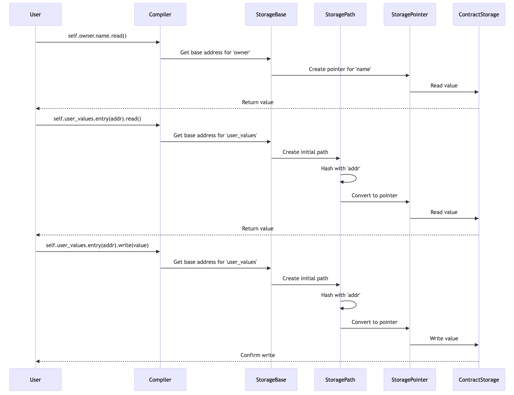

The Cairo Book
By the Cairo Community and its contributors. Special thanks to StarkWare through OnlyDust, and Voyager for supporting the creation of this book.
This version of the text assumes you’re using Cairo version 2.13.1 and Starknet Foundry version 0.51.1. See the Installation section of Chapter 1 to install or update Cairo and Starknet Foundry.
This book is open source. Find a typo or want to contribute? Check out the book's GitHub repository.
Additional resources for mastering Cairo:
-
The Cairo Playground: A browser-based playground for Cairo, enabling to explore and experiment with Cairo by writing, compiling, debugging, and proving Cairo code without any setup
Note: You can use the Cairo Playground to experiment with the book's code snippets and see how they compile into Sierra (Intermediate Representation) and Casm (Cairo Assembly).
-
The Cairo Core Library Docs: The documentation for Cairo's Core library, the standard set of types, traits, and utilities built into the language which provides essential building blocks basic used throughout the Cairo ecosystem and is automatically available in every Cairo project
-
The Cairo Package Registry: The host for Cairo's growing collection of reusable libraries, including Alexandria, Open Zeppelin Contracts for Cairo, all of which can be easily integrated via Scarb, streamlining development and dependency management
-
The Scarb documentation: The official documentation for Cairo’s package manager and build tool, covering how to create and manage packages, use dependencies, run builds, and configure projects
-
The Cairo whitepaper: The original paper introducing Cairo by StarkWare, which explains Cairo as a language for writing provable programs, details its architecture, and shows how it enables scalable, verifiable computation without relying on trusted setups
If you have any questions, feedback or comments, you can reach out through Github Issues or directly to maintainers.
Foreword
Zero-knowledge proofs have emerged as a transformative technology in the blockchain space, offering solutions for both privacy and scalability challenges. Among these, STARKs (Scalable Transparent ARguments of Knowledge) stand out as a particularly powerful innovation. Unlike traditional proof systems, STARKs rely solely on collision-resistant hash functions, making them post-quantum secure and eliminating the need for trusted setups.
However, writing general-purpose programs that can generate cryptographic proofs has historically been a significant challenge. Developers needed deep expertise in cryptography and complex mathematical concepts to create verifiable computations, making it impractical for mainstream adoption.
This is where Cairo comes in. As a general-purpose programming language designed specifically for creating provable programs, Cairo abstracts away the underlying cryptographic complexities while maintaining the full power of STARKs. Strongly inspired by Rust, Cairo has been built to help you create provable programs without requiring specific knowledge of its underlying architecture, allowing you to focus on the program logic itself.
Blockchain developers that want to deploy contracts on Starknet will use the Cairo programming language to code their smart contracts. This allows the Starknet OS to generate execution traces for transactions to be proved by a prover, which is then verified on Ethereum L1 prior to updating the state root of Starknet.
However, Cairo is not only for blockchain developers. As a general purpose programming language, it can be used for any computation that would benefit from being proved on one computer and verified on other machines. Powered by a Rust VM, and a next-generation prover, the execution and proof generation of Cairo programs is blazingly fast - making Cairo the best tool for building provable applications.
This book is designed for developers with a basic understanding of programming concepts. It is a friendly and approachable text intended to help you level up your knowledge of Cairo, but also help you develop your programming skills in general. So, dive in and get ready to learn all there is to know about Cairo!
Acknowledgements
This book would not have been possible without the help of the Cairo community. We would like to thank every contributor for their contributions to this book!
We would like to thank the Rust community for the Rust Book, which has been a great source of inspiration for this book. Many examples and explanations have been adapted from the Rust Book to fit the Cairo programming language, as the two languages share many similarities.
Introduction
What is Cairo?
Cairo is a programming language designed to leverage the power of mathematical proofs for computational integrity. Just as C.S. Lewis defined integrity as "doing the right thing, even when no one is watching," Cairo enables programs to prove they've done the right computation, even when executed on untrusted machines.
The language is built on STARK technology, a modern evolution of PCP (Probabilistically Checkable Proofs) that transforms computational claims into constraint systems. While Cairo's ultimate purpose is to generate these mathematical proofs that can be verified efficiently and with absolute certainty.
What Can You Do with It?
Cairo enables a paradigm shift in how we think about trusted computation. Its primary application today is Starknet, a Layer 2 scaling solution for Ethereum that addresses one of blockchain's fundamental challenges: scalability without sacrificing security.
In the traditional blockchain model, every participant must verify every computation. Starknet changes this by using Cairo's proof system: computations are executed off-chain by a prover who generates a STARK proof, which is then verified by an Ethereum smart contract. This verification requires significantly less computational power than re-executing the computations, enabling massive scalability while maintaining security.
However, Cairo's potential extends beyond blockchain. Any scenario where computational integrity needs to be verified efficiently can benefit from Cairo's verifiable computation capabilities.
Who Is This Book For?
This book caters to three main audiences, each with their own learning path:
-
General-Purpose Developers: If you're interested in Cairo for its verifiable computation capabilities outside of blockchain, you'll want to focus on chapters 1-12. These chapters cover the core language features and programming concepts without diving deep into smart contract specifics.
-
New Smart Contract Developers: If you're new to both Cairo and smart contracts, we recommend reading the book front to back. This will give you a solid foundation in both the language fundamentals and smart contract development principles.
-
Experienced Smart Contract Developers: If you're already familiar with smart contract development in other languages, or Rust, you might want to follow this focused path:
- Chapters 1-3 for Cairo basics
- Chapter 8 for Cairo's trait and generics system
- Skip to Chapter 15 for smart contract development
- Reference other chapters as needed
Regardless of your background, this book assumes basic programming knowledge such as variables, functions, and common data structures. While prior experience with Rust can be helpful (as Cairo shares many similarities), it's not required.
References
- Cairo CPU Architecture: https://eprint.iacr.org/2021/1063
- Cairo, Sierra and Casm: https://medium.com/nethermind-eth/under-the-hood-of-cairo-1-0-exploring-sierra-7f32808421f5
- State of non determinism: https://twitter.com/PapiniShahar/status/1638203716535713798
Getting Started
Let’s start your Cairo journey! There’s a lot to learn, but every journey starts somewhere. In this chapter, we’ll discuss:
- Installing Scarb, which is Cairo's build toolchain and package manager, on Linux, macOS, and Windows.
- Installing Starknet Foundry, which is the default test runner when creating a Cairo project.
- Writing a program that prints
Hello, world!. - Using basic Scarb commands to create a project and execute a program.
Getting Help
If you have any questions about Starknet or Cairo, you can ask them in the Starknet Discord server. The community is friendly and always willing to help.
Interacting with the Starknet AI Agent
Starknet proposes its own AI agent designed to assist with Cairo and Starknet-related questions. This AI agent is trained on the Cairo book and the Starknet documentation, using Retrieval-Augmented Generation (RAG) to efficiently retrieve information and provide accurate assistance.
You can find the Starknet Agent on the Starknet Agent website.
Installation
The first step is to install Cairo. We'll download Cairo through starkup, a command line tool for managing Cairo versions and associated tools. You'll need an internet connection for the download.
The following steps install the latest stable version of the Cairo compiler through a binary called Scarb. Scarb bundles the Cairo compiler and the Cairo language server together in an easy-to-install package so that you can start writing Cairo code right away.
Scarb is also Cairo's package manager and is heavily inspired by Cargo, Rust's build system and package manager.
Scarb handles a lot of tasks for you, such as building your code (either pure Cairo or Starknet contracts), downloading the libraries your code depends on, building those libraries, and provides LSP support for the VSCode Cairo 1 extension.
As you write more complex Cairo programs, you might add dependencies, and if you start a project using Scarb, managing external code and dependencies will be a lot easier to do.
Starknet Foundry is a toolchain for Cairo programs and Starknet smart contract development. It supports many features, including writing and running tests with advanced features, deploying contracts, interacting with the Starknet network, and more.
Let's start by installing starkup, which will help us manage Cairo, Scarb, and Starknet Foundry.
Installing starkup on Linux or MacOs
If you're using Linux or macOS, open a terminal and enter the following command:
curl --proto '=https' --tlsv1.2 -sSf https://sh.starkup.dev | sh
The command downloads a script and starts the installation of the starkup tool, which installs the latest stable version of Cairo and related toolings. You might be prompted for your password. If the install is successful, the following line will appear:
starkup: Installation complete.
After installation, starkup will automatically install the latest stable versions of Cairo, Scarb, and Starknet Foundry. You can verify the installations by running the following commands in a new terminal session:
$ scarb --version
scarb 2.13.1 (639d0a65e 2025-08-04)
cairo: 2.13.1 (https://crates.io/crates/cairo-lang-compiler/2.13.1)
sierra: 1.7.0
$ snforge --version
snforge 0.51.1
We'll describe Starknet Foundry in more detail in Chapter 10 for Cairo programs testing and in Chapter 18 when discussing Starknet smart contract testing and security in the second part of the book.
Installing the VSCode Extension
Cairo has a VSCode extension that provides syntax highlighting, code completion,
and other useful features. You can install it from the VSCode
Marketplace. Once installed, go into the extension settings, and
make sure to tick the Enable Language Server and Enable Scarb options.
Hello, World
Now that you’ve installed Cairo through Scarb, it’s time to write your first
Cairo program. It’s traditional when learning a new language to write a little
program that prints the text Hello, world! to the screen, so we’ll do the same
here!
Note: This book assumes basic familiarity with the command line. Cairo makes no specific demands about your editing or tooling or where your code lives, so if you prefer to use an integrated development environment (IDE) instead of the command line, feel free to use your favorite IDE. The Cairo team has developed a VSCode extension for the Cairo language that you can use to get the features from the language server and code highlighting. See Appendix F for more details.
Creating a Project Directory
You’ll start by making a directory to store your Cairo code. It doesn’t matter to Cairo where your code lives, but for the exercises and projects in this book, we suggest making a cairo_projects directory in your home directory and keeping all your projects there.
Open a terminal and enter the following commands to make a cairo_projects directory.
For Linux, macOS, and PowerShell on Windows, enter this:
mkdir ~/cairo_projects
cd ~/cairo_projects
For Windows CMD, enter this:
> mkdir "%USERPROFILE%\cairo_projects"
> cd /d "%USERPROFILE%\cairo_projects"
Note: From now on, for each example shown in the book, we assume that you will be working from a Scarb project directory. If you are not using Scarb, and try to run the examples from a different directory, you might need to adjust the commands accordingly or create a Scarb project.
Creating a Project with Scarb
Let’s create a new project using Scarb.
Navigate to your cairo_projects directory (or wherever you decided to store your code). Then run the following:
scarb new hello_world
Scarb will ask you about the dependencies you want to add. You will be given two options :
? Which test runner do you want to set up? ›
❯ Starknet Foundry (default)
Cairo Test
In general, we'll prefer using the first one ❯ Starknet Foundry (default).
This creates a new directory and project called hello_world. We’ve named our project hello_world, and Scarb creates its files in a directory of the same name.
Go into the hello_world directory with the command cd hello_world. You’ll
see that Scarb has generated three files and two directory for us: a
Scarb.toml file, a src directory with a lib.cairo file inside and a
tests directory containing a test_contract.cairo file. For now, we can
remove this tests directory.
It has also initialized a new Git repository along with a .gitignore file
Note: Git is a common version control system. You can stop using version control system by using the
--no-vcsflag. Runscarb new --helpto see the available options.
Open Scarb.toml in your text editor of choice. It should look similar to the code in Listing 1-1.
Filename: Scarb.toml
[package]
name = "hello_world"
version = "0.1.0"
edition = "2024_07"
# See more keys and their definitions at https://docs.swmansion.com/scarb/docs/reference/manifest.html
[dependencies]
starknet = "2.13.1"
[dev-dependencies]
snforge_std = "0.51.1"
assert_macros = "2.13.1"
[[target.starknet-contract]]
sierra = true
[scripts]
test = "snforge test"
# ...
Contents of Scarb.toml generated by scarb new
This file is in the TOML (Tom’s Obvious, Minimal Language) format, which is Scarb’s configuration format.
The first line, [package], is a section heading that indicates that the
following statements are configuring a package. As we add more information to
this file, we’ll add other sections.
The next three lines set the configuration information Scarb needs to compile your program: the name of the package and the version of Scarb to use, and the edition of the prelude to use. The prelude is the collection of the most commonly used items that are automatically imported into every Cairo program. You can learn more about the prelude in Appendix D.
The [dependencies] section, is the start of a section for you to list any of
your project’s dependencies. In Cairo, packages of code are referred to as
crates. We won’t need any other crates for this project.
The [dev-dependencies] section is about dependencies that are required for
development, but are not needed for the actual production build of the project.
snforge_std and assert_macros are two examples of such dependencies. If you
want to test your project without using Starknet Foundry, you can use
cairo_test.
The [[target.starknet-contract]] section allows to build Starknet smart
contracts. We can remove it for now.
The [script] section allows to define custom scripts. By default, there is one
script for running tests using snforge with the scarb test command. We can
also remove it for now.
Starknet Foundry also have more options, check out Starknet Foundry documentation for more information.
By default, using Starknet Foundry adds the starknet dependency and the
[[target.starknet-contract]] section, so that you can build contracts for
Starknet out of the box. We will start with only Cairo programs, so you can edit
your Scarb.toml file to the following:
Filename: Scarb.toml
[package]
name = "hello_world"
version = "0.1.0"
edition = "2024_07"
[cairo]
enable-gas = false
[dependencies]
cairo_execute = "2.13.1"
[[target.executable]]
name = "hello_world_main"
function = "hello_world::hello_world::main"
1-2: Contents of modified Scarb.toml
The other file created by Scarb is src/lib.cairo, let's delete all the content and put in the following content, we will explain the reason later.
mod hello_world;
Then create a new file called src/hello_world.cairo and put the following code in it:
Filename: src/hello_world.cairo
#[executable]
fn main() {
println!("Hello, World!");
}
We have just created a file called lib.cairo, which contains a module
declaration referencing another module named hello_world, as well as the file
hello_world.cairo, containing the implementation details of the hello_world
module.
Scarb requires your source files to be located within the src directory.
The top-level project directory is reserved for README files, license information, configuration files, and any other non-code-related content. Scarb ensures a designated location for all project components, maintaining a structured organization.
If you started a project that doesn’t use Scarb, you can convert it to a project
that does use Scarb. Move the project code into the src directory and create
an appropriate Scarb.toml file. You can also use scarb init command to
generate the src folder and the Scarb.toml it contains.
├── Scarb.toml
├── src
│ ├── lib.cairo
│ └── hello_world.cairo
A sample Scarb project structure
Building a Scarb Project
From your hello_world directory, build your project by entering the following command:
$ scarb build
Compiling hello_world v0.1.0 (listings/ch01-getting-started/no_listing_01_hello_world/Scarb.toml)
Finished `dev` profile target(s) in 1 second
This command creates a hello_world_main_executable.json file in target/dev,
let's ignore this file for now.
If you have installed Cairo correctly, you should be able to run the main
function of your program with the scarb execute command and see the following
output:
$ scarb execute
Compiling hello_world v0.1.0 (listings/ch01-getting-started/no_listing_01_hello_world/Scarb.toml)
Finished `dev` profile target(s) in 1 second
Executing hello_world
Hello, World!
Regardless of your operating system, the string Hello, world! should be
printed to the terminal.
If Hello, world! did print, congratulations! You’ve officially written a Cairo
program. That makes you a Cairo programmer — welcome!
Anatomy of a Cairo Program
Let’s review this “Hello, world!” program in detail. Here’s the first piece of the puzzle:
fn main() {
}
These lines define a function named main. The main function is special: it
is always the first code that runs in every executable Cairo program. Here, the
first line declares a function named main that has no parameters and returns
nothing. If there were parameters, they would go inside the parentheses ().
The function body is wrapped in {}. Cairo requires curly brackets around all
function bodies. It’s good style to place the opening curly bracket on the same
line as the function declaration, adding one space in between.
Note: If you want to stick to a standard style across Cairo projects, you can use the automatic formatter tool available with
scarb fmtto format your code in a particular style (more onscarb fmtin Appendix F). The Cairo team has included this tool with the standard Cairo distribution, asscarb executeis, so it should already be installed on your computer!
The body of the main function holds the following code:
println!("Hello, World!");
This line does all the work in this little program: it prints text to the screen. There are four important details to notice here.
First, Cairo style is to indent with four spaces, not a tab.
Second, println! calls a Cairo macro. If it had called a function instead, it
would be entered as println (without the !). We’ll discuss Cairo macros in
more detail in the "Macros" chapter. For now, you just need to know
that using a ! means that you’re calling a macro instead of a normal function
and that macros don’t always follow the same rules as functions.
Third, you see the "Hello, world!" string. We pass this string as an argument
to println!, and the string is printed to the screen.
Fourth, we end the line with a semicolon (;), which indicates that this
expression is over and the next one is ready to begin. Most lines of Cairo code
end with a semicolon.
Summary
Let’s recap what we’ve learned so far about Scarb:
- We can install one or multiple Scarb versions, either the latest stable or a specific one, using asdf.
- We can create a project using
scarb new. - We can build a project using
scarb buildto generate the compiled Sierra code. - We can execute a Cairo program using the
scarb executecommand.
An additional advantage of using Scarb is that the commands are the same no matter which operating system you’re working on. So, at this point, we’ll no longer provide specific instructions for Linux and macOS versus Windows.
You’re already off to a great start on your Cairo journey! This is a great time to build a more substantial program to get used to reading and writing Cairo code.
Proving That A Number Is Prime
Let’s dive into Cairo by working through a hands-on project together! This section introduces you to key Cairo concepts and the process of generating zero-knowledge proofs locally, a powerful feature enabled by Cairo in combination with the Stwo prover. You’ll learn about functions, control flow, executable targets, Scarb workflows, and how to prove a statement — all while practicing the fundamentals of Cairo programming. In later chapters, we’ll explore these ideas in more depth.
For this project, we’ll implement a classic mathematical problem suited for zero-knowledge proofs: proving that a number is prime. This is the ideal project to introduce you to the concept of zero-knowledge proofs in Cairo, because while finding prime numbers is a complex task, proving that a number is prime is straightforward.
Here’s how it works: the program will take an input number from the user and check whether it’s prime using a trial division algorithm. Then, we’ll use Scarb to execute the program and generate a proof that the primality check was performed correctly, so that anyone can verify your proof to trust that you found a prime number. The user will input a number, and we’ll output whether it’s prime, followed by generating and verifying a proof.
Setting Up a New Project
To get started, ensure you have Scarb 2.13.1 or later installed (see Installation for details). We’ll use Scarb to create and manage our Cairo project.
Open a terminal in your projects directory and create a new Scarb project:
scarb new prime_prover
cd prime_prover
The scarb new command creates a new directory called prime_prover with a basic
project structure. Let’s examine the generated Scarb.toml file:
Filename: Scarb.toml
[package]
name = "prime_prover"
version = "0.1.0"
edition = "2024_07"
[dependencies]
[dev-dependencies]
cairo_test = "2.13.1"
This is a minimal manifest file for a Cairo project. However, since we want to
create an executable program that we can prove, we need to modify it. Update
Scarb.toml to define an executable target and include the cairo_execute
plugin:
Filename: Scarb.toml
[package]
name = "prime_prover"
version = "0.1.0"
edition = "2024_07"
[cairo]
enable-gas = false
[dependencies]
cairo_execute = "2.13.1"
[[target.executable]]
name = "main"
function = "prime_prover::main"
Here’s what we’ve added:
[[target.executable]]specifies that this package compiles to a Cairo executable (not a library or Starknet contract).[cairo] enable-gas = falsedisables gas tracking, which is required for executable targets since gas is specific to Starknet contracts.[dependencies] cairo_execute = "2.13.1"adds the plugin needed to execute and prove our program.
Now, check the generated src/lib.cairo, which is a simple placeholder. Since
we’re building an executable, we’ll replace this with a function annotated with
#[executable] to define our entry point.
Writing the Prime-Checking Logic
Let’s write a program to check if a number is prime. A number is prime if it’s
greater than 1 and divisible only by 1 and itself. We’ll implement a simple
trial division algorithm and mark it as executable. Replace the contents of
src/lib.cairo with the following:
Filename: src/lib.cairo
/// Checks if a number is prime
///
/// # Arguments
///
/// * `n` - The number to check
///
/// # Returns
///
/// * `true` if the number is prime
/// * `false` if the number is not prime
fn is_prime(n: u32) -> bool {
if n <= 1 {
return false;
}
if n == 2 {
return true;
}
if n % 2 == 0 {
return false;
}
let mut i = 3;
loop {
if i * i > n {
return true;
}
if n % i == 0 {
return false;
}
i += 2;
}
}
// Executable entry point
#[executable]
fn main(input: u32) -> bool {
is_prime(input)
}
Let’s break this down:
The is_prime function:
- Takes a
u32input (an unsigned 32-bit integer) and returns abool. - Checks edge cases: numbers ≤ 1 are not prime, 2 is prime, even numbers > 2 are not prime.
- Uses a loop to test odd divisors up to the square root of
n. If no divisors are found, the number is prime.
The main function:
- Marked with
#[executable], indicating it’s the entry point for our program. - Takes a u32 input from the user and returns a bool indicating whether it’s prime.
- Calls is_prime to perform the check.
This is a straightforward implementation, but it’s perfect for demonstrating proving in Cairo.
Executing the Program
Now let’s run the program with Scarb to test it. Use the scarb execute command and provide an input number as an argument:
scarb execute -p prime_prover --print-program-output --arguments 17
-p prime_proverspecifies the package name (matches Scarb.toml).--print-program-outputdisplays the result.--arguments 17passes the number 17 as input.
You should see output like this:
$ scarb execute -p prime_prover --print-program-output --arguments 17
Compiling prime_prover v0.1.0 (listings/ch01-getting-started/prime_prover/Scarb.toml)
Finished `dev` profile target(s) in 1 second
Executing prime_prover
Program output:
1
The output represents whether the program executed successfully and the result
of the program. Here, 0 indicates success (no panic), and 1 represents true
(17 is prime). Try a few more numbers:
$ scarb execute -p prime_prover --print-program-output --arguments 4
[0, 0] # 4 is not prime
$ scarb execute -p prime_prover --print-program-output --arguments 23
[0, 1] # 23 is prime
The execution creates a folder under ./target/execute/prime_prover/execution1/
containing files like air_public_input.json, air_private_input.json,
trace.bin, and memory.bin. These are the artifacts needed for proving.
Generating a Zero-Knowledge Proof
Now for the exciting part: proving that the primality check was computed correctly without revealing the input! Cairo 2.10 integrates the Stwo prover via Scarb, allowing us to generate a proof directly. Run:
$ scarb prove --execution-id 1
Proving prime_prover
warn: soundness of proof is not yet guaranteed by Stwo, use at your own risk
Saving proof to: target/execute/prime_prover/execution1/proof/proof.json
--execution_id 1 points to the first execution (from the execution1 folder).
This command generates a proof.json file in
./target/execute/prime_prover/execution1/proof/. The proof demonstrates that
the program executed correctly for some input, producing a true or false output.
Verifying the Proof
To ensure the proof is valid, verify it with:
$ scarb verify --execution-id 1
Verifying prime_prover
Verified proof successfully
If successful, you’ll see a confirmation message. This verifies that the computation (primality check) was performed correctly, aligning with the public inputs, without needing to re-run the program.
Improving the Program: Handling Input Errors
Currently, our program assumes the input is a valid u32. What if we want to
handle larger numbers or invalid inputs? Cairo’s u32 has a maximum value of
2^32 - 1 (4,294,967,295), and inputs must be provided as integers. Let’s
modify the program to use u128 and add a basic check. Update src/lib.cairo:
Filename: src/lib.cairo
/// Checks if a number is prime
///
/// # Arguments
///
/// * `n` - The number to check
///
/// # Returns
///
/// * `true` if the number is prime
/// * `false` if the number is not prime
fn is_prime(n: u128) -> bool {
if n <= 1 {
return false;
}
if n == 2 {
return true;
}
if n % 2 == 0 {
return false;
}
let mut i = 3;
loop {
if i * i > n {
return true;
}
if n % i == 0 {
return false;
}
i += 2;
}
}
#[executable]
fn main(input: u128) -> bool {
if input > 1000000 { // Arbitrary limit for demo purposes
panic!("Input too large, must be <= 1,000,000");
}
is_prime(input)
}
Changed u32 to u128 for a larger range (up to 2^128 - 1). Added a check to
panic if the input exceeds 1,000,000 (for simplicity; adjust as needed). Test
it:
$ scarb execute -p prime_prover --print-program-output --arguments 1000001
Compiling prime_prover v0.1.0 (listings/ch01-getting-started/prime_prover2/Scarb.toml)
Finished `dev` profile target(s) in 1 second
Executing prime_prover
error: Panicked with "Input too large, must be <= 1,000,000".
If we pass a number greater than 1,000,000, the program will panic - and thus, no proof can be generated. As such, it's not possible to verify a proof for a panicked execution.
Summary
Congratulations! You’ve built a Cairo program to check primality, executed it with Scarb, and generated and verified a zero-knowledge proof using the Stwo prover. This project introduced you to:
- Defining executable targets in Scarb.toml.
- Writing functions and control flow in Cairo.
- Using
scarb executeto run programs and generate execution traces. - Proving and verifying computations with
scarb proveandscarb verify.
In the next chapters, you’ll dive deeper into Cairo’s syntax (Chapter 2), ownership (Chapter 4), and other features. For now, experiment with different inputs or modify the primality check — can you optimize it further?
Common Programming Concepts
This chapter covers concepts that appear in almost every programming language and how they work in Cairo. Many programming languages have much in common at their core. None of the concepts presented in this chapter are unique to Cairo, but we’ll discuss them in the context of Cairo and explain the conventions around using these concepts.
Specifically, you’ll learn about variables, basic types, functions, comments, and control flow. These foundations will be in every Cairo program, and learning them early will give you a strong core to start from.
Variables and Mutability
Cairo uses an immutable memory model, meaning that once a memory cell is written to, it can't be overwritten but only read from. To reflect this immutable memory model, variables in Cairo are immutable by default. However, the language abstracts this model and gives you the option to make your variables mutable. Let’s explore how and why Cairo enforces immutability, and how you can make your variables mutable.
When a variable is immutable, once a value is bound to a name, you can’t change
that value. To illustrate this, generate a new project called variables in
your cairo_projects directory by using scarb new variables.
Then, in your new variables directory, open src/lib.cairo and replace its code with the following code, which won’t compile just yet:
Filename: src/lib.cairo
#[executable]
fn main() {
let x = 5;
println!("The value of x is: {}", x);
x = 6;
println!("The value of x is: {}", x);
}
Save and run the program using scarb execute. You should receive an error
message regarding an immutability error, as shown in this output:
$ scarb execute
Compiling no_listing_01_variables_are_immutable v0.1.0 (listings/ch02-common-programming-concepts/no_listing_01_variables_are_immutable/Scarb.toml)
error: Cannot assign to an immutable variable.
--> listings/ch02-common-programming-concepts/no_listing_01_variables_are_immutable/src/lib.cairo:7:5
x = 6;
^^^^^
error: could not compile `no_listing_01_variables_are_immutable` due to 1 previous error
error: `scarb` command exited with error
This example shows how the compiler helps you find errors in your programs. Compiler errors can be frustrating, but they only mean your program isn’t safely doing what you want it to do yet; they do not mean that you’re not a good programmer! Experienced Caironautes still get compiler errors.
You received the error message Cannot assign to an immutable variable. because
you tried to assign a second value to the immutable x variable.
It’s important that we get compile-time errors when we attempt to change a value that’s designated as immutable because this specific situation can lead to bugs. If one part of our code operates on the assumption that a value will never change and another part of our code changes that value, it’s possible that the first part of the code won’t do what it was designed to do. The cause of this kind of bug can be difficult to track down after the fact, especially when the second piece of code changes the value only sometimes.
Cairo, unlike most other languages, has immutable memory. This makes a whole class of bugs impossible, because values will never change unexpectedly. This makes code easier to reason about.
But mutability can be very useful, and can make code more convenient to write.
Although variables are immutable by default, you can make them mutable by adding
mut in front of the variable name. Adding mut also conveys intent to future
readers of the code by indicating that other parts of the code will be changing
the value associated to this variable.
However, you might be wondering at this point what exactly happens when a
variable is declared as mut, as we previously mentioned that Cairo's memory is
immutable. The answer is that the value is immutable, but the variable
isn't. The value associated to the variable can be changed. Assigning to a
mutable variable in Cairo is essentially equivalent to redeclaring it to refer
to another value in another memory cell, but the compiler handles that for you,
and the keyword mut makes it explicit. Upon examining the low-level Cairo
Assembly code, it becomes clear that variable mutation is implemented as
syntactic sugar, which translates mutation operations into a series of steps
equivalent to variable shadowing. The only difference is that at the Cairo
level, the variable is not redeclared so its type cannot change.
For example, let’s change src/lib.cairo to the following:
#[executable]
fn main() {
let mut x = 5;
println!("The value of x is: {}", x);
x = 6;
println!("The value of x is: {}", x);
}
When we run the program now, we get this:
$ scarb execute
Compiling no_listing_02_adding_mut v0.1.0 (listings/ch02-common-programming-concepts/no_listing_02_adding_mut/Scarb.toml)
Finished `dev` profile target(s) in 1 second
Executing no_listing_02_adding_mut
The value of x is: 5
The value of x is: 6
We’re allowed to change the value bound to x from 5 to 6 when mut is
used. Ultimately, deciding whether to use mutability or not is up to you and
depends on what you think is clearest in that particular situation.
Constants
Like immutable variables, constants are values that are bound to a name and are not allowed to change, but there are a few differences between constants and variables.
First, you aren’t allowed to use mut with constants. Constants aren’t just
immutable by default—they’re always immutable. You declare constants using the
const keyword instead of the let keyword, and the type of the value must
be annotated. We’ll cover types and type annotations in the next section, “Data
Types”, so don’t worry about the details right now. Just know that
you must always annotate the type.
Constant variables can be declared with any usual data type, including structs, enums and fixed-size arrays.
Constants can only be declared in the global scope, which makes them useful for values that many parts of code need to know about.
The last difference is that constants may natively be set only to a constant expression, not the result of a value that could only be computed at runtime.
Here’s an example of constants declaration:
struct AnyStruct {
a: u256,
b: u32,
}
enum AnyEnum {
A: felt252,
B: (usize, u256),
}
const ONE_HOUR_IN_SECONDS: u32 = 3600;
const ONE_HOUR_IN_SECONDS_2: u32 = 60 * 60;
const STRUCT_INSTANCE: AnyStruct = AnyStruct { a: 0, b: 1 };
const ENUM_INSTANCE: AnyEnum = AnyEnum::A('any enum');
const BOOL_FIXED_SIZE_ARRAY: [bool; 2] = [true, false];
Cairo's naming convention for constants is to use all uppercase with underscores between words.
Constants are valid for the entire time a program runs, within the scope in which they were declared. This property makes constants useful for values in your application domain that multiple parts of the program might need to know about, such as the maximum number of points any player of a game is allowed to earn, or the speed of light.
Naming hardcoded values used throughout your program as constants is useful in conveying the meaning of that value to future maintainers of the code. It also helps to have only one place in your code you would need to change if the hardcoded value needed to be updated in the future.
Shadowing
Variable shadowing refers to the declaration of a new variable with the same
name as a previous variable. Caironautes say that the first variable is
shadowed by the second, which means that the second variable is what the
compiler will see when you use the name of the variable. In effect, the second
variable overshadows the first, taking any uses of the variable name to itself
until either it itself is shadowed or the scope ends. We can shadow a variable
by using the same variable’s name and repeating the use of the let keyword as
follows:
#[executable]
fn main() {
let x = 5;
let x = x + 1;
{
let x = x * 2;
println!("Inner scope x value is: {}", x);
}
println!("Outer scope x value is: {}", x);
}
This program first binds x to a value of 5. Then it creates a new variable
x by repeating let x =, taking the original value and adding 1 so the
value of x is then 6. Then, within an inner scope created with the curly
brackets, the third let statement also shadows x and creates a new variable,
multiplying the previous value by 2 to give x a value of 12. When that
scope is over, the inner shadowing ends and x returns to being 6. When we
run this program, it will output the following:
$ scarb execute
Compiling no_listing_03_shadowing v0.1.0 (listings/ch02-common-programming-concepts/no_listing_03_shadowing/Scarb.toml)
Finished `dev` profile target(s) in 1 second
Executing no_listing_03_shadowing
Inner scope x value is: 12
Outer scope x value is: 6
Shadowing is different from marking a variable as mut because we’ll get a
compile-time error if we accidentally try to reassign to this variable without
using the let keyword. By using let, we can perform a few transformations on
a value but have the variable be immutable after those transformations have been
completed.
Another distinction between mut and shadowing is that when we use the let
keyword again, we are effectively creating a new variable, which allows us to
change the type of the value while reusing the same name. As mentioned before,
variable shadowing and mutable variables are equivalent at the lower level. The
only difference is that by shadowing a variable, the compiler will not complain
if you change its type. For example, say our program performs a type conversion
between the u64 and felt252 types.
#[executable]
fn main() {
let x: u64 = 2;
println!("The value of x is {} of type u64", x);
let x: felt252 = x.into(); // converts x to a felt, type annotation is required.
println!("The value of x is {} of type felt252", x);
}
The first x variable has a u64 type while the second x variable has a
felt252 type. Shadowing thus spares us from having to come up with different
names, such as x_u64 and x_felt252; instead, we can reuse the simpler x
name. However, if we try to use mut for this, as shown here, we’ll get a
compile-time error:
#[executable]
fn main() {
let mut x: u64 = 2;
println!("The value of x is: {}", x);
x = 5_u8;
println!("The value of x is: {}", x);
}
The error says we were expecting a u64 (the original type) but we got a
different type:
$ scarb execute
Compiling no_listing_05_mut_cant_change_type v0.1.0 (listings/ch02-common-programming-concepts/no_listing_05_mut_cant_change_type/Scarb.toml)
error: Unexpected argument type. Expected: "core::integer::u64", found: "core::integer::u8".
--> listings/ch02-common-programming-concepts/no_listing_05_mut_cant_change_type/src/lib.cairo:7:9
x = 5_u8;
^^^^
error: could not compile `no_listing_05_mut_cant_change_type` due to 1 previous error
error: `scarb` command exited with error
Now that we’ve explored how variables work, let’s look at more data types they can have.
Data Types
Every value in Cairo is of a certain data type, which tells Cairo what kind of data is being specified so it knows how to work with that data. This section covers two subsets of data types: scalars and compounds.
Keep in mind that Cairo is a statically typed language, which means that it must know the types of all variables at compile time. The compiler can usually infer the desired type based on the value and its usage. In cases when many types are possible, we can use a conversion method where we specify the desired output type.
#[executable]
fn main() {
let x: felt252 = 3;
let y: u32 = x.try_into().unwrap();
}
You’ll see different type annotations for other data types.
Scalar Types
A scalar type represents a single value. Cairo has three primary scalar types: felts, integers, and booleans. You may recognize these from other programming languages. Let’s jump into how they work in Cairo.
Felt Type
In Cairo, if you don't specify the type of a variable or argument, its type
defaults to a field element, represented by the keyword felt252. In the
context of Cairo, when we say “a field element” we mean an integer in the range
\( 0 \leq x < P \), where \( P \) is a very large prime number currently
equal to \( {2^{251}} + 17 \cdot {2^{192}} + 1 \). When adding, subtracting,
or multiplying, if the result falls outside the specified range of the prime
number, an overflow (or underflow) occurs, and an appropriate multiple of \( P
\) is added or subtracted to bring the result back within the range (i.e., the
result is computed \( \mod P \) ).
The most important difference between integers and field elements is division:
Division of field elements (and therefore division in Cairo) is unlike regular
CPUs division, where integer division \( \frac{x}{y} \) is defined as \(
\left\lfloor \frac{x}{y} \right\rfloor \) where the integer part of the
quotient is returned (so you get \( \frac{7}{3} = 2 \)) and it may or may not
satisfy the equation \( \frac{x}{y} \cdot y == x \), depending on the
divisibility of x by y.
In Cairo, the result of \( \frac{x}{y} \) is defined to always satisfy the
equation \( \frac{x}{y} \cdot y == x \). If y divides x as integers, you will
get the expected result in Cairo (for example \( \frac{6}{2} \) will indeed
result in 3). But when y does not divide x, you may get a surprising result:
for example, since \( 2 \cdot \frac{P + 1}{2} = P + 1 \equiv 1 \mod P \), the
value of \( \frac{1}{2} \) in Cairo is \( \frac{P + 1}{2} \) (and not 0 or
0.5), as it satisfies the above equation.
Integer Types
The felt252 type is a fundamental type that serves as the basis for creating all
types in the core library. However, it is highly recommended for programmers to
use the integer types instead of the felt252 type whenever possible, as the
integer types come with added security features that provide extra protection
against potential vulnerabilities in the code, such as overflow and underflow
checks. By using these integer types, programmers can ensure that their programs
are more secure and less susceptible to attacks or other security threats. An
integer is a number without a fractional component. This type declaration
indicates the number of bits the programmer can use to store the integer. Table
3-1 shows the built-in integer types in Cairo. We can use any of these variants
to declare the type of an integer value.
| Length | Unsigned |
|---|---|
| 8-bit | u8 |
| 16-bit | u16 |
| 32-bit | u32 |
| 64-bit | u64 |
| 128-bit | u128 |
| 256-bit | u256 |
| 32-bit | usize |
Each variant has an explicit size. Note that for now, the usize type is just
an alias for u32; however, it might be useful when in the future Cairo can be
compiled to MLIR. As variables are unsigned, they can't contain a negative
number. This code will cause the program to panic:
fn sub_u8s(x: u8, y: u8) -> u8 {
x - y
}
#[executable]
fn main() {
sub_u8s(1, 3);
}
All integer types previously mentioned fit into a felt252, except for u256
which needs 4 more bits to be stored. Under the hood, u256 is basically a
struct with 2 fields: u256 {low: u128, high: u128}.
Cairo also provides support for signed integers, starting with the prefix i.
These integers can represent both positive and negative values, with sizes
ranging from i8 to i128. Each signed variant can store numbers from \(
-({2^{n - 1}}) \) to \( {2^{n - 1}} - 1 \) inclusive, where n is the number
of bits that variant uses. So an i8 can store numbers from \( -({2^7}) \) to
\( {2^7} - 1 \), which equals -128 to 127.
You can write integer literals in any of the forms shown in Table 3-2. Note that
number literals that can be multiple numeric types allow a type suffix, such as
57_u8, to designate the type. It is also possible to use a visual separator
_ for number literals, in order to improve code readability.
| Numeric literals | Example |
|---|---|
| Decimal | 98222 |
| Hex | 0xff |
| Octal | 0o04321 |
| Binary | 0b01 |
So how do you know which type of integer to use? Try to estimate the max value
your int can have and choose the good size. The primary situation in which you’d
use usize is when indexing some sort of collection.
Numeric Operations
Cairo supports the basic mathematical operations you’d expect for all the
integer types: addition, subtraction, multiplication, division, and remainder.
Integer division truncates toward zero to the nearest integer. The following
code shows how you’d use each numeric operation in a let statement:
#[executable]
fn main() {
// addition
let sum = 5_u128 + 10_u128;
// subtraction
let difference = 95_u128 - 4_u128;
// multiplication
let product = 4_u128 * 30_u128;
// division
let quotient = 56_u128 / 32_u128; //result is 1
let quotient = 64_u128 / 32_u128; //result is 2
// remainder
let remainder = 43_u128 % 5_u128; // result is 3
}
Each expression in these statements uses a mathematical operator and evaluates to a single value, which is then bound to a variable.
Appendix B contains a list of all operators that Cairo provides.
The Boolean Type
As in most other programming languages, a Boolean type in Cairo has two possible
values: true and false. Booleans are one felt252 in size. The Boolean type
in Cairo is specified using bool. For example:
#[executable]
fn main() {
let t = true;
let f: bool = false; // with explicit type annotation
}
When declaring a bool variable, it is mandatory to use either true or
false literals as value. Hence, it is not allowed to use integer literals
(i.e. 0 instead of false) for bool declarations.
The main way to use Boolean values is through conditionals, such as an if
expression. We’ll cover how if expressions work in Cairo in the "Control
Flow" section.
String Types
Cairo doesn't have a native type for strings but provides two ways to handle them: short strings using simple quotes and ByteArray using double quotes.
Short strings
A short string is an ASCII string where each character is encoded on one byte (see the ASCII table). For example:
'a'is equivalent to0x61'b'is equivalent to0x62'c'is equivalent to0x630x616263is equivalent to'abc'.
Cairo uses the felt252 for short strings. As the felt252 is on 251 bits, a
short string is limited to 31 characters (31 * 8 = 248 bits, which is the
maximum multiple of 8 that fits in 251 bits).
You can choose to represent your short string with an hexadecimal value like
0x616263 or by directly writing the string using simple quotes like 'abc',
which is more convenient.
Here are some examples of declaring short strings in Cairo:
#[executable]
fn main() {
let my_first_char = 'C';
let my_first_char_in_hex = 0x43;
let my_first_string = 'Hello world';
let my_first_string_in_hex = 0x48656C6C6F20776F726C64;
let long_string: ByteArray = "this is a string which has more than 31 characters";
}
Byte Array Strings
Cairo's Core Library provides a ByteArray type for handling strings and byte
sequences longer than short strings. This type is particularly useful for longer
strings or when you need to perform operations on the string data.
The ByteArray in Cairo is implemented as a combination of two parts:
- An array of
bytes31words, where each word contains 31 bytes of data. - A pending
felt252word that acts as a buffer for bytes that haven't yet filled a completebytes31word.
This design enables efficient handling of byte sequences while aligning with
Cairo's memory model and basic types. Developers interact with ByteArray
through its provided methods and operators, abstracting away the internal
implementation details.
Unlike short strings, ByteArray strings can contain more than 31 characters
and are written using double quotes:
#[executable]
fn main() {
let my_first_char = 'C';
let my_first_char_in_hex = 0x43;
let my_first_string = 'Hello world';
let my_first_string_in_hex = 0x48656C6C6F20776F726C64;
let long_string: ByteArray = "this is a string which has more than 31 characters";
}
Compound Types
The Tuple Type
A tuple is a general way of grouping together a number of values with a variety of types into one compound type. Tuples have a fixed length: once declared, they cannot grow or shrink in size.
We create a tuple by writing a comma-separated list of values inside parentheses. Each position in the tuple has a type, and the types of the different values in the tuple don’t have to be the same. We’ve added optional type annotations in this example:
#[executable]
fn main() {
let tup: (u32, u64, bool) = (10, 20, true);
}
The variable tup binds to the entire tuple because a tuple is considered a
single compound element. To get the individual values out of a tuple, we can use
pattern matching to destructure a tuple value, like this:
#[executable]
fn main() {
let tup = (500, 6, true);
let (x, y, z) = tup;
if y == 6 {
println!("y is 6!");
}
}
This program first creates a tuple and binds it to the variable tup. It then
uses a pattern with let to take tup and turn it into three separate
variables, x, y, and z. This is called destructuring because it breaks
the single tuple into three parts. Finally, the program prints y is 6! as the
value of y is 6.
We can also declare the tuple with value and types, and destructure it at the same time. For example:
#[executable]
fn main() {
let (x, y): (felt252, felt252) = (2, 3);
}
The Unit Type ()
A unit type is a type which has only one value (). It is represented by a
tuple with no elements. Its size is always zero, and it is guaranteed to not
exist in the compiled code.
You might be wondering why you would even need a unit type? In Cairo, everything
is an expression, and an expression that returns nothing actually returns ()
implicitly.
The Fixed Size Array Type
Another way to have a collection of multiple values is with a fixed size array. Unlike a tuple, every element of a fixed size array must have the same type.
We write the values in a fixed-size array as a comma-separated list inside square brackets. The array’s type is written using square brackets with the type of each element, a semicolon, and then the number of elements in the array, like so:
#[executable]
fn main() {
let arr1: [u64; 5] = [1, 2, 3, 4, 5];
}
In the type annotation [u64; 5], u64 specifies the type of each element,
while 5 after the semicolon defines the array's length. This syntax ensures
that the array always contains exactly 5 elements of type u64.
Fixed size arrays are useful when you want to hardcode a potentially long
sequence of data directly in your program. This type of array must not be
confused with the Array<T> type, which is a similar collection type
provided by the core library that is allowed to grow in size. If you're unsure
whether to use a fixed size array or the Array<T> type, chances are that you
are looking for the Array<T> type.
Because their size is known at compile-time, fixed-size arrays don't require
runtime memory management, which makes them more efficient than
dynamically-sized arrays. Overall, they're more useful when you know the number
of elements will not need to change. For example, they can be used to
efficiently store lookup tables that won't change during runtime. If you were
using the names of the month in a program, you would probably use a fixed size
array rather than an Array<T> because you know it will always contain 12
elements:
let months = [
'January', 'February', 'March', 'April', 'May', 'June', 'July', 'August', 'September',
'October', 'November', 'December',
];
You can also initialize an array to contain the same value for each element by specifying the initial value, followed by a semicolon, and then the length of the array in square brackets, as shown here:
let a = [3; 5];
The array named a will contain 5 elements that will all be set to the value
3 initially. This is the same as writing let a = [3, 3, 3, 3, 3]; but in a
more concise way.
Accessing Fixed Size Arrays Elements
As a fixed-size array is a data structure known at compile time, it's content is represented as a sequence of values in the program bytecode. Accessing an element of that array will simply read that value from the program bytecode efficiently.
We have two different ways of accessing fixed size array elements:
- Deconstructing the array into multiple variables, as we did with tuples.
#[executable]
fn main() {
let my_arr = [1, 2, 3, 4, 5];
// Accessing elements of a fixed-size array by deconstruction
let [a, b, c, _, _] = my_arr;
println!("c: {}", c); // c: 3
}
- Converting the array to a Span, that supports indexing. This operation is free and doesn't incur any runtime cost.
#[executable]
fn main() {
let my_arr = [1, 2, 3, 4, 5];
// Accessing elements of a fixed-size array by index
let my_span = my_arr.span();
println!("my_span[2]: {}", my_span[2]); // my_span[2]: 3
}
Note that if we plan to repeatedly access the array, then it makes sense to call
.span() only once and keep it available throughout the accesses.
Type Conversion
Cairo addresses conversion between types by using the try_into and into
methods provided by the TryInto and Into traits from the core library. There
are numerous implementations of these traits within the standard library for
conversion between types, and they can be implemented for custom types as
well.
Into
The Into trait allows for a type to define how to convert itself into another
type. It can be used for type conversion when success is guaranteed, such as
when the source type is smaller than the destination type.
To perform the conversion, call var.into() on the source value to convert it
to another type. The new variable's type must be explicitly defined, as
demonstrated in the example below.
#[executable]
fn main() {
let my_u8: u8 = 10;
let my_u16: u16 = my_u8.into();
let my_u32: u32 = my_u16.into();
let my_u64: u64 = my_u32.into();
let my_u128: u128 = my_u64.into();
let my_felt252 = 10;
// As a felt252 is smaller than a u256, we can use the into() method
let my_u256: u256 = my_felt252.into();
let my_other_felt252: felt252 = my_u8.into();
let my_third_felt252: felt252 = my_u16.into();
}
TryInto
Similar to Into, TryInto is a generic trait for converting between types.
Unlike Into, the TryInto trait is used for fallible conversions, and as
such, returns Option<T>. An example of a fallible conversion is when
the target type might not fit the source value.
Also similar to Into is the process to perform the conversion; just call
var.try_into() on the source value to convert it to another type. The new
variable's type also must be explicitly defined, as demonstrated in the example
below.
#[executable]
fn main() {
let my_u256: u256 = 10;
// Since a u256 might not fit in a felt252, we need to unwrap the Option<T> type
let my_felt252: felt252 = my_u256.try_into().unwrap();
let my_u128: u128 = my_felt252.try_into().unwrap();
let my_u64: u64 = my_u128.try_into().unwrap();
let my_u32: u32 = my_u64.try_into().unwrap();
let my_u16: u16 = my_u32.try_into().unwrap();
let my_u8: u8 = my_u16.try_into().unwrap();
let my_large_u16: u16 = 2048;
let my_large_u8: u8 = my_large_u16.try_into().unwrap(); // panics with 'Option::unwrap failed.'
}
Functions
Functions are prevalent in Cairo code. You’ve already seen one of the most
important functions in the language: the main function, which is the entry
point of many programs. You’ve also seen the fn keyword, which allows you to
declare new functions.
Cairo code uses snake case as the conventional style for function and variable names, in which all letters are lowercase and underscores separate words. Here’s a program that contains an example function definition:
fn another_function() {
println!("Another function.");
}
#[executable]
fn main() {
println!("Hello, world!");
another_function();
}
We define a function in Cairo by entering fn followed by a function name and a
set of parentheses. The curly brackets tell the compiler where the function body
begins and ends.
We can call any function we’ve defined by entering its name followed by a set of
parentheses. Because another_function is defined in the program, it can be
called from inside the main function. Note that we defined another_function
before the main function in the source code; we could have defined it after
as well. Cairo doesn’t care where you define your functions, only that they’re
defined somewhere in a scope that can be seen by the caller.
Let’s start a new project with Scarb named functions to explore functions
further. Place the another_function example in src/lib.cairo and run it. You
should see the following output:
$ scarb execute
Compiling no_listing_15_functions v0.1.0 (listings/ch02-common-programming-concepts/no_listing_15_functions/Scarb.toml)
Finished `dev` profile target(s) in 1 second
Executing no_listing_15_functions
Hello, world!
Another function.
The lines execute in the order in which they appear in the main function.
First the Hello, world! message prints, and then another_function is called
and its message is printed.
Parameters
We can define functions to have parameters, which are special variables that are part of a function’s signature. When a function has parameters, you can provide it with concrete values for those parameters. Technically, the concrete values are called arguments, but in casual conversation, people tend to use the words parameter and argument interchangeably for either the variables in a function’s definition or the concrete values passed in when you call a function.
In this version of another_function we add a parameter:
#[executable]
fn main() {
another_function(5);
}
fn another_function(x: felt252) {
println!("The value of x is: {}", x);
}
Try running this program; you should get the following output:
$ scarb execute
Compiling no_listing_16_single_param v0.1.0 (listings/ch02-common-programming-concepts/no_listing_16_single_param/Scarb.toml)
Finished `dev` profile target(s) in 1 second
Executing no_listing_16_single_param
The value of x is: 5
The declaration of another_function has one parameter named x. The type of
x is specified as felt252. When we pass 5 in to another_function, the
println! macro puts 5 where the pair of curly brackets containing x was in
the format string.
In function signatures, you must declare the type of each parameter. This is a deliberate decision in Cairo’s design: requiring type annotations in function definitions means the compiler almost never needs you to use them elsewhere in the code to figure out what type you mean. The compiler is also able to give more helpful error messages if it knows what types the function expects.
When defining multiple parameters, separate the parameter declarations with commas, like this:
#[executable]
fn main() {
print_labeled_measurement(5, "h");
}
fn print_labeled_measurement(value: u128, unit_label: ByteArray) {
println!("The measurement is: {value}{unit_label}");
}
This example creates a function named print_labeled_measurement with two
parameters. The first parameter is named value and is a u128. The second is
named unit_label and is of type ByteArray - Cairo's internal type to
represent string literals. The function then prints text containing both the
value and the unit_label.
Let’s try running this code. Replace the program currently in your functions
project’s src/lib.cairo file with the preceding example and run it using
scarb execute:
$ scarb execute
Compiling no_listing_17_multiple_params v0.1.0 (listings/ch02-common-programming-concepts/no_listing_17_multiple_params/Scarb.toml)
Finished `dev` profile target(s) in 1 second
Executing no_listing_17_multiple_params
The measurement is: 5h
Because we called the function with 5 as the value for value and "h" as the
value for unit_label, the program output contains those values.
Named Parameters
In Cairo, named parameters allow you to specify the names of arguments when you
call a function. This makes the function calls more readable and
self-descriptive. If you want to use named parameters, you need to specify the
name of the parameter and the value you want to pass to it. The syntax is
parameter_name: value. If you pass a variable that has the same name as the
parameter, you can simply write :parameter_name instead of
parameter_name: variable_name.
Here is an example:
fn foo(x: u8, y: u8) {}
#[executable]
fn main() {
let first_arg = 3;
let second_arg = 4;
foo(x: first_arg, y: second_arg);
let x = 1;
let y = 2;
foo(:x, :y)
}
Statements and Expressions
Function bodies are made up of a series of statements optionally ending in an expression. So far, the functions we’ve covered haven’t included an ending expression, but you have seen an expression as part of a statement. Because Cairo is an expression-based language, this is an important distinction to understand. Other languages don’t have the same distinctions, so let’s look at what statements and expressions are and how their differences affect the bodies of functions.
- Statements are instructions that perform some action and do not return a value.
- Expressions evaluate to a resultant value. Let’s look at some examples.
We’ve actually already used statements and expressions. Creating a variable and
assigning a value to it with the let keyword is a statement. In Listing
2-1, let y = 6; is a statement.
#[executable]
fn main() {
let y = 6;
}
function declaration containing one statement
Function definitions are also statements; the entire preceding example is a statement in itself.
Statements do not return values. Therefore, you can’t assign a let statement
to another variable, as the following code tries to do; you’ll get an error:
#[executable]
fn main() {
let x = (let y = 6);
}
When you run this program, the error you’ll get looks like this:
$ scarb execute
Compiling no_listing_18_statements_dont_return_values v0.1.0 (listings/ch02-common-programming-concepts/no_listing_20_statements_dont_return_values/Scarb.toml)
error: Missing token ')'.
--> listings/ch02-common-programming-concepts/no_listing_20_statements_dont_return_values/src/lib.cairo:4:14
let x = (let y = 6);
^
error: Missing token ';'.
--> listings/ch02-common-programming-concepts/no_listing_20_statements_dont_return_values/src/lib.cairo:4:14
let x = (let y = 6);
^
error: Missing token ';'.
--> listings/ch02-common-programming-concepts/no_listing_20_statements_dont_return_values/src/lib.cairo:4:23
let x = (let y = 6);
^
error: Skipped tokens. Expected: statement.
--> listings/ch02-common-programming-concepts/no_listing_20_statements_dont_return_values/src/lib.cairo:4:23
let x = (let y = 6);
^^
warn[E0001]: Unused variable. Consider ignoring by prefixing with `_`.
--> listings/ch02-common-programming-concepts/no_listing_20_statements_dont_return_values/src/lib.cairo:4:9
let x = (let y = 6);
^
warn[E0001]: Unused variable. Consider ignoring by prefixing with `_`.
--> listings/ch02-common-programming-concepts/no_listing_20_statements_dont_return_values/src/lib.cairo:4:18
let x = (let y = 6);
^
error: could not compile `no_listing_18_statements_dont_return_values` due to 4 previous errors and 2 warnings
error: `scarb` command exited with error
The let y = 6 statement does not return a value, so there isn’t anything for
x to bind to. This is different from what happens in other languages, such as
C and Ruby, where the assignment returns the value of the assignment. In those
languages, you can write x = y = 6 and have both x and y have the value
6; that is not the case in Cairo.
Expressions evaluate to a value and make up most of the rest of the code that
you’ll write in Cairo. Consider a math operation, such as 5 + 6, which is an
expression that evaluates to the value 11. Expressions can be part of
statements: in Listing 2-1, the 6 in the statement let y = 6;
is an expression that evaluates to the value 6.
Calling a function is an expression since it always evaluates to a value: the
function's explicit return value, if specified, or the 'unit' type ()
otherwise.
A new scope block created with curly brackets is an expression, for example:
#[executable]
fn main() {
let y = {
let x = 3;
x + 1
};
println!("The value of y is: {}", y);
}
This expression:
let y = {
let x = 3;
x + 1
};
is a block that, in this case, evaluates to 4. That value gets bound to y as
part of the let statement. Note that the x + 1 line doesn’t have a semicolon
at the end, which is unlike most of the lines you’ve seen so far. Expressions do
not include ending semicolons. If you add a semicolon to the end of an
expression, you turn it into a statement, and it will then not return a value.
Keep this in mind as you explore function return values and expressions next.
Functions with Return Values
Functions can return values to the code that calls them. We don’t name return
values, but we must declare their type after an arrow (->). In Cairo, the
return value of the function is synonymous with the value of the final
expression in the block of the body of a function. You can return early from a
function by using the return keyword and specifying a value, but most
functions return the last expression implicitly. Here’s an example of a function
that returns a value:
fn five() -> u32 {
5
}
#[executable]
fn main() {
let x = five();
println!("The value of x is: {}", x);
}
There are no function calls, or even let statements in the five
function—just the number 5 by itself. That’s a perfectly valid function in
Cairo. Note that the function’s return type is specified too, as -> u32. Try
running this code; the output should look like this:
$ scarb execute
Compiling no_listing_20_function_return_values v0.1.0 (listings/ch02-common-programming-concepts/no_listing_22_function_return_values/Scarb.toml)
Finished `dev` profile target(s) in 1 second
Executing no_listing_20_function_return_values
The value of x is: 5
The 5 in five is the function’s return value, which is why the return type
is u32. Let’s examine this in more detail. There are two important bits:
first, the line let x = five(); shows that we’re using the return value of a
function to initialize a variable. Because the function five returns a 5,
that line is the same as the following:
let x = 5;
Second, the five function has no parameters and defines the type of the return
value, but the body of the function is a lonely 5 with no semicolon because
it’s an expression whose value we want to return. Let’s look at another example:
#[executable]
fn main() {
let x = plus_one(5);
println!("The value of x is: {}", x);
}
fn plus_one(x: u32) -> u32 {
x + 1
}
Running this code will print x = 6. But if we place a semicolon at the end of
the line containing x + 1, changing it from an expression to a statement,
we’ll get an error:
#[executable]
fn main() {
let x = plus_one(5);
println!("The value of x is: {}", x);
}
fn plus_one(x: u32) -> u32 {
x + 1;
}
$ scarb execute
Compiling no_listing_22_function_return_invalid v0.1.0 (listings/ch02-common-programming-concepts/no_listing_24_function_return_invalid/Scarb.toml)
error: Unexpected return type. Expected: "core::integer::u32", found: "()".
--> listings/ch02-common-programming-concepts/no_listing_24_function_return_invalid/src/lib.cairo:10:24
fn plus_one(x: u32) -> u32 {
^^^
error: could not compile `no_listing_22_function_return_invalid` due to 1 previous error
error: `scarb` command exited with error
The main error message, Unexpected return type, reveals the core issue with
this code. The definition of the function plus_one says that it will return an
u32, but statements don’t evaluate to a value, which is expressed by (), the
unit type. Therefore, nothing is returned, which contradicts the function
definition and results in an error.
Const Functions
Functions that can be evaluated at compile time can be marked as const using
the const fn syntax. This allows the function to be called from a constant
context and interpreted by the compiler at compile time.
Declaring a function as const restricts the types that arguments and the
return type may use, and limits the function body to constant expressions.
Several functions in the core library are marked as const. Here's an example
from the core library showing the pow function implemented as a const fn:
use core::num::traits::Pow;
const BYTE_MASK: u16 = 2_u16.pow(8) - 1;
#[executable]
fn main() {
let my_value = 12345;
let first_byte = my_value & BYTE_MASK;
println!("first_byte: {}", first_byte);
}
In this example, pow is a const function, allowing it to be used in a
constant expression to define mask at compile time. Here's a snippet of how
pow is defined in the core library using const fn:
Note that declaring a function as const has no effect on existing uses; it
only imposes restrictions for constant contexts.
Comments
All programmers strive to make their code easy to understand, but sometimes extra explanation is warranted. In these cases, programmers leave comments in their source code that the compiler will ignore but people reading the source code may find useful.
Here’s a simple comment:
// hello, world
In Cairo, the idiomatic comment style starts a comment with two slashes, and the
comment continues until the end of the line. For comments that extend beyond a
single line, you’ll need to include // on each line, like this:
// So we’re doing something complicated here, long enough that we need
// multiple lines of comments to do it! Whew! Hopefully, this comment will
// explain what’s going on.
Comments can also be placed at the end of lines containing code:
#[executable]
fn main() -> felt252 {
1 + 4 // return the sum of 1 and 4
}
But you’ll more often see them used in this format, with the comment on a separate line above the code it’s annotating:
#[executable]
fn main() -> felt252 {
// this function performs a simple addition
1 + 4
}
Item-level Documentation
Item-level documentation comments refer to specific items such as functions,
implementations, traits, etc. They are prefixed with three slashes (///).
These comments provide a detailed description of the item, examples of usage,
and any conditions that might cause a panic. In case of functions, the comments
may also include separate sections for parameter and return value descriptions.
/// Returns the sum of `arg1` and `arg2`.
/// `arg1` cannot be zero.
///
/// # Panics
///
/// This function will panic if `arg1` is `0`.
///
/// # Examples
///
/// ```
/// let a: felt252 = 2;
/// let b: felt252 = 3;
/// let c: felt252 = add(a, b);
/// assert!(c == a + b, "Should equal a + b");
/// ```
fn add(arg1: felt252, arg2: felt252) -> felt252 {
assert!(arg1 != 0, "Cannot be zero");
arg1 + arg2
}
Module Documentation
Module documentation comments provide an overview of the entire module,
including its purpose and examples of use. These comments are meant to be placed
above the module they're describing and are prefixed with //!. This type of
documentation gives a broad understanding of what the module does and how it can
be used.
//! # my_module and implementation
//!
//! This is an example description of my_module and some of its features.
//!
//! # Examples
//!
//! ```
//! mod my_other_module {
//! use path::to::my_module;
//!
//! fn foo() {
//! my_module.bar();
//! }
//! }
//! ```
mod my_module { // rest of implementation...
}
Control Flow
The ability to run some code depending on whether a condition is true and to run some code repeatedly while a condition is true are basic building blocks in most programming languages. The most common constructs that let you control the flow of execution of Cairo code are if expressions and loops.
if Expressions
An if expression allows you to branch your code depending on conditions. You provide a condition and then state, “If this condition is met, run this block of code. If the condition is not met, do not run this block of code.”
Create a new project called branches in your cairo_projects directory to
explore the if expression. In the src/lib.cairo file, input the following:
#[executable]
fn main() {
let number = 3;
if number == 5 {
println!("condition was true and number = {}", number);
} else {
println!("condition was false and number = {}", number);
}
}
All if expressions start with the keyword if, followed by a condition. In
this case, the condition checks whether or not the variable number has a value
equal to 5. We place the block of code to execute if the condition is true
immediately after the condition inside curly brackets.
Optionally, we can also include an else expression, which we chose to do here,
to give the program an alternative block of code to execute should the condition
evaluate to false. If you don’t provide an else expression and the condition
is false, the program will just skip the if block and move on to the next
bit of code.
Try running this code; you should see the following output:
$ scarb execute
Compiling no_listing_24_if v0.1.0 (listings/ch02-common-programming-concepts/no_listing_27_if/Scarb.toml)
Finished `dev` profile target(s) in 1 second
Executing no_listing_24_if
condition was false and number = 3
Let’s try changing the value of number to a value that makes the condition
true to see what happens:
let number = 5;
$ scarb execute
condition was true and number = 5
Run completed successfully, returning []
It’s also worth noting that the condition in this code must be a bool. If the
condition isn’t a bool, we’ll get an error. For example, try running the
following code:
#[executable]
fn main() {
let number = 3;
if number {
println!("number was three");
}
}
The if condition evaluates to a value of 3 this time, and Cairo throws an
error:
$ scarb build
Compiling no_listing_28_bis_if_not_bool v0.1.0 (listings/ch02-common-programming-concepts/no_listing_28_bis_if_not_bool/Scarb.toml)
error: Mismatched types. The type `core::bool` cannot be created from a numeric literal.
--> listings/ch02-common-programming-concepts/no_listing_28_bis_if_not_bool/src/lib.cairo:5:18
let number = 3;
^
error: could not compile `no_listing_28_bis_if_not_bool` due to 1 previous error
The error indicates that Cairo inferred the type of number to be a bool
based on its later use as a condition of the if statement. It tries to create
a bool from the value 3, but Cairo doesn't support instantiating a bool
from a numeric literal anyway - you can only use true or false to create a
bool. Unlike languages such as Ruby and JavaScript, Cairo will not
automatically try to convert non-Boolean types to a Boolean. If we want the if
code block to run only when a number is not equal to 0, for example, we can
change the if expression to the following:
#[executable]
fn main() {
let number = 3;
if number != 0 {
println!("number was something other than zero");
}
}
Running this code will print number was something other than zero.
Handling Multiple Conditions with else if
You can use multiple conditions by combining if and else in an else if
expression. For example:
#[executable]
fn main() {
let number = 3;
if number == 12 {
println!("number is 12");
} else if number == 3 {
println!("number is 3");
} else if number - 2 == 1 {
println!("number minus 2 is 1");
} else {
println!("number not found");
}
}
This program has four possible paths it can take. After running it, you should see the following output:
$ scarb execute
Compiling no_listing_25_else_if v0.1.0 (listings/ch02-common-programming-concepts/no_listing_30_else_if/Scarb.toml)
Finished `dev` profile target(s) in 1 second
Executing no_listing_25_else_if
number is 3
When this program executes, it checks each if expression in turn and executes
the first body for which the condition evaluates to true. Note that even
though number - 2 == 1 is true, we don’t see the output
number minus 2 is 1 nor do we see the number not found text from the else
block. That’s because Cairo only executes the block for the first true
condition, and once it finds one, it doesn’t even check the rest. Using too many
else if expressions can clutter your code, so if you have more than one, you
might want to refactor your code. Chapter
6 describes a powerful Cairo
branching construct called match for these cases.
Using if in a let Statement
Because if is an expression, we can use it on the right side of a let
statement to assign the outcome to a variable.
#[executable]
fn main() {
let condition = true;
let number = if condition {
5
} else {
6
};
if number == 5 {
println!("condition was true and number is {}", number);
}
}
$ scarb execute
Compiling no_listing_26_if_let v0.1.0 (listings/ch02-common-programming-concepts/no_listing_31_if_let/Scarb.toml)
Finished `dev` profile target(s) in 1 second
Executing no_listing_26_if_let
condition was true and number is 5
The number variable will be bound to a value based on the outcome of the if
expression, which will be 5 here.
Repetition with Loops
It’s often useful to execute a block of code more than once. For this task, Cairo provides a simple loop syntax, which will run through the code inside the loop body to the end and then start immediately back at the beginning. To experiment with loops, let’s create a new project called loops.
Cairo has three kinds of loops: loop, while, and for. Let’s try each one.
Repeating Code with loop
The loop keyword tells Cairo to execute a block of code over and over again
forever or until you explicitly tell it to stop.
As an example, change the src/lib.cairo file in your loops directory to look like this:
#[executable]
fn main() {
loop {
println!("again!");
}
}
When we run this program, we’ll see again! printed over and over continuously
until either the program runs out of gas or we stop the program manually. Most
terminals support the keyboard shortcut ctrl-c to interrupt a program that is
stuck in a continual loop. Give it a try:
$ scarb execute --available-gas=20000000
Compiling loops v0.1.0 (file:///projects/loops)
Finished release target(s) in 0 seconds
Running loops
again!
again!
again!
^Cagain!
The symbol ^C represents where you pressed ctrl-c. You may or may not see the
word again! printed after the ^C, depending on where the code was in the loop
when it received the interrupt signal.
Note: Cairo prevents us from running program with infinite loops by including a gas meter. The gas meter is a mechanism that limits the amount of computation that can be done in a program. By setting a value to the
--available-gasflag, we can set the maximum amount of gas available to the program. Gas is a unit of measurement that expresses the computation cost of an instruction. When the gas meter runs out, the program will stop. In the previous case, we set the gas limit high enough for the program to run for quite some time.
It is particularly important in the context of smart contracts deployed on Starknet, as it prevents from running infinite loops on the network. If you're writing a program that needs to run a loop, you will need to execute it with the
--available-gasflag set to a value that is large enough to run the program.
Now, try running the same program again, but this time with the
--available-gas flag set to 200000 instead of 2000000000000. You will see
the program only prints again! 3 times before it stops, as it ran out of gas
to keep executing the loop.
Fortunately, Cairo also provides a way to break out of a loop using code. You
can place the break keyword within the loop to tell the program when to stop
executing the loop.
#[executable]
fn main() {
let mut i: usize = 0;
loop {
if i > 10 {
break;
}
println!("i = {}", i);
i += 1;
}
}
The continue keyword tells the program to go to the next iteration of the loop
and to skip the rest of the code in this iteration. Let's add a continue
statement to our loop to skip the println! statement when i is equal to 5.
#[executable]
fn main() {
let mut i: usize = 0;
loop {
if i > 10 {
break;
}
if i == 5 {
i += 1;
continue;
}
println!("i = {}", i);
i += 1;
}
}
Executing this program will not print the value of i when it is equal to 5.
Returning Values from Loops
One of the uses of a loop is to retry an operation you know might fail, such
as checking whether an operation has succeeded. You might also need to pass the
result of that operation out of the loop to the rest of your code. To do this,
you can add the value you want returned after the break expression you use to
stop the loop; that value will be returned out of the loop so you can use it, as
shown here:
#[executable]
fn main() {
let mut counter = 0;
let result = loop {
if counter == 10 {
break counter * 2;
}
counter += 1;
};
println!("The result is {}", result);
}
Before the loop, we declare a variable named counter and initialize it to 0.
Then we declare a variable named result to hold the value returned from the
loop. On every iteration of the loop, we check whether the counter is equal to
10, and then add 1 to the counter variable. When the condition is met, we
use the break keyword with the value counter * 2. After the loop, we use a
semicolon to end the statement that assigns the value to result. Finally, we
print the value in result, which in this case is 20.
Conditional Loops with while
A program will often need to evaluate a condition within a loop. While the
condition is true, the loop runs. When the condition ceases to be true, the
program calls break, stopping the loop. It’s possible to implement behavior
like this using a combination of loop, if, else, and break; you could
try that now in a program, if you’d like. However, this pattern is so common
that Cairo has a built-in language construct for it, called a while loop.
In Listing 2-2, we use while to loop the program three times,
counting down each time after printing the value of number, and then, after
the loop, print a message and exit.
#[executable]
fn main() {
let mut number = 3;
while number != 0 {
println!("{number}!");
number -= 1;
}
println!("LIFTOFF!!!");
}
while loop to run code while a condition holds true.
This construct eliminates a lot of nesting that would be necessary if you used
loop, if, else, and break, and it’s clearer. While a condition evaluates
to true, the code runs; otherwise, it exits the loop.
Looping Through a Collection with for
You can also use the while construct to loop over the elements of a collection,
such as an array. For example, the loop in Listing 2-3 prints
each element in the array a.
#[executable]
fn main() {
let a = [10, 20, 30, 40, 50].span();
let mut index = 0;
while index < 5 {
println!("the value is: {}", a[index]);
index += 1;
}
}
through each element of a collection using a while loop
Here, the code counts up through the elements in the array. It starts at index
0, and then loops until it reaches the final index in the array (that is, when
index < 5 is no longer true). Running this code will print every element in
the array:
$ scarb execute
Compiling no_listing_45_iter_loop_while v0.1.0 (listings/ch02-common-programming-concepts/no_listing_45_iter_loop_while/Scarb.toml)
Finished `dev` profile target(s) in 1 second
Executing no_listing_45_iter_loop_while
the value is: 10
the value is: 20
the value is: 30
the value is: 40
the value is: 50
All five array values appear in the terminal, as expected. Even though index
will reach a value of 5 at some point, the loop stops executing before trying
to fetch a sixth value from the array.
However, this approach is error prone; we could cause the program to panic if
the index value or test condition is incorrect. For example, if you changed the
definition of the a array to have four elements but forgot to update the
condition to while index < 4, the code would panic. It’s also slow, because
the compiler adds runtime code to perform the conditional check of whether the
index is within the bounds of the array on every iteration through the loop.
As a more concise alternative, you can use a for loop and execute some code
for each item in a collection. A for loop looks like the code in Listing
2-4.
#[executable]
fn main() {
let a = [10, 20, 30, 40, 50].span();
for element in a {
println!("the value is: {element}");
}
}
through each element of a collection using a for loop
When we run this code, we’ll see the same output as in Listing 2-3. More importantly, we’ve now increased the safety of the code and eliminated the chance of bugs that might result from going beyond the end of the array or not going far enough and missing some items.
Using the for loop, you wouldn’t need to remember to change any other code if
you changed the number of values in the array, as you would with the method used
in Listing 2-3.
The safety and conciseness of for loops make them the most commonly used loop
construct in Cairo. Even in situations in which you want to run some code a
certain number of times, as in the countdown example that used a while loop in
Listing 2-2. Another way to run code a certain number of times
would be to use a Range, provided by the core library, which generates all
numbers in sequence starting from one number and ending before another number.
Here’s how you can use a Range to count from 1 to 3:
#[executable]
fn main() {
for number in 1..4_u8 {
println!("{number}!");
}
println!("Go!!!");
}
This code is a bit nicer, isn’t it?
Equivalence Between Loops and Recursive Functions
Loops and recursive functions are two common ways to repeat a block of code
multiple times. The loop keyword is used to create an infinite loop that can
be broken by using the break keyword.
#[executable]
fn main() -> felt252 {
let mut x: felt252 = 0;
loop {
if x == 2 {
break;
} else {
x += 1;
}
}
x
}
Loops can be transformed into recursive functions by calling the function within
itself. Here is an example of a recursive function that mimics the behavior of
the loop example above.
#[executable]
fn main() -> felt252 {
recursive_function(0)
}
fn recursive_function(mut x: felt252) -> felt252 {
if x == 2 {
x
} else {
recursive_function(x + 1)
}
}
In both cases, the code block will run indefinitely until the condition x == 2
is met, at which point the value of x will be displayed.
In Cairo, loops and recursions are not only conceptually equivalent: they are
also compiled down to similar low-level representations. To understand this, we
can compile both examples to Sierra, and analyze the Sierra Code generated by
the Cairo compiler for both examples. Add the following in your Scarb.toml
file:
[lib]
sierra-text = true
Then, run scarb build to compile both examples. You will find that the Sierra
code generated for both examples is extremely similar, as the loop is compiled
to a recursive function in the Sierra statements.
Note: For our example, our findings came from understanding the statements section in Sierra that shows the execution traces of the two programs. If you are curious to learn more about Sierra, check out Exploring Sierra.
Summary
You made it! This was a sizable chapter: you learned about variables, data
types, functions, comments, if expressions and loops! To practice with the
concepts discussed in this chapter, try building programs to do the following:
- Generate the n-th Fibonacci number.
- Compute the factorial of a number n.
Now, we’ll review the common collection types in Cairo in the next chapter.
Common Collections
Cairo provides a set of common collection types that can be used to store and manipulate data. These collections are designed to be efficient, flexible, and easy to use. This section introduces the primary collection types available in Cairo: Arrays and Dictionaries.
Arrays
An array is a collection of elements of the same type. You can create and use
array methods by using the ArrayTrait trait from the core library.
An important thing to note is that arrays have limited modification options. Arrays are, in fact, queues whose values can't be modified. This has to do with the fact that once a memory slot is written to, it cannot be overwritten, but only read from it. You can only append items to the end of an array and remove items from the front.
Creating an Array
Creating an array is done with the ArrayTrait::new() call. Here's an example
of creating an array and appending 3 elements to it:
#[executable]
fn main() {
let mut a = ArrayTrait::new();
a.append(0);
a.append(1);
a.append(2);
}
When required, you can pass the expected type of items inside the array when instantiating the array like this, or explicitly define the type of the variable.
let mut arr = ArrayTrait::<u128>::new();
let mut arr:Array<u128> = ArrayTrait::new();
Updating an Array
Adding Elements
To add an element to the end of an array, you can use the append() method:
#[executable]
fn main() {
let mut a = ArrayTrait::new();
a.append(0);
a.append(1);
a.append(2);
}
Removing Elements
You can only remove elements from the front of an array by using the
pop_front() method. This method returns an Option that can be unwrapped,
containing the removed element, or None if the array is empty.
#[executable]
fn main() {
let mut a = ArrayTrait::new();
a.append(10);
a.append(1);
a.append(2);
let first_value = a.pop_front().unwrap();
println!("The first value is {}", first_value);
}
The above code will print The first value is 10 as we remove the first element
that was added.
In Cairo, memory is immutable, which means that it is not possible to modify the elements of an array once they've been added. You can only add elements to the end of an array and remove elements from the front of an array. These operations do not require memory mutation, as they involve updating pointers rather than directly modifying the memory cells.
Reading Elements from an Array
To access array elements, you can use get() or at() array methods that
return different types. Using arr.at(index) is equivalent to using the
subscripting operator arr[index].
get() Method
The get function returns an Option<Box<@T>>, which means it returns an
option to a Box type (Cairo's smart-pointer type) containing a snapshot to the
element at the specified index if that element exists in the array. If the
element doesn't exist, get returns None. This method is useful when you
expect to access indices that may not be within the array's bounds and want to
handle such cases gracefully without panics. Snapshots will be explained in more
detail in the "References and Snapshots" chapter.
Here is an example with the get() method:
#[executable]
fn main() -> u128 {
let mut arr = ArrayTrait::<u128>::new();
arr.append(100);
let index_to_access =
1; // Change this value to see different results, what would happen if the index doesn't exist?
match arr.get(index_to_access) {
Some(x) => {
*x
.unbox() // Don't worry about * for now, if you are curious see Chapter 4.2 #desnap operator
// It basically means "transform what get(idx) returned into a real value"
},
None => { panic!("out of bounds") },
}
}
at() Method
The at function, and its equivalent the subscripting operator, on the other
hand, directly return a snapshot to the element at the specified index using the
unbox() operator to extract the value stored in a box. If the index is out of
bounds, a panic error occurs. You should only use at when you want the program
to panic if the provided index is out of the array's bounds, which can prevent
unexpected behavior.
#[executable]
fn main() {
let mut a = ArrayTrait::new();
a.append(0);
a.append(1);
// using the `at()` method
let first = *a.at(0);
assert!(first == 0);
// using the subscripting operator
let second = *a[1];
assert!(second == 1);
}
In this example, the variable named first will get the value 0 because that
is the value at index 0 in the array. The variable named second will get the
value 1 from index 1 in the array.
In summary, use at when you want to panic on out-of-bounds access attempts,
and use get when you prefer to handle such cases gracefully without panicking.
Size-related Methods
To determine the number of elements in an array, use the len() method. The
return value is of type usize.
If you want to check if an array is empty or not, you can use the is_empty()
method, which returns true if the array is empty and false otherwise.
array! Macro
Sometimes, we need to create arrays with values that are already known at
compile time. The basic way of doing that is redundant. You would first declare
the array and then append each value one by one. array! is a simpler way of
doing this task by combining the two steps. At compile time, the macro expands
into code that appends the items sequentially. For a deeper explanation of how
declarative macros match patterns and expand, see
Macros → Declarative Inline Macros.
Without array!:
let mut arr = ArrayTrait::new();
arr.append(1);
arr.append(2);
arr.append(3);
arr.append(4);
arr.append(5);
With array!:
let arr = array![1, 2, 3, 4, 5];
Storing Multiple Types with Enums
If you want to store elements of different types in an array, you can use an
Enum to define a custom data type that can hold multiple types. Enums will be
explained in more detail in the "Enums and Pattern Matching" chapter.
#[derive(Copy, Drop)]
enum Data {
Integer: u128,
Felt: felt252,
Tuple: (u32, u32),
}
#[executable]
fn main() {
let mut messages: Array<Data> = array![];
messages.append(Data::Integer(100));
messages.append(Data::Felt('hello world'));
messages.append(Data::Tuple((10, 30)));
}
Span
Span is a struct that represents a snapshot of an Array. It is designed to
provide safe and controlled access to the elements of an array without modifying
the original array. Span is particularly useful for ensuring data integrity and
avoiding borrowing issues when passing arrays between functions or when
performing read-only operations, as introduced in "References and
Snapshots".
All methods provided by Array can also be used with Span, except for the
append() method.
Turning an Array into Span
To create a Span of an Array, call the span() method:
#[executable]
fn main() {
let mut array: Array<u8> = ArrayTrait::new();
array.span();
}
Dictionaries
Cairo provides in its core library a dictionary-like type. The Felt252Dict<T>
data type represents a collection of key-value pairs where each key is unique
and associated with a corresponding value. This type of data structure is known
differently across different programming languages such as maps, hash tables,
associative arrays and many others.
The Felt252Dict<T> type is useful when you want to organize your data in a
certain way for which using an Array<T> and indexing doesn't suffice. Cairo
dictionaries also allow the programmer to easily simulate the existence of
mutable memory when there is none.
Basic Use of Dictionaries
It is normal in other languages when creating a new dictionary to define the
data types of both key and value. In Cairo, the key type is restricted to
felt252, leaving only the possibility to specify the value data type,
represented by T in Felt252Dict<T>.
The core functionality of a Felt252Dict<T> is implemented in the trait
Felt252DictTrait which includes all basic operations. Among them we can find:
insert(felt252, T) -> ()to write values to a dictionary instance andget(felt252) -> Tto read values from it.
These functions allow us to manipulate dictionaries like in any other language. In the following example, we create a dictionary to represent a mapping between individuals and their balance:
use core::dict::Felt252Dict;
#[executable]
fn main() {
let mut balances: Felt252Dict<u64> = Default::default();
balances.insert('Alex', 100);
balances.insert('Maria', 200);
let alex_balance = balances.get('Alex');
assert!(alex_balance == 100, "Balance is not 100");
let maria_balance = balances.get('Maria');
assert!(maria_balance == 200, "Balance is not 200");
}
We can create a new instance of Felt252Dict<u64> by using the default method
of the Default trait and add two individuals, each one with their own balance,
using the insert method. Finally, we check the balance of our users with the
get method. These methods are defined in the Felt252DictTrait trait in the
core library.
Throughout the book we have talked about how Cairo's memory is immutable,
meaning you can only write to a memory cell once but the Felt252Dict<T> type
represents a way to overcome this obstacle. We will explain how this is
implemented later on in "Dictionaries Underneath".
Building upon our previous example, let us show a code example where the balance of the same user changes:
use core::dict::Felt252Dict;
#[executable]
fn main() {
let mut balances: Felt252Dict<u64> = Default::default();
// Insert Alex with 100 balance
balances.insert('Alex', 100);
// Check that Alex has indeed 100 associated with him
let alex_balance = balances.get('Alex');
assert!(alex_balance == 100, "Alex balance is not 100");
// Insert Alex again, this time with 200 balance
balances.insert('Alex', 200);
// Check the new balance is correct
let alex_balance_2 = balances.get('Alex');
assert!(alex_balance_2 == 200, "Alex balance is not 200");
}
Notice how in this example we added the 'Alex' individual twice, each time using
a different balance and each time that we checked for its balance it had the
last value inserted! Felt252Dict<T> effectively allows us to "rewrite" the
stored value for any given key.
Before heading on and explaining how dictionaries are implemented it is worth
mentioning that once you instantiate a Felt252Dict<T>, behind the scenes all
keys have their associated values initialized as zero. This means that if for
example, you tried to get the balance of an inexistent user you will get 0
instead of an error or an undefined value. This also means there is no way to
delete data from a dictionary. Something to take into account when incorporating
this structure into your code.
Until this point, we have seen all the basic features of Felt252Dict<T> and
how it mimics the same behavior as the corresponding data structures in any
other language, that is, externally of course. Cairo is at its core a
non-deterministic Turing-complete programming language, very different from any
other popular language in existence, which as a consequence means that
dictionaries are implemented very differently as well!
In the following sections, we are going to give some insights about
Felt252Dict<T> inner mechanisms and the compromises that were taken to make
them work. After that, we are going to take a look at how to use dictionaries
with other data structures as well as use the entry method as another way to
interact with them.
Dictionaries Underneath
One of the constraints of Cairo's non-deterministic design is that its memory
system is immutable, so in order to simulate mutability, the language implements
Felt252Dict<T> as a list of entries. Each of the entries represents a time
when a dictionary was accessed for reading/updating/writing purposes. An entry
has three fields:
- A
keyfield that identifies the key for this key-value pair of the dictionary. - A
previous_valuefield that indicates which previous value was held atkey. - A
new_valuefield that indicates the new value that is held atkey.
If we try implementing Felt252Dict<T> using high-level structures we would
internally define it as Array<Entry<T>> where each Entry<T> has information
about what key-value pair it represents and the previous and new values it
holds. The definition of Entry<T> would be:
struct Entry<T> {
key: felt252,
previous_value: T,
new_value: T,
}
For each time we interact with a Felt252Dict<T>, a new Entry<T> will be
registered:
- A
getwould register an entry where there is no change in state, and previous and new values are stored with the same value. - An
insertwould register a newEntry<T>where thenew_valuewould be the element being inserted, and theprevious_valuethe last element inserted before this. In case it is the first entry for a certain key, then the previous value will be zero.
The use of this entry list shows how there isn't any rewriting, just the
creation of new memory cells per Felt252Dict<T> interaction. Let's show an
example of this using the balances dictionary from the previous section and
inserting the users 'Alex' and 'Maria':
use core::dict::Felt252Dict;
struct Entry<T> {
key: felt252,
previous_value: T,
new_value: T,
}
#[executable]
fn main() {
let mut balances: Felt252Dict<u64> = Default::default();
balances.insert('Alex', 100_u64);
balances.insert('Maria', 50_u64);
balances.insert('Alex', 200_u64);
balances.get('Maria');
}
These instructions would then produce the following list of entries:
| key | previous | new |
|---|---|---|
| Alex | 0 | 100 |
| Maria | 0 | 50 |
| Alex | 100 | 200 |
| Maria | 50 | 50 |
Notice that since 'Alex' was inserted twice, it appears twice and the previous
and current values are set properly. Also reading from 'Maria' registered an
entry with no change from previous to current values.
This approach to implementing Felt252Dict<T> means that for each read/write
operation, there is a scan for the whole entry list in search of the last entry
with the same key. Once the entry has been found, its new_value is extracted
and used on the new entry to be added as the previous_value. This means that
interacting with Felt252Dict<T> has a worst-case time complexity of O(n)
where n is the number of entries in the list.
If you pour some thought into alternate ways of implementing Felt252Dict<T>
you'd surely find them, probably even ditching completely the need for a
previous_value field, nonetheless, since Cairo is not your normal language
this won't work. One of the purposes of Cairo is, with the STARK proof system,
to generate proofs of computational integrity. This means that you need to
verify that program execution is correct and inside the boundaries of Cairo
restrictions. One of those boundary checks consists of "dictionary squashing"
and that requires information on both previous and new values for every entry.
Squashing Dictionaries
To verify that the proof generated by a Cairo program execution that used a
Felt252Dict<T> is correct, we need to check that there wasn't any illegal
tampering with the dictionary. This is done through a method called
squash_dict that reviews each entry of the entry list and checks that access
to the dictionary remains coherent throughout the execution.
The process of squashing is as follows: given all entries with certain key k,
taken in the same order as they were inserted, verify that the ith entry
new_value is equal to the ith + 1 entry previous_value.
For example, given the following entry list:
| key | previous | new |
|---|---|---|
| Alex | 0 | 150 |
| Maria | 0 | 100 |
| Charles | 0 | 70 |
| Maria | 100 | 250 |
| Alex | 150 | 40 |
| Alex | 40 | 300 |
| Maria | 250 | 190 |
| Alex | 300 | 90 |
After squashing, the entry list would be reduced to:
| key | previous | new |
|---|---|---|
| Alex | 0 | 90 |
| Maria | 0 | 190 |
| Charles | 0 | 70 |
In case of a change on any of the values of the first table, squashing would have failed during runtime.
Dictionary Destruction
If you run the examples from "Basic Use of Dictionaries"
section, you'd notice that there was never a call to squash dictionary, but the
program compiled successfully nonetheless. What happened behind the scene was
that squash was called automatically via the Felt252Dict<T> implementation of
the Destruct<T> trait. This call occurred just before the balance dictionary
went out of scope.
The Destruct<T> trait represents another way of removing instances out of
scope apart from Drop<T>. The main difference between these two is that
Drop<T> is treated as a no-op operation, meaning it does not generate new CASM
while Destruct<T> does not have this restriction. The only type which actively
uses the Destruct<T> trait is Felt252Dict<T>, for every other type
Destruct<T> and Drop<T> are synonyms. You can read more about these traits
in Drop and Destruct section of Appendix C.
Later in "Dictionaries as Struct Members" section, we
will have a hands-on example where we implement the Destruct<T> trait for a
custom type.
More Dictionaries
Up to this point, we have given a comprehensive overview of the functionality of
Felt252Dict<T> as well as how and why it is implemented in a certain way. If
you haven't understood all of it, don't worry because in this section we will
have some more examples using dictionaries.
We will start by explaining the entry method which is part of a dictionary
basic functionality included in Felt252DictTrait<T> which we didn't mention at
the beginning. Soon after, we will see examples of how to use Felt252Dict<T>
with other complex types such as Array<T>.
Entry and Finalize
In the "Dictionaries Underneath" section, we explained how
Felt252Dict<T> internally worked. It was a list of entries for each time the
dictionary was accessed in any manner. It would first find the last entry given
a certain key and then update it accordingly to whatever operation it was
executing. The Cairo language gives us the tools to replicate this ourselves
through the entry and finalize methods.
The entry method comes as part of Felt252DictTrait<T> with the purpose of
creating a new entry given a certain key. Once called, this method takes
ownership of the dictionary and returns the entry to update. The method
signature is as follows:
fn entry(self: Felt252Dict<T>, key: felt252) -> (Felt252DictEntry<T>, T) nopanic
The first input parameter takes ownership of the dictionary while the second one
is used to create the appropriate entry. It returns a tuple containing a
Felt252DictEntry<T>, which is the type used by Cairo to represent dictionary
entries, and a T representing the value held previously. The nopanic
notation simply indicates that the function is guaranteed to never panic.
The next thing to do is to update the entry with the new value. For this, we use
the finalize method which inserts the entry and returns ownership of the
dictionary:
fn finalize(self: Felt252DictEntry<T>, new_value: T) -> Felt252Dict<T>
This method receives the entry and the new value as parameters, and returns the updated dictionary.
Let us see an example using entry and finalize. Imagine we would like to
implement our own version of the get method from a dictionary. We should then
do the following:
- Create the new entry to add using the
entrymethod. - Insert back the entry where the
new_valueequals theprevious_value. - Return the value.
Implementing our custom get would look like this:
use core::dict::{Felt252Dict, Felt252DictEntryTrait};
fn custom_get<T, +Felt252DictValue<T>, +Drop<T>, +Copy<T>>(
ref dict: Felt252Dict<T>, key: felt252,
) -> T {
// Get the new entry and the previous value held at `key`
let (entry, prev_value) = dict.entry(key);
// Store the value to return
let return_value = prev_value;
// Update the entry with `prev_value` and get back ownership of the dictionary
dict = entry.finalize(prev_value);
// Return the read value
return_value
}
The ref keyword means that the ownership of the variable will be given back at
the end of the function. This concept will be explained in more detail in the
"References and Snapshots" section.
Implementing the insert method would follow a similar workflow, except for
inserting a new value when finalizing. If we were to implement it, it would look
like the following:
use core::dict::{Felt252Dict, Felt252DictEntryTrait};
fn custom_insert<T, +Felt252DictValue<T>, +Destruct<T>, +Drop<T>>(
ref dict: Felt252Dict<T>, key: felt252, value: T,
) {
// Get the last entry associated with `key`
// Notice that if `key` does not exist, `_prev_value` will
// be the default value of T.
let (entry, _prev_value) = dict.entry(key);
// Insert `entry` back in the dictionary with the updated value,
// and receive ownership of the dictionary
dict = entry.finalize(value);
}
As a finalizing note, these two methods are implemented in a similar way to how
insert and get are implemented for Felt252Dict<T>. This code shows some
example usage:
use core::dict::{Felt252Dict, Felt252DictEntryTrait};
fn custom_get<T, +Felt252DictValue<T>, +Drop<T>, +Copy<T>>(
ref dict: Felt252Dict<T>, key: felt252,
) -> T {
// Get the new entry and the previous value held at `key`
let (entry, prev_value) = dict.entry(key);
// Store the value to return
let return_value = prev_value;
// Update the entry with `prev_value` and get back ownership of the dictionary
dict = entry.finalize(prev_value);
// Return the read value
return_value
}
fn custom_insert<T, +Felt252DictValue<T>, +Destruct<T>, +Drop<T>>(
ref dict: Felt252Dict<T>, key: felt252, value: T,
) {
// Get the last entry associated with `key`
// Notice that if `key` does not exist, `_prev_value` will
// be the default value of T.
let (entry, _prev_value) = dict.entry(key);
// Insert `entry` back in the dictionary with the updated value,
// and receive ownership of the dictionary
dict = entry.finalize(value);
}
#[executable]
fn main() {
let mut dict: Felt252Dict<u64> = Default::default();
custom_insert(ref dict, '0', 100);
let val = custom_get(ref dict, '0');
assert!(val == 100, "Expecting 100");
}
Dictionaries of Types not Supported Natively
One restriction of Felt252Dict<T> that we haven't talked about is the trait
Felt252DictValue<T>. This trait defines the zero_default method which is the
one that gets called when a value does not exist in the dictionary. This is
implemented by some common data types, such as most unsigned integers, bool
and felt252 - but it is not implemented for more complex types such as arrays,
structs (including u256), and other types from the core library. This means
that making a dictionary of types not natively supported is not a
straightforward task, because you would need to write a couple of trait
implementations in order to make the data type a valid dictionary value type. To
compensate this, you can wrap your type inside a Nullable<T>.
Nullable<T> is a smart pointer type that can either point to a value or be
null in the absence of value. It is usually used in Object Oriented
Programming Languages when a reference doesn't point anywhere. The difference
with Option is that the wrapped value is stored inside a Box<T> data type.
The Box<T> type is a smart pointer that allows us to use a dedicated
boxed_segment memory segment for our data, and access this segment using a
pointer that can only be manipulated in one place at a time. See
Smart Pointers Chapter for more information.
Let's show using an example. We will try to store a Span<felt252> inside a
dictionary. For that, we will use Nullable<T> and Box<T>. Also, we are
storing a Span<T> and not an Array<T> because the latter does not implement
the Copy<T> trait which is required for reading from a dictionary.
use core::dict::Felt252Dict;
use core::nullable::{FromNullableResult, NullableTrait, match_nullable};
#[executable]
fn main() {
// Create the dictionary
let mut d: Felt252Dict<Nullable<Span<felt252>>> = Default::default();
// Create the array to insert
let a = array![8, 9, 10];
// Insert it as a `Span`
d.insert(0, NullableTrait::new(a.span()));
//...
In this code snippet, the first thing we did was to create a new dictionary d.
We want it to hold a Nullable<Span>. After that, we created an array and
filled it with values.
The last step is inserting the array as a span inside the dictionary. Notice
that we do this using the new function of the NullableTrait.
Once the element is inside the dictionary, and we want to get it, we follow the same steps but in reverse order. The following code shows how to achieve that:
//...
// Get value back
let val = d.get(0);
// Search the value and assert it is not null
let span = match match_nullable(val) {
FromNullableResult::Null => panic!("No value found"),
FromNullableResult::NotNull(val) => val.unbox(),
};
// Verify we are having the right values
assert!(*span.at(0) == 8, "Expecting 8");
assert!(*span.at(1) == 9, "Expecting 9");
assert!(*span.at(2) == 10, "Expecting 10");
}
Here we:
- Read the value using
get. - Verified it is non-null using the
match_nullablefunction. - Unwrapped the value inside the box and asserted it was correct.
The complete script would look like this:
use core::dict::Felt252Dict;
use core::nullable::{FromNullableResult, NullableTrait, match_nullable};
#[executable]
fn main() {
// Create the dictionary
let mut d: Felt252Dict<Nullable<Span<felt252>>> = Default::default();
// Create the array to insert
let a = array![8, 9, 10];
// Insert it as a `Span`
d.insert(0, NullableTrait::new(a.span()));
// Get value back
let val = d.get(0);
// Search the value and assert it is not null
let span = match match_nullable(val) {
FromNullableResult::Null => panic!("No value found"),
FromNullableResult::NotNull(val) => val.unbox(),
};
// Verify we are having the right values
assert!(*span.at(0) == 8, "Expecting 8");
assert!(*span.at(1) == 9, "Expecting 9");
assert!(*span.at(2) == 10, "Expecting 10");
}
Using Arrays inside Dictionaries
In the previous section, we explored how to store and retrieve complex types
inside a dictionary using Nullable<T> and Box<T>. Now, let's take a look at
how to store an array inside a dictionary and dynamically modify its contents.
Storing arrays in dictionaries in Cairo is slightly different from storing other types. This is because arrays are more complex data structures that require special handling to avoid issues with memory copying and references.
First, let's look at how to create a dictionary and insert an array into it. This process is pretty straightforward and follows a similar pattern to inserting other types of data:
use core::dict::Felt252Dict;
#[executable]
fn main() {
let arr = array![20, 19, 26];
let mut dict: Felt252Dict<Nullable<Array<u8>>> = Default::default();
dict.insert(0, NullableTrait::new(arr));
println!("Array inserted successfully.");
}
However, attempting to read an array from the dictionary using the get method
will result in a compiler error. This is because get tries to copy the array
in memory, which is not possible for arrays (as we've already mentioned in the
previous section, Array<T> does not implement
the Copy<T> trait):
use core::dict::Felt252Dict;
use core::nullable::{FromNullableResult, match_nullable};
#[executable]
fn main() {
let arr = array![20, 19, 26];
let mut dict: Felt252Dict<Nullable<Array<u8>>> = Default::default();
dict.insert(0, NullableTrait::new(arr));
println!("Array: {:?}", get_array_entry(ref dict, 0));
}
fn get_array_entry(ref dict: Felt252Dict<Nullable<Array<u8>>>, index: felt252) -> Span<u8> {
let val = dict.get(0); // This will cause a compiler error
let arr = match match_nullable(val) {
FromNullableResult::Null => panic!("No value!"),
FromNullableResult::NotNull(val) => val.unbox(),
};
arr.span()
}
$ scarb execute
Compiling no_listing_15_dict_of_array_attempt_get v0.1.0 (listings/ch03-common-collections/no_listing_15_dict_of_array_attempt_get/Scarb.toml)
error: Trait has no implementation in context: core::traits::Copy::<core::nullable::Nullable::<core::array::Array::<core::integer::u8>>>.
--> listings/ch03-common-collections/no_listing_15_dict_of_array_attempt_get/src/lib.cairo:14:20
let val = dict.get(0); // This will cause a compiler error
^^^
error: could not compile `no_listing_15_dict_of_array_attempt_get` due to 1 previous error
error: `scarb` command exited with error
To correctly read an array from the dictionary, we need to use dictionary entries. This allows us to get a reference to the array value without copying it:
fn get_array_entry(ref dict: Felt252Dict<Nullable<Array<u8>>>, index: felt252) -> Span<u8> {
let (entry, _arr) = dict.entry(index);
let mut arr = _arr.deref_or(array![]);
let span = arr.span();
dict = entry.finalize(NullableTrait::new(arr));
span
}
Note: We must convert the array to a
Spanbefore finalizing the entry, because callingNullableTrait::new(arr)moves the array, thus making it impossible to return it from the function.
To modify the stored array, such as appending a new value, we can use a similar
approach. The following append_value function demonstrates this:
fn append_value(ref dict: Felt252Dict<Nullable<Array<u8>>>, index: felt252, value: u8) {
let (entry, arr) = dict.entry(index);
let mut unboxed_val = arr.deref_or(array![]);
unboxed_val.append(value);
dict = entry.finalize(NullableTrait::new(unboxed_val));
}
In the append_value function, we access the dictionary entry, dereference the
array, append the new value, and finalize the entry with the updated array.
Note: Removing an item from a stored array can be implemented in a similar manner.
Below is the complete example demonstrating the creation, insertion, reading, and modification of an array in a dictionary:
use core::dict::{Felt252Dict, Felt252DictEntryTrait};
use core::nullable::NullableTrait;
fn append_value(ref dict: Felt252Dict<Nullable<Array<u8>>>, index: felt252, value: u8) {
let (entry, arr) = dict.entry(index);
let mut unboxed_val = arr.deref_or(array![]);
unboxed_val.append(value);
dict = entry.finalize(NullableTrait::new(unboxed_val));
}
fn get_array_entry(ref dict: Felt252Dict<Nullable<Array<u8>>>, index: felt252) -> Span<u8> {
let (entry, _arr) = dict.entry(index);
let mut arr = _arr.deref_or(array![]);
let span = arr.span();
dict = entry.finalize(NullableTrait::new(arr));
span
}
#[executable]
fn main() {
let arr = array![20, 19, 26];
let mut dict: Felt252Dict<Nullable<Array<u8>>> = Default::default();
dict.insert(0, NullableTrait::new(arr));
println!("Before insertion: {:?}", get_array_entry(ref dict, 0));
append_value(ref dict, 0, 30);
println!("After insertion: {:?}", get_array_entry(ref dict, 0));
}
Understanding Cairo's Ownership system
Cairo is a language built around a linear type system that allows us to statically ensure that in every Cairo program, a value is used exactly once. This linear type system helps prevent runtime errors by ensuring that operations that could cause such errors, such as writing twice to a memory cell, are detected at compile time. This is achieved by implementing an ownership system and forbidding copying and dropping values by default. In this chapter, we’ll talk about Cairo's ownership system as well as references and snapshots.
Ownership Using a Linear Type System
Cairo uses a linear type system. In such a type system, any value (a basic type, a struct, an enum) must be used and must only be used once. 'Used' here means that the value is either destroyed or moved.
Destruction can happen in several ways:
- a variable goes out of scope.
- a struct is destructured.
- explicit destruction using
destruct().
Moving a value simply means passing that value to another function.
This results in somewhat similar constraints to the Rust ownership model, but there are some differences. In particular, the Rust ownership model exists (in part) to avoid data races and concurrent mutable access to a memory value. This is obviously impossible in Cairo since the memory is immutable. Instead, Cairo leverages its linear type system for two main purposes:
- Ensuring that all code is provable and thus verifiable.
- Abstracting away the immutable memory of the Cairo VM.
Ownership
In Cairo, ownership applies to variables and not to values. A value can safely be referred to by many different variables (even if they are mutable variables), as the value itself is always immutable. Variables however can be mutable, so the compiler must ensure that constant variables aren't accidentally modified by the programmer. This makes it possible to talk about ownership of a variable: the owner is the code that can read (and write if mutable) the variable.
This means that variables (not values) follow similar rules to Rust values:
- Each variable in Cairo has an owner.
- There can only be one owner at a time.
- When the owner goes out of scope, the variable is destroyed.
Now that we’re past basic Cairo syntax, we won’t include all the fn main() {
code in examples, so if you’re following along, make sure to put the following
examples inside a main function manually. As a result, our examples will be a
bit more concise, letting us focus on the actual details rather than boilerplate
code.
Variable Scope
As a first example of the linear type system, we’ll look at the scope of some variables. A scope is the range within a program for which an item is valid. Take the following variable:
let s = 'hello';
The variable s refers to a short string. The variable is valid from the point
at which it’s declared until the end of the current scope. Listing
4-1 shows a program with comments annotating where the
variable s would be valid.
//TAG: ignore_fmt
#[executable]
fn main() {
{ // s is not valid here, it’s not yet declared
let s = 'hello'; // s is valid from this point forward
// do stuff with s
} // this scope is now over, and s is no longer valid
}
A variable and the scope in which it is valid
In other words, there are two important points in time here:
- When
scomes into scope, it is valid. - It remains valid until it goes out of scope.
At this point, the relationship between scopes and when variables are valid is
similar to that in other programming languages. Now we’ll build on top of this
understanding by using the Array type we introduced in the previous
"Arrays" section.
Moving values
As said earlier, moving a value simply means passing that value to another function. When that happens, the variable referring to that value in the original scope is destroyed and can no longer be used, and a new variable is created to hold the same value.
Arrays are an example of a complex type that is moved when passing it to another function. Here is a short reminder of what an array looks like:
#[executable]
fn main() {
let mut arr: Array<u128> = array![];
arr.append(1);
arr.append(2);
}
How does the type system ensure that the Cairo program never tries to write to the same memory cell twice? Consider the following code, where we try to remove the front of the array twice:
fn foo(mut arr: Array<u128>) {
arr.pop_front();
}
#[executable]
fn main() {
let arr: Array<u128> = array![];
foo(arr);
foo(arr);
}
In this case, we try to pass the same value (the array in the arr variable) to
both function calls. This means our code tries to remove the first element
twice, which would try to write to the same memory cell twice - which is
forbidden by the Cairo VM, leading to a runtime error. Thankfully, this code
does not actually compile. Once we have passed the array to the foo function,
the variable arr is no longer usable. We get this compile-time error, telling
us that we would need Array to implement the Copy Trait:
$ scarb execute
Compiling no_listing_02_pass_array_by_value v0.1.0 (listings/ch04-understanding-ownership/no_listing_02_pass_array_by_value/Scarb.toml)
warn: Unhandled `#[must_use]` type `core::option::Option::<core::integer::u128>`
--> listings/ch04-understanding-ownership/no_listing_02_pass_array_by_value/src/lib.cairo:3:5
arr.pop_front();
^^^^^^^^^^^^^^^
error: Variable was previously moved.
--> listings/ch04-understanding-ownership/no_listing_02_pass_array_by_value/src/lib.cairo:10:9
foo(arr);
^^^
note: variable was previously used here:
--> listings/ch04-understanding-ownership/no_listing_02_pass_array_by_value/src/lib.cairo:9:9
foo(arr);
^^^
note: Trait has no implementation in context: core::traits::Copy::<core::array::Array::<core::integer::u128>>.
error: could not compile `no_listing_02_pass_array_by_value` due to 1 previous error and 1 warning
error: `scarb` command exited with error
The Copy Trait
The Copy trait allows simple types to be duplicated by copying felts, without
allocating new memory segments. This contrasts with Cairo's default "move"
semantics, which transfer ownership of values to ensure memory safety and
prevent issues like multiple writes to the same memory cell. Copy is
implemented for types where duplication is safe and efficient, bypassing the
need for move semantics. Types like Array and Felt252Dict cannot implement
Copy, as manipulating them in different scopes is forbidden by the type
system.
All basic types previously described in "Data Types" implement by
default the Copy trait.
While Arrays and Dictionaries can't be copied, custom types that don't contain
either of them can be. You can implement the Copy trait on your type by adding
the #[derive(Copy)] annotation to your type definition. However, Cairo won't
allow a type to be annotated with Copy if the type itself or any of its
components doesn't implement the Copy trait.
#[derive(Copy, Drop)]
struct Point {
x: u128,
y: u128,
}
#[executable]
fn main() {
let p1 = Point { x: 5, y: 10 };
foo(p1);
foo(p1);
}
fn foo(p: Point) { // do something with p
}
In this example, we can pass p1 twice to the foo function because the Point
type implements the Copy trait. This means that when we pass p1 to foo, we
are actually passing a copy of p1, so p1 remains valid. In ownership terms,
this means that the ownership of p1 remains with the main function. If you
remove the Copy trait derivation from the Point type, you will get a
compile-time error when trying to compile the code.
Don't worry about the Struct keyword. We will introduce this in Chapter
5.
Destroying Values - Example with FeltDict
The other way linear types can be used is by being destroyed. Destruction must
ensure that the 'resource' is now correctly released. In Rust, for example, this
could be closing the access to a file, or locking a mutex. In Cairo, one type
that has such behaviour is Felt252Dict. For provability, dicts must be
'squashed' when they are destructed. This would be very easy to forget, so it is
enforced by the type system and the compiler.
No-op Destruction: the Drop Trait
You may have noticed that the Point type in the previous example also
implements the Drop trait. For example, the following code will not compile,
because the struct A is not moved or destroyed before it goes out of scope:
struct A {}
#[executable]
fn main() {
A {}; // error: Variable not dropped.
}
However, types that implement the Drop trait are automatically destroyed when
going out of scope. This destruction does nothing, it is a no-op - simply a hint
to the compiler that this type can safely be destroyed once it's no longer
useful. We call this "dropping" a value.
At the moment, the Drop implementation can be derived for all types, allowing
them to be dropped when going out of scope, except for dictionaries
(Felt252Dict) and types containing dictionaries. For example, the following
code compiles:
#[derive(Drop)]
struct A {}
#[executable]
fn main() {
A {}; // Now there is no error.
}
Destruction with a Side-effect: the Destruct Trait
When a value is destroyed, the compiler first tries to call the drop method on
that type. If it doesn't exist, then the compiler tries to call destruct
instead. This method is provided by the Destruct trait.
As said earlier, dictionaries in Cairo are types that must be "squashed" when
destructed, so that the sequence of access can be proven. This is easy for
developers to forget, so instead dictionaries implement the Destruct trait to
ensure that all dictionaries are squashed when going out of scope. As such,
the following example will not compile:
use core::dict::Felt252Dict;
struct A {
dict: Felt252Dict<u128>,
}
#[executable]
fn main() {
A { dict: Default::default() };
}
If you try to run this code, you will get a compile-time error:
$ scarb execute
Compiling no_listing_06_no_destruct_compile_fails v0.1.0 (listings/ch04-understanding-ownership/no_listing_06_no_destruct_compile_fails/Scarb.toml)
error: Variable not dropped.
--> listings/ch04-understanding-ownership/no_listing_06_no_destruct_compile_fails/src/lib.cairo:10:5
A { dict: Default::default() };
^^^^^^^^^^^^^^^^^^^^^^^^^^^^^^
note: Trait has no implementation in context: core::traits::Drop::<no_listing_06_no_destruct_compile_fails::A>.
note: Trait has no implementation in context: core::traits::Destruct::<no_listing_06_no_destruct_compile_fails::A>.
error: could not compile `no_listing_06_no_destruct_compile_fails` due to 1 previous error
error: `scarb` command exited with error
When A goes out of scope, it can't be dropped as it implements neither the
Drop (as it contains a dictionary and can't derive(Drop)) nor the Destruct
trait. To fix this, we can derive the Destruct trait implementation for the
A type:
use core::dict::Felt252Dict;
#[derive(Destruct)]
struct A {
dict: Felt252Dict<u128>,
}
#[executable]
fn main() {
A { dict: Default::default() }; // No error here
}
Now, when A goes out of scope, its dictionary will be automatically
squashed, and the program will compile.
Copy Array Data with clone
If we do want to deeply copy the data of an Array, we can use a common
method called clone. We’ll discuss method syntax in a dedicated section in
Chapter 5, but
because methods are a common feature in many programming languages, you’ve
probably seen them before.
Here’s an example of the clone method in action.
#[executable]
fn main() {
let arr1: Array<u128> = array![];
let arr2 = arr1.clone();
}
When you see a call to clone, you know that some arbitrary code is being
executed and that code may be expensive. It’s a visual indicator that something
different is going on. In this case, the value arr1 refers to is being
copied, resulting in new memory cells being used, and a new variable arr2 is
created, referring to the new copied value.
Return Values and Scope
Returning values is equivalent to moving them. Listing 4-2 shows an example of a function that returns some value, with similar annotations as those in Listing 4-1.
Filename: src/lib.cairo
#[derive(Drop)]
struct A {}
#[executable]
fn main() {
let a1 = gives_ownership(); // gives_ownership moves its return
// value into a1
let a2 = A {}; // a2 comes into scope
let a3 = takes_and_gives_back(a2); // a2 is moved into
// takes_and_gives_back, which also
// moves its return value into a3
} // Here, a3 goes out of scope and is dropped. a2 was moved, so nothing
// happens. a1 goes out of scope and is dropped.
fn gives_ownership() -> A { // gives_ownership will move its
// return value into the function
// that calls it
let some_a = A {}; // some_a comes into scope
some_a // some_a is returned and
// moves ownership to the calling
// function
}
// This function takes an instance some_a of A and returns it
fn takes_and_gives_back(some_a: A) -> A { // some_a comes into scope
some_a // some_a is returned and
// moves ownership to the calling
// function
}
4-2: Moving return values
While this works, moving into and out of every function is a bit tedious. What if we want to let a function use a value but not move the value? It’s quite annoying that anything we pass in also needs to be passed back if we want to use it again, in addition to any data resulting from the body of the function that we might want to return as well.
Cairo does let us return multiple values using a tuple, as shown in Listing 4-3.
Filename: src/lib.cairo
#[executable]
fn main() {
let arr1: Array<u128> = array![];
let (arr2, len) = calculate_length(arr1);
}
fn calculate_length(arr: Array<u128>) -> (Array<u128>, usize) {
let length = arr.len(); // len() returns the length of an array
(arr, length)
}
4-3: Returning many values
But this is too much ceremony and a lot of work for a concept that should be common. Luckily for us, Cairo has two features for passing a value without destroying or moving it, called references and snapshots.
References and Snapshots
The issue with the tuple code in previous Listing
4-3 is that we have to return the Array to the
calling function so we can still use the Array after the call to
calculate_length, because the Array was moved into calculate_length.
Snapshots
In the previous chapter, we talked about how Cairo's ownership system prevents us from using a variable after we've moved it, protecting us from potentially writing twice to the same memory cell. However, it's not very convenient. Let's see how we can retain ownership of the variable in the calling function using snapshots.
In Cairo, a snapshot is an immutable view of a value at a certain point in the execution of the program. Recall that memory is immutable, so modifying a variable actually fills a new memory cell. The old memory cell still exists, and snapshots are variables that refer to that "old" value. In this sense, snapshots are a view "into the past".
Here is how you would define and use a calculate_area function that takes a
snapshot of a Rectangle struct as a parameter instead of taking ownership of
the underlying value. In this example, the calculate_area function returns the
area of the Rectangle passed as a snapshot. Since we’re passing it as an
immutable view, we can be sure that calculate_area will not mutate the
Rectangle, and ownership remains in the main function.
Filename: src/lib.cairo
#[derive(Drop)]
struct Rectangle {
height: u64,
width: u64,
}
#[executable]
fn main() {
let mut rec = Rectangle { height: 3, width: 10 };
let first_snapshot = @rec; // Take a snapshot of `rec` at this point in time
rec.height = 5; // Mutate `rec` by changing its height
let first_area = calculate_area(first_snapshot); // Calculate the area of the snapshot
let second_area = calculate_area(@rec); // Calculate the current area
println!("The area of the rectangle when the snapshot was taken is {}", first_area);
println!("The current area of the rectangle is {}", second_area);
}
fn calculate_area(rec: @Rectangle) -> u64 {
*rec.height * *rec.width
}
Note: Accessing fields of a snapshot (e.g.,
rec.height) yields snapshots of those fields, which we desnap with*to get the values. This works here becauseu64implementsCopy. You’ll learn more about desnapping in the next section.
The output of this program is:
$ scarb execute
Compiling no_listing_09_snapshots v0.1.0 (listings/ch04-understanding-ownership/no_listing_09_snapshots/Scarb.toml)
Finished `dev` profile target(s) in 1 second
Executing no_listing_09_snapshots
The area of the rectangle when the snapshot was taken is 30
The current area of the rectangle is 50
First, notice that all the tuple code in the variable declaration and the
function return value is gone. Second, note that we pass @rec into
calculate_area and, in its definition, we take @Rectangle rather than
Rectangle.
Let’s take a closer look at the function call here:
let second_length = calculate_length(@arr1); // Calculate the current length of the array
The @rec syntax lets us create a snapshot of the value in rec. Because a
snapshot is an immutable view of a value at a specific point in execution, the
usual rules of the linear type system are not enforced. In particular, snapshot
variables always implement the Drop trait, never the Destruct trait, even
dictionary snapshots.
It’s worth noting that @T is not a pointer—snapshots are passed by value to
functions, just like regular variables. This means that the size of @T is the
same as the size of T, and when you pass @rec to calculate_area, the
entire struct (in this case, a Rectangle with two u64 fields) is copied to
the function’s stack. For large data structures, this copying can be avoided by
using Box<T>—provided that there's no need to mutate the value, which we’ll
explore in Chapter 12, but for now, understand that
snapshots rely on this by-value mechanism.
Similarly, the signature of the function uses @ to indicate that the type of
the parameter arr is a snapshot. Let’s add some explanatory annotations:
fn calculate_area(
rec_snapshot: @Rectangle // rec_snapshot is a snapshot of a Rectangle
) -> u64 {
*rec_snapshot.height * *rec_snapshot.width
} // Here, rec_snapshot goes out of scope and is dropped.
// However, because it is only a view of what the original `rec` contains, the original `rec` can still be used.
The scope in which the variable rec_snapshot is valid is the same as any
function parameter’s scope, but the underlying value of the snapshot is not
dropped when rec_snapshot stops being used. When functions have snapshots as
parameters instead of the actual values, we won’t need to return the values in
order to give back ownership of the original value, because we never had it.
Desnap Operator
To convert a snapshot back into a regular variable, you can use the desnap
operator *, which serves as the opposite of the @ operator.
Only Copy types can be desnapped. However, in the general case, because the
value is not modified, the new variable created by the desnap operator reuses
the old value, and so desnapping is a completely free operation, just like
Copy.
In the following example, we want to calculate the area of a rectangle, but we
don't want to take ownership of the rectangle in the calculate_area function,
because we might want to use the rectangle again after the function call. Since
our function doesn't mutate the rectangle instance, we can pass the snapshot of
the rectangle to the function, and then transform the snapshots back into values
using the desnap operator *.
#[derive(Drop)]
struct Rectangle {
height: u64,
width: u64,
}
#[executable]
fn main() {
let rec = Rectangle { height: 3, width: 10 };
let area = calculate_area(@rec);
println!("Area: {}", area);
}
fn calculate_area(rec: @Rectangle) -> u64 {
// As rec is a snapshot to a Rectangle, its fields are also snapshots of the fields types.
// We need to transform the snapshots back into values using the desnap operator `*`.
// This is only possible if the type is copyable, which is the case for u64.
// Here, `*` is used for both multiplying the height and width and for desnapping the snapshots.
*rec.height * *rec.width
}
But, what happens if we try to modify something we’re passing as a snapshot? Try the code in Listing 4-4. Spoiler alert: it doesn’t work!
Filename: src/lib.cairo
#[derive(Copy, Drop)]
struct Rectangle {
height: u64,
width: u64,
}
#[executable]
fn main() {
let rec = Rectangle { height: 3, width: 10 };
flip(@rec);
}
fn flip(rec: @Rectangle) {
let temp = rec.height;
rec.height = rec.width;
rec.width = temp;
}
Listing 4-4: Attempting to modify a snapshot value
Here’s the error:
$ scarb execute
Compiling listing_04_04 v0.1.0 (listings/ch04-understanding-ownership/listing_04_attempt_modifying_snapshot/Scarb.toml)
error: Invalid left-hand side of assignment.
--> listings/ch04-understanding-ownership/listing_04_attempt_modifying_snapshot/src/lib.cairo:16:5
rec.height = rec.width;
^^^^^^^^^^
error: Invalid left-hand side of assignment.
--> listings/ch04-understanding-ownership/listing_04_attempt_modifying_snapshot/src/lib.cairo:17:5
rec.width = temp;
^^^^^^^^^
error: could not compile `listing_04_04` due to 2 previous errors
error: `scarb` command exited with error
The compiler prevents us from modifying values associated to snapshots.
Mutable References
We can achieve the behavior we want in Listing 4-4 by using
a mutable reference instead of a snapshot. Mutable references are actually
mutable values passed to a function that are implicitly returned at the end of
the function, returning ownership to the calling context. By doing so, they
allow you to mutate the value passed while keeping ownership of it by returning
it automatically at the end of the execution. In Cairo, a parameter can be
passed as mutable reference using the ref modifier.
Note: In Cairo, a parameter can only be passed as mutable reference using the
refmodifier if the variable is declared as mutable withmut.
In Listing 4-5, we use a mutable reference to modify the value of the height
and width fields of the Rectangle instance in the flip function.
#[derive(Drop)]
struct Rectangle {
height: u64,
width: u64,
}
#[executable]
fn main() {
let mut rec = Rectangle { height: 3, width: 10 };
flip(ref rec);
println!("height: {}, width: {}", rec.height, rec.width);
}
fn flip(ref rec: Rectangle) {
let temp = rec.height;
rec.height = rec.width;
rec.width = temp;
}
Listing 4-5: Use of a mutable reference to modify a value
First, we change rec to be mut. Then we pass a mutable reference of rec
into flip with ref rec, and update the function signature to accept a
mutable reference with ref rec: Rectangle. This makes it very clear that the
flip function will mutate the value of the Rectangle instance passed as
parameter.
Unlike snapshots, mutable references allow mutation, but like snapshots, ref
arguments are not pointers—they are also passed by value. When you pass
ref rec, the entire Rectangle type is copied to the function’s stack,
regardless of whether it implements Copy. This ensures the function operates
on its own local version of the data, which is then implicitly returned to the
caller. To avoid this copying for large types, Cairo provides the Box<T> type
introduced in Chapter 12 as an
alternative, but for this example, the ref modifier suits our needs perfectly.
The output of the program is:
$ scarb execute
Compiling listing_04_05 v0.1.0 (listings/ch04-understanding-ownership/listing_05_mutable_reference/Scarb.toml)
Finished `dev` profile target(s) in 1 second
Executing listing_04_05
height: 10, width: 3
As expected, the height and width fields of the rec variable have been
swapped.
Small Recap
Let’s recap what we’ve discussed about the linear type system, ownership, snapshots, and references:
- At any given time, a variable can only have one owner.
- You can pass a variable by-value, by-snapshot, or by-reference to a function.
- If you pass-by-value, ownership of the variable is transferred to the function.
- If you want to keep ownership of the variable and know that your function
won’t mutate it, you can pass it as a snapshot with
@. - If you want to keep ownership of the variable and know that your function will
mutate it, you can pass it as a mutable reference with
ref.
Using Structs to Structure Related Data
A struct, or structure, is a custom data type that lets you package together and name multiple related values that make up a meaningful group. If you’re familiar with an object-oriented language, a struct is like an object’s data attributes. In this chapter, we’ll compare and contrast tuples with structs to build on what you already know and demonstrate when structs are a better way to group data.
We’ll demonstrate how to define and instantiate structs. We’ll discuss how to define associated functions, especially the kind of associated functions called methods, to specify behavior associated with a struct type. Structs and enums (discussed in the next chapter) are the building blocks for creating new types in your program’s domain to take full advantage of Cairo's compile-time type checking.
Defining and Instantiating Structs
Structs are similar to tuples, discussed in the Data Types section, in that both hold multiple related values. Like tuples, the pieces of a struct can be different types. Unlike with tuples, in a struct you’ll name each piece of data so it’s clear what the values mean. Adding these names means that structs are more flexible than tuples: you don’t have to rely on the order of the data to specify or access the values of an instance.
To define a struct, we enter the keyword struct and name the entire struct. A
struct’s name should describe the significance of the pieces of data being
grouped together. Then, inside curly brackets, we define the names and types of
the pieces of data, which we call fields. For example, Listing
5-1 shows a struct that stores information about a user
account.
Filename: src/lib.cairo
#[derive(Drop)]
struct User {
active: bool,
username: ByteArray,
email: ByteArray,
sign_in_count: u64,
}
Listing 5-1: A User struct
definition
Note :
You can derive multiple traits on structs, such asDrop,PartialEqfor comparison andDebugfor debug-printing.
See the Appendix on Derivable Traits for a complete list and examples.
To use a struct after we’ve defined it, we create an instance of that struct by specifying concrete values for each of the fields. We create an instance by stating the name of the struct and then add curly brackets containing key: value pairs, where the keys are the names of the fields and the values are the data we want to store in those fields. We don’t have to specify the fields in the same order in which we declared them in the struct. In other words, the struct definition is like a general template for the type, and instances fill in that template with particular data to create values of the type.
For example, we can declare two particular users as shown in Listing 5-2.
Filename: src/lib.cairo
#[derive(Drop)]
struct User {
active: bool,
username: ByteArray,
email: ByteArray,
sign_in_count: u64,
}
#[executable]
fn main() {
let user1 = User {
active: true, username: "someusername123", email: "someone@example.com", sign_in_count: 1,
};
let user2 = User {
sign_in_count: 1, username: "someusername123", active: true, email: "someone@example.com",
};
}
Creating two instances of the User struct
To get a specific value from a struct, we use dot notation. For example, to
access user1's email address, we use user1.email. If the instance is
mutable, we can change a value by using the dot notation and assigning into a
particular field. Listing 5-3 shows how to change the value in the
email field of a mutable User instance.
Filename: src/lib.cairo
#[derive(Drop)]
struct User {
active: bool,
username: ByteArray,
email: ByteArray,
sign_in_count: u64,
}
#[executable]
fn main() {
let mut user1 = User {
active: true, username: "someusername123", email: "someone@example.com", sign_in_count: 1,
};
user1.email = "anotheremail@example.com";
}
fn build_user(email: ByteArray, username: ByteArray) -> User {
User { active: true, username: username, email: email, sign_in_count: 1 }
}
fn build_user_short(email: ByteArray, username: ByteArray) -> User {
User { active: true, username, email, sign_in_count: 1 }
}
the value in the email field of a User instance
Note that the entire instance must be mutable; Cairo doesn’t allow us to mark only certain fields as mutable.
As with any expression, we can construct a new instance of the struct as the last expression in the function body to implicitly return that new instance.
Listing 5-4 shows a build_user function that returns a User
instance with the given email and username. The active field gets the value of
true, and the sign_in_count gets a value of 1.
Filename: src/lib.cairo
#[derive(Drop)]
struct User {
active: bool,
username: ByteArray,
email: ByteArray,
sign_in_count: u64,
}
#[executable]
fn main() {
let mut user1 = User {
active: true, username: "someusername123", email: "someone@example.com", sign_in_count: 1,
};
user1.email = "anotheremail@example.com";
}
fn build_user(email: ByteArray, username: ByteArray) -> User {
User { active: true, username: username, email: email, sign_in_count: 1 }
}
fn build_user_short(email: ByteArray, username: ByteArray) -> User {
User { active: true, username, email, sign_in_count: 1 }
}
build_user function that takes an email and username and returns a User
instance.
It makes sense to name the function parameters with the same name as the struct
fields, but having to repeat the email and username field names and
variables is a bit tedious. If the struct had more fields, repeating each name
would get even more annoying. Luckily, there’s a convenient shorthand!
Using the Field Init Shorthand
Because the parameter names and the struct field names are exactly the same in
Listing 5-4, we can use the field init shorthand syntax to
rewrite build_user so it behaves exactly the same but doesn’t have the
repetition of username and email, as shown in Listing
5-5.
Filename: src/lib.cairo
#[derive(Drop)]
struct User {
active: bool,
username: ByteArray,
email: ByteArray,
sign_in_count: u64,
}
#[executable]
fn main() {
let mut user1 = User {
active: true, username: "someusername123", email: "someone@example.com", sign_in_count: 1,
};
user1.email = "anotheremail@example.com";
}
fn build_user(email: ByteArray, username: ByteArray) -> User {
User { active: true, username: username, email: email, sign_in_count: 1 }
}
fn build_user_short(email: ByteArray, username: ByteArray) -> User {
User { active: true, username, email, sign_in_count: 1 }
}
A build_user function that uses field init shorthand because the username
and email parameters have the same name as struct fields.
Here, we’re creating a new instance of the User struct, which has a field
named email. We want to set the email field’s value to the value in the
email parameter of the build_user function. Because the email field and
the email parameter have the same name, we only need to write email rather
than email: email.
Creating Instances from Other Instances with Struct Update Syntax
It’s often useful to create a new instance of a struct that includes most of the values from another instance, but changes some. You can do this using struct update syntax.
First, in Listing 5-6 we show how to create a new
User instance in user2 regularly, without the update syntax. We set a new
value for email but otherwise use the same values from user1 that we created
in Listing 5-2.
Filename: src/lib.cairo
#[derive(Drop)]
struct User {
active: bool,
username: ByteArray,
email: ByteArray,
sign_in_count: u64,
}
#[executable]
fn main() {
// --snip--
let user1 = User {
email: "someone@example.com", username: "someusername123", active: true, sign_in_count: 1,
};
let user2 = User {
active: user1.active,
username: user1.username,
email: "another@example.com",
sign_in_count: user1.sign_in_count,
};
}
Listing 5-6: Creating a new
User instance using all but one of the values from user1
Using struct update syntax, we can achieve the same effect with less code, as
shown in Listing 5-7. The syntax .. specifies that the
remaining fields not explicitly set should have the same value as the fields in
the given instance.
Filename: src/lib.cairo
use core::byte_array;
#[derive(Drop)]
struct User {
active: bool,
username: ByteArray,
email: ByteArray,
sign_in_count: u64,
}
#[executable]
fn main() {
// --snip--
let user1 = User {
email: "someone@example.com", username: "someusername123", active: true, sign_in_count: 1,
};
let user2 = User { email: "another@example.com", ..user1 };
}
Listing 5-7: Using struct update syntax
to set a new email value for a User instance but to use the rest of the
values from user1
The code in Listing 5-7 also creates an instance of user2
that has a different value for email but has the same values for the
username, active, and sign_in_count fields as user1. The ..user1 part
must come last to specify that any remaining fields should get their values from
the corresponding fields in user1, but we can choose to specify values for as
many fields as we want in any order, regardless of the order of the fields in
the struct’s definition.
Note that the struct update syntax uses = like an assignment; this is because
it moves the data, just as we saw in the "Moving Values"
section. In this example, we can no longer use user1 as a whole after creating
user2 because the ByteArray in the username field of user1 was moved
into user2. If we had given user2 new ByteArray values for both email
and username, and thus only used the active and sign_in_count values from
user1, then user1 would still be valid after creating user2. Both active
and sign_in_count are types that implement the Copy trait, so the behavior
we discussed in the "Copy Trait" section would apply.
An Example Program Using Structs
To understand when we might want to use structs, let’s write a program that calculates the area of a rectangle. We’ll start by using single variables, and then refactor the program until we’re using structs instead.
Let’s make a new project with Scarb called rectangles that will take the width and height of a rectangle specified in pixels and calculate the area of the rectangle. Listing 5-8 shows a short program with one way of doing exactly that in our project’s src/lib.cairo.
Filename: src/lib.cairo
#[executable]
fn main() {
let width = 30;
let height = 10;
let area = area(width, height);
println!("Area is {}", area);
}
fn area(width: u64, height: u64) -> u64 {
width * height
}
the area of a rectangle specified by separate width and height variables.
Now run the program with scarb execute:
$ scarb execute
Compiling listing_04_06_no_struct v0.1.0 (listings/ch05-using-structs-to-structure-related-data/listing_03_no_struct/Scarb.toml)
Finished `dev` profile target(s) in 1 second
Executing listing_04_06_no_struct
Area is 300
This code succeeds in figuring out the area of the rectangle by calling the
area function with each dimension, but we can do more to make this code clear
and readable.
The issue with this code is evident in the signature of area:
fn area(width: u64, height: u64) -> u64 {
The area function is supposed to calculate the area of one rectangle, but the
function we wrote has two parameters, and it’s not clear anywhere in our program
that the parameters are related. It would be more readable and more manageable
to group width and height together. We’ve already discussed one way we might do
that in the
Tuple Section of Chapter 2.
Refactoring with Tuples
Listing 5-9 shows another version of our program that uses tuples.
Filename: src/lib.cairo
#[executable]
fn main() {
let rectangle = (30, 10);
let area = area(rectangle);
println!("Area is {}", area);
}
fn area(dimension: (u64, u64)) -> u64 {
let (x, y) = dimension;
x * y
}
5-9: Specifying the width and height of the rectangle with a tuple.
In one way, this program is better. Tuples let us add a bit of structure, and we’re now passing just one argument. But in another way, this version is less clear: tuples don’t name their elements, so we have to index into the parts of the tuple, making our calculation less obvious.
Mixing up the width and height wouldn’t matter for the area calculation, but if
we want to calculate the difference, it would matter! We would have to keep in
mind that width is the tuple index 0 and height is the tuple index 1.
This would be even harder for someone else to figure out and keep in mind if
they were to use our code. Because we haven’t conveyed the meaning of our data
in our code, it’s now easier to introduce errors.
Refactoring with Structs: Adding More Meaning
We use structs to add meaning by labeling the data. We can transform the tuple we’re using into a struct with a name for the whole as well as names for the parts.
Filename: src/lib.cairo
struct Rectangle {
width: u64,
height: u64,
}
#[executable]
fn main() {
let rectangle = Rectangle { width: 30, height: 10 };
let area = area(rectangle);
println!("Area is {}", area);
}
fn area(rectangle: Rectangle) -> u64 {
rectangle.width * rectangle.height
}
5-10: Defining a Rectangle struct.
Here we’ve defined a struct and named it Rectangle. Inside the curly brackets,
we defined the fields as width and height, both of which have type u64.
Then, in main, we created a particular instance of Rectangle that has a
width of 30 and a height of 10. Our area function is now defined with one
parameter, which we’ve named rectangle which is of type Rectangle struct. We
can then access the fields of the instance with dot notation, and it gives
descriptive names to the values rather than using the tuple index values of 0
and 1.
Conversions of Custom Types
We've already described how to perform type conversion on in-built types, see Data Types > Type Conversion. In this section, we will see how to define conversions for custom types.
Note: conversion can be defined for compound types, e.g. tuples, too.
Into
Defining a conversion for a custom type using the Into trait will typically
require specification of the type to convert into, as the compiler is unable to
determine this most of the time. However this is a small trade-off considering
we get the functionality for free.
#[derive(Drop, PartialEq)]
struct Rectangle {
width: u64,
height: u64,
}
#[derive(Drop)]
struct Square {
side_length: u64,
}
impl SquareIntoRectangle of Into<Square, Rectangle> {
fn into(self: Square) -> Rectangle {
Rectangle { width: self.side_length, height: self.side_length }
}
}
#[executable]
fn main() {
let square = Square { side_length: 5 };
// Compiler will complain if you remove the type annotation
let result: Rectangle = square.into();
let expected = Rectangle { width: 5, height: 5 };
assert!(
result == expected,
"A square is always convertible to a rectangle with the same width and height!",
);
}
TryInto
Defining a conversion for TryInto is similar to defining it for Into.
#[derive(Drop)]
struct Rectangle {
width: u64,
height: u64,
}
#[derive(Drop, PartialEq)]
struct Square {
side_length: u64,
}
impl RectangleIntoSquare of TryInto<Rectangle, Square> {
fn try_into(self: Rectangle) -> Option<Square> {
if self.height == self.width {
Some(Square { side_length: self.height })
} else {
None
}
}
}
#[executable]
fn main() {
let rectangle = Rectangle { width: 8, height: 8 };
let result: Square = rectangle.try_into().unwrap();
let expected = Square { side_length: 8 };
assert!(
result == expected,
"Rectangle with equal width and height should be convertible to a square.",
);
let rectangle = Rectangle { width: 5, height: 8 };
let result: Option<Square> = rectangle.try_into();
assert!(
result.is_none(),
"Rectangle with different width and height should not be convertible to a square.",
);
}
Method Syntax
Methods are similar to functions: we declare them with the fn keyword and a
name, they can have parameters and a return value, and they contain some code
that’s run when the method is called from somewhere else. Unlike functions,
methods are defined within the context of a struct (or an enum which we cover in
Chapter 6), and their first
parameter is always self, which represents the instance of the type the method
is being called on.
Defining Methods
Let’s change the area function that has a Rectangle instance as a parameter
and instead make an area method defined on the Rectangle struct, as shown in
Listing 5-11
#[derive(Copy, Drop)]
struct Rectangle {
width: u64,
height: u64,
}
trait RectangleTrait {
fn area(self: @Rectangle) -> u64;
}
impl RectangleImpl of RectangleTrait {
fn area(self: @Rectangle) -> u64 {
(*self.width) * (*self.height)
}
}
#[executable]
fn main() {
let rect1 = Rectangle { width: 30, height: 50 };
println!("Area is {}", rect1.area());
}
on the Rectangle struct.
To define the function within the context of Rectangle, we start an impl
(implementation) block for a trait RectangleTrait that defines the methods
that can be called on a Rectangle instance. As impl blocks can only be defined
for traits and not types, we need to define this trait first - but it's not
meant to be used for anything else.
Everything within this impl block will be associated with the Rectangle
type. Then we move the area function within the impl curly brackets and
change the first (and in this case, only) parameter to be self in the
signature and everywhere within the body. In main, where we called the area
function and passed rect1 as an argument, we can instead use method syntax
to call the area method on our Rectangle instance. The method syntax goes
after an instance: we add a dot followed by the method name, parentheses, and
any arguments.
In the signature for area, we use self: @Rectangle instead of
rectangle: @Rectangle. Methods must have a parameter named self, for their
first parameter, and the type of self indicates the type that method can be
called on. Methods can take ownership of self, but self can also be passed
by snapshot or by reference, just like any other parameter.
There is no direct link between a type and a trait. Only the type of the
selfparameter of a method defines the type from which this method can be called. That means, it is technically possible to define methods on multiple types in a same trait (mixingRectangleandCirclemethods, for example). But this is not a recommended practice as it can lead to confusion.
The main reason for using methods instead of functions, in addition to providing
method syntax, is for organization. We’ve put all the things we can do with an
instance of a type in one impl block rather than making future users of our
code search for capabilities of Rectangle in various places in the library we
provide.
The generate_trait Attribute
If you are familiar with Rust, you may find Cairo's approach confusing because methods cannot be defined directly on types. Instead, you must define a trait and an implementation of this trait associated with the type for which the method is intended. However, defining a trait and then implementing it to define methods on a specific type is verbose, and unnecessary: the trait itself will not be reused.
So, to avoid defining useless traits, Cairo provides the #[generate_trait]
attribute to add above a trait implementation, which tells the compiler to
generate the corresponding trait definition for you, and lets you focus on the
implementation only. Both approaches are equivalent, but it's considered a best
practice to not explicitly define traits in this case.
The previous example can also be written as follows:
#[derive(Copy, Drop)]
struct Rectangle {
width: u64,
height: u64,
}
#[generate_trait]
impl RectangleImpl of RectangleTrait {
fn area(self: @Rectangle) -> u64 {
(*self.width) * (*self.height)
}
}
#[executable]
fn main() {
let rect1 = Rectangle { width: 30, height: 50 };
println!("Area is {}", rect1.area());
}
Let's use this #[generate_trait] in the following chapters to make our code
cleaner.
Snapshots and References
As the area method does not modify the calling instance, self is declared as
a snapshot of a Rectangle instance with the @ snapshot operator. But, of
course, we can also define some methods receiving a mutable reference of this
instance, to be able to modify it.
Let's write a new method scale which resizes a rectangle of a factor given
as parameter:
#[generate_trait]
impl RectangleImpl of RectangleTrait {
fn area(self: @Rectangle) -> u64 {
(*self.width) * (*self.height)
}
fn scale(ref self: Rectangle, factor: u64) {
self.width *= factor;
self.height *= factor;
}
}
#[executable]
fn main() {
let mut rect2 = Rectangle { width: 10, height: 20 };
rect2.scale(2);
println!("The new size is (width: {}, height: {})", rect2.width, rect2.height);
}
It is also possible to define a method which takes ownership of the instance by
using just self as the first parameter but it is rare. This technique is
usually used when the method transforms self into something else and you want
to prevent the caller from using the original instance after the transformation.
Look at the Understanding Ownership chapter for more details about these important notions.
Methods with Several Parameters
Let’s practice using methods by implementing another method on the Rectangle
struct. This time we want to write the method can_hold which accepts another
instance of Rectangle and returns true if this rectangle can fit completely
within self; otherwise, it should return false.
#[generate_trait]
impl RectangleImpl of RectangleTrait {
fn area(self: @Rectangle) -> u64 {
*self.width * *self.height
}
fn scale(ref self: Rectangle, factor: u64) {
self.width *= factor;
self.height *= factor;
}
fn can_hold(self: @Rectangle, other: @Rectangle) -> bool {
*self.width > *other.width && *self.height > *other.height
}
}
#[executable]
fn main() {
let rect1 = Rectangle { width: 30, height: 50 };
let rect2 = Rectangle { width: 10, height: 40 };
let rect3 = Rectangle { width: 60, height: 45 };
println!("Can rect1 hold rect2? {}", rect1.can_hold(@rect2));
println!("Can rect1 hold rect3? {}", rect1.can_hold(@rect3));
}
Here, we expect that rect1 can hold rect2 but not rect3.
Associated functions
We call associated functions all functions that are defined inside an impl
block that are associated to a specific type. While this is not enforced by the
compiler, it is a good practice to keep associated functions related to the same
type in the same impl block - for example, all functions related to
Rectangle will be grouped in the same impl block for RectangleTrait.
Methods are a special kind of associated function, but we can also define
associated functions that don’t have self as their first parameter (and thus
are not methods) because they don’t need an instance of the type to work with,
but are still associated with that type.
Associated functions that aren’t methods are often used for constructors that
will return a new instance of the type. These are often called new, but new
isn’t a special name and isn’t built into the language. For example, we could
choose to provide an associated function named square that would have one
dimension parameter and use that as both width and height, thus making it easier
to create a square Rectangle rather than having to specify the same value
twice:
Let's create the function new which creates a Rectangle from a width and a
height, square which creates a square Rectangle from a size and avg
which computes the average of two Rectangle instances:
#[generate_trait]
impl RectangleImpl of RectangleTrait {
fn area(self: @Rectangle) -> u64 {
(*self.width) * (*self.height)
}
fn new(width: u64, height: u64) -> Rectangle {
Rectangle { width, height }
}
fn square(size: u64) -> Rectangle {
Rectangle { width: size, height: size }
}
fn avg(lhs: @Rectangle, rhs: @Rectangle) -> Rectangle {
Rectangle {
width: ((*lhs.width) + (*rhs.width)) / 2, height: ((*lhs.height) + (*rhs.height)) / 2,
}
}
}
#[executable]
fn main() {
let rect1 = RectangleTrait::new(30, 50);
let rect2 = RectangleTrait::square(10);
println!(
"The average Rectangle of {:?} and {:?} is {:?}",
@rect1,
@rect2,
RectangleTrait::avg(@rect1, @rect2),
);
}
To call the square associated function, we use the :: syntax with the struct
name; let sq = RectangleTrait::square(3); is an example. This function is
namespaced by the trait: the :: syntax is used for both associated functions
and namespaces created by modules. We’ll discuss modules in Chapter
7.
Note that the avg function could also be written as a method with self as
the first rectangle. In this case, instead of using the method with
RectangleTrait::avg(@rect1, @rect2), it would be called with
rect1.avg(rect2).
Multiple Traits and impl Blocks
Each struct is allowed to have multiple trait and impl blocks. For example,
the following code is equivalent to the code shown in the Methods with several
parameters section, which has each method in its own trait and impl blocks.
#[generate_trait]
impl RectangleCalcImpl of RectangleCalc {
fn area(self: @Rectangle) -> u64 {
(*self.width) * (*self.height)
}
}
#[generate_trait]
impl RectangleCmpImpl of RectangleCmp {
fn can_hold(self: @Rectangle, other: @Rectangle) -> bool {
*self.width > *other.width && *self.height > *other.height
}
}
There’s no strong reason to separate these methods into multiple trait and
impl blocks here, but this is valid syntax.
Enums and Pattern Matching
In this chapter, we’ll look at enumerations, also referred to as enums.
Enums allow you to define a type by enumerating its possible variants. First,
we’ll define and use an enum to show how an enum can encode meaning along with
data. Next, we’ll explore a particularly useful enum, called Option, which
expresses that a value can be either something or nothing. Finally, we’ll look
at how pattern matching in the match expression makes it easy to run different
code for different values of an enum.
Enums
Enums, short for "enumerations," are a way to define a custom data type that consists of a fixed set of named values, called variants. Enums are useful for representing a collection of related values where each value is distinct and has a specific meaning.
Enum Variants and Values
Here's a simple example of an enum:
#[derive(Drop)]
enum Direction {
North,
East,
South,
West,
}
In this example, we've defined an enum called Direction with four variants:
North, East, South, and West. The naming convention is to use PascalCase
for enum variants. Each variant represents a distinct value of the Direction
type. In this particular example, variants don't have any associated value. One
variant can be instantiated using this syntax:
#[derive(Drop)]
enum Direction {
North,
East,
South,
West,
}
#[executable]
fn main() {
let direction = Direction::North;
}
Now let's imagine that our variants have associated values, that store the exact
degree of the direction. We can define a new Direction enum:
#[derive(Drop)]
enum Direction {
North: u128,
East: u128,
South: u128,
West: u128,
}
#[executable]
fn main() {
let direction = Direction::North(10);
}
and instantiate it as follows:
#[derive(Drop)]
enum Direction {
North: u128,
East: u128,
South: u128,
West: u128,
}
#[executable]
fn main() {
let direction = Direction::North(10);
}
In this code, each variant is associated with a u128 value, representing the
direction in degrees. In the next example, we will see that it is also possible
to associate different data types with each variant.
It's easy to write code that acts differently depending on the variant of an enum instance, in this example to run specific code according to a direction. You can learn more about it in the Match Control Flow Construct section.
Enums Combined with Custom Types
Enums can also be used to store more interesting custom data associated with each variant. For example:
#[derive(Drop)]
enum Message {
Quit,
Echo: felt252,
Move: (u128, u128),
}
In this example, the Message enum has three variants: Quit, Echo, and
Move, all with different types:
Quitdoesn't have any associated value.Echois a singlefelt252.Moveis a tuple of twou128values.
You could even use a Struct or another enum you defined inside one of your enum variants.
Trait Implementations for Enums
In Cairo, you can define traits and implement them for your custom enums. This
allows you to define methods and behaviors associated with the enum. Here's an
example of defining a trait and implementing it for the previous Message enum:
trait Processing {
fn process(self: Message);
}
impl ProcessingImpl of Processing {
fn process(self: Message) {
match self {
Message::Quit => { println!("quitting") },
Message::Echo(value) => { println!("echoing {}", value) },
Message::Move((x, y)) => { println!("moving from {} to {}", x, y) },
}
}
}
In this example, we implemented the Processing trait for Message. Here is
how it could be used to process a Quit message:
#[derive(Drop)]
enum Message {
Quit,
Echo: felt252,
Move: (u128, u128),
}
trait Processing {
fn process(self: Message);
}
impl ProcessingImpl of Processing {
fn process(self: Message) {
match self {
Message::Quit => { println!("quitting") },
Message::Echo(value) => { println!("echoing {}", value) },
Message::Move((x, y)) => { println!("moving from {} to {}", x, y) },
}
}
}
#[executable]
fn main() {
let msg: Message = Message::Quit;
msg.process(); // prints "quitting"
}
The Option Enum and Its Advantages
The Option enum is a standard Cairo enum that represents the concept of an
optional value. It has two variants: Some: T and None. Some: T indicates
that there's a value of type T, while None represents the absence of a
value.
enum Option<T> {
Some: T,
None,
}
The Option enum is helpful because it allows you to explicitly represent the
possibility of a value being absent, making your code more expressive and easier
to reason about. Using Option can also help prevent bugs caused by using
uninitialized or unexpected null values.
To give you an example, here is a function which returns the index of the first
element of an array with a given value, or None if the element is not present.
We are demonstrating two approaches for the above function:
- Recursive approach with
find_value_recursive. - Iterative approach with
find_value_iterative.
fn find_value_recursive(mut arr: Span<felt252>, value: felt252, index: usize) -> Option<usize> {
match arr.pop_front() {
Some(index_value) => { if (*index_value == value) {
return Some(index);
} },
None => { return None; },
}
find_value_recursive(arr, value, index + 1)
}
fn find_value_iterative(mut arr: Span<felt252>, value: felt252) -> Option<usize> {
for (idx, array_value) in arr.into_iter().enumerate() {
if (*array_value == value) {
return Some(idx);
}
}
None
}
Enums can be useful in many situations, especially when using the match flow
construct that we just used. We will describe it in the next section.
Other enums are used very often, such as the Result enum, allowing to handle
errors gracefully. We will explain the Result enum in detail in the "Error
Handling" chapter.
The Match Control Flow Construct
Cairo has an extremely powerful control flow construct called match that
allows you to compare a value against a series of patterns and then execute code
based on which pattern matches. Patterns can be made up of literal values,
variable names, wildcards, and many other things. The power of match comes
from the expressiveness of the patterns and the fact that the compiler confirms
that all possible cases are handled.
Think of a match expression as being like a coin-sorting machine: coins slide
down a track with variously sized holes along it, and each coin falls through
the first hole it encounters that it fits into. In the same way, values go
through each pattern in a match, and at the first pattern the value “fits”, the
value falls into the associated code block to be used during execution.
Speaking of coins, let’s use them as an example using match! We can write a
function that takes an unknown US coin and, in a similar way as the counting
machine, determines which coin it is and returns its value in cents, as shown in
Listing 6-1.
enum Coin {
Penny,
Nickel,
Dime,
Quarter,
}
fn value_in_cents(coin: Coin) -> felt252 {
match coin {
Coin::Penny => 1,
Coin::Nickel => 5,
Coin::Dime => 10,
Coin::Quarter => 25,
}
}
and a match expression that has the variants of the enum as its
patterns
Let’s break down the match expression in the value_in_cents function. First,
we list the match keyword followed by an expression, which in this case is the
value coin. This seems very similar to a conditional expression used with the
if statement, but there’s a big difference: with if, the condition needs to
evaluate to a boolean value, but here it can be any type. The type of coin in
this example is the Coin enum that we defined on the first line.
Next are the match arms. An arm has two parts: a pattern and some code. The
first arm here has a pattern that is the value Coin::Penny and then the =>
operator that separates the pattern and the code to run. The code in this case
is just the value 1. Each arm is separated from the next with a comma.
When the match expression executes, it compares the resultant value against
the pattern of each arm, in the order they are given. If a pattern matches the
value, the code associated with that pattern is executed. If that pattern
doesn’t match the value, execution continues to the next arm, much as in a
coin-sorting machine. We can have as many arms as we need: in the above example,
our match has four arms.
The code associated with each arm is an expression, and the resultant value of the expression in the matching arm is the value that gets returned for the entire match expression.
We don’t typically use curly brackets if the match arm code is short, as it is
in our example where each arm just returns a value. If you want to run multiple
lines of code in a match arm, you must use curly brackets, with a comma
following the arm. For example, the following code prints “Lucky penny!” every
time the method is called with a Coin::Penny, but still returns the last value
of the block, 1:
fn value_in_cents(coin: Coin) -> felt252 {
match coin {
Coin::Penny => {
println!("Lucky penny!");
1
},
Coin::Nickel => 5,
Coin::Dime => 10,
Coin::Quarter => 25,
}
}
Patterns That Bind to Values
Another useful feature of match arms is that they can bind to the parts of the
values that match the pattern. This is how we can extract values out of enum
variants.
As an example, let’s change one of our enum variants to hold data inside it.
From 1999 through 2008, the United States minted quarters with different designs
for each of the 50 states on one side. No other coins got state designs, so only
quarters have this extra value. We can add this information to our enum by
changing the Quarter variant to include a UsState value stored inside it,
which we’ve done in Listing 6-2.
#[derive(Drop, Debug)] // Debug so we can inspect the state in a minute
enum UsState {
Alabama,
Alaska,
}
#[derive(Drop)]
enum Coin {
Penny,
Nickel,
Dime,
Quarter: UsState,
}
6-2: A Coin enum in which the Quarter variant also
holds a UsState value
Let’s imagine that a friend is trying to collect all 50 state quarters. While we sort our loose change by coin type, we’ll also call out the name of the state associated with each quarter so that if it’s one our friend doesn’t have, they can add it to their collection.
In the match expression for this code, we add a variable called state to the
pattern that matches values of the variant Coin::Quarter. When a
Coin::Quarter matches, the state variable will bind to the value of that
quarter’s state. Then we can use state in the code for that arm, like so:
fn value_in_cents(coin: Coin) -> felt252 {
match coin {
Coin::Penny => 1,
Coin::Nickel => 5,
Coin::Dime => 10,
Coin::Quarter(state) => {
println!("State quarter from {:?}!", state);
25
},
}
}
Because state is an UsState enum which implements the Debug trait, we can
print state value with println! macro.
Note:
{:?}is a special formatting syntax that allows to print a debug form of the parameter passed to theprintln!macro. You can find more information about it in Appendix C.
If we were to call value_in_cents(Coin::Quarter(UsState::Alaska)), coin
would be Coin::Quarter(UsState::Alaska). When we compare that value with each
of the match arms, none of them match until we reach Coin::Quarter(state). At
that point, the binding for state will be the value UsState::Alaska. We can
then use that binding in println! macro, thus getting the inner state value
out of the Coin enum variant for Quarter.
Matching with Option<T>
In the previous section, we wanted to get the inner T value out of the Some
case when using Option<T>; we can also handle Option<T> using match, as we
did with the Coin enum! Instead of comparing coins, we’ll compare the variants
of Option<T>, but the way the match expression works remains the same.
Let’s say we want to write a function that takes an Option<u8> and, if there’s
a value inside, adds 1 to that value. If there is no value inside, the
function should return the None value and not attempt to perform any
operations.
This function is very easy to write, thanks to match, and will look like
Listing 6-3.
fn plus_one(x: Option<u8>) -> Option<u8> {
match x {
Some(val) => Some(val + 1),
None => None,
}
}
#[executable]
fn main() {
let five: Option<u8> = Some(5);
let six: Option<u8> = plus_one(five);
let none = plus_one(None);
}
function that uses a match expression on an Option<u8>
Let’s examine the first execution of plus_one in more detail. When we call
plus_one(five), the variable x in the body of plus_one will have the value
Some(5). We then compare that against each match arm:
Some(val) => Some(val + 1),
Does Some(5) value match the pattern Some(val)? It does! We have the same
variant. The val binds to the value contained in Some, so val takes the
value 5. The code in the match arm is then executed, so we add 1 to the
value of val and create a new Some value with our total 6 inside. Because
the first arm matched, no other arms are compared.
Now let’s consider the second call of plus_one in our main function, where x
is None. We enter the match and compare to the first arm:
Some(val) => Some(val + 1),
The Some(val) value doesn’t match the pattern None, so we continue to the
next arm:
None => None,
It matches! There’s no value to add to, so the matching construct ends and
returns the None value on the right side of =>.
Combining match and enums is useful in many situations. You’ll see this
pattern a lot in Cairo code: match against an enum, bind a variable to the
data inside, and then execute code based on it. It’s a bit tricky at first, but
once you get used to it, you’ll wish you had it in all languages. It’s
consistently a user favorite.
Matches Are Exhaustive
There’s one other aspect of match we need to discuss: the arms’ patterns must
cover all possibilities. Consider this version of our plus_one function, which
has a bug and won’t compile:
fn plus_one(x: Option<u8>) -> Option<u8> {
match x {
Some(val) => Some(val + 1),
}
}
We didn’t handle the None case, so this code will cause a bug. Luckily, it’s a
bug Cairo knows how to catch. If we try to compile this code, we’ll get this
error:
$ scarb execute
Compiling no_listing_08_missing_match_arm v0.1.0 (listings/ch06-enums-and-pattern-matching/no_listing_09_missing_match_arm/Scarb.toml)
error: Match is non-exhaustive: `None(_)` not covered.
--> listings/ch06-enums-and-pattern-matching/no_listing_09_missing_match_arm/src/lib.cairo:5:5-7:5
match x {
_____^
| Some(val) => Some(val + 1),
| }
|_____^
error: could not compile `no_listing_08_missing_match_arm` due to 1 previous error
error: `scarb` command exited with error
Cairo knows that we didn’t cover every possible case, and even knows which
pattern we forgot! Matches in Cairo are exhaustive: we must exhaust every last
possibility in order for the code to be valid. Especially in the case of
Option<T>, when Cairo prevents us from forgetting to explicitly handle the
None case, it protects us from assuming that we have a value when we might
have null, thus making the billion-dollar mistake discussed
earlier impossible.
Catch-all with the _ Placeholder
Using enums, we can also take special actions for a few particular values, but
for all other values take one default action. _ is a special pattern that
matches any value and does not bind to that value. You can use it by simply
adding a new arm with _ as the pattern for the last arm of the match
expression.
Imagine we have a vending machine that only accepts Dime coins. We want to have
a function that processes inserted coins and returns true only if the coin is
accepted.
Here's a vending_machine_accept function that implements this logic:
fn vending_machine_accept(coin: Coin) -> bool {
match coin {
Coin::Dime => true,
_ => false,
}
}
This example also meets the exhaustiveness requirement because we’re explicitly ignoring all other values in the last arm; we haven’t forgotten anything.
There's no catch-all pattern in Cairo that allows you to use the value of the pattern.
Multiple Patterns with the | Operator
In match expressions, you can match multiple patterns using the | syntax,
which is the pattern or operator.
For example, in the following code we modified the vending_machine_accept
function to accept both Dime and Quarter coins in a single arm:
fn vending_machine_accept(coin: Coin) -> bool {
match coin {
Coin::Dime | Coin::Quarter => true,
_ => false,
}
}
Matching Tuples
It is possible to match tuples. Let's introduce a new DayType enum:
#[derive(Drop)]
enum DayType {
Week,
Weekend,
Holiday,
}
Now, let's suppose that our vending machine accepts any coin on weekdays, but
only accepts quarters and dimes on weekends and holidays. We can modify the
vending_machine_accept function to accept a tuple of a Coin and a Weekday
and return true only if the given coin is accepted on the specified day:
fn vending_machine_accept(c: (DayType, Coin)) -> bool {
match c {
(DayType::Week, _) => true,
(_, Coin::Dime) | (_, Coin::Quarter) => true,
(_, _) => false,
}
}
Writing (_, _) for the last arm of a tuple matching pattern might feel
superfluous. Hence, we can use the _ => syntax if we want, for example, that
our vending machine only accepts quarters on weekdays:
fn vending_week_machine(c: (DayType, Coin)) -> bool {
match c {
(DayType::Week, Coin::Quarter) => true,
_ => false,
}
}
Matching felt252 and Integer Variables
You can also match felt252 and integer variables. This is useful when you want
to match against a range of values. However, there are some restrictions:
- Only integers that fit into a single
felt252are supported (i.e.u256is not supported). - The first arm must be 0.
- Each arm must cover a sequential segment, contiguously with other arms.
Imagine we’re implementing a game where you roll a six-sided die to get a number between 0 and 5. If you have 0, 1 or 2 you win. If you have 3, you can roll again. For all other values you lose.
Here's a match that implements that logic:
fn roll(value: u8) {
match value {
0 | 1 | 2 => println!("you won!"),
3 => println!("you can roll again!"),
_ => println!("you lost..."),
}
}
These restrictions are planned to be relaxed in future versions of Cairo.
Concise Control Flow with if let and while let
if let
The if let syntax lets you combine if and let into a less verbose way to
handle values that match one pattern while ignoring the rest. Consider the
program in Listing 6-4 that matches on an Some<u8> value in
the config_max variable but only wants to execute code if the value is Some
variant.
#[executable]
fn main() {
let config_max = Some(5);
match config_max {
Some(max) => println!("The maximum is configured to be {}", max),
_ => (),
}
}
match that only cares about executing code when the value is Some
If the value is Some, we print out the value in the Some variant by binding
the value to the variable max in the pattern. We don’t want to do anything
with the None value. To satisfy the match expression, we have to add
_ => () after processing just one variant, which is annoying boilerplate code
to add.
Instead, we could write this in a shorter way using if let. The following code
behaves the same as the match in Listing 6-4:
#[executable]
fn main() {
let number = Some(5);
if let Some(max) = number {
println!("The maximum is configured to be {}", max);
}
}
The syntax if let takes a pattern and an expression separated by an equal
sign. It works the same way as a match, where the expression is given to the
match and the pattern is its first arm. In this case, the pattern is
Some(max), and max binds to the value inside Some. We can then use max
in the body of the if let block in the same way we used max in the
corresponding match arm. The code in the if let block isn’t run if the value
doesn’t match the pattern.
Using if let means less typing, less indentation, and less boilerplate code.
However, you lose the exhaustive checking that match enforces. Choosing
between match and if let depends on what you’re doing in your particular
situation and whether gaining conciseness is an appropriate trade-off for losing
exhaustive checking.
In other words, you can think of if let as syntactic sugar for a match that
runs code when the value matches one pattern and then ignores all other values.
We can include an else with an if let. The block of code that goes with
else is the same as the block of code that would go with the _ case in the
match expression. Recall the Coin enum definition in Listing
6-2, where the Quarter variant also held a UsState
value. If we wanted to count all non-quarter coins we see while also announcing
the state of the quarters, we could do that with a match expression, like
this:
#[derive(Drop)]
enum Coin {
Penny,
Nickel,
Dime,
Quarter,
}
#[executable]
fn main() {
let coin = Coin::Quarter;
let mut count = 0;
match coin {
Coin::Quarter => println!("You got a quarter!"),
_ => count += 1,
}
}
Or we could use an if let and else expression, like this:
#[derive(Drop)]
enum Coin {
Penny,
Nickel,
Dime,
Quarter,
}
#[executable]
fn main() {
let coin = Coin::Quarter;
let mut count = 0;
if let Coin::Quarter = coin {
println!("You got a quarter!");
} else {
count += 1;
}
println!("{}", count);
}
If you have a situation in which your program has logic that is too verbose to
express using match, remember that if let is in your Cairo toolbox as well.
while let
The while let syntax is similar to the if let syntax, but it allows you to
loop over a collection of values and execute a block of code for each value that
matches a specified pattern. In the case below, the pattern is Some(x), which
matches any Some variant of the Option enum.
#[executable]
fn main() {
let mut arr = array![1, 2, 3, 4, 5, 6, 7, 8, 9];
let mut sum = 0;
while let Some(value) = arr.pop_front() {
sum += value;
}
println!("{}", sum);
}
Using while let provides a more concise and idiomatic way of writing this loop
compared to a traditional while loop with explicit pattern matching or
handling of the Option type. However, as with if let, you lose the
exhaustive checking that a match expression provides, so you need to be
careful to handle any remaining cases outside the while let loop if necessary.
Let Chains
Cairo supports let chains to combine multiple conditions involving if let or
while let without nesting. This lets you pattern-match and apply additional
boolean conditions in a single expression:
fn get_x() -> Option<u32> {
Some(5)
}
fn get_y() -> Option<u32> {
Some(8)
}
#[executable]
fn main() {
// Using a let chain to combine pattern matching and additional conditions
if let Some(x) = get_x() && x > 0 && let Some(y) = get_y() && y > 0 {
let sum: u32 = x + y;
println!("sum: {}", sum);
return;
}
println!("x or y is not positive");
// else is not supported yet;
}
Note:
elseis not yet supported for let chain expressions; this will be added in a later version.
let else
let else enables refutable pattern matching in a let binding and allows the
else block to diverge (for example with return, break, continue, or
panic!) when the pattern does not match:
#[derive(Drop)]
enum MyEnum {
A: u32,
B: u32,
}
fn foo(a: MyEnum) {
let MyEnum::A(x) = a else {
println!("Called with B");
return;
};
println!("Called with A({x})");
}
#[executable]
fn main() {
foo(MyEnum::A(42));
foo(MyEnum::B(7));
}
Managing Cairo Projects with Packages, Crates and Modules
As you write large programs, organizing your code will become increasingly important. By grouping related functionality and separating code with distinct features, you’ll clarify where to find code that implements a particular feature and where to go to change how a feature works.
The programs we’ve written so far have been in one module in one file. As a project grows, you should organize code by splitting it into multiple modules and then multiple files. As a package grows, you can extract parts into separate crates that become external dependencies. This chapter covers all these techniques.
We’ll also discuss encapsulating implementation details, which lets you reuse code at a higher level: once you’ve implemented an operation, other code can call your code without having to know how the implementation works.
A related concept is scope: the nested context in which code is written has a set of names that are defined as “in scope”. When reading, writing, and compiling code, programmers and compilers need to know whether a particular name at a particular spot refers to a variable, function, struct, enum, module, constant, or other item and what that item means. You can create scopes and change which names are in or out of scope. You can’t have two items with the same name in the same scope.
Cairo has a number of features that allow you to manage your code’s organization. These features, sometimes collectively referred to as the module system, include:
- Packages: A Scarb feature that lets you build, test, and share crates.
- Crates: A tree of modules that corresponds to a single compilation unit. It has a root directory, and a root module defined at the lib.cairo file under this directory.
- Modules and use: Let you control the organization and scope of items.
- Paths: A way of naming an item, such as a struct, function, or module.
In this chapter, we’ll cover all these features, discuss how they interact, and explain how to use them to manage scope. By the end, you should have a solid understanding of the module system and be able to work with scopes like a pro!
Packages and Crates
What is a Crate?
A crate is a subset of a package that is used in the actual Cairo compilation. This includes:
- The package source code, identified by the package name and the crate root, which is the main entry point of the package.
- A subset of the package metadata that identifies crate-level settings of the
Cairo compiler, for example, the
editionfield in the Scarb.toml file.
Crates can contain modules, and the modules may be defined in other files that get compiled with the crate, as will be discussed in the subsequent sections.
What is the Crate Root?
The crate root is the lib.cairo source file that the Cairo compiler starts from and makes up the root module of your crate. We’ll explain modules in depth in the "Defining Modules to Control Scope" chapter.
What is a Package?
A Cairo package is a directory (or equivalent) containing:
- A Scarb.toml manifest file with a
[package]section. - Associated source code.
This definition implies that a package might contain other packages, with a corresponding Scarb.toml file for each package.
Creating a Package with Scarb
You can create a new Cairo package using the Scarb command-line tool. To create a new package, run the following command:
scarb new my_package
This command will generate a new package directory named my_package with the following structure:
my_package/
├── Scarb.toml
└── src
└── lib.cairo
- src/ is the main directory where all the Cairo source files for the package will be stored.
- lib.cairo is the default root module of the crate, which is also the main entry point of the package.
- Scarb.toml is the package manifest file, which contains metadata and configuration options for the package, such as dependencies, package name, version, and authors. You can find documentation about it on the Scarb reference.
[package]
name = "my_package"
version = "0.1.0"
edition = "2024_07"
[executable]
[cairo]
enable-gas = false
[dependencies]
cairo_execute = "2.13.1"
As you develop your package, you may want to organize your code into multiple Cairo source files. You can do this by creating additional .cairo files within the src directory or its subdirectories.
Defining Modules to Control Scope
In this section, we’ll talk about modules and other parts of the module system,
namely paths that allow you to name items and the use keyword that brings a
path into scope.
First, we’re going to start with a list of rules for easy reference when you’re organizing your code in the future. Then we’ll explain each of the rules in detail.
Modules Cheat Sheet
Here we provide a quick reference on how modules, paths and the use keyword
work in the compiler, and how most developers organize their code. We’ll be
going through examples of each of these rules throughout this chapter, but this
is a great place to refer to as a reminder of how modules work. You can create a
new Scarb project with scarb new backyard to follow along.
-
Start from the crate root: When compiling a crate, the compiler first looks in the crate root file (src/lib.cairo) for code to compile.
-
Declaring modules: In the crate root file, you can declare new modules; say, you declare a “garden” module with
mod garden;. The compiler will look for the module’s code in these places:-
Inline, within curly brackets that replace the semicolon following
mod garden.// crate root file (src/lib.cairo) mod garden { // code defining the garden module goes here } -
In the file src/garden.cairo.
-
-
Declaring submodules: In any file other than the crate root, you can declare submodules. For example, you might declare
mod vegetables;in src/garden.cairo. The compiler will look for the submodule’s code within the directory named for the parent module in these places:-
Inline, directly following
mod vegetables, within curly brackets instead of the semicolon.// src/garden.cairo file mod vegetables { // code defining the vegetables submodule goes here } -
In the file src/garden/vegetables.cairo.
-
-
Paths to code in modules: Once a module is part of your crate, you can refer to code in that module from anywhere else in that same crate, using the path to the code. For example, an
Asparagustype in thevegetablessubmodule would be found atcrate::garden::vegetables::Asparagus. -
Private vs public: Code within a module is private from its parent modules by default. This means that it may only be accessed by the current module and its descendants. To make a module public, declare it with
pub modinstead ofmod. To make items within a public module public as well, usepubbefore their declarations. Cairo also provides thepub(crate)keyword, allowing an item or module to be only visible within the crate in which the definition is included. -
The
usekeyword: Within a scope, theusekeyword creates shortcuts to items to reduce repetition of long paths. In any scope that can refer tocrate::garden::vegetables::Asparagus, you can create a shortcut withuse crate::garden::vegetables::Asparagus;and from then on you only need to writeAsparagusto make use of that type in the scope.
Here we create a crate named backyard that illustrates these rules. The
crate’s directory, also named backyard, contains these files and directories:
backyard/
├── Scarb.toml
└── src
├── garden
│ └── vegetables.cairo
├── garden.cairo
└── lib.cairo
The crate root file in this case is src/lib.cairo, and it contains:
Filename: src/lib.cairo
pub mod garden;
use crate::garden::vegetables::Asparagus;
#[executable]
fn main() {
let plant = Asparagus {};
println!("I'm growing {:?}!", plant);
}
The pub mod garden; line imports the garden module. Using pub to make
garden publicly accessible, or pub(crate) if you really want to make
garden only available for your crate, is optional to run our program here, as
the main function resides in the same module as pub mod garden; declaration.
Nevertheless, not declaring garden as pub will make it not accessible from
any other package. This line tells the compiler to include the code it finds in
src/garden.cairo, which is:
Filename: src/garden.cairo
pub mod vegetables;
Here, pub mod vegetables; means the code in src/garden/vegetables.cairo is
included too. That code is:
#[derive(Drop, Debug)]
pub struct Asparagus {}
The line use crate::garden::vegetables::Asparagus; lets us bring the
Asparagus type into scope, so we can use it in the main function.
Now let’s get into the details of these rules and demonstrate them in action!
Grouping Related Code in Modules
Modules let us organize code within a crate for readability and easy reuse. Modules also allow us to control the privacy of items, because code within a module is private by default. Private items are internal implementation details not available for outside use. We can choose to make modules and the items within them public, which exposes them to allow external code to use and depend on them.
As an example, let’s write a library crate that provides the functionality of a restaurant. We’ll define the signatures of functions but leave their bodies empty to concentrate on the organization of the code, rather than the implementation of a restaurant.
In the restaurant industry, some parts of a restaurant are referred to as front of house and others as back of house. Front of house is where customers are; this encompasses where the hosts seat customers, servers take orders and payment, and bartenders make drinks. Back of house is where the chefs and cooks work in the kitchen, dishwashers clean up, and managers do administrative work.
To structure our crate in this way, we can organize its functions into nested
modules. Create a new package named restaurant by running
scarb new restaurant; then enter the code in Listing 7-1
into src/lib.cairo to define some modules and function signatures. Here’s the
front of house section:
Filename: src/lib.cairo
mod front_of_house {
mod hosting {
fn add_to_waitlist() {}
fn seat_at_table() {}
}
mod serving {
fn take_order() {}
fn serve_order() {}
fn take_payment() {}
}
}
A front_of_house module containing other modules that then contain
functions
We define a module with the mod keyword followed by the name of the module (in
this case, front_of_house). The body of the module then goes inside curly
brackets. Inside modules, we can place other modules, as in this case with the
modules hosting and serving. Modules can also hold definitions for other
items, such as structs, enums, constants, traits, and functions.
By using modules, we can group related definitions together and name why they’re related. Programmers using this code can navigate the code based on the groups rather than having to read through all the definitions, making it easier to find the definitions relevant to them. Programmers adding new functionality to this code would know where to place the code to keep the program organized.
Earlier, we mentioned that src/lib.cairo is called the crate root. The reason for this name is that the content of this file forms a module named after the crate name at the root of the crate’s module structure, known as the module tree.
Listing 7-2 shows the module tree for the structure in Listing 7-1.
restaurant
└── front_of_house
├── hosting
│ ├── add_to_waitlist
│ └── seat_at_table
└── serving
├── take_order
├── serve_order
└── take_payment
module tree for the code in Listing 7-1
This tree shows how some of the modules nest inside one another; for example,
hosting nests inside front_of_house. The tree also shows that some modules
are siblings to each other, meaning they’re defined in the same module;
hosting and serving are siblings defined within front_of_house. If module
A is contained inside module B, we say that module A is the child of module B
and that module B is the parent of module A. Notice that the entire module
tree is rooted under the explicit name of the crate restaurant.
The module tree might remind you of the filesystem’s directory tree on your computer; this is a very apt comparison! Just like directories in a filesystem, you use modules to organize your code. And just like files in a directory, we need a way to find our modules.
Paths for Referring to an Item in the Module Tree
To show Cairo where to find an item in a module tree, we use a path in the same way we use a path when navigating a filesystem. To call a function, we need to know its path.
A path can take two forms:
- An absolute path is the full path starting from a crate root. The absolute path begins with the crate name.
- A relative path starts from the current module.
Both absolute and relative paths are followed by one or more identifiers
separated by double colons (::).
To illustrate this notion let's take back our example Listing
7-1 for the restaurant we used in the last chapter. We have
a crate named restaurant in which we have a module named front_of_house that
contains a module named hosting. The hosting module contains a function
named add_to_waitlist. We want to call the add_to_waitlist function from the
eat_at_restaurant function. We need to tell Cairo the path to the
add_to_waitlist function so it can find it.
Filename: src/lib.cairo
mod front_of_house {
mod hosting {
fn add_to_waitlist() {}
fn seat_at_table() {}
}
mod serving {
fn take_order() {}
fn serve_order() {}
fn take_payment() {}
}
}
pub fn eat_at_restaurant() {
// Absolute path
crate::front_of_house::hosting::add_to_waitlist();
// Relative path
front_of_house::hosting::add_to_waitlist();
}
the add_to_waitlist function using absolute and relative paths
The eat_at_restaurant function is part of our library's public API, so we mark
it with the pub keyword. We’ll go into more detail about pub in
the "Exposing Paths with the pub Keyword" section.
The first time we call the add_to_waitlist function in eat_at_restaurant, we
use an absolute path. The add_to_waitlist function is defined in the same
crate as eat_at_restaurant. In Cairo, absolute paths start from the crate
root, which you need to refer to by using the crate name. You can imagine a
filesystem with the same structure: we’d specify the path
/front_of_house/hosting/add_to_waitlist to run the add_to_waitlist program;
using the crate name to start from the crate root is like using a slash (/) to
start from the filesystem root in your shell.
The second time we call add_to_waitlist, we use a relative path. The path
starts with front_of_house, the name of the module defined at the same level
of the module tree as eat_at_restaurant. Here the filesystem equivalent would
be using the path ./front_of_house/hosting/add_to_waitlist. Starting with a
module name means that the path is relative to the current module.
Let’s try to compile Listing 7-3 and find out why it won’t compile yet! We get the following error:
$ scarb execute
Compiling listing_07_02 v0.1.0 (listings/ch07-managing-cairo-projects-with-packages-crates-and-modules/listing_02_paths/Scarb.toml)
error: Item `listing_07_02::front_of_house::hosting` is not visible in this context.
--> listings/ch07-managing-cairo-projects-with-packages-crates-and-modules/listing_02_paths/src/lib.cairo:22:28
crate::front_of_house::hosting::add_to_waitlist();
^^^^^^^
error: Item `listing_07_02::front_of_house::hosting::add_to_waitlist` is not visible in this context.
--> listings/ch07-managing-cairo-projects-with-packages-crates-and-modules/listing_02_paths/src/lib.cairo:22:37
crate::front_of_house::hosting::add_to_waitlist();
^^^^^^^^^^^^^^^
error: Item `listing_07_02::front_of_house::hosting` is not visible in this context.
--> listings/ch07-managing-cairo-projects-with-packages-crates-and-modules/listing_02_paths/src/lib.cairo:25:21
front_of_house::hosting::add_to_waitlist();
^^^^^^^
error: Item `listing_07_02::front_of_house::hosting::add_to_waitlist` is not visible in this context.
--> listings/ch07-managing-cairo-projects-with-packages-crates-and-modules/listing_02_paths/src/lib.cairo:25:30
front_of_house::hosting::add_to_waitlist();
^^^^^^^^^^^^^^^
error: could not compile `listing_07_02` due to 4 previous errors
error: `scarb` command exited with error
The error messages say that module hosting and the add_to_waitlist function
are not visible. In other words, we have the correct paths for the hosting
module and the add_to_waitlist function, but Cairo won’t let us use them
because it doesn’t have access to them. In Cairo, all items (functions, methods,
structs, enums, modules, and constants) are private to parent modules by
default. If you want to make an item like a function or struct private, you put
it in a module.
Items in a parent module can’t use the private items inside child modules, but items in child modules can use the items in their ancestor modules. This is because child modules wrap and hide their implementation details, but the child modules can see the context in which they’re defined. To continue with our metaphor, think of the privacy rules as being like the back office of a restaurant: what goes on in there is private to restaurant customers, but office managers can see and do everything in the restaurant they operate.
Cairo chose to have the module system function this way so that hiding inner
implementation details is the default. That way, you know which parts of the
inner code you can change without breaking outer code. However, Cairo does give
you the option to expose inner parts of child modules’ code to outer ancestor
modules by using the pub keyword to make an item public.
Exposing Paths with the pub Keyword
Let’s return to the previous error that told us the hosting module and the
add_to_waitlist function are not visible. We want the eat_at_restaurant
function in the parent module to have access to the add_to_waitlist function
in the child module, so we mark the hosting module with the pub keyword, as
shown in Listing 7-4.
Filename: src/lib.cairo
mod front_of_house {
pub mod hosting {
fn add_to_waitlist() {}
}
}
pub fn eat_at_restaurant() {
// Absolute path
crate::front_of_house::hosting::add_to_waitlist();
// Relative path
front_of_house::hosting::add_to_waitlist();
}
7-4: Declaring the hosting module as pub to
use it from eat_at_restaurant
Unfortunately, the code in Listing 7-4 still results in an error.
What happened? Adding the pub keyword in front of mod hosting; makes the
module public. With this change, if we can access front_of_house, we can
access hosting. But the contents of hosting are still private; making the
module public doesn’t make its contents public. The pub keyword on a module
only lets code in its ancestor modules refer to it, not access its inner code.
Because modules are containers, there’s not much we can do by only making the
module public; we need to go further and choose to make one or more of the items
within the module public as well.
Let’s also make the add_to_waitlist function public by adding the pub
keyword before its definition, as in Listing 7-5.
Filename: src/lib.cairo
mod front_of_house {
pub mod hosting {
pub fn add_to_waitlist() {}
}
}
pub fn eat_at_restaurant() {
// Absolute path
crate::front_of_house::hosting::add_to_waitlist(); // ✅ Compiles
// Relative path
front_of_house::hosting::add_to_waitlist(); // ✅ Compiles
}
Declaring the hosting module as pub to use it from
eat_at_restaurant
Now the code will compile! To see why adding the pub keyword lets us use these
paths in add_to_waitlist with respect to the privacy rules, let’s look at the
absolute and the relative paths.
In the absolute path, we start with the crate root, the root of our crate’s
module tree. The front_of_house module is defined in the crate root. While
front_of_house isn’t public, because the eat_at_restaurant function is
defined in the same module as front_of_house (that is, front_of_house and
eat_at_restaurant are siblings), we can refer to front_of_house from
eat_at_restaurant. Next is the hosting module marked with pub. We can
access the parent module of hosting, so we can access hosting itself.
Finally, the add_to_waitlist function is marked with pub and we can access
its parent module, so this function call works!
In the relative path, the logic is the same as the absolute path except for the
first step: rather than starting from the crate root, the path starts from
front_of_house. The front_of_house module is defined within the same module
as eat_at_restaurant, so the relative path starting from the module in which
eat_at_restaurant is defined works. Then, because hosting and
add_to_waitlist are marked with pub, the rest of the path works, and this
function call is valid!
Starting Relative Paths with super
We can construct relative paths that begin in the parent module, rather than the
current module or the crate root, by using super at the start of the path.
This is like starting a filesystem path with the .. syntax. Using super
allows us to reference an item that we know is in the parent module, which can
make rearranging the module tree easier when the module is closely related to
the parent, but the parent might be moved elsewhere in the module tree someday.
Consider the code in Listing 7-6 that models the situation in
which a chef fixes an incorrect order and personally brings it out to the
customer. The function fix_incorrect_order defined in the back_of_house
module calls the function deliver_order defined in the parent module by
specifying the path to deliver_order starting with super:
Filename: src/lib.cairo
fn deliver_order() {}
mod back_of_house {
fn fix_incorrect_order() {
cook_order();
super::deliver_order();
}
fn cook_order() {}
}
Calling a function using a relative path starting with super
Here you can see directly that you access a parent's module easily using
super, which wasn't the case previously. Note that the back_of_house is kept
private, as external users are not supposed to interact with the back of house
directly.
Making Structs and Enums Public
We can also use pub to designate structs and enums as public, but there are a
few extra details to consider when using pub with structs and enums.
- If we use
pubbefore a struct definition, we make the struct public, but the struct’s fields will still be private. We can make each field public or not on a case-by-case basis. - In contrast, if we make an enum public, all of its variants are then public.
We only need the
pubbefore theenumkeyword.
There’s one more situation involving pub that we haven’t covered, and that is
our last module system feature: the use keyword. We’ll cover use by itself
first, and then we’ll show how to combine pub and use.
Bringing Paths into Scope with the use Keyword
Having to write out the paths to call functions can feel inconvenient and
repetitive. Fortunately, there’s a way to simplify this process: we can create a
shortcut to a path with the use keyword once, and then use the shorter name
everywhere else in the scope.
In Listing 7-7, we bring the crate::front_of_house::hosting
module into the scope of the eat_at_restaurant function so we only have to
specify hosting::add_to_waitlist to call the add_to_waitlist function in
eat_at_restaurant.
Filename: src/lib.cairo
// section "Defining Modules to Control Scope"
mod front_of_house {
pub mod hosting {
pub fn add_to_waitlist() {}
}
}
use crate::front_of_house::hosting;
pub fn eat_at_restaurant() {
hosting::add_to_waitlist(); // ✅ Shorter path
}
Bringing a module into scope with use
Adding use and a path in a scope is similar to creating a symbolic link in the
filesystem. By adding use crate::front_of_house::hosting; in the crate root,
hosting is now a valid name in that scope, just as though the hosting module
had been defined in the crate root.
Note that use only creates the shortcut for the particular scope in which the
use occurs. Listing 7-8 moves the eat_at_restaurant function
into a new child module named customer, which is then a different scope than
the use statement, so the function body won’t compile:
Filename: src/lib.cairo
mod front_of_house {
pub mod hosting {
pub fn add_to_waitlist() {}
}
}
use crate::front_of_house::hosting;
mod customer {
pub fn eat_at_restaurant() {
hosting::add_to_waitlist();
}
}
statement only applies in the scope it’s in.
The compiler error shows that the shortcut no longer applies within the
customer module:
$ scarb build
Compiling listing_07_05 v0.1.0 (listings/ch07-managing-cairo-projects-with-packages-crates-and-modules/listing_07_use_and_scope/Scarb.toml)
warn: Unused import: `listing_07_05::hosting`
--> listings/ch07-managing-cairo-projects-with-packages-crates-and-modules/listing_07_use_and_scope/src/lib.cairo:9:28
use crate::front_of_house::hosting;
^^^^^^^
error[E0006]: Identifier not found.
--> listings/ch07-managing-cairo-projects-with-packages-crates-and-modules/listing_07_use_and_scope/src/lib.cairo:13:9
hosting::add_to_waitlist();
^^^^^^^
error: could not compile `listing_07_05` due to 1 previous error and 1 warning
Creating Idiomatic use Paths
In Listing 7-7, you might have wondered why we specified
use crate::front_of_house::hosting and then called hosting::add_to_waitlist
in eat_at_restaurant rather than specifying the use path all the way out to
the add_to_waitlist function to achieve the same result, as in Listing
7-9.
Filename: src/lib.cairo
mod front_of_house {
pub mod hosting {
pub fn add_to_waitlist() {}
}
}
use crate::front_of_house::hosting::add_to_waitlist;
pub fn eat_at_restaurant() {
add_to_waitlist();
}
7-9: Bringing the add_to_waitlist function into scope
with use, which is unidiomatic
Although both Listing 7-7 and 7-9
accomplish the same task, Listing 7-7 is the idiomatic way to
bring a function into scope with use. Bringing the function’s parent module
into scope with use means we have to specify the parent module when calling
the function. Specifying the parent module when calling the function makes it
clear that the function isn’t locally defined while still minimizing repetition
of the full path. The code in Listing 7-9 is unclear as to
where add_to_waitlist is defined.
On the other hand, when bringing in structs, enums, traits, and other items with
use, it’s idiomatic to specify the full path. Listing 7-10
shows the idiomatic way to bring the core library’s BitSize trait into the
scope, allowing to call bits method to retrieve the size in bits of a type.
use core::num::traits::BitSize;
#[executable]
fn main() {
let u8_size: usize = BitSize::<u8>::bits();
println!("A u8 variable has {} bits", u8_size)
}
Bringing BitSize trait into scope in an idiomatic way
There’s no strong reason behind this idiom: it’s just the convention that has emerged in the Rust community, and folks have gotten used to reading and writing Rust code this way. As Cairo shares many idioms with Rust, we follow this convention as well.
The exception to this idiom is if we’re bringing two items with the same name
into scope with use statements, because Cairo doesn’t allow that.
Providing New Names with the as Keyword
There’s another solution to the problem of bringing two types of the same name
into the same scope with use: after the path, we can specify as and a new
local name, or alias, for the type. Listing 7-11 shows how you
can rename an import with as:
Filename: src/lib.cairo
use core::array::ArrayTrait as Arr;
#[executable]
fn main() {
let mut arr = Arr::new(); // ArrayTrait was renamed to Arr
arr.append(1);
}
Renaming a trait when it’s brought into scope with the as keyword
Here, we brought ArrayTrait into scope with the alias Arr. We can now access
the trait's methods with the Arr identifier.
Importing Multiple Items from the Same Module
When you want to import multiple items (like functions, structs or enums) from
the same module in Cairo, you can use curly braces {} to list all of the items
that you want to import. This helps to keep your code clean and easy to read by
avoiding a long list of individual use statements.
The general syntax for importing multiple items from the same module is:
use module::{item1, item2, item3};
Here is an example where we import three structures from the same module:
// Assuming we have a module called `shapes` with the structures `Square`, `Circle`, and `Triangle`.
mod shapes {
#[derive(Drop)]
pub struct Square {
pub side: u32,
}
#[derive(Drop)]
pub struct Circle {
pub radius: u32,
}
#[derive(Drop)]
pub struct Triangle {
pub base: u32,
pub height: u32,
}
}
// We can import the structures `Square`, `Circle`, and `Triangle` from the `shapes` module like
// this:
use shapes::{Circle, Square, Triangle};
// Now we can directly use `Square`, `Circle`, and `Triangle` in our code.
#[executable]
fn main() {
let sq = Square { side: 5 };
let cr = Circle { radius: 3 };
let tr = Triangle { base: 5, height: 2 };
// ...
}
7-12: Importing multiple items from the same module
Re-exporting Names in Module Files
When we bring a name into scope with the use keyword, the name available in
the new scope can be imported as if it had been defined in that code’s scope.
This technique is called re-exporting because we’re bringing an item into
scope, but also making that item available for others to bring into their scope,
with the pub keyword.
For example, let's re-export the add_to_waitlist function in the restaurant
example:
Filename: src/lib.cairo
mod front_of_house {
pub mod hosting {
pub fn add_to_waitlist() {}
}
}
pub use crate::front_of_house::hosting;
fn eat_at_restaurant() {
hosting::add_to_waitlist();
}
Making a name available for any code to use from a new scope with
pub use
Before this change, external code would have to call the add_to_waitlist
function by using the path
restaurant::front_of_house::hosting::add_to_waitlist(). Now that this
pub use has re-exported the hosting module from the root module, external
code can now use the path restaurant::hosting::add_to_waitlist() instead.
Re-exporting is useful when the internal structure of your code is different
from how programmers calling your code would think about the domain. For
example, in this restaurant metaphor, the people running the restaurant think
about “front of house” and “back of house.” But customers visiting a restaurant
probably won’t think about the parts of the restaurant in those terms. With
pub use, we can write our code with one structure but expose a different
structure. Doing so makes our library well organized for programmers working on
the library and programmers calling the library.
Using External Packages in Cairo with Scarb
You might need to use external packages to leverage the functionality provided
by the community. Scarb allows you to use dependencies by cloning packages from
their Git repositories. To use an external package in your project with Scarb,
simply declare the Git repository URL of the dependency you want to add in a
dedicated [dependencies] section in your Scarb.toml configuration file. Note
that the URL might correspond to the main branch, or any specific commit, branch
or tag. For this, you will have to pass an extra rev, branch, or tag
field, respectively. For example, the following code imports the main branch of
alexandria_math crate from alexandria package:
[dependencies]
alexandria_math = { git = "https://github.com/keep-starknet-strange/alexandria.git" }
while the following code imports a specific branch (which is deprecated and should not be used):
[dependencies]
alexandria_math = { git = "https://github.com/keep-starknet-strange/alexandria.git", branch = "cairo-v2.3.0-rc0" }
If you want to import multiple packages in your project, you need to create only
one [dependencies] section and list all the desired packages beneath it. You
can also specify development dependencies by declaring a [dev-dependencies]
section.
After that, simply run scarb build to fetch all external dependencies and
compile your package with all the dependencies included.
Note that it is also possible to add dependencies with the scarb add command,
which will automatically edit the Scarb.toml file for you. For development
dependencies, just use the scarb add --dev command.
To remove a dependency, simply remove the corresponding line from your
Scarb.toml file, or use the scarb rm command.
The Glob Operator
If we want to bring all public items defined in a path into scope, we can
specify that path followed by the * glob operator:
#![allow(unused)] fn main() { use core::num::traits::*; }
This use statement brings all public items defined in core::num::traits into
the current scope. Be careful when using the glob operator! Glob can make it
harder to tell what names are in scope and where a name used in your program was
defined.
The glob operator is often used when testing to bring everything under test into
the tests module; we’ll talk about that in the “How to Write
Tests” section in Chapter 10.
Separating Modules into Different Files
So far, all the examples in this chapter defined multiple modules in one file. When modules get large, you might want to move their definitions to a separate file to make the code easier to navigate.
For example, let’s start from the code in Listing 7-7 that had multiple restaurant modules. We’ll extract modules into files instead of having all the modules defined in the crate root file. In this case, the crate root file is src/lib.cairo.
First, we’ll extract the front_of_house module to its own file. Remove the
code inside the curly brackets for the front_of_house module, leaving only the
mod front_of_house; declaration, so that src/lib.cairo contains the code
shown in Listing 7-14. Note that this won’t compile until
we create the src/front_of_house.cairo file.
Filename: src/lib.cairo
mod front_of_house;
use crate::front_of_house::hosting;
fn eat_at_restaurant() {
hosting::add_to_waitlist();
}
7-14: Declaring the front_of_house module whose body will
be in src/front_of_house.cairo
Next, place the code that was in the curly brackets into a new file named
src/front_of_house.cairo, as shown in Listing 7-15. The
compiler knows to look in this file because it came across the module
declaration in the crate root with the name front_of_house.
Filename: src/front_of_house.cairo
pub mod hosting {
pub fn add_to_waitlist() {}
}
Definitions inside the front_of_house module in
src/front_of_house.cairo
Note that you only need to load a file using a mod declaration once in your
module tree. Once the compiler knows the file is part of the project (and knows
where in the module tree the code resides because of where you’ve put the mod
statement), other files in your project should refer to the loaded file’s code
using a path to where it was declared, as covered in the "Paths for Referring
to an Item in the Module Tree" chapter. In other words, mod is not an
“include” operation that you may have seen in other programming languages.
Next, we’ll extract the hosting module to its own file. The process is a bit
different because hosting is a child module of front_of_house, not of the
root module. We’ll place the file for hosting in a new directory that will be
named for its ancestors in the module tree, in this case src/front_of_house/.
To start moving hosting, we change src/front_of_house.cairo to contain only
the declaration of the hosting module:
Filename: src/front_of_house.cairo
pub mod hosting;
Then we create a src/front_of_house directory and a file hosting.cairo to
contain the definitions made in the hosting module:
Filename: src/front_of_house/hosting.cairo
pub fn add_to_waitlist() {}
If we instead put hosting.cairo in the src directory, the compiler would
expect the hosting.cairo code to be in a hosting module declared in the
crate root, and not declared as a child of the front_of_house module. The
compiler’s rules for which files to check for which modules’ code means the
directories and files more closely match the module tree.
We’ve moved each module’s code to a separate file, and the module tree remains
the same. The function calls in eat_at_restaurant will work without any
modification, even though the definitions live in different files. This
technique lets you move modules to new files as they grow in size.
Note that the use crate::front_of_house::hosting; statement in src/lib.cairo
also hasn’t changed, nor does use have any impact on what files are compiled
as part of the crate. The mod keyword declares modules, and Cairo looks in a
file with the same name as the module for the code that goes into that module.
Summary
Cairo lets you split a package into multiple crates and a crate into modules so
you can refer to items defined in one module from another module. You can do
this by specifying absolute or relative paths. These paths can be brought into
scope with a use statement so you can use a shorter path for multiple uses of
the item in that scope. Module code is private by default.
Generic Types and Traits
Every programming language has tools for effectively handling the duplication of concepts. In Cairo, one such tool is generics: abstract stand-ins for concrete types or other properties. We can express the behavior of generics or how they relate to other generics without knowing what will be in their place when compiling and running the code.
Functions can take parameters of some generic type, instead of a concrete type
like u32 or bool, in the same way a function takes parameters with unknown
values to run the same code on multiple concrete values. In fact, we’ve already
used generics in Chapter 6
with Option<T>.
In this chapter, you’ll explore how to define your own types, functions, and traits with generics.
Generics allow us to replace specific types with a placeholder that represents multiple types to remove code duplication. Upon compilation, the compiler creates a new definition for each concrete type that replaces a generic type, reducing development time for the programmer, but code duplication at compile level still exists. This may be of importance if you are writing Starknet contracts and using a generic for multiple types which will cause contract size to increment.
Then you’ll learn how to use traits to define behavior in a generic way. You can combine traits with generic types to constrain a generic type to accept only those types that have a particular behavior, as opposed to just any type.
Removing Duplication by Extracting a Function
Generics allow us to replace specific types with a placeholder that represents multiple types to remove code duplication. Before diving into generics syntax, let’s first look at how to remove duplication in a way that doesn’t involve generic types by extracting a function that replaces specific values with a placeholder that represents multiple values. Then we’ll apply the same technique to extract a generic function! By learning how to identify duplicated code that can be extracted into a function, you'll start to recognize instances where generics can be used to reduce duplication.
We begin with a short program that finds the largest number in an array of u8:
#[executable]
fn main() {
let mut number_list: Array<u8> = array![34, 50, 25, 100, 65];
let mut largest = number_list.pop_front().unwrap();
for number in number_list {
if number > largest {
largest = number;
}
}
println!("The largest number is {}", largest);
}
We store an array of u8 in the variable number_list and extract the first
number in the array in a variable named largest. We then iterate through all
the numbers in the array, and if the current number is greater than the number
stored in largest, we update the value of largest. However, if the current
number is less than or equal to the largest number seen so far, the variable
doesn’t change, and the code moves on to the next number in the list. After
considering all the numbers in the array, largest should contain the largest
number, which in this case is 100.
We've now been tasked with finding the largest number in two different arrays of numbers. To do so, we can choose to duplicate the previous code and use the same logic at two different places in the program, as follows:
#[executable]
fn main() {
let mut number_list: Array<u8> = array![34, 50, 25, 100, 65];
let mut largest = number_list.pop_front().unwrap();
for number in number_list {
if number > largest {
largest = number;
}
}
println!("The largest number is {}", largest);
let mut number_list: Array<u8> = array![102, 34, 255, 89, 54, 2, 43, 8];
let mut largest = number_list.pop_front().unwrap();
for number in number_list {
if number > largest {
largest = number;
}
}
println!("The largest number is {}", largest);
}
Although this code works, duplicating code is tedious and error-prone. We also have to remember to update the code in multiple places when we want to change it.
To eliminate this duplication, we’ll create an abstraction by defining a
function that operates on any array of u8 passed in a parameter. This solution
makes our code clearer and lets us express the concept of finding the largest
number in an array abstractly.
To do that, we extract the code that finds the largest number into a function
named largest. Then we call the function to find the largest number in the two
arrays. We could also use the function on any other array of u8 values we
might have in the future.
fn largest(ref number_list: Array<u8>) -> u8 {
let mut largest = number_list.pop_front().unwrap();
for number in number_list.span() {
if *number > largest {
largest = *number;
}
}
largest
}
#[executable]
fn main() {
let mut number_list = array![34, 50, 25, 100, 65];
let result = largest(ref number_list);
println!("The largest number is {}", result);
let mut number_list = array![102, 34, 255, 89, 54, 2, 43, 8];
let result = largest(ref number_list);
println!("The largest number is {}", result);
}
The largest function has a parameter called number_list, passed by reference,
which represents any concrete array of u8 values we might pass into the
function. As a result, when we call the function, the code runs on the specific
values that we pass in.
In summary, here are the steps we took to change the code:
- Identify duplicate code.
- Extract the duplicate code into the body of the function and specify the inputs and return values of that code in the function signature.
- Update the two instances of duplicated code to call the function instead.
Next, we’ll use these same steps with generics to reduce code duplication. In
the same way that the function body can operate on an abstract Array<T>
instead of specific u8 values, generics allow code to operate on abstract
types.
Generic Data Types
We use generics to create definitions for item declarations, such as structs and functions, which we can then use with many different concrete data types. In Cairo, we can use generics when defining functions, structs, enums, traits, implementations and methods. In this chapter, we are going to take a look at how to effectively use generic types with all of them.
Generics allow us to write reusable code that works with many types, thus avoiding code duplication, while enhancing code maintainability.
Generic Functions
Making a function generic means it can operate on different types, avoiding the need for multiple, type-specific implementations. This leads to significant code reduction and increases the flexibility of the code.
When defining a function that uses generics, we place the generics in the
function signature, where we would usually specify the data types of the
parameter and return value. For example, imagine we want to create a function
which given two Array of items, will return the largest one. If we need to
perform this operation for lists of different types, then we would have to
redefine the function each time. Luckily we can implement the function once
using generics and move on to other tasks.
// Specify generic type T between the angulars
fn largest_list<T>(l1: Array<T>, l2: Array<T>) -> Array<T> {
if l1.len() > l2.len() {
l1
} else {
l2
}
}
#[executable]
fn main() {
let mut l1 = array![1, 2];
let mut l2 = array![3, 4, 5];
// There is no need to specify the concrete type of T because
// it is inferred by the compiler
let l3 = largest_list(l1, l2);
}
The largest_list function compares two lists of the same type and returns the
one with more elements and drops the other. If you compile the previous code,
you will notice that it will fail with an error saying that there are no traits
defined for dropping an array of a generic type. This happens because the
compiler has no way to guarantee that an Array<T> is droppable when executing
the main function. In order to drop an array of T, the compiler must first
know how to drop T. This can be fixed by specifying in the function signature
of largest_list that T must implement the Drop trait. The correct function
definition of largest_list is as follows:
fn largest_list<T, impl TDrop: Drop<T>>(l1: Array<T>, l2: Array<T>) -> Array<T> {
if l1.len() > l2.len() {
l1
} else {
l2
}
}
The new largest_list function includes in its definition the requirement that
whatever generic type is placed there, it must be droppable. This is what we
call trait bounds. The main function remains unchanged, the compiler is
smart enough to deduce which concrete type is being used and if it implements
the Drop trait.
Constraints for Generic Types
When defining generic types, it is useful to have information about them.
Knowing which traits a generic type implements allows us to use it more
effectively in a function's logic at the cost of constraining the generic types
that can be used with the function. We saw an example of this previously by
adding the TDrop implementation as part of the generic arguments of
largest_list. While TDrop was added to satisfy the compiler's requirements,
we can also add constraints to benefit our function logic.
Imagine we have a list of elements of some generic type T, and we want to find
the smallest element among them. Initially, we know that for an element of type
T to be comparable, it must implement the PartialOrd trait. The resulting
function would be:
// Given a list of T get the smallest one
// The PartialOrd trait implements comparison operations for T
fn smallest_element<T, impl TPartialOrd: PartialOrd<T>>(list: @Array<T>) -> T {
// This represents the smallest element through the iteration
// Notice that we use the desnap (*) operator
let mut smallest = *list[0];
// The index we will use to move through the list
let mut index = 1;
// Iterate through the whole list storing the smallest
while index < list.len() {
if *list[index] < smallest {
smallest = *list[index];
}
index = index + 1;
}
smallest
}
#[executable]
fn main() {
let list: Array<u8> = array![5, 3, 10];
// We need to specify that we are passing a snapshot of `list` as an argument
let s = smallest_element(@list);
assert!(s == 3);
}
The smallest_element function uses a generic type T that implements the
PartialOrd trait, takes a snapshot of an Array<T> as a parameter and returns
a copy of the smallest element. Because the parameter is of type @Array<T>, we
no longer need to drop it at the end of the execution and so we are not required
to implement the Drop trait for T as well. Why does it not compile then?
When indexing on list, the value results in a snap of the indexed element, and
unless PartialOrd is implemented for @T we need to desnap the element using
*. The * operation requires a copy from @T to T, which means that T
needs to implement the Copy trait. After copying an element of type @T to
T, there are now variables with type T that need to be dropped, requiring
T to implement the Drop trait as well. We must then add both Drop and
Copy traits implementation for the function to be correct. After updating the
smallest_element function the resulting code would be:
fn smallest_element<T, impl TPartialOrd: PartialOrd<T>, impl TCopy: Copy<T>, impl TDrop: Drop<T>>(
list: @Array<T>,
) -> T {
let mut smallest = *list[0];
let mut index = 1;
while index < list.len() {
if *list[index] < smallest {
smallest = *list[index];
}
index = index + 1;
}
smallest
}
Anonymous Generic Implementation Parameter (+ Operator)
Until now, we have always specified a name for each implementation of the
required generic trait: TPartialOrd for PartialOrd<T>, TDrop for
Drop<T>, and TCopy for Copy<T>.
However, most of the time, we don't use the implementation in the function body;
we only use it as a constraint. In these cases, we can use the + operator to
specify that the generic type must implement a trait without naming the
implementation. This is referred to as an anonymous generic implementation
parameter.
For example, +PartialOrd<T> is equivalent to
impl TPartialOrd: PartialOrd<T>.
We can rewrite the smallest_element function signature as follows:
fn smallest_element<T, +PartialOrd<T>, +Copy<T>, +Drop<T>>(list: @Array<T>) -> T {
let mut smallest = *list[0];
for element in list {
if *element < smallest {
smallest = *element;
}
}
smallest
}
Structs
We can also define structs to use a generic type parameter for one or more
fields using the <> syntax, similar to function definitions. First, we declare
the name of the type parameter inside the angle brackets just after the name of
the struct. Then we use the generic type in the struct definition where we would
otherwise specify concrete data types. The next code example shows the
definition Wallet<T> which has a balance field of type T.
#[derive(Drop)]
struct Wallet<T> {
balance: T,
}
#[executable]
fn main() {
let w = Wallet { balance: 3 };
}
The above code derives the Drop trait for the Wallet type automatically. It
is equivalent to writing the following code:
struct Wallet<T> {
balance: T,
}
impl WalletDrop<T, +Drop<T>> of Drop<Wallet<T>>;
#[executable]
fn main() {
let w = Wallet { balance: 3 };
}
We avoid using the derive macro for Drop implementation of Wallet and
instead define our own WalletDrop implementation. Notice that we must define,
just like functions, an additional generic type for WalletDrop saying that T
implements the Drop trait as well. We are basically saying that the struct
Wallet<T> is droppable as long as T is also droppable.
Finally, if we want to add a field to Wallet representing its address and we
want that field to be different than T but generic as well, we can simply add
another generic type between the <>:
#[derive(Drop)]
struct Wallet<T, U> {
balance: T,
address: U,
}
#[executable]
fn main() {
let w = Wallet { balance: 3, address: 14 };
}
We add to the Wallet struct definition a new generic type U and then assign
this type to the new field member address. Notice that the derive attribute
for the Drop trait works for U as well.
Enums
As we did with structs, we can define enums to hold generic data types in their
variants. For example the Option<T> enum provided by the Cairo core library:
enum Option<T> {
Some: T,
None,
}
The Option<T> enum is generic over a type T and has two variants: Some,
which holds one value of type T and None that doesn't hold any value. By
using the Option<T> enum, it is possible for us to express the abstract
concept of an optional value and because the value has a generic type T we can
use this abstraction with any type.
Enums can use multiple generic types as well, like the definition of the
Result<T, E> enum that the core library provides:
enum Result<T, E> {
Ok: T,
Err: E,
}
The Result<T, E> enum has two generic types, T and E, and two variants:
Ok which holds the value of type T and Err which holds the value of type
E. This definition makes it convenient to use the Result enum anywhere we
have an operation that might succeed (by returning a value of type T) or fail
(by returning a value of type E).
Generic Methods
We can implement methods on structs and enums, and use the generic types in
their definitions, too. Using our previous definition of Wallet<T> struct, we
define a balance method for it:
#[derive(Copy, Drop)]
struct Wallet<T> {
balance: T,
}
trait WalletTrait<T> {
fn balance(self: @Wallet<T>) -> T;
}
impl WalletImpl<T, +Copy<T>> of WalletTrait<T> {
fn balance(self: @Wallet<T>) -> T {
return *self.balance;
}
}
#[executable]
fn main() {
let w = Wallet { balance: 50 };
assert!(w.balance() == 50);
}
We first define WalletTrait<T> trait using a generic type T which defines a
method that returns the value of the field balance from Wallet. Then we give
an implementation for the trait in WalletImpl<T>. Note that you need to
include a generic type in both definitions of the trait and the implementation.
We can also specify constraints on generic types when defining methods on the
type. We could, for example, implement methods only for Wallet<u128> instances
rather than Wallet<T>. In the code example, we define an implementation for
wallets which have a concrete type of u128 for the balance field.
#[derive(Copy, Drop)]
struct Wallet<T> {
balance: T,
}
/// Generic trait for wallets
trait WalletTrait<T> {
fn balance(self: @Wallet<T>) -> T;
}
impl WalletImpl<T, +Copy<T>> of WalletTrait<T> {
fn balance(self: @Wallet<T>) -> T {
return *self.balance;
}
}
/// Trait for wallets of type u128
trait WalletReceiveTrait {
fn receive(ref self: Wallet<u128>, value: u128);
}
impl WalletReceiveImpl of WalletReceiveTrait {
fn receive(ref self: Wallet<u128>, value: u128) {
self.balance += value;
}
}
#[executable]
fn main() {
let mut w = Wallet { balance: 50 };
assert!(w.balance() == 50);
w.receive(100);
assert!(w.balance() == 150);
}
The new method receive increments the size of balance of any instance of a
Wallet<u128>. Notice that we changed the main function making w a mutable
variable in order for it to be able to update its balance. If we were to change
the initialization of w by changing the type of balance the previous code
wouldn't compile.
Cairo allows us to define generic methods inside generic traits as well. Using
the past implementation from Wallet<U, V> we are going to define a trait that
picks two wallets of different generic types and creates a new one with a
generic type of each. First, let's rewrite the struct definition:
struct Wallet<T, U> {
balance: T,
address: U,
}
Next, we are going to naively define the mixup trait and implementation:
// This does not compile!
trait WalletMixTrait<T1, U1> {
fn mixup<T2, U2>(self: Wallet<T1, U1>, other: Wallet<T2, U2>) -> Wallet<T1, U2>;
}
impl WalletMixImpl<T1, U1> of WalletMixTrait<T1, U1> {
fn mixup<T2, U2>(self: Wallet<T1, U1>, other: Wallet<T2, U2>) -> Wallet<T1, U2> {
Wallet { balance: self.balance, address: other.address }
}
}
We are creating a trait WalletMixTrait<T1, U1> with the mixup<T2, U2> method
which given an instance of Wallet<T1, U1> and Wallet<T2, U2> creates a new
Wallet<T1, U2>. As mixup signature specifies, both self and other are
getting dropped at the end of the function, which is why this code does not
compile. If you have been following from the start until now you would know that
we must add a requirement for all the generic types specifying that they will
implement the Drop trait for the compiler to know how to drop instances of
Wallet<T, U>. The updated implementation is as follows:
trait WalletMixTrait<T1, U1> {
fn mixup<T2, +Drop<T2>, U2, +Drop<U2>>(
self: Wallet<T1, U1>, other: Wallet<T2, U2>,
) -> Wallet<T1, U2>;
}
impl WalletMixImpl<T1, +Drop<T1>, U1, +Drop<U1>> of WalletMixTrait<T1, U1> {
fn mixup<T2, +Drop<T2>, U2, +Drop<U2>>(
self: Wallet<T1, U1>, other: Wallet<T2, U2>,
) -> Wallet<T1, U2> {
Wallet { balance: self.balance, address: other.address }
}
}
We add the requirements for T1 and U1 to be droppable on WalletMixImpl
declaration. Then we do the same for T2 and U2, this time as part of mixup
signature. We can now try the mixup function:
#[executable]
fn main() {
let w1: Wallet<bool, u128> = Wallet { balance: true, address: 10 };
let w2: Wallet<felt252, u8> = Wallet { balance: 32, address: 100 };
let w3 = w1.mixup(w2);
assert!(w3.balance);
assert!(w3.address == 100);
}
We first create two instances: one of Wallet<bool, u128> and the other of
Wallet<felt252, u8>. Then, we call mixup and create a new Wallet<bool, u8>
instance.
Traits in Cairo
A trait defines a set of methods that can be implemented by a type. These methods can be called on instances of the type when this trait is implemented. A trait combined with a generic type defines functionality a particular type has and can share with other types. We can use traits to define shared behavior in an abstract way. We can use trait bounds to specify that a generic type can be any type that has certain behavior.
Note: Traits are similar to a feature often called interfaces in other languages, although with some differences.
While traits can be written to not accept generic types, they are most useful when used with generic types. We already covered generics in the previous chapter, and we will use them in this chapter to demonstrate how traits can be used to define shared behavior for generic types.
Defining a Trait
A type’s behavior consists of the methods we can call on that type. Different types share the same behavior if we can call the same methods on all of those types. Trait definitions are a way to group method signatures together to define a set of behaviors necessary to accomplish some purpose.
For example, let’s say we have a struct NewsArticle that holds a news story in
a particular location. We can define a trait Summary that describes the
behavior of something that can summarize the NewsArticle type.
#[derive(Drop, Clone)]
struct NewsArticle {
headline: ByteArray,
location: ByteArray,
author: ByteArray,
content: ByteArray,
}
pub trait Summary {
fn summarize(self: @NewsArticle) -> ByteArray;
}
impl NewsArticleSummary of Summary {
fn summarize(self: @NewsArticle) -> ByteArray {
format!("{:?} by {:?} ({:?})", self.headline, self.author, self.location)
}
}
8-1: A Summary trait that consists of the behavior
provided by a summarize method
In Listing 8-1, we declare a trait using the trait
keyword and then the trait’s name, which is Summary in this case. We’ve also
declared the trait as pub so that crates depending on this crate can make use
of this trait too, as we’ll see in a few examples.
Inside the curly brackets, we declare the method signatures that describe the
behaviors of the types that implement this trait, which in this case is
fn summarize(self: @NewsArticle) -> ByteArray;. After the method signature,
instead of providing an implementation within curly brackets, we use a
semicolon.
Note: the
ByteArraytype is the type used to represent strings in Cairo.
As the trait is not generic, the self parameter is not generic either and is
of type @NewsArticle. This means that the summarize method can only be
called on instances of NewsArticle.
Now, consider that we want to make a media aggregator library crate named
aggregator that can display summaries of data that might be stored in a
NewsArticle or Tweet instance. To do this, we need a summary from each type,
and we’ll request that summary by calling a summarize method on an instance of
that type. By defining the Summary trait on generic type T, we can implement
the summarize method on any type we want to be able to summarize.
mod aggregator {
pub trait Summary<T> {
fn summarize(self: @T) -> ByteArray;
}
#[derive(Drop)]
pub struct NewsArticle {
pub headline: ByteArray,
pub location: ByteArray,
pub author: ByteArray,
pub content: ByteArray,
}
impl NewsArticleSummary of Summary<NewsArticle> {
fn summarize(self: @NewsArticle) -> ByteArray {
format!("{} by {} ({})", self.headline, self.author, self.location)
}
}
#[derive(Drop)]
pub struct Tweet {
pub username: ByteArray,
pub content: ByteArray,
pub reply: bool,
pub retweet: bool,
}
impl TweetSummary of Summary<Tweet> {
fn summarize(self: @Tweet) -> ByteArray {
format!("{}: {}", self.username, self.content)
}
}
}
use aggregator::{NewsArticle, Summary, Tweet};
#[executable]
fn main() {
let news = NewsArticle {
headline: "Cairo has become the most popular language for developers",
location: "Worldwide",
author: "Cairo Digger",
content: "Cairo is a new programming language for zero-knowledge proofs",
};
let tweet = Tweet {
username: "EliBenSasson",
content: "Crypto is full of short-term maximizing projects. \n @Starknet and @StarkWareLtd are about long-term vision maximization.",
reply: false,
retweet: false,
}; // Tweet instantiation
println!("New article available! {}", news.summarize());
println!("New tweet! {}", tweet.summarize());
}
8-2: A Summary trait that consists of the behavior
provided by a summarize method for a generic type
Each type implementing this trait must provide its own custom behavior for the
body of the method. The compiler will enforce that any type that implements the
Summary trait will have the method summarize defined with this signature
exactly.
A trait can have multiple methods in its body: the method signatures are listed one per line and each line ends in a semicolon.
Implementing a Trait on a Type
Now that we’ve defined the desired signatures of the Summary trait’s methods,
we can implement it on the types in our media aggregator. The following code
shows an implementation of the Summary trait on the NewsArticle struct that
uses the headline, the author, and the location to create the return value of
summarize. For the Tweet struct, we define summarize as the username
followed by the entire text of the tweet, assuming that tweet content is already
limited to 280 characters.
mod aggregator {
pub trait Summary<T> {
fn summarize(self: @T) -> ByteArray;
}
#[derive(Drop)]
pub struct NewsArticle {
pub headline: ByteArray,
pub location: ByteArray,
pub author: ByteArray,
pub content: ByteArray,
}
impl NewsArticleSummary of Summary<NewsArticle> {
fn summarize(self: @NewsArticle) -> ByteArray {
format!("{} by {} ({})", self.headline, self.author, self.location)
}
}
#[derive(Drop)]
pub struct Tweet {
pub username: ByteArray,
pub content: ByteArray,
pub reply: bool,
pub retweet: bool,
}
impl TweetSummary of Summary<Tweet> {
fn summarize(self: @Tweet) -> ByteArray {
format!("{}: {}", self.username, self.content)
}
}
}
use aggregator::{NewsArticle, Summary, Tweet};
#[executable]
fn main() {
let news = NewsArticle {
headline: "Cairo has become the most popular language for developers",
location: "Worldwide",
author: "Cairo Digger",
content: "Cairo is a new programming language for zero-knowledge proofs",
};
let tweet = Tweet {
username: "EliBenSasson",
content: "Crypto is full of short-term maximizing projects. \n @Starknet and @StarkWareLtd are about long-term vision maximization.",
reply: false,
retweet: false,
}; // Tweet instantiation
println!("New article available! {}", news.summarize());
println!("New tweet! {}", tweet.summarize());
}
Implementation of the Summary trait on NewsArticle and Tweet
Implementing a trait on a type is similar to implementing regular methods. The
difference is that after impl, we put a name for the implementation, then use
the of keyword, and then specify the name of the trait we are writing the
implementation for. If the implementation is for a generic type, we place the
generic type name in the angle brackets after the trait name.
Note that for the trait method to be accessible, there must be an implementation
of that trait visible from the scope where the method is called. If the trait is
pub and the implementation is not, and the implementation is not visible in
the scope where the trait method is called, this will cause a compilation error.
Within the impl block, we put the method signatures that the trait definition
has defined. Instead of adding a semicolon after each signature, we use curly
brackets and fill in the method body with the specific behavior that we want the
methods of the trait to have for the particular type.
Now that the library has implemented the Summary trait on NewsArticle and
Tweet, users of the crate can call the trait methods on instances of
NewsArticle and Tweet in the same way we call regular methods. The only
difference is that the user must bring the trait into scope as well as the
types. Here’s an example of how a crate could use our aggregator crate:
mod aggregator {
pub trait Summary<T> {
fn summarize(self: @T) -> ByteArray;
}
#[derive(Drop)]
pub struct NewsArticle {
pub headline: ByteArray,
pub location: ByteArray,
pub author: ByteArray,
pub content: ByteArray,
}
impl NewsArticleSummary of Summary<NewsArticle> {
fn summarize(self: @NewsArticle) -> ByteArray {
format!("{} by {} ({})", self.headline, self.author, self.location)
}
}
#[derive(Drop)]
pub struct Tweet {
pub username: ByteArray,
pub content: ByteArray,
pub reply: bool,
pub retweet: bool,
}
impl TweetSummary of Summary<Tweet> {
fn summarize(self: @Tweet) -> ByteArray {
format!("{}: {}", self.username, self.content)
}
}
}
use aggregator::{NewsArticle, Summary, Tweet};
#[executable]
fn main() {
let news = NewsArticle {
headline: "Cairo has become the most popular language for developers",
location: "Worldwide",
author: "Cairo Digger",
content: "Cairo is a new programming language for zero-knowledge proofs",
};
let tweet = Tweet {
username: "EliBenSasson",
content: "Crypto is full of short-term maximizing projects. \n @Starknet and @StarkWareLtd are about long-term vision maximization.",
reply: false,
retweet: false,
}; // Tweet instantiation
println!("New article available! {}", news.summarize());
println!("New tweet! {}", tweet.summarize());
}
This code prints the following:
$ scarb execute
Compiling no_listing_15_traits v0.1.0 (listings/ch08-generic-types-and-traits/no_listing_15_traits/Scarb.toml)
Finished `dev` profile target(s) in 1 second
Executing no_listing_15_traits
New article available! Cairo has become the most popular language for developers by Cairo Digger (Worldwide)
New tweet! EliBenSasson: Crypto is full of short-term maximizing projects.
@Starknet and @StarkWareLtd are about long-term vision maximization.
Other crates that depend on the aggregator crate can also bring the Summary
trait into scope to implement Summary on their own types.
Default Implementations
Sometimes it’s useful to have default behavior for some or all of the methods in a trait instead of requiring implementations for all methods on every type. Then, as we implement the trait on a particular type, we can keep or override each method’s default behavior.
In Listing 8-5 we specify a default string for the summarize
method of the Summary trait instead of only defining the method signature, as
we did in Listing 8-2.
Filename: src/lib.cairo
mod aggregator {
pub trait Summary<T> {
fn summarize(self: @T) -> ByteArray {
"(Read more...)"
}
}
#[derive(Drop)]
pub struct NewsArticle {
pub headline: ByteArray,
pub location: ByteArray,
pub author: ByteArray,
pub content: ByteArray,
}
impl NewsArticleSummary of Summary<NewsArticle> {}
#[derive(Drop)]
pub struct Tweet {
pub username: ByteArray,
pub content: ByteArray,
pub reply: bool,
pub retweet: bool,
}
impl TweetSummary of Summary<Tweet> {
fn summarize(self: @Tweet) -> ByteArray {
format!("{}: {}", self.username, self.content)
}
}
}
use aggregator::{NewsArticle, Summary};
#[executable]
fn main() {
let news = NewsArticle {
headline: "Cairo has become the most popular language for developers",
location: "Worldwide",
author: "Cairo Digger",
content: "Cairo is a new programming language for zero-knowledge proofs",
};
println!("New article available! {}", news.summarize());
}
Defining a Summary trait with a default implementation of the summarize
method
To use a default implementation to summarize instances of NewsArticle, we
specify an empty impl block with
impl NewsArticleSummary of Summary<NewsArticle> {}.
Even though we’re no longer defining the summarize method on NewsArticle
directly, we’ve provided a default implementation and specified that
NewsArticle implements the Summary trait. As a result, we can still call the
summarize method on an instance of NewsArticle, like this:
mod aggregator {
pub trait Summary<T> {
fn summarize(self: @T) -> ByteArray {
"(Read more...)"
}
}
#[derive(Drop)]
pub struct NewsArticle {
pub headline: ByteArray,
pub location: ByteArray,
pub author: ByteArray,
pub content: ByteArray,
}
impl NewsArticleSummary of Summary<NewsArticle> {}
#[derive(Drop)]
pub struct Tweet {
pub username: ByteArray,
pub content: ByteArray,
pub reply: bool,
pub retweet: bool,
}
impl TweetSummary of Summary<Tweet> {
fn summarize(self: @Tweet) -> ByteArray {
format!("{}: {}", self.username, self.content)
}
}
}
use aggregator::{NewsArticle, Summary};
#[executable]
fn main() {
let news = NewsArticle {
headline: "Cairo has become the most popular language for developers",
location: "Worldwide",
author: "Cairo Digger",
content: "Cairo is a new programming language for zero-knowledge proofs",
};
println!("New article available! {}", news.summarize());
}
This code prints New article available! (Read more...).
Creating a default implementation doesn’t require us to change anything about
the previous implementation of Summary on Tweet. The reason is that the
syntax for overriding a default implementation is the same as the syntax for
implementing a trait method that doesn’t have a default implementation.
Default implementations can call other methods in the same trait, even if those
other methods don’t have a default implementation. In this way, a trait can
provide a lot of useful functionality and only require implementors to specify a
small part of it. For example, we could define the Summary trait to have a
summarize_author method whose implementation is required, and then define a
summarize method that has a default implementation that calls the
summarize_author method:
mod aggregator {
pub trait Summary<T> {
fn summarize(
self: @T,
) -> ByteArray {
format!("(Read more from {}...)", Self::summarize_author(self))
}
fn summarize_author(self: @T) -> ByteArray;
}
#[derive(Drop)]
pub struct Tweet {
pub username: ByteArray,
pub content: ByteArray,
pub reply: bool,
pub retweet: bool,
}
impl TweetSummary of Summary<Tweet> {
fn summarize_author(self: @Tweet) -> ByteArray {
format!("@{}", self.username)
}
}
}
use aggregator::{Summary, Tweet};
#[executable]
fn main() {
let tweet = Tweet {
username: "EliBenSasson",
content: "Crypto is full of short-term maximizing projects. \n @Starknet and @StarkWareLtd are about long-term vision maximization.",
reply: false,
retweet: false,
};
println!("1 new tweet: {}", tweet.summarize());
}
To use this version of Summary, we only need to define summarize_author when
we implement the trait on a type:
mod aggregator {
pub trait Summary<T> {
fn summarize(
self: @T,
) -> ByteArray {
format!("(Read more from {}...)", Self::summarize_author(self))
}
fn summarize_author(self: @T) -> ByteArray;
}
#[derive(Drop)]
pub struct Tweet {
pub username: ByteArray,
pub content: ByteArray,
pub reply: bool,
pub retweet: bool,
}
impl TweetSummary of Summary<Tweet> {
fn summarize_author(self: @Tweet) -> ByteArray {
format!("@{}", self.username)
}
}
}
use aggregator::{Summary, Tweet};
#[executable]
fn main() {
let tweet = Tweet {
username: "EliBenSasson",
content: "Crypto is full of short-term maximizing projects. \n @Starknet and @StarkWareLtd are about long-term vision maximization.",
reply: false,
retweet: false,
};
println!("1 new tweet: {}", tweet.summarize());
}
After we define summarize_author, we can call summarize on instances of the
Tweet struct, and the default implementation of summarize will call the
definition of summarize_author that we’ve provided. Because we’ve implemented
summarize_author, the Summary trait has given us the behavior of the
summarize method without requiring us to write any more code.
mod aggregator {
pub trait Summary<T> {
fn summarize(
self: @T,
) -> ByteArray {
format!("(Read more from {}...)", Self::summarize_author(self))
}
fn summarize_author(self: @T) -> ByteArray;
}
#[derive(Drop)]
pub struct Tweet {
pub username: ByteArray,
pub content: ByteArray,
pub reply: bool,
pub retweet: bool,
}
impl TweetSummary of Summary<Tweet> {
fn summarize_author(self: @Tweet) -> ByteArray {
format!("@{}", self.username)
}
}
}
use aggregator::{Summary, Tweet};
#[executable]
fn main() {
let tweet = Tweet {
username: "EliBenSasson",
content: "Crypto is full of short-term maximizing projects. \n @Starknet and @StarkWareLtd are about long-term vision maximization.",
reply: false,
retweet: false,
};
println!("1 new tweet: {}", tweet.summarize());
}
This code prints 1 new tweet: (Read more from @EliBenSasson...).
Note that it isn’t possible to call the default implementation from an overriding implementation of that same method.
Managing and Using External Trait
To use traits methods, you need to make sure the correct
traits/implementation(s) are imported. In some cases you might need to import
not only the trait but also the implementation if they are declared in separate
modules. If CircleGeometry implementation was in a separate module/file named
circle, then to define boundary method on Circle struct, we'd need to
import ShapeGeometry trait in the circle module.
If the code were to be organized into modules like in Listing 8-6 where the implementation of a trait is defined in a different module than the trait itself, explicitly importing the relevant trait or implementation would be required.
// Here T is an alias type which will be provided during implementation
pub trait ShapeGeometry<T> {
fn boundary(self: T) -> u64;
fn area(self: T) -> u64;
}
mod rectangle {
// Importing ShapeGeometry is required to implement this trait for Rectangle
use super::ShapeGeometry;
#[derive(Copy, Drop)]
pub struct Rectangle {
pub height: u64,
pub width: u64,
}
// Implementation RectangleGeometry passes in <Rectangle>
// to implement the trait for that type
impl RectangleGeometry of ShapeGeometry<Rectangle> {
fn boundary(self: Rectangle) -> u64 {
2 * (self.height + self.width)
}
fn area(self: Rectangle) -> u64 {
self.height * self.width
}
}
}
mod circle {
// Importing ShapeGeometry is required to implement this trait for Circle
use super::ShapeGeometry;
#[derive(Copy, Drop)]
pub struct Circle {
pub radius: u64,
}
// Implementation CircleGeometry passes in <Circle>
// to implement the imported trait for that type
impl CircleGeometry of ShapeGeometry<Circle> {
fn boundary(self: Circle) -> u64 {
(2 * 314 * self.radius) / 100
}
fn area(self: Circle) -> u64 {
(314 * self.radius * self.radius) / 100
}
}
}
use circle::Circle;
use rectangle::Rectangle;
#[executable]
fn main() {
let rect = Rectangle { height: 5, width: 7 };
println!("Rectangle area: {}", ShapeGeometry::area(rect)); //35
println!("Rectangle boundary: {}", ShapeGeometry::boundary(rect)); //24
let circ = Circle { radius: 5 };
println!("Circle area: {}", ShapeGeometry::area(circ)); //78
println!("Circle boundary: {}", ShapeGeometry::boundary(circ)); //31
}
8-6: Implementing an external trait
Note that in Listing 8-6, CircleGeometry and
RectangleGeometry implementations don't need to be declared as pub. Indeed,
ShapeGeometry trait, which is public, is used to print the result in the
main function. The compiler will find the appropriate implementation for the
ShapeGeometry public trait, regardless of the implementation visibility.
Impl Aliases
Implementations can be aliased when imported. This is most useful when you want
to instantiate generic implementations with concrete types. For example, let's
say we define a trait Two that is used to return the value 2 for a type T.
We can write a trivial generic implementation of Two for all types that
implement the One trait, simply by adding twice the value of one and
returning it. However, in our public API, we may only want to expose the Two
implementation for the u8 and u128 types.
trait Two<T> {
fn two() -> T;
}
mod one_based {
pub impl TwoImpl<
T, +Copy<T>, +Drop<T>, +Add<T>, impl One: core::num::traits::One<T>,
> of super::Two<T> {
fn two() -> T {
One::one() + One::one()
}
}
}
pub impl U8Two = one_based::TwoImpl<u8>;
pub impl U128Two = one_based::TwoImpl<u128>;
Using impl aliases to instantiate generic impls with concrete types
We can define the generic implementation in a private module, use an impl alias to instantiate the generic implementation for these two concrete types, and make these two implementations public, while keeping the generic implementation private and unexposed. This way, we can avoid code duplication using the generic implementation, while keeping the public API clean and simple.
Negative Impls
Note: This is still an experimental feature and can only be used if
experimental-features = ["negative_impls"]is enabled in your Scarb.toml file, under the[package]section.
Negative implementations, also known as negative traits or negative bounds, are a mechanism that allows you to express that a type does not implement a certain trait when defining the implementation of a trait over a generic type. Negative impls enable you to write implementations that are applicable only when another implementation does not exist in the current scope.
For example, let's say we have a trait Producer and a trait Consumer, and we
want to define a generic behavior where all types implement the Consumer trait
by default. However, we want to ensure that no type can be both a Consumer and
a Producer. We can use negative impls to express this restriction.
In Listing 8-8, we define a ProducerType that implements
the Producer trait, and two other types, AnotherType and AThirdType, which
do not implement the Producer trait. We then use negative impls to create a
default implementation of the Consumer trait for all types that do not
implement the Producer trait.
#[derive(Drop)]
struct ProducerType {}
#[derive(Drop, Debug)]
struct AnotherType {}
#[derive(Drop, Debug)]
struct AThirdType {}
trait Producer<T> {
fn produce(self: T) -> u32;
}
trait Consumer<T> {
fn consume(self: T, input: u32);
}
impl ProducerImpl of Producer<ProducerType> {
fn produce(self: ProducerType) -> u32 {
42
}
}
impl TConsumerImpl<T, +core::fmt::Debug<T>, +Drop<T>, -Producer<T>> of Consumer<T> {
fn consume(self: T, input: u32) {
println!("{:?} consumed value: {}", self, input);
}
}
#[executable]
fn main() {
let producer = ProducerType {};
let another_type = AnotherType {};
let third_type = AThirdType {};
let production = producer.produce();
// producer.consume(production); Invalid: ProducerType does not implement Consumer
another_type.consume(production);
third_type.consume(production);
}
8-8: Using negative impls to enforce that a type cannot
implement both Producer and Consumer traits simultaneously
In the main function, we create instances of ProducerType, AnotherType,
and AThirdType. We then call the produce method on the producer instance
and pass the result to the consume method on the another_type and
third_type instances. Finally, we try to call the consume method on the
producer instance, which results in a compile-time error because
ProducerType does not implement the Consumer trait.
Constraint traits on associated items
Currently, associated items are considered an experimental feature. In order to use them, you need to add the following to your
Scarb.tomlunder the[package]section:experimental-features = ["associated_item_constraints"].
In some cases, you may want to constrain the associated items of a trait based
on the type of the generic parameter. You can do this using the
[AssociatedItem: ConstrainedValue] syntax after a trait bound.
Let's say you want to implement an extend method for collections. This method
takes an iterator and add its elements to the collection. To ensure type safety,
we want the iterator's elements to match the collection's element type. We can
achieve this by constraining the Iterator::Item associated type to match the
collection's type.
In Listing 8-9, we implement this by defining
a trait Extend<T, A> and use [Item: A] as a constraint on the extend
function's trait bound. Additionally, we use the Destruct trait to ensure that
the iterator is consumed, and show an example implementation for
Extend<Array<T>, T>.
trait Extend<T, A> {
fn extend<I, +core::iter::Iterator<I>[Item: A], +Destruct<I>>(ref self: T, iterator: I);
}
impl ArrayExtend<T, +Drop<T>> of Extend<Array<T>, T> {
fn extend<I, +core::iter::Iterator<I>[Item: T], +Destruct<I>>(ref self: Array<T>, iterator: I) {
for item in iterator {
self.append(item);
}
}
}
8-9: Using associated items constraints to ensure that a type matches the associated type of another type
TypeEqual Trait for type equality constraints
The TypeEqual trait from the core::metaprogramming module lets you create
constraints based on type equality. In most of the cases, you don't need
+TypeEqual and you can achieve the same using only generic arguments and
associated type constraints, but TypeEqual can be useful in some advanced
scenarios.
The first use case is implementing a trait for all types that match certain
conditions, except for specific types. We do this using a negative
implementation on the TypeEqual trait.
In Listing 8-10, we create a SafeDefault
trait and implement it for any type T that implements Default. However, we
exclude the SensitiveData type using -TypeEqual<T, SensitiveData>.
trait SafeDefault<T> {
fn safe_default() -> T;
}
#[derive(Drop, Default)]
struct SensitiveData {
secret: felt252,
}
// Implement SafeDefault for all types EXCEPT SensitiveData
impl SafeDefaultImpl<
T, +Default<T>, -core::metaprogramming::TypeEqual<T, SensitiveData>,
> of SafeDefault<T> {
fn safe_default() -> T {
Default::default()
}
}
#[executable]
fn main() {
let _safe: u8 = SafeDefault::safe_default();
let _unsafe: SensitiveData = Default::default(); // Allowed
// This would cause a compile error:
// let _dangerous: SensitiveData = SafeDefault::safe_default();
}
8-10: Using the TypeEqual trait to exclude
a specific type from an implementation
The second use case is ensuring that two types are equal, particularly useful when working with associated types.
In Listing 8-11, we show this with a StateMachine
trait that has an associated type State. We create two types, TA and TB,
both using StateCounter as their State. Then we implement a combine
function that works only when both state machines have the same state type,
using the bound TypeEqual<A::State, B::State>.
trait StateMachine {
type State;
fn transition(ref state: Self::State);
}
#[derive(Copy, Drop)]
struct StateCounter {
counter: u8,
}
impl TA of StateMachine {
type State = StateCounter;
fn transition(ref state: StateCounter) {
state.counter += 1;
}
}
impl TB of StateMachine {
type State = StateCounter;
fn transition(ref state: StateCounter) {
state.counter *= 2;
}
}
fn combine<
impl A: StateMachine,
impl B: StateMachine,
+core::metaprogramming::TypeEqual<A::State, B::State>,
>(
ref self: A::State,
) {
A::transition(ref self);
B::transition(ref self);
}
#[executable]
fn main() {
let mut initial = StateCounter { counter: 0 };
combine::<TA, TB>(ref initial);
}
8-11: Using the TypeEqual trait to ensure two types
have matching associated types
Error handling
In this chapter, we will explore various error handling techniques provided by
Cairo, which not only allow you to address potential issues in your code, but
also make it easier to create programs that are adaptable and maintainable. By
examining different approaches to managing errors, such as pattern matching with
the Result enum, using the ? operator for more ergonomic error propagation,
and employing the unwrap or expect methods for handling recoverable errors,
you'll gain a deeper understanding of Cairo's error handling features. These
concepts are crucial for building robust applications that can effectively
handle unexpected situations, ensuring your code is ready for production.
Unrecoverable Errors with panic
In Cairo, unexpected issues may arise during program execution, resulting in
runtime errors. While the panic function from the core library doesn't provide
a resolution for these errors, it does acknowledge their occurrence and
terminates the program. There are two primary ways that a panic can be triggered
in Cairo: inadvertently, through actions causing the code to panic (e.g.,
accessing an array beyond its bounds), or deliberately, by invoking the panic
function.
When a panic occurs, it leads to an abrupt termination of the program. The
panic function takes an array as an argument, which can be used to provide an
error message and performs an unwind process where all variables are dropped and
dictionaries squashed to ensure the soundness of the program to safely terminate
the execution.
Here is how we can call panic from inside a program and return the error code
2:
Filename: src/lib.cairo
#[executable]
fn main() {
let mut data = array![2];
if true {
panic(data);
}
println!("This line isn't reached");
}
Running the program will produce the following output:
$ scarb execute
Compiling no_listing_01_panic v0.1.0 (listings/ch09-error-handling/no_listing_01_panic/Scarb.toml)
Finished `dev` profile target(s) in 1 second
Executing no_listing_01_panic
error: Panicked with 0x2.
As you can notice in the output, the call to println! macro is never reached,
as the program terminates after encountering the panic statement.
An alternative and more idiomatic approach to panic in Cairo would be to use the
panic_with_felt252 function. This function serves as an abstraction of the
array-defining process and is often preferred due to its clearer and more
concise expression of intent. By using panic_with_felt252, developers can
panic in a one-liner by providing a felt252 error message as an argument,
making the code more readable and maintainable.
Let's consider an example:
use core::panic_with_felt252;
#[executable]
fn main() {
panic_with_felt252(2);
}
Executing this program will yield the same error message as before. In that
case, if there is no need for an array and multiple values to be returned within
the error, panic_with_felt252 is a more succinct alternative.
panic! Macro
panic! macro can be really helpful. The previous example returning the error
code 2 shows how convenient panic! macro is. There is no need to create an
array and pass it as an argument like with the panic function.
#[executable]
fn main() {
if true {
panic!("2");
}
println!("This line isn't reached");
}
Unlike the panic_with_felt252 function, using panic! allows the input, which
is ultimately the panic error, to be a literal longer than 31 bytes. This is
because panic! takes a string as a parameter. For example, the following line
of code will successfully compile:
panic!("the error for panic! macro is not limited to 31 characters anymore");
nopanic Notation
You can use the nopanic notation to indicate that a function will never panic.
Only nopanic functions can be called in a function annotated as nopanic.
Here is an example:
fn function_never_panic() -> felt252 nopanic {
42
}
This function will always return 42 and is guaranteed to never panic.
Conversely, the following function is not guaranteed to never panic:
fn function_never_panic() nopanic {
assert!(1 == 1, "what");
}
If you try to compile this function that includes code that may panic, you will get the following error:
$ scarb execute
Compiling no_listing_04_nopanic_wrong v0.1.0 (listings/ch09-error-handling/no_listing_05_nopanic_wrong/Scarb.toml)
error: Function is declared as nopanic but calls a function that may panic.
--> listings/ch09-error-handling/no_listing_05_nopanic_wrong/src/lib.cairo:4:13
assert!(1 == 1, "what");
^^^^^^
error: Function is declared as nopanic but calls a function that may panic.
--> listings/ch09-error-handling/no_listing_05_nopanic_wrong/src/lib.cairo:4:5
assert!(1 == 1, "what");
^^^^^^^^^^^^^^^^^^^^^^^
error: could not compile `no_listing_04_nopanic_wrong` due to 2 previous errors
error: `scarb` command exited with error
Note that there are two functions that may panic here, assert and equality
with ==. We usually don't use assert function in practice and use assert!
macro instead. We will discuss assert! macro in more detail in the Testing
Cairo Programs chapter.
panic_with Attribute
You can use the panic_with attribute to mark a function that returns an
Option or Result. This attribute takes two arguments, which are the data
that is passed as the panic reason as well as the name for a wrapping function.
It will create a wrapper for your annotated function which will panic if the
function returns None or Err, with the given data as the panic error.
Example:
#[panic_with('value is 0', wrap_not_zero)]
fn wrap_if_not_zero(value: u128) -> Option<u128> {
if value == 0 {
None
} else {
Some(value)
}
}
#[executable]
fn main() {
wrap_if_not_zero(0); // this returns None
wrap_not_zero(0); // this panics with 'value is 0'
}
Recoverable Errors with Result
Most errors aren’t serious enough to require the program to stop entirely. Sometimes, when a function fails, it’s for a reason that you can easily interpret and respond to. For example, if you try to add two large integers and the operation overflows because the sum exceeds the maximum representable value, you might want to return an error or a wrapped result instead of causing undefined behavior or terminating the process.
The Result Enum
Recall from Generic data types section in Chapter
8 that the Result enum is defined as having
two variants, Ok and Err, as follows:
enum Result<T, E> {
Ok: T,
Err: E,
}
The Result<T, E> enum has two generic types, T and E, and two variants:
Ok which holds the value of type T and Err which holds the value of type
E. This definition makes it convenient to use the Result enum anywhere we
have an operation that might succeed (by returning a value of type T) or fail
(by returning a value of type E).
The ResultTrait
The ResultTrait trait provides methods for working with the Result<T, E>
enum, such as unwrapping values, checking whether the Result is Ok or Err,
and panicking with a custom message. The ResultTraitImpl implementation
defines the logic of these methods.
trait ResultTrait<T, E> {
fn expect<+Drop<E>>(self: Result<T, E>, err: felt252) -> T;
fn unwrap<+Drop<E>>(self: Result<T, E>) -> T;
fn expect_err<+Drop<T>>(self: Result<T, E>, err: felt252) -> E;
fn unwrap_err<+Drop<T>>(self: Result<T, E>) -> E;
fn is_ok(self: @Result<T, E>) -> bool;
fn is_err(self: @Result<T, E>) -> bool;
}
The expect and unwrap methods are similar in that they both attempt to
extract the value of type T from a Result<T, E> when it is in the Ok
variant. If the Result is Ok(x), both methods return the value x. However,
the key difference between the two methods lies in their behavior when the
Result is in the Err variant. The expect method allows you to provide a
custom error message (as a felt252 value) that will be used when panicking,
giving you more control and context over the panic. On the other hand, the
unwrap method panics with a default error message, providing less information
about the cause of the panic.
The expect_err and unwrap_err methods have the exact opposite behavior. If
the Result is Err(x), both methods return the value x. However, the key
difference between the two methods is in case of Ok(). The expect_err method
allows you to provide a custom error message (as a felt252 value) that will be
used when panicking, giving you more control and context over the panic. On the
other hand, the unwrap_err method panics with a default error message,
providing less information about the cause of the panic.
A careful reader may have noticed the <+Drop<T>> and <+Drop<E>> in the first
four methods signatures. This syntax represents generic type constraints in the
Cairo language, as seen in the previous chapter. These constraints indicate that
the associated functions require an implementation of the Drop trait for the
generic types T and E, respectively.
Finally, the is_ok and is_err methods are utility functions provided by the
ResultTrait trait to check the variant of a Result enum value.
is_oktakes a snapshot of aResult<T, E>value and returnstrueif theResultis theOkvariant, meaning the operation was successful. If theResultis theErrvariant, it returnsfalse.is_errtakes a snapshot of aResult<T, E>value and returnstrueif theResultis theErrvariant, meaning the operation encountered an error. If theResultis theOkvariant, it returnsfalse.
These methods are helpful when you want to check the success or failure of an
operation without consuming the Result value, allowing you to perform
additional operations or make decisions based on the variant without unwrapping
it.
You can find the implementation of the ResultTrait here.
It is always easier to understand with examples. Have a look at this function signature:
fn u128_overflowing_add(a: u128, b: u128) -> Result<u128, u128>;
It takes two u128 integers, a and b, and returns a Result<u128, u128>
where the Ok variant holds the sum if the addition does not overflow, and the
Err variant holds the overflowed value if the addition does overflow.
Now, we can use this function elsewhere. For instance:
fn u128_checked_add(a: u128, b: u128) -> Option<u128> {
match u128_overflowing_add(a, b) {
Ok(r) => Some(r),
Err(r) => None,
}
}
Here, it accepts two u128 integers, a and b, and returns an
Option<u128>. It uses the Result returned by u128_overflowing_add to
determine the success or failure of the addition operation. The match
expression checks the Result from u128_overflowing_add. If the result is
Ok(r), it returns Some(r) containing the sum. If the result is Err(r), it
returns None to indicate that the operation has failed due to overflow. The
function does not panic in case of an overflow.
Let's take another example:
fn parse_u8(s: felt252) -> Result<u8, felt252> {
match s.try_into() {
Some(value) => Ok(value),
None => Err('Invalid integer'),
}
}
In this example, the parse_u8 function takes a felt252 and tries to convert
it into a u8 integer using the try_into method. If successful, it returns
Ok(value), otherwise it returns Err('Invalid integer').
Our two test cases are:
fn parse_u8(s: felt252) -> Result<u8, felt252> {
match s.try_into() {
Some(value) => Ok(value),
None => Err('Invalid integer'),
}
}
#[cfg(test)]
mod tests {
use super::*;
#[test]
fn test_felt252_to_u8() {
let number: felt252 = 5;
// should not panic
let res = parse_u8(number).unwrap();
}
#[test]
#[should_panic]
fn test_felt252_to_u8_panic() {
let number: felt252 = 256;
// should panic
let res = parse_u8(number).unwrap();
}
}
Don't worry about the #[cfg(test)] attribute for now. We'll explain in more
detail its meaning in the next Testing Cairo Programs chapter.
#[test] attribute means the function is a test function, and #[should_panic]
attribute means this test will pass if the test execution panics.
The first one tests a valid conversion from felt252 to u8, expecting the
unwrap method not to panic. The second test function attempts to convert a
value that is out of the u8 range, expecting the unwrap method to panic with
the error message Invalid integer.
Propagating Errors
When a function’s implementation calls something that might fail, instead of handling the error within the function itself you can return the error to the calling code so that it can decide what to do. This is known as propagating the error and gives more control to the calling code, where there might be more information or logic that dictates how the error should be handled than what you have available in the context of your code.
For example, Listing 9-1 shows an implementation of a
function that tries to parse a number as u8 and uses a match expression to
handle a potential error.
// A hypothetical function that might fail
fn parse_u8(input: felt252) -> Result<u8, felt252> {
let input_u256: u256 = input.into();
if input_u256 < 256 {
Result::Ok(input.try_into().unwrap())
} else {
Result::Err('Invalid Integer')
}
}
fn mutate_byte(input: felt252) -> Result<u8, felt252> {
let input_to_u8 = match parse_u8(input) {
Result::Ok(num) => num,
Result::Err(err) => { return Result::Err(err); },
};
let res = input_to_u8 - 1;
Result::Ok(res)
}
function that returns errors to the calling code using a match
expression.
The code that calls this parse_u8 will handle getting either an Ok value
that contains a number or an Err value that contains an error message. It’s up
to the calling code to decide what to do with those values. If the calling code
gets an Err value, it could call panic! and crash the program, or use a
default value. We don’t have enough information on what the calling code is
actually trying to do, so we propagate all the success or error information
upward for it to handle appropriately.
This pattern of propagating errors is so common in Cairo that Cairo provides the
question mark operator ? to make this easier.
A Shortcut for Propagating Errors: the ? Operator
Listing 9-2 shows an implementation of mutate_byte that
has the same functionality as the one in Listing 9-1 but uses
the ? operator to gracefully handle errors.
// A hypothetical function that might fail
fn parse_u8(input: felt252) -> Result<u8, felt252> {
let input_u256: u256 = input.into();
if input_u256 < 256 {
Result::Ok(input.try_into().unwrap())
} else {
Result::Err('Invalid Integer')
}
}
fn mutate_byte(input: felt252) -> Result<u8, felt252> {
let input_to_u8: u8 = parse_u8(input)?;
let res = input_to_u8 - 1;
Ok(res)
}
#[cfg(test)]
mod tests {
use super::*;
#[test]
fn test_function_2() {
let number: felt252 = 258;
match mutate_byte(number) {
Ok(value) => println!("Result: {}", value),
Err(e) => println!("Error: {}", e),
}
}
}
9-2: A function that returns errors to the calling code
using the ? operator.
The ? placed after a Result value is defined to work in almost the same way
as the match expressions we defined to handle the Result values in
Listing 1. If the value of the Result is an Ok, the value inside the Ok
will get returned from this expression, and the program will continue. If the
value is an Err, the Err will be returned from the whole function as if we
had used the return keyword so the error value gets propagated to the calling
code.
In the context of Listing 2, the ? at the end of the parse_u8 call will
return the value inside an Ok to the variable input_to_u8. If an error
occurs, the ? operator will return early out of the whole function and give
any Err value to the calling code.
The ? operator eliminates a lot of boilerplate and makes this function’s
implementation simpler and more ergonomic.
Where The ? Operator Can Be Used
The ? operator can only be used in functions whose return type is compatible
with the value the ? is used on. This is because the ? operator is defined
to perform an early return of a value out of the function, in the same manner as
the match expression we defined in Listing 9-1. In Listing
9-1, the match was using a Result value, and the early
return arm returned an Err(e) value. The return type of the function has to be
a Result so that it’s compatible with this return.
In Listing 9-3, let’s look at the error
we’ll get if we use the ? operator in a function with a return type that is
incompatible with the type of the value we use ? on.
//TAG: does_not_compile
#[executable]
fn main() {
let some_num = parse_u8(258)?;
}
fn parse_u8(input: felt252) -> Result<u8, felt252> {
let input_u256: u256 = input.into();
if input_u256 < 256 {
Result::Ok(input.try_into().unwrap())
} else {
Result::Err('Invalid Integer')
}
}
9-3: Attempting to use the ? in a main
function that returns () won’t compile.
This code calls a function that might fail. The ? operator follows the
Result value returned by parse_u8, but this main function has the return
type of (), not Result. When we compile this code, we get an error message
similar to this:
$ scarb build
Compiling listing_invalid_qmark v0.1.0 (listings/ch09-error-handling/listing_invalid_qmark/Scarb.toml)
error: `?` can only be used in a function with `Option` or `Result` return type.
--> listings/ch09-error-handling/listing_invalid_qmark/src/lib.cairo:6:20
let some_num = parse_u8(258)?;
^^^^^^^^^^^^^^
warn[E0001]: Unused variable. Consider ignoring by prefixing with `_`.
--> listings/ch09-error-handling/listing_invalid_qmark/src/lib.cairo:6:9
let some_num = parse_u8(258)?;
^^^^^^^^
error: could not compile `listing_invalid_qmark` due to 1 previous error and 1 warning
This error points out that we’re only allowed to use the ? operator in a
function that returns Result or Option.
To fix the error, you have two choices. One choice is to change the return type
of your function to be compatible with the value you’re using the ? operator
on as long as you have no restrictions preventing that. The other choice is to
use a match to handle the Result<T, E> in whatever way is appropriate.
The error message also mentioned that ? can be used with Option<T> values as
well. As with using ? on Result, you can only use ? on Option in a
function that returns an Option. The behavior of the ? operator when called
on an Option<T> is similar to its behavior when called on a Result<T, E>: if
the value is None, the None will be returned early from the function at that
point. If the value is Some, the value inside the Some is the resultant
value of the expression, and the function continues.
Summary
We saw that recoverable errors can be handled in Cairo using the Result enum,
which has two variants: Ok and Err. The Result<T, E> enum is generic, with
types T and E representing the successful and error values, respectively.
The ResultTrait provides methods for working with Result<T, E>, such as
unwrapping values, checking if the result is Ok or Err, and panicking with
custom messages.
To handle recoverable errors, a function can return a Result type and use
pattern matching to handle the success or failure of an operation. The ?
operator can be used to implicitly handle errors by propagating the error or
unwrapping the successful value. This allows for more concise and clear error
handling, where the caller is responsible for managing errors raised by the
called function.
Testing Cairo Programs
Correctness in our programs is the extent to which our code does what we intend it to do. Cairo is designed with a high degree of concern about the correctness of programs, but correctness is complex and not easy to prove. Cairo's linear type system shoulders a huge part of this burden, but the type system cannot catch everything. As such, Cairo includes support for writing tests.
Testing is a complex skill: although we can’t cover every detail about how to write good tests in one chapter, we’ll discuss the mechanics of Cairo's testing facilities. We’ll talk about the annotations and macros available to you when writing your tests, the default behavior and options provided for running your tests, and how to organize tests into unit tests and integration tests.
How To Write Tests
The Anatomy of a Test Function
Tests are Cairo functions that verify that the non-test code is functioning in the expected manner. The bodies of test functions typically perform these three actions:
- Set up any needed data or state.
- Run the code you want to test.
- Assert the results are what you expect.
Let’s look at the features Cairo provides for writing tests that take these actions, which include:
#[test]attribute.assert!macro.assert_eq!,assert_ne!,assert_lt!,assert_le!,assert_gt!andassert_ge!macros. In order to use them, you will need to addassert_macros = "2.8.2"as a dev dependency.#[should_panic]attribute.
Note: Make sure to select Starknet Foundry as a test runner when creating your project.
The Anatomy of a Test Function
At its simplest, a test in Cairo is a function that’s annotated with the
#[test] attribute. Attributes are metadata about pieces of Cairo code; one
example is the #[derive()] attribute we used with structs in Chapter
5. To change a
function into a test function, add #[test] on the line before fn. When you
run your tests with the scarb test command, Scarb runs Starknet Foundry's test
runner binary that runs the annotated functions and reports on whether each test
function passes or fails.
Let's create a new project called adder using Scarb with the command
scarb new adder. Remove the tests folder.
adder
├── Scarb.toml
└── src
└── lib.cairo
In lib.cairo, let's remove the existing content and add a tests module
containing the first test, as shown in Listing 10-1.
Filename: src/lib.cairo
pub fn add(left: usize, right: usize) -> usize {
left + right
}
#[cfg(test)]
mod tests {
use super::*;
#[test]
fn it_works() {
let result = add(2, 2);
assert_eq!(result, 4);
}
}
simple test function
Note the #[test] annotation: this attribute indicates this is a test function,
so the test runner knows to treat this function as a test. We might also have
non-test functions to help set up common scenarios or perform common operations,
so we always need to indicate which functions are tests.
We use the #[cfg(test)] attribute for the tests module, so that the compiler
knows the code it contains needs to be compiled only when running tests. This is
actually not an option: if you put a simple test with the #[test] attribute in
a lib.cairo file, it will not compile. We will talk more about the
#[cfg(test)] attribute in the next Test Organization
section.
The example function body uses the assert_eq! macro, which contains the result
of adding 2 and 2, which equals 4. This assertion serves as an example of the
format for a typical test. We'll explain in more detail how assert_eq! works
later in this chapter. Let’s run it to see that this test passes.
The scarb test command runs all tests found in our project, and shows the
following output:
$ scarb test
Running test listing_10_01 (snforge test)
Blocking waiting for file lock on registry db cache
Blocking waiting for file lock on registry db cache
Compiling test(listing_10_01_unittest) listing_10_01 v0.1.0 (listings/ch10-testing-cairo-programs/listing_10_01/Scarb.toml)
Finished `dev` profile target(s) in 1 second
Collected 2 test(s) from listing_10_01 package
Running 2 test(s) from src/
[PASS] listing_10_01::other_tests::exploration (l1_gas: ~0, l1_data_gas: ~0, l2_gas: ~15240)
[PASS] listing_10_01::tests::it_works (l1_gas: ~0, l1_data_gas: ~0, l2_gas: ~13840)
Tests: 2 passed, 0 failed, 0 ignored, 0 filtered out
scarb test compiled and ran the test. We see the line
Collected 1 test(s) from adder package followed by the line
Running 1 test(s) from src/. The next line shows the name of the test
function, called it_works, and that the result of running that test is ok.
The test runner also provides an estimation of the gas consumption. The overall
summary shows that all the tests passed, and the portion that reads
1 passed; 0 failed totals the number of tests that passed or failed.
It’s possible to mark a test as ignored so it doesn’t run in a particular
instance; we’ll cover that in the
Ignoring Some Tests Unless Specifically Requested
section later in this chapter. Because we haven’t done that here, the summary
shows 0 ignored. We can also pass an argument to the scarb test command to
run only a test whose name matches a string; this is called filtering and we’ll
cover that in the Running Single Tests section. Since
we haven’t filtered the tests being run, the end of the summary shows
0 filtered out.
Let’s start to customize the test to our own needs. First change the name of the
it_works function to a different name, such as exploration, like so:
#[test]
fn exploration() {
let result = 2 + 2;
assert_eq!(result, 4);
}
Then run scarb test again. The output now shows exploration instead of
it_works:
$ scarb test
Running test listing_10_01 (snforge test)
Blocking waiting for file lock on registry db cache
Blocking waiting for file lock on registry db cache
Compiling test(listing_10_01_unittest) listing_10_01 v0.1.0 (listings/ch10-testing-cairo-programs/listing_10_01/Scarb.toml)
Finished `dev` profile target(s) in 1 second
Collected 2 test(s) from listing_10_01 package
Running 2 test(s) from src/
[PASS] listing_10_01::other_tests::exploration (l1_gas: ~0, l1_data_gas: ~0, l2_gas: ~15240)
[PASS] listing_10_01::tests::it_works (l1_gas: ~0, l1_data_gas: ~0, l2_gas: ~13840)
Tests: 2 passed, 0 failed, 0 ignored, 0 filtered out
Now we’ll add another test, but this time we’ll make a test that fails! Tests
fail when something in the test function panics. Each test is run in a new
thread, and when the main thread sees that a test thread has died, the test is
marked as failed. Enter the new test as a function named another, so your
src/lib.cairo file looks like in Listing 10-2.
Filename: src/lib.cairo
#[cfg(test)]
mod tests {
#[test]
fn exploration() {
let result = 2 + 2;
assert_eq!(result, 4);
}
#[test]
fn another() {
let result = 2 + 2;
assert!(result == 6, "Make this test fail");
}
}
Adding a second test in lib.cairo that will fail
Run scarb test and you will see the following output:
Collected 2 test(s) from adder package
Running 2 test(s) from src/
[FAIL] adder::tests::another
Failure data:
"Make this test fail"
[PASS] adder::tests::exploration (gas: ~1)
Tests: 1 passed, 1 failed, 0 skipped, 0 ignored, 0 filtered out
Failures:
adder::tests::another
Instead of [PASS], the line adder::tests::another shows [FAIL]. A new
section appears between the individual results and the summary. It displays the
detailed reason for each test failure. In this case, we get the details that
another failed because it panicked with "Make this test fail" error.
After that, the summary line is displayed: we had one test pass and one test fail. At the end, we see a list of the failing tests.
Now that you've seen what the test results look like in different scenarios, let’s look at some functions that are useful in tests.
Checking Results with the assert! Macro
The assert! macro, provided by Cairo, is useful when you want to ensure that
some condition in a test evaluates to true. We give the assert! macro the
first argument that evaluates to a boolean. If the value is true, nothing
happens and the test passes. If the value is false, the assert! macro calls
panic() to cause the test to fail with a message we defined as the second
argument. Using the assert! macro helps us check that our code is functioning
in the way we intended.
Remember in Chapter
5, we used a
Rectangle struct and a can_hold method, which are repeated here in Listing
10-3. Let’s put this code in the src/lib.cairo file, then write
some tests for it using the assert! macro.
Filename: src/lib.cairo
#[derive(Drop)]
struct Rectangle {
width: u64,
height: u64,
}
trait RectangleTrait {
fn can_hold(self: @Rectangle, other: @Rectangle) -> bool;
}
impl RectangleImpl of RectangleTrait {
fn can_hold(self: @Rectangle, other: @Rectangle) -> bool {
*self.width > *other.width && *self.height > *other.height
}
}
Rectangle struct and its can_hold method from Chapter
5
The can_hold method returns a bool, which means it’s a perfect use case for
the assert! macro. We can write a test that exercises the can_hold method by
creating a Rectangle instance that has a width of 8 and a height of 7 and
asserting that it can hold another Rectangle instance that has a width of 5
and a height of 1.
#[derive(Drop)]
struct Rectangle {
width: u64,
height: u64,
}
trait RectangleTrait {
fn can_hold(self: @Rectangle, other: @Rectangle) -> bool;
}
impl RectangleImpl of RectangleTrait {
fn can_hold(self: @Rectangle, other: @Rectangle) -> bool {
*self.width > *other.width && *self.height > *other.height
}
}
#[cfg(test)]
mod tests {
use super::*;
#[test]
fn larger_can_hold_smaller() {
let larger = Rectangle { height: 7, width: 8 };
let smaller = Rectangle { height: 1, width: 5 };
assert!(larger.can_hold(@smaller), "rectangle cannot hold");
}
}
#[cfg(test)]
mod tests2 {
use super::*;
#[test]
fn smaller_cannot_hold_larger() {
let larger = Rectangle { height: 7, width: 8 };
let smaller = Rectangle { height: 1, width: 5 };
assert!(!smaller.can_hold(@larger), "rectangle cannot hold");
}
}
Note the use super::*; line inside the tests module. The tests module is a
regular module that follows the usual visibility rules we covered in Chapter
7 in the “Paths for
Referring to an Item in the Module
Tree”
section. Because the tests module is an inner module, we need to bring the
code under test in the outer module into the scope of the inner module. We use a
glob here, so anything we define in the outer module is available to this
tests module.
We’ve named our test larger_can_hold_smaller, and we’ve created the two
Rectangle instances that we need. Then we called the assert! macro and
passed it the result of calling larger.can_hold(@smaller). This expression is
supposed to return true, so our test should pass. Let’s find out!
$ scarb test
Running test listing_10_03 (snforge test)
Blocking waiting for file lock on registry db cache
Blocking waiting for file lock on registry db cache
Compiling test(listing_10_03_unittest) listing_10_03 v0.1.0 (listings/ch10-testing-cairo-programs/listing_10_03/Scarb.toml)
Finished `dev` profile target(s) in 1 second
Collected 2 test(s) from listing_10_03 package
Running 2 test(s) from src/
[PASS] listing_10_03::tests2::smaller_cannot_hold_larger (l1_gas: ~0, l1_data_gas: ~0, l2_gas: ~13840)
[PASS] listing_10_03::tests::larger_can_hold_smaller (l1_gas: ~0, l1_data_gas: ~0, l2_gas: ~13840)
Tests: 2 passed, 0 failed, 0 ignored, 0 filtered out
It does pass! Let’s add another test, this time asserting that a smaller rectangle cannot hold a larger rectangle:
Filename: src/lib.cairo
#[derive(Drop)]
struct Rectangle {
width: u64,
height: u64,
}
trait RectangleTrait {
fn can_hold(self: @Rectangle, other: @Rectangle) -> bool;
}
impl RectangleImpl of RectangleTrait {
fn can_hold(self: @Rectangle, other: @Rectangle) -> bool {
*self.width > *other.width && *self.height > *other.height
}
}
#[cfg(test)]
mod tests {
use super::*;
#[test]
fn larger_can_hold_smaller() {
let larger = Rectangle { height: 7, width: 8 };
let smaller = Rectangle { height: 1, width: 5 };
assert!(larger.can_hold(@smaller), "rectangle cannot hold");
}
}
#[cfg(test)]
mod tests2 {
use super::*;
#[test]
fn smaller_cannot_hold_larger() {
let larger = Rectangle { height: 7, width: 8 };
let smaller = Rectangle { height: 1, width: 5 };
assert!(!smaller.can_hold(@larger), "rectangle cannot hold");
}
}
Adding another test in lib.cairo that will pass
Because the correct result of the can_hold method, in this case, is false,
we need to negate that result before we pass it to the assert! macro. As a
result, our test will pass if can_hold returns false:
$ scarb test
Running test listing_10_03 (snforge test)
Blocking waiting for file lock on registry db cache
Blocking waiting for file lock on registry db cache
Compiling test(listing_10_03_unittest) listing_10_03 v0.1.0 (listings/ch10-testing-cairo-programs/listing_10_03/Scarb.toml)
Finished `dev` profile target(s) in 1 second
Collected 2 test(s) from listing_10_03 package
Running 2 test(s) from src/
[PASS] listing_10_03::tests2::smaller_cannot_hold_larger (l1_gas: ~0, l1_data_gas: ~0, l2_gas: ~13840)
[PASS] listing_10_03::tests::larger_can_hold_smaller (l1_gas: ~0, l1_data_gas: ~0, l2_gas: ~13840)
Tests: 2 passed, 0 failed, 0 ignored, 0 filtered out
Two tests that pass! Now let’s see what happens to our test results when we
introduce a bug in our code. We’ll change the implementation of the can_hold
method by replacing the > sign with a < sign when it compares the widths:
impl RectangleImpl of RectangleTrait {
fn can_hold(self: @Rectangle, other: @Rectangle) -> bool {
*self.width < *other.width && *self.height > *other.height
}
}
Running the tests now produces the following:
$ scarb test
Running test no_listing_01_wrong_can_hold_impl (snforge test)
Blocking waiting for file lock on registry db cache
Blocking waiting for file lock on registry db cache
Compiling test(no_listing_01_wrong_can_hold_impl_unittest) no_listing_01_wrong_can_hold_impl v0.1.0 (listings/ch10-testing-cairo-programs/no_listing_01_wrong_can_hold_impl/Scarb.toml)
Finished `dev` profile target(s) in 1 second
Collected 2 test(s) from no_listing_01_wrong_can_hold_impl package
Running 2 test(s) from src/
[PASS] no_listing_01_wrong_can_hold_impl::tests2::smaller_cannot_hold_larger (l1_gas: ~0, l1_data_gas: ~0, l2_gas: ~13840)
[FAIL] no_listing_01_wrong_can_hold_impl::tests::larger_can_hold_smaller
Failure data:
"rectangle cannot hold"
Tests: 1 passed, 1 failed, 0 ignored, 0 filtered out
Failures:
no_listing_01_wrong_can_hold_impl::tests::larger_can_hold_smaller
Our tests caught the bug! Because larger.width is 8 and smaller.width is
5, the comparison of the widths in can_hold now returns false (8 is not
less than 5) in the larger_can_hold_smaller test. Notice that the
smaller_cannot_hold_larger test still passes: to make this test fail, the
height comparison should also be modified in can_hold method, replacing the
> sign with a < sign.
Testing Equality and Comparisons with the assert_xx! Macros
assert_eq! and assert_ne! Macros
A common way to verify functionality is to test for equality between the result
of the code under test and the value you expect the code to return. You could do
this using the assert! macro and passing it an expression using the ==
operator. However, this is such a common test that the standard library provides
a pair of macros — assert_eq! and assert_ne! — to perform this test more
conveniently. These macros compare two arguments for equality or inequality,
respectively. They’ll also print the two values if the assertion fails, which
makes it easier to see why the test failed; conversely, the assert! macro
only indicates that it got a false value for the == expression, without
printing the values that led to the false value.
In Listing 10-5, we write a function named add_two that adds 2
to its parameter, then we test this function using assert_eq! and assert_ne!
macros.
Filename: src/lib.cairo
pub fn add_two(a: u32) -> u32 {
a + 2
}
#[cfg(test)]
mod tests {
use super::*;
#[test]
fn it_adds_two() {
assert_eq!(4, add_two(2));
}
#[test]
fn wrong_check() {
assert_ne!(0, add_two(2));
}
}
function add_two using assert_eq! and assert_ne! macros
Let’s check that it passes!
$ scarb test
Running test listing_10_04 (snforge test)
Blocking waiting for file lock on registry db cache
Compiling test(listing_10_04_unittest) listing_10_04 v0.1.0 (listings/ch10-testing-cairo-programs/listing_10_04/Scarb.toml)
Finished `dev` profile target(s) in 1 second
Collected 2 test(s) from listing_10_04 package
Running 2 test(s) from src/
[PASS] listing_10_04::tests::it_adds_two (l1_gas: ~0, l1_data_gas: ~0, l2_gas: ~13840)
[PASS] listing_10_04::tests::wrong_check (l1_gas: ~0, l1_data_gas: ~0, l2_gas: ~15040)
Tests: 2 passed, 0 failed, 0 ignored, 0 filtered out
In the it_adds_two test, we pass 4 as argument to assert_eq! macro, which
is equal to the result of calling add_two(2). The line for this test is
[PASS] adder::tests::it_adds_two (gas: ~1).
In the wrong_check test, we pass 0 as argument to assert_ne! macro, which
is not equal to the result of calling add_two(2). Tests that use the
assert_ne! macro will pass if the two values we give it are not equal and
fail if they’re equal. This macro is most useful for cases when we’re not sure
what a value will be, but we know what the value definitely shouldn’t be.
For example, if we’re testing a function that is guaranteed to change its input
in some way, but how the input is changed depends on the day of the week that we
run our tests, the best thing to assert might be that the output of the function
is not equal to the input.
Let’s introduce a bug into our code to see what assert_eq! looks like when it
fails. Change the implementation of the add_two function to instead add 3:
pub fn add_two(a: u32) -> u32 {
a + 3
}
Run the tests again:
$ scarb test
Running test listing_10_04_wong_add (snforge test)
Blocking waiting for file lock on registry db cache
Compiling test(listing_10_04_wong_add_unittest) listing_10_04_wong_add v0.1.0 (listings/ch10-testing-cairo-programs/listing_10_04_wong_add/Scarb.toml)
Finished `dev` profile target(s) in 1 second
Collected 1 test(s) from listing_10_04_wong_add package
Running 1 test(s) from src/
[FAIL] listing_10_04_wong_add::tests::it_adds_two
Failure data:
"assertion `4 == add_two(2)` failed.
4: 4
add_two(2): 5"
Tests: 0 passed, 1 failed, 0 ignored, 0 filtered out
Failures:
listing_10_04_wong_add::tests::it_adds_two
Our test caught the bug! The it_adds_two test failed with the following
message: "assertion `4 == add_two(2)` failed. It tells us that the assertion
that failed was "assertion `left == right` failed and the left and
right values are printed on the next lines as left: left_value and
right: right_value. This helps us start debugging: the left argument was 4
but the right argument, where we had add_two(2), was 5. You can imagine
that this would be especially helpful when we have a lot of tests going on.
Note that in some languages and test frameworks, the parameters for equality
assertion functions are called expected and actual, and the order in which
we specify the arguments matters. However, in Cairo, they’re called left and
right, and the order in which we specify the value we expect and the value the
code produces doesn’t matter. We could write the assertion in this test as
assert_eq!(add_two(2), 4), which would result in the same failure message that
displays assertion failed: `(left == right)`.
Here is a simple example comparing two structs, showing how to use assert_eq!
and assert_ne! macros:
#[derive(Drop, Debug, PartialEq)]
struct MyStruct {
var1: u8,
var2: u8,
}
#[cfg(test)]
#[test]
fn test_struct_equality() {
let first = MyStruct { var1: 1, var2: 2 };
let second = MyStruct { var1: 1, var2: 2 };
let third = MyStruct { var1: 1, var2: 3 };
assert_eq!(first, second);
assert_eq!(first, second, "{:?},{:?} should be equal", first, second);
assert_ne!(first, third);
assert_ne!(first, third, "{:?},{:?} should not be equal", first, third);
}
Under the surface, assert_eq! and assert_ne! macros use the operators ==
and !=, respectively. They both take snapshots of values as arguments. When
the assertions fail, these macros print their arguments using debug formatting
({:?} syntax), which means the values being compared must implement
PartialEq and Debug traits. All primitive types and most of the core library
types implement these traits. For structs and enums that you define yourself,
you’ll need to implement PartialEq to assert equality of those types. You’ll
also need to implement Debug to print the values when the assertion fails.
Because both traits are derivable, this is usually as straightforward as adding
the #[derive(Drop, Debug, PartialEq)] annotation to your struct or enum
definition. See Appendix C for more details about these and
other derivable traits.
assert_lt!, assert_le!, assert_gt! and assert_ge! Macros
Comparisons in tests can be done using the assert_xx! macros:
assert_lt!checks if a given value is lower than another value, and reverts otherwise.assert_le!checks if a given value is lower or equal than another value, and reverts otherwise.assert_gt!checks if a given value is greater than another value, and reverts otherwise.assert_ge!checks if a given value is greater or equal than another value, and reverts otherwise.
Listing 10-6 demonstrates how to use these macros:
#[derive(Drop, Copy, Debug, PartialEq)]
struct Dice {
number: u8,
}
impl DicePartialOrd of PartialOrd<Dice> {
fn lt(lhs: Dice, rhs: Dice) -> bool {
lhs.number < rhs.number
}
fn le(lhs: Dice, rhs: Dice) -> bool {
lhs.number <= rhs.number
}
fn gt(lhs: Dice, rhs: Dice) -> bool {
lhs.number > rhs.number
}
fn ge(lhs: Dice, rhs: Dice) -> bool {
lhs.number >= rhs.number
}
}
#[cfg(test)]
#[test]
fn test_struct_equality() {
let first_throw = Dice { number: 5 };
let second_throw = Dice { number: 2 };
let third_throw = Dice { number: 6 };
let fourth_throw = Dice { number: 5 };
assert_gt!(first_throw, second_throw);
assert_ge!(first_throw, fourth_throw);
assert_lt!(second_throw, third_throw);
assert_le!(
first_throw, fourth_throw, "{:?},{:?} should be lower or equal", first_throw, fourth_throw,
);
}
Example of tests that use the assert_xx! macros for comparisons
In this example, we roll a Dice struct multiple times and compare the results.
We need to manually implement the PartialOrd trait for our struct so that we
can compare Dice instances with lt, le, gt and ge functions, which are
used by assert_lt!, assert_le!, assert_gt! and assert_ge! macros,
respectively. We also need to derive the Copy trait on our Dice struct to
use the instantiated structs multiple times, as the comparison functions take
ownership of the variables.
Adding Custom Failure Messages
You can also add a custom message to be printed with the failure message as
optional arguments to assert!, assert_eq!, and assert_ne! macros. Any
arguments specified after the required arguments are passed along to the
format! macro (discussed in the Printing chapter), so you can
pass a format string that contains {} placeholders and values to go in those
placeholders. Custom messages are useful for documenting what an assertion
means; when a test fails, you’ll have a better idea of what the problem is with
the code.
Let’s add a custom failure message composed of a format string with a
placeholder filled in with the actual value we got from the previous add_two
function:
#[test]
fn it_adds_two() {
assert_eq!(4, add_two(2), "Expected {}, got add_two(2)={}", 4, add_two(2));
}
Now when we run the test, we’ll get a more informative error message:
$ scarb test
Running test no_listing_02_custom_messages (snforge test)
Compiling test(no_listing_02_custom_messages_unittest) no_listing_02_custom_messages v0.1.0 (listings/ch10-testing-cairo-programs/no_listing_02_custom_messages/Scarb.toml)
Finished `dev` profile target(s) in 1 second
Collected 1 test(s) from no_listing_02_custom_messages package
Running 1 test(s) from src/
[FAIL] no_listing_02_custom_messages::tests::it_adds_two
Failure data:
"assertion `4 == add_two(2)` failed: Expected 4, got add_two(2)=5
4: 4
add_two(2): 5"
Tests: 0 passed, 1 failed, 0 ignored, 0 filtered out
Failures:
no_listing_02_custom_messages::tests::it_adds_two
We can see the value we actually got in the test output, which would help us debug what happened instead of what we were expecting to happen.
Checking for panics with should_panic
In addition to checking return values, it’s important to check that our code
handles error conditions as we expect. For example, consider the Guess type in
Listing 10-7:
Filename: src/lib.cairo
#[derive(Drop)]
struct Guess {
value: u64,
}
pub trait GuessTrait {
fn new(value: u64) -> Guess;
}
impl GuessImpl of GuessTrait {
fn new(value: u64) -> Guess {
if value < 1 || value > 100 {
panic!("Guess must be >= 1 and <= 100");
}
Guess { value }
}
}
and its new method
Other code that uses Guess depends on the guarantee that Guess instances
will contain only values between 1 and 100. We can write a test that ensures
that attempting to create a Guess instance with a value outside that range
panics.
We do this by adding the attribute should_panic to our test function. The test
passes if the code inside the function panics; the test fails if the code inside
the function doesn’t panic.
#[cfg(test)]
mod tests {
use super::*;
#[test]
#[should_panic]
fn greater_than_100() {
GuessTrait::new(200);
}
}
We place the #[should_panic] attribute after the #[test] attribute and
before the test function it applies to. Let’s look at the result to see that
this test passes:
$ scarb test
Running test listing_09_08 (snforge test)
Blocking waiting for file lock on registry db cache
Blocking waiting for file lock on registry db cache
Compiling test(listing_09_08_unittest) listing_09_08 v0.1.0 (listings/ch10-testing-cairo-programs/listing_10_05/Scarb.toml)
Finished `dev` profile target(s) in 1 second
Collected 1 test(s) from listing_09_08 package
Running 1 test(s) from src/
[PASS] listing_09_08::tests::greater_than_100 (l1_gas: ~0, l1_data_gas: ~0, l2_gas: ~14440)
Tests: 1 passed, 0 failed, 0 ignored, 0 filtered out
Looks good! Now let’s introduce a bug in our code by removing the condition that
the new function will panic if the value is greater than 100:
// TAG: tests_fail
#[derive(Drop)]
struct Guess {
value: u64,
}
trait GuessTrait {
fn new(value: u64) -> Guess;
}
impl GuessImpl of GuessTrait {
fn new(value: u64) -> Guess {
if value < 1 {
panic!("Guess must be >= 1 and <= 100");
}
Guess { value }
}
}
#[cfg(test)]
mod tests {
use super::*;
#[test]
#[should_panic]
fn greater_than_100() {
GuessTrait::new(200);
}
}
When we run the test, it will fail:
$ scarb test
Running test no_listing_03_wrong_new_impl (snforge test)
Blocking waiting for file lock on registry db cache
Compiling test(no_listing_03_wrong_new_impl_unittest) no_listing_03_wrong_new_impl v0.1.0 (listings/ch10-testing-cairo-programs/no_listing_03_wrong_new_impl/Scarb.toml)
Finished `dev` profile target(s) in 1 second
Collected 1 test(s) from no_listing_03_wrong_new_impl package
Running 1 test(s) from src/
[FAIL] no_listing_03_wrong_new_impl::tests::greater_than_100
Failure data:
Expected to panic, but no panic occurred
Tests: 0 passed, 1 failed, 0 ignored, 0 filtered out
Failures:
no_listing_03_wrong_new_impl::tests::greater_than_100
We don’t get a very helpful message in this case, but when we look at the test
function, we see that it’s annotated with #[should_panic] attribute. The
failure we got means that the code in the test function did not cause a panic.
Tests that use should_panic can be imprecise. A should_panic test would pass
even if the test panics for a different reason from the one we were expecting.
To make should_panic tests more precise, we can add an optional expected
parameter to the #[should_panic] attribute. The test harness will make sure
that the failure message contains the provided text. For example, consider the
modified code for GuessImpl in Listing 10-8 where the new
function panics with different messages depending on whether the value is too
small or too large:
Filename: src/lib.cairo
#[derive(Drop)]
struct Guess {
value: u64,
}
trait GuessTrait {
fn new(value: u64) -> Guess;
}
impl GuessImpl of GuessTrait {
fn new(value: u64) -> Guess {
if value < 1 {
panic!("Guess must be >= 1");
} else if value > 100 {
panic!("Guess must be <= 100");
}
Guess { value }
}
}
#[cfg(test)]
mod tests {
use super::*;
#[test]
#[should_panic(expected: "Guess must be <= 100")]
fn greater_than_100() {
GuessTrait::new(200);
}
}
implementation that panics with different error messages
The test will pass because the value we put in the should_panic attribute’s
expected parameter is the string that the Guess::new method panics with. We
need to specify the entire panic message that we expect.
To see what happens when a should_panic test with an expected message fails,
let’s again introduce a bug into our code by swapping the bodies of the
if value < 1 and the else if value > 100 blocks:
impl GuessImpl of GuessTrait {
fn new(value: u64) -> Guess {
if value < 1 {
panic!("Guess must be <= 100");
} else if value > 100 {
panic!("Guess must be >= 1");
}
Guess { value }
}
}
#[cfg(test)]
mod tests {
use super::*;
#[test]
#[should_panic(expected: "Guess must be <= 100")]
fn greater_than_100() {
GuessTrait::new(200);
}
}
This time when we run the should_panic test, it will fail:
$ scarb test
Running test no_listing_04_new_bug (snforge test)
Blocking waiting for file lock on registry db cache
Compiling test(no_listing_04_new_bug_unittest) no_listing_04_new_bug v0.1.0 (listings/ch10-testing-cairo-programs/no_listing_04_new_bug/Scarb.toml)
Finished `dev` profile target(s) in 1 second
Collected 1 test(s) from no_listing_04_new_bug package
Running 1 test(s) from src/
[FAIL] no_listing_04_new_bug::tests::greater_than_100
Failure data:
Incorrect panic data
Actual: [0x46a6158a16a947e5916b2a2ca68501a45e93d7110e81aa2d6438b1c57c879a3, 0x0, 0x4775657373206d757374206265203e3d2031, 0x12] (Guess must be >= 1)
Expected: [0x46a6158a16a947e5916b2a2ca68501a45e93d7110e81aa2d6438b1c57c879a3, 0x0, 0x4775657373206d757374206265203c3d20313030, 0x14] (Guess must be <= 100)
Tests: 0 passed, 1 failed, 0 ignored, 0 filtered out
Failures:
no_listing_04_new_bug::tests::greater_than_100
The failure message indicates that this test did indeed panic as we expected,
but the panic message did not include the expected string. The panic message
that we did get in this case was Guess must be >= 1. Now we can start figuring
out where our bug is!
Running Single Tests
Sometimes, running a full test suite can take a long time. If you’re working on
code in a particular area, you might want to run only the tests pertaining to
that code. You can choose which tests to run by passing scarb test the name of
the test you want to run as an argument.
To demonstrate how to run a single test, we’ll first create two test functions, as shown in Listing 10-9, and choose which ones to run.
Filename: src/lib.cairo
#[cfg(test)]
mod tests {
#[test]
fn add_two_and_two() {
let result = 2 + 2;
assert_eq!(result, 4);
}
#[test]
fn add_three_and_two() {
let result = 3 + 2;
assert!(result == 5, "result is not 5");
}
}
with two different names
We can pass the name of any test function to scarb test to run only that test:
$ scarb test add_two_and_two
Running test listing_10_07 (snforge test)
Compiling test(listing_10_07_unittest) listing_10_07 v0.1.0 (listings/ch10-testing-cairo-programs/listing_10_07/Scarb.toml)
Finished `dev` profile target(s) in 1 second
Collected 1 test(s) from listing_10_07 package
Running 1 test(s) from src/
[PASS] listing_10_07::tests::add_two_and_two (l1_gas: ~0, l1_data_gas: ~0, l2_gas: ~15240)
Tests: 1 passed, 0 failed, 0 ignored, 1 filtered out
Only the test with the name add_two_and_two ran; the other test didn’t match
that name. The test output lets us know we had one more test that didn’t run by
displaying 1 filtered out; at the end.
We can also specify part of a test name, and any test whose name contains that value will be run.
Ignoring Some Tests Unless Specifically Requested
Sometimes a few specific tests can be very time-consuming to execute, so you
might want to exclude them during most runs of scarb test. Rather than listing
as arguments all tests you do want to run, you can instead annotate the
time-consuming tests using the #[ignore] attribute to exclude them, as shown
here:
pub fn add(left: usize, right: usize) -> usize {
left + right
}
#[cfg(test)]
mod tests {
use super::*;
#[test]
fn it_works() {
let result = add(2, 2);
assert_eq!(result, 4);
}
#[test]
#[ignore]
fn expensive_test() { // code that takes an hour to run
}
}
After #[test] we add the #[ignore] line to the test we want to exclude. Now
when we run our tests, it_works runs, but expensive_test doesn’t:
$ scarb test
Running test no_listing_05_ignore_tests (snforge test)
Blocking waiting for file lock on registry db cache
Blocking waiting for file lock on registry db cache
Compiling test(no_listing_05_ignore_tests_unittest) no_listing_05_ignore_tests v0.1.0 (listings/ch10-testing-cairo-programs/no_listing_05_ignore_tests/Scarb.toml)
Finished `dev` profile target(s) in 1 second
Collected 2 test(s) from no_listing_05_ignore_tests package
Running 2 test(s) from src/
[IGNORE] no_listing_05_ignore_tests::tests::expensive_test
[PASS] no_listing_05_ignore_tests::tests::it_works (l1_gas: ~0, l1_data_gas: ~0, l2_gas: ~13840)
Tests: 1 passed, 0 failed, 1 ignored, 0 filtered out
The expensive_test function is listed as ignored.
When you’re at a point where it makes sense to check the results of the ignored
tests and you have time to wait for the results, you can run
scarb test --include-ignored to run all tests, whether they’re ignored or not.
Testing Recursive Functions or Loops
When testing recursive functions or loops, the test is instantiated by default
with a maximum amount of gas that it can consume. This prevents running infinite
loops or consuming too much gas, and can help you benchmark the efficiency of
your implementations. This value is assumed reasonably large enough, but you can
override it by adding the #[available_gas(<Number>)] attribute to the test
function. The following example shows how to use it:
fn sum_n(n: usize) -> usize {
let mut i = 0;
let mut sum = 0;
while i <= n {
sum += i;
i += 1;
}
sum
}
#[cfg(test)]
mod tests {
use super::*;
#[test]
#[available_gas(l2_gas: 2000000)]
fn test_sum_n() {
let result = sum_n(10);
assert!(result == 55, "result is not 55");
}
}
Benchmarking Cairo Programs
Starknet Foundry contains a profiling feature that is useful to analyze and optimize the performance of your Cairo programs.
The profiling feature generates execution traces for successful tests, which are used to create profile outputs. This allows you to benchmark specific parts of your code.
To use the profiler, you will need to:
- Install Cairo Profiler from Software Mansion.
- Install Go, Graphviz and pprof, all of them are required to visualize the generated profile output.
- Run
snforge test --build-profilecommand, which generates a trace file for each passing test, stored in the snfoundry_trace directory of your project. This command also generates the corresponding output files in the profile directory. - Run
go tool pprof -http=":8000" path/to/profile/output.pb.gzto analyse a profile. This will start a web server at the specified port.
Let's reuse the sum_n function studied above:
fn sum_n(n: usize) -> usize {
let mut i = 0;
let mut sum = 0;
while i <= n {
sum += i;
i += 1;
}
sum
}
#[cfg(test)]
mod tests {
use super::*;
#[test]
#[available_gas(l2_gas: 2000000)]
fn test_sum_n() {
let result = sum_n(10);
assert!(result == 55, "result is not 55");
}
}
After generating the trace file and the profile output, running go tool pprof
in your project will start the web server where you can find many useful
information about the test that you ran:
-
The test includes one function call, corresponding to the call to the test function. Calling
sum_nmultiple times in the test function will still return 1 call. This is becausesnforgesimulates a contract call when executing a test. -
The
sum_nfunction execution uses 256 Cairo steps:

Other information is also available such as memory holes (i.e., unused memory cells) or builtins usage. The Cairo Profiler is under active development, and many other features will be made available in the future.
Test Organization
We'll think about tests in terms of two main categories: unit tests and integration tests. Unit tests are small and more focused, testing one module in isolation at a time, and can test private functions. Integration tests use your code in the same way any other external code would, using only the public interface and potentially exercising multiple modules per test.
Writing both kinds of tests is important to ensure that the pieces of your library are doing what you expect them to, separately and together.
Unit Tests
The purpose of unit tests is to test each unit of code in isolation from the
rest of the code to quickly pinpoint where code is and isn’t working as
expected. You’ll put unit tests in the src directory in each file with the
code that they’re testing.
The convention is to create a module named tests in each file to contain the
test functions and to annotate the module with #[cfg(test)] attribute.
The Tests Module and #[cfg(test)]
The #[cfg(test)] annotation on the tests module tells Cairo to compile and run
the test code only when you run scarb test, not when you run scarb build.
This saves compile time when you only want to build the project and saves space
in the resulting compiled artifact because the tests are not included. You’ll
see that because integration tests go in a different directory, they don’t need
the #[cfg(test)] annotation. However, because unit tests go in the same files
as the code, you’ll use #[cfg(test)] to specify that they shouldn’t be
included in the compiled result.
Recall that when we created the new adder project in the first section of this
chapter, we wrote this first test:
pub fn add(left: usize, right: usize) -> usize {
left + right
}
#[cfg(test)]
mod tests {
use super::*;
#[test]
fn it_works() {
let result = add(2, 2);
assert_eq!(result, 4);
}
}
The attribute cfg stands for configuration and tells Cairo that the
following item should only be included given a certain configuration option. In
this case, the configuration option is test, which is provided by Cairo for
compiling and running tests. By using the cfg attribute, Cairo compiles our
test code only if we actively run the tests with scarb test. This includes any
helper functions that might be within this module, in addition to the functions
annotated with #[test].
Testing Private Functions
There’s debate within the testing community about whether or not private
functions should be tested directly, and other languages make it difficult or
impossible to test private functions. Regardless of which testing ideology you
adhere to, Cairo's privacy rules do allow you to test private functions.
Consider the code below with the private function internal_adder.
Filename: src/lib.cairo
pub fn add(a: u32, b: u32) -> u32 {
internal_adder(a, 2)
}
fn internal_adder(a: u32, b: u32) -> u32 {
a + b
}
#[cfg(test)]
mod tests {
use super::*;
#[test]
fn add() {
assert_eq!(4, internal_adder(2, 2));
}
}
Testing a private function
Note that the internal_adder function is not marked as pub. Tests are just
Cairo code, and the tests module is just another module. As we discussed in the
"Paths for Referring to an Item in the Module Tree"
section, items in child modules can use the items in their ancestor modules. In
this test, we bring the tests module’s parent internal_adder into scope with
use super::internal_adder; and then the test can call internal_adder. If you
don’t think private functions should be tested, there’s nothing in Cairo that
will compel you to do so.
Integration Tests
Integration tests use your library in the same way any other code would. Their purpose is to test whether many parts of your library work together correctly. Units of code that work correctly on their own could have problems when integrated, so test coverage of the integrated code is important as well. To create integration tests, you first need a tests directory.
The tests Directory
We create a tests directory at the top level of our project directory, next to src. Scarb knows to look for integration test files in this directory. We can then make as many test files as we want, and Scarb will compile each of the files as an individual crate.
Let’s create an integration test. With the code in Listing 10-10 still in the src/lib.cairo file, make a tests directory, and create a new file named tests/integration_test.cairo. Your directory structure should look like this:
adder
├── Scarb.lock
├── Scarb.toml
├── src
│ └── lib.cairo
└── tests
└── integration_tests.cairo
Enter the code in Listing 10-11 into the tests/integration_test.cairo file:
Filename: tests/integration_tests.cairo
use adder::add_two;
#[test]
fn it_adds_two() {
assert_eq!(4, add_two(2));
}
10-11: An integration test of a function in the adder
crate
Each file in the tests directory is a separate crate, so we need to bring our
library into each test crate’s scope. For that reason we add
use adder::add_two at the top of the code, which we didn’t need in the unit
tests.
We don’t need to annotate any code in tests/integration_test.cairo with
#[cfg(test)]. Scarb treats the tests directory specially and compiles files in
this directory only when we run scarb test. Run scarb test now:
$ scarb test
Running test adder (snforge test)
Blocking waiting for file lock on registry db cache
Blocking waiting for file lock on registry db cache
Compiling test(adder_unittest) adder v0.1.0 (listings/ch10-testing-cairo-programs/no_listing_09_integration_test/Scarb.toml)
Compiling test(adder_integrationtest) adder_integrationtest v0.1.0 (listings/ch10-testing-cairo-programs/no_listing_09_integration_test/Scarb.toml)
Finished `dev` profile target(s) in 1 second
Collected 2 test(s) from adder package
Running 1 test(s) from tests/
[PASS] adder_integrationtest::integration_tests::it_adds_two (l1_gas: ~0, l1_data_gas: ~0, l2_gas: ~13840)
Running 1 test(s) from src/
[PASS] adder::tests::internal (l1_gas: ~0, l1_data_gas: ~0, l2_gas: ~13840)
Tests: 2 passed, 0 failed, 0 ignored, 0 filtered out
The two sections of output include the unit tests and the integration tests. Note that if any test in a section fails, the following sections will not be run. For example, if a unit test fails, there won’t be any output for integration tests because those tests will only be run if all unit tests are passing.
The first displayed section is for the integration tests. Each integration test file has its own section, so if we add more files in the tests directory, there will be more integration test sections.
The second displayed section is the same as we’ve been seeing: one line for each unit test (one named add that we added just above) and then a summary line for the unit tests.
We can still run a particular integration test function by specifying the test
function’s name as an argument of the option -f to scarb test like for
instance scarb test -f integration_tests::internal. To run all the tests in a
particular integration test file, we use the same option of scarb test but
using only the name of the file.
Then, to run all of our integration tests, we can just add a filter to only run tests whose path contains integration_tests.
$ scarb test -f integration_tests
Running test adder (snforge test)
We see that in the second section for the unit tests, 1 has been filtered out because it is not in the integration_tests file.
Submodules in Integration Tests
As you add more integration tests, you might want to make more files in the tests directory to help organize them; for example, you can group the test functions by the functionality they’re testing. As mentioned earlier, each file in the tests directory is compiled as its own separate crate, which is useful for creating separate scopes to more closely imitate the way end users will be using your crate. However, this means files in the tests directory don’t share the same behavior as files in src do, as you learned in Chapter 7 regarding how to separate code into modules and files.
The different behavior of tests directory files is most noticeable when you have
a set of helper functions to use in multiple integration test files and you try
to follow the steps in the
Separating Modules into Different Files
section of Chapter 7 to extract them into a common
module. For example, if we create tests/common.cairo and place a function
named setup in it, we can add some code to setup that we want to call from
multiple test functions in multiple test files:
Filename: tests/common.cairo
pub fn setup() {
println!("Setting up tests...");
}
Filename: tests/integration_tests.cairo
use adder::it_adds_two;
#[test]
fn internal() {
assert!(it_adds_two(2, 2) == 4, "internal_adder failed");
}
Filename: src/lib.cairo
pub fn it_adds_two(a: u8, b: u8) -> u8 {
a + b
}
#[cfg(test)]
mod tests {
#[test]
fn add() {
assert_eq!(4, super::it_adds_two(2, 2));
}
}
When we run the tests with scarb test, we’ll see a new section in the test
output for the common.cairo file, even though this file doesn’t contain any
test functions nor did we call the setup function from anywhere:
$ scarb test
Running test adder (snforge test)
Blocking waiting for file lock on registry db cache
Compiling test(adder_unittest) adder v0.1.0 (listings/ch10-testing-cairo-programs/no_listing_12_submodules/Scarb.toml)
Compiling test(adder_integrationtest) adder_integrationtest v0.1.0 (listings/ch10-testing-cairo-programs/no_listing_12_submodules/Scarb.toml)
Finished `dev` profile target(s) in 1 second
Collected 2 test(s) from adder package
Running 1 test(s) from tests/
[PASS] adder_integrationtest::integration_tests::internal (l1_gas: ~0, l1_data_gas: ~0, l2_gas: ~13840)
Running 1 test(s) from src/
[PASS] adder::tests::add (l1_gas: ~0, l1_data_gas: ~0, l2_gas: ~13840)
Tests: 2 passed, 0 failed, 0 ignored, 0 filtered out
To avoid systematically getting a section for each file of the tests folder,
we also have the option of making the tests/ directory behave like a regular
crate, by adding a tests/lib.cairo file. In that case, the tests directory
will no longer compile as one crate per file, but as one crate for the whole
directory.
Let's create this tests/lib.cairo file :
Filename: tests/lib.cairo
mod common;
mod integration_tests;
The project directory will now look like this :
adder
├── Scarb.lock
├── Scarb.toml
├── src
│ └── lib.cairo
└── tests
├── common.cairo
├── integration_tests.cairo
└── lib.cairo
When we run the scarb test command again, here is the output :
$ scarb test
Running test adder (snforge test)
Blocking waiting for file lock on registry db cache
Blocking waiting for file lock on registry db cache
Compiling test(adder_unittest) adder v0.1.0 (listings/ch10-testing-cairo-programs/no_listing_13_single_integration_crate/Scarb.toml)
Compiling test(adder_tests) adder_tests v0.1.0 (listings/ch10-testing-cairo-programs/no_listing_13_single_integration_crate/Scarb.toml)
Finished `dev` profile target(s) in 1 second
Collected 2 test(s) from adder package
Running 1 test(s) from src/
[PASS] adder::tests::add (l1_gas: ~0, l1_data_gas: ~0, l2_gas: ~13840)
Running 1 test(s) from tests/
[PASS] adder_tests::integration_tests::internal (l1_gas: ~0, l1_data_gas: ~0, l2_gas: ~13840)
Tests: 2 passed, 0 failed, 0 ignored, 0 filtered out
This way, only the test functions will be tested and the setup function can be
imported without being tested.
Summary
Cairo's testing features provide a way to specify how code should function to ensure it continues to work as you expect, even as you make changes. Unit tests exercise different parts of a library separately and can test private implementation details. Integration tests check that many parts of the library work together correctly, and they use the library’s public API to test the code in the same way external code will use it. Even though Cairo's type system and ownership rules help prevent some kinds of bugs, tests are still important to reduce logic bugs having to do with how your code is expected to behave.
Functional Language Features: Iterators and Closures
Cairo’s design has taken strong inspiration from Rust, which itself has taken inspiration from many existing languages and techniques, and one significant influence is functional programming. Programming in a functional style often includes using functions as values by passing them in arguments, returning them from other functions, assigning them to variables for later execution, and so forth.
In this chapter, we won’t debate the issue of what functional programming is or isn’t but will instead discuss some features of Cairo that are similar to features in Rust and many languages often referred to as functional.
More specifically, we’ll cover:
- Closures, a function-like construct you can store in a variable
- Iterators, a way of processing a series of elements -->
We’ve already covered some other Cairo features, such as pattern matching and enums, that are also influenced by the Rust and the functional style. Because mastering closures and iterators is an important part of writing idiomatic, fast Cairo code, we’ll devote this entire chapter to them.
Closures
Closures are anonymous functions you can save in a variable or pass as arguments to other functions. You can create the closure in one place and then call the closure elsewhere to evaluate it in a different context. Unlike functions, closures can capture values from the scope in which they’re defined. We’ll demonstrate how these closure features allow for code reuse and behavior customization.
Note: Closures were introduced in Cairo 2.9 and are still under development. Some new features will be introduced in future versions of Cairo, so this page will evolve accordingly.
Understanding Closures
When writing Cairo programs, you'll often need to pass behavior as a parameter to another function. Closures provide a way to define this behavior inline, without creating a separate named function. They are particularly valuable when working with collections, error handling, and any scenario where you want to customize how a function behaves using a function as a parameter.
Consider a simple example where we want to process numbers differently based on some condition. Instead of writing multiple functions, we can use closures to define the behavior where we need it:
#[generate_trait]
impl ArrayExt of ArrayExtTrait {
// Needed in Cairo 2.11.4 because of a bug in inlining analysis.
#[inline(never)]
fn map<T, +Drop<T>, F, +Drop<F>, impl func: core::ops::Fn<F, (T,)>, +Drop<func::Output>>(
self: Array<T>, f: F,
) -> Array<func::Output> {
let mut output: Array<func::Output> = array![];
for elem in self {
output.append(f(elem));
}
output
}
}
#[generate_trait]
impl ArrayFilterExt of ArrayFilterExtTrait {
// Needed in Cairo 2.11.4 because of a bug in inlining analysis.
#[inline(never)]
fn filter<
T,
+Copy<T>,
+Drop<T>,
F,
+Drop<F>,
impl func: core::ops::Fn<F, (T,)>[Output: bool],
+Drop<func::Output>,
>(
self: Array<T>, f: F,
) -> Array<T> {
let mut output: Array<T> = array![];
for elem in self {
if f(elem) {
output.append(elem);
}
}
output
}
}
#[executable]
fn main() {
let double = |value| value * 2;
println!("Double of 2 is {}", double(2_u8));
println!("Double of 4 is {}", double(4_u8));
// This won't work because `value` type has been inferred as `u8`.
//println!("Double of 6 is {}", double(6_u16));
let sum = |x: u32, y: u32, z: u16| {
x + y + z.into()
};
println!("Result: {}", sum(1, 2, 3));
let x = 8;
let my_closure = |value| {
x * (value + 3)
};
println!("my_closure(1) = {}", my_closure(1));
let double = array![1, 2, 3].map(|item: u32| item * 2);
let another = array![1, 2, 3].map(|item: u32| {
let x: u64 = item.into();
x * x
});
println!("double: {:?}", double);
println!("another: {:?}", another);
let even = array![3, 4, 5, 6].filter(|item: u32| item % 2 == 0);
println!("even: {:?}", even);
}
The closure's arguments go between the pipes (|). Note that we don't have to
specify the types of arguments and of the return value (see double closure),
they will be inferred from the closure usage, as it is done for any variables.
Of course, if you use a closure with different types, you will get a
Type annotations needed error, telling you that you have to choose and specify
the closure argument types.
The body is an expression, on a single line without {} like double or on
several lines with {} like sum.
Capturing the Environment with Closures
One of the interests of closures is that they can include bindings from their enclosing scope.
In the following example, my_closure use a binding to x to compute
x + value * 3.
#[generate_trait]
impl ArrayExt of ArrayExtTrait {
// Needed in Cairo 2.11.4 because of a bug in inlining analysis.
#[inline(never)]
fn map<T, +Drop<T>, F, +Drop<F>, impl func: core::ops::Fn<F, (T,)>, +Drop<func::Output>>(
self: Array<T>, f: F,
) -> Array<func::Output> {
let mut output: Array<func::Output> = array![];
for elem in self {
output.append(f(elem));
}
output
}
}
#[generate_trait]
impl ArrayFilterExt of ArrayFilterExtTrait {
// Needed in Cairo 2.11.4 because of a bug in inlining analysis.
#[inline(never)]
fn filter<
T,
+Copy<T>,
+Drop<T>,
F,
+Drop<F>,
impl func: core::ops::Fn<F, (T,)>[Output: bool],
+Drop<func::Output>,
>(
self: Array<T>, f: F,
) -> Array<T> {
let mut output: Array<T> = array![];
for elem in self {
if f(elem) {
output.append(elem);
}
}
output
}
}
#[executable]
fn main() {
let double = |value| value * 2;
println!("Double of 2 is {}", double(2_u8));
println!("Double of 4 is {}", double(4_u8));
// This won't work because `value` type has been inferred as `u8`.
//println!("Double of 6 is {}", double(6_u16));
let sum = |x: u32, y: u32, z: u16| {
x + y + z.into()
};
println!("Result: {}", sum(1, 2, 3));
let x = 8;
let my_closure = |value| {
x * (value + 3)
};
println!("my_closure(1) = {}", my_closure(1));
let double = array![1, 2, 3].map(|item: u32| item * 2);
let another = array![1, 2, 3].map(|item: u32| {
let x: u64 = item.into();
x * x
});
println!("double: {:?}", double);
println!("another: {:?}", another);
let even = array![3, 4, 5, 6].filter(|item: u32| item % 2 == 0);
println!("even: {:?}", even);
}
Note that, at the moment, closures are still not allowed to capture mutable variables, but this will be supported in future Cairo versions.
Closure Type Inference and Annotation
There are more differences between functions and closures. Closures don’t
usually require you to annotate the types of the parameters or the return value
like fn functions do. Type annotations are required on functions because the
types are part of an explicit interface exposed to your users. Defining this
interface rigidly is important for ensuring that everyone agrees on what types
of values a function uses and returns. Closures, on the other hand, aren’t used
in an exposed interface like this: they’re stored in variables and used without
naming them and exposing them to users of our library.
Closures are typically short and relevant only within a narrow context rather than in any arbitrary scenario. Within these limited contexts, the compiler can infer the types of the parameters and the return type, similar to how it’s able to infer the types of most variables (there are rare cases where the compiler needs closure type annotations too).
As with variables, we can add type annotations if we want to increase explicitness and clarity at the cost of being more verbose than is strictly necessary. Annotating the types for a closure would look like the definition shown in Listing 11-1. In this example, we’re defining a closure and storing it in a variable rather than defining the closure in the spot we pass it as an argument as we did in Listing 13-1.
fn generate_workout(intensity: u32, random_number: u32) {
let expensive_closure = |num: u32| -> u32 {
num
};
if intensity < 25 {
println!("Today, do {} pushups!", expensive_closure(intensity));
println!("Next, do {} situps!", expensive_closure(intensity));
} else {
if random_number == 3 {
println!("Take a break today! Remember to stay hydrated!");
} else {
println!("Today, run for {} minutes!", expensive_closure(intensity));
}
}
}
#[executable]
fn main() {
let simulated_user_specified_value = 10;
let simulated_random_number = 7;
generate_workout(simulated_user_specified_value, simulated_random_number);
}
annotations of the parameter and return value types in the closure
With type annotations added, the syntax of closures looks more similar to the syntax of functions. Here we define a function that adds 1 to its parameter and a closure that has the same behavior, for comparison. We’ve added some spaces to line up the relevant parts. This illustrates how closure syntax is similar to function syntax except for the use of pipes and the amount of syntax that is optional:
fn add_one_v1 (x: u32) -> u32 { x + 1 }
let add_one_v2 = |x: u32| -> u32 { x + 1 };
let add_one_v3 = |x| { x + 1 };
let add_one_v4 = |x| x + 1 ;
The first line shows a function definition, and the second line shows a fully
annotated closure definition. In the third line, we remove the type annotations
from the closure definition. In the fourth line, we remove the brackets, which
are optional because the closure body has only one expression. These are all
valid definitions that will produce the same behavior when they’re called. The
add_one_v3 and add_one_v4 lines require the closures to be evaluated to be
able to compile because the types will be inferred from their usage. This is
similar to let array = array![]; needing either type annotations or values of
some type to be inserted into the array for Cairo to be able to infer the
type.
For closure definitions, the compiler will infer one concrete type for each of
their parameters and for their return value. For instance, Listing
11-2 shows the definition of a short closure that
just returns the value it receives as a parameter. This closure isn’t very
useful except for the purposes of this example. Note that we haven’t added any
type annotations to the definition. Because there are no type annotations, we
can call the closure with any type, which we’ve done here with u64 the first
time. If we then try to call example_closure with a u32, we’ll get an error.
//TAG: does_not_compile
#[executable]
fn main() {
let example_closure = |x| x;
let s = example_closure(5_u64);
let n = example_closure(5_u32);
}
Attempting to call a closure whose types are inferred with two different types
The compiler gives us this error:
$ scarb build
Compiling listing_closure_different_types v0.1.0 (listings/ch11-functional-features/listing_closure_different_types/Scarb.toml)
warn[E0001]: Unused variable. Consider ignoring by prefixing with `_`.
--> listings/ch11-functional-features/listing_closure_different_types/src/lib.cairo:7:9
let s = example_closure(5_u64);
^
warn[E0001]: Unused variable. Consider ignoring by prefixing with `_`.
--> listings/ch11-functional-features/listing_closure_different_types/src/lib.cairo:8:9
let n = example_closure(5_u32);
^
error: Trait has no implementation in context: core::ops::function::Fn::<{closure@listings/ch11-functional-features/listing_closure_different_types/src/lib.cairo:5:27: 5:30}, (core::integer::u32,)>.
--> listings/ch11-functional-features/listing_closure_different_types/src/lib.cairo:8:13
let n = example_closure(5_u32);
^^^^^^^^^^^^^^^^^^^^^^
error: could not compile `listing_closure_different_types` due to 1 previous error and 2 warnings
The first time we call example_closure with the u64 value, the compiler
infers the type of x and the return type of the closure to be u64. Those
types are then locked into the closure in example_closure, and we get a type
error when we next try to use a different type with the same closure.
Moving Captured Values Out of Closures and the Fn Traits
Once a closure has captured a reference or captured ownership of a value from the environment where the closure is defined (thus affecting what, if anything, is moved into the closure), the code in the body of the closure defines what happens to the references or values when the closure is evaluated later (thus affecting what, if anything, is moved out of the closure). A closure body can do any of the following: move a captured value out of the closure, neither move nor mutate the value, or capture nothing from the environment to begin with.
The way a closure captures and handles values from the environment affects which
traits the closure implements, and traits are how functions and structs can
specify what kinds of closures they can use. Closures will automatically
implement one, two, or all three of these Fn traits, in an additive fashion,
depending on how the closure’s body handles the values:
-
FnOnceapplies to closures that can be called once. All closures implement at least this trait, because all closures can be called. A closure that moves captured values out of its body will only implementFnOnceand none of the otherFntraits, because it can only be called once. -
Fnapplies to closures that don’t move captured values out of their body and that don’t mutate captured values, as well as closures that capture nothing from their environment. These closures can be called more than once without mutating their environment, which is important in cases such as calling a closure multiple times concurrently.
Let’s look at the definition of the unwrap_or_else method on OptionTrait<T>
that we used in Listing 13-1:
pub impl OptionTraitImpl<T> of OptionTrait<T> {
#[inline]
fn unwrap_or_else<F, +Drop<F>, impl func: core::ops::FnOnce<F, ()>[Output: T], +Drop<func::Output>>(
self: Option<T>, f: F,
) -> T {
match self {
Some(x) => x,
None => f(),
}
}
}
Recall that T is the generic type representing the type of the value in the
Some variant of an Option. That type T is also the return type of the
unwrap_or_else function: code that calls unwrap_or_else on an
Option<ByteArray>, for example, will get a ByteArray.
Next, notice that the unwrap_or_else function has the additional generic type
parameter F. The F type is the type of the parameter named f, which is the
closure we provide when calling unwrap_or_else.
The trait bound specified on the generic type F is
impl func: core::ops::FnOnce<F, ()>[Output: T], which means F must be able
to be called once, take no arguments (the unit type () is used), and return a
T as output. Using FnOnce in the trait bound expresses the constraint that
unwrap_or_else is only going to call f at most one time. In the body of
unwrap_or_else, we can see that if the Option is Some, f won’t be
called. If the Option is None, f will be called once. Because all closures
implement FnOnce, unwrap_or_else accepts all two kinds of closures and is as
flexible as it can be.
The Fn traits are important when defining or using functions or types that
make use of closures. In the next section, we’ll discuss iterators. Many
iterator methods take closure arguments, so keep these closure details in mind
as we continue!
Under the hood, closures are implemented through FnOnce and Fn traits.
FnOnce is implemented for closures that may consume captured variables, where
Fn is implemented for closures that capture only copyable variables.
Implementing Your Functional Programming Patterns with Closures
Another great interest of closures is that, like any type of variables, you can
pass them as function arguments. This mechanism is massively used in functional
programming, through classic functions like map, filter or reduce.
Here is a potential implementation of map to apply a same function to all the
items of an array:
#[generate_trait]
impl ArrayExt of ArrayExtTrait {
// Needed in Cairo 2.11.4 because of a bug in inlining analysis.
#[inline(never)]
fn map<T, +Drop<T>, F, +Drop<F>, impl func: core::ops::Fn<F, (T,)>, +Drop<func::Output>>(
self: Array<T>, f: F,
) -> Array<func::Output> {
let mut output: Array<func::Output> = array![];
for elem in self {
output.append(f(elem));
}
output
}
}
#[generate_trait]
impl ArrayFilterExt of ArrayFilterExtTrait {
// Needed in Cairo 2.11.4 because of a bug in inlining analysis.
#[inline(never)]
fn filter<
T,
+Copy<T>,
+Drop<T>,
F,
+Drop<F>,
impl func: core::ops::Fn<F, (T,)>[Output: bool],
+Drop<func::Output>,
>(
self: Array<T>, f: F,
) -> Array<T> {
let mut output: Array<T> = array![];
for elem in self {
if f(elem) {
output.append(elem);
}
}
output
}
}
#[executable]
fn main() {
let double = |value| value * 2;
println!("Double of 2 is {}", double(2_u8));
println!("Double of 4 is {}", double(4_u8));
// This won't work because `value` type has been inferred as `u8`.
//println!("Double of 6 is {}", double(6_u16));
let sum = |x: u32, y: u32, z: u16| {
x + y + z.into()
};
println!("Result: {}", sum(1, 2, 3));
let x = 8;
let my_closure = |value| {
x * (value + 3)
};
println!("my_closure(1) = {}", my_closure(1));
let double = array![1, 2, 3].map(|item: u32| item * 2);
let another = array![1, 2, 3].map(|item: u32| {
let x: u64 = item.into();
x * x
});
println!("double: {:?}", double);
println!("another: {:?}", another);
let even = array![3, 4, 5, 6].filter(|item: u32| item % 2 == 0);
println!("even: {:?}", even);
}
Note that, due to a bug in inlining analysis, this analysis process should be disabled using
#[inline(never)].
In this implementation, you'll notice that, while T is the element type of the
input array self, the element type of the output array is defined by the
output type of the f closure (the associated type func::Output from the Fn
trait).
This means that your f closure can return the same type of elements like as
for _double in the following code, or any other type of elements like as for
_another:
#[generate_trait]
impl ArrayExt of ArrayExtTrait {
// Needed in Cairo 2.11.4 because of a bug in inlining analysis.
#[inline(never)]
fn map<T, +Drop<T>, F, +Drop<F>, impl func: core::ops::Fn<F, (T,)>, +Drop<func::Output>>(
self: Array<T>, f: F,
) -> Array<func::Output> {
let mut output: Array<func::Output> = array![];
for elem in self {
output.append(f(elem));
}
output
}
}
#[generate_trait]
impl ArrayFilterExt of ArrayFilterExtTrait {
// Needed in Cairo 2.11.4 because of a bug in inlining analysis.
#[inline(never)]
fn filter<
T,
+Copy<T>,
+Drop<T>,
F,
+Drop<F>,
impl func: core::ops::Fn<F, (T,)>[Output: bool],
+Drop<func::Output>,
>(
self: Array<T>, f: F,
) -> Array<T> {
let mut output: Array<T> = array![];
for elem in self {
if f(elem) {
output.append(elem);
}
}
output
}
}
#[executable]
fn main() {
let double = |value| value * 2;
println!("Double of 2 is {}", double(2_u8));
println!("Double of 4 is {}", double(4_u8));
// This won't work because `value` type has been inferred as `u8`.
//println!("Double of 6 is {}", double(6_u16));
let sum = |x: u32, y: u32, z: u16| {
x + y + z.into()
};
println!("Result: {}", sum(1, 2, 3));
let x = 8;
let my_closure = |value| {
x * (value + 3)
};
println!("my_closure(1) = {}", my_closure(1));
let double = array![1, 2, 3].map(|item: u32| item * 2);
let another = array![1, 2, 3].map(|item: u32| {
let x: u64 = item.into();
x * x
});
println!("double: {:?}", double);
println!("another: {:?}", another);
let even = array![3, 4, 5, 6].filter(|item: u32| item % 2 == 0);
println!("even: {:?}", even);
}
Currently, Cairo 2.9 provides an experimental feature allowing you to specify the associated type of trait, using
experimental-features = ["associated_item_constraints"]in yourScarb.toml.
Let's say we want to implement the filter function for arrays, to filter out
elements which do not match a criteria. This criteria will be provided through a
closure which takes an element as input, and return true if the element has to
be kept, false otherwise. That means, we need to specify that the closure must
return a boolean.
#[generate_trait]
impl ArrayExt of ArrayExtTrait {
// Needed in Cairo 2.11.4 because of a bug in inlining analysis.
#[inline(never)]
fn map<T, +Drop<T>, F, +Drop<F>, impl func: core::ops::Fn<F, (T,)>, +Drop<func::Output>>(
self: Array<T>, f: F,
) -> Array<func::Output> {
let mut output: Array<func::Output> = array![];
for elem in self {
output.append(f(elem));
}
output
}
}
#[generate_trait]
impl ArrayFilterExt of ArrayFilterExtTrait {
// Needed in Cairo 2.11.4 because of a bug in inlining analysis.
#[inline(never)]
fn filter<
T,
+Copy<T>,
+Drop<T>,
F,
+Drop<F>,
impl func: core::ops::Fn<F, (T,)>[Output: bool],
+Drop<func::Output>,
>(
self: Array<T>, f: F,
) -> Array<T> {
let mut output: Array<T> = array![];
for elem in self {
if f(elem) {
output.append(elem);
}
}
output
}
}
#[executable]
fn main() {
let double = |value| value * 2;
println!("Double of 2 is {}", double(2_u8));
println!("Double of 4 is {}", double(4_u8));
// This won't work because `value` type has been inferred as `u8`.
//println!("Double of 6 is {}", double(6_u16));
let sum = |x: u32, y: u32, z: u16| {
x + y + z.into()
};
println!("Result: {}", sum(1, 2, 3));
let x = 8;
let my_closure = |value| {
x * (value + 3)
};
println!("my_closure(1) = {}", my_closure(1));
let double = array![1, 2, 3].map(|item: u32| item * 2);
let another = array![1, 2, 3].map(|item: u32| {
let x: u64 = item.into();
x * x
});
println!("double: {:?}", double);
println!("another: {:?}", another);
let even = array![3, 4, 5, 6].filter(|item: u32| item % 2 == 0);
println!("even: {:?}", even);
}
#[generate_trait]
impl ArrayExt of ArrayExtTrait {
// Needed in Cairo 2.11.4 because of a bug in inlining analysis.
#[inline(never)]
fn map<T, +Drop<T>, F, +Drop<F>, impl func: core::ops::Fn<F, (T,)>, +Drop<func::Output>>(
self: Array<T>, f: F,
) -> Array<func::Output> {
let mut output: Array<func::Output> = array![];
for elem in self {
output.append(f(elem));
}
output
}
}
#[generate_trait]
impl ArrayFilterExt of ArrayFilterExtTrait {
// Needed in Cairo 2.11.4 because of a bug in inlining analysis.
#[inline(never)]
fn filter<
T,
+Copy<T>,
+Drop<T>,
F,
+Drop<F>,
impl func: core::ops::Fn<F, (T,)>[Output: bool],
+Drop<func::Output>,
>(
self: Array<T>, f: F,
) -> Array<T> {
let mut output: Array<T> = array![];
for elem in self {
if f(elem) {
output.append(elem);
}
}
output
}
}
#[executable]
fn main() {
let double = |value| value * 2;
println!("Double of 2 is {}", double(2_u8));
println!("Double of 4 is {}", double(4_u8));
// This won't work because `value` type has been inferred as `u8`.
//println!("Double of 6 is {}", double(6_u16));
let sum = |x: u32, y: u32, z: u16| {
x + y + z.into()
};
println!("Result: {}", sum(1, 2, 3));
let x = 8;
let my_closure = |value| {
x * (value + 3)
};
println!("my_closure(1) = {}", my_closure(1));
let double = array![1, 2, 3].map(|item: u32| item * 2);
let another = array![1, 2, 3].map(|item: u32| {
let x: u64 = item.into();
x * x
});
println!("double: {:?}", double);
println!("another: {:?}", another);
let even = array![3, 4, 5, 6].filter(|item: u32| item % 2 == 0);
println!("even: {:?}", even);
}
Advanced Features
Now, let's learn about more advanced features offered by Cairo.
Custom Data Structures
When you first start programming in Cairo, you'll likely want to use arrays
(Array<T>) to store collections of data. However, you will quickly realize
that arrays have one big limitation - the data stored in them is immutable. Once
you append a value to an array, you can't modify it.
This can be frustrating when you want to use a mutable data structure. For example, say you're making a game where the players have a level, and they can level up. You might try to store the level of the players in an array:
let mut level_players = array![5, 1, 10];
But then you realize you can't increase the level at a specific index once it's set. If a player dies, you cannot remove it from the array unless he happens to be in the first position.
Fortunately, Cairo provides a handy built-in
dictionary type called Felt252Dict<T> that allows
us to simulate the behavior of mutable data structures. Let's first explore how
to create a struct that contains, among others, a Felt252Dict<T>.
Note: Several concepts used in this chapter were already presented earlier in the book. We recommend checking out the following chapters if you need to revise them: Structs, Methods, Generic types, Traits.
Dictionaries as Struct Members
Defining dictionaries as struct members is possible in Cairo but correctly interacting with them may not be entirely seamless. Let's try implementing a custom user database that will allow us to add users and query them. We will need to define a struct to represent the new type and a trait to define its functionality:
struct UserDatabase<T> {
users_updates: u64,
balances: Felt252Dict<T>,
}
trait UserDatabaseTrait<T> {
fn new() -> UserDatabase<T>;
fn update_user<+Drop<T>>(ref self: UserDatabase<T>, name: felt252, balance: T);
fn get_balance<+Copy<T>>(ref self: UserDatabase<T>, name: felt252) -> T;
}
Our new type UserDatabase<T> represents a database of users. It is generic
over the balances of the users, giving major flexibility to whoever uses our
data type. Its two members are:
users_updates, the number of users updates in the dictionary.balances, a mapping of each user to its balance.
The database core functionality is defined by UserDatabaseTrait. The following
methods are defined:
newfor easily creating newUserDatabasetypes.update_userto update the balance of users in the database.get_balanceto find user's balance in the database.
The only remaining step is to implement each of the methods in
UserDatabaseTrait, but since we are working with
Generic types we also need to correctly
establish the requirements of T so it can be a valid Felt252Dict<T> value
type:
Tshould implement theCopy<T>since it's required for getting values from aFelt252Dict<T>.- All value types of a dictionary implement the
Felt252DictValue<T>, our generic type should do as well. - To insert values,
Felt252DictTrait<T>requires all value types to be droppable (implement theDrop<T>trait).
The implementation, with all restrictions in place, would be as follows:
impl UserDatabaseImpl<T, +Felt252DictValue<T>> of UserDatabaseTrait<T> {
// Creates a database
fn new() -> UserDatabase<T> {
UserDatabase { users_updates: 0, balances: Default::default() }
}
// Get the user's balance
fn get_balance<+Copy<T>>(ref self: UserDatabase<T>, name: felt252) -> T {
self.balances.get(name)
}
// Add a user
fn update_user<+Drop<T>>(ref self: UserDatabase<T>, name: felt252, balance: T) {
self.balances.insert(name, balance);
self.users_updates += 1;
}
}
Our database implementation is almost complete, except for one thing: the
compiler doesn't know how to make a UserDatabase<T> go out of scope, since it
doesn't implement the Drop<T> trait, nor the Destruct<T> trait. Since it has
a Felt252Dict<T> as a member, it cannot be dropped, so we are forced to
implement the Destruct<T> trait manually (refer to the
Ownership
chapter for more information). Using #[derive(Destruct)] on top of the
UserDatabase<T> definition won't work because of the use of Generic
types in the struct definition. We need to code the Destruct<T>
trait implementation by ourselves:
impl UserDatabaseDestruct<T, +Drop<T>, +Felt252DictValue<T>> of Destruct<UserDatabase<T>> {
fn destruct(self: UserDatabase<T>) nopanic {
self.balances.squash();
}
}
Implementing Destruct<T> for UserDatabase was our last step to get a fully
functional database. We can now try it out:
use core::dict::Felt252Dict;
struct UserDatabase<T> {
users_updates: u64,
balances: Felt252Dict<T>,
}
trait UserDatabaseTrait<T> {
fn new() -> UserDatabase<T>;
fn update_user<+Drop<T>>(ref self: UserDatabase<T>, name: felt252, balance: T);
fn get_balance<+Copy<T>>(ref self: UserDatabase<T>, name: felt252) -> T;
}
impl UserDatabaseImpl<T, +Felt252DictValue<T>> of UserDatabaseTrait<T> {
// Creates a database
fn new() -> UserDatabase<T> {
UserDatabase { users_updates: 0, balances: Default::default() }
}
// Get the user's balance
fn get_balance<+Copy<T>>(ref self: UserDatabase<T>, name: felt252) -> T {
self.balances.get(name)
}
// Add a user
fn update_user<+Drop<T>>(ref self: UserDatabase<T>, name: felt252, balance: T) {
self.balances.insert(name, balance);
self.users_updates += 1;
}
}
impl UserDatabaseDestruct<T, +Drop<T>, +Felt252DictValue<T>> of Destruct<UserDatabase<T>> {
fn destruct(self: UserDatabase<T>) nopanic {
self.balances.squash();
}
}
#[executable]
fn main() {
let mut db = UserDatabaseTrait::<u64>::new();
db.update_user('Alex', 100);
db.update_user('Maria', 80);
db.update_user('Alex', 40);
db.update_user('Maria', 0);
let alex_latest_balance = db.get_balance('Alex');
let maria_latest_balance = db.get_balance('Maria');
assert!(alex_latest_balance == 40, "Expected 40");
assert!(maria_latest_balance == 0, "Expected 0");
}
Simulating a Dynamic Array with Dicts
First, let's think about how we want our mutable dynamic array to behave. What operations should it support?
It should:
- Allow us to append items at the end.
- Let us access any item by index.
- Allow setting the value of an item at a specific index.
- Return the current length.
We can define this interface in Cairo like:
trait MemoryVecTrait<V, T> {
fn new() -> V;
fn get(ref self: V, index: usize) -> Option<T>;
fn at(ref self: V, index: usize) -> T;
fn push(ref self: V, value: T) -> ();
fn set(ref self: V, index: usize, value: T);
fn len(self: @V) -> usize;
}
This provides a blueprint for the implementation of our dynamic array. We named
it MemoryVec as it is similar to the Vec<T> data structure in Rust.
Note: The core library of Cairo already includes a
Vec<T>data structure, strictly used as a storage type in smart contracts. To differentiate our data structure from the core library's one, we named our implementation MemoryVec.
Implementing a Dynamic Array in Cairo
To store our data, we'll use a Felt252Dict<T> which maps index numbers (felts)
to values. We'll also store a separate len field to track the length.
Here is what our struct looks like. We wrap the type T inside Nullable
pointer to allow using any type T in our data structure, as explained in the
Dictionaries section:
use core::dict::Felt252Dict;
use core::nullable::NullableTrait;
use core::num::traits::WrappingAdd;
trait MemoryVecTrait<V, T> {
fn new() -> V;
fn get(ref self: V, index: usize) -> Option<T>;
fn at(ref self: V, index: usize) -> T;
fn push(ref self: V, value: T) -> ();
fn set(ref self: V, index: usize, value: T);
fn len(self: @V) -> usize;
}
struct MemoryVec<T> {
data: Felt252Dict<Nullable<T>>,
len: usize,
}
impl DestructMemoryVec<T, +Drop<T>> of Destruct<MemoryVec<T>> {
fn destruct(self: MemoryVec<T>) nopanic {
self.data.squash();
}
}
impl MemoryVecImpl<T, +Drop<T>, +Copy<T>> of MemoryVecTrait<MemoryVec<T>, T> {
fn new() -> MemoryVec<T> {
MemoryVec { data: Default::default(), len: 0 }
}
fn get(ref self: MemoryVec<T>, index: usize) -> Option<T> {
if index < self.len() {
Some(self.data.get(index.into()).deref())
} else {
None
}
}
fn at(ref self: MemoryVec<T>, index: usize) -> T {
assert!(index < self.len(), "Index out of bounds");
self.data.get(index.into()).deref()
}
fn push(ref self: MemoryVec<T>, value: T) -> () {
self.data.insert(self.len.into(), NullableTrait::new(value));
self.len.wrapping_add(1_usize);
}
fn set(ref self: MemoryVec<T>, index: usize, value: T) {
assert!(index < self.len(), "Index out of bounds");
self.data.insert(index.into(), NullableTrait::new(value));
}
fn len(self: @MemoryVec<T>) -> usize {
*self.len
}
}
Since we again have Felt252Dict<T> as a struct member, we need to implement
the Destruct<T> trait to tell the compiler how to make MemoryVec<T> go out
of scope.
use core::dict::Felt252Dict;
use core::nullable::NullableTrait;
use core::num::traits::WrappingAdd;
trait MemoryVecTrait<V, T> {
fn new() -> V;
fn get(ref self: V, index: usize) -> Option<T>;
fn at(ref self: V, index: usize) -> T;
fn push(ref self: V, value: T) -> ();
fn set(ref self: V, index: usize, value: T);
fn len(self: @V) -> usize;
}
struct MemoryVec<T> {
data: Felt252Dict<Nullable<T>>,
len: usize,
}
impl DestructMemoryVec<T, +Drop<T>> of Destruct<MemoryVec<T>> {
fn destruct(self: MemoryVec<T>) nopanic {
self.data.squash();
}
}
impl MemoryVecImpl<T, +Drop<T>, +Copy<T>> of MemoryVecTrait<MemoryVec<T>, T> {
fn new() -> MemoryVec<T> {
MemoryVec { data: Default::default(), len: 0 }
}
fn get(ref self: MemoryVec<T>, index: usize) -> Option<T> {
if index < self.len() {
Some(self.data.get(index.into()).deref())
} else {
None
}
}
fn at(ref self: MemoryVec<T>, index: usize) -> T {
assert!(index < self.len(), "Index out of bounds");
self.data.get(index.into()).deref()
}
fn push(ref self: MemoryVec<T>, value: T) -> () {
self.data.insert(self.len.into(), NullableTrait::new(value));
self.len.wrapping_add(1_usize);
}
fn set(ref self: MemoryVec<T>, index: usize, value: T) {
assert!(index < self.len(), "Index out of bounds");
self.data.insert(index.into(), NullableTrait::new(value));
}
fn len(self: @MemoryVec<T>) -> usize {
*self.len
}
}
The key thing that makes this vector mutable is that we can insert values into the dictionary to set or update values in our data structure. For example, to update a value at a specific index, we do:
use core::dict::Felt252Dict;
use core::nullable::NullableTrait;
use core::num::traits::WrappingAdd;
trait MemoryVecTrait<V, T> {
fn new() -> V;
fn get(ref self: V, index: usize) -> Option<T>;
fn at(ref self: V, index: usize) -> T;
fn push(ref self: V, value: T) -> ();
fn set(ref self: V, index: usize, value: T);
fn len(self: @V) -> usize;
}
struct MemoryVec<T> {
data: Felt252Dict<Nullable<T>>,
len: usize,
}
impl DestructMemoryVec<T, +Drop<T>> of Destruct<MemoryVec<T>> {
fn destruct(self: MemoryVec<T>) nopanic {
self.data.squash();
}
}
impl MemoryVecImpl<T, +Drop<T>, +Copy<T>> of MemoryVecTrait<MemoryVec<T>, T> {
fn new() -> MemoryVec<T> {
MemoryVec { data: Default::default(), len: 0 }
}
fn get(ref self: MemoryVec<T>, index: usize) -> Option<T> {
if index < self.len() {
Some(self.data.get(index.into()).deref())
} else {
None
}
}
fn at(ref self: MemoryVec<T>, index: usize) -> T {
assert!(index < self.len(), "Index out of bounds");
self.data.get(index.into()).deref()
}
fn push(ref self: MemoryVec<T>, value: T) -> () {
self.data.insert(self.len.into(), NullableTrait::new(value));
self.len.wrapping_add(1_usize);
}
fn set(ref self: MemoryVec<T>, index: usize, value: T) {
assert!(index < self.len(), "Index out of bounds");
self.data.insert(index.into(), NullableTrait::new(value));
}
fn len(self: @MemoryVec<T>) -> usize {
*self.len
}
}
This overwrites the previously existing value at that index in the dictionary.
While arrays are immutable, dictionaries provide the flexibility we need for modifiable data structures like vectors.
The implementation of the rest of the interface is straightforward. The implementation of all the methods defined in our interface can be done as follow :
use core::dict::Felt252Dict;
use core::nullable::NullableTrait;
use core::num::traits::WrappingAdd;
trait MemoryVecTrait<V, T> {
fn new() -> V;
fn get(ref self: V, index: usize) -> Option<T>;
fn at(ref self: V, index: usize) -> T;
fn push(ref self: V, value: T) -> ();
fn set(ref self: V, index: usize, value: T);
fn len(self: @V) -> usize;
}
struct MemoryVec<T> {
data: Felt252Dict<Nullable<T>>,
len: usize,
}
impl DestructMemoryVec<T, +Drop<T>> of Destruct<MemoryVec<T>> {
fn destruct(self: MemoryVec<T>) nopanic {
self.data.squash();
}
}
impl MemoryVecImpl<T, +Drop<T>, +Copy<T>> of MemoryVecTrait<MemoryVec<T>, T> {
fn new() -> MemoryVec<T> {
MemoryVec { data: Default::default(), len: 0 }
}
fn get(ref self: MemoryVec<T>, index: usize) -> Option<T> {
if index < self.len() {
Some(self.data.get(index.into()).deref())
} else {
None
}
}
fn at(ref self: MemoryVec<T>, index: usize) -> T {
assert!(index < self.len(), "Index out of bounds");
self.data.get(index.into()).deref()
}
fn push(ref self: MemoryVec<T>, value: T) -> () {
self.data.insert(self.len.into(), NullableTrait::new(value));
self.len.wrapping_add(1_usize);
}
fn set(ref self: MemoryVec<T>, index: usize, value: T) {
assert!(index < self.len(), "Index out of bounds");
self.data.insert(index.into(), NullableTrait::new(value));
}
fn len(self: @MemoryVec<T>) -> usize {
*self.len
}
}
The full implementation of the MemoryVec structure can be found in the
community-maintained library
Alexandria.
Simulating a Stack with Dicts
We will now look at a second example and its implementation details: a Stack.
A Stack is a LIFO (Last-In, First-Out) collection. The insertion of a new element and removal of an existing element takes place at the same end, represented as the top of the stack.
Let us define what operations we need to create a stack:
- Push an item to the top of the stack.
- Pop an item from the top of the stack.
- Check whether there are still any elements in the stack.
From these specifications we can define the following interface :
trait StackTrait<S, T> {
fn push(ref self: S, value: T);
fn pop(ref self: S) -> Option<T>;
fn is_empty(self: @S) -> bool;
}
Implementing a Mutable Stack in Cairo
To create a stack data structure in Cairo, we can again use a Felt252Dict<T>
to store the values of the stack along with a usize field to keep track of the
length of the stack to iterate over it.
The Stack struct is defined as:
struct NullableStack<T> {
data: Felt252Dict<Nullable<T>>,
len: usize,
}
Next, let's see how our main functions push and pop are implemented.
use core::dict::Felt252Dict;
use core::nullable::{FromNullableResult, NullableTrait, match_nullable};
trait StackTrait<S, T> {
fn push(ref self: S, value: T);
fn pop(ref self: S) -> Option<T>;
fn is_empty(self: @S) -> bool;
}
struct NullableStack<T> {
data: Felt252Dict<Nullable<T>>,
len: usize,
}
impl DestructNullableStack<T, +Drop<T>> of Destruct<NullableStack<T>> {
fn destruct(self: NullableStack<T>) nopanic {
self.data.squash();
}
}
impl NullableStackImpl<T, +Drop<T>, +Copy<T>> of StackTrait<NullableStack<T>, T> {
fn push(ref self: NullableStack<T>, value: T) {
self.data.insert(self.len.into(), NullableTrait::new(value));
self.len += 1;
}
fn pop(ref self: NullableStack<T>) -> Option<T> {
if self.is_empty() {
return None;
}
self.len -= 1;
Some(self.data.get(self.len.into()).deref())
}
fn is_empty(self: @NullableStack<T>) -> bool {
*self.len == 0
}
}
The code uses the insert and get methods to access the values in the
Felt252Dict<T>. To push an element to the top of the stack, the push
function inserts the element in the dict at index len and increases the len
field of the stack to keep track of the position of the stack top. To remove a
value, the pop function decreases the value of len to update the position of
the stack top and then retrieves the last value at position len.
The full implementation of the Stack, along with more data structures that you can use in your code, can be found in the community-maintained Alexandria library, in the "data_structures" crate.
Summary
Well done! Now you have knowledge of arrays, dictionaries and even custom data
structures. While Cairo's memory model is immutable and can make it difficult to
implement mutable data structures, we can fortunately use the Felt252Dict<T>
type to simulate mutable data structures. This allows us to implement a wide
range of data structures that are useful for many applications, effectively
hiding the complexity of the underlying memory model.
Smart Pointers
A pointer is a general concept for a variable that contains a memory address. This address refers to, or “points at,” some other data. While pointers are a powerful feature, they can also be a source of bugs and security vulnerabilities. For example, a pointer can reference an unassigned memory cell, which means that attempting to access the data at that address would cause the program to crash, making it unprovable. To prevent such issues, Cairo uses Smart Pointers.
Smart pointers are data structures that act like a pointer, but also have additional metadata and capabilities. The concept of smart pointers isn’t unique to Cairo: smart pointers originated in C++ and exist in other languages like Rust as well. In the specific case of Cairo, smart pointers ensure that memory is not addressed in an unsafe way that could cause a program to be unprovable, by providing a safe way to access memory through strict type checking and ownership rules.
Though we didn’t call them as such at the time, we’ve already encountered a few
smart pointers in this book, including Felt252Dict<T> and Array<T> in
Chapter 3. Both these types count as smart pointers
because they own a memory segment and allow you to manipulate it. They also have
metadata and extra capabilities or guarantees. Arrays keep track of their
current length to ensure that existing elements are not overwritten, and that
new elements are only appended to the end.
The Cairo VM memory is composed by multiple segments that can store data, each identified by a unique index. When you create an array, you allocate a new segment in the memory to store the future elements. The array itself is just a pointer to that segment where the elements are stored.
The Box<T> Type to Manipulate Pointers
The principal smart pointer type in Cairo is a box, denoted as Box<T>.
Manually defining boxes allow you to store data in a specific memory segment of
the Cairo VM called the boxed segment. This segment is dedicated to store all
boxed values, and what remains in the execution segment is only a pointer to the
boxed segment. Whenever you instantiate a new pointer variable of type Box<T>,
you append the data of type T to the boxed segment.
Boxes have very little performance overhead, other than writing their inner values to the boxed segment. But they don’t have many extra capabilities either. You’ll use them most often in these situations:
- When you have a type whose size can’t be known at compile time and you want to use a value of that type in a context that requires an exact size
- When you have a large amount of data and you want to transfer ownership but ensure the data won’t be copied when you do so
We’ll demonstrate the first situation in the “Enabling Recursive Types with Boxes” section. In the second case, transferring ownership of a large amount of data can take a long time because the data is copied around in memory. To improve performance in this situation, we can store the large amount of data in the boxed segment using a box type. Then, only the small amount of pointer data is copied around in memory, while the data it references stays in one place on the boxed segment.
Using a Box<T> to Store Data in the Boxed Segment
Before we discuss the boxed segment storage use cases for Box<T>, we’ll cover
the syntax and how to interact with values stored within a Box<T>.
Listing 12-1 shows how to use a box to store a value in the boxed segment:
#[executable]
fn main() {
let b = BoxTrait::new(5_u128);
println!("b = {}", b.unbox())
}
u128 value in the boxed segment using a box
We define the variable b to have the value of a Box that points to the value
5, which is stored in the boxed segment. This program will print b = 5; in
this case, we can access the data in the box similar to how we would if this
data was simply in the execution memory. Putting a single value in a box isn’t
very useful, so you won’t use boxes by themselves in this way very often. Having
values like a single u128 in the execution memory, where they’re stored by
default, is more appropriate in the majority of situations. Let’s look at a case
where boxes allow us to define types that we wouldn’t be allowed to if we didn’t
have boxes.
Enabling Recursive Types with Boxes
A value of recursive type can have another value of the same type as part of itself. Recursive types pose an issue because at compile time because Cairo needs to know how much space a type takes up. However, the nesting of values of recursive types could theoretically continue infinitely, so Cairo can’t know how much space the value needs. Because boxes have a known size, we can enable recursive types by inserting a box in the recursive type definition.
As an example of a recursive type, let’s explore the implementation of a binary tree. The binary tree type we’ll define is straightforward except for the recursion; therefore, the concepts in the example we’ll work with will be useful any time you get into more complex situations involving recursive types.
A binary tree is a tree data structure in which each node has at most two children, which are referred to as the left child and the right child. The last element of a branch is a leaf, which is a node without children.
Listing 12-2 shows an attempt to implement a binary
tree of u32 values. Note that this code won’t compile yet because the
BinaryTree type doesn’t have a known size, which we’ll demonstrate.
#[derive(Copy, Drop)]
enum BinaryTree {
Leaf: u32,
Node: (u32, BinaryTree, BinaryTree),
}
#[executable]
fn main() {
let leaf1 = BinaryTree::Leaf(1);
let leaf2 = BinaryTree::Leaf(2);
let leaf3 = BinaryTree::Leaf(3);
let node = BinaryTree::Node((4, leaf2, leaf3));
let _root = BinaryTree::Node((5, leaf1, node));
}
12-2: The first attempt at implementing a binary tree
of u32 values
Note: We’re implementing a binary tree that holds only u32 values for the purposes of this example. We could have implemented it using generics, as we discussed in Chapter 8, to define a binary tree that could store values of any type.
The root node contains 5 and two child nodes. The left child is a leaf containing 1. The right child is another node containing 4, which in turn has two leaf children: one containing 2 and another containing 3. This structure forms a simple binary tree with a depth of 2.
If we try to compile the code in listing 12-2, we get the following error:
$ scarb build
Compiling listing_recursive_types_wrong v0.1.0 (listings/ch12-advanced-features/listing_recursive_types_wrong/Scarb.toml)
error: Recursive type "(core::integer::u32, listing_recursive_types_wrong::BinaryTree, listing_recursive_types_wrong::BinaryTree)" has infinite size.
--> listings/ch12-advanced-features/listing_recursive_types_wrong/src/lib.cairo:6:5
Node: (u32, BinaryTree, BinaryTree),
^^^^^^^^^^^^^^^^^^^^^^^^^^^^^^^^^^^
error: Recursive type "listing_recursive_types_wrong::BinaryTree" has infinite size.
--> listings/ch12-advanced-features/listing_recursive_types_wrong/src/lib.cairo:11:17
let leaf1 = BinaryTree::Leaf(1);
^^^^^^^^^^^^^^^^^^^
error: Recursive type "(core::integer::u32, listing_recursive_types_wrong::BinaryTree, listing_recursive_types_wrong::BinaryTree)" has infinite size.
--> listings/ch12-advanced-features/listing_recursive_types_wrong/src/lib.cairo:14:33
let node = BinaryTree::Node((4, leaf2, leaf3));
^^^^^^^^^^^^^^^^^
error: could not compile `listing_recursive_types_wrong` due to 3 previous errors
The error shows this type “has infinite size.” The reason is that we’ve defined
BinaryTree with a variant that is recursive: it holds another value of itself
directly. As a result, Cairo can’t figure out how much space it needs to store a
BinaryTree value.
Hopefully, we can fix this error by using a Box<T> to store the recursive
variant of BinaryTree. Because a Box<T> is a pointer, Cairo always knows how
much space a Box<T> needs: a pointer’s size doesn’t change based on the amount
of data it’s pointing to. This means we can put a Box<T> inside the Node
variant instead of another BinaryTree value directly. The Box<T> will point
to the child BinaryTree values that will be stored in their own segment,
rather than inside the Node variant. Conceptually, we still have a binary
tree, created with binary trees holding other binary trees, but this
implementation is now more like placing the items next to one another rather
than inside one another.
We can change the definition of the BinaryTree enum in Listing
12-2 and the usage of the BinaryTree in Listing
12-2 to the code in Listing 12-3,
which will compile:
mod display;
use display::DebugBinaryTree;
#[derive(Copy, Drop)]
enum BinaryTree {
Leaf: u32,
Node: (u32, Box<BinaryTree>, Box<BinaryTree>),
}
#[executable]
fn main() {
let leaf1 = BinaryTree::Leaf(1);
let leaf2 = BinaryTree::Leaf(2);
let leaf3 = BinaryTree::Leaf(3);
let node = BinaryTree::Node((4, BoxTrait::new(leaf2), BoxTrait::new(leaf3)));
let root = BinaryTree::Node((5, BoxTrait::new(leaf1), BoxTrait::new(node)));
println!("{:?}", root);
}
12-3: Defining a recursive Binary Tree using Boxes
The Node variant now holds a (u32, Box<BinaryTree>, Box<BinaryTree>),
indicating that the Node variant will store a u32 value, and two
Box<BinaryTree> values. Now, we know that the Node variant will need a size
of u32 plus the size of the two Box<BinaryTree> values. By using a box,
we’ve broken the infinite, recursive chain, so the compiler can figure out the
size it needs to store a BinaryTree value.
Using Boxes to Improve Performance
Passing pointers between functions allows you to reference data without copying
the data itself. Using boxes can improve performance as it allows you to pass a
pointer to some data from one function to another, without the need to copy the
entire data in memory before performing the function call. Instead of having to
write n values into memory before calling a function, only a single value is
written, corresponding to the pointer to the data. If the data stored in the box
is very large, the performance improvement can be significant, as you would save
n-1 memory operations before each function call.
Note: This only works if the data stored in the box is not mutated. If the data is mutated, a new
Box<T>will be created, which will require copying the data to the new box.
Let's take a look at the code in Listing 12-4, which shows two ways of passing data to a function: by value and by pointer.
#[derive(Drop)]
struct Cart {
paid: bool,
items: u256,
buyer: ByteArray,
}
fn pass_data(cart: Cart) {
println!("{} is shopping today and bought {} items", cart.buyer, cart.items);
}
fn pass_pointer(cart: Box<Cart>) {
let cart = cart.unbox();
println!("{} is shopping today and bought {} items", cart.buyer, cart.items);
}
#[executable]
fn main() {
let new_struct = Cart { paid: true, items: 1, buyer: "Eli" };
pass_data(new_struct);
let new_box = BoxTrait::new(Cart { paid: false, items: 2, buyer: "Uri" });
pass_pointer(new_box);
}
of data in a box for performance.
The main function includes 2 function calls:
pass_datathat takes a variable of typeCart.pass_pointerthat takes a pointer of typeBox<Cart>.
When passing data to a function, the entire data is copied into the last
available memory cells right before the function call. Calling pass_data will
copy all 3 fields of Cart to memory, while pass_pointer only requires the
copy of the new_box pointer which is of size 1.

The illustration above demonstrates how the memory behaves in both cases. The
first instance of Cart is stored in the execution segment, and we need to copy
all its fields to memory before calling the pass_data function. The second
instance of Cart is stored in the boxed segment, and the pointer to it is
stored in the execution segment. When calling the pass_pointer function, only
the pointer to the struct is copied to memory right before the function call. In
both cases, however, instantiating the struct will store all its values in the
execution segment: the boxed segment can only be filled with data taken from the
execution segment.
The Nullable<T> Type for Dictionaries
Nullable<T> is another type of smart pointer that can either point to a value
or be null in the absence of value. It is defined at the Sierra level. This
type is mainly used in dictionaries that contain types that don't implement the
zero_default method of the Felt252DictValue<T> trait (i.e., arrays and
structs).
If we try to access an element that does not exist in a dictionary, the code
will fail if the zero_default method cannot be called.
Chapter 3 about
dictionaries thoroughly explains how to store a Span<felt252> variable inside
a dictionary using the Nullable<T> type. Please refer to it for further
information.
Deref Coercion
Deref coercion simplifies the way we interact with nested or wrapped data
structures by allowing an instance of one type to behave like an instance of
another type. This mechanism is enabled by implementing the Deref trait, which
allows implicit conversion (or coercion) to a different type, providing direct
access to the underlying data.
Deref coercion is implemented via the Deref and DerefMut traits. When a type
T implements Deref or DerefMut to type K, instances of T can access
the members of K directly.
The Deref trait in Cairo is defined as follows:
pub trait Deref<T> {
type Target;
fn deref(self: T) -> Self::Target;
}
pub trait DerefMut<T> {
type Target;
fn deref_mut(ref self: T) -> Self::Target;
}
The Target type specifies the result of dereferencing, and the deref method
defines how to transform T into K.
Using Deref Coercion
To better understand how deref coercion works, let's look at a practical
example. We'll create a simple generic wrapper type around a type T called
Wrapper<T>, and use it to wrap a UserProfile struct.
#[derive(Drop, Copy)]
struct UserProfile {
username: felt252,
email: felt252,
age: u16,
}
#[derive(Drop, Copy)]
struct Wrapper<T> {
value: T,
}
impl DerefWrapper<T> of Deref<Wrapper<T>> {
type Target = T;
fn deref(self: Wrapper<T>) -> T {
self.value
}
}
#[executable]
fn main() {
let wrapped_profile = Wrapper {
value: UserProfile { username: 'john_doe', email: 'john@example.com', age: 30 },
};
// Access fields directly via deref coercion
println!("Username: {}", wrapped_profile.username);
println!("Current age: {}", wrapped_profile.age);
}
The Wrapper struct wraps a single value generic of type T. To simplify
access to the wrapped value, we implement the Deref trait for Wrapper<T>.
#[derive(Drop, Copy)]
struct UserProfile {
username: felt252,
email: felt252,
age: u16,
}
#[derive(Drop, Copy)]
struct Wrapper<T> {
value: T,
}
impl DerefWrapper<T> of Deref<Wrapper<T>> {
type Target = T;
fn deref(self: Wrapper<T>) -> T {
self.value
}
}
#[executable]
fn main() {
let wrapped_profile = Wrapper {
value: UserProfile { username: 'john_doe', email: 'john@example.com', age: 30 },
};
// Access fields directly via deref coercion
println!("Username: {}", wrapped_profile.username);
println!("Current age: {}", wrapped_profile.age);
}
This implementation is quite simple. The deref method returns the wrapped
value, allowing instances of Wrapper<T> to access the members of T directly.
In practice, this mechanism is totally transparent. The following example
demonstrates how, holding an instance of Wrapper<UserProfile>, we can print
the username and age fields of the underlying UserProfile instance.
#[derive(Drop, Copy)]
struct UserProfile {
username: felt252,
email: felt252,
age: u16,
}
#[derive(Drop, Copy)]
struct Wrapper<T> {
value: T,
}
impl DerefWrapper<T> of Deref<Wrapper<T>> {
type Target = T;
fn deref(self: Wrapper<T>) -> T {
self.value
}
}
#[executable]
fn main() {
let wrapped_profile = Wrapper {
value: UserProfile { username: 'john_doe', email: 'john@example.com', age: 30 },
};
// Access fields directly via deref coercion
println!("Username: {}", wrapped_profile.username);
println!("Current age: {}", wrapped_profile.age);
}
Restricting Deref Coercion to Mutable Variables
While Deref works for both mutable and immutable variables, DerefMut will
only be applicable to mutable variables. Contrary to what the name might
suggest, DerefMut does not provide mutable access to the underlying data.
//TAG: does_not_compile
use core::ops::DerefMut;
#[derive(Drop, Copy)]
struct UserProfile {
username: felt252,
email: felt252,
age: u16,
}
#[derive(Drop, Copy)]
struct Wrapper<T> {
value: T,
}
impl DerefMutWrapper<T, +Copy<T>> of DerefMut<Wrapper<T>> {
type Target = T;
fn deref_mut(ref self: Wrapper<T>) -> T {
self.value
}
}
fn error() {
let wrapped_profile = Wrapper {
value: UserProfile { username: 'john_doe', email: 'john@example.com', age: 30 },
};
// Uncommenting the next line will cause a compilation error
println!("Username: {}", wrapped_profile.username);
}
#[executable]
fn main() {
let mut wrapped_profile = Wrapper {
value: UserProfile { username: 'john_doe', email: 'john@example.com', age: 30 },
};
println!("Username: {}", wrapped_profile.username);
println!("Current age: {}", wrapped_profile.age);
}
If you try to use DerefMut with an immutable variable, the compiler would
throw an error. Here’s an example:
//TAG: does_not_compile
use core::ops::DerefMut;
#[derive(Drop, Copy)]
struct UserProfile {
username: felt252,
email: felt252,
age: u16,
}
#[derive(Drop, Copy)]
struct Wrapper<T> {
value: T,
}
impl DerefMutWrapper<T, +Copy<T>> of DerefMut<Wrapper<T>> {
type Target = T;
fn deref_mut(ref self: Wrapper<T>) -> T {
self.value
}
}
fn error() {
let wrapped_profile = Wrapper {
value: UserProfile { username: 'john_doe', email: 'john@example.com', age: 30 },
};
// Uncommenting the next line will cause a compilation error
println!("Username: {}", wrapped_profile.username);
}
#[executable]
fn main() {
let mut wrapped_profile = Wrapper {
value: UserProfile { username: 'john_doe', email: 'john@example.com', age: 30 },
};
println!("Username: {}", wrapped_profile.username);
println!("Current age: {}", wrapped_profile.age);
}
Compiling this code will result in the following error:
$ scarb build
Compiling no_listing_09_deref_coercion_example v0.1.0 (listings/ch12-advanced-features/no_listing_09_deref_mut_example/Scarb.toml)
error[E0007]: Type "no_listing_09_deref_coercion_example::Wrapper::<no_listing_09_deref_coercion_example::UserProfile>" has no member "username"
--> listings/ch12-advanced-features/no_listing_09_deref_mut_example/src/lib.cairo:32:46
println!("Username: {}", wrapped_profile.username);
^^^^^^^^
error: could not compile `no_listing_09_deref_coercion_example` due to 1 previous error
For the above code to work, we need to define wrapped_profile as a mutable
variable.
//TAG: does_not_compile
use core::ops::DerefMut;
#[derive(Drop, Copy)]
struct UserProfile {
username: felt252,
email: felt252,
age: u16,
}
#[derive(Drop, Copy)]
struct Wrapper<T> {
value: T,
}
impl DerefMutWrapper<T, +Copy<T>> of DerefMut<Wrapper<T>> {
type Target = T;
fn deref_mut(ref self: Wrapper<T>) -> T {
self.value
}
}
fn error() {
let wrapped_profile = Wrapper {
value: UserProfile { username: 'john_doe', email: 'john@example.com', age: 30 },
};
// Uncommenting the next line will cause a compilation error
println!("Username: {}", wrapped_profile.username);
}
#[executable]
fn main() {
let mut wrapped_profile = Wrapper {
value: UserProfile { username: 'john_doe', email: 'john@example.com', age: 30 },
};
println!("Username: {}", wrapped_profile.username);
println!("Current age: {}", wrapped_profile.age);
}
Calling Methods via Deref Coercion
In addition to accessing members, deref coercion also allows calling methods defined on the target type directly on the source type instance. Let's illustrate this with an example:
struct MySource {
pub data: u8,
}
struct MyTarget {
pub data: u8,
}
#[generate_trait]
impl TargetImpl of TargetTrait {
fn foo(self: MyTarget) -> u8 {
self.data
}
}
impl SourceDeref of Deref<MySource> {
type Target = MyTarget;
fn deref(self: MySource) -> MyTarget {
MyTarget { data: self.data }
}
}
#[executable]
fn main() {
let source = MySource { data: 5 };
// Thanks to the Deref impl, we can call foo directly on MySource
let res = source.foo();
assert!(res == 5);
}
In this example, MySource implements Deref to MyTarget. The MyTarget
struct has an implementation TargetImpl of the trait TargetTrait which
defines a method foo. Because MySource dereferences to MyTarget, we can
call the foo method directly on an instance of MySource, as demonstrated in
the main function.
Summary
By using the Deref and DerefMut traits, we can transparently convert one
type into another, simplifying the access to nested or wrapped data structures
and enabling method calls defined on the target type. This feature is
particularly useful when working with generic types or building abstractions
that require easy access to the underlying data and can help reduce boilerplate
code.
Associated Items
Associated Items are the items declared in traits or defined in implementations. Specifically, there are associated functions (including methods, that we already covered in Chapter 5), associated types, associated constants, and associated implementations.
Associated items are useful when they are logically related to the
implementation. For example, the is_some method on Option is intrinsically
related to Options, so should be associated.
Every associated item kind comes in two varieties: definitions that contain the actual implementation and declarations that declare signatures for definitions.
Associated Types
Associated types are type aliases allowing you to define abstract type placeholders within traits. Instead of specifying concrete types in the trait definition, associated types let trait implementers choose the actual types to use.
Let's consider the following Pack trait:
trait Pack<T> {
type Result;
fn pack(self: T, other: T) -> Self::Result;
}
impl PackU32Impl of Pack<u32> {
type Result = u64;
fn pack(self: u32, other: u32) -> Self::Result {
let shift: u64 = 0x100000000; // 2^32
self.into() * shift + other.into()
}
}
fn bar<T, impl PackImpl: Pack<T>>(self: T, b: T) -> PackImpl::Result {
PackImpl::pack(self, b)
}
trait PackGeneric<T, U> {
fn pack_generic(self: T, other: T) -> U;
}
impl PackGenericU32 of PackGeneric<u32, u64> {
fn pack_generic(self: u32, other: u32) -> u64 {
let shift: u64 = 0x100000000; // 2^32
self.into() * shift + other.into()
}
}
fn foo<T, U, +PackGeneric<T, U>>(self: T, other: T) -> U {
self.pack_generic(other)
}
#[executable]
fn main() {
let a: u32 = 1;
let b: u32 = 1;
let x = foo(a, b);
let y = bar(a, b);
// result is 2^32 + 1
println!("x: {}", x);
println!("y: {}", y);
}
The Result type in our Pack trait acts as placeholder for a type that will
be filled in later. Think of associated types as leaving a blank space in your
trait for each implementation to write in the specific type it needs. This
approach keeps your trait definition clean and flexible. When you use the trait,
you don't need to worry about specifying these types - they're already chosen
for you by the implementation. In our Pack trait, the type Result is such a
placeholder. The method's definition shows that it will return values of type
Self::Result, but it doesn't specify what Result actually is. This is left
to the implementers of the Pack trait, who will specify the concrete type for
Result. When the pack method is called, it will return a value of that
chosen concrete type, whatever it may be.
Let's see how associated types compare to a more traditional generic approach.
Suppose we need a function foo that can pack two variables of type T.
Without associated types, we might define a PackGeneric trait and an
implementation to pack two u32 like this:
trait Pack<T> {
type Result;
fn pack(self: T, other: T) -> Self::Result;
}
impl PackU32Impl of Pack<u32> {
type Result = u64;
fn pack(self: u32, other: u32) -> Self::Result {
let shift: u64 = 0x100000000; // 2^32
self.into() * shift + other.into()
}
}
fn bar<T, impl PackImpl: Pack<T>>(self: T, b: T) -> PackImpl::Result {
PackImpl::pack(self, b)
}
trait PackGeneric<T, U> {
fn pack_generic(self: T, other: T) -> U;
}
impl PackGenericU32 of PackGeneric<u32, u64> {
fn pack_generic(self: u32, other: u32) -> u64 {
let shift: u64 = 0x100000000; // 2^32
self.into() * shift + other.into()
}
}
fn foo<T, U, +PackGeneric<T, U>>(self: T, other: T) -> U {
self.pack_generic(other)
}
#[executable]
fn main() {
let a: u32 = 1;
let b: u32 = 1;
let x = foo(a, b);
let y = bar(a, b);
// result is 2^32 + 1
println!("x: {}", x);
println!("y: {}", y);
}
With this approach, foo would be implemented as:
trait Pack<T> {
type Result;
fn pack(self: T, other: T) -> Self::Result;
}
impl PackU32Impl of Pack<u32> {
type Result = u64;
fn pack(self: u32, other: u32) -> Self::Result {
let shift: u64 = 0x100000000; // 2^32
self.into() * shift + other.into()
}
}
fn bar<T, impl PackImpl: Pack<T>>(self: T, b: T) -> PackImpl::Result {
PackImpl::pack(self, b)
}
trait PackGeneric<T, U> {
fn pack_generic(self: T, other: T) -> U;
}
impl PackGenericU32 of PackGeneric<u32, u64> {
fn pack_generic(self: u32, other: u32) -> u64 {
let shift: u64 = 0x100000000; // 2^32
self.into() * shift + other.into()
}
}
fn foo<T, U, +PackGeneric<T, U>>(self: T, other: T) -> U {
self.pack_generic(other)
}
#[executable]
fn main() {
let a: u32 = 1;
let b: u32 = 1;
let x = foo(a, b);
let y = bar(a, b);
// result is 2^32 + 1
println!("x: {}", x);
println!("y: {}", y);
}
Notice how foo needs to specify both T and U as generic parameters. Now,
let's compare this to our Pack trait with an associated type:
trait Pack<T> {
type Result;
fn pack(self: T, other: T) -> Self::Result;
}
impl PackU32Impl of Pack<u32> {
type Result = u64;
fn pack(self: u32, other: u32) -> Self::Result {
let shift: u64 = 0x100000000; // 2^32
self.into() * shift + other.into()
}
}
fn bar<T, impl PackImpl: Pack<T>>(self: T, b: T) -> PackImpl::Result {
PackImpl::pack(self, b)
}
trait PackGeneric<T, U> {
fn pack_generic(self: T, other: T) -> U;
}
impl PackGenericU32 of PackGeneric<u32, u64> {
fn pack_generic(self: u32, other: u32) -> u64 {
let shift: u64 = 0x100000000; // 2^32
self.into() * shift + other.into()
}
}
fn foo<T, U, +PackGeneric<T, U>>(self: T, other: T) -> U {
self.pack_generic(other)
}
#[executable]
fn main() {
let a: u32 = 1;
let b: u32 = 1;
let x = foo(a, b);
let y = bar(a, b);
// result is 2^32 + 1
println!("x: {}", x);
println!("y: {}", y);
}
With associated types, we can define bar more concisely:
trait Pack<T> {
type Result;
fn pack(self: T, other: T) -> Self::Result;
}
impl PackU32Impl of Pack<u32> {
type Result = u64;
fn pack(self: u32, other: u32) -> Self::Result {
let shift: u64 = 0x100000000; // 2^32
self.into() * shift + other.into()
}
}
fn bar<T, impl PackImpl: Pack<T>>(self: T, b: T) -> PackImpl::Result {
PackImpl::pack(self, b)
}
trait PackGeneric<T, U> {
fn pack_generic(self: T, other: T) -> U;
}
impl PackGenericU32 of PackGeneric<u32, u64> {
fn pack_generic(self: u32, other: u32) -> u64 {
let shift: u64 = 0x100000000; // 2^32
self.into() * shift + other.into()
}
}
fn foo<T, U, +PackGeneric<T, U>>(self: T, other: T) -> U {
self.pack_generic(other)
}
#[executable]
fn main() {
let a: u32 = 1;
let b: u32 = 1;
let x = foo(a, b);
let y = bar(a, b);
// result is 2^32 + 1
println!("x: {}", x);
println!("y: {}", y);
}
Finally, let's see both approaches in action, demonstrating that the end result is the same:
trait Pack<T> {
type Result;
fn pack(self: T, other: T) -> Self::Result;
}
impl PackU32Impl of Pack<u32> {
type Result = u64;
fn pack(self: u32, other: u32) -> Self::Result {
let shift: u64 = 0x100000000; // 2^32
self.into() * shift + other.into()
}
}
fn bar<T, impl PackImpl: Pack<T>>(self: T, b: T) -> PackImpl::Result {
PackImpl::pack(self, b)
}
trait PackGeneric<T, U> {
fn pack_generic(self: T, other: T) -> U;
}
impl PackGenericU32 of PackGeneric<u32, u64> {
fn pack_generic(self: u32, other: u32) -> u64 {
let shift: u64 = 0x100000000; // 2^32
self.into() * shift + other.into()
}
}
fn foo<T, U, +PackGeneric<T, U>>(self: T, other: T) -> U {
self.pack_generic(other)
}
#[executable]
fn main() {
let a: u32 = 1;
let b: u32 = 1;
let x = foo(a, b);
let y = bar(a, b);
// result is 2^32 + 1
println!("x: {}", x);
println!("y: {}", y);
}
As you can see, bar doesn't need to specify a second generic type for the
packing result. This information is hidden in the implementation of the Pack
trait, making the function signature cleaner and more flexible. Associated types
allow us to express the same functionality with less verbosity, while still
maintaining the flexibility of generic programming.
Associated Constants
Associated constants are constants associated with a type. They are declared
using the const keyword in a trait and defined in its implementation. In our
next example, we define a generic Shape trait that we implement for a
Triangle and a Square. This trait includes an associated constant, defining
the number of sides of the type that implements the trait.
trait Shape<T> {
const SIDES: u32;
fn describe() -> ByteArray;
}
struct Triangle {}
impl TriangleShape of Shape<Triangle> {
const SIDES: u32 = 3;
fn describe() -> ByteArray {
"I am a triangle."
}
}
struct Square {}
impl SquareShape of Shape<Square> {
const SIDES: u32 = 4;
fn describe() -> ByteArray {
"I am a square."
}
}
fn print_shape_info<T, impl ShapeImpl: Shape<T>>() {
println!("I have {} sides. {}", ShapeImpl::SIDES, ShapeImpl::describe());
}
#[executable]
fn main() {
print_shape_info::<Triangle>();
print_shape_info::<Square>();
}
After that, we create a print_shape_info generic function, which requires that
the generic argument implements the Shape trait. This function will use the
associated constant to retrieve the number of sides of the geometric figure, and
print it along with its description.
trait Shape<T> {
const SIDES: u32;
fn describe() -> ByteArray;
}
struct Triangle {}
impl TriangleShape of Shape<Triangle> {
const SIDES: u32 = 3;
fn describe() -> ByteArray {
"I am a triangle."
}
}
struct Square {}
impl SquareShape of Shape<Square> {
const SIDES: u32 = 4;
fn describe() -> ByteArray {
"I am a square."
}
}
fn print_shape_info<T, impl ShapeImpl: Shape<T>>() {
println!("I have {} sides. {}", ShapeImpl::SIDES, ShapeImpl::describe());
}
#[executable]
fn main() {
print_shape_info::<Triangle>();
print_shape_info::<Square>();
}
Associated constants allow us to bind a constant number to the Shape trait
rather than adding it to the struct or just hardcoding the value in the
implementation. This approach provides several benefits:
- It keeps the constant closely tied to the trait, improving code organization.
- It allows for compile-time checks to ensure all implementors define the required constant.
- It ensures two instances of the same type have the same number of sides.
Associated constants can also be used for type-specific behavior or configuration, making them a versatile tool in trait design.
We can ultimately run the print_shape_info and see the output for both
Triangle and Square:
trait Shape<T> {
const SIDES: u32;
fn describe() -> ByteArray;
}
struct Triangle {}
impl TriangleShape of Shape<Triangle> {
const SIDES: u32 = 3;
fn describe() -> ByteArray {
"I am a triangle."
}
}
struct Square {}
impl SquareShape of Shape<Square> {
const SIDES: u32 = 4;
fn describe() -> ByteArray {
"I am a square."
}
}
fn print_shape_info<T, impl ShapeImpl: Shape<T>>() {
println!("I have {} sides. {}", ShapeImpl::SIDES, ShapeImpl::describe());
}
#[executable]
fn main() {
print_shape_info::<Triangle>();
print_shape_info::<Square>();
}
Associated Implementations
Associated implementations allow you to declare that a trait implementation must exist for an associated type. This feature is particularly useful when you want to enforce relationships between types and implementations at the trait level. It ensures type safety and consistency across different implementations of a trait, which is important in generic programming contexts.
To understand the utility of associated implementations, let's examine the
Iterator and IntoIterator traits from the Cairo core library, with their
respective implementations using ArrayIter<T> as the collection type:
// Collection type that contains a simple array
#[derive(Drop)]
pub struct ArrayIter<T> {
array: Array<T>,
}
// T is the collection type
pub trait Iterator<T> {
type Item;
fn next(ref self: T) -> Option<Self::Item>;
}
impl ArrayIterator<T> of Iterator<ArrayIter<T>> {
type Item = T;
fn next(ref self: ArrayIter<T>) -> Option<T> {
self.array.pop_front()
}
}
/// Turns a collection of values into an iterator
pub trait IntoIterator<T> {
/// The iterator type that will be created
type IntoIter;
impl Iterator: Iterator<Self::IntoIter>;
fn into_iter(self: T) -> Self::IntoIter;
}
impl ArrayIntoIterator<T> of IntoIterator<Array<T>> {
type IntoIter = ArrayIter<T>;
fn into_iter(self: Array<T>) -> ArrayIter<T> {
ArrayIter { array: self }
}
}
- The
IntoIteratortrait is designed to convert a collection into an iterator. - The
IntoIterassociated type represents the specific iterator type that will be created. This allows different collections to define their own efficient iterator types. - The associated implementation
Iterator: Iterator<Self::IntoIter>(the key feature we're discussing) declares that thisIntoItertype must implement theIteratortrait. - This design allows for type-safe iteration without needing to specify the iterator type explicitly every time, improving code ergonomics.
The associated implementation creates a binding at the trait level, guaranteeing that:
- The
into_itermethod will always return a type that implementsIterator. - This relationship is enforced for all implementations of
IntoIterator, not just on a case-by-case basis.
The following main function demonstrates how this works in practice for an
Array<felt252>:
#[executable]
fn main() {
let mut arr: Array<felt252> = array![1, 2, 3];
// Converts the array into an iterator
let mut iter = arr.into_iter();
// Uses the iterator to print each element
while let Some(item) = iter.next() {
println!("Item: {}", item);
}
}
Operator Overloading
Operator overloading is a feature in some programming languages that allows the
redefinition of standard operators, such as addition (+), subtraction (-),
multiplication (*), and division (/), to work with user-defined types. This
can make the syntax of the code more intuitive, by enabling operations on
user-defined types to be expressed in the same way as operations on primitive
types.
In Cairo, operator overloading is achieved through the implementation of specific traits. Each operator has an associated trait, and overloading that operator involves providing an implementation of that trait for a custom type. However, it's essential to use operator overloading judiciously. Misuse can lead to confusion, making the code more difficult to maintain, for example when there is no semantic meaning to the operator being overloaded.
Consider an example where two Potions need to be combined. Potions have two
data fields, mana and health. Combining two Potions should add their
respective fields.
struct Potion {
health: felt252,
mana: felt252,
}
impl PotionAdd of Add<Potion> {
fn add(lhs: Potion, rhs: Potion) -> Potion {
Potion { health: lhs.health + rhs.health, mana: lhs.mana + rhs.mana }
}
}
#[executable]
fn main() {
let health_potion: Potion = Potion { health: 100, mana: 0 };
let mana_potion: Potion = Potion { health: 0, mana: 100 };
let super_potion: Potion = health_potion + mana_potion;
// Both potions were combined with the `+` operator.
assert!(super_potion.health == 100);
assert!(super_potion.mana == 100);
}
In the code above, we're implementing the Add trait for the Potion type. The
add function takes two arguments: lhs and rhs (left and right-hand side).
The function body returns a new Potion instance, its field values being a
combination of lhs and rhs.
As illustrated in the example, overloading an operator requires specification of
the concrete type being overloaded. The overloaded generic trait is Add<T>,
and we define a concrete implementation for the type Potion with
Add<Potion>.
Hashes
At its essence, hashing is a process of converting input data (often called a message) of any length into a fixed-size value, typically referred to as a "hash." This transformation is deterministic, meaning that the same input will always produce the same hash value. Hash functions are a fundamental component in various fields, including data storage, cryptography and data integrity verification. They are very often used when developing smart contracts, especially when working with Merkle trees.
In this chapter, we will present the two hash functions implemented natively in
the Cairo core library: Poseidon and Pedersen. We will discuss when and how
to use them, and see examples with Cairo programs.
Hash Functions in Cairo
The Cairo core library provides two hash functions: Pedersen and Poseidon.
Pedersen hash functions are cryptographic algorithms that rely on elliptic curve cryptography. These functions perform operations on points along an elliptic curve — essentially, doing math with the locations of these points — which are easy to do in one direction and hard to undo. This one-way difficulty is based on the Elliptic Curve Discrete Logarithm Problem (ECDLP), which is a problem so hard to solve that it ensures the security of the hash function. The difficulty of reversing these operations is what makes the Pedersen hash function secure and reliable for cryptographic purposes.
Poseidon is a family of hash functions designed to be very efficient as algebraic circuits. Its design is particularly efficient for Zero-Knowledge proof systems, including STARKs (so, Cairo). Poseidon uses a method called a 'sponge construction,' which soaks up data and transforms it securely using a process known as the Hades permutation. Cairo's version of Poseidon is based on a three-element state permutation with specific parameters.
When to Use Them?
Pedersen was the first hash function used on Starknet, and is still used to
compute the addresses of variables in storage (for example, LegacyMap uses
Pedersen to hash the keys of a storage mapping on Starknet). However, as
Poseidon is cheaper and faster than Pedersen when working with STARK proofs
system, it's now the recommended hash function to use in Cairo programs.
Working with Hashes
The core library makes it easy to work with hashes. The Hash trait is
implemented for all types that can be converted to felt252, including
felt252 itself. For more complex types like structs, deriving Hash allows
them to be hashed easily using the hash function of your choice - given that all
of the struct's fields are themselves hashable. You cannot derive the Hash
trait on a struct that contains un-hashable values, such as Array<T> or
Felt252Dict<T>, even if T itself is hashable.
The Hash trait is accompanied by the HashStateTrait and HashStateExTrait
that define the basic methods to work with hashes. They allow you to initialize
a hash state that will contain the temporary values of the hash after each
application of the hash function, update the hash state and finalize it when the
computation is completed. HashStateTrait and HashStateExTrait are defined as
follows:
/// A trait for hash state accumulators.
trait HashStateTrait<S> {
fn update(self: S, value: felt252) -> S;
fn finalize(self: S) -> felt252;
}
/// Extension trait for hash state accumulators.
trait HashStateExTrait<S, T> {
/// Updates the hash state with the given value.
fn update_with(self: S, value: T) -> S;
}
/// A trait for values that can be hashed.
trait Hash<T, S, +HashStateTrait<S>> {
/// Updates the hash state with the given value.
fn update_state(state: S, value: T) -> S;
}
To use hashes in your code, you must first import the relevant traits and functions. In the following example, we will demonstrate how to hash a struct using both the Pedersen and Poseidon hash functions.
The first step is to initialize the hash with either
PoseidonTrait::new() -> HashState or
PedersenTrait::new(base: felt252) -> HashState depending on which hash
function we want to work with. Then the hash state can be updated with the
update(self: HashState, value: felt252) -> HashState or
update_with(self: S, value: T) -> S functions as many times as required. Then
the function finalize(self: HashState) -> felt252 is called on the hash state
and it returns the value of the hash as a felt252.
use core::hash::{HashStateExTrait, HashStateTrait};
use core::poseidon::PoseidonTrait;
#[derive(Drop, Hash)]
struct StructForHash {
first: felt252,
second: felt252,
third: (u32, u32),
last: bool,
}
#[executable]
fn main() -> felt252 {
let struct_to_hash = StructForHash { first: 0, second: 1, third: (1, 2), last: false };
let hash = PoseidonTrait::new().update_with(struct_to_hash).finalize();
hash
}
Pedersen is different from Poseidon, as it starts with a base state. This base
state must be of felt252 type, which forces us to either hash the struct with
an arbitrary base state using the update_with method, or serialize the struct
into an array to loop through all of its fields and hash its elements together.
Here is a short example of Pedersen hashing:
use core::hash::{HashStateExTrait, HashStateTrait};
use core::pedersen::PedersenTrait;
#[derive(Drop, Hash, Serde, Copy)]
struct StructForHash {
first: felt252,
second: felt252,
third: (u32, u32),
last: bool,
}
#[executable]
fn main() -> (felt252, felt252) {
let struct_to_hash = StructForHash { first: 0, second: 1, third: (1, 2), last: false };
// hash1 is the result of hashing a struct with a base state of 0
let hash1 = PedersenTrait::new(0).update_with(struct_to_hash).finalize();
let mut serialized_struct: Array<felt252> = ArrayTrait::new();
Serde::serialize(@struct_to_hash, ref serialized_struct);
let first_element = serialized_struct.pop_front().unwrap();
let mut state = PedersenTrait::new(first_element);
for value in serialized_struct {
state = state.update(value);
}
// hash2 is the result of hashing only the fields of the struct
let hash2 = state.finalize();
(hash1, hash2)
}
Advanced Hashing: Hashing Arrays with Poseidon
Let us look at an example of hashing a struct that contains a Span<felt252>.
To hash a Span<felt252> or a struct that contains a Span<felt252> you can
use the built-in function
poseidon_hash_span(mut span: Span<felt252>) -> felt252. Similarly, you can
hash Array<felt252> by calling poseidon_hash_span on its span.
First, let us import the following traits and function:
use core::hash::{HashStateExTrait, HashStateTrait};
use core::poseidon::{PoseidonTrait, poseidon_hash_span};
Now we define the struct. As you might have noticed, we didn't derive the Hash
trait. If you attempt to derive the Hash trait for this struct, it will result
in an error because the structure contains a field that is not hashable.
#[derive(Drop)]
struct StructForHashArray {
first: felt252,
second: felt252,
third: Array<felt252>,
}
In this example, we initialized a HashState (hash), updated it and then
called the function finalize() on the HashState to get the computed hash
hash_felt252. We used poseidon_hash_span on the Span of the
Array<felt252> to compute its hash.
use core::hash::{HashStateExTrait, HashStateTrait};
use core::poseidon::{PoseidonTrait, poseidon_hash_span};
#[derive(Drop)]
struct StructForHashArray {
first: felt252,
second: felt252,
third: Array<felt252>,
}
#[executable]
fn main() {
let struct_to_hash = StructForHashArray { first: 0, second: 1, third: array![1, 2, 3, 4, 5] };
let mut hash = PoseidonTrait::new().update(struct_to_hash.first).update(struct_to_hash.second);
let hash_felt252 = hash.update(poseidon_hash_span(struct_to_hash.third.span())).finalize();
}
Macros
We’ve used macros like println! throughout this book, but we haven’t fully
explored what a macro is and how it works. The term macro refers to a family
of features in Cairo: declarative macros with macro and three kinds of
procedural macros covered in
Procedural Macros:
- Custom
#[derive]macros that specify code added with thederiveattribute used on structs and enums - Attribute-like macros that define custom attributes usable on any item
- Function-like macros that look like function calls but operate on the tokens specified as their argument
We’ll talk about each of these in turn, but first, let’s look at why we even need macros when we already have functions.
The Difference Between Macros and Functions
Fundamentally, macros are a way of writing code that writes other code, which is
known as metaprogramming. In Appendix C, we discuss derivable traits and the
derive attribute, which generates an implementation of various traits for you.
We’ve also used the println! and array! macros throughout the book. All of
these macros expand to produce more code than the code you’ve written
manually.
Metaprogramming is useful for reducing the amount of code you have to write and maintain, which is also one of the roles of functions. However, macros have some additional powers that functions don’t.
A function signature must declare the number and type of parameters the function
has. Macros, on the other hand, can take a variable number of parameters: we can
call println!("hello") with one argument or println!("hello {}", name) with
two arguments. Also, macros are expanded before the compiler interprets the
meaning of the code, so a macro can, for example, implement a trait on a given
type. A function can’t, because it gets called at runtime and a trait needs to
be implemented at compile time.
The downside to implementing a macro instead of a function is that macro definitions are more complex than function definitions because you’re writing Cairo code — or, even more complex, Rust code — that writes Cairo code. Due to this indirection, macro definitions are generally more difficult to read, understand, and maintain than function definitions.
Another important difference between macros and functions is that you must define macros or bring them into scope before you call them in a file, as opposed to functions you can define anywhere and call anywhere.
Declarative Inline Macros for General Metaprogramming
The most simple form of macros in Cairo is the declarative macro, also
sometimes referred to as just plain “macros.” At their core, declarative macros
allow you to write something similar to a match expression. As discussed in
Chapter 6, match expressions are
control structures that take an expression, compare the resultant value of the
expression to patterns, and then run the code associated with the matching
pattern. Macros also compare a value to patterns that are associated with
particular code: in this situation, the value is the literal Cairo source code
passed to the macro; the patterns are compared with the structure of that source
code; and the code associated with each pattern, when matched, replaces the code
passed to the macro. This all happens during compilation.
To define a macro, you use the macro construct. Let’s explore this style by
looking at how an “array-building” macro works. Earlier, we used Cairo’s
built-in array! macro to create arrays with particular values. For example,
the following creates a new array containing three integers:
let a = array![1, 2, 3];
We could also use array! to make an array of two integers or five values of
other types, because the macro can accept a variable number of arguments. We
wouldn’t be able to use a regular function to do the same because we wouldn’t
know the number or types of values up front.
Below is a slightly simplified definition of an array-building macro written in
Cairo. It isn’t the exact array! macro from the core library, but it shows the
same core idea using declarative inline macros:
macro make_array {
($($x:expr), *) => {
{
let mut arr = $defsite::ArrayTrait::new();
$(arr.append($x);)*
arr
}
};
}
#[cfg(test)]
#[test]
fn test_make_array() {
let a = make_array![1, 2, 3];
let expected = array![1, 2, 3];
assert_eq!(a, expected);
}
mod hygiene_demo {
// A helper available at the macro definition site
fn def_bonus() -> u8 {
10
}
// Adds the defsite bonus, regardless of what exists at the callsite
pub macro add_defsite_bonus {
($x: expr) => { $x + $defsite::def_bonus() };
}
// Adds the callsite bonus, resolved where the macro is invoked
pub macro add_callsite_bonus {
($x: expr) => { $x + $callsite::bonus() };
}
// Exposes a variable to the callsite using `expose!`.
pub macro apply_and_expose_total {
($base: expr) => {
let total = $base + 1;
expose!(let exposed_total = total;);
};
}
// A helper macro that reads a callsite-exposed variable
pub macro read_exposed_total {
() => { $callsite::exposed_total };
}
// Wraps apply_and_expose_total and then uses another inline macro
// that accesses the exposed variable via `$callsite::...`.
pub macro wrapper_uses_exposed {
($x: expr) => {
{
$defsite::apply_and_expose_total!($x);
$defsite::read_exposed_total!()
}
};
}
}
use hygiene_demo::{
add_callsite_bonus, add_defsite_bonus, apply_and_expose_total, wrapper_uses_exposed,
};
#[cfg(test)]
#[test]
fn test_hygiene_e2e() {
// Callsite defines its own `bonus` — used only by callsite-resolving macro
let bonus = | | -> u8 {
20
};
let price: u8 = 5;
assert_eq!(add_defsite_bonus!(price), 15); // uses defsite::def_bonus() = 10
assert_eq!(add_callsite_bonus!(price), 25); // uses callsite::bonus() = 20
// Call in statement position; it exposes `exposed_total` at the callsite
apply_and_expose_total!(3);
assert_eq!(exposed_total, 4);
// A macro invoked by another macro can access exposed values via `$callsite::...`
let w = wrapper_uses_exposed!(7);
assert_eq!(w, 8);
}
Note: The built-in
array!macro in the standard library may include optimizations (like reserving capacity) that we don’t include here to keep the example simple.
The structure of the macro body is similar to a match expression. Here we have
one arm with the pattern ($($x:expr), *), followed by => and the block of
code associated with this pattern. If the pattern matches, the associated block
of code is emitted. More complex macros can have multiple arms, each with a
different pattern.
Pattern syntax in macro definitions differs from pattern syntax used when matching values: macro patterns are matched against Cairo source code structure. Let’s walk through the pattern pieces in the example above:
- We use parentheses to encompass the whole matcher pattern.
- A dollar sign (
$) introduces a macro variable that will capture the code matching the subpattern. Within$()is$x:expr, which matches any Cairo expression and gives that expression the name$x. - The comma following
$()requires literal commas between each matched expression. - The
*quantifier specifies the subpattern can repeat zero or more times.
When we call this macro with make_array![1, 2, 3], the $x pattern matches
three times: the expressions 1, 2, and 3.
Now look at the expansion side: $(arr.append($x);)* is generated once for each
match of $() in the pattern. The $x is replaced with each matched
expression. Calling make_array![1, 2, 3] expands to code like the following:
Note: The VSCode extension can help you inspect the expanded code by doing
Ctrl+Shift+Pand thenCairo: Recursively expand macros for item at caret.
{
let mut arr = ArrayTrait::new();
arr.append(1);
arr.append(2);
arr.append(3);
arr
}
We’ve defined a macro that can take any number of arguments of any type and generate code to create an array containing the specified elements.
Usage looks like this:
macro make_array {
($($x:expr), *) => {
{
let mut arr = $defsite::ArrayTrait::new();
$(arr.append($x);)*
arr
}
};
}
#[cfg(test)]
#[test]
fn test_make_array() {
let a = make_array![1, 2, 3];
let expected = array![1, 2, 3];
assert_eq!(a, expected);
}
mod hygiene_demo {
// A helper available at the macro definition site
fn def_bonus() -> u8 {
10
}
// Adds the defsite bonus, regardless of what exists at the callsite
pub macro add_defsite_bonus {
($x: expr) => { $x + $defsite::def_bonus() };
}
// Adds the callsite bonus, resolved where the macro is invoked
pub macro add_callsite_bonus {
($x: expr) => { $x + $callsite::bonus() };
}
// Exposes a variable to the callsite using `expose!`.
pub macro apply_and_expose_total {
($base: expr) => {
let total = $base + 1;
expose!(let exposed_total = total;);
};
}
// A helper macro that reads a callsite-exposed variable
pub macro read_exposed_total {
() => { $callsite::exposed_total };
}
// Wraps apply_and_expose_total and then uses another inline macro
// that accesses the exposed variable via `$callsite::...`.
pub macro wrapper_uses_exposed {
($x: expr) => {
{
$defsite::apply_and_expose_total!($x);
$defsite::read_exposed_total!()
}
};
}
}
use hygiene_demo::{
add_callsite_bonus, add_defsite_bonus, apply_and_expose_total, wrapper_uses_exposed,
};
#[cfg(test)]
#[test]
fn test_hygiene_e2e() {
// Callsite defines its own `bonus` — used only by callsite-resolving macro
let bonus = | | -> u8 {
20
};
let price: u8 = 5;
assert_eq!(add_defsite_bonus!(price), 15); // uses defsite::def_bonus() = 10
assert_eq!(add_callsite_bonus!(price), 25); // uses callsite::bonus() = 20
// Call in statement position; it exposes `exposed_total` at the callsite
apply_and_expose_total!(3);
assert_eq!(exposed_total, 4);
// A macro invoked by another macro can access exposed values via `$callsite::...`
let w = wrapper_uses_exposed!(7);
assert_eq!(w, 8);
}
To use them, enable the experimental feature in your Scarb.toml:
# [package]
# name = "listing_inline_macros"
# version = "0.1.0"
# edition = "2024_07"
#
experimental-features = ["user_defined_inline_macros"]
#
# [cairo]
#
# [dependencies]
# cairo_execute = "2.13.1"
#
# [dev-dependencies]
# snforge_std = "0.51.1"
# assert_macros = "2.13.1"
#
# [scripts]
# test = "snforge test"
#
# [tool.scarb]
# allow-prebuilt-plugins = ["snforge_std"]
Inline macros are defined with macro name { ... } where each arm matches a
code pattern and expands to replacement code. Like Rust’s macros-by-example, you
capture syntax fragments with $var: kind and can repeat matches with $()*,
$()+, or $()?.
Hygiene, $defsite/$callsite, and expose!
Cairo’s inline macros are hygienic: names introduced in the macro definition
don’t leak into the call site unless you explicitly expose them. Name resolution
within macros can reference either the macro definition site or the call site
using $defsite:: and $callsite::.
Note that, similarly to Rust, macros are expected to expand to a single
expression; thus, if your macro defines several statements, you should wrap them
with an additional {} block that returns a final expression.
The following end-to-end example illustrates all of these aspects together:
macro make_array {
($($x:expr), *) => {
{
let mut arr = $defsite::ArrayTrait::new();
$(arr.append($x);)*
arr
}
};
}
#[cfg(test)]
#[test]
fn test_make_array() {
let a = make_array![1, 2, 3];
let expected = array![1, 2, 3];
assert_eq!(a, expected);
}
mod hygiene_demo {
// A helper available at the macro definition site
fn def_bonus() -> u8 {
10
}
// Adds the defsite bonus, regardless of what exists at the callsite
pub macro add_defsite_bonus {
($x: expr) => { $x + $defsite::def_bonus() };
}
// Adds the callsite bonus, resolved where the macro is invoked
pub macro add_callsite_bonus {
($x: expr) => { $x + $callsite::bonus() };
}
// Exposes a variable to the callsite using `expose!`.
pub macro apply_and_expose_total {
($base: expr) => {
let total = $base + 1;
expose!(let exposed_total = total;);
};
}
// A helper macro that reads a callsite-exposed variable
pub macro read_exposed_total {
() => { $callsite::exposed_total };
}
// Wraps apply_and_expose_total and then uses another inline macro
// that accesses the exposed variable via `$callsite::...`.
pub macro wrapper_uses_exposed {
($x: expr) => {
{
$defsite::apply_and_expose_total!($x);
$defsite::read_exposed_total!()
}
};
}
}
use hygiene_demo::{
add_callsite_bonus, add_defsite_bonus, apply_and_expose_total, wrapper_uses_exposed,
};
#[cfg(test)]
#[test]
fn test_hygiene_e2e() {
// Callsite defines its own `bonus` — used only by callsite-resolving macro
let bonus = | | -> u8 {
20
};
let price: u8 = 5;
assert_eq!(add_defsite_bonus!(price), 15); // uses defsite::def_bonus() = 10
assert_eq!(add_callsite_bonus!(price), 25); // uses callsite::bonus() = 20
// Call in statement position; it exposes `exposed_total` at the callsite
apply_and_expose_total!(3);
assert_eq!(exposed_total, 4);
// A macro invoked by another macro can access exposed values via `$callsite::...`
let w = wrapper_uses_exposed!(7);
assert_eq!(w, 8);
}
Usage at the call site:
macro make_array {
($($x:expr), *) => {
{
let mut arr = $defsite::ArrayTrait::new();
$(arr.append($x);)*
arr
}
};
}
#[cfg(test)]
#[test]
fn test_make_array() {
let a = make_array![1, 2, 3];
let expected = array![1, 2, 3];
assert_eq!(a, expected);
}
mod hygiene_demo {
// A helper available at the macro definition site
fn def_bonus() -> u8 {
10
}
// Adds the defsite bonus, regardless of what exists at the callsite
pub macro add_defsite_bonus {
($x: expr) => { $x + $defsite::def_bonus() };
}
// Adds the callsite bonus, resolved where the macro is invoked
pub macro add_callsite_bonus {
($x: expr) => { $x + $callsite::bonus() };
}
// Exposes a variable to the callsite using `expose!`.
pub macro apply_and_expose_total {
($base: expr) => {
let total = $base + 1;
expose!(let exposed_total = total;);
};
}
// A helper macro that reads a callsite-exposed variable
pub macro read_exposed_total {
() => { $callsite::exposed_total };
}
// Wraps apply_and_expose_total and then uses another inline macro
// that accesses the exposed variable via `$callsite::...`.
pub macro wrapper_uses_exposed {
($x: expr) => {
{
$defsite::apply_and_expose_total!($x);
$defsite::read_exposed_total!()
}
};
}
}
use hygiene_demo::{
add_callsite_bonus, add_defsite_bonus, apply_and_expose_total, wrapper_uses_exposed,
};
#[cfg(test)]
#[test]
fn test_hygiene_e2e() {
// Callsite defines its own `bonus` — used only by callsite-resolving macro
let bonus = | | -> u8 {
20
};
let price: u8 = 5;
assert_eq!(add_defsite_bonus!(price), 15); // uses defsite::def_bonus() = 10
assert_eq!(add_callsite_bonus!(price), 25); // uses callsite::bonus() = 20
// Call in statement position; it exposes `exposed_total` at the callsite
apply_and_expose_total!(3);
assert_eq!(exposed_total, 4);
// A macro invoked by another macro can access exposed values via `$callsite::...`
let w = wrapper_uses_exposed!(7);
assert_eq!(w, 8);
}
What this demonstrates:
$defsite::...resolves to items next to the macro definition, stable across call sites.$callsite::...resolves to items visible where the macro is invoked.- Names don’t leak by default;
expose!can deliberately introduce new items into the call site. - Exposed names are accessible to other inline macros invoked inside your macro
body via
$callsite::name.
Notes:
- This feature is experimental; syntax and capabilities may evolve.
- Item-producing macros (structs, enums, functions, etc.) are not yet supported; support will be added in future versions.
- For attributes, derives, and crate-wide transformations, prefer procedural macros (next section).
Procedural Macros
Cairo provides macros as a fundamental feature that lets you write code that
generates other code (known as metaprogramming). When you use macros, you can
extend Cairo's capabilities beyond what regular functions offer. Throughout this
book, we've used macros like println! and assert!, but haven't fully
explored how we can create our own macros.
Before diving into procedural macros specifically, let's understand why we need macros when we already have functions:
Tip: For many expression-level use cases, prefer the declarative inline macros written directly in Cairo (see Macros → Declarative Inline Macros). Use procedural macros when you need attributes/derives or advanced transformations that operate across items or require Rust-side logic.
Cairo Procedural Macros are Rust Functions
Just as the Cairo compiler is written in Rust, procedural macros are Rust
functions that transform Cairo code. These functions take Cairo code as input
and return modified Cairo code as output. To implement macros, you'll need a
package with both a Cargo.toml and a Scarb.toml file. The Cargo.toml
defines the macro implementation dependencies, while the Scarb.toml marks the
package as a macro and defines its metadata.
The function that defines a procedural macro operates on two key types:
TokenStream: A sequence of Cairo tokens representing your source code. Tokens are the smallest units of code that the compiler recognizes (like identifiers, keywords, and operators).ProcMacroResult: An enhanced version of TokenStream that includes both the generated code and any diagnostic messages (warnings or errors) that should be shown to the user during compilation.
The function implementing the macro must be decorated with one of three special attributes that tell the compiler how the macro should be used:
#[inline_macro]: For macros that look like function calls (e.g.,println!())#[attribute_macro]: For macros that act as attributes (e.g.,#[generate_trait])#[derive_macro]: For macros that implement traits automatically
Each attribute type corresponds to a different use case and affects how the macro can be invoked in your code.
Here are the signatures for each types :
#[inline_macro]
pub fn inline(code: TokenStream) -> ProcMacroResult {}
#[attribute_macro]
pub fn attribute(attr: TokenStream, code: TokenStream) -> ProcMacroResult {}
#[derive_macro]
pub fn derive(code: TokenStream) -> ProcMacroResult {}Install dependencies
To use procedural macros, you need to have Rust toolchain (Cargo) installed on your machine. To install Rust using Rustup, you can run the following command in you terminal :
curl --proto '=https' --tlsv1.2 -sSf https://sh.rustup.rs | sh
Create your macro
Creating a procedural macro requires setting up a specific project structure. Your macro project needs:
-
A Rust Project (where you implement the macro):
Cargo.toml: Defines Rust dependencies and build settingssrc/lib.rs: Contains the macro implementation
-
A Cairo Project:
Scarb.toml: Declares the macro for Cairo projects- No Cairo source files needed
Let's walk through each component and understand its role:
├── Cargo.toml
├── Scarb.toml
├── src
│ └── lib.rs
The project contains a Scarb.toml and a Cargo.toml file in the root
directory.
The Cargo manifest file needs to contain a crate-type = ["cdylib"] on the
[lib] target, and the cairo-lang-macro crate on the [dependencies] target.
Here is an example :
[package]
name = "pow"
version = "0.1.0"
edition = "2021"
publish = false
[lib]
crate-type = ["cdylib"]
[dependencies]
bigdecimal = "0.4.5"
cairo-lang-macro = "0.1.1"
cairo-lang-parser = "2.13.1"
cairo-lang-syntax = "2.13.1"
[workspace]
The Scarb manifest file must define a [cairo-plugin] target type. Here is an
example :
[package]
name = "pow"
version = "0.1.0"
[cairo-plugin]
Finally the project needs to contain a Rust library (lib.rs), inside the
src/ directory that implements the procedural macro API.
As you might have notice the project doesn't need any cairo code, it only
requires the Scarb.toml manifest file mentioned.
Using your macro
From the user's perspective, you only need to add the package defining the macro in your dependencies. In the project using the macro you will have a Scarb manifest file with :
[package]
name = "no_listing_15_procedural_macro"
version = "0.1.0"
edition = "2024_07"
# See more keys and their definitions at https://docs.swmansion.com/scarb/docs/reference/manifest.html
[dependencies]
cairo_execute = "2.13.1"
pow = { path = "../no_listing_16_procedural_macro_expression" }
hello_macro = { path = "../no_listing_17_procedural_macro_derive" }
rename_macro = { path = "../no_listing_18_procedural_macro_attribute" }
[dev-dependencies]
cairo_test = "2.13.1"
[cairo]
enable-gas = false
[[target.executable]]
name = "main"
function = "no_listing_15_procedural_macro::main"
Expression Macros
Note: If your goal is to generate or transform expressions and small blocks, the inline declarative macros covered earlier are simpler to write and maintain. Use procedural expression macros when you specifically need Rust-powered parsing or when your macro logic lives outside Cairo. As a concrete example, let’s look at a compile-time power function implemented as a procedural macro.
Creating an expression Macros
To understand how to create an expression macro, we will look at a pow macro
implementation from the
Alexandria library that
computes the power of a number at compile time.
The core code of the macro implementation is a Rust code that uses three Rust
crates : cairo_lang_macro specific to macros implementation,
cairo_lang_parser crate with function related to the compiler parser and
cairo_lang_syntax related to the compiler syntax. The two latters were
initially created for the Cairo lang compiler, as macro functions operate at the
Cairo syntax level, we can reuse the logic directly from the syntax functions
created for the compiler to create macros.
Note: To understand better the Cairo compiler and some of the concepts we only mention here such as the Cairo parser or the Cairo syntax, you can read the Cairo compiler workshop.
In the pow function example below the input is processed to extract the value
of the base argument and the exponent argument to return the result of
\(base^{exponent}\).
use bigdecimal::{num_traits::pow, BigDecimal};
use cairo_lang_macro::{inline_macro, Diagnostic, ProcMacroResult, TokenStream};
use cairo_lang_parser::utils::SimpleParserDatabase;
#[inline_macro]
pub fn pow(token_stream: TokenStream) -> ProcMacroResult {
let db = SimpleParserDatabase::default();
let (parsed, _diag) = db.parse_virtual_with_diagnostics(token_stream);
// extracting the args from the parsed input
let macro_args: Vec<String> = parsed
.descendants(&db)
.next()
.unwrap()
.get_text(&db)
.trim_matches(|c| c == '(' || c == ')')
.split(',')
.map(|s| s.trim().to_string())
.collect();
if macro_args.len() != 2 {
return ProcMacroResult::new(TokenStream::empty()).with_diagnostics(
Diagnostic::error(format!("Expected two arguments, got {:?}", macro_args)).into(),
);
}
// getting the value from the base arg
let base: BigDecimal = match macro_args[0].parse() {
Ok(val) => val,
Err(_) => {
return ProcMacroResult::new(TokenStream::empty())
.with_diagnostics(Diagnostic::error("Invalid base value").into());
}
};
// getting the value from the exponent arg
let exp: usize = match macro_args[1].parse() {
Ok(val) => val,
Err(_) => {
return ProcMacroResult::new(TokenStream::empty())
.with_diagnostics(Diagnostic::error("Invalid exponent value").into());
}
};
// base^exp
let result: BigDecimal = pow(base, exp);
ProcMacroResult::new(TokenStream::new(result.to_string()))
}Now that the macro is defined, we can use it. In a Cairo project we need to have
pow = { path = "path/to/pow" } in the [dependencies] target of the
Scarb.toml manifest file. And then we can use it without further import like
this :
#[executable]
fn main() {
let a = SomeType {};
a.hello();
let res = pow!(10, 2);
println!("res : {}", res);
let _a = RenamedType {};
}
#[derive(HelloMacro, Drop, Destruct)]
struct SomeType {}
#[rename]
struct OldType {}
trait Hello<T> {
fn hello(self: @T);
}
Derive Macros
Derive macros let you define custom trait implementations that can be
automatically applied to types. When you annotate a type with
#[derive(TraitName)], your derive macro:
- Receives the type's structure as input
- Contains your custom logic for generating the trait implementation
- Outputs the implementation code that will be included in the crate
Writing derive macros eliminates repetitive trait implementation code by using a generic logic on how to generate the trait implementation.
Creating a derive macro
In this example, we will implement a derive macro that will implement the
Hello Trait. The Hello trait will have a hello() function that will print
: Hello, StructName!, where StructName is the name of the struct.
Here is the definition of the Hello trait :
#[executable]
fn main() {
let a = SomeType {};
a.hello();
let res = pow!(10, 2);
println!("res : {}", res);
let _a = RenamedType {};
}
#[derive(HelloMacro, Drop, Destruct)]
struct SomeType {}
#[rename]
struct OldType {}
trait Hello<T> {
fn hello(self: @T);
}
Let's check the marcro implementation, first the hello_derive function parses
the input token stream and then extracts the struct_name to implement the
trait for that specific struct.
Then hello derived returns a hard-coded piece of code containing the
implementation of Hello trait for the type StructName.
use cairo_lang_macro::{derive_macro, ProcMacroResult, TokenStream};
use cairo_lang_parser::utils::SimpleParserDatabase;
use cairo_lang_syntax::node::kind::SyntaxKind::{TerminalStruct, TokenIdentifier};
#[derive_macro]
pub fn hello_macro(token_stream: TokenStream) -> ProcMacroResult {
let db = SimpleParserDatabase::default();
let (parsed, _diag) = db.parse_virtual_with_diagnostics(token_stream);
let mut nodes = parsed.descendants(&db);
let mut struct_name = String::new();
for node in nodes.by_ref() {
if node.kind(&db) == TerminalStruct {
struct_name = nodes
.find(|node| node.kind(&db) == TokenIdentifier)
.unwrap()
.get_text(&db)
.to_string();
break;
}
}
ProcMacroResult::new(TokenStream::new(indoc::formatdoc! {r#"
impl SomeHelloImpl of Hello<{0}> {{
fn hello(self: @{0}) {{
println!("Hello {0}!");
}}
}}
"#, struct_name}))
}Now that the macro is defined, we can use it. In a Cairo project we need to have
hello_macro = { path = "path/to/hello_macro" } in the [dependencies] target
of the Scarb.toml manifest file. And we can then use it without further import
on any struct :
#[derive(HelloMacro, Drop, Destruct)]
struct SomeType {}
And now we can call the implemented function hello on an variable of the type
SomeType.
#[executable]
fn main() {
let a = SomeType {};
a.hello();
let res = pow!(10, 2);
println!("res : {}", res);
let _a = RenamedType {};
}
#[derive(HelloMacro, Drop, Destruct)]
struct SomeType {}
#[rename]
struct OldType {}
trait Hello<T> {
fn hello(self: @T);
}
Note that the Hello trait that is implemented in the macro has to be defined
somewhere in the code or imported.
Attribute Macros
Attribute-like macros are similar to custom derive macros, but allowing more possibilities, they are not restricted to struct and enum and can be applied to other items as well, such as functions. They can be used for more diverse code generation than implementing trait. It could be used to modify the name of a struct, add fields in the structure, execute some code before a function, change the signature of a function and many other possibilities.
The extra possibilities also come from the fact that they are defined with a
second argument TokenStream, indeed the signature looks like this :
#[attribute_macro]
pub fn attribute(attr: TokenStream, code: TokenStream) -> ProcMacroResult {}With the first attribute (attr) for the attribute arguments
(#[macro(arguments)]) and second for the actual code on which the attribute is
applied to, the second attribute is the only one the two other macros have.
Creating an attribute macro
Now let's look at an example of a custom made attribute macro, in this example we will create a macro that will rename the struct.
use cairo_lang_macro::attribute_macro;
use cairo_lang_macro::{ProcMacroResult, TokenStream};
#[attribute_macro]
pub fn rename(_attr: TokenStream, token_stream: TokenStream) -> ProcMacroResult {
ProcMacroResult::new(TokenStream::new(
token_stream
.to_string()
.replace("struct OldType", "#[derive(Drop)]\n struct RenamedType"),
))
}Again, to use the macro in a Cairo project we need to have
rename_macro = { path = "path/to/rename_macro" } in the [dependencies]
target of the Scarb.toml manifest file. And we can then use it without further
import on any struct.
The rename macro can be derived as follow :
#[executable]
fn main() {
let a = SomeType {};
a.hello();
let res = pow!(10, 2);
println!("res : {}", res);
let _a = RenamedType {};
}
#[derive(HelloMacro, Drop, Destruct)]
struct SomeType {}
#[rename]
struct OldType {}
trait Hello<T> {
fn hello(self: @T);
}
Now the compiler knows the RenamedType struct, therefore we can create an instance as such :
#[executable]
fn main() {
let a = SomeType {};
a.hello();
let res = pow!(10, 2);
println!("res : {}", res);
let _a = RenamedType {};
}
#[derive(HelloMacro, Drop, Destruct)]
struct SomeType {}
#[rename]
struct OldType {}
trait Hello<T> {
fn hello(self: @T);
}
You can notice that the names OldType and RenamedType were hardcoded in the example but could be variables leveraging the second arg of rattribute macro. Also note that due to the order of compilation, the derive of other macro such as Drop here as to be done in the code generated by the macro. Some deeper understanding of Cairo compilation can be required for custom macro creation.
Inlining in Cairo
Inlining is a common code optimization technique supported by most compilers. It involves replacing a function call at the call site with the actual code of the called function, eliminating the overhead associated with the function call itself. This can improve performance by reducing the number of instructions executed, but may increase the total size of the program. When you're thinking about whether to inline a function, take into account things like how big it is, what parameters it has, how often it gets called, and how it might affect the size of your compiled code.
The inline Attribute
In Cairo, the inline attribute suggests whether or not the Sierra code
corresponding to the attributed function should be directly injected in the
caller function's context, rather than using a function_call libfunc to
execute that code.
There are three variants of the inline attribute that one can use:
#[inline]suggests performing an inline expansion.#[inline(always)]suggests that an inline expansion should always be performed.#[inline(never)]suggests that an inline expansion should never be performed.
Note: the
inlineattribute in every form is a hint, with no requirements on the language to place a copy of the attributed function in the caller. This means that the attribute may be ignored by the compiler. In practice,#[inline(always)]will cause inlining in all but the most exceptional cases.
Many of the Cairo corelib functions are inlined. User-defined functions may also
be annotated with the inline attribute. Annotating functions with the
#[inline(always)] attribute reduces the total number of steps required when
calling these attributed functions. Indeed, injecting the Sierra code at the
caller site avoids the step-cost involved in calling functions and obtaining
their arguments.
However, inlining can also lead to increased code size. Whenever a function is inlined, the call site contains a copy of the function's Sierra code, potentially leading to duplication of code across the compiled code.
Therefore, inlining should be applied with caution. Using #[inline] or
#[inline(always)] indiscriminately will lead to increased compile time. It is
particularly useful to inline small functions, ideally with many arguments. This
is because inlining large functions will increase the code length of the
program, and handling many arguments will increase the number of steps to
execute these functions.
The more frequently a function is called, the more beneficial inlining becomes in terms of performance. By doing so, the number of steps for the execution will be lower, while the code length will not grow that much or might even decrease in terms of total number of instructions.
Inlining is often a tradeoff between number of steps and code length. Use the
inlineattribute cautiously where it is appropriate.
Inlining decision process
The Cairo compiler follows the inline attribute but for functions without
explicit inline directives, it will use a heuristic approach. The decision to
inline or not a function will be made depending on the complexity of the
attributed function and mostly rely on the threshold
DEFAULT_INLINE_SMALL_FUNCTIONS_THRESHOLD.
The compiler calculates a function's "weight" using the ApproxCasmInlineWeight
struct, which estimates the number of Cairo Assembly (CASM) statements the
function will generate. This weight calculation provides a more nuanced view of
the function's complexity than a simple statement count. If a function's weight
falls below the threshold, it will be inlined.
In addition to the weight-based approach, the compiler also considers the raw statement count. Functions with fewer statements than the threshold are typically inlined, promoting the optimization of small, frequently called functions.
The inlining process also accounts for special cases. Very simple functions,
such as those that only call another function or return a constant, are always
inlined regardless of other factors. Conversely, functions with complex control
flow structures like Match or those ending with a Panic are generally not
inlined.
Inlining Example
Let's introduce a short example to illustrate the mechanisms of inlining in Cairo. Listing 12-5 shows a basic program allowing comparison between inlined and non-inlined functions.
#[executable]
fn main() -> felt252 {
inlined() + not_inlined()
}
#[inline(always)]
fn inlined() -> felt252 {
1
}
#[inline(never)]
fn not_inlined() -> felt252 {
2
}
Cairo program that adds the return value of 2 functions, with one of them being inlined
Let's take a look at the corresponding Sierra code to see how inlining works under the hood:
// type declarations
type felt252 = felt252 [storable: true, drop: true, dup: true, zero_sized: false]
// libfunc declarations
libfunc function_call<user@main::main::not_inlined> = function_call<user@main::main::not_inlined>
libfunc felt252_const<1> = felt252_const<1>
libfunc store_temp<felt252> = store_temp<felt252>
libfunc felt252_add = felt252_add
libfunc felt252_const<2> = felt252_const<2>
// statements
00 function_call<user@main::main::not_inlined>() -> ([0])
01 felt252_const<1>() -> ([1])
02 store_temp<felt252>([1]) -> ([1])
03 felt252_add([1], [0]) -> ([2])
04 store_temp<felt252>([2]) -> ([2])
05 return([2])
06 felt252_const<1>() -> ([0])
07 store_temp<felt252>([0]) -> ([0])
08 return([0])
09 felt252_const<2>() -> ([0])
10 store_temp<felt252>([0]) -> ([0])
11 return([0])
// funcs
main::main::main@0() -> (felt252)
main::main::inlined@6() -> (felt252)
main::main::not_inlined@9() -> (felt252)
The Sierra file is structured in three parts:
- Type and libfunc declarations.
- Statements that constitute the program.
- Declaration of the functions of the program.
The Sierra code statements always match the order of function declarations in the Cairo program. Indeed, the declaration of the functions of the program tells us that:
mainfunction starts at line 0, and returns afelt252on line 5.inlinedfunction starts at line 6, and returns afelt252on line 8.not_inlinedfunction starts at line 9, and returns afelt252on line 11.
All statements corresponding to the main function are located between lines 0
and 5:
00 function_call<user@main::main::not_inlined>() -> ([0])
01 felt252_const<1>() -> ([1])
02 store_temp<felt252>([1]) -> ([1])
03 felt252_add([1], [0]) -> ([2])
04 store_temp<felt252>([2]) -> ([2])
05 return([2])
The function_call libfunc is called on line 0 to execute the not_inlined
function. This will execute the code from lines 9 to 10 and store the return
value in the variable with id 0.
09 felt252_const<2>() -> ([0])
10 store_temp<felt252>([0]) -> ([0])
This code uses a single data type, felt252. It uses two library functions
- felt252_const<2>, which returns the constant felt252 2,
and store_temp<felt252>, which pushes a constant value to memory. The first
line calls the felt252_const<2> libfunc to create a variable with id 0.
Then, the second line pushes this variable to memory for later use.
After that, Sierra statements from line 1 to 2 are the actual body of the
inlined function:
06 felt252_const<1>() -> ([0])
07 store_temp<felt252>([0]) -> ([0])
The only difference is that the inlined code will store the felt252_const
value in a variable with id 1, because [0] refers to a variable previously
assigned:
01 felt252_const<1>() -> ([1])
02 store_temp<felt252>([1]) -> ([1])
Note: in both cases (inlined or not), the
returninstruction of the function being called is not executed, as this would lead to prematurely end the execution of themainfunction. Instead, return values ofinlinedandnot_inlinedwill be added and the result will be returned.
Lines 3 to 5 contain the Sierra statements that will add the values contained in
variables with ids 0 and 1, store the result in memory and return it:
03 felt252_add([1], [0]) -> ([2])
04 store_temp<felt252>([2]) -> ([2])
05 return([2])
Now, let's take a look at the Casm code corresponding to this program to really understand the benefits of inlining.
Casm Code Explanations
Here is the Casm code for our previous program example:
1 call rel 3
2 ret
3 call rel 9
4 [ap + 0] = 1, ap++
5 [ap + 0] = [ap + -1] + [ap + -2], ap++
6 ret
7 [ap + 0] = 1, ap++
8 ret
9 [ap + 0] = 2, ap++
10 ret
11 ret
Don't hesitate to use cairovm.codes playground to follow along and see all the execution trace.
Each instruction and each argument for any instruction increment the Program
Counter (known as PC) by 1. This means that ret on line 2 is actually the
instruction at PC = 3, as the argument 3 corresponds to PC = 2.
The call and ret instructions allow implementation of a function stack:
callinstruction acts like a jump instruction, updating the PC to a given value, whether relatively to the current value usingrelor absolutely usingabs.retinstruction jumps back right after thecallinstruction and continues the execution of the code.
We can now decompose how these instructions are executed to understand what this code does:
call rel 3: this instruction increments the PC by 3 and executes the instruction at this location, which iscall rel 9atPC = 4.call rel 9increments the PC by 9 and executes the instruction atPC = 13, which is actually line 9.[ap + 0] = 2, ap++:apstands for Allocation Pointer, which points to the first memory cell that has not been used by the program so far. This means we store the value2in the next free memory cell indicated by the current value ofap, after which we incrementapby 1. Then, we go to the next line which isret.ret: jumps back to the line aftercall rel 9, so we go to line 4.[ap + 0] = 1, ap++: we store the value1in[ap]and we applyap++so that[ap - 1] = 1. This means we now have[ap-1] = 1, [ap-2] = 2and we go to the next line.[ap + 0] = [ap + -1] + [ap + -2], ap++: we sum the values1and2and store the result in[ap], and we applyap++so the result is[ap-1] = 3, [ap-2] = 1, [ap-3]=2.ret: jumps back to the line aftercall rel 3, so we go to line 2.ret: last instruction executed as there is no morecallinstruction where to jump right after. This is the actual return instruction of the Cairomainfunction.
To summarize:
call rel 3corresponds to themainfunction, which is obviously not inlined.call rel 9triggers the call to thenot_inlinedfunction, which returns2and stores it at the final location[ap-3].- The line 4 is the inlined code of the
inlinedfunction, which returns1and stores it at the final location[ap-2]. We clearly see that there is nocallinstruction in this case, because the body of the function is inserted and directly executed. - After that, the sum is computed and we ultimately go back to the line 2 which
contains the final
retinstruction that returns the sum, corresponding to the return value of themainfunction.
It is interesting to note that in both Sierra code and Casm code, the
not_inlined function will be called and executed before the body of the
inlined function, even though the Cairo program executes
inlined() + not_inlined().
The Casm code of our program clearly shows that there is a function call for the
not_inlinedfunction, while theinlinedfunction is correctly inlined.
Additional Optimizations
Let's study another program that shows other benefits that inlining may sometimes provide. Listing 12-6 shows a Cairo program that calls 2 functions and doesn't return anything:
#[executable]
fn main() {
inlined();
not_inlined();
}
#[inline(always)]
fn inlined() -> felt252 {
'inlined'
}
#[inline(never)]
fn not_inlined() -> felt252 {
'not inlined'
}
small Cairo program that calls inlined and not_inlined and doesn't return
any value.
Here is the corresponding Sierra code:
// type declarations
type felt252 = felt252 [storable: true, drop: true, dup: true, zero_sized: false]
type Unit = Struct<ut@Tuple> [storable: true, drop: true, dup: true, zero_sized: true]
// libfunc declarations
libfunc function_call<user@main::main::not_inlined> = function_call<user@main::main::not_inlined>
libfunc drop<felt252> = drop<felt252>
libfunc struct_construct<Unit> = struct_construct<Unit>
libfunc felt252_const<29676284458984804> = felt252_const<29676284458984804>
libfunc store_temp<felt252> = store_temp<felt252>
libfunc felt252_const<133508164995039583817065828> = felt252_const<133508164995039583817065828>
// statements
00 function_call<user@main::main::not_inlined>() -> ([0])
01 drop<felt252>([0]) -> ()
02 struct_construct<Unit>() -> ([1])
03 return([1])
04 felt252_const<29676284458984804>() -> ([0])
05 store_temp<felt252>([0]) -> ([0])
06 return([0])
07 felt252_const<133508164995039583817065828>() -> ([0])
08 store_temp<felt252>([0]) -> ([0])
09 return([0])
// funcs
main::main::main@0() -> (Unit)
main::main::inlined@4() -> (felt252)
main::main::not_inlined@7() -> (felt252)
In this specific case, we can observe that the compiler has applied additional
optimizations to the main function of our code : the code of the inlined
function, which is annotated with the #[inline(always)] attribute, is actually
not copied in the main function. Instead, the main function starts with the
function_call libfunc to call the not_inlined function, entirely omitting
the code of the inlined function.
Because
inlinedreturn value is never used, the compiler optimizes themainfunction by skipping theinlinedfunction code. This will actually reduce the code length while reducing the number of steps required to executemain.
In contrast, line 0 uses the function_call libfunc to execute the
not_inlined function normally. This means that all the code from lines 7 to 8
will be executed:
07 felt252_const<133508164995039583817065828>() -> ([0])
08 store_temp<felt252>([0]) -> ([0])
This value stored in the variable with id 0 is then dropped on line 1, as it
is not used in the main function:
01 drop<felt252>([0]) -> ()
Finally, as the main function doesn't return any value, a variable of unit
type () is created and returned:
02 struct_construct<Unit>() -> ([1])
03 return([1])
Summary
Inlining is a compiler optimization technique that can be very useful in various
situations. Inlining a function allows to get rid of the overhead of calling a
function with the function_call libfunc by injecting the Sierra code directly
in the caller function's context, while potentially optimizing the Sierra code
executed to reduce the number of steps. If used effectively, inlining can even
reduce code length as shown in the previous example.
Nevertheless, applying the inline attribute to a function with a lot of code
and few parameters might result in an increased code size, especially if the
inlined function is used many times in the codebase. Use inlining only where it
makes sense, and be aware that the compiler handles inlining by default.
Therefore, manually applying inlining is not recommended in most situations, but
can help improve and fine-tune your code's behavior.
Printing
When writing a program, it is quite common to print some data to the console, either for the normal process of the program or for debugging purpose. In this chapter, we describe the options you have to print simple and complex data types.
Printing Standard Data Types
Cairo provides two macros to print standard data types:
println!which prints on a new lineprint!with inline printing
Both take a ByteArray string as first parameter (see Data
Types), which can be a simple string to print a message or a string
with placeholders to format the way values are printed.
There are two ways to use these placeholders and both can be mixed:
- empty curly brackets
{}are replaced by values given as parameters to theprint!macro, in the same order. - curly brackets with variable names are directly replaced by the variable value.
Here are some examples:
#[executable]
fn main() {
let a = 10;
let b = 20;
let c = 30;
println!("Hello world!");
println!("{} {} {}", a, b, c); // 10 20 30
println!("{c} {a} {}", b); // 30 10 20
}
print!andprintln!macros use theDisplaytrait under the hood, and are therefore used to print the value of types that implement it. This is the case for basic data types, but not for more complex ones. If you try to print complex data type values with these macros, e.g. for debugging purposes, you will get an error. In that case, you can either manually implement theDisplaytrait for your type or use theDebugtrait (see below).
Formatting
Cairo also provides a useful macro to handle string formatting: format!. This
macro works like println!, but instead of printing the output to the screen,
it returns a ByteArray with the contents. In the following example, we perform
string concatenation using either the + operator or the format! macro. The
version of the code using format! is much easier to read, and the code
generated by the format! macro uses snapshots, so that this call doesn’t take
ownership of any of its parameters.
#[executable]
fn main() {
let s1: ByteArray = "tic";
let s2: ByteArray = "tac";
let s3: ByteArray = "toe";
let s = s1 + "-" + s2 + "-" + s3;
// using + operator consumes the strings, so they can't be used again!
let s1: ByteArray = "tic";
let s2: ByteArray = "tac";
let s3: ByteArray = "toe";
let s = format!("{s1}-{s2}-{s3}"); // s1, s2, s3 are not consumed by format!
// or
let s = format!("{}-{}-{}", s1, s2, s3);
println!("{}", s);
}
Printing Custom Data Types
As previously explained, if you try to print the value of a custom data type
with print! or println! macros, you'll get an error telling you that the
Display trait is not implemented for your custom type:
error: Trait has no implementation in context: core::fmt::Display::<package_name::struct_name>
The println! macro can do many kinds of formatting, and by default, the curly
brackets tell println! to use formatting known as Display - output intended
for direct end user consumption. The primitive types we’ve seen so far implement
Display by default because there’s only one way you’d want to show a 1 or
any other primitive type to a user. But with structs, the way println! should
format the output is less clear because there are more display possibilities: Do
we want commas or not? Do we want to print the curly brackets? Should all the
fields be shown? Due to this ambiguity, Cairo doesn’t try to guess what we want,
and structs don’t have a provided implementation of Display to use with
println! and the {} placeholder.
Here is the Display trait to implement:
trait Display<T> {
fn fmt(self: @T, ref f: Formatter) -> Result<(), Error>;
}
The second parameter f is of type Formatter, which is just a struct
containing a ByteArray, representing the pending result of formatting:
#[derive(Default, Drop)]
pub struct Formatter {
/// The pending result of formatting.
pub buffer: ByteArray,
}
Knowing this, here is an example of how to implement the Display trait for a
custom Point struct:
use core::fmt::{Display, Error, Formatter};
#[derive(Copy, Drop)]
struct Point {
x: u8,
y: u8,
}
impl PointDisplay of Display<Point> {
fn fmt(self: @Point, ref f: Formatter) -> Result<(), Error> {
let str: ByteArray = format!("Point ({}, {})", *self.x, *self.y);
f.buffer.append(@str);
Ok(())
}
}
#[executable]
fn main() {
let p = Point { x: 1, y: 3 };
println!("{}", p); // Point: (1, 3)
}
Cairo also provides the write! and writeln! macros to write formatted
strings in a formatter. Here is a short example using write! macro to
concatenate multiple strings on the same line and then print the result:
use core::fmt::Formatter;
#[executable]
fn main() {
let mut formatter: Formatter = Default::default();
let a = 10;
let b = 20;
write!(formatter, "hello");
write!(formatter, "world");
write!(formatter, " {a} {b}");
println!("{}", formatter.buffer); // helloworld 10 20
}
It is also possible to implement the Display trait for the Point struct
using these macros, as shown here:
use core::fmt::{Display, Error, Formatter};
#[derive(Copy, Drop)]
struct Point {
x: u8,
y: u8,
}
impl PointDisplay of Display<Point> {
fn fmt(self: @Point, ref f: Formatter) -> Result<(), Error> {
let x = *self.x;
let y = *self.y;
writeln!(f, "Point ({x}, {y})")
}
}
#[executable]
fn main() {
let p = Point { x: 1, y: 3 };
println!("{}", p); // Point: (1, 3)
}
Printing complex data types this way might not be ideal as it requires additional steps to use the
print!andprintln!macros. If you need to print complex data types, especially when debugging, use theDebugtrait described below instead.
Print in Hexadecimal
By default, the Display trait prints integer values in decimal. But, as in
Rust, you can use the {:x} notation to print them in hexadecimal.
Under the hood, Cairo implements the LowerHex trait for common types such as
unsigned integers, felt252 and NonZero but also for common Starknet types
such as ContractAddress and ClassHash.
If it makes sense for you, you can also implement the LowerHex trait for your
custom types using the same approach as for the Display trait (see Printing
Custom Data Types).
Print Debug Traces
Cairo provides the Debug trait, which can be derived to print the value of
variables when debugging. Simply add :? within the curly brackets {}
placeholders in a print! or println! macro string.
This trait is very useful and is implemented by default for basic data types. It
can also be simply derived for complex data types using the #[derive(Debug)]
attribute, as long as all types they contain implement it. This eliminates the
need to manually implement extra code to print complex data types.
Note that assert_xx! macros used in tests require the provided values to
implement the Debug trait, as they also print the result in case of assertion
failure.
For more details about the Debug trait and its usage for printing values when
debugging, please refer to the Derivable Traits appendix.
Arithmetic Circuits
Arithmetic circuits are mathematical models used to represent polynomial computations. They are defined over a field (typically a finite field \(F_p\) where \(p\) is prime) and consist of:
- Input signals (values in the range \([0, p-1]\))
- Arithmetic operations (addition and multiplication gates)
- Output signals
Cairo supports emulated arithmetic circuits with modulo up to 384 bits.
This is especially useful for:
- Implementing verification for other proof systems
- Implementing cryptographic primitives
- Creating more low-level programs, with potential reduced overhead compared to standard Cairo constructs
Implementing Arithmetic Circuits in Cairo
Cairo's circuit constructs are available in the core::circuit module of the
corelib.
Arithmetic circuits consist of:
- Addition modulo \(p\):
AddModbuiltin - Multiplication modulo \(p\):
MulModbuiltin
Because of the modulo properties, we can build four basic arithmetic gates:
- Addition:
AddModGate - Subtraction:
SubModGate - Multiplication:
MulModGate - Inverse:
InvModGate
Let's create a circuit that computes \(a \cdot (a + b)\) over the BN254 prime field.
We start from the empty struct CircuitElement<T>.
The inputs of our circuit are defined as CircuitInput:
use core::circuit::{
AddInputResultTrait, CircuitElement, CircuitInput, CircuitInputs, CircuitModulus,
CircuitOutputsTrait, EvalCircuitTrait, circuit_add, circuit_mul, u384,
};
// Circuit: a * (a + b)
// witness: a = 10, b = 20
// expected output: 10 * (10 + 20) = 300
fn eval_circuit() -> (u384, u384) {
let a = CircuitElement::<CircuitInput<0>> {};
let b = CircuitElement::<CircuitInput<1>> {};
let add = circuit_add(a, b);
let mul = circuit_mul(a, add);
let output = (mul,);
let mut inputs = output.new_inputs();
inputs = inputs.next([10, 0, 0, 0]);
inputs = inputs.next([20, 0, 0, 0]);
let instance = inputs.done();
let bn254_modulus = TryInto::<
_, CircuitModulus,
>::try_into([0x6871ca8d3c208c16d87cfd47, 0xb85045b68181585d97816a91, 0x30644e72e131a029, 0x0])
.unwrap();
let res = instance.eval(bn254_modulus).unwrap();
let add_output = res.get_output(add);
let circuit_output = res.get_output(mul);
assert!(add_output == u384 { limb0: 30, limb1: 0, limb2: 0, limb3: 0 }, "add_output");
assert!(circuit_output == u384 { limb0: 300, limb1: 0, limb2: 0, limb3: 0 }, "circuit_output");
(add_output, circuit_output)
}
#[executable]
fn main() {
eval_circuit();
}
We can combine circuit inputs and gates: CircuitElement<a> and
CircuitElement<b> combined with an addition gate gives
CircuitElement<AddModGate<a, b>>.
We can use circuit_add, circuit_sub, circuit_mul and circuit_inverse to
directly combine circuit elements. For \(a * (a + b)\), the description of
our circuit is:
use core::circuit::{
AddInputResultTrait, CircuitElement, CircuitInput, CircuitInputs, CircuitModulus,
CircuitOutputsTrait, EvalCircuitTrait, circuit_add, circuit_mul, u384,
};
// Circuit: a * (a + b)
// witness: a = 10, b = 20
// expected output: 10 * (10 + 20) = 300
fn eval_circuit() -> (u384, u384) {
let a = CircuitElement::<CircuitInput<0>> {};
let b = CircuitElement::<CircuitInput<1>> {};
let add = circuit_add(a, b);
let mul = circuit_mul(a, add);
let output = (mul,);
let mut inputs = output.new_inputs();
inputs = inputs.next([10, 0, 0, 0]);
inputs = inputs.next([20, 0, 0, 0]);
let instance = inputs.done();
let bn254_modulus = TryInto::<
_, CircuitModulus,
>::try_into([0x6871ca8d3c208c16d87cfd47, 0xb85045b68181585d97816a91, 0x30644e72e131a029, 0x0])
.unwrap();
let res = instance.eval(bn254_modulus).unwrap();
let add_output = res.get_output(add);
let circuit_output = res.get_output(mul);
assert!(add_output == u384 { limb0: 30, limb1: 0, limb2: 0, limb3: 0 }, "add_output");
assert!(circuit_output == u384 { limb0: 300, limb1: 0, limb2: 0, limb3: 0 }, "circuit_output");
(add_output, circuit_output)
}
#[executable]
fn main() {
eval_circuit();
}
Note that a, b and add are intermediate circuit elements and not
specifically inputs or gates, which is why we need the distinction between the
empty struct CircuitElement<T> and the circuit description specified by the
type T.
The outputs of the circuits are defined as a tuple of circuit elements. It's
possible to add any intermediate gates of our circuit, but we must add all gates
with degree 0 (gates where the output signal is not used as input of any other
gate). In our case, we will only add the last gate mul:
use core::circuit::{
AddInputResultTrait, CircuitElement, CircuitInput, CircuitInputs, CircuitModulus,
CircuitOutputsTrait, EvalCircuitTrait, circuit_add, circuit_mul, u384,
};
// Circuit: a * (a + b)
// witness: a = 10, b = 20
// expected output: 10 * (10 + 20) = 300
fn eval_circuit() -> (u384, u384) {
let a = CircuitElement::<CircuitInput<0>> {};
let b = CircuitElement::<CircuitInput<1>> {};
let add = circuit_add(a, b);
let mul = circuit_mul(a, add);
let output = (mul,);
let mut inputs = output.new_inputs();
inputs = inputs.next([10, 0, 0, 0]);
inputs = inputs.next([20, 0, 0, 0]);
let instance = inputs.done();
let bn254_modulus = TryInto::<
_, CircuitModulus,
>::try_into([0x6871ca8d3c208c16d87cfd47, 0xb85045b68181585d97816a91, 0x30644e72e131a029, 0x0])
.unwrap();
let res = instance.eval(bn254_modulus).unwrap();
let add_output = res.get_output(add);
let circuit_output = res.get_output(mul);
assert!(add_output == u384 { limb0: 30, limb1: 0, limb2: 0, limb3: 0 }, "add_output");
assert!(circuit_output == u384 { limb0: 300, limb1: 0, limb2: 0, limb3: 0 }, "circuit_output");
(add_output, circuit_output)
}
#[executable]
fn main() {
eval_circuit();
}
We now have a complete description of our circuit and its outputs. We now need
to assign a value to each input. As circuits are defined with 384-bit modulus, a
single u384 value can be represented as a fixed array of four u96. We can
initialize \(a\) and \(b\) to respectively \(10\) and \(20\):
use core::circuit::{
AddInputResultTrait, CircuitElement, CircuitInput, CircuitInputs, CircuitModulus,
CircuitOutputsTrait, EvalCircuitTrait, circuit_add, circuit_mul, u384,
};
// Circuit: a * (a + b)
// witness: a = 10, b = 20
// expected output: 10 * (10 + 20) = 300
fn eval_circuit() -> (u384, u384) {
let a = CircuitElement::<CircuitInput<0>> {};
let b = CircuitElement::<CircuitInput<1>> {};
let add = circuit_add(a, b);
let mul = circuit_mul(a, add);
let output = (mul,);
let mut inputs = output.new_inputs();
inputs = inputs.next([10, 0, 0, 0]);
inputs = inputs.next([20, 0, 0, 0]);
let instance = inputs.done();
let bn254_modulus = TryInto::<
_, CircuitModulus,
>::try_into([0x6871ca8d3c208c16d87cfd47, 0xb85045b68181585d97816a91, 0x30644e72e131a029, 0x0])
.unwrap();
let res = instance.eval(bn254_modulus).unwrap();
let add_output = res.get_output(add);
let circuit_output = res.get_output(mul);
assert!(add_output == u384 { limb0: 30, limb1: 0, limb2: 0, limb3: 0 }, "add_output");
assert!(circuit_output == u384 { limb0: 300, limb1: 0, limb2: 0, limb3: 0 }, "circuit_output");
(add_output, circuit_output)
}
#[executable]
fn main() {
eval_circuit();
}
As the number of inputs can vary, Cairo use an accumulator and the new_inputs
and next functions return a variant of the AddInputResult enum.
pub enum AddInputResult<C> {
/// All inputs have been filled.
Done: CircuitData<C>,
/// More inputs are needed to fill the circuit instance's data.
More: CircuitInputAccumulator<C>,
}
We have to assign a value to every input, by calling next on each
CircuitInputAccumulator variant. After the inputs initialization, by calling
the done function we get the complete circuit CircuitData<C>, where C is a
long type that encodes the entire circuit instance.
We then need to define what modulus our circuit is using (up to 384-bit
modulus), by defining a CircuitModulus. We want to use BN254 prime field
modulus:
use core::circuit::{
AddInputResultTrait, CircuitElement, CircuitInput, CircuitInputs, CircuitModulus,
CircuitOutputsTrait, EvalCircuitTrait, circuit_add, circuit_mul, u384,
};
// Circuit: a * (a + b)
// witness: a = 10, b = 20
// expected output: 10 * (10 + 20) = 300
fn eval_circuit() -> (u384, u384) {
let a = CircuitElement::<CircuitInput<0>> {};
let b = CircuitElement::<CircuitInput<1>> {};
let add = circuit_add(a, b);
let mul = circuit_mul(a, add);
let output = (mul,);
let mut inputs = output.new_inputs();
inputs = inputs.next([10, 0, 0, 0]);
inputs = inputs.next([20, 0, 0, 0]);
let instance = inputs.done();
let bn254_modulus = TryInto::<
_, CircuitModulus,
>::try_into([0x6871ca8d3c208c16d87cfd47, 0xb85045b68181585d97816a91, 0x30644e72e131a029, 0x0])
.unwrap();
let res = instance.eval(bn254_modulus).unwrap();
let add_output = res.get_output(add);
let circuit_output = res.get_output(mul);
assert!(add_output == u384 { limb0: 30, limb1: 0, limb2: 0, limb3: 0 }, "add_output");
assert!(circuit_output == u384 { limb0: 300, limb1: 0, limb2: 0, limb3: 0 }, "circuit_output");
(add_output, circuit_output)
}
#[executable]
fn main() {
eval_circuit();
}
The last part is the evaluation of the circuit, i.e. the actual process of passing the input signals correctly through each gate described by our circuit and getting the values of each output gate. We can evaluate and get the results for a given modulus as follows:
use core::circuit::{
AddInputResultTrait, CircuitElement, CircuitInput, CircuitInputs, CircuitModulus,
CircuitOutputsTrait, EvalCircuitTrait, circuit_add, circuit_mul, u384,
};
// Circuit: a * (a + b)
// witness: a = 10, b = 20
// expected output: 10 * (10 + 20) = 300
fn eval_circuit() -> (u384, u384) {
let a = CircuitElement::<CircuitInput<0>> {};
let b = CircuitElement::<CircuitInput<1>> {};
let add = circuit_add(a, b);
let mul = circuit_mul(a, add);
let output = (mul,);
let mut inputs = output.new_inputs();
inputs = inputs.next([10, 0, 0, 0]);
inputs = inputs.next([20, 0, 0, 0]);
let instance = inputs.done();
let bn254_modulus = TryInto::<
_, CircuitModulus,
>::try_into([0x6871ca8d3c208c16d87cfd47, 0xb85045b68181585d97816a91, 0x30644e72e131a029, 0x0])
.unwrap();
let res = instance.eval(bn254_modulus).unwrap();
let add_output = res.get_output(add);
let circuit_output = res.get_output(mul);
assert!(add_output == u384 { limb0: 30, limb1: 0, limb2: 0, limb3: 0 }, "add_output");
assert!(circuit_output == u384 { limb0: 300, limb1: 0, limb2: 0, limb3: 0 }, "circuit_output");
(add_output, circuit_output)
}
#[executable]
fn main() {
eval_circuit();
}
To retrieve the value of a specific output, we can use the get_output function
on our results with the CircuitElement instance of the output gate we want. We
can also retrieve any intermediate gate value as well.
use core::circuit::{
AddInputResultTrait, CircuitElement, CircuitInput, CircuitInputs, CircuitModulus,
CircuitOutputsTrait, EvalCircuitTrait, circuit_add, circuit_mul, u384,
};
// Circuit: a * (a + b)
// witness: a = 10, b = 20
// expected output: 10 * (10 + 20) = 300
fn eval_circuit() -> (u384, u384) {
let a = CircuitElement::<CircuitInput<0>> {};
let b = CircuitElement::<CircuitInput<1>> {};
let add = circuit_add(a, b);
let mul = circuit_mul(a, add);
let output = (mul,);
let mut inputs = output.new_inputs();
inputs = inputs.next([10, 0, 0, 0]);
inputs = inputs.next([20, 0, 0, 0]);
let instance = inputs.done();
let bn254_modulus = TryInto::<
_, CircuitModulus,
>::try_into([0x6871ca8d3c208c16d87cfd47, 0xb85045b68181585d97816a91, 0x30644e72e131a029, 0x0])
.unwrap();
let res = instance.eval(bn254_modulus).unwrap();
let add_output = res.get_output(add);
let circuit_output = res.get_output(mul);
assert!(add_output == u384 { limb0: 30, limb1: 0, limb2: 0, limb3: 0 }, "add_output");
assert!(circuit_output == u384 { limb0: 300, limb1: 0, limb2: 0, limb3: 0 }, "circuit_output");
(add_output, circuit_output)
}
#[executable]
fn main() {
eval_circuit();
}
To recap, we did the following steps:
- Define Circuit Inputs
- Describe the circuit
- Specify the outputs
- Assign values to the inputs
- Define the modulus
- Evaluate the circuit
- Get the output values
And the full code is:
use core::circuit::{
AddInputResultTrait, CircuitElement, CircuitInput, CircuitInputs, CircuitModulus,
CircuitOutputsTrait, EvalCircuitTrait, circuit_add, circuit_mul, u384,
};
// Circuit: a * (a + b)
// witness: a = 10, b = 20
// expected output: 10 * (10 + 20) = 300
fn eval_circuit() -> (u384, u384) {
let a = CircuitElement::<CircuitInput<0>> {};
let b = CircuitElement::<CircuitInput<1>> {};
let add = circuit_add(a, b);
let mul = circuit_mul(a, add);
let output = (mul,);
let mut inputs = output.new_inputs();
inputs = inputs.next([10, 0, 0, 0]);
inputs = inputs.next([20, 0, 0, 0]);
let instance = inputs.done();
let bn254_modulus = TryInto::<
_, CircuitModulus,
>::try_into([0x6871ca8d3c208c16d87cfd47, 0xb85045b68181585d97816a91, 0x30644e72e131a029, 0x0])
.unwrap();
let res = instance.eval(bn254_modulus).unwrap();
let add_output = res.get_output(add);
let circuit_output = res.get_output(mul);
assert!(add_output == u384 { limb0: 30, limb1: 0, limb2: 0, limb3: 0 }, "add_output");
assert!(circuit_output == u384 { limb0: 300, limb1: 0, limb2: 0, limb3: 0 }, "circuit_output");
(add_output, circuit_output)
}
#[executable]
fn main() {
eval_circuit();
}
Arithmetic Circuits in Zero-Knowledge Proof Systems
In zero-knowledge proof systems, a prover creates a proof of computational statements, which a verifier can check without performing the full computation. However, these statements must first be converted into a suitable representation for the proof system.
zk-SNARKs Approach
Some proof systems, like zk-SNARKs, use arithmetic circuits over a finite field \(F_p\). These circuits include constraints at specific gates, represented as equations:
\[ (a_1 \cdot s_1 + ... + a_n \cdot s_n) \cdot (b_1 \cdot s_1 + ... + b_n \cdot s_n) + (c_1 \cdot s_1 + ... + c_n \cdot s_n) = 0 \mod p \] Where \(s_1, ..., s_n\) are signals, and \(a_i, b_i, c_i\) are coefficients.
A witness is an assignment of signals that satisfies all constraints in a circuit. zk-SNARK proofs use these properties to prove knowledge of a witness without revealing private input signals, ensuring the prover's honesty while preserving privacy.
Some work has already been done, such as Garaga Groth16 verifier
zk-STARKs Approach
STARKs (which Cairo uses) use an Algebraic Intermediate Representation (AIR) instead of arithmetic circuits. AIR describes computations as a set of polynomial constraints.
By allowing emulated arithmetic circuits, Cairo can be used to implement zk-SNARKs proof verification inside STARK proofs.
Offloading Computations with Oracles
In this chapter, we’ll build a small Cairo executable that asks an external helper (an “oracle”) to do some work and then constrains the returned values inside Cairo so they become part of the proof. Along the way, you’ll learn what oracles are, why they fit naturally in Cairo’s non‑deterministic machine, and how to use them safely.
Oracles are an experimental Scarb feature available for Cairo executables
executed with --experimental-oracles. They are not available inside Starknet
contracts.
Note: This "oracle" system is not related to Smart Contract Oracles; but the concept is similar: using an external process to query data in a constrained system.
Why use Oracles?
When the Cairo VM runs, oracles allow the prover to assign arbitrary values to memory cells. This non‑determinism lets us "inject" values that come from the outside world. For example, to prove we know \(\sqrt{25}\), we don't need to implement a square‑root algorithm in Cairo; we can obtain \(5\) from an oracle and trivially assert \(5 \cdot 5 = 25\).
If you’re curious about the underlying memory model, see Non‑Deterministic Read‑Only Memory.
What We’ll Build
We’ll create two pieces that work together:
- A Cairo executable that calls two oracle endpoints: one that returns the integer square root of a number and one that decomposes a number into little‑endian bytes. After each call, we’ll assert properties that must hold in order for the soundness properties of the program to be preserved.
- A Rust process that implements those endpoints and communicates with Cairo
over standard input/output via JSON‑RPC (the
stdio:protocol supported by Scarb’s executor).
We prepared a complete example under listing_oracles/. We’ll walk through the
important files and then run it.
The Cairo Package
First, let’s look at the manifest. We declare an executable package, depend on
cairo_execute so we can run with Scarb, and add the oracle crate to access
oracle::invoke.
Filename: listing_oracles/Scarb.toml
[package]
name = "example"
version = "0.1.0"
edition = "2024_07"
publish = false
[dependencies]
cairo_execute = "2.13.1"
oracle = "0.1.0-dev.4"
[executable]
[cairo]
enable-gas = false
[dev-dependencies]
cairo_test = "2"
Now let’s see how we call the oracle from Cairo. We define two helper functions
that forward to the Rust oracle using a connection string of the form
stdio:..., then we assert relationships that make the returned values part of
the proof.
Filename: listing_oracles/src/lib.cairo
use core::num::traits::Pow;
// Call into the Rust oracle to get the square root of an integer.
fn sqrt_call(x: u64) -> oracle::Result<u64> {
oracle::invoke("stdio:cargo -q run --manifest-path ./src/my_oracle/Cargo.toml", 'sqrt', (x,))
}
// Call into the Rust oracle to convert an integer to little-endian bytes.
fn to_le_bytes(val: u64) -> oracle::Result<Array<u8>> {
oracle::invoke(
"stdio:cargo -q run --manifest-path ./src/my_oracle/Cargo.toml", 'to_le_bytes', (val,),
)
}
fn oracle_calls(x: u64) -> Result<(), oracle::Error> {
let sqrt = sqrt_call(x)?;
// CONSTRAINT: sqrt * sqrt == x
assert!(sqrt * sqrt == x, "Expected sqrt({x}) * sqrt({x}) == x, got {sqrt} * {sqrt} == {x}");
println!("Computed sqrt({x}) = {sqrt}");
let bytes = to_le_bytes(x)?;
// CONSTRAINT: sum(bytes_i * 256^i) == x
let mut recomposed_val = 0;
for (i, byte) in bytes.span().into_iter().enumerate() {
recomposed_val += (*byte).into() * 256_u64.pow(i.into());
}
assert!(
recomposed_val == x,
"Expected recomposed value {recomposed_val} == {x}, got {recomposed_val}",
);
println!("le_bytes decomposition of {x}) = {:?}", bytes.span());
Ok(())
}
#[executable]
fn main(x: u64) -> bool {
match oracle_calls(x) {
Ok(()) => true,
Err(e) => panic!("Oracle call failed: {e:?}"),
}
}
There are two important ideas here:
- We call out to the oracle with
oracle::invoke(connection, selector, inputs_tuple). Theconnectiontells Scarb how to spawn the process (here, a Cargo command overstdio:), theselectorpicks the endpoint by name, and the tuple contains the inputs. The return type isoracle::Result<T>, so we handle errors explicitly. - We immediately constrain whatever came back from the oracle. For the square
root, we assert
sqrt * sqrt == x. For the byte decomposition, we recompute the value from its bytes and assert it equals the original number. These assertions are what turn injected values into sound witness data. It's very important to properly constrain the returned values; otherwise, a malicious prover could inject arbitrary values into memory, and forge arbitrary valid ZK-Proofs.
The Rust Oracle
On the Rust side, we implement the endpoints and let a helper crate
(cairo_oracle_server) handle the plumbing. Inputs are decoded automatically;
outputs are encoded back to Cairo.
Filename: listing_oracles/src/my_oracle/Cargo.toml
[package]
name = "my_oracle"
version = "0.1.0"
edition = "2021"
publish = false
[dependencies]
anyhow = "1"
cairo-oracle-server = "0.1"
starknet-core = "0.11"
Filename: listing_oracles/src/my_oracle/src/main.rs
use anyhow::ensure;
use cairo_oracle_server::Oracle;
use std::process::ExitCode;
fn main() -> ExitCode {
Oracle::new()
.provide("sqrt", |value: u64| {
let sqrt = (value as f64).sqrt() as u64;
ensure!(
sqrt * sqrt == value,
"Cannot compute integer square root of {value}"
);
Ok(sqrt)
})
.provide("to_le_bytes", |value: u64| {
let value_bytes = value.to_le_bytes();
Ok(value_bytes.to_vec())
})
.run()
}The sqrt endpoint returns the integer square root and rejects values that
don’t have an exact square root. The to_le_bytes endpoint returns the
little‑endian byte decomposition of a u64.
Running the Example
From the example directory, execute the program with oracles enabled:
scarb execute --experimental-oracles --print-program-output --arguments 25000000
You’ll see the program returning 1, indicating success. The Cairo code asked
the oracle for sqrt(25000000), verified that 5000 * 5000 == 25000000, then
decomposed 25000000 into bytes and verified that recomposing them equals the
original input.
Try a value that isn’t a perfect square, such as 27:
scarb execute --experimental-oracles --print-program-output --arguments 27
The sqrt endpoint will return an error, because 27 has no integer square
root, which propagates back to Cairo. Our program panics.
A Quick Look at the API
All oracle interactions go through a single function on the Cairo side:
oracle::invoke(connection: felt252*, selector: felt252*, inputs: (..)) -> oracle::Result<T>
The connection string selects the transport and the process to run (here,
stdio: plus a Cargo command). The selector is the endpoint name you provided
in Rust (for example, 'sqrt'). The inputs are a Cairo tuple matching the Rust
handler’s parameters. The return type is oracle::Result<T>, so you can handle
errors with match, unwrap_or, or custom logic.
Summary
You now have a working example showing how to offload work to an external process and make the results part of a Cairo proof. Use this pattern when you want fast, flexible helpers during client‑side proving, and remember: oracles are experimental, runner‑only, and everything that comes from them must be validated by your Cairo code.
Appendix
The following sections contain reference material you may find useful in your Cairo journey.
Appendix A - Keywords
The following list contains keywords that are reserved for current or future use by the Cairo language.
There are three keyword categories:
- strict
- loose
- reserved
There is a fourth category, which are functions from the core library. While their names are not reserved, they are not recommended to be used as names of any items to follow good practices.
Strict keywords
These keywords can only be used in their correct contexts. They cannot be used as names of any items.
as- Rename importbreak- Exit a loop immediatelyconst- Define constant itemscontinue- Continue to the next loop iterationelse- Fallback forifandif letcontrol flow constructsenum- Define an enumerationextern- Function defined at the compiler level that can be compiled to CASMfalse- Boolean false literalfn- Define a functionif- Branch based on the result of a conditional expressionimpl- Implement inherent or trait functionalityimplicits- Special kind of function parameters that are required to perform certain actionslet- Bind a variableloop- Loop unconditionallymatch- Match a value to patternsmod- Define a modulemut- Denote variable mutabilitynopanic- Functions marked with this notation mean that the function will never panic.of- Implement a traitpub- Denote public visibility in items, such as struct and struct fields, enums, consts, traits and impl blocks, or modulesref- Parameter passed implicitly returned at the end of a functionreturn- Return from functionstruct- Define a structuretrait- Define a traittrue- Boolean true literaltype- Define a type aliasuse- Bring symbols into scopewhile- loop conditionally based on the result of an expression
Loose Keywords
These keywords are associated with a specific behaviour, but can also be used to define items.
self- Method subjectsuper- Parent module of the current module
Reserved Keywords
These keywords aren't used yet, but they are reserved for future use. For now, it is possible to use them to define items, although it is highly recommended not to do so. The reasoning behind this recommendation is to make current programs forward compatible with future versions of Cairo by forbidding them to use these keywords.
Selfdodynforhintinmacromovestatic_assertstatictrytypeofunsafewherewithyield
Built-in Functions
The Cairo programming language provides several specific functions that serve a special purpose. We will not cover all of them in this book, but using the names of these functions as names of other items is not recommended.
assert- This function checks a boolean expression, and if it evaluates to false, it triggers the panic function.panic- This function acknowledges the occurrence of an error and terminates the program.
Appendix B - Operators and Symbols
This appendix contains a glossary of Cairo's syntax, including operators and other symbols that appear by themselves or in the context of paths, generics, macros, attributes, comments, tuples, and brackets.
Operators
Table B-1 contains the operators in Cairo, an example of how the operator would appear in context, a short explanation, and whether that operator is overloadable. If an operator is overloadable, the relevant trait to use to overload that operator is listed.
| Operator | Example | Explanation | Overloadable? |
|---|---|---|---|
! | !expr | Logical complement | Not |
~ | ~expr | Bitwise NOT | BitNot |
!= | expr != expr | Non-equality comparison | PartialEq |
% | expr % expr | Arithmetic remainder | Rem |
%= | var %= expr | Arithmetic remainder and assignment | RemEq |
& | expr & expr | Bitwise AND | BitAnd |
&& | expr && expr | Short-circuiting logical AND | |
* | expr * expr | Arithmetic multiplication | Mul |
*= | var *= expr | Arithmetic multiplication and assignment | MulEq |
@ | @var | Snapshot | |
* | *var | Desnap | |
+ | expr + expr | Arithmetic addition | Add |
+= | var += expr | Arithmetic addition and assignment | AddEq |
, | expr, expr | Argument and element separator | |
- | -expr | Arithmetic negation | Neg |
- | expr - expr | Arithmetic subtraction | Sub |
-= | var -= expr | Arithmetic subtraction and assignment | SubEq |
-> | fn(...) -> type, |...| -> type | Function and closure return type | |
. | expr.ident | Member access | |
/ | expr / expr | Arithmetic division | Div |
/= | var /= expr | Arithmetic division and assignment | DivEq |
: | pat: type, ident: type | Constraints | |
: | ident: expr | Struct field initializer | |
; | expr; | Statement and item terminator | |
< | expr < expr | Less than comparison | PartialOrd |
<= | expr <= expr | Less than or equal to comparison | PartialOrd |
= | var = expr | Assignment | |
== | expr == expr | Equality comparison | PartialEq |
=> | pat => expr | Part of match arm syntax | |
> | expr > expr | Greater than comparison | PartialOrd |
>= | expr >= expr | Greater than or equal to comparison | PartialOrd |
^ | expr ^ expr | Bitwise exclusive OR | BitXor |
| | expr | expr | Bitwise OR | BitOr |
|| | expr || expr | Short-circuiting logical OR | |
? | expr? | Error propagation |
Table B-1: Operators
Non Operator Symbols
The following list contains all symbols that are not used as operators; that is, they do not have the same behavior as a function or method call.
Table B-2 shows symbols that appear on their own and are valid in a variety of locations.
| Symbol | Explanation |
|---|---|
..._u8, ..._usize, ..._bool, etc. | Numeric literal of specific type |
"..." | String literal |
'...' | Short string, 31 ASCII characters maximum |
_ | “Ignored” pattern binding |
Table B-2: Stand-Alone Syntax
Table B-3 shows symbols that are used within the context of a module hierarchy path to access an item.
| Symbol | Explanation |
|---|---|
ident::ident | Namespace path |
super::path | Path relative to the parent of the current module |
trait::method(...) | Disambiguating a method call by naming the trait that defines it |
Table B-3: Path-Related Syntax
Table B-4 shows symbols that appear in the context of using generic type parameters.
| Symbol | Explanation |
|---|---|
path<...> | Specifies parameters to generic type in a type (e.g., Array<u8>) |
path::<...>, method::<...> | Specifies parameters to a generic type, function, or method in an expression; often referred to as turbofish |
fn ident<...> ... | Define generic function |
struct ident<...> ... | Define generic structure |
enum ident<...> ... | Define generic enumeration |
impl<...> ... | Define generic implementation |
Table B-4: Generics
Table B-5 shows symbols that appear in the context of specifying attributes on an item.
| Symbol | Explanation |
|---|---|
#[derive(...)] | Automatically implements a trait for a type |
#[inline] | Hint to the compiler to allow inlining of annotated function |
#[inline(always)] | Hint to the compiler to systematically inline annotated function |
#[inline(never)] | Hint to the compiler to never inline annotated function |
#[must_use] | Hint to the compiler that the return value of a function or a specific returned type must be used |
#[generate_trait] | Automatically generates a trait for an impl |
#[available_gas(...)] | Set the maximum amount of gas available to execute a function |
#[panic_with('...', wrapper_name)] | Creates a wrapper for the annotated function which will panic if the function returns None or Err, with the given data as the panic error |
#[test] | Describe a function as a test function |
#[cfg(...)] | Configuration attribute, especially used to configure a tests module with #[cfg(test)] |
#[should_panic] | Specifies that a test function should necessarily panic |
#[starknet::contract] | Defines a Starknet smart contract |
#[starknet::interface] | Defines a Starknet interface |
#[starknet::component] | Defines a Starknet component |
#[starknet::embeddable] | Defines an isolated embeddable implementation that can be injected in any smart contract |
#[embeddable_as(...)] | Defines an embeddable implementation inside a component |
#[storage] | Defines the storage of a smart contract |
#[event] | Defines an event in a smart contract |
#[constructor] | Defines the constructor in a smart contract |
#[abi(embed_v0)] | Defines an implementation of a trait, exposing the functions of the impl as entrypoints of a contract |
#[abi(per_item)] | Allows individual definition of the entrypoint type of functions inside an impl |
#[external(v0)] | Defines an external function when #[abi(per_item)] is used |
#[flat] | Defines a enum variant of the Event enum that is not nested, ignoring the variant name in the serialization process, very useful for composability when using Starknet components |
#[key] | Defines an indexed Event enum field, allowing for more efficient queries and filtering of events |
Table B-5: Attributes
Table B-6 shows symbols that appear in the context of calling or defining macros.
| Symbol | Explanation |
|---|---|
print! | Inline printing |
println! | Print on a new line |
array! | Instantiate and fill arrays |
panic! | Calls panic function and allows to provide a message error longer than 31 characters |
assert! | Evaluates a Boolean and panics if false |
assert_eq! | Evaluates an equality, and panics if not equal |
assert_ne! | Evaluates an equality, and panics if equal |
assert_lt! | Evaluates a comparison, and panics if greater or equal |
assert_le! | Evaluates a comparison, and panics if greater |
assert_gt! | Evaluates a comparison, and panics if lower or equal |
assert_ge! | Evaluates a comparison, and panics if lower |
format! | Format a string and returns a ByteArray with the contents |
write! | Write formatted strings in a formatter |
writeln! | Write formatted strings in a formatter on a new line |
get_dep_component! | Returns the requested component state from a snapshot of the state inside a component |
get_dep_component_mut! | Returns the requested component state from a reference of the state inside a component |
component! | Macro used in Starknet contracts to embed a component inside a contract |
Table B-6: Macros
Table B-7 shows symbols that create comments.
| Symbol | Explanation |
|---|---|
// | Line comment |
Table B-7: Comments
Table B-8 shows symbols that appear in the context of using tuples.
| Symbol | Explanation |
|---|---|
() | Empty tuple (aka unit), both literal and type |
(expr) | Parenthesized expression |
(expr,) | Single-element tuple expression |
(type,) | Single-element tuple type |
(expr, ...) | Tuple expression |
(type, ...) | Tuple type |
expr(expr, ...) | Function call expression; also used to initialize tuple structs and tuple enum variants |
Table B-8: Tuples
Table B-9 shows the contexts in which curly braces are used.
| Context | Explanation |
|---|---|
{...} | Block expression |
Type {...} | struct literal |
Table B-9: Curly Braces
Appendix C - Derivable Traits
In various places in the book, we’ve discussed the derive attribute, which you
can apply to a struct or enum definition. The derive attribute generates code
to implement a default trait on the type you’ve annotated with the derive
syntax.
In this appendix, we provide a comprehensive reference detailing all the traits
in the standard library compatible with the derive attribute.
These traits listed here are the only ones defined by the core library that can
be implemented on your types using derive. Other traits defined in the
standard library don’t have sensible default behavior, so it’s up to you to
implement them in a way that makes sense for what you’re trying to accomplish.
Drop and Destruct
When moving out of scope, variables need to be moved first. This is where the
Drop trait intervenes. You can find more details about its usage
here.
Moreover, Dictionaries need to be squashed before going out of scope. Calling
the squash method on each of them manually can quickly become redundant.
Destruct trait allows Dictionaries to be automatically squashed when they get
out of scope. You can also find more information about Destruct
here.
Clone and Copy for Duplicating Values
The Clone trait provides the functionality to explicitly create a deep copy of
a value.
Deriving Clone implements the clone method, which, in turn, calls clone on
each of the type's components. This means all the fields or values in the type
must also implement Clone to derive Clone.
Here is a simple example:
#[derive(Clone, Drop)]
struct A {
item: felt252,
}
#[executable]
fn main() {
let first_struct = A { item: 2 };
let second_struct = first_struct.clone();
assert!(second_struct.item == 2, "Not equal");
}
The Copy trait allows for the duplication of values. You can derive Copy on
any type whose parts all implement Copy.
Example:
#[derive(Copy, Drop)]
struct A {
item: felt252,
}
#[executable]
fn main() {
let first_struct = A { item: 2 };
let second_struct = first_struct;
// Copy Trait prevents first_struct from moving into second_struct
assert!(second_struct.item == 2, "Not equal");
assert!(first_struct.item == 2, "Not Equal");
}
Debug for Printing and Debugging
The Debug trait enables debug formatting in format strings, which you indicate
by adding :? within {} placeholders.
It allows you to print instances of a type for debugging purposes, so you and other programmers using this type can inspect an instance at a particular point in a program’s execution.
For example, if you want to print the value of a variable of type Point, you
can do it as follows:
#[derive(Copy, Drop, Debug)]
struct Point {
x: u8,
y: u8,
}
#[executable]
fn main() {
let p = Point { x: 1, y: 3 };
println!("{:?}", p);
}
scarb execute
Point { x: 1, y: 3 }
The Debug trait is required, for example, when using the assert_xx! macros
in tests. These macros print the values of instances given as arguments if the
equality or comparison assertion fails so programmers can see why the two
instances weren’t equal.
Default for Default Values
The Default trait allows creation of a default value of a type. The most
common default value is zero. All primitive types in the standard library
implement Default.
If you want to derive Default on a composite type, each of its elements must
already implement Default. If you have an enum type, you
must declare its default value by using the #[default] attribute on one of its
variants.
An example:
#[derive(Default, Drop)]
struct A {
item1: felt252,
item2: u64,
}
#[derive(Default, Drop, PartialEq)]
enum CaseWithDefault {
A: felt252,
B: u128,
#[default]
C: u64,
}
#[executable]
fn main() {
let defaulted: A = Default::default();
assert!(defaulted.item1 == 0_felt252, "item1 mismatch");
assert!(defaulted.item2 == 0_u64, "item2 mismatch");
let default_case: CaseWithDefault = Default::default();
assert!(default_case == CaseWithDefault::C(0_u64), "case mismatch");
}
PartialEq for Equality Comparisons
The PartialEq trait allows for comparison between instances of a type for
equality, thereby enabling the == and != operators.
When PartialEq is derived on structs, two instances are equal only if all
their fields are equal; they are not equal if any field is different. When
derived for enums, each variant is equal to itself and not equal to the other
variants.
You can write your own implementation of the PartialEq trait for your type, if
you can't derive it or if you want to implement your custom rules. In the
following example, we write an implementation for PartialEq in which we
consider that two rectangles are equal if they have the same area:
#[derive(Copy, Drop)]
struct Rectangle {
width: u64,
height: u64,
}
impl PartialEqImpl of PartialEq<Rectangle> {
fn eq(lhs: @Rectangle, rhs: @Rectangle) -> bool {
(*lhs.width) * (*lhs.height) == (*rhs.width) * (*rhs.height)
}
fn ne(lhs: @Rectangle, rhs: @Rectangle) -> bool {
(*lhs.width) * (*lhs.height) != (*rhs.width) * (*rhs.height)
}
}
#[executable]
fn main() {
let rect1 = Rectangle { width: 30, height: 50 };
let rect2 = Rectangle { width: 50, height: 30 };
println!("Are rect1 and rect2 equal? {}", rect1 == rect2);
}
The PartialEq trait is required when using the assert_eq! macro in tests,
which needs to be able to compare two instances of a type for equality.
Here is an example:
#[derive(PartialEq, Drop)]
struct A {
item: felt252,
}
#[executable]
fn main() {
let first_struct = A { item: 2 };
let second_struct = A { item: 2 };
assert!(first_struct == second_struct, "Structs are different");
}
Serializing with Serde
Serde provides trait implementations for serialize and deserialize
functions for data structures defined in your crate. It allows you to transform
your structure into an array (or the opposite).
Serialization is a process of transforming data structures into a format that can be easily stored or transmitted. Let's say you are running a program and would like to persist its state to be able to resume it later. To do this, you could take each of the objects your program is using and save their information, for example in a file. This is a simplified version of serialization. Now if you want to resume your program with this saved state, you would perform deserialization, which means loading the state of the objects from the saved source.
For example:
#[derive(Serde, Drop)]
struct A {
item_one: felt252,
item_two: felt252,
}
#[executable]
fn main() {
let first_struct = A { item_one: 2, item_two: 99 };
let mut output_array = array![];
first_struct.serialize(ref output_array);
panic(output_array);
}
If you run the main function, the output will be:
Run panicked with [2, 99 ('c'), ].
We can see here that our struct A has been serialized into the output array.
Note that the serialize function takes as argument a snapshot of the type you
want to convert into an array. This is why deriving Drop for A is required
here, as the main function keeps ownership of the first_struct struct.
Also, we can use the deserialize function to convert the serialized array back
into our A struct.
Here is an example:
#[derive(Serde, Drop)]
struct A {
item_one: felt252,
item_two: felt252,
}
#[executable]
fn main() {
let first_struct = A { item_one: 2, item_two: 99 };
let mut output_array = array![];
first_struct.serialize(ref output_array);
let mut span_array = output_array.span();
let deserialized_struct: A = Serde::<A>::deserialize(ref span_array).unwrap();
}
Here we are converting a serialized array span back to the struct A.
deserialize returns an Option so we need to unwrap it. When using
deserialize we also need to specify the type we want to deserialize into.
Hashing with Hash
It is possible to derive the Hash trait on structs and enums. This allows them
to be hashed easily using any available hash function. For a struct or an enum
to derive the Hash attribute, all fields or variants need to be hashable
themselves.
You can refer to the Hashes section to get more information about how to hash complex data types.
Starknet Storage with starknet::Store
The starknet::Store trait is relevant only when building on
Starknet. It allows for a type to
be used in smart contract storage by automatically implementing the necessary
read and write functions.
You can find detailed information about the inner workings of Starknet storage in the Contract storage section.
Appendix D - The Cairo Prelude
Prelude
The Cairo prelude is a collection of commonly used modules, functions, data types, and traits that are automatically brought into scope of every module in a Cairo crate without needing explicit import statements. Cairo's prelude provides the basic building blocks developers need to start Cairo programs and writing smart contracts.
The core library prelude is defined in the lib.cairo file of the corelib crate and contains Cairo's primitive data types, traits, operators, and utility functions. This includes:
- Data types: integers, bools, arrays, dicts, etc.
- Traits: behaviors for arithmetic, comparison, and serialization operations
- Operators: arithmetic, logical, bitwise
- Utility functions - helpers for arrays, maps, boxing, etc.
The core library prelude delivers the fundamental programming constructs and
operations needed for basic Cairo programs, without requiring the explicit
import of elements. Since the core library prelude is automatically imported,
its contents are available for use in any Cairo crate without explicit imports.
This prevents repetition and provides a better devX. This is what allows you to
use ArrayTrait::append() or the Default trait without bringing them
explicitly into scope.
You can choose which prelude to use. For example, adding edition = "2024_07"
in the Scarb.toml configuration file will load the prelude from July 2024.
Note that when you create a new project using scarb new command, the
Scarb.toml file will automatically include edition = "2024_07". Different
prelude versions will expose different functions and traits, so it is important
to specify the correct edition in the Scarb.toml file. Generally, you want to
start a new project using the latest edition, and migrate to newer editions as
they are released.
Cairo editions
Here is the list of available Cairo editions (i.e prelude versions) with their details:
| Version | Details |
|---|---|
2024-07 | details for 2024-07 |
2023-11 | details for 2023-11 |
2023-10 / 2023-1 | details for 2023-10 |
Appendix E - Common Error Messages
You might encounter error messages when writing Cairo code. Some of them occur very frequently, which is why we will be listing the most common error messages in this appendix to help you resolve common issues.
-
Variable not dropped.: this error message means that you are trying to make a variable with a type that do not implement theDroptrait go out of scope, without destroying it. Make sure that variables that need to be dropped at the end of the execution of a function implement theDroptrait or theDestructtrait. See Ownership section. -
Variable was previously moved.: this error message means that you are trying to use a variable whose ownership has already been transferred to another function. When a variable doesn't implement theCopytrait, it is passed by value to functions, and ownership of the variable is transferred to the function. Such a variable cannot be used anymore in the current context after its ownership has been transferred. It is often useful to use theclonemethod in this situation. -
error: Trait has no implementation in context: core::fmt::Display::<package_name::struct_name>: this error message is encountered if you try to print an instance of a custom data type with{}placeholders in aprint!orprintln!macro. To mitigate this issue, you need to either manually implement theDisplaytrait for your type, or use theDebugtrait by applyingderive(Debug)to your type, allowing to print your instance by adding:?in{}placeholders. -
Got an exception while executing a hint: Hint Error: Failed to deserialize param #x.: this error means that the execution failed because an entrypoint was called without the expected arguments. Make sure that the arguments you provide when calling an entrypoint are correct. There is a classic issue withu256variables, which are actually structs of 2u128. Therefore, when calling a function that takes au256as argument, you need to pass 2 values. -
Item path::item is not visible in this context.: this error message lets us know that the path to bring an item into scope is correct, but there is a vibility issue. In cairo, all items are private to parent modules by default. To resolve this issue, make sure that all the modules on the path to items and items themselves are declared withpub(crate)orpubto have access to them. -
Identifier not found.: this error message is a bit aspecific but might indicate that:- A variable is being used before it has been declared. Make sure to declare
variables with the
letkeyword. - The path to bring an item into scope is wrongly defined. Make sure to use valid paths.
- A variable is being used before it has been declared. Make sure to declare
variables with the
Starknet Components Related Error Messages
You might encounter some errors when trying to implement components. Unfortunately, some of them lack meaningful error messages to help debug. This section aims to provide you with some pointers to help you debug your code.
-
Trait not found. Not a trait.: this error can occur when you're not importing the component's impl block correctly in your contract. Make sure to respect the following syntax:#[abi(embed_v0)] impl IMPL_NAME = PATH_TO_COMPONENT::EMBEDDED_NAME<ContractState> -
Plugin diagnostic: name is not a substorage member in the contract's Storage. Consider adding to Storage: (...): the compiler helps you a lot debugging this by giving you recommendation on the action to take. Basically, you forgot to add the component's storage to your contract's storage. Make sure to add the path to the component's storage annotated with the#[substorage(v0)]attribute to your contract's storage. -
Plugin diagnostic: name is not a nested event in the contract's Event enum. Consider adding to the Event enum:similar to the previous error, the compiler tells you that you forgot to add the component's events to your contract's events. Make sure to add the path to the component's events to your contract's events.
Appendix F - Useful Development Tools
In this appendix, we talk about some useful development tools that the Cairo project provides. We’ll look at automatic formatting, quick ways to apply warning fixes, a linter, and integrating with IDEs.
Automatic Formatting with scarb fmt
Scarb projects can be formatted using the scarb fmt command. If you're using
the Cairo binaries directly, you can run cairo-format instead. Many
collaborative projects use scarb fmt to prevent arguments about which style to
use when writing Cairo: everyone formats their code using the tool.
To format any Cairo project, enter the following inside the project directory:
scarb fmt
For things you do not want scarb fmt to mangle, use #[cairofmt::skip]:
#[cairofmt::skip]
let table: Array<ByteArray> = array![
"oxo",
"xox",
"oxo",
];
IDE Integration Using cairo-language-server
To help IDE integration, the Cairo community recommends using the
cairo-language-server. This tool is a
set of compiler-centric utilities that speaks the Language Server
Protocol, which is a specification for IDEs and programming languages to
communicate with each other. Different clients can use cairo-language-server,
such as the Cairo extension for Visual Studio Code.
Visit the vscode-cairo page to install it on
VSCode. You will get abilities such as autocompletion, jump to definition, and
inline errors.
Note: If you have Scarb installed, it should work out of the box with the Cairo VSCode extension, without a manual installation of the language server.
meta: "Explore the fundamentals of smart contracts in this comprehensive introduction, tailored for developers using Cairo. Learn how smart contracts work and their role in blockchain technology."
Introduction to Smart Contracts
This chapter will give you a high level introduction to what smart contracts are, what they are used for, and why blockchain developers would use Cairo and Starknet. If you are already familiar with blockchain programming, feel free to skip this chapter. The last part might still be interesting though.
Smart Contracts - Introduction
Smart contracts gained popularity and became more widespread with the birth of Ethereum. Smart contracts are essentially programs deployed on a blockchain. The term "smart contract" is somewhat misleading, as they are neither "smart" nor "contracts" but rather code and instructions that are executed based on specific inputs. They primarily consist of two components: storage and functions. Once deployed, users can interact with smart contracts by initiating blockchain transactions containing execution data (which function to call and with what input). Smart contracts can modify and read the storage of the underlying blockchain. A smart contract has its own address and is considered a blockchain account, meaning it can hold tokens.
The programming language used to write smart contracts varies depending on the blockchain. For example, on Ethereum and the EVM-compatible ecosystem, the most commonly used language is Solidity, while on Starknet, it is Cairo. The way the code is compiled also differs based on the blockchain. On Ethereum, Solidity is compiled into bytecode. On Starknet, Cairo is compiled into Sierra and then into Cairo Assembly (CASM).
Smart contracts possess several unique characteristics. They are permissionless, meaning anyone can deploy a smart contract on the network (within the context of a decentralized blockchain, of course). Smart contracts are also transparent; the data stored by the smart contract is accessible to anyone. The code that composes the contract can also be transparent, enabling composability. This allows developers to write smart contracts that use other smart contracts. Smart contracts can only access and interact with data from the blockchain they are deployed on. They require third-party software (called oracles) to access external data (the price of a token for instance).
For developers to build smart contracts that can interact with each other, it is
required to know what the other contracts look like. Hence, Ethereum developers
started to build standards for smart contract development, the ERCxx. The two
most used and famous standards are the ERC20, used to build tokens like
USDC, DAI or STARK, and the ERC721, for NFTs (Non-Fungible Tokens) like
CryptoPunks or Everai.
Smart Contracts - Use Cases
There are many possible use cases for smart contracts. The only limits are the technical constraints of the blockchain and the creativity of developers.
DeFi
For now, the principal use case for smart contracts is similar to that of Ethereum or Bitcoin, which is essentially handling money. In the context of the alternative payment system promised by Bitcoin, smart contracts on Ethereum enable the creation of decentralized financial applications that no longer rely on traditional financial intermediaries. This is what we call DeFi (decentralized finance). DeFi consists of various projects such as lending/borrowing applications, decentralized exchanges (DEX), on-chain derivatives, stablecoins, decentralized hedge funds, insurance, and many more.
Tokenization
Smart contracts can facilitate the tokenization of real-world assets, such as real estate, art, or precious metals. Tokenization divides an asset into digital tokens, which can be easily traded and managed on blockchain platforms. This can increase liquidity, enable fractional ownership, and simplify the buying and selling process.
Voting
Smart contracts can be used to create secure and transparent voting systems. Votes can be recorded on the blockchain, ensuring immutability and transparency. The smart contract can then automatically tally the votes and declare the results, minimizing the potential for fraud or manipulation.
Royalties
Smart contracts can automate royalty payments for artists, musicians, and other content creators. When a piece of content is consumed or sold, the smart contract can automatically calculate and distribute the royalties to the rightful owners, ensuring fair compensation and reducing the need for intermediaries.
Decentralized Identities DIDs
Smart contracts can be used to create and manage digital identities, allowing individuals to control their personal information and share it with third parties securely. The smart contract could verify the authenticity of a user's identity and automatically grant or revoke access to specific services based on the user's credentials.
As Ethereum continues to mature, we can expect the use cases and applications of smart contracts to expand further, bringing about exciting new opportunities and reshaping traditional systems for the better.
The Rise of Starknet and Cairo
Ethereum, being the most widely used and resilient smart contract platform, became a victim of its own success. With the rapid adoption of some previously mentioned use cases, mainly DeFi, the cost of performing transactions became extremely high, rendering the network almost unusable. Engineers and researchers in the ecosystem began working on solutions to address this scalability issue.
A famous trilemma called The Blockchain Trilemma in the blockchain space states that it is hard to achieve a high level of scalability, decentralization, and security simultaneously; trade-offs must be made. Ethereum is at the intersection of decentralization and security. Eventually, it was decided that Ethereum's purpose would be to serve as a secure settlement layer, while complex computations would be offloaded to other networks built on top of Ethereum. These are called Layer 2s (L2s).
The two primary types of L2s are optimistic rollups and validity rollups. Both approaches involve compressing and batching numerous transactions together, computing the new state, and settling the result on Ethereum (L1). The difference lies in the way the result is settled on L1. For optimistic rollups, the new state is considered valid by default, but there is a 7-day window for nodes to identify malicious transactions.
In contrast, validity rollups, such as Starknet, use cryptography to prove that the new state has been correctly computed. This is the purpose of STARKs, this cryptographic technology could permit validity rollups to scale significantly more than optimistic rollups. You can learn more about STARKs from Starkware's Medium article, which serves as a good primer.
Starknet's architecture is thoroughly described in the Starknet documentation, which is a great resource to learn more about the Starknet network.
Remember Cairo? It is, in fact, a language developed specifically to work with STARKs and make them general-purpose. With Cairo, we can write provable code. In the context of Starknet, this allows proving the correctness of computations from one state to another.
Unlike most (if not all) of Starknet's competitors that chose to use the EVM (either as-is or adapted) as a base layer, Starknet employs its own VM. This frees developers from the constraints of the EVM, opening up a broader range of possibilities. Coupled with decreased transaction costs, the combination of Starknet and Cairo creates an exciting playground for developers. Native account abstraction enables more complex logic for accounts, that we call "Smart Accounts", and transaction flows. Emerging use cases include transparent AI and machine learning applications. Finally, blockchain games can be developed entirely on-chain. Starknet has been specifically designed to maximize the capabilities of STARK proofs for optimal scalability.
Learn more about Account Abstraction in the Starknet documentation.
Cairo Programs and Starknet Smart Contracts: What Is the Difference?
Starknet contracts are a special superset of Cairo programs, so the concepts
previously learned in this book are still applicable to write Starknet
contracts. As you may have already noticed, a Cairo program must always have a
main function that serves as the entry point for this program:
fn main() {}
Contracts deployed on the Starknet network are essentially programs that are run
by the sequencer, and as such, have access to Starknet's state. Contracts do not
have a main function but one or multiple functions that can serve as entry
points.
Starknet contracts are defined within modules. For a module to
be handled as a contract by the compiler, it must be annotated with the
#[starknet::contract] attribute.
Anatomy of a Simple Contract
This chapter will introduce you to the basics of Starknet contracts using a very simple smart contract as example. You will learn how to write a contract that allows anyone to store a single number on the Starknet blockchain.
Let's consider the following contract for the whole chapter. It might not be easy to understand it all at once, but we will go through it step by step:
#[starknet::interface]
trait ISimpleStorage<TContractState> {
fn set(ref self: TContractState, x: u128);
fn get(self: @TContractState) -> u128;
}
#[starknet::contract]
mod SimpleStorage {
use starknet::storage::{StoragePointerReadAccess, StoragePointerWriteAccess};
#[storage]
struct Storage {
stored_data: u128,
}
#[abi(embed_v0)]
impl SimpleStorage of super::ISimpleStorage<ContractState> {
fn set(ref self: ContractState, x: u128) {
self.stored_data.write(x);
}
fn get(self: @ContractState) -> u128 {
self.stored_data.read()
}
}
}
14-1: A simple storage contract
What Is this Contract?
Contracts are defined by encapsulating state and logic within a module annotated
with the #[starknet::contract] attribute.
The state is defined within the Storage struct, and is always initialized
empty. Here, our struct contains a single field called stored_data of type
u128 (unsigned integer of 128 bits), indicating that our contract can store
any number between 0 and \( {2^{128}} - 1 \).
The logic is defined by functions that interact with the state. Here, our
contract defines and publicly exposes the functions set and get that can be
used to modify or retrieve the value of the stored variable. You can think of it
as a single slot in a database that you can query and modify by calling
functions of the code that manages the database.
The Interface: the Contract's Blueprint
#[starknet::interface]
trait ISimpleStorage<TContractState> {
fn set(ref self: TContractState, x: u128);
fn get(self: @TContractState) -> u128;
}
contract interface
Interfaces represent the blueprint of the contract. They define the functions
that the contract exposes to the outside world, without including the function
body. In Cairo, they're defined by annotating a trait with the
#[starknet::interface] attribute. All functions of the trait are considered
public functions of any contract that implements this trait, and are callable
from the outside world.
The contract constructor is not part of the interface. Nor are internal functions.
All contract interfaces use a generic type for the self parameter,
representing the contract state. We chose to name this generic parameter
TContractState in our interface, but this is not enforced and any name can be
chosen.
In our interface, note the generic type TContractState of the self argument
which is passed by reference to the set function. Seeing the self argument
passed in a contract function tells us that this function can access the state
of the contract. The ref modifier implies that self may be modified, meaning
that the storage variables of the contract may be modified inside the set
function.
On the other hand, the get function takes a snapshot of TContractState,
which immediately tells us that it does not modify the state (and indeed, the
compiler will complain if we try to modify storage inside the get function).
By leveraging the traits & impls mechanism from
Cairo, we can make sure that the actual implementation of the contract matches
its interface. In fact, you will get a compilation error if your contract
doesn’t conform with the declared interface. For example, Listing
14-3 shows a wrong implementation of the ISimpleStorage
interface, containing a slightly different set function that doesn't have the
same signature.
#[abi(embed_v0)]
impl SimpleStorage of super::ISimpleStorage<ContractState> {
fn set(ref self: ContractState) {}
fn get(self: @ContractState) -> u128 {
self.stored_data.read()
}
}
implementation of the interface of the contract. This does not compile, as the
signature of set doesn't match the trait's.
Trying to compile a contract using this implementation will result in the following error:
$ scarb execute
Compiling listing_99_02 v0.1.0 (listings/ch100-introduction-to-smart-contracts/listing_02_wrong_impl/Scarb.toml)
error: The number of parameters in the impl function `SimpleStorage::set` is incompatible with `ISimpleStorage::set`. Expected: 2, actual: 1.
--> listings/ch100-introduction-to-smart-contracts/listing_02_wrong_impl/src/lib.cairo:23:16
fn set(ref self: ContractState) {}
^^^^^^^^^^^^^^^^^^^^^^^
error: Wrong number of arguments. Expected 2, found: 1
--> listings/ch100-introduction-to-smart-contracts/listing_02_wrong_impl/src/lib.cairo:23:9
fn set(ref self: ContractState) {}
^^^^^^^^^^^^^^^^^^^^^^^^^^^^^^^^^^
error: could not compile `listing_99_02` due to 2 previous errors
error: `scarb` command exited with error
Public Functions Defined in an Implementation Block
Before we explore things further down, let's define some terminology.
-
In the context of Starknet, a public function is a function that is exposed to the outside world. A public function can be called by anyone, either from outside the contract or from within the contract itself. In the example above,
setandgetare public functions. -
What we call an external function is a public function that can be directly invoked through a Starknet transaction and that can mutate the state of the contract.
setis an external function. -
A view function is a public function that is typically read-only and cannot mutate the state of the contract. However, this limitation is only enforced by the compiler, and not by Starknet itself. We will discuss the implications of this in a later section.
getis a view function.
#[abi(embed_v0)]
impl SimpleStorage of super::ISimpleStorage<ContractState> {
fn set(ref self: ContractState, x: u128) {
self.stored_data.write(x);
}
fn get(self: @ContractState) -> u128 {
self.stored_data.read()
}
}
SimpleStorage implementation
Since the contract interface is defined as the ISimpleStorage trait, in order
to match the interface, the public functions of the contract must be defined in
an implementation of this trait — which allows us to make sure that the
implementation of the contract matches its interface.
However, simply defining the functions in the implementation block is not
enough. The implementation block must be annotated with the #[abi(embed_v0)]
attribute. This attribute exposes the functions defined in this implementation
to the outside world — forget to add it and your functions will not be callable
from the outside. All functions defined in a block marked as #[abi(embed_v0)]
are consequently public functions.
Because the SimpleStorage contract is defined as a module, we need to access
the interface defined in the parent module. We can either bring it to the
current scope with the use keyword, or refer to it directly using super.
When writing the implementation of an interface, the self parameter in the
trait methods must be of type ContractState. The ContractState type is
generated by the compiler, and gives access to the storage variables defined in
the Storage struct. Additionally, ContractState gives us the ability to emit
events. The name ContractState is not surprising, as it’s a representation of
the contract’s state, which is what we think of self in the contract interface
trait. When self is a snapshot of ContractState, only read access is
allowed, and emitting events is not possible.
Accessing and Modifying the Contract's State
Two methods are commonly used to access or modify the state of a contract:
read, which returns the value of a storage variable. This method is called on the variable itself and does not take any argument.
self.stored_data.read()
write, which allows to write a new value in a storage slot. This method is also called on the variable itself and takes one argument, which is the value to be written. Note thatwritemay take more than one argument, depending on the type of the storage variable. For example, writing on a mapping requires 2 arguments: the key and the value to be written.
self.stored_data.write(x);
Reminder: if the contract state is passed as a snapshot with
@instead of passed by reference withref, attempting to modify the contract state will result in a compilation error.
This contract does not do much apart from allowing anyone to store a single
number that is accessible by anyone in the world. Anyone could call set again
with a different value and overwrite the current number. Nevertheless, each
value stored in the storage of the contract will still be stored in the history
of the blockchain. Later in this book, you will see how you can impose access
restrictions so that only you can alter the number.
Starknet contract classes and instances
As in object-oriented programming, Starknet distinguishes between a contract and its implementation by separating contracts into classes and instances A contract class is the definition of a contract, while a contract instance is a deployed contract that corresponds to a class. Only contract instances act as true contracts, in that they have their own storage and can be called by transactions or other contracts.
Contract classes
Components of a Cairo class definition
The components that define a class are:
| Name | Notes |
|---|---|
| Contract class version | The version of the contract class object. Currently, the Starknet OS supports version 0.1.0. |
| Array of external functions entry points | An entry point is a pair (_selector_, _function_idx_), where _function_idx_ is the index of the function inside the Sierra program. A selector is an identifier through which the function is callable in transactions or in other classes. The selector is the starknet_keccak hash of the function name, encoded in ASCII. |
| Array of L1 handlers entry points | - |
| Array of constructors entry points | Currently, the compiler allows only one constructor. |
| ABI | A string representing the ABI of the class. The ABI hash (which affects the class hash) is given by starknet_keccak(bytes(ABI, "UTF-8")). This string is supplied by the user declaring the class (and is signed on as part of the DECLARE transaction), and is not enforced to be the true ABI of the associated class. Without seeing the underlying source code (i.e. the Cairo code generating the class's Sierra), this ABI should be treated as the "intended" ABI by the declaring party, which may be incorrect (intentionally or otherwise). The "honest" string would be the json serialization of the contract's ABI as produced by the Cairo compiler. |
| Sierra program | An array of field elements representing the Sierra instructions. |
Class hash
Each class is uniquely identified by its class hash, comparable to a class name in traditional object-oriented programming languages. The hash of the class is the chain hash of its components, computed as follows:
class_hash = h(
contract_class_version,
external_entry_points,
l1_handler_entry_points,
constructor_entry_points,
abi_hash,
sierra_program_hash
)
Where:
his the Poseidon hash function- The hash of an entry point array \( (selector,index)_{i=1}^n] \) is given by \( h(\text{selector}_1,\text{index}_1,...,\text{selector}_n,\text{index}_n) \)
sierra_program_hashis the Poseidon hash of the program's bytecode array
Note: The Starknet OS currently supports contract class version 0.1.0, which is represented in the above hash computation as the ASCII encoding of the string
CONTRACT_CLASS_V0.1.0(hashing the version in this manner gives us domain separation between the hashes of classes and other objects). For more details, see the Cairo implementation.
Working with classes
- Adding new classes: To introduce new classes to Starknet's state, use the
DECLAREtransaction. - Deploying instances: To deploy a new instance of a previously declared class,
use the
deploysystem call. - Using class functionality: To use the functionality of a declared class
without deploying an instance, use the
library_callsystem call. Analogous to Ethereum'sdelegatecall, it enables you to use code in an existing class without deploying a contract instance.
Contract instances
Contract nonce
A contract instance has a nonce, the value of which is the number of
transactions originating from this address plus 1. For example, when you deploy
an account with a DEPLOY_ACCOUNT transaction, the nonce of the account
contract in the transaction is 0. After the DEPLOY_ACCOUNT transaction,
until the account contract sends its next transaction, the nonce is 1.
Contract address
The contract address is a unique identifier of the contract on Starknet. It is a chain hash of the following information:
prefix: The ASCII encoding of the constant stringSTARKNET_CONTRACT_ADDRESS.deployer_address, which is:0when the contract is deployed via aDEPLOY_ACCOUNTtransaction- determined by the value of the
deploy_from_zeroparameter when the contract is deployed via thedeploysystem callNote: For information on the
deploy_from_zeroparameter, see thedeploysystem call.
salt: The salt passed by the contract calling the syscall, provided by the transaction sender.class_hash: See Class hash.constructor_calldata_hash:: Array hash of the inputs to the constructor.
The address is computed as follows:
contract_address = pedersen(
“STARKNET_CONTRACT_ADDRESS”,
deployer_address,
salt,
class_hash,
constructor_calldata_hash)
Note: A random
saltensures unique addresses for smart contract deployments, preventing conflicts when deploying identical contract classes. It also thwarts replay attacks by influencing the transaction hash with a unique sender address.
For more information on the address computation, see
contract_address.cairo
in the Cairo GitHub repository.
Building Starknet Smart Contracts
In the previous section, we gave an introductory example of a smart contract written in Cairo, describing the basic blocks to build smart contracts on Starknet. In this section, we'll be taking a deeper look at all the components of a smart contract, step by step.
When we discussed interfaces, we specified the difference between the two types of public functions, i.e., external functions and view functions, and we mentioned how to interact with the storage of a contract.
At this point, you should have multiple questions that come to mind:
- How can I store more complex data types?
- How do I define internal/private functions?
- How can I emit events? How can I index them?
- Is there a way to reduce the boilerplate?
Luckily, we'll be answering all these questions in this chapter.
Starknet Types
When building smart contracts on Starknet, you'll work with specialized types that represent blockchain-specific concepts. These types allow you to interact with deployed contracts through their addresses, handle cross-chain communication, and handle contract-specific data types. This chapter introduces the Starknet-specific types provided by the Core library.
Contract Address
The ContractAddress type represents the address of a deployed contract on
Starknet. Every deployed contract has a unique address that identifies it on the
network. You'll use it to call other contracts, check caller identities, manage
access control, and anything that involves on-chain accounts.
use starknet::{ContractAddress, get_caller_address};
#[starknet::interface]
pub trait IAddressExample<TContractState> {
fn get_owner(self: @TContractState) -> ContractAddress;
fn transfer_ownership(ref self: TContractState, new_owner: ContractAddress);
}
#[starknet::contract]
mod AddressExample {
use starknet::storage::{StoragePointerReadAccess, StoragePointerWriteAccess};
use super::{ContractAddress, get_caller_address};
#[storage]
struct Storage {
owner: ContractAddress,
}
#[constructor]
fn constructor(ref self: ContractState, initial_owner: ContractAddress) {
self.owner.write(initial_owner);
}
#[abi(embed_v0)]
impl AddressExampleImpl of super::IAddressExample<ContractState> {
fn get_owner(self: @ContractState) -> ContractAddress {
self.owner.read()
}
fn transfer_ownership(ref self: ContractState, new_owner: ContractAddress) {
let caller = get_caller_address();
assert!(caller == self.owner.read(), "Only owner can transfer");
self.owner.write(new_owner);
}
}
}
Contract addresses in Starknet have a value range of [0, 2^251), which is
enforced by the type system. You can create a ContractAddress from a felt252
using the regular TryInto trait.
Storage Address
The StorageAddress type represents the location of a value within a contract's
storage. While you typically won't create these addresses directly (the storage
system handles this for you through types like
Map and
Vec), understanding this type is important for
advanced storage patterns. Each value stored in the Storage struct has its own
StorageAddress, and can be accessed directly following the rules defined in
the Storage chapter.
#[starknet::contract]
mod StorageExample {
use starknet::storage_access::StorageAddress;
#[storage]
struct Storage {
value: u256,
}
// This is an internal function that demonstrates StorageAddress usage
// In practice, you rarely need to work with StorageAddress directly
fn read_from_storage_address(address: StorageAddress) -> felt252 {
starknet::syscalls::storage_read_syscall(0, address).unwrap()
}
}
Storage addresses share the same value range as contract addresses [0, 2^251).
The related StorageBaseAddress type represents base addresses that can be
combined with offsets, with a slightly smaller range of [0, 2^251 - 256) to
accommodate offset calculations.
Ethereum Address
The EthAddress type represents a 20-byte Ethereum address and is used mostly
for building cross-chain applications on Starknet. This type is used in L1-L2
messaging, token bridges, and any contract that needs to interact with Ethereum.
use starknet::EthAddress;
#[starknet::interface]
pub trait IEthAddressExample<TContractState> {
fn set_l1_contract(ref self: TContractState, l1_contract: EthAddress);
fn send_message_to_l1(ref self: TContractState, recipient: EthAddress, amount: felt252);
}
#[starknet::contract]
mod EthAddressExample {
use starknet::storage::{StoragePointerReadAccess, StoragePointerWriteAccess};
use starknet::syscalls::send_message_to_l1_syscall;
use super::EthAddress;
#[storage]
struct Storage {
l1_contract: EthAddress,
}
#[abi(embed_v0)]
impl EthAddressExampleImpl of super::IEthAddressExample<ContractState> {
fn set_l1_contract(ref self: ContractState, l1_contract: EthAddress) {
self.l1_contract.write(l1_contract);
}
fn send_message_to_l1(ref self: ContractState, recipient: EthAddress, amount: felt252) {
// Send a message to L1 with recipient and amount
let payload = array![recipient.into(), amount];
send_message_to_l1_syscall(self.l1_contract.read().into(), payload.span()).unwrap();
}
}
#[l1_handler]
fn handle_message_from_l1(ref self: ContractState, from_address: felt252, amount: felt252) {
// Verify the message comes from the expected L1 contract
assert!(from_address == self.l1_contract.read().into(), "Invalid L1 sender");
// Process the message...
}
}
This example shows the key uses of EthAddress:
- Storing L1 contract addresses
- Sending messages to Ethereum using
send_message_to_l1_syscall - Receiving and validating messages from L1 with
#[l1_handler]
The EthAddress type ensures type safety and can be converted to/from felt252
for L1-L2 message serialization.
Class Hash
The ClassHash type represents the hash of a contract class (the contract's
code). In Starknet's architecture, contract classes are deployed separately from
contract instances, allowing multiple contracts to share the same code. As such,
you can use the same class hash to deploy multiple contracts, or to upgrade a
contract to a new version.
use starknet::ClassHash;
#[starknet::interface]
pub trait IClassHashExample<TContractState> {
fn get_implementation_hash(self: @TContractState) -> ClassHash;
fn upgrade(ref self: TContractState, new_class_hash: ClassHash);
}
#[starknet::contract]
mod ClassHashExample {
use starknet::storage::{StoragePointerReadAccess, StoragePointerWriteAccess};
use starknet::syscalls::replace_class_syscall;
use super::ClassHash;
#[storage]
struct Storage {
implementation_hash: ClassHash,
}
#[constructor]
fn constructor(ref self: ContractState, initial_class_hash: ClassHash) {
self.implementation_hash.write(initial_class_hash);
}
#[abi(embed_v0)]
impl ClassHashExampleImpl of super::IClassHashExample<ContractState> {
fn get_implementation_hash(self: @ContractState) -> ClassHash {
self.implementation_hash.read()
}
fn upgrade(ref self: ContractState, new_class_hash: ClassHash) {
replace_class_syscall(new_class_hash).unwrap();
self.implementation_hash.write(new_class_hash);
}
}
}
Class hashes have the same value range as addresses [0, 2^251). They uniquely
identify a specific version of contract code and are used in deployment
operations, proxy patterns, and upgrade mechanisms.
Working with Block and Transaction Information
Starknet provides several functions to access information about the current execution context. These functions return specialized types or structures containing blockchain state information.
#[starknet::interface]
pub trait IBlockInfo<TContractState> {
fn get_block_info(self: @TContractState) -> (u64, u64);
fn get_tx_info(self: @TContractState) -> (ContractAddress, felt252);
}
#[starknet::contract]
mod BlockInfoExample {
use starknet::{get_block_info, get_tx_info};
use super::ContractAddress;
#[storage]
struct Storage {}
#[abi(embed_v0)]
impl BlockInfoImpl of super::IBlockInfo<ContractState> {
fn get_block_info(self: @ContractState) -> (u64, u64) {
let block_info = get_block_info();
(block_info.block_number, block_info.block_timestamp)
}
fn get_tx_info(self: @ContractState) -> (ContractAddress, felt252) {
let tx_info = get_tx_info();
// Access transaction details
let sender = tx_info.account_contract_address;
let tx_hash = tx_info.transaction_hash;
(sender, tx_hash)
}
}
}
The BlockInfo structure contains details about the current block, including
its number and timestamp. The TxInfo structure provides transaction-specific
information, including the sender's address, transaction hash, and fee details.
Contract Storage
The contract’s storage is a persistent storage space where you can read, write,
modify, and persist data. The storage is a map with \(2^{251}\) slots, where
each slot is a felt252 initialized to 0.
Each storage slot is identified by a felt252 value, called the storage
address, which is computed from the variable's name and parameters that depend
on the variable's type, outlined in the "Addresses of Storage
Variables" section.
We can interact with the contract's storage in two ways:
- Through high-level storage variables, which are declared in a special
Storagestruct annotated with the#[storage]attribute. - Directly accessing storage slots using their computed address and the
low-level
storage_readandstorage_writesyscalls. This is useful when you need to perform custom storage operations that don't fit well with the structured approach of storage variables, but should generally be avoided; as such, we will not cover them in this chapter.
Declaring and Using Storage Variables
Storage variables in Starknet contracts are stored in a special struct called
Storage:
#[starknet::interface]
pub trait ISimpleStorage<TContractState> {
fn get_owner(self: @TContractState) -> SimpleStorage::Person;
fn get_owner_name(self: @TContractState) -> felt252;
fn get_expiration(self: @TContractState) -> SimpleStorage::Expiration;
fn change_expiration(ref self: TContractState, expiration: SimpleStorage::Expiration);
}
#[starknet::contract]
mod SimpleStorage {
use starknet::storage::{StoragePointerReadAccess, StoragePointerWriteAccess};
use starknet::{ContractAddress, get_caller_address};
#[storage]
struct Storage {
owner: Person,
expiration: Expiration,
}
#[derive(Drop, Serde, starknet::Store)]
pub struct Person {
address: ContractAddress,
name: felt252,
}
#[derive(Copy, Drop, Serde, starknet::Store)]
pub enum Expiration {
Finite: u64,
#[default]
Infinite,
}
#[constructor]
fn constructor(ref self: ContractState, owner: Person) {
self.owner.write(owner);
}
#[abi(embed_v0)]
impl SimpleCounterImpl of super::ISimpleStorage<ContractState> {
fn get_owner(self: @ContractState) -> Person {
self.owner.read()
}
fn get_owner_name(self: @ContractState) -> felt252 {
self.owner.name.read()
}
fn get_expiration(self: @ContractState) -> Expiration {
self.expiration.read()
}
fn change_expiration(ref self: ContractState, expiration: Expiration) {
if get_caller_address() != self.owner.address.read() {
panic!("Only the owner can change the expiration");
}
self.expiration.write(expiration);
}
}
fn get_owner_storage_address(self: @ContractState) -> felt252 {
self.owner.__base_address__
}
fn get_owner_name_storage_address(self: @ContractState) -> felt252 {
self.owner.name.__storage_pointer_address__.into()
}
}
#[cfg(test)]
mod tests;
The Storage struct is a struct like any other, except that it
must be annotated with the #[storage] attribute. This annotation tells the
compiler to generate the required code to interact with the blockchain state,
and allows you to read and write data from and to storage. This struct can
contain any type that implements the Store trait, including other structs,
enums, as well as Storage Mappings, Storage
Vectors, and Storage Nodes. In this section,
we'll focus on simple storage variables, and we'll see how to store more complex
types in the next sections.
Accessing Storage Variables
Variables stored in the Storage struct can be accessed and modified using the
read and write functions, respectively. All these functions are
automatically generated by the compiler for each storage variable.
To read the value of the owner storage variable, which is of type Person, we
call the read function on the owner variable, passing in no arguments.
#[starknet::interface]
pub trait ISimpleStorage<TContractState> {
fn get_owner(self: @TContractState) -> SimpleStorage::Person;
fn get_owner_name(self: @TContractState) -> felt252;
fn get_expiration(self: @TContractState) -> SimpleStorage::Expiration;
fn change_expiration(ref self: TContractState, expiration: SimpleStorage::Expiration);
}
#[starknet::contract]
mod SimpleStorage {
use starknet::storage::{StoragePointerReadAccess, StoragePointerWriteAccess};
use starknet::{ContractAddress, get_caller_address};
#[storage]
struct Storage {
owner: Person,
expiration: Expiration,
}
#[derive(Drop, Serde, starknet::Store)]
pub struct Person {
address: ContractAddress,
name: felt252,
}
#[derive(Copy, Drop, Serde, starknet::Store)]
pub enum Expiration {
Finite: u64,
#[default]
Infinite,
}
#[constructor]
fn constructor(ref self: ContractState, owner: Person) {
self.owner.write(owner);
}
#[abi(embed_v0)]
impl SimpleCounterImpl of super::ISimpleStorage<ContractState> {
fn get_owner(self: @ContractState) -> Person {
self.owner.read()
}
fn get_owner_name(self: @ContractState) -> felt252 {
self.owner.name.read()
}
fn get_expiration(self: @ContractState) -> Expiration {
self.expiration.read()
}
fn change_expiration(ref self: ContractState, expiration: Expiration) {
if get_caller_address() != self.owner.address.read() {
panic!("Only the owner can change the expiration");
}
self.expiration.write(expiration);
}
}
fn get_owner_storage_address(self: @ContractState) -> felt252 {
self.owner.__base_address__
}
fn get_owner_name_storage_address(self: @ContractState) -> felt252 {
self.owner.name.__storage_pointer_address__.into()
}
}
#[cfg(test)]
mod tests;
To write a new value to the storage slot of a storage variable, we call the
write function, passing in the value as argument. Here, we only pass in the
value to write to the owner variable as it is a simple variable.
#[starknet::interface]
pub trait ISimpleStorage<TContractState> {
fn get_owner(self: @TContractState) -> SimpleStorage::Person;
fn get_owner_name(self: @TContractState) -> felt252;
fn get_expiration(self: @TContractState) -> SimpleStorage::Expiration;
fn change_expiration(ref self: TContractState, expiration: SimpleStorage::Expiration);
}
#[starknet::contract]
mod SimpleStorage {
use starknet::storage::{StoragePointerReadAccess, StoragePointerWriteAccess};
use starknet::{ContractAddress, get_caller_address};
#[storage]
struct Storage {
owner: Person,
expiration: Expiration,
}
#[derive(Drop, Serde, starknet::Store)]
pub struct Person {
address: ContractAddress,
name: felt252,
}
#[derive(Copy, Drop, Serde, starknet::Store)]
pub enum Expiration {
Finite: u64,
#[default]
Infinite,
}
#[constructor]
fn constructor(ref self: ContractState, owner: Person) {
self.owner.write(owner);
}
#[abi(embed_v0)]
impl SimpleCounterImpl of super::ISimpleStorage<ContractState> {
fn get_owner(self: @ContractState) -> Person {
self.owner.read()
}
fn get_owner_name(self: @ContractState) -> felt252 {
self.owner.name.read()
}
fn get_expiration(self: @ContractState) -> Expiration {
self.expiration.read()
}
fn change_expiration(ref self: ContractState, expiration: Expiration) {
if get_caller_address() != self.owner.address.read() {
panic!("Only the owner can change the expiration");
}
self.expiration.write(expiration);
}
}
fn get_owner_storage_address(self: @ContractState) -> felt252 {
self.owner.__base_address__
}
fn get_owner_name_storage_address(self: @ContractState) -> felt252 {
self.owner.name.__storage_pointer_address__.into()
}
}
#[cfg(test)]
mod tests;
When working with compound types, instead of calling read and write on the
struct variable itself, which would perform a storage operation for each member,
you can call read and write on specific members of the struct. This allows
you to access and modify the values of the struct members directly, minimizing
the amount of storage operations performed. In the following example, the
owner variable is of type Person. Thus, it has one attribute called name,
on which we can call the read and write functions to access and modify its
value.
#[starknet::interface]
pub trait ISimpleStorage<TContractState> {
fn get_owner(self: @TContractState) -> SimpleStorage::Person;
fn get_owner_name(self: @TContractState) -> felt252;
fn get_expiration(self: @TContractState) -> SimpleStorage::Expiration;
fn change_expiration(ref self: TContractState, expiration: SimpleStorage::Expiration);
}
#[starknet::contract]
mod SimpleStorage {
use starknet::storage::{StoragePointerReadAccess, StoragePointerWriteAccess};
use starknet::{ContractAddress, get_caller_address};
#[storage]
struct Storage {
owner: Person,
expiration: Expiration,
}
#[derive(Drop, Serde, starknet::Store)]
pub struct Person {
address: ContractAddress,
name: felt252,
}
#[derive(Copy, Drop, Serde, starknet::Store)]
pub enum Expiration {
Finite: u64,
#[default]
Infinite,
}
#[constructor]
fn constructor(ref self: ContractState, owner: Person) {
self.owner.write(owner);
}
#[abi(embed_v0)]
impl SimpleCounterImpl of super::ISimpleStorage<ContractState> {
fn get_owner(self: @ContractState) -> Person {
self.owner.read()
}
fn get_owner_name(self: @ContractState) -> felt252 {
self.owner.name.read()
}
fn get_expiration(self: @ContractState) -> Expiration {
self.expiration.read()
}
fn change_expiration(ref self: ContractState, expiration: Expiration) {
if get_caller_address() != self.owner.address.read() {
panic!("Only the owner can change the expiration");
}
self.expiration.write(expiration);
}
}
fn get_owner_storage_address(self: @ContractState) -> felt252 {
self.owner.__base_address__
}
fn get_owner_name_storage_address(self: @ContractState) -> felt252 {
self.owner.name.__storage_pointer_address__.into()
}
}
#[cfg(test)]
mod tests;
Storing Custom Types with the Store Trait
The Store trait, defined in the starknet::storage_access module, is used to
specify how a type should be stored in storage. In order for a type to be stored
in storage, it must implement the Store trait. Most types from the core
library, such as unsigned integers (u8, u128, u256...), felt252, bool,
ByteArray, ContractAddress, etc. implement the Store trait and can thus be
stored without further action. However, memory collections, such as
Array<T> and Felt252Dict<T>, cannot be stored in contract storage - you
will have to use the special types Vec<T> and Map<K, V> instead.
But what if you wanted to store a type that you defined yourself, such as an enum or a struct? In that case, you have to explicitly tell the compiler how to store this type.
In our example, we want to store a Person struct in storage, which is only
possible by implementing the Store trait for the Person type. This can be
simply achieved by adding a #[derive(starknet::Store)] attribute on top of our
struct definition. Note that all the members of the struct need to implement the
Store trait for the trait to be derived.
#[starknet::interface]
pub trait ISimpleStorage<TContractState> {
fn get_owner(self: @TContractState) -> SimpleStorage::Person;
fn get_owner_name(self: @TContractState) -> felt252;
fn get_expiration(self: @TContractState) -> SimpleStorage::Expiration;
fn change_expiration(ref self: TContractState, expiration: SimpleStorage::Expiration);
}
#[starknet::contract]
mod SimpleStorage {
use starknet::storage::{StoragePointerReadAccess, StoragePointerWriteAccess};
use starknet::{ContractAddress, get_caller_address};
#[storage]
struct Storage {
owner: Person,
expiration: Expiration,
}
#[derive(Drop, Serde, starknet::Store)]
pub struct Person {
address: ContractAddress,
name: felt252,
}
#[derive(Copy, Drop, Serde, starknet::Store)]
pub enum Expiration {
Finite: u64,
#[default]
Infinite,
}
#[constructor]
fn constructor(ref self: ContractState, owner: Person) {
self.owner.write(owner);
}
#[abi(embed_v0)]
impl SimpleCounterImpl of super::ISimpleStorage<ContractState> {
fn get_owner(self: @ContractState) -> Person {
self.owner.read()
}
fn get_owner_name(self: @ContractState) -> felt252 {
self.owner.name.read()
}
fn get_expiration(self: @ContractState) -> Expiration {
self.expiration.read()
}
fn change_expiration(ref self: ContractState, expiration: Expiration) {
if get_caller_address() != self.owner.address.read() {
panic!("Only the owner can change the expiration");
}
self.expiration.write(expiration);
}
}
fn get_owner_storage_address(self: @ContractState) -> felt252 {
self.owner.__base_address__
}
fn get_owner_name_storage_address(self: @ContractState) -> felt252 {
self.owner.name.__storage_pointer_address__.into()
}
}
#[cfg(test)]
mod tests;
Similarly, Enums can only be written to storage if they implement the Store
trait, which can be trivially derived as long as all associated types implement
the Store trait.
Enums used in contract storage must define a default variant. This default variant is returned when reading an empty storage slot - otherwise, it will result in a runtime error.
Here's an example of how to properly define an enum for use in contract storage:
#[starknet::interface]
pub trait ISimpleStorage<TContractState> {
fn get_owner(self: @TContractState) -> SimpleStorage::Person;
fn get_owner_name(self: @TContractState) -> felt252;
fn get_expiration(self: @TContractState) -> SimpleStorage::Expiration;
fn change_expiration(ref self: TContractState, expiration: SimpleStorage::Expiration);
}
#[starknet::contract]
mod SimpleStorage {
use starknet::storage::{StoragePointerReadAccess, StoragePointerWriteAccess};
use starknet::{ContractAddress, get_caller_address};
#[storage]
struct Storage {
owner: Person,
expiration: Expiration,
}
#[derive(Drop, Serde, starknet::Store)]
pub struct Person {
address: ContractAddress,
name: felt252,
}
#[derive(Copy, Drop, Serde, starknet::Store)]
pub enum Expiration {
Finite: u64,
#[default]
Infinite,
}
#[constructor]
fn constructor(ref self: ContractState, owner: Person) {
self.owner.write(owner);
}
#[abi(embed_v0)]
impl SimpleCounterImpl of super::ISimpleStorage<ContractState> {
fn get_owner(self: @ContractState) -> Person {
self.owner.read()
}
fn get_owner_name(self: @ContractState) -> felt252 {
self.owner.name.read()
}
fn get_expiration(self: @ContractState) -> Expiration {
self.expiration.read()
}
fn change_expiration(ref self: ContractState, expiration: Expiration) {
if get_caller_address() != self.owner.address.read() {
panic!("Only the owner can change the expiration");
}
self.expiration.write(expiration);
}
}
fn get_owner_storage_address(self: @ContractState) -> felt252 {
self.owner.__base_address__
}
fn get_owner_name_storage_address(self: @ContractState) -> felt252 {
self.owner.name.__storage_pointer_address__.into()
}
}
#[cfg(test)]
mod tests;
In this example, we've added the #[default] attribute to the Infinite
variant. This tells the Cairo compiler that if we try to read an uninitialized
enum from storage, the Infinite variant should be returned.
You might have noticed that we also derived Drop and Serde on our custom
types. Both of them are required for properly serializing arguments passed to
entrypoints and deserializing their outputs.
Structs Storage Layout
On Starknet, structs are stored in storage as a sequence of primitive types. The
elements of the struct are stored in the same order as they are defined in the
struct definition. The first element of the struct is stored at the base address
of the struct, which is computed as specified in the "Addresses of Storage
Variables" section and can be obtained with
var.__base_address__. Subsequent elements are stored at addresses contiguous
to the previous element. For example, the storage layout for the owner
variable of type Person will result in the following layout:
| Fields | Address |
|---|---|
| name | owner.__base_address__ |
| address | owner.__base_address__ +1 |
Note that tuples are similarly stored in contract's storage, with the first element of the tuple being stored at the base address, and subsequent elements stored contiguously.
Enums Storage Layout
When you store an enum variant, what you're essentially storing is the variant's
index and eventual associated values. This index starts at 0 for the first
variant of your enum and increments by 1 for each subsequent variant. If your
variant has an associated value, this value is stored starting from the address
immediately following the address of the index of the variant. For example,
suppose we have the Expiration enum with the Finite variant that carries an
associated limit date, and the Infinite variant without associated data. The
storage layout for the Finite variant would look like this:
| Element | Address |
|---|---|
| Variant index (0 for Finite) | expiration.__base_address__ |
| Associated limit date | expiration.__base_address__ + 1 |
while the storage layout for the Infinite variant would be as follows:
| Element | Address |
|---|---|
| Variant index (1 for Infinite) | expiration.__base_address__ |
Storage Nodes
A storage node is a special kind of struct that can contain storage-specific
types, such as Map, Vec, or other
storage nodes, as members. Unlike regular structs, storage nodes can only exist
within contract storage and cannot be instantiated or used outside of it. You
can think of storage nodes as intermediate nodes involved in address
calculations within the tree representing the contract's storage space. In the
next subsection, we will introduce how this concept is modeled in the core
library.
The main benefits of storage nodes is that they allow you to create more sophisticated storage layouts, including mappings or vectors inside custom types, and allow you to logically group related data, improving code readability and maintainability.
Storage nodes are structs defined with the #[starknet::storage_node]
attribute. In this new contract that implements a voting system, we implement a
ProposalNode storage node containing a Map<ContractAddress, bool> to keep
track of the voters of the proposal, along with other fields to store the
proposal's metadata.
#[starknet::contract]
mod VotingSystem {
use starknet::storage::{
Map, StoragePathEntry, StoragePointerReadAccess, StoragePointerWriteAccess,
};
use starknet::{ContractAddress, get_caller_address};
#[storage]
struct Storage {
proposals: Map<u32, ProposalNode>,
proposal_count: u32,
}
#[starknet::storage_node]
struct ProposalNode {
title: felt252,
description: felt252,
yes_votes: u32,
no_votes: u32,
voters: Map<ContractAddress, bool>,
}
#[external(v0)]
fn create_proposal(ref self: ContractState, title: felt252, description: felt252) -> u32 {
let mut proposal_count = self.proposal_count.read();
let new_proposal_id = proposal_count + 1;
let mut proposal = self.proposals.entry(new_proposal_id);
proposal.title.write(title);
proposal.description.write(description);
proposal.yes_votes.write(0);
proposal.no_votes.write(0);
self.proposal_count.write(new_proposal_id);
new_proposal_id
}
#[external(v0)]
fn vote(ref self: ContractState, proposal_id: u32, vote: bool) {
let mut proposal = self.proposals.entry(proposal_id);
let caller = get_caller_address();
let has_voted = proposal.voters.entry(caller).read();
if has_voted {
return;
}
proposal.voters.entry(caller).write(true);
}
}
When accessing a storage node, you can't read or write it directly. Instead,
you have to access its individual members. Here's an example from our
VotingSystem contract that demonstrates how we populate each field of the
ProposalNode storage node:
#[starknet::contract]
mod VotingSystem {
use starknet::storage::{
Map, StoragePathEntry, StoragePointerReadAccess, StoragePointerWriteAccess,
};
use starknet::{ContractAddress, get_caller_address};
#[storage]
struct Storage {
proposals: Map<u32, ProposalNode>,
proposal_count: u32,
}
#[starknet::storage_node]
struct ProposalNode {
title: felt252,
description: felt252,
yes_votes: u32,
no_votes: u32,
voters: Map<ContractAddress, bool>,
}
#[external(v0)]
fn create_proposal(ref self: ContractState, title: felt252, description: felt252) -> u32 {
let mut proposal_count = self.proposal_count.read();
let new_proposal_id = proposal_count + 1;
let mut proposal = self.proposals.entry(new_proposal_id);
proposal.title.write(title);
proposal.description.write(description);
proposal.yes_votes.write(0);
proposal.no_votes.write(0);
self.proposal_count.write(new_proposal_id);
new_proposal_id
}
#[external(v0)]
fn vote(ref self: ContractState, proposal_id: u32, vote: bool) {
let mut proposal = self.proposals.entry(proposal_id);
let caller = get_caller_address();
let has_voted = proposal.voters.entry(caller).read();
if has_voted {
return;
}
proposal.voters.entry(caller).write(true);
}
}
Because no voter has voted on this proposal yet, we don't need to populate the
voters map when creating the proposal. But we could very well access the
voters map to check if a given address has already voted on this proposal when
it tries to cast its vote:
#[starknet::contract]
mod VotingSystem {
use starknet::storage::{
Map, StoragePathEntry, StoragePointerReadAccess, StoragePointerWriteAccess,
};
use starknet::{ContractAddress, get_caller_address};
#[storage]
struct Storage {
proposals: Map<u32, ProposalNode>,
proposal_count: u32,
}
#[starknet::storage_node]
struct ProposalNode {
title: felt252,
description: felt252,
yes_votes: u32,
no_votes: u32,
voters: Map<ContractAddress, bool>,
}
#[external(v0)]
fn create_proposal(ref self: ContractState, title: felt252, description: felt252) -> u32 {
let mut proposal_count = self.proposal_count.read();
let new_proposal_id = proposal_count + 1;
let mut proposal = self.proposals.entry(new_proposal_id);
proposal.title.write(title);
proposal.description.write(description);
proposal.yes_votes.write(0);
proposal.no_votes.write(0);
self.proposal_count.write(new_proposal_id);
new_proposal_id
}
#[external(v0)]
fn vote(ref self: ContractState, proposal_id: u32, vote: bool) {
let mut proposal = self.proposals.entry(proposal_id);
let caller = get_caller_address();
let has_voted = proposal.voters.entry(caller).read();
if has_voted {
return;
}
proposal.voters.entry(caller).write(true);
}
}
In this example, we access the ProposalNode for a specific proposal ID. We
then check if the caller has already voted by reading from the voters map
within the storage node. If they haven't voted yet, we write to the voters map
to mark that they have now voted.
Addresses of Storage Variables
The address of a storage variable is computed as follows:
-
If the variable is a single value, the address is the
sn_keccakhash of the ASCII encoding of the variable's name.sn_keccakis Starknet's version of the Keccak256 hash function, whose output is truncated to 250 bits. -
If the variable is composed of multiple values (i.e., a tuple, a struct or an enum), we also use the
sn_keccakhash of the ASCII encoding of the variable's name to determine the base address in storage. Then, depending on the type, the storage layout will differ. See the "Storing Custom Types" section. -
If the variable is part of a storage node, its address is based on a chain of hashes that reflects the structure of the node. For a storage node member
mwithin a storage variablevariable_name, the path to that member is computed ash(sn_keccak(variable_name), sn_keccak(m)), wherehis the Pedersen hash. This process continues for nested storage nodes, building a chain of hashes that represents the path to a leaf node. Once a leaf node is reached, the storage calculation proceeds as it normally would for that type of variable. -
If the variable is a Map or a Vec, the address is computed relative to the storage base address, which is the
sn_keccakhash of the variable's name, and the keys of the mapping or indexes in the Vec. The exact computation is described in the "Storage Mappings" and "Storage Vecs" sections.
You can access the base address of a storage variable by accessing the
__base_address__ attribute on the variable, which returns a felt252 value.
use starknet::ContractAddress;
#[starknet::interface]
pub trait INameRegistry<TContractState> {
fn store_name(ref self: TContractState, name: felt252);
fn get_name(self: @TContractState, address: ContractAddress) -> felt252;
}
#[starknet::contract]
mod NameRegistry {
use starknet::storage::{
Map, StoragePathEntry, StoragePointerReadAccess, StoragePointerWriteAccess,
};
use starknet::{ContractAddress, get_caller_address};
#[storage]
struct Storage {
names: Map<ContractAddress, felt252>,
total_names: u128,
}
#[derive(Drop, Serde, starknet::Store)]
pub struct Person {
address: ContractAddress,
name: felt252,
}
#[constructor]
fn constructor(ref self: ContractState, owner: Person) {
self.names.entry(owner.address).write(owner.name);
self.total_names.write(1);
}
// Public functions inside an impl block
#[abi(embed_v0)]
impl NameRegistry of super::INameRegistry<ContractState> {
fn store_name(ref self: ContractState, name: felt252) {
let caller = get_caller_address();
self._store_name(caller, name);
}
fn get_name(self: @ContractState, address: ContractAddress) -> felt252 {
self.names.entry(address).read()
}
}
// Standalone public function
#[external(v0)]
fn get_contract_name(self: @ContractState) -> felt252 {
'Name Registry'
}
// Could be a group of functions about a same topic
#[generate_trait]
impl InternalFunctions of InternalFunctionsTrait {
fn _store_name(ref self: ContractState, user: ContractAddress, name: felt252) {
let total_names = self.total_names.read();
self.names.entry(user).write(name);
self.total_names.write(total_names + 1);
}
}
// Free function
fn get_total_names_storage_address(self: @ContractState) -> felt252 {
self.total_names.__base_address__
}
}
#[cfg(test)]
mod tests;
This address calculation mechanism is performed through a modelisation of the contract storage space using a concept of StoragePointers and StoragePaths that we'll now introduce.
Modeling of the Contract Storage in the Core Library
To understand how storage variables are stored in Cairo, it's important to note
that they are not stored contiguously but in different locations in the
contract's storage. To facilitate the retrieval of these addresses, the core
library provides a model of the contract storage through a system of
StoragePointers and StoragePaths.
Each storage variable can be converted to a StoragePointer. This pointer
contains two main fields:
- The base address of the storage variable in the contract's storage.
- The offset, relative to the base address, of the specific storage slot being pointed to.
An example is worth a thousand words. Let's consider the Person struct defined
in the previous section:
#[starknet::interface]
pub trait ISimpleStorage<TContractState> {
fn get_owner(self: @TContractState) -> SimpleStorage::Person;
fn get_owner_name(self: @TContractState) -> felt252;
fn get_expiration(self: @TContractState) -> SimpleStorage::Expiration;
fn change_expiration(ref self: TContractState, expiration: SimpleStorage::Expiration);
}
#[starknet::contract]
mod SimpleStorage {
use starknet::storage::{StoragePointerReadAccess, StoragePointerWriteAccess};
use starknet::{ContractAddress, get_caller_address};
#[storage]
struct Storage {
owner: Person,
expiration: Expiration,
}
#[derive(Drop, Serde, starknet::Store)]
pub struct Person {
address: ContractAddress,
name: felt252,
}
#[derive(Copy, Drop, Serde, starknet::Store)]
pub enum Expiration {
Finite: u64,
#[default]
Infinite,
}
#[constructor]
fn constructor(ref self: ContractState, owner: Person) {
self.owner.write(owner);
}
#[abi(embed_v0)]
impl SimpleCounterImpl of super::ISimpleStorage<ContractState> {
fn get_owner(self: @ContractState) -> Person {
self.owner.read()
}
fn get_owner_name(self: @ContractState) -> felt252 {
self.owner.name.read()
}
fn get_expiration(self: @ContractState) -> Expiration {
self.expiration.read()
}
fn change_expiration(ref self: ContractState, expiration: Expiration) {
if get_caller_address() != self.owner.address.read() {
panic!("Only the owner can change the expiration");
}
self.expiration.write(expiration);
}
}
fn get_owner_storage_address(self: @ContractState) -> felt252 {
self.owner.__base_address__
}
fn get_owner_name_storage_address(self: @ContractState) -> felt252 {
self.owner.name.__storage_pointer_address__.into()
}
}
#[cfg(test)]
mod tests;
When we write let x = self.owner;, we access a variable of type StorageBase
that represents the base location of the owner variable in the contract's
storage. From this base address, we can either get pointers to the struct's
fields (like name or address) or a pointer to the struct itself. On these
pointers, we can call read and write, defined in the Store trait, to read
and write the values pointed to.
Of course, all of this is transparent to the developer. We can read and write to
the struct's fields as if we were accessing regular variables, but the compiler
translates these accesses into the appropriate StoragePointer manipulations
under the hood.
For storage mappings, the process is similar, except that we introduce an
intermediate type, StoragePath. A StoragePath is a chain of storage nodes
and struct fields that form a path to a specific storage slot. For example, to
access a value contained in a Map<ContractAddress, u128>, the process would be
the following:
- Start at
StorageBaseof theMap, and convert it to aStoragePath. - Walk the
StoragePathto reach the desired value using theentrymethod, which, in the case of aMap, hashes the current path with the next key to generate the nextStoragePath. - Repeat step 2 until the
StoragePathpoints to the desired value, converting the final value to aStoragePointer - Read or write the value at that pointer.
Note that we need to convert the ContractAddress to a StoragePointer before
being able to read or write to it.

Summary
In this chapter, we covered the following key points:
- Storage Variables: These are used to store persistent data on the
blockchain. They are defined in a special
Storagestruct annotated with the#[storage]attribute. - Accessing Storage Variables: You can read and write storage variables
using automatically generated
readandwritefunctions. For structs, you can access individual members directly. - Custom Types with the
StoreTrait: To store custom types like structs and enums, they must implement theStoretrait. This can be achieved using the#[derive(starknet::Store)]attribute or writing your own implementation. - Addresses of Storage Variables: The address of a storage variable is
computed using the
sn_keccakhash of its name, and additional steps for special types. For complex types, the storage layout is determined by the type's structure. - Structs and Enums Storage Layout: Structs are stored as a sequence of primitive types, while enums store the variant index and potential associated values.
- Storage Nodes: Special structs that can contain storage-specific types
like
MaporVec. They allow for more sophisticated storage layouts and can only exist within contract storage.
Next, we'll focus on the Map and Vec types in depth.
Storing Key-Value Pairs with Mappings
Storage mappings in Cairo provide a way to associate keys with values and persist them in the contract's storage. Unlike traditional hash tables, storage mappings do not store the key data itself; instead, they use the hash of the key to compute an address that corresponds to the storage slot where the corresponding value is stored. Therefore, it is not possible to iterate over the keys of a storage mapping.

Mappings do not have a concept of length or whether a key-value pair is set. All
values are by default set to 0. As such, the only way to remove an entry from a
mapping is to set its value to the default value for the type, which would be
0 for the u64 type.
The Map type, provided by the Cairo core library, inside the
core::starknet::storage module, is used to declare mappings in contracts.
To declare a mapping, use the Map type enclosed in angle brackets <>,
specifying the key and value types. In Listing 15-2, we
create a simple contract that stores values mapped to the caller's address.
The
Felt252Dicttype is a memory type that cannot be stored in contract storage. For persistent storage of key-value pairs, use theMaptype, which is a [phantom type][phantom types] designed specifically for contract storage. However,Maphas limitations: it can't be instantiated as a regular variable, used as a function parameter, or included as a member in regular structs.Mapcan only be used as a storage variable within a contract's storage struct. To work with the contents of aMapin memory or perform complex operations, you'll need to copy its elements to and from aFelt252Dictor other suitable data structure.
Declaring and Using Storage Mappings
use starknet::ContractAddress;
#[starknet::interface]
trait IUserValues<TState> {
fn set(ref self: TState, amount: u64);
fn get(self: @TState, address: ContractAddress) -> u64;
}
#[starknet::contract]
mod UserValues {
use starknet::storage::{
Map, StoragePathEntry, StoragePointerReadAccess, StoragePointerWriteAccess,
};
use starknet::{ContractAddress, get_caller_address};
#[storage]
struct Storage {
user_values: Map<ContractAddress, u64>,
}
#[abi(embed_v0)]
impl UserValuesImpl of super::IUserValues<ContractState> {
fn set(ref self: ContractState, amount: u64) {
let caller = get_caller_address();
self.user_values.entry(caller).write(amount);
}
fn get(self: @ContractState, address: ContractAddress) -> u64 {
self.user_values.entry(address).read()
}
}
}
#[cfg(test)]
mod tests;
15-2: Declaring a storage mapping in the Storage struct
To read the value corresponding to a key in a mapping, you first need to
retrieve the storage pointer associated with that key. This is done by calling
the entry method on the storage mapping variable, passing in the key as a
parameter. Once you have the entry path, you can call the read function on it
to retrieve the stored value.
use starknet::ContractAddress;
#[starknet::interface]
trait IUserValues<TState> {
fn set(ref self: TState, amount: u64);
fn get(self: @TState, address: ContractAddress) -> u64;
}
#[starknet::contract]
mod UserValues {
use starknet::storage::{
Map, StoragePathEntry, StoragePointerReadAccess, StoragePointerWriteAccess,
};
use starknet::{ContractAddress, get_caller_address};
#[storage]
struct Storage {
user_values: Map<ContractAddress, u64>,
}
#[abi(embed_v0)]
impl UserValuesImpl of super::IUserValues<ContractState> {
fn set(ref self: ContractState, amount: u64) {
let caller = get_caller_address();
self.user_values.entry(caller).write(amount);
}
fn get(self: @ContractState, address: ContractAddress) -> u64 {
self.user_values.entry(address).read()
}
}
}
#[cfg(test)]
mod tests;
Similarly, to write a value in a storage mapping, you need to retrieve the
storage pointer corresponding to the key. Once you have this storage pointer,
you can call the write function on it with the value to write.
use starknet::ContractAddress;
#[starknet::interface]
trait IUserValues<TState> {
fn set(ref self: TState, amount: u64);
fn get(self: @TState, address: ContractAddress) -> u64;
}
#[starknet::contract]
mod UserValues {
use starknet::storage::{
Map, StoragePathEntry, StoragePointerReadAccess, StoragePointerWriteAccess,
};
use starknet::{ContractAddress, get_caller_address};
#[storage]
struct Storage {
user_values: Map<ContractAddress, u64>,
}
#[abi(embed_v0)]
impl UserValuesImpl of super::IUserValues<ContractState> {
fn set(ref self: ContractState, amount: u64) {
let caller = get_caller_address();
self.user_values.entry(caller).write(amount);
}
fn get(self: @ContractState, address: ContractAddress) -> u64 {
self.user_values.entry(address).read()
}
}
}
#[cfg(test)]
mod tests;
Nested Mappings
You can also create more complex mappings with multiple keys. To illustrate this, we'll implement a contract representing warehouses assigned to users, where each user can store multiple items with their respective quantities.
The user_warehouse mapping is a storage mapping that maps ContractAddress to
another mapping that maps u64 (item ID) to u64 (quantity). This can be
implemented by declaring a Map<ContractAddress, Map<u64, u64>> in the storage
struct. Each ContractAddress key in the user_warehouse mapping corresponds
to a user's warehouse, and each user's warehouse contains a mapping of item IDs
to their respective quantities.
use starknet::ContractAddress;
#[starknet::interface]
trait IWarehouseContract<TState> {
fn set_quantity(ref self: TState, item_id: u64, quantity: u64);
fn get_item_quantity(self: @TState, address: ContractAddress, item_id: u64) -> u64;
}
#[starknet::contract]
mod WarehouseContract {
use starknet::storage::{
Map, StoragePathEntry, StoragePointerReadAccess, StoragePointerWriteAccess,
};
use starknet::{ContractAddress, get_caller_address};
#[storage]
struct Storage {
user_warehouse: Map<ContractAddress, Map<u64, u64>>,
}
#[abi(embed_v0)]
impl WarehouseContractImpl of super::IWarehouseContract<ContractState> {
fn set_quantity(ref self: ContractState, item_id: u64, quantity: u64) {
let caller = get_caller_address();
self.user_warehouse.entry(caller).entry(item_id).write(quantity);
}
fn get_item_quantity(self: @ContractState, address: ContractAddress, item_id: u64) -> u64 {
self.user_warehouse.entry(address).entry(item_id).read()
}
}
}
#[cfg(test)]
mod tests {
use snforge_std::{
ContractClassTrait, DeclareResultTrait, declare, start_cheat_caller_address,
stop_cheat_caller_address,
};
use starknet::ContractAddress;
use super::{IWarehouseContractDispatcher, IWarehouseContractDispatcherTrait};
fn deploy_contract() -> IWarehouseContractDispatcher {
let contract = declare("WarehouseContract").unwrap().contract_class();
let (contract_address, _) = contract.deploy(@array![]).unwrap();
IWarehouseContractDispatcher { contract_address }
}
#[test]
fn test_default_quantity_is_zero() {
let dispatcher = deploy_contract();
let user: ContractAddress = 0x111.try_into().unwrap();
assert_eq!(dispatcher.get_item_quantity(user, 1), 0);
}
#[test]
fn test_set_and_get_quantity_for_caller() {
let dispatcher = deploy_contract();
let user: ContractAddress = 0x222.try_into().unwrap();
start_cheat_caller_address(dispatcher.contract_address, user);
dispatcher.set_quantity(10, 42);
stop_cheat_caller_address(dispatcher.contract_address);
assert_eq!(dispatcher.get_item_quantity(user, 10), 42);
// Different item id should remain zero
assert_eq!(dispatcher.get_item_quantity(user, 11), 0);
}
#[test]
fn test_quantities_are_per_user() {
let dispatcher = deploy_contract();
let user1: ContractAddress = 0xabc.try_into().unwrap();
let user2: ContractAddress = 0xdef.try_into().unwrap();
start_cheat_caller_address(dispatcher.contract_address, user1);
dispatcher.set_quantity(1, 10);
stop_cheat_caller_address(dispatcher.contract_address);
start_cheat_caller_address(dispatcher.contract_address, user2);
dispatcher.set_quantity(1, 7);
stop_cheat_caller_address(dispatcher.contract_address);
assert_eq!(dispatcher.get_item_quantity(user1, 1), 10);
assert_eq!(dispatcher.get_item_quantity(user2, 1), 7);
// Ensure other item for user1 remains zero
assert_eq!(dispatcher.get_item_quantity(user1, 2), 0);
}
#[test]
fn test_update_quantity_overwrites_value() {
let dispatcher = deploy_contract();
let user: ContractAddress = 0x303.try_into().unwrap();
start_cheat_caller_address(dispatcher.contract_address, user);
dispatcher.set_quantity(5, 1);
dispatcher.set_quantity(5, 99);
stop_cheat_caller_address(dispatcher.contract_address);
assert_eq!(dispatcher.get_item_quantity(user, 5), 99);
}
}
In this case, the same principle applies for accessing the stored values. You
need to traverse the keys step by step, using the entry method to get the
storage path to the next key in the sequence, and finally calling read or
write on the innermost mapping.
use starknet::ContractAddress;
#[starknet::interface]
trait IWarehouseContract<TState> {
fn set_quantity(ref self: TState, item_id: u64, quantity: u64);
fn get_item_quantity(self: @TState, address: ContractAddress, item_id: u64) -> u64;
}
#[starknet::contract]
mod WarehouseContract {
use starknet::storage::{
Map, StoragePathEntry, StoragePointerReadAccess, StoragePointerWriteAccess,
};
use starknet::{ContractAddress, get_caller_address};
#[storage]
struct Storage {
user_warehouse: Map<ContractAddress, Map<u64, u64>>,
}
#[abi(embed_v0)]
impl WarehouseContractImpl of super::IWarehouseContract<ContractState> {
fn set_quantity(ref self: ContractState, item_id: u64, quantity: u64) {
let caller = get_caller_address();
self.user_warehouse.entry(caller).entry(item_id).write(quantity);
}
fn get_item_quantity(self: @ContractState, address: ContractAddress, item_id: u64) -> u64 {
self.user_warehouse.entry(address).entry(item_id).read()
}
}
}
#[cfg(test)]
mod tests {
use snforge_std::{
ContractClassTrait, DeclareResultTrait, declare, start_cheat_caller_address,
stop_cheat_caller_address,
};
use starknet::ContractAddress;
use super::{IWarehouseContractDispatcher, IWarehouseContractDispatcherTrait};
fn deploy_contract() -> IWarehouseContractDispatcher {
let contract = declare("WarehouseContract").unwrap().contract_class();
let (contract_address, _) = contract.deploy(@array![]).unwrap();
IWarehouseContractDispatcher { contract_address }
}
#[test]
fn test_default_quantity_is_zero() {
let dispatcher = deploy_contract();
let user: ContractAddress = 0x111.try_into().unwrap();
assert_eq!(dispatcher.get_item_quantity(user, 1), 0);
}
#[test]
fn test_set_and_get_quantity_for_caller() {
let dispatcher = deploy_contract();
let user: ContractAddress = 0x222.try_into().unwrap();
start_cheat_caller_address(dispatcher.contract_address, user);
dispatcher.set_quantity(10, 42);
stop_cheat_caller_address(dispatcher.contract_address);
assert_eq!(dispatcher.get_item_quantity(user, 10), 42);
// Different item id should remain zero
assert_eq!(dispatcher.get_item_quantity(user, 11), 0);
}
#[test]
fn test_quantities_are_per_user() {
let dispatcher = deploy_contract();
let user1: ContractAddress = 0xabc.try_into().unwrap();
let user2: ContractAddress = 0xdef.try_into().unwrap();
start_cheat_caller_address(dispatcher.contract_address, user1);
dispatcher.set_quantity(1, 10);
stop_cheat_caller_address(dispatcher.contract_address);
start_cheat_caller_address(dispatcher.contract_address, user2);
dispatcher.set_quantity(1, 7);
stop_cheat_caller_address(dispatcher.contract_address);
assert_eq!(dispatcher.get_item_quantity(user1, 1), 10);
assert_eq!(dispatcher.get_item_quantity(user2, 1), 7);
// Ensure other item for user1 remains zero
assert_eq!(dispatcher.get_item_quantity(user1, 2), 0);
}
#[test]
fn test_update_quantity_overwrites_value() {
let dispatcher = deploy_contract();
let user: ContractAddress = 0x303.try_into().unwrap();
start_cheat_caller_address(dispatcher.contract_address, user);
dispatcher.set_quantity(5, 1);
dispatcher.set_quantity(5, 99);
stop_cheat_caller_address(dispatcher.contract_address);
assert_eq!(dispatcher.get_item_quantity(user, 5), 99);
}
}
Storage Address Computation for Mappings
The address in storage of a variable stored in a mapping is computed according to the following rules:
- For a single key
k, the address of the value at keykish(sn_keccak(variable_name), k), wherehis the Pedersen hash and the final value is taken modulo \( {2^{251}} - 256\). - For multiple keys, the address is computed as
h(...h(h(sn_keccak(variable_name), k_1), k_2), ..., k_n), withk_1, ..., k_nbeing all keys that constitute the mapping.
If the key of a mapping is a struct, each element of the struct constitutes a
key. Moreover, the struct should implement the Hash trait, which can be
derived with the #[derive(Hash)] attribute.
Summary
- Storage mappings allow you to map keys to values in contract storage.
- Use the
Maptype to declare mappings. - Access mappings using the
entrymethod andread/writefunctions. - Mappings can contain other mappings, creating nested storage mappings.
- The address of a mapping variable is computed using the
sn_keccakand the Pedersen hash functions.
Storing Collections with Vectors
The Vec type provides a way to store collections of values in the contract's
storage. In this section, we will explore how to declare, add elements to and
retrieve elements from a Vec, as well as how the storage addresses for Vec
variables are computed.
The Vec type is provided by the Cairo core library, inside the
starknet::storage module. Its associated methods are defined in the VecTrait
and MutableVecTrait traits that you will also need to import for read and
write operations on the Vec type.
The
Array<T>type is a memory type and cannot be directly stored in contract storage. For storage, use theVec<T>type, which is a [phantom type][phantom types] designed specifically for contract storage. However,Vec<T>has limitations: it can't be instantiated as a regular variable, used as a function parameter, or included as a member in regular structs. To work with the full contents of aVec<T>, you'll need to copy its elements to and from a memoryArray<T>.
Declaring and Using Storage Vectors
To declare a Storage Vector, use the Vec type enclosed in angle brackets <>,
specifying the type of elements it will store. In Listing 15-3,
we create a simple contract that registers all the addresses that call it and
stores them in a Vec. We can then retrieve the n-th registered address, or
all registered addresses.
use starknet::ContractAddress;
#[starknet::interface]
pub trait IAddressList<TState> {
fn register_caller(ref self: TState);
fn get_n_th_registered_address(self: @TState, index: u64) -> Option<ContractAddress>;
fn get_all_addresses(self: @TState) -> Array<ContractAddress>;
fn modify_nth_address(ref self: TState, index: u64, new_address: ContractAddress);
fn pop_last_registered_address(ref self: TState) -> Option<ContractAddress>;
}
#[starknet::contract]
pub mod AddressList {
use starknet::storage::{
MutableVecTrait, StoragePointerReadAccess, StoragePointerWriteAccess, Vec, VecTrait,
};
use starknet::{ContractAddress, get_caller_address};
#[storage]
struct Storage {
addresses: Vec<ContractAddress>,
}
#[abi(embed_v0)]
impl AddressListImpl of super::IAddressList<ContractState> {
fn register_caller(ref self: ContractState) {
let caller = get_caller_address();
self.addresses.push(caller);
}
fn get_n_th_registered_address(
self: @ContractState, index: u64,
) -> Option<ContractAddress> {
self.addresses.get(index).map(|ptr| ptr.read())
}
fn get_all_addresses(self: @ContractState) -> Array<ContractAddress> {
let mut addresses = array![];
for i in 0..self.addresses.len() {
addresses.append(self.addresses[i].read());
}
addresses
}
fn modify_nth_address(ref self: ContractState, index: u64, new_address: ContractAddress) {
self.addresses[index].write(new_address);
}
fn pop_last_registered_address(ref self: ContractState) -> Option<ContractAddress> {
self.addresses.pop()
}
}
}
#[cfg(test)]
mod tests {
use snforge_std::{
ContractClassTrait, DeclareResultTrait, declare, start_cheat_caller_address,
stop_cheat_caller_address,
};
use starknet::ContractAddress;
use super::{IAddressListDispatcher, IAddressListDispatcherTrait};
fn deploy_contract() -> IAddressListDispatcher {
let contract = declare("AddressList").unwrap().contract_class();
let (contract_address, _) = contract.deploy(@array![]).unwrap();
IAddressListDispatcher { contract_address }
}
#[test]
fn test_get_out_of_bounds_returns_none() {
let dispatcher = deploy_contract();
assert!(dispatcher.get_n_th_registered_address(0).is_none());
}
#[test]
fn test_register_and_get_single() {
let dispatcher = deploy_contract();
let user: ContractAddress = 0x111.try_into().unwrap();
start_cheat_caller_address(dispatcher.contract_address, user);
dispatcher.register_caller();
stop_cheat_caller_address(dispatcher.contract_address);
let first = dispatcher.get_n_th_registered_address(0).unwrap();
assert_eq!(first, user);
}
#[test]
fn test_register_multiple_and_get_all_in_order() {
let dispatcher = deploy_contract();
let a1: ContractAddress = 0xaaa.try_into().unwrap();
let a2: ContractAddress = 0xbbb.try_into().unwrap();
let a3: ContractAddress = 0xccc.try_into().unwrap();
start_cheat_caller_address(dispatcher.contract_address, a1);
dispatcher.register_caller();
stop_cheat_caller_address(dispatcher.contract_address);
start_cheat_caller_address(dispatcher.contract_address, a2);
dispatcher.register_caller();
stop_cheat_caller_address(dispatcher.contract_address);
start_cheat_caller_address(dispatcher.contract_address, a3);
dispatcher.register_caller();
stop_cheat_caller_address(dispatcher.contract_address);
let mut all = dispatcher.get_all_addresses();
assert_eq!(all.pop_front().unwrap(), a1);
assert_eq!(all.pop_front().unwrap(), a2);
assert_eq!(all.pop_front().unwrap(), a3);
assert!(all.pop_front().is_none());
}
#[test]
fn test_modify_nth_address() {
let dispatcher = deploy_contract();
let a1: ContractAddress = 0x101.try_into().unwrap();
let a2: ContractAddress = 0x202.try_into().unwrap();
let a3: ContractAddress = 0x303.try_into().unwrap();
let new_mid: ContractAddress = 0x404.try_into().unwrap();
start_cheat_caller_address(dispatcher.contract_address, a1);
dispatcher.register_caller();
stop_cheat_caller_address(dispatcher.contract_address);
start_cheat_caller_address(dispatcher.contract_address, a2);
dispatcher.register_caller();
stop_cheat_caller_address(dispatcher.contract_address);
start_cheat_caller_address(dispatcher.contract_address, a3);
dispatcher.register_caller();
stop_cheat_caller_address(dispatcher.contract_address);
// Modify the second entry (index 1)
dispatcher.modify_nth_address(1, new_mid);
assert_eq!(dispatcher.get_n_th_registered_address(0).unwrap(), a1);
assert_eq!(dispatcher.get_n_th_registered_address(1).unwrap(), new_mid);
assert_eq!(dispatcher.get_n_th_registered_address(2).unwrap(), a3);
}
#[test]
fn test_pop_empty_returns_none() {
let dispatcher = deploy_contract();
assert!(dispatcher.pop_last_registered_address().is_none());
}
#[test]
fn test_pop_removes_last_in_lifo_order() {
let dispatcher = deploy_contract();
let a1: ContractAddress = 0x111.try_into().unwrap();
let a2: ContractAddress = 0x222.try_into().unwrap();
start_cheat_caller_address(dispatcher.contract_address, a1);
dispatcher.register_caller();
stop_cheat_caller_address(dispatcher.contract_address);
start_cheat_caller_address(dispatcher.contract_address, a2);
dispatcher.register_caller();
stop_cheat_caller_address(dispatcher.contract_address);
// First pop returns last pushed (a2)
assert_eq!(dispatcher.pop_last_registered_address().unwrap(), a2);
// Index 1 should now be out of bounds
assert!(dispatcher.get_n_th_registered_address(1).is_none());
// Index 0 remains a1
assert_eq!(dispatcher.get_n_th_registered_address(0).unwrap(), a1);
// Second pop returns a1 and empties the list
assert_eq!(dispatcher.pop_last_registered_address().unwrap(), a1);
assert!(dispatcher.get_n_th_registered_address(0).is_none());
// Further pops return None
assert!(dispatcher.pop_last_registered_address().is_none());
}
}
Declaring a storage Vec in the Storage struct
To add an element to a Vec, you can use the push method to add an element to
the end of the Vec.
use starknet::ContractAddress;
#[starknet::interface]
pub trait IAddressList<TState> {
fn register_caller(ref self: TState);
fn get_n_th_registered_address(self: @TState, index: u64) -> Option<ContractAddress>;
fn get_all_addresses(self: @TState) -> Array<ContractAddress>;
fn modify_nth_address(ref self: TState, index: u64, new_address: ContractAddress);
fn pop_last_registered_address(ref self: TState) -> Option<ContractAddress>;
}
#[starknet::contract]
pub mod AddressList {
use starknet::storage::{
MutableVecTrait, StoragePointerReadAccess, StoragePointerWriteAccess, Vec, VecTrait,
};
use starknet::{ContractAddress, get_caller_address};
#[storage]
struct Storage {
addresses: Vec<ContractAddress>,
}
#[abi(embed_v0)]
impl AddressListImpl of super::IAddressList<ContractState> {
fn register_caller(ref self: ContractState) {
let caller = get_caller_address();
self.addresses.push(caller);
}
fn get_n_th_registered_address(
self: @ContractState, index: u64,
) -> Option<ContractAddress> {
self.addresses.get(index).map(|ptr| ptr.read())
}
fn get_all_addresses(self: @ContractState) -> Array<ContractAddress> {
let mut addresses = array![];
for i in 0..self.addresses.len() {
addresses.append(self.addresses[i].read());
}
addresses
}
fn modify_nth_address(ref self: ContractState, index: u64, new_address: ContractAddress) {
self.addresses[index].write(new_address);
}
fn pop_last_registered_address(ref self: ContractState) -> Option<ContractAddress> {
self.addresses.pop()
}
}
}
#[cfg(test)]
mod tests {
use snforge_std::{
ContractClassTrait, DeclareResultTrait, declare, start_cheat_caller_address,
stop_cheat_caller_address,
};
use starknet::ContractAddress;
use super::{IAddressListDispatcher, IAddressListDispatcherTrait};
fn deploy_contract() -> IAddressListDispatcher {
let contract = declare("AddressList").unwrap().contract_class();
let (contract_address, _) = contract.deploy(@array![]).unwrap();
IAddressListDispatcher { contract_address }
}
#[test]
fn test_get_out_of_bounds_returns_none() {
let dispatcher = deploy_contract();
assert!(dispatcher.get_n_th_registered_address(0).is_none());
}
#[test]
fn test_register_and_get_single() {
let dispatcher = deploy_contract();
let user: ContractAddress = 0x111.try_into().unwrap();
start_cheat_caller_address(dispatcher.contract_address, user);
dispatcher.register_caller();
stop_cheat_caller_address(dispatcher.contract_address);
let first = dispatcher.get_n_th_registered_address(0).unwrap();
assert_eq!(first, user);
}
#[test]
fn test_register_multiple_and_get_all_in_order() {
let dispatcher = deploy_contract();
let a1: ContractAddress = 0xaaa.try_into().unwrap();
let a2: ContractAddress = 0xbbb.try_into().unwrap();
let a3: ContractAddress = 0xccc.try_into().unwrap();
start_cheat_caller_address(dispatcher.contract_address, a1);
dispatcher.register_caller();
stop_cheat_caller_address(dispatcher.contract_address);
start_cheat_caller_address(dispatcher.contract_address, a2);
dispatcher.register_caller();
stop_cheat_caller_address(dispatcher.contract_address);
start_cheat_caller_address(dispatcher.contract_address, a3);
dispatcher.register_caller();
stop_cheat_caller_address(dispatcher.contract_address);
let mut all = dispatcher.get_all_addresses();
assert_eq!(all.pop_front().unwrap(), a1);
assert_eq!(all.pop_front().unwrap(), a2);
assert_eq!(all.pop_front().unwrap(), a3);
assert!(all.pop_front().is_none());
}
#[test]
fn test_modify_nth_address() {
let dispatcher = deploy_contract();
let a1: ContractAddress = 0x101.try_into().unwrap();
let a2: ContractAddress = 0x202.try_into().unwrap();
let a3: ContractAddress = 0x303.try_into().unwrap();
let new_mid: ContractAddress = 0x404.try_into().unwrap();
start_cheat_caller_address(dispatcher.contract_address, a1);
dispatcher.register_caller();
stop_cheat_caller_address(dispatcher.contract_address);
start_cheat_caller_address(dispatcher.contract_address, a2);
dispatcher.register_caller();
stop_cheat_caller_address(dispatcher.contract_address);
start_cheat_caller_address(dispatcher.contract_address, a3);
dispatcher.register_caller();
stop_cheat_caller_address(dispatcher.contract_address);
// Modify the second entry (index 1)
dispatcher.modify_nth_address(1, new_mid);
assert_eq!(dispatcher.get_n_th_registered_address(0).unwrap(), a1);
assert_eq!(dispatcher.get_n_th_registered_address(1).unwrap(), new_mid);
assert_eq!(dispatcher.get_n_th_registered_address(2).unwrap(), a3);
}
#[test]
fn test_pop_empty_returns_none() {
let dispatcher = deploy_contract();
assert!(dispatcher.pop_last_registered_address().is_none());
}
#[test]
fn test_pop_removes_last_in_lifo_order() {
let dispatcher = deploy_contract();
let a1: ContractAddress = 0x111.try_into().unwrap();
let a2: ContractAddress = 0x222.try_into().unwrap();
start_cheat_caller_address(dispatcher.contract_address, a1);
dispatcher.register_caller();
stop_cheat_caller_address(dispatcher.contract_address);
start_cheat_caller_address(dispatcher.contract_address, a2);
dispatcher.register_caller();
stop_cheat_caller_address(dispatcher.contract_address);
// First pop returns last pushed (a2)
assert_eq!(dispatcher.pop_last_registered_address().unwrap(), a2);
// Index 1 should now be out of bounds
assert!(dispatcher.get_n_th_registered_address(1).is_none());
// Index 0 remains a1
assert_eq!(dispatcher.get_n_th_registered_address(0).unwrap(), a1);
// Second pop returns a1 and empties the list
assert_eq!(dispatcher.pop_last_registered_address().unwrap(), a1);
assert!(dispatcher.get_n_th_registered_address(0).is_none());
// Further pops return None
assert!(dispatcher.pop_last_registered_address().is_none());
}
}
To retrieve an element, you can use the indexing syntax (vec[index]) or the
at/get methods to obtain a storage pointer to the element at the specified
index, and then call read() to get the value. If the index is out of bounds,
at (and indexing) panics, while get returns None.
use starknet::ContractAddress;
#[starknet::interface]
pub trait IAddressList<TState> {
fn register_caller(ref self: TState);
fn get_n_th_registered_address(self: @TState, index: u64) -> Option<ContractAddress>;
fn get_all_addresses(self: @TState) -> Array<ContractAddress>;
fn modify_nth_address(ref self: TState, index: u64, new_address: ContractAddress);
fn pop_last_registered_address(ref self: TState) -> Option<ContractAddress>;
}
#[starknet::contract]
pub mod AddressList {
use starknet::storage::{
MutableVecTrait, StoragePointerReadAccess, StoragePointerWriteAccess, Vec, VecTrait,
};
use starknet::{ContractAddress, get_caller_address};
#[storage]
struct Storage {
addresses: Vec<ContractAddress>,
}
#[abi(embed_v0)]
impl AddressListImpl of super::IAddressList<ContractState> {
fn register_caller(ref self: ContractState) {
let caller = get_caller_address();
self.addresses.push(caller);
}
fn get_n_th_registered_address(
self: @ContractState, index: u64,
) -> Option<ContractAddress> {
self.addresses.get(index).map(|ptr| ptr.read())
}
fn get_all_addresses(self: @ContractState) -> Array<ContractAddress> {
let mut addresses = array![];
for i in 0..self.addresses.len() {
addresses.append(self.addresses[i].read());
}
addresses
}
fn modify_nth_address(ref self: ContractState, index: u64, new_address: ContractAddress) {
self.addresses[index].write(new_address);
}
fn pop_last_registered_address(ref self: ContractState) -> Option<ContractAddress> {
self.addresses.pop()
}
}
}
#[cfg(test)]
mod tests {
use snforge_std::{
ContractClassTrait, DeclareResultTrait, declare, start_cheat_caller_address,
stop_cheat_caller_address,
};
use starknet::ContractAddress;
use super::{IAddressListDispatcher, IAddressListDispatcherTrait};
fn deploy_contract() -> IAddressListDispatcher {
let contract = declare("AddressList").unwrap().contract_class();
let (contract_address, _) = contract.deploy(@array![]).unwrap();
IAddressListDispatcher { contract_address }
}
#[test]
fn test_get_out_of_bounds_returns_none() {
let dispatcher = deploy_contract();
assert!(dispatcher.get_n_th_registered_address(0).is_none());
}
#[test]
fn test_register_and_get_single() {
let dispatcher = deploy_contract();
let user: ContractAddress = 0x111.try_into().unwrap();
start_cheat_caller_address(dispatcher.contract_address, user);
dispatcher.register_caller();
stop_cheat_caller_address(dispatcher.contract_address);
let first = dispatcher.get_n_th_registered_address(0).unwrap();
assert_eq!(first, user);
}
#[test]
fn test_register_multiple_and_get_all_in_order() {
let dispatcher = deploy_contract();
let a1: ContractAddress = 0xaaa.try_into().unwrap();
let a2: ContractAddress = 0xbbb.try_into().unwrap();
let a3: ContractAddress = 0xccc.try_into().unwrap();
start_cheat_caller_address(dispatcher.contract_address, a1);
dispatcher.register_caller();
stop_cheat_caller_address(dispatcher.contract_address);
start_cheat_caller_address(dispatcher.contract_address, a2);
dispatcher.register_caller();
stop_cheat_caller_address(dispatcher.contract_address);
start_cheat_caller_address(dispatcher.contract_address, a3);
dispatcher.register_caller();
stop_cheat_caller_address(dispatcher.contract_address);
let mut all = dispatcher.get_all_addresses();
assert_eq!(all.pop_front().unwrap(), a1);
assert_eq!(all.pop_front().unwrap(), a2);
assert_eq!(all.pop_front().unwrap(), a3);
assert!(all.pop_front().is_none());
}
#[test]
fn test_modify_nth_address() {
let dispatcher = deploy_contract();
let a1: ContractAddress = 0x101.try_into().unwrap();
let a2: ContractAddress = 0x202.try_into().unwrap();
let a3: ContractAddress = 0x303.try_into().unwrap();
let new_mid: ContractAddress = 0x404.try_into().unwrap();
start_cheat_caller_address(dispatcher.contract_address, a1);
dispatcher.register_caller();
stop_cheat_caller_address(dispatcher.contract_address);
start_cheat_caller_address(dispatcher.contract_address, a2);
dispatcher.register_caller();
stop_cheat_caller_address(dispatcher.contract_address);
start_cheat_caller_address(dispatcher.contract_address, a3);
dispatcher.register_caller();
stop_cheat_caller_address(dispatcher.contract_address);
// Modify the second entry (index 1)
dispatcher.modify_nth_address(1, new_mid);
assert_eq!(dispatcher.get_n_th_registered_address(0).unwrap(), a1);
assert_eq!(dispatcher.get_n_th_registered_address(1).unwrap(), new_mid);
assert_eq!(dispatcher.get_n_th_registered_address(2).unwrap(), a3);
}
#[test]
fn test_pop_empty_returns_none() {
let dispatcher = deploy_contract();
assert!(dispatcher.pop_last_registered_address().is_none());
}
#[test]
fn test_pop_removes_last_in_lifo_order() {
let dispatcher = deploy_contract();
let a1: ContractAddress = 0x111.try_into().unwrap();
let a2: ContractAddress = 0x222.try_into().unwrap();
start_cheat_caller_address(dispatcher.contract_address, a1);
dispatcher.register_caller();
stop_cheat_caller_address(dispatcher.contract_address);
start_cheat_caller_address(dispatcher.contract_address, a2);
dispatcher.register_caller();
stop_cheat_caller_address(dispatcher.contract_address);
// First pop returns last pushed (a2)
assert_eq!(dispatcher.pop_last_registered_address().unwrap(), a2);
// Index 1 should now be out of bounds
assert!(dispatcher.get_n_th_registered_address(1).is_none());
// Index 0 remains a1
assert_eq!(dispatcher.get_n_th_registered_address(0).unwrap(), a1);
// Second pop returns a1 and empties the list
assert_eq!(dispatcher.pop_last_registered_address().unwrap(), a1);
assert!(dispatcher.get_n_th_registered_address(0).is_none());
// Further pops return None
assert!(dispatcher.pop_last_registered_address().is_none());
}
}
If you want to retrieve all the elements of the Vec, you can iterate over the
indices of the storage Vec, read the value at each index, and append it to a
memory Array<T>. Similarly, you can't store an Array<T> in storage: you
would need to iterate over the elements of the array and append them to a
storage Vec<T>.
At this point, you should be familiar with the concept of storage pointers and
storage paths introduced in the "Contract Storage" section
and how they are used to access storage variables through a pointer-based model.
Thus how would you modify the address stored at a specific index of a Vec?
use starknet::ContractAddress;
#[starknet::interface]
pub trait IAddressList<TState> {
fn register_caller(ref self: TState);
fn get_n_th_registered_address(self: @TState, index: u64) -> Option<ContractAddress>;
fn get_all_addresses(self: @TState) -> Array<ContractAddress>;
fn modify_nth_address(ref self: TState, index: u64, new_address: ContractAddress);
fn pop_last_registered_address(ref self: TState) -> Option<ContractAddress>;
}
#[starknet::contract]
pub mod AddressList {
use starknet::storage::{
MutableVecTrait, StoragePointerReadAccess, StoragePointerWriteAccess, Vec, VecTrait,
};
use starknet::{ContractAddress, get_caller_address};
#[storage]
struct Storage {
addresses: Vec<ContractAddress>,
}
#[abi(embed_v0)]
impl AddressListImpl of super::IAddressList<ContractState> {
fn register_caller(ref self: ContractState) {
let caller = get_caller_address();
self.addresses.push(caller);
}
fn get_n_th_registered_address(
self: @ContractState, index: u64,
) -> Option<ContractAddress> {
self.addresses.get(index).map(|ptr| ptr.read())
}
fn get_all_addresses(self: @ContractState) -> Array<ContractAddress> {
let mut addresses = array![];
for i in 0..self.addresses.len() {
addresses.append(self.addresses[i].read());
}
addresses
}
fn modify_nth_address(ref self: ContractState, index: u64, new_address: ContractAddress) {
self.addresses[index].write(new_address);
}
fn pop_last_registered_address(ref self: ContractState) -> Option<ContractAddress> {
self.addresses.pop()
}
}
}
#[cfg(test)]
mod tests {
use snforge_std::{
ContractClassTrait, DeclareResultTrait, declare, start_cheat_caller_address,
stop_cheat_caller_address,
};
use starknet::ContractAddress;
use super::{IAddressListDispatcher, IAddressListDispatcherTrait};
fn deploy_contract() -> IAddressListDispatcher {
let contract = declare("AddressList").unwrap().contract_class();
let (contract_address, _) = contract.deploy(@array![]).unwrap();
IAddressListDispatcher { contract_address }
}
#[test]
fn test_get_out_of_bounds_returns_none() {
let dispatcher = deploy_contract();
assert!(dispatcher.get_n_th_registered_address(0).is_none());
}
#[test]
fn test_register_and_get_single() {
let dispatcher = deploy_contract();
let user: ContractAddress = 0x111.try_into().unwrap();
start_cheat_caller_address(dispatcher.contract_address, user);
dispatcher.register_caller();
stop_cheat_caller_address(dispatcher.contract_address);
let first = dispatcher.get_n_th_registered_address(0).unwrap();
assert_eq!(first, user);
}
#[test]
fn test_register_multiple_and_get_all_in_order() {
let dispatcher = deploy_contract();
let a1: ContractAddress = 0xaaa.try_into().unwrap();
let a2: ContractAddress = 0xbbb.try_into().unwrap();
let a3: ContractAddress = 0xccc.try_into().unwrap();
start_cheat_caller_address(dispatcher.contract_address, a1);
dispatcher.register_caller();
stop_cheat_caller_address(dispatcher.contract_address);
start_cheat_caller_address(dispatcher.contract_address, a2);
dispatcher.register_caller();
stop_cheat_caller_address(dispatcher.contract_address);
start_cheat_caller_address(dispatcher.contract_address, a3);
dispatcher.register_caller();
stop_cheat_caller_address(dispatcher.contract_address);
let mut all = dispatcher.get_all_addresses();
assert_eq!(all.pop_front().unwrap(), a1);
assert_eq!(all.pop_front().unwrap(), a2);
assert_eq!(all.pop_front().unwrap(), a3);
assert!(all.pop_front().is_none());
}
#[test]
fn test_modify_nth_address() {
let dispatcher = deploy_contract();
let a1: ContractAddress = 0x101.try_into().unwrap();
let a2: ContractAddress = 0x202.try_into().unwrap();
let a3: ContractAddress = 0x303.try_into().unwrap();
let new_mid: ContractAddress = 0x404.try_into().unwrap();
start_cheat_caller_address(dispatcher.contract_address, a1);
dispatcher.register_caller();
stop_cheat_caller_address(dispatcher.contract_address);
start_cheat_caller_address(dispatcher.contract_address, a2);
dispatcher.register_caller();
stop_cheat_caller_address(dispatcher.contract_address);
start_cheat_caller_address(dispatcher.contract_address, a3);
dispatcher.register_caller();
stop_cheat_caller_address(dispatcher.contract_address);
// Modify the second entry (index 1)
dispatcher.modify_nth_address(1, new_mid);
assert_eq!(dispatcher.get_n_th_registered_address(0).unwrap(), a1);
assert_eq!(dispatcher.get_n_th_registered_address(1).unwrap(), new_mid);
assert_eq!(dispatcher.get_n_th_registered_address(2).unwrap(), a3);
}
#[test]
fn test_pop_empty_returns_none() {
let dispatcher = deploy_contract();
assert!(dispatcher.pop_last_registered_address().is_none());
}
#[test]
fn test_pop_removes_last_in_lifo_order() {
let dispatcher = deploy_contract();
let a1: ContractAddress = 0x111.try_into().unwrap();
let a2: ContractAddress = 0x222.try_into().unwrap();
start_cheat_caller_address(dispatcher.contract_address, a1);
dispatcher.register_caller();
stop_cheat_caller_address(dispatcher.contract_address);
start_cheat_caller_address(dispatcher.contract_address, a2);
dispatcher.register_caller();
stop_cheat_caller_address(dispatcher.contract_address);
// First pop returns last pushed (a2)
assert_eq!(dispatcher.pop_last_registered_address().unwrap(), a2);
// Index 1 should now be out of bounds
assert!(dispatcher.get_n_th_registered_address(1).is_none());
// Index 0 remains a1
assert_eq!(dispatcher.get_n_th_registered_address(0).unwrap(), a1);
// Second pop returns a1 and empties the list
assert_eq!(dispatcher.pop_last_registered_address().unwrap(), a1);
assert!(dispatcher.get_n_th_registered_address(0).is_none());
// Further pops return None
assert!(dispatcher.pop_last_registered_address().is_none());
}
}
The answer is fairly simple: get a mutable pointer to the storage pointer at the
desired index, and use the write method to modify the value at that index.
You can also remove the last element of a storage Vec using the pop method.
It returns Some(value) if the vector is non-empty and None otherwise, and
updates the stored length accordingly.
use starknet::ContractAddress;
#[starknet::interface]
pub trait IAddressList<TState> {
fn register_caller(ref self: TState);
fn get_n_th_registered_address(self: @TState, index: u64) -> Option<ContractAddress>;
fn get_all_addresses(self: @TState) -> Array<ContractAddress>;
fn modify_nth_address(ref self: TState, index: u64, new_address: ContractAddress);
fn pop_last_registered_address(ref self: TState) -> Option<ContractAddress>;
}
#[starknet::contract]
pub mod AddressList {
use starknet::storage::{
MutableVecTrait, StoragePointerReadAccess, StoragePointerWriteAccess, Vec, VecTrait,
};
use starknet::{ContractAddress, get_caller_address};
#[storage]
struct Storage {
addresses: Vec<ContractAddress>,
}
#[abi(embed_v0)]
impl AddressListImpl of super::IAddressList<ContractState> {
fn register_caller(ref self: ContractState) {
let caller = get_caller_address();
self.addresses.push(caller);
}
fn get_n_th_registered_address(
self: @ContractState, index: u64,
) -> Option<ContractAddress> {
self.addresses.get(index).map(|ptr| ptr.read())
}
fn get_all_addresses(self: @ContractState) -> Array<ContractAddress> {
let mut addresses = array![];
for i in 0..self.addresses.len() {
addresses.append(self.addresses[i].read());
}
addresses
}
fn modify_nth_address(ref self: ContractState, index: u64, new_address: ContractAddress) {
self.addresses[index].write(new_address);
}
fn pop_last_registered_address(ref self: ContractState) -> Option<ContractAddress> {
self.addresses.pop()
}
}
}
#[cfg(test)]
mod tests {
use snforge_std::{
ContractClassTrait, DeclareResultTrait, declare, start_cheat_caller_address,
stop_cheat_caller_address,
};
use starknet::ContractAddress;
use super::{IAddressListDispatcher, IAddressListDispatcherTrait};
fn deploy_contract() -> IAddressListDispatcher {
let contract = declare("AddressList").unwrap().contract_class();
let (contract_address, _) = contract.deploy(@array![]).unwrap();
IAddressListDispatcher { contract_address }
}
#[test]
fn test_get_out_of_bounds_returns_none() {
let dispatcher = deploy_contract();
assert!(dispatcher.get_n_th_registered_address(0).is_none());
}
#[test]
fn test_register_and_get_single() {
let dispatcher = deploy_contract();
let user: ContractAddress = 0x111.try_into().unwrap();
start_cheat_caller_address(dispatcher.contract_address, user);
dispatcher.register_caller();
stop_cheat_caller_address(dispatcher.contract_address);
let first = dispatcher.get_n_th_registered_address(0).unwrap();
assert_eq!(first, user);
}
#[test]
fn test_register_multiple_and_get_all_in_order() {
let dispatcher = deploy_contract();
let a1: ContractAddress = 0xaaa.try_into().unwrap();
let a2: ContractAddress = 0xbbb.try_into().unwrap();
let a3: ContractAddress = 0xccc.try_into().unwrap();
start_cheat_caller_address(dispatcher.contract_address, a1);
dispatcher.register_caller();
stop_cheat_caller_address(dispatcher.contract_address);
start_cheat_caller_address(dispatcher.contract_address, a2);
dispatcher.register_caller();
stop_cheat_caller_address(dispatcher.contract_address);
start_cheat_caller_address(dispatcher.contract_address, a3);
dispatcher.register_caller();
stop_cheat_caller_address(dispatcher.contract_address);
let mut all = dispatcher.get_all_addresses();
assert_eq!(all.pop_front().unwrap(), a1);
assert_eq!(all.pop_front().unwrap(), a2);
assert_eq!(all.pop_front().unwrap(), a3);
assert!(all.pop_front().is_none());
}
#[test]
fn test_modify_nth_address() {
let dispatcher = deploy_contract();
let a1: ContractAddress = 0x101.try_into().unwrap();
let a2: ContractAddress = 0x202.try_into().unwrap();
let a3: ContractAddress = 0x303.try_into().unwrap();
let new_mid: ContractAddress = 0x404.try_into().unwrap();
start_cheat_caller_address(dispatcher.contract_address, a1);
dispatcher.register_caller();
stop_cheat_caller_address(dispatcher.contract_address);
start_cheat_caller_address(dispatcher.contract_address, a2);
dispatcher.register_caller();
stop_cheat_caller_address(dispatcher.contract_address);
start_cheat_caller_address(dispatcher.contract_address, a3);
dispatcher.register_caller();
stop_cheat_caller_address(dispatcher.contract_address);
// Modify the second entry (index 1)
dispatcher.modify_nth_address(1, new_mid);
assert_eq!(dispatcher.get_n_th_registered_address(0).unwrap(), a1);
assert_eq!(dispatcher.get_n_th_registered_address(1).unwrap(), new_mid);
assert_eq!(dispatcher.get_n_th_registered_address(2).unwrap(), a3);
}
#[test]
fn test_pop_empty_returns_none() {
let dispatcher = deploy_contract();
assert!(dispatcher.pop_last_registered_address().is_none());
}
#[test]
fn test_pop_removes_last_in_lifo_order() {
let dispatcher = deploy_contract();
let a1: ContractAddress = 0x111.try_into().unwrap();
let a2: ContractAddress = 0x222.try_into().unwrap();
start_cheat_caller_address(dispatcher.contract_address, a1);
dispatcher.register_caller();
stop_cheat_caller_address(dispatcher.contract_address);
start_cheat_caller_address(dispatcher.contract_address, a2);
dispatcher.register_caller();
stop_cheat_caller_address(dispatcher.contract_address);
// First pop returns last pushed (a2)
assert_eq!(dispatcher.pop_last_registered_address().unwrap(), a2);
// Index 1 should now be out of bounds
assert!(dispatcher.get_n_th_registered_address(1).is_none());
// Index 0 remains a1
assert_eq!(dispatcher.get_n_th_registered_address(0).unwrap(), a1);
// Second pop returns a1 and empties the list
assert_eq!(dispatcher.pop_last_registered_address().unwrap(), a1);
assert!(dispatcher.get_n_th_registered_address(0).is_none());
// Further pops return None
assert!(dispatcher.pop_last_registered_address().is_none());
}
}
Storage Address Computation for Vecs
The address in storage of a variable stored in a Vec is computed according to
the following rules:
- The length of the
Vecis stored at the base address, computed assn_keccak(variable_name). - The elements of the
Vecare stored in addresses computed ash(base_address, i), whereiis the index of the element in theVecandhis the Pedersen hash function.
Summary
- Use the
Vectype to store collections of values in contract storage - Access Vecs using the
pushmethod to add elements, thepopmethod to remove the last element, and theat/indexing orgetmethods to read elements - The address of a
Vecvariable is computed using thesn_keccakand the Pedersen hash functions
This wraps up our tour of the Contract Storage! In the next section, we'll start looking at the different kind of functions defined in a contract. You already know most of them, as we used them in the previous chapters, but we'll explain them in more detail.
Contract Functions
In this section, we are going to be looking at the different types of functions you could encounter in Starknet smart contracts.
Functions can access the contract's state easily via the self: ContractState
object, which abstracts away the complexity of underlying system calls
(storage_read_syscall and storage_write_syscall). The compiler provides two
modifiers: ref and @ to decorate self, which intends to distinguish view
and external functions.
Let's consider the NameRegistry contract in Listing
15-4 that we'll be using throughout this chapter:
use starknet::ContractAddress;
#[starknet::interface]
pub trait INameRegistry<TContractState> {
fn store_name(ref self: TContractState, name: felt252);
fn get_name(self: @TContractState, address: ContractAddress) -> felt252;
}
#[starknet::contract]
mod NameRegistry {
use starknet::storage::{
Map, StoragePathEntry, StoragePointerReadAccess, StoragePointerWriteAccess,
};
use starknet::{ContractAddress, get_caller_address};
#[storage]
struct Storage {
names: Map<ContractAddress, felt252>,
total_names: u128,
}
#[derive(Drop, Serde, starknet::Store)]
pub struct Person {
address: ContractAddress,
name: felt252,
}
#[constructor]
fn constructor(ref self: ContractState, owner: Person) {
self.names.entry(owner.address).write(owner.name);
self.total_names.write(1);
}
// Public functions inside an impl block
#[abi(embed_v0)]
impl NameRegistry of super::INameRegistry<ContractState> {
fn store_name(ref self: ContractState, name: felt252) {
let caller = get_caller_address();
self._store_name(caller, name);
}
fn get_name(self: @ContractState, address: ContractAddress) -> felt252 {
self.names.entry(address).read()
}
}
// Standalone public function
#[external(v0)]
fn get_contract_name(self: @ContractState) -> felt252 {
'Name Registry'
}
// Could be a group of functions about a same topic
#[generate_trait]
impl InternalFunctions of InternalFunctionsTrait {
fn _store_name(ref self: ContractState, user: ContractAddress, name: felt252) {
let total_names = self.total_names.read();
self.names.entry(user).write(name);
self.total_names.write(total_names + 1);
}
}
// Free function
fn get_total_names_storage_address(self: @ContractState) -> felt252 {
self.total_names.__base_address__
}
}
15-4: Our reference contract for this chapter
1. Constructors
Constructors are a special type of function that only runs once when deploying a contract, and can be used to initialize the state of a contract.
use starknet::ContractAddress;
#[starknet::interface]
pub trait INameRegistry<TContractState> {
fn store_name(ref self: TContractState, name: felt252);
fn get_name(self: @TContractState, address: ContractAddress) -> felt252;
}
#[starknet::contract]
mod NameRegistry {
use starknet::storage::{
Map, StoragePathEntry, StoragePointerReadAccess, StoragePointerWriteAccess,
};
use starknet::{ContractAddress, get_caller_address};
#[storage]
struct Storage {
names: Map<ContractAddress, felt252>,
total_names: u128,
}
#[derive(Drop, Serde, starknet::Store)]
pub struct Person {
address: ContractAddress,
name: felt252,
}
#[constructor]
fn constructor(ref self: ContractState, owner: Person) {
self.names.entry(owner.address).write(owner.name);
self.total_names.write(1);
}
// Public functions inside an impl block
#[abi(embed_v0)]
impl NameRegistry of super::INameRegistry<ContractState> {
fn store_name(ref self: ContractState, name: felt252) {
let caller = get_caller_address();
self._store_name(caller, name);
}
fn get_name(self: @ContractState, address: ContractAddress) -> felt252 {
self.names.entry(address).read()
}
}
// Standalone public function
#[external(v0)]
fn get_contract_name(self: @ContractState) -> felt252 {
'Name Registry'
}
// Could be a group of functions about a same topic
#[generate_trait]
impl InternalFunctions of InternalFunctionsTrait {
fn _store_name(ref self: ContractState, user: ContractAddress, name: felt252) {
let total_names = self.total_names.read();
self.names.entry(user).write(name);
self.total_names.write(total_names + 1);
}
}
// Free function
fn get_total_names_storage_address(self: @ContractState) -> felt252 {
self.total_names.__base_address__
}
}
#[cfg(test)]
mod tests;
Some important rules to note:
- A contract can't have more than one constructor.
- The constructor function must be named
constructor, and must be annotated with the#[constructor]attribute.
The constructor function might take arguments, which are passed when deploying
the contract. In our example, we pass some value corresponding to a Person
type as argument in order to store the owner information (address and name) in
the contract.
Note that the constructor function must take self as a first argument,
corresponding to the state of the contract, generally passed by reference with
the ref keyword to be able to modify the contract's state. We will explain
self and its type shortly.
2. Public Functions
As stated previously, public functions are accessible from outside of the
contract. They are usually defined inside an implementation block annotated with
the #[abi(embed_v0)] attribute, but might also be defined independently under
the #[external(v0)] attribute.
The #[abi(embed_v0)] attribute means that all functions embedded inside it are
implementations of the Starknet interface of the contract, and therefore
potential entry points.
Annotating an impl block with the #[abi(embed_v0)] attribute only affects the
visibility (i.e., public vs private/internal) of the functions it contains, but
it doesn't inform us on the ability of these functions to modify the state of
the contract.
use starknet::ContractAddress;
#[starknet::interface]
pub trait INameRegistry<TContractState> {
fn store_name(ref self: TContractState, name: felt252);
fn get_name(self: @TContractState, address: ContractAddress) -> felt252;
}
#[starknet::contract]
mod NameRegistry {
use starknet::storage::{
Map, StoragePathEntry, StoragePointerReadAccess, StoragePointerWriteAccess,
};
use starknet::{ContractAddress, get_caller_address};
#[storage]
struct Storage {
names: Map<ContractAddress, felt252>,
total_names: u128,
}
#[derive(Drop, Serde, starknet::Store)]
pub struct Person {
address: ContractAddress,
name: felt252,
}
#[constructor]
fn constructor(ref self: ContractState, owner: Person) {
self.names.entry(owner.address).write(owner.name);
self.total_names.write(1);
}
// Public functions inside an impl block
#[abi(embed_v0)]
impl NameRegistry of super::INameRegistry<ContractState> {
fn store_name(ref self: ContractState, name: felt252) {
let caller = get_caller_address();
self._store_name(caller, name);
}
fn get_name(self: @ContractState, address: ContractAddress) -> felt252 {
self.names.entry(address).read()
}
}
// Standalone public function
#[external(v0)]
fn get_contract_name(self: @ContractState) -> felt252 {
'Name Registry'
}
// Could be a group of functions about a same topic
#[generate_trait]
impl InternalFunctions of InternalFunctionsTrait {
fn _store_name(ref self: ContractState, user: ContractAddress, name: felt252) {
let total_names = self.total_names.read();
self.names.entry(user).write(name);
self.total_names.write(total_names + 1);
}
}
// Free function
fn get_total_names_storage_address(self: @ContractState) -> felt252 {
self.total_names.__base_address__
}
}
#[cfg(test)]
mod tests;
Similarly to the
constructorfunction, all public functions, either standalone functions annotated with the#[external(v0)]or functions within an impl block annotated with the#[abi(embed_v0)]attribute, must takeselfas a first argument. This is not the case for private functions.
External Functions
External functions are public functions where the self: ContractState
argument is passed by reference with the ref keyword, which exposes both the
read and write access to storage variables. This allows modifying the state
of the contract via self directly.
use starknet::ContractAddress;
#[starknet::interface]
pub trait INameRegistry<TContractState> {
fn store_name(ref self: TContractState, name: felt252);
fn get_name(self: @TContractState, address: ContractAddress) -> felt252;
}
#[starknet::contract]
mod NameRegistry {
use starknet::storage::{
Map, StoragePathEntry, StoragePointerReadAccess, StoragePointerWriteAccess,
};
use starknet::{ContractAddress, get_caller_address};
#[storage]
struct Storage {
names: Map<ContractAddress, felt252>,
total_names: u128,
}
#[derive(Drop, Serde, starknet::Store)]
pub struct Person {
address: ContractAddress,
name: felt252,
}
#[constructor]
fn constructor(ref self: ContractState, owner: Person) {
self.names.entry(owner.address).write(owner.name);
self.total_names.write(1);
}
// Public functions inside an impl block
#[abi(embed_v0)]
impl NameRegistry of super::INameRegistry<ContractState> {
fn store_name(ref self: ContractState, name: felt252) {
let caller = get_caller_address();
self._store_name(caller, name);
}
fn get_name(self: @ContractState, address: ContractAddress) -> felt252 {
self.names.entry(address).read()
}
}
// Standalone public function
#[external(v0)]
fn get_contract_name(self: @ContractState) -> felt252 {
'Name Registry'
}
// Could be a group of functions about a same topic
#[generate_trait]
impl InternalFunctions of InternalFunctionsTrait {
fn _store_name(ref self: ContractState, user: ContractAddress, name: felt252) {
let total_names = self.total_names.read();
self.names.entry(user).write(name);
self.total_names.write(total_names + 1);
}
}
// Free function
fn get_total_names_storage_address(self: @ContractState) -> felt252 {
self.total_names.__base_address__
}
}
#[cfg(test)]
mod tests;
View Functions
View functions are public functions where the self: ContractState argument
is passed as snapshot, which only allows the read access to storage variables,
and restricts writes to storage made via self by causing compilation errors.
The compiler will mark their state_mutability to view, preventing any state
modification through self directly.
use starknet::ContractAddress;
#[starknet::interface]
pub trait INameRegistry<TContractState> {
fn store_name(ref self: TContractState, name: felt252);
fn get_name(self: @TContractState, address: ContractAddress) -> felt252;
}
#[starknet::contract]
mod NameRegistry {
use starknet::storage::{
Map, StoragePathEntry, StoragePointerReadAccess, StoragePointerWriteAccess,
};
use starknet::{ContractAddress, get_caller_address};
#[storage]
struct Storage {
names: Map<ContractAddress, felt252>,
total_names: u128,
}
#[derive(Drop, Serde, starknet::Store)]
pub struct Person {
address: ContractAddress,
name: felt252,
}
#[constructor]
fn constructor(ref self: ContractState, owner: Person) {
self.names.entry(owner.address).write(owner.name);
self.total_names.write(1);
}
// Public functions inside an impl block
#[abi(embed_v0)]
impl NameRegistry of super::INameRegistry<ContractState> {
fn store_name(ref self: ContractState, name: felt252) {
let caller = get_caller_address();
self._store_name(caller, name);
}
fn get_name(self: @ContractState, address: ContractAddress) -> felt252 {
self.names.entry(address).read()
}
}
// Standalone public function
#[external(v0)]
fn get_contract_name(self: @ContractState) -> felt252 {
'Name Registry'
}
// Could be a group of functions about a same topic
#[generate_trait]
impl InternalFunctions of InternalFunctionsTrait {
fn _store_name(ref self: ContractState, user: ContractAddress, name: felt252) {
let total_names = self.total_names.read();
self.names.entry(user).write(name);
self.total_names.write(total_names + 1);
}
}
// Free function
fn get_total_names_storage_address(self: @ContractState) -> felt252 {
self.total_names.__base_address__
}
}
#[cfg(test)]
mod tests;
State Mutability of Public Functions
However, as you may have noticed, passing self as a snapshot only restricts
the storage write access via self at compile time. It does not prevent state
modification via direct system calls, nor calling another contract that would
modify the state.
The read-only property of view functions is not enforced on Starknet, and sending a transaction targeting a view function could change the state.
In conclusion, even though external and view functions are distinguished by the
Cairo compiler, all public functions can be called through an invoke
transaction and can potentially modify the Starknet state. Moreover, all public
functions can be called with the starknet_call RPC method, which will not
create a transaction and hence will not change the state.
Warning: This is different from the EVM where a
staticcallopcode is provided, which prevents storage modifications in the current context and subcontexts. Hence developers should not have the assumption that calling a view function on another contract cannot modify the state.
Standalone Public Functions
It is also possible to define public functions outside of an implementation of a
trait, using the #[external(v0)] attribute. Doing this will automatically
generate an entry in the contract ABI, allowing these standalone public
functions to be callable by anyone from outside. These functions can also be
called from within the contract just like any function in Starknet contracts.
The first parameter must be self.
Here, we define a standalone get_contract_name function outside of an impl
block:
use starknet::ContractAddress;
#[starknet::interface]
pub trait INameRegistry<TContractState> {
fn store_name(ref self: TContractState, name: felt252);
fn get_name(self: @TContractState, address: ContractAddress) -> felt252;
}
#[starknet::contract]
mod NameRegistry {
use starknet::storage::{
Map, StoragePathEntry, StoragePointerReadAccess, StoragePointerWriteAccess,
};
use starknet::{ContractAddress, get_caller_address};
#[storage]
struct Storage {
names: Map<ContractAddress, felt252>,
total_names: u128,
}
#[derive(Drop, Serde, starknet::Store)]
pub struct Person {
address: ContractAddress,
name: felt252,
}
#[constructor]
fn constructor(ref self: ContractState, owner: Person) {
self.names.entry(owner.address).write(owner.name);
self.total_names.write(1);
}
// Public functions inside an impl block
#[abi(embed_v0)]
impl NameRegistry of super::INameRegistry<ContractState> {
fn store_name(ref self: ContractState, name: felt252) {
let caller = get_caller_address();
self._store_name(caller, name);
}
fn get_name(self: @ContractState, address: ContractAddress) -> felt252 {
self.names.entry(address).read()
}
}
// Standalone public function
#[external(v0)]
fn get_contract_name(self: @ContractState) -> felt252 {
'Name Registry'
}
// Could be a group of functions about a same topic
#[generate_trait]
impl InternalFunctions of InternalFunctionsTrait {
fn _store_name(ref self: ContractState, user: ContractAddress, name: felt252) {
let total_names = self.total_names.read();
self.names.entry(user).write(name);
self.total_names.write(total_names + 1);
}
}
// Free function
fn get_total_names_storage_address(self: @ContractState) -> felt252 {
self.total_names.__base_address__
}
}
#[cfg(test)]
mod tests;
3. Private Functions
Functions that are not defined with the #[external(v0)] attribute or inside a
block annotated with the #[abi(embed_v0)] attribute are private functions
(also called internal functions). They can only be called from within the
contract.
They can be grouped in a dedicated impl block (e.g., in components, to easily import internal functions all at once in the embedding contracts) or just be added as free functions inside the contract module. Note that these 2 methods are equivalent. Just choose the one that makes your code more readable and easy to use.
use starknet::ContractAddress;
#[starknet::interface]
pub trait INameRegistry<TContractState> {
fn store_name(ref self: TContractState, name: felt252);
fn get_name(self: @TContractState, address: ContractAddress) -> felt252;
}
#[starknet::contract]
mod NameRegistry {
use starknet::storage::{
Map, StoragePathEntry, StoragePointerReadAccess, StoragePointerWriteAccess,
};
use starknet::{ContractAddress, get_caller_address};
#[storage]
struct Storage {
names: Map<ContractAddress, felt252>,
total_names: u128,
}
#[derive(Drop, Serde, starknet::Store)]
pub struct Person {
address: ContractAddress,
name: felt252,
}
#[constructor]
fn constructor(ref self: ContractState, owner: Person) {
self.names.entry(owner.address).write(owner.name);
self.total_names.write(1);
}
// Public functions inside an impl block
#[abi(embed_v0)]
impl NameRegistry of super::INameRegistry<ContractState> {
fn store_name(ref self: ContractState, name: felt252) {
let caller = get_caller_address();
self._store_name(caller, name);
}
fn get_name(self: @ContractState, address: ContractAddress) -> felt252 {
self.names.entry(address).read()
}
}
// Standalone public function
#[external(v0)]
fn get_contract_name(self: @ContractState) -> felt252 {
'Name Registry'
}
// Could be a group of functions about a same topic
#[generate_trait]
impl InternalFunctions of InternalFunctionsTrait {
fn _store_name(ref self: ContractState, user: ContractAddress, name: felt252) {
let total_names = self.total_names.read();
self.names.entry(user).write(name);
self.total_names.write(total_names + 1);
}
}
// Free function
fn get_total_names_storage_address(self: @ContractState) -> felt252 {
self.total_names.__base_address__
}
}
#[cfg(test)]
mod tests;
Wait, what is this
#[generate_trait]attribute? Where is the trait definition for this implementation? Well, the#[generate_trait]attribute is a special attribute that tells the compiler to generate a trait definition for the implementation block. This allows you to get rid of the boilerplate code of defining a trait with generic parameters and implementing it for the implementation block. With this attribute, we can simply define the implementation block directly, without any generic parameter, and useself: ContractStatein our functions.
The #[generate_trait] attribute is mostly used to define private impl blocks.
It might also be used in addition to #[abi(per_item)] to define the various
entrypoints of a contract (see next section).
Note: using
#[generate_trait]in addition to the#[abi(embed_v0)]attribute for a public impl block is not recommended, as it will result in a failure to generate the corresponding ABI. Public functions should only be defined in an impl block annotated with#[generate_trait]if this block is also annotated with the#[abi(per_item)]attribute.
[abi(per_item)] Attribute
You can also define the entrypoint type of functions individually inside an impl
block using the#[abi(per_item)] attribute on top of your impl. It is often
used with the #[generate_trait] attribute, as it allows you to define
entrypoints without an explicit interface. In this case, the functions will not
be grouped under an impl in the ABI. Note that when using #[abi(per_item)]
attribute, public functions need to be annotated with the #[external(v0)]
attribute - otherwise, they will not be exposed and will be considered as
private functions.
Here is a short example:
#[starknet::contract]
mod ContractExample {
#[storage]
struct Storage {}
#[abi(per_item)]
#[generate_trait]
impl SomeImpl of SomeTrait {
#[constructor]
// this is a constructor function
fn constructor(ref self: ContractState) {}
#[external(v0)]
// this is a public function
fn external_function(ref self: ContractState, arg1: felt252) {}
#[l1_handler]
// this is a l1_handler function
fn handle_message(ref self: ContractState, from_address: felt252, arg: felt252) {}
// this is an internal function
fn internal_function(self: @ContractState) {}
}
}
In the case of #[abi(per_item)] attribute usage without #[generate_trait],
it will only be possible to include constructor, l1-handler and internal
functions in the trait implementation. Indeed, #[abi(per_item)] only works
with a trait that is not defined as a Starknet interface. Hence, it will be
mandatory to create another trait defined as interface to implement public
functions.
Contract Events
Events are a way for smart contracts to inform the outside world of any changes that occur during their execution. They play a critical role in the integration of smart contracts into real-world applications.
Technically speaking, an event is a custom data structure emitted by a smart contract during its execution and stored in the corresponding transaction receipt, allowing any external tool to parse and index it (most commonly, a Starknet SDK such as Starknet.js).
Defining Events
The events of a smart contract are defined in an enum annotated with the
attribute #[event]. This enum must be named Event.
#[starknet::interface]
pub trait IEventExample<TContractState> {
fn add_book(ref self: TContractState, id: u32, title: felt252, author: felt252);
fn change_book_title(ref self: TContractState, id: u32, new_title: felt252);
fn change_book_author(ref self: TContractState, id: u32, new_author: felt252);
fn remove_book(ref self: TContractState, id: u32);
}
#[starknet::contract]
mod EventExample {
#[storage]
struct Storage {}
#[event]
#[derive(Drop, starknet::Event)]
pub enum Event {
BookAdded: BookAdded,
#[flat]
FieldUpdated: FieldUpdated,
BookRemoved: BookRemoved,
}
#[derive(Drop, starknet::Event)]
pub struct BookAdded {
pub id: u32,
pub title: felt252,
#[key]
pub author: felt252,
}
#[derive(Drop, starknet::Event)]
pub enum FieldUpdated {
Title: UpdatedTitleData,
Author: UpdatedAuthorData,
}
#[derive(Drop, starknet::Event)]
pub struct UpdatedTitleData {
#[key]
pub id: u32,
pub new_title: felt252,
}
#[derive(Drop, starknet::Event)]
pub struct UpdatedAuthorData {
#[key]
pub id: u32,
pub new_author: felt252,
}
#[derive(Drop, starknet::Event)]
pub struct BookRemoved {
pub id: u32,
}
#[abi(embed_v0)]
impl EventExampleImpl of super::IEventExample<ContractState> {
fn add_book(ref self: ContractState, id: u32, title: felt252, author: felt252) {
// ... logic to add a book in the contract storage ...
self.emit(BookAdded { id, title, author });
}
fn change_book_title(ref self: ContractState, id: u32, new_title: felt252) {
self.emit(FieldUpdated::Title(UpdatedTitleData { id, new_title }));
}
fn change_book_author(ref self: ContractState, id: u32, new_author: felt252) {
self.emit(FieldUpdated::Author(UpdatedAuthorData { id, new_author }));
}
fn remove_book(ref self: ContractState, id: u32) {
self.emit(BookRemoved { id });
}
}
}
#[cfg(test)]
mod tests;
Each variant, like BookAdded or FieldUpdated represents an event that can be
emitted by the contract. The variant data represents the data associated to an
event. It can be any struct or enum that implements the starknet::Event
trait. This can be simply achieved by adding a #[derive(starknet::Event)]
attribute on top of your type definition.
Each event data field can be annotated with the attribute #[key]. Key fields
are then stored separately than data fields to be used by external tools to
easily filter events on these keys.
Let's look at the full event definition of this example to add, update and remove books:
#[starknet::interface]
pub trait IEventExample<TContractState> {
fn add_book(ref self: TContractState, id: u32, title: felt252, author: felt252);
fn change_book_title(ref self: TContractState, id: u32, new_title: felt252);
fn change_book_author(ref self: TContractState, id: u32, new_author: felt252);
fn remove_book(ref self: TContractState, id: u32);
}
#[starknet::contract]
mod EventExample {
#[storage]
struct Storage {}
#[event]
#[derive(Drop, starknet::Event)]
pub enum Event {
BookAdded: BookAdded,
#[flat]
FieldUpdated: FieldUpdated,
BookRemoved: BookRemoved,
}
#[derive(Drop, starknet::Event)]
pub struct BookAdded {
pub id: u32,
pub title: felt252,
#[key]
pub author: felt252,
}
#[derive(Drop, starknet::Event)]
pub enum FieldUpdated {
Title: UpdatedTitleData,
Author: UpdatedAuthorData,
}
#[derive(Drop, starknet::Event)]
pub struct UpdatedTitleData {
#[key]
pub id: u32,
pub new_title: felt252,
}
#[derive(Drop, starknet::Event)]
pub struct UpdatedAuthorData {
#[key]
pub id: u32,
pub new_author: felt252,
}
#[derive(Drop, starknet::Event)]
pub struct BookRemoved {
pub id: u32,
}
#[abi(embed_v0)]
impl EventExampleImpl of super::IEventExample<ContractState> {
fn add_book(ref self: ContractState, id: u32, title: felt252, author: felt252) {
// ... logic to add a book in the contract storage ...
self.emit(BookAdded { id, title, author });
}
fn change_book_title(ref self: ContractState, id: u32, new_title: felt252) {
self.emit(FieldUpdated::Title(UpdatedTitleData { id, new_title }));
}
fn change_book_author(ref self: ContractState, id: u32, new_author: felt252) {
self.emit(FieldUpdated::Author(UpdatedAuthorData { id, new_author }));
}
fn remove_book(ref self: ContractState, id: u32) {
self.emit(BookRemoved { id });
}
}
}
#[cfg(test)]
mod tests;
In this example:
- There are 3 events:
BookAdded,FieldUpdatedandBookRemoved, BookAddedandBookRemovedevents use a simplestructto store their data while theFieldUpdatedevent uses anenumof structs,- In the
BookAddedevent, theauthorfield is a key field and will be used outside of the smart contract to filterBookAddedevents byauthor, whileidandtitleare data fields.
The variant and its associated data structure can be named differently, although it's common practice to use the same name. The variant name is used internally as the first event key to represent the name of the event and to help filter events, while the variant data name is used in the smart contract to build the event before it is emitted.
The #[flat] attribute
Sometimes you may have a complex event structure with some nested enums like the
FieldUpdated event in the previous example. In this case, you can flatten this
structure using the #[flat] attribute, which means that the inner variant name
is used as the event name instead of the variant name of the annotated enum. In
the previous example, because the FieldUpdated variant is annotated with
#[flat], when you emit a FieldUpdated::Title event, its name will be Title
instead of FieldUpdated. If you have more than 2 nested enums, you can use the
#[flat] attribute on multiple levels.
Emitting Events
Once you have defined your list of events, you want to emit them in your smart
contracts. This can be simply achieved by calling self.emit() with an event
data structure in parameter.
#[starknet::interface]
pub trait IEventExample<TContractState> {
fn add_book(ref self: TContractState, id: u32, title: felt252, author: felt252);
fn change_book_title(ref self: TContractState, id: u32, new_title: felt252);
fn change_book_author(ref self: TContractState, id: u32, new_author: felt252);
fn remove_book(ref self: TContractState, id: u32);
}
#[starknet::contract]
mod EventExample {
#[storage]
struct Storage {}
#[event]
#[derive(Drop, starknet::Event)]
pub enum Event {
BookAdded: BookAdded,
#[flat]
FieldUpdated: FieldUpdated,
BookRemoved: BookRemoved,
}
#[derive(Drop, starknet::Event)]
pub struct BookAdded {
pub id: u32,
pub title: felt252,
#[key]
pub author: felt252,
}
#[derive(Drop, starknet::Event)]
pub enum FieldUpdated {
Title: UpdatedTitleData,
Author: UpdatedAuthorData,
}
#[derive(Drop, starknet::Event)]
pub struct UpdatedTitleData {
#[key]
pub id: u32,
pub new_title: felt252,
}
#[derive(Drop, starknet::Event)]
pub struct UpdatedAuthorData {
#[key]
pub id: u32,
pub new_author: felt252,
}
#[derive(Drop, starknet::Event)]
pub struct BookRemoved {
pub id: u32,
}
#[abi(embed_v0)]
impl EventExampleImpl of super::IEventExample<ContractState> {
fn add_book(ref self: ContractState, id: u32, title: felt252, author: felt252) {
// ... logic to add a book in the contract storage ...
self.emit(BookAdded { id, title, author });
}
fn change_book_title(ref self: ContractState, id: u32, new_title: felt252) {
self.emit(FieldUpdated::Title(UpdatedTitleData { id, new_title }));
}
fn change_book_author(ref self: ContractState, id: u32, new_author: felt252) {
self.emit(FieldUpdated::Author(UpdatedAuthorData { id, new_author }));
}
fn remove_book(ref self: ContractState, id: u32) {
self.emit(BookRemoved { id });
}
}
}
#[cfg(test)]
mod tests;
To have a better understanding of what happens under the hood, let's see two examples of emitted events and how they are stored in the transaction receipt:
Example 1: Add a book
In this example, we send a transaction invoking the add_book function with
id = 42, title = 'Misery' and author = 'S. King'.
If you read the "events" section of the transaction receipt, you will get something like:
"events": [
{
"from_address": "0x27d07155a12554d4fd785d0b6d80c03e433313df03bb57939ec8fb0652dbe79",
"keys": [
"0x2d00090ebd741d3a4883f2218bd731a3aaa913083e84fcf363af3db06f235bc",
"0x532e204b696e67"
],
"data": [
"0x2a",
"0x4d6973657279"
]
}
]
In this receipt:
from_addressis the address of your smart contract,keyscontains the key fields of the emittedBookAddedevent, serialized in an array offelt252.- The first key
0x2d00090ebd741d3a4883f2218bd731a3aaa913083e84fcf363af3db06f235bcis the selector of the event name, which is the variant name in theEventenum, soselector!("BookAdded"), - The second key
0x532e204b696e67 = 'S. King'is theauthorfield of your event as it has been defined using the#[key]attribute,
- The first key
datacontains the data fields of the emittedBookAddedevent, serialized in an array offelt252. The first item0x2a = 42is theiddata field and0x4d6973657279 = 'Misery'is thetitledata field.
Example 2: Update a book author
Now we want to change the author name of the book, so we send a transaction
invoking change_book_author with id = 42 and new_author = 'Stephen
King'.
This change_book_author call emits a FieldUpdated event with the event data
FieldUpdated::Author(UpdatedAuthorData { id: 42, title: author: 'Stephen King' }).
If you read the "events" section of the transaction receipt, you will get
something like:
"events": [
{
"from_address": "0x27d07155a12554d4fd785d0b6d80c03e433313df03bb57939ec8fb0652dbe79",
"keys": [
"0x1b90a4a3fc9e1658a4afcd28ad839182217a69668000c6104560d6db882b0e1",
"0x2a"
],
"data": [
"0x5374657068656e204b696e67"
]
}
]
As the FieldUpdated variant in Event enum has been annotated with the
#[flat] attribute, this is the inner variant Author that is used as event
name, instead of FieldUpdated. So:
- the first key is
selector!("Author"), - the second key is the
idfield, annotated with#[key], - the data field is
0x5374657068656e204b696e67 = 'Stephen King'.
Interacting with Starknet Contracts
A smart contract cannot execute itself without an external trigger. It needs to be called by an external entity, such as a user or another smart contract. The possibility for smart contracts to interact with each other enables the creation of sophisticated applications, where the scope of each contract is restricted to a specific functionality.
This chapter sheds light on how to interact with smart contracts and make them interact with each other. Specifically, you'll learn what the Application Binary Interface (ABI) is, how to call a smart contract, and how to make contracts communicate with each other. You will also learn how to properly use classes as libraries, and when to use them.
Contract Class ABI
The Contract Class Application Binary Interface (ABI) is the high-level specification of the interface of a contract. It describes the functions that can be called, their expected parameters and return values, along with the types of these parameters and return values. It allows external sources, both from outside the blockchain and other contracts, to communicate with the contract, by encoding and decoding data according to the contract's interface.
Sources outside the blockchain typically use a JSON representation of the ABI to interact with the contract. This JSON representation is generated from the contract class, and contains an array of items that are either types, functions, or events.
Contracts, on the other hand, use the ABI of another contract directly in Cairo through the dispatcher pattern, which is a specific type that implements methods to call the functions of another contract. These methods are auto-generated, and contain the entire logic required to encode and decode the data to be sent to the contract.
When you interact with a smart contract using a block explorer like Voyager or Starkscan, the JSON ABI is used to properly encode the data you send to the contract and decode the data it returns.
Entrypoints
All the functions exposed in the ABI of a contract are called entrypoints. An entrypoint is a function that can be called from outside the contract class.
There are 3 different types of entrypoints in a Starknet contract:
- Public functions, the most common entrypoints, exposed
either as
vieworexternaldepending on their state mutability.
Note: An entrypoint can be marked as
view, but might still modify the contract's state when invoked along with a transaction, if the contract uses low-level calls whose immutability is not enforced by the compiler.
-
An optional unique constructor, which is a specific entrypoint that will be called only once during the deployment of the contract.
-
L1-Handlers, functions that can only be triggered by the sequencer after receiving a message from the L1 network whose payload contains an instruction to call a contract.
A function entrypoint is represented by a selector and a function_idx in a
Cairo contract class.
Function Selector
While functions are defined with a name, entrypoints are identified by their
selector. The selector is a unique identifier derived from the function name,
and is simply computed as sn_keccak(function_name). As overloading a function
with different parameters is not possible in Cairo, the hash of the function
name is sufficient to uniquely identify the function to be called.
While this process is often abstracted by libraries and when using dispatchers,
know that it's possible to call a function directly by providing its selector,
for example when using a low-level system call like
starknet::call_contract_syscall or when interacting with an RPC.
Encoding
Smart contracts are written in a high-level language like Cairo, using strong
types to inform us about the data manipulated. However, the code executed on the
blockchain is compiled into a sequence of low-level CASM instructions. The base
data type in Starknet is felt252, and that's the only data manipulated at the
CASM level. As such, all data must be serialized into felt252 before being
sent to the contract. The ABI specifies how types can be encoded into a sequence
of felt252, and decoded back into their original form.
Interacting with Another Contract
In the previous section, we introduced the dispatcher pattern for contract interactions. This chapter will explore this pattern in depth and demonstrate how to use it.
The dispatcher pattern allows us to call functions on another contract by using a struct that wraps the contract address and implements the dispatcher trait generated by the compiler from the contract class ABI. This leverages Cairo's trait system to provide a clean and type-safe way to interact with other contracts.
When a contract interface is defined, the compiler automatically
generates and exports multiple dispatchers. For instance, for an IERC20
interface, the compiler will generate the following dispatchers:
- Contract Dispatchers:
IERC20DispatcherandIERC20SafeDispatcher - Library Dispatchers:
IERC20LibraryDispatcherandIERC20SafeLibraryDispatcher
These dispatchers serve different purposes:
- Contract dispatchers wrap a contract address and are used to call functions on other contracts.
- Library dispatchers wrap a class hash and are used to call functions on classes. Library dispatchers will be discussed in the next chapter, "Executing code from another class".
- 'Safe' dispatchers allow the caller to handle potential errors during the execution of the call.
Under the hood, these dispatchers use the low-level
contract_call_syscall, which allows us to call functions on other
contracts by passing the contract address, the function selector, and the
function arguments. The dispatcher abstracts away the complexity of this
syscall, providing a clean and type-safe way to interact with other contracts.
To effectively break down the concepts involved, we will use the ERC20
interface as an illustration.
The Dispatcher Pattern
We mentioned that the compiler would automatically generate the dispatcher
struct and the dispatcher trait for a given interface. Listing
16-1 shows an example of the generated items for
an IERC20 interface that exposes a name view function and a transfer
external function:
use starknet::ContractAddress;
trait IERC20DispatcherTrait<T> {
fn name(self: T) -> felt252;
fn transfer(self: T, recipient: ContractAddress, amount: u256);
}
#[derive(Copy, Drop, starknet::Store, Serde)]
struct IERC20Dispatcher {
pub contract_address: starknet::ContractAddress,
}
impl IERC20DispatcherImpl of IERC20DispatcherTrait<IERC20Dispatcher> {
fn name(self: IERC20Dispatcher) -> felt252 {
let mut __calldata__ = core::traits::Default::default();
let mut __dispatcher_return_data__ = starknet::syscalls::call_contract_syscall(
self.contract_address, selector!("name"), core::array::ArrayTrait::span(@__calldata__),
);
let mut __dispatcher_return_data__ = starknet::SyscallResultTrait::unwrap_syscall(
__dispatcher_return_data__,
);
core::option::OptionTrait::expect(
core::serde::Serde::<felt252>::deserialize(ref __dispatcher_return_data__),
'Returned data too short',
)
}
fn transfer(self: IERC20Dispatcher, recipient: ContractAddress, amount: u256) {
let mut __calldata__ = core::traits::Default::default();
core::serde::Serde::<ContractAddress>::serialize(@recipient, ref __calldata__);
core::serde::Serde::<u256>::serialize(@amount, ref __calldata__);
let mut __dispatcher_return_data__ = starknet::syscalls::call_contract_syscall(
self.contract_address,
selector!("transfer"),
core::array::ArrayTrait::span(@__calldata__),
);
let mut __dispatcher_return_data__ = starknet::SyscallResultTrait::unwrap_syscall(
__dispatcher_return_data__,
);
()
}
}
16-1: A simplified example of the
IERC20Dispatcher and its associated trait and impl
As you can see, the contract dispatcher is a simple struct that wraps a contract
address and implements the IERC20DispatcherTrait generated by the compiler.
For each function, the implementation of the trait will contain the following
elements:
- A serialization of the function arguments into a
felt252array,__calldata__. - A low-level contract call using
contract_call_syscallwith the contract address, the function selector, and the__calldata__array. - A deserialization of the returned value into the expected return type.
Calling Contracts Using the Contract Dispatcher
To illustrate the use of the contract dispatcher, let's create a simple contract
that interacts with an ERC20 contract. This wrapper contract will allow us to
call the name and transfer_from functions on the ERC20 contract, as shown in
Listing 16-2:
use starknet::ContractAddress;
#[starknet::interface]
trait IERC20<TContractState> {
fn name(self: @TContractState) -> felt252;
fn symbol(self: @TContractState) -> felt252;
fn decimals(self: @TContractState) -> u8;
fn total_supply(self: @TContractState) -> u256;
fn balance_of(self: @TContractState, account: ContractAddress) -> u256;
fn allowance(self: @TContractState, owner: ContractAddress, spender: ContractAddress) -> u256;
fn transfer(ref self: TContractState, recipient: ContractAddress, amount: u256) -> bool;
fn transfer_from(
ref self: TContractState, sender: ContractAddress, recipient: ContractAddress, amount: u256,
) -> bool;
fn approve(ref self: TContractState, spender: ContractAddress, amount: u256) -> bool;
}
#[starknet::interface]
trait ITokenWrapper<TContractState> {
fn token_name(self: @TContractState, contract_address: ContractAddress) -> felt252;
fn transfer_token(
ref self: TContractState,
address: ContractAddress,
recipient: ContractAddress,
amount: u256,
) -> bool;
}
//**** Specify interface here ****//
#[starknet::contract]
mod TokenWrapper {
use starknet::{ContractAddress, get_caller_address};
use super::ITokenWrapper;
use super::{IERC20Dispatcher, IERC20DispatcherTrait};
#[storage]
struct Storage {}
#[abi(embed_v0)]
impl TokenWrapper of ITokenWrapper<ContractState> {
fn token_name(self: @ContractState, contract_address: ContractAddress) -> felt252 {
IERC20Dispatcher { contract_address }.name()
}
fn transfer_token(
ref self: ContractState,
address: ContractAddress,
recipient: ContractAddress,
amount: u256,
) -> bool {
let erc20_dispatcher = IERC20Dispatcher { contract_address: address };
erc20_dispatcher.transfer_from(get_caller_address(), recipient, amount)
}
}
}
#[cfg(test)]
mod tests;
16-2: A sample contract which uses the dispatcher pattern to call another contract
In this contract, we import the IERC20Dispatcher struct and the
IERC20DispatcherTrait trait. We then wrap the address of the ERC20 contract in
an instance of the IERC20Dispatcher struct. This allows us to call the name
and transfer functions on the ERC20 contract.
Calling transfer_token external function will modify the state of the contract
deployed at contract_address.
Handling Errors with Safe Dispatchers
As mentioned earlier, 'Safe' dispatchers, like IERC20SafeDispatcher, allow the
calling contract to gracefully handle potential errors that occur during the
execution of the called function.
When a function called via a safe dispatcher panics, the execution returns to
the caller contract, and the safe dispatcher returns a Result::Err containing
the panic reason. This allows developers to implement custom error handling
logic within their contracts.
Consider the following example using a hypothetical IFailableContract
interface:
#[starknet::interface]
pub trait IFailableContract<TState> {
fn can_fail(self: @TState) -> u32;
}
#[feature("safe_dispatcher")]
fn interact_with_failable_contract() -> u32 {
let contract_address = 0x123.try_into().unwrap();
// Use the Safe Dispatcher
let faillable_dispatcher = IFailableContractSafeDispatcher { contract_address };
let response: Result<u32, Array<felt252>> = faillable_dispatcher.can_fail();
// Match the result to handle success or failure
match response {
Result::Ok(x) => x, // Return the value on success
Result::Err(_panic_reason) => {
// Handle the error, e.g., log it or return a default value
// The panic_reason is an array of felts detailing the error
0 // Return 0 in case of failure
},
}
}
16-3: Handling errors using a Safe Dispatcher
In this code, we first obtain an instance of IFailableContractSafeDispatcher
for the target contract address. Calling the can_fail() function using this
safe dispatcher returns a Result<u32, Array<felt252>>, which encapsulates
either the successful u32 result or the failure information. We can then
properly handle this result, as seen in Chapter 9: Error
Handling.
It's important to note that some scenarios still lead to an immediate transaction revert, meaning the error cannot be caught by the caller using a safe dispatcher. These include:
- Failure in a Cairo Zero contract call.
- Library call with a non-existent class hash.
- Contract call to a non-existent contract address.
- Failure within the
deploysyscall (e.g., panic in the constructor, deploying to an existing address).- Using the
deploysyscall with a non-existent class hash.- Using the
replace_classsyscall with a non-existent class hash.These cases are expected to be handled in future Starknet versions.
Calling Contracts using Low-Level Calls
Another way to call other contracts is to directly use the
call_contract_syscall. While less convenient than using the dispatcher
pattern, this syscall provides more control over the serialization and
deserialization process and allows for more customized error handling.
Listing 16-4 shows an example demonstrating how to call the
transfer_from function of an ERC20 contract with a low-level
call_contract_sycall syscall:
use starknet::ContractAddress;
#[starknet::interface]
trait ITokenWrapper<TContractState> {
fn transfer_token(
ref self: TContractState,
address: ContractAddress,
recipient: ContractAddress,
amount: u256,
) -> bool;
}
#[starknet::contract]
mod TokenWrapper {
use starknet::{ContractAddress, SyscallResultTrait, get_caller_address, syscalls};
use super::ITokenWrapper;
#[storage]
struct Storage {}
impl TokenWrapper of ITokenWrapper<ContractState> {
fn transfer_token(
ref self: ContractState,
address: ContractAddress,
recipient: ContractAddress,
amount: u256,
) -> bool {
let mut call_data: Array<felt252> = array![];
Serde::serialize(@get_caller_address(), ref call_data);
Serde::serialize(@recipient, ref call_data);
Serde::serialize(@amount, ref call_data);
let mut res = syscalls::call_contract_syscall(
address, selector!("transfer_from"), call_data.span(),
)
.unwrap_syscall();
Serde::<bool>::deserialize(ref res).unwrap()
}
}
}
contract using call_contract_sycall syscall
To use this syscall, we passed in the contract address, the selector of the
function we want to call and the call arguments. The call arguments must be
provided as an array of arguments, serialized to a Span<felt252>. To serialize
the arguments, we can simply use the Serde trait, provided that the types
being serialized implement this trait. The call returns an array of serialized
values, which we'll need to deserialize ourselves!
Executing Code from Another Class
In previous chapters, we explored how to call external contracts to execute their logic and update their state. But what if we want to execute code from another class without updating the state of another contract? Starknet makes this possible with library calls, which allow a contract to execute the logic of another class in its own context, updating its own state.
Library calls
The key differences between contract calls and library calls lie in the execution context of the logic defined in the class. While contract calls are used to call functions from deployed contracts, library calls are used to call stateless classes in the context of the caller.
To illustrate this, let's consider two contracts A and B.
When A performs a contract call to the contract B, the execution context
of the logic defined in B is that of B. As such, the value returned by
get_caller_address() in B will return the address of A,
get_contract_address() in B will return the address of B, and any storage
updates in B will update the storage of B.
However, when A uses a library call to call the class of B, the execution
context of the logic defined in B is that of A. This means that the value
returned by get_caller_address() in B will be the address of the caller of A,
get_contract_address() in B's class will return the address of A, and updating
a storage variable in B's class will update the storage of A.
Library calls can be performed using the dispatcher pattern presented in the previous chapter, only with a class hash instead of a contract address.
Listing 16-5 describes the library dispatcher and
its associated IERC20DispatcherTrait trait and impl using the same IERC20
example:
use starknet::ContractAddress;
trait IERC20DispatcherTrait<T> {
fn name(self: T) -> felt252;
fn transfer(self: T, recipient: ContractAddress, amount: u256);
}
#[derive(Copy, Drop, starknet::Store, Serde)]
struct IERC20LibraryDispatcher {
class_hash: starknet::ClassHash,
}
impl IERC20LibraryDispatcherImpl of IERC20DispatcherTrait<IERC20LibraryDispatcher> {
fn name(
self: IERC20LibraryDispatcher,
) -> felt252 { // starknet::syscalls::library_call_syscall is called in here
}
fn transfer(
self: IERC20LibraryDispatcher, recipient: ContractAddress, amount: u256,
) { // starknet::syscalls::library_call_syscall is called in here
}
}
16-5: A simplified example of the
IERC20DLibraryDispatcher and its associated trait and impl
One notable difference with the contract dispatcher is that the library
dispatcher uses library_call_syscall instead of call_contract_syscall.
Otherwise, the process is similar.
Let's see how to use library calls to execute the logic of another class in the context of the current contract.
Using the Library Dispatcher
Listing 16-6 defines two contracts: ValueStoreLogic,
which defines the logic of our example, and ValueStoreExecutor, which simply
executes the logic of ValueStoreLogic's class.
We first need to import the IValueStoreDispatcherTrait and
IValueStoreLibraryDispatcher which were generated from our interface by the
compiler. Then, we can create an instance of IValueStoreLibraryDispatcher,
passing in the class_hash of the class we want to make library calls to. From
there, we can call the functions defined in that class, executing its logic in
the context of our contract.
#[starknet::interface]
trait IValueStore<TContractState> {
fn set_value(ref self: TContractState, value: u128);
fn get_value(self: @TContractState) -> u128;
}
#[starknet::contract]
mod ValueStoreLogic {
use starknet::ContractAddress;
use starknet::storage::{StoragePointerReadAccess, StoragePointerWriteAccess};
#[storage]
struct Storage {
value: u128,
}
#[abi(embed_v0)]
impl ValueStore of super::IValueStore<ContractState> {
fn set_value(ref self: ContractState, value: u128) {
self.value.write(value);
}
fn get_value(self: @ContractState) -> u128 {
self.value.read()
}
}
}
#[starknet::contract]
mod ValueStoreExecutor {
use starknet::storage::{StoragePointerReadAccess, StoragePointerWriteAccess};
use starknet::{ClassHash, ContractAddress};
use super::{IValueStoreDispatcherTrait, IValueStoreLibraryDispatcher};
#[storage]
struct Storage {
logic_library: ClassHash,
value: u128,
}
#[constructor]
fn constructor(ref self: ContractState, logic_library: ClassHash) {
self.logic_library.write(logic_library);
}
#[abi(embed_v0)]
impl ValueStoreExecutor of super::IValueStore<ContractState> {
fn set_value(ref self: ContractState, value: u128) {
IValueStoreLibraryDispatcher { class_hash: self.logic_library.read() }
.set_value((value));
}
fn get_value(self: @ContractState) -> u128 {
IValueStoreLibraryDispatcher { class_hash: self.logic_library.read() }.get_value()
}
}
#[external(v0)]
fn get_value_local(self: @ContractState) -> u128 {
self.value.read()
}
}
16-6: An example contract using a Library Dispatcher
When we call the set_value function on ValueStoreExecutor, it will make a
library call to the set_value function defined in ValueStoreLogic. Because
we are using a library call, ValueStoreExecutor's storage variable value
will be updated. Similarly, when we call the get_value function, it will make
a library call to the get_value function defined in ValueStoreLogic,
returning the value of the storage variable value - still in the context of
ValueStoreExecutor.
As such, both get_value and get_value_local return the same value, as they
are reading the same storage slot.
Calling Classes using Low-Level Calls
Another way to call classes is to directly use library_call_syscall. While
less convenient than using the dispatcher pattern, this syscall provides more
control over the serialization and deserialization process and allows for more
customized error handling.
Listing 16-7 shows an example demonstrating how to use a
library_call_syscall to call the set_value function of ValueStore
contract:
#[starknet::contract]
mod ValueStore {
use starknet::storage::{StoragePointerReadAccess, StoragePointerWriteAccess};
use starknet::{ClassHash, SyscallResultTrait, syscalls};
#[storage]
struct Storage {
logic_library: ClassHash,
value: u128,
}
#[constructor]
fn constructor(ref self: ContractState, logic_library: ClassHash) {
self.logic_library.write(logic_library);
}
#[external(v0)]
fn set_value(ref self: ContractState, value: u128) -> bool {
let mut call_data: Array<felt252> = array![];
Serde::serialize(@value, ref call_data);
let mut res = syscalls::library_call_syscall(
self.logic_library.read(), selector!("set_value"), call_data.span(),
)
.unwrap_syscall();
Serde::<bool>::deserialize(ref res).unwrap()
}
#[external(v0)]
fn get_value(self: @ContractState) -> u128 {
self.value.read()
}
}
16-7: A sample contract using library_call_syscall system
call
To use this syscall, we passed in the class hash, the selector of the function
we want to call and the call arguments. The call arguments must be provided as
an array of arguments, serialized to a Span<felt252>. To serialize the
arguments, we can simply use the Serde trait, provided that the types being
serialized implement this trait. The call returns an array of serialized values,
which we'll need to deserialize ourselves!
Summary
Congratulations for finishing this chapter! You have learned a lot of new concepts:
- How Contracts differ from Classes and how the ABI describes them for external sources
- How to call functions from other contracts and classes using the Dispatcher pattern
- How to use Library calls to execute the logic of another class in the context of the caller
- The two syscalls that Starknet provides to interact with contracts and classes
You now have all the required tools to develop complex applications with logic spread across multiple contracts and classes. In the next chapter, we will explore more advanced topics that will help you unleash the full potential of Starknet.
Serialization of Cairo types
The field element (felt252), which contains 252 bits, is the only actual type
in the Cairo VM, so
all data types that fit in 252 bits are
represented by a single felt and
all data types that are larger than 252 bits
are represented by a list of felts. Therefore, in order to interact with a
contract, you must know how to
serialize any arguments that are larger than 252 bits to lists of felts
so you can correctly formulate the calldata in the transaction.
Note: For any developers that are not developing a Starknet library or SDK developer, using either one of the existing Starknet SDKs or the
--argumentflag of Starknet Foundry'ssncastis highly recommend to greatly simply the serialization process. Fromsncastv0.43.0, results ofsncast callare also parsed into readable information, demonstrated in the following example:sncast call \ --contract-address=0x00e270c8396d333f88556edf143ac751240f050d907e5190525accbe275f2348 \ --function=get_order \ --network=sepolia response: Order { position_id: PositionId { value: 1_u32 }, base_asset_id: AssetId { value: 0x3 }, base_amount: -10_i64, quote_asset_id: AssetId { value: 0x2d }, fee_asset_id: AssetId { value: 0x4d2 }, fee_amount: 0_u64, expiration: Timestamp { seconds: 12341432_u64 }, salt: 0x0, name: "This is my order" }
Data types using at most 252 bits
The following Cairo data types are using at most 252 bits:
ContractAddressEthAddressStorageAddressClassHash- Unsigned integers using at most 252 bits:
u8,u16,u32,u64,u128, andusize bytes31felt252- Signed integers:
i8,i16,i32,i64, andi128Note: A negative value, \( -x \), is serialized as \( P-x \), where \( P = 2^{251} + 17*2^{192} + 1 \)
For these types, each value is serialized as a single-member list that contains
one felt252 value.
Data types using more than 252 bits
The following Cairo data types use more than 252 bits and therefore have non-trivial serialization:
- Unsigned integers larger than 252 bits:
u256andu512 - Arrays and spans
- Enums
- Structs and tuples
- Byte arrays (which represent strings)
Serialization of data types using more than 252 bits
Serialization of u256
A u256 value in Cairo is represented by two felt252 values, as follows:
- The first
felt252value contains the 128 least significant bits, usually referred to as the low part of the originalu256value. - The second
felt252value contains the 128 most significant bits, usually referred to as the high part of the originalu256value.
For example:
-
A
u256variable whose decimal value is 2 is serialized as[2,0]. To understand why, examine the binary representation of 2 and split it into two 128-bit parts, as follows:- 128 high bits: \(0 \cdots 0 \)
- 128 low bits: \( 0 \cdots 10 \)
-
A
u256variable whose decimal value is \( 2^{128} \) is serialized as[0,1]. To understand why, examine the binary representation of \( 2^{128} \) and split it into two 128-bit parts, as follows:- 128 high bits: \( 0 \cdots 01 \)
- 128 low bits: \(0 \cdots 0 \)
-
A
u256variable whose decimal value is \( 2^{129}+2^{128}+20 \), is serialized as[20,3]. To understand why, examine the binary representation of the \( 2^{129}+2^{128}+20 \) and split it into two 128-bit parts, as follows:- 128 high bits: \( 0 \cdots 011 \)
- 128 high bits: \( 0 \cdots 10100 \)
Serialization of u512
The u512 type in Cairo is a struct containing four felt252 members, each
representing a 128-bit limb of the original integer, similar to the u256 type.
Serialization of arrays and spans
Arrays and spans are serialized as follows:
<array/span_length>, <first_serialized_member>,..., <last_serialized_member>
For example, consider the following array of u256 values:
let POW_2_128: u256 = 0x100000000000000000000000000000000
let array: Array<u256> = array![10, 20, POW_2_128]
Each u256 value in the array is represented by two felt252 values. So the
array above is serialized as follows:
3: number of array members10,0: serialized first member20,0: serialized second member0,1: serialized third member
Combining the above, the array is serialized as [3,10,0,20,0,0,1].
Serialization of enums
An enum is serialized as follows:
<index_of_enum_variant>,<serialized_variant>
Note that enum variants indices are 0-based, not to confuse with their storage layout, which is 1-based, to distinguish the first variant from an uninitialized storage slot.
Enum serialization example #1
Consider the following definition of an enum named Week:
enum Week {
Sunday: (), // Index=0. The variant type is the unit type (0-tuple).
Monday: u256, // Index=1. The variant type is u256.
}
Now consider instantiations of the Week enum's variants as shown in the table
below:
| Instance | Index | Type | Serialization |
|---|---|---|---|
Week::Sunday | 0 | unit | [0] |
Week::Monday(5) | 1 | u256 | [1,5,0] |
Enum serialization example #2
Consider the following definition of an enum named MessageType:
enum MessageType {
A,
#[default]
B: u128,
C
}
Now consider instantiations of the MessageType enum's variants as shown in the
table below:
| Instance | Index | Type | Serialization |
|---|---|---|---|
MessageType::A | 1 | unit | [0] |
MessageType::B(6) | 0 | u128 | [1,6] |
MessageType::C | 2 | unit | [2] |
As you can see about, the #[default] attribute does not affect serialization.
It only affects the storage layout of MessageType, where the default variant
B will be stored as 0.
Serialization of structs and tuples
Structs and tuples are serialized by serializing their members one at a time.
A struct's members are serialized in the order in which they appear in its definition.
For example, consider the following definition of the struct MyStruct:
struct MyStruct {
a: u256,
b: felt252,
c: Array<felt252>
}
The serialization is the same for both of the following instantiations of the struct's members:
let my_struct = MyStruct {
a: 2, b: 5, c: [1,2,3]
};
let my_struct = MyStruct {
b: 5, c: [1,2,3], a: 2
};
The serialization of MyStruct is determined as shown in the following table:
| Member | Type | Serialization |
| ------------ | ------------------------- | ------------- | -------------------------------------------- |
| a: 2 | u256 | [2,0] | For information on serializing u256 values |
| b: 5 | felt252 | 5 |
| c: [1,2,3] | felt252 array of size 3 | [3,1,2,3] |
Combining the above, the struct is serialized as [2,0,5,3,1,2,3].
Serialization of byte arrays
A string is represented in Cairo as a ByteArray type. A byte array is actually
a struct with the following members:
data: Array<felt252>: Contains 31-byte chunks of the byte array. Eachfelt252value has exactly 31 bytes. If the number of bytes in the byte array is less than 31, then this array is empty.pending_word: felt252: The bytes that remain after filling thedataarray with full 31-byte chunks. The pending word consists of at most 30 bytes.pending_word_len: usize: The number of bytes inpending_word.
Example #1: A string shorter than 31 characters
Consider the string hello, whose ASCII encoding is the 5-byte hex value
0x68656c6c6f. The resulting byte array is serialized as follows:
0, // Number of 31-byte words in the data array.
0x68656c6c6f, // Pending word
5 // Length of the pending word, in bytes
Example 2: A string longer than 31 bytes
Consider the string Long string, more than 31 characters., which is
represented by the following hex values:
0x4c6f6e6720737472696e672c206d6f7265207468616e203331206368617261(31-byte word)0x63746572732e(6-byte pending word)
The resulting byte array is serialized as follows:
1, // Number of 31-byte words in the array construct.
0x4c6f6e6720737472696e672c206d6f7265207468616e203331206368617261, // 31-byte word.
0x63746572732e, // Pending word
6 // Length of the pending word, in bytes
Building Advanced Starknet Smart Contracts
Optimizing Storage Costs
Bit-packing is a simple concept: use as few bits as possible to store a piece of data. When done well, it can significantly reduce the size of the data you need to store. This is especially important in smart contracts, where storage is expensive.
When writing Cairo smart contracts, it is important to optimize storage usage to reduce gas costs. Indeed, most of the cost associated with a transaction is related to storage updates; and each storage slot costs gas to write to. This means that by packing multiple values into fewer slots, you can decrease the gas cost incurred by the users of your smart contract.
Integer Structure and Bitwise Operators
An integer is coded on a certain number of bits, depending on its size (For
example, a u8 integer is coded on 8 bits).

Intuitively, several integers can be combined into a single integer if the size
of this single integer is greater than or equal to the sum of the sizes of the
integers (For example, two u8 and one u16 in one u32).
But, to do that, we need some bitwise operators:
- multiplying or dividing an integer by a power of 2 shifts the integer value to the left or to the right respectively

- applying a mask (
ANDoperator) on an integer value isolates some bits of this integer

- adding (
ORoperator) two integers will combine both values into a single one.
With these bitwise operators, let's see how to combine two u8 integers into a
single u16 integer (called packing) and reversely (called unpacking) in
the following example:

Bit-packing in Cairo
The storage of a Starknet smart contract is a map with 2251 slots,
where each slot is a felt252 which is initialized to 0.
As we saw earlier, to reduce gas costs due to storage updates, we have to use as few bits as possible, so we have to organize stored variables by packing them.
For example, consider the following Sizes struct with 3 fields of different
types: one u8, one u32 and one u64. The total size is 8 + 32 + 64 = 104
bits. This is less than a slot size (i.e 251 bits) so we can pack them together
to be stored into a single slot.
Note that, as it also fits in a u128, it's a good practice to use the smallest
type to pack all your variables, so here a u128 should be used.
struct Sizes {
tiny: u8,
small: u32,
medium: u64,
}
To pack these 3 variables into a u128 we have to successively shift them to
the left, and finally sum them.

To unpack these 3 variables from a u128 we have to successively shift them to
the right and use a mask to isolate them.

The StorePacking Trait
Cairo provides the StorePacking trait to enable packing struct fields into
fewer storage slots. StorePacking<T, PackedT> is a generic trait taking the
type you want to pack (T) and the destination type (PackedT) as parameters.
It provides two functions to implement: pack and unpack.
Here is the implementation of the example of the previous chapter:
use starknet::storage_access::StorePacking;
#[derive(Drop, Serde)]
struct Sizes {
tiny: u8,
small: u32,
medium: u64,
}
const TWO_POW_8: u128 = 0x100;
const TWO_POW_40: u128 = 0x10000000000;
const MASK_8: u128 = 0xff;
const MASK_32: u128 = 0xffffffff;
impl SizesStorePacking of StorePacking<Sizes, u128> {
fn pack(value: Sizes) -> u128 {
value.tiny.into() + (value.small.into() * TWO_POW_8) + (value.medium.into() * TWO_POW_40)
}
fn unpack(value: u128) -> Sizes {
let tiny = value & MASK_8;
let small = (value / TWO_POW_8) & MASK_32;
let medium = (value / TWO_POW_40);
Sizes {
tiny: tiny.try_into().unwrap(),
small: small.try_into().unwrap(),
medium: medium.try_into().unwrap(),
}
}
}
#[starknet::contract]
mod SizeFactory {
use starknet::storage::{StoragePointerReadAccess, StoragePointerWriteAccess};
use super::Sizes;
use super::SizesStorePacking; //don't forget to import it!
#[storage]
struct Storage {
remaining_sizes: Sizes,
}
#[abi(embed_v0)]
fn update_sizes(ref self: ContractState, sizes: Sizes) {
// This will automatically pack the
// struct into a single u128
self.remaining_sizes.write(sizes);
}
#[abi(embed_v0)]
fn get_sizes(ref self: ContractState) -> Sizes {
// this will automatically unpack the
// packed-representation into the Sizes struct
self.remaining_sizes.read()
}
}
In this code snippet, you see that:
TWO_POW_8andTWO_POW_40are used to shift left in thepackfunction and shift right in theunpackfunction,MASK_8andMASK_32are used to isolate a variable in theunpackfunction,- all the variables from the storage are converted to
u128to be able to use bitwise operators.
This technique can be used for any group of fields that fit within the bit size
of the packed storage type. For example, if you have a struct with multiple
fields whose bit sizes add up to 256 bits, you can pack them into a single
u256 variable. If the bit sizes add up to 512 bits, you can pack them into a
single u512 variable, and so on. You can define your own structs and logic to
pack and unpack them.
The rest of the work is done magically by the compiler - if a type implements
the StorePacking trait, then the compiler will know it can use the
StoreUsingPacking implementation of the Store trait in order to pack before
writing and unpack after reading from storage. One important detail, however, is
that the type that StorePacking::pack spits out also has to implement Store
for StoreUsingPacking to work. Most of the time, we will want to pack into a
felt252 or u256 - but if you want to pack into a type of your own, make sure
that this one implements the Store trait.
Components: Lego-Like Building Blocks for Smart Contracts
Developing contracts sharing a common logic and storage can be painful and bug-prone, as this logic can hardly be reused and needs to be reimplemented in each contract. But what if there was a way to snap in just the extra functionality you need inside your contract, separating the core logic of your contract from the rest?
Components provide exactly that. They are modular add-ons encapsulating reusable logic, storage, and events that can be incorporated into multiple contracts. They can be used to extend a contract's functionality, without having to reimplement the same logic over and over again.
Think of components as Lego blocks. They allow you to enrich your contracts by plugging in a module that you or someone else wrote. This module can be a simple one, like an ownership component, or more complex like a full-fledged ERC20 token.
A component is a separate module that can contain storage, events, and functions. Unlike a contract, a component cannot be declared or deployed. Its logic will eventually be part of the contract’s bytecode it has been embedded in.
What's in a Component?
A component is very similar to a contract. It can contain:
- Storage variables
- Events
- External and internal functions
Unlike a contract, a component cannot be deployed on its own. The component's code becomes part of the contract it's embedded to.
Creating Components
To create a component, first define it in its own module decorated with a
#[starknet::component] attribute. Within this module, you can declare a
Storage struct and Event enum, as usually done in
contracts.
The next step is to define the component interface, containing the signatures of
the functions that will allow external access to the component's logic. You can
define the interface of the component by declaring a trait with the
#[starknet::interface] attribute, just as you would with contracts. This
interface will be used to enable external access to the component's functions
using the dispatcher pattern.
The actual implementation of the component's external logic is done in an impl
block marked as #[embeddable_as(name)]. Usually, this impl block will be an
implementation of the trait defining the interface of the component.
Note:
nameis the name that we’ll be using in the contract to refer to the component. It is different than the name of your impl.
You can also define internal functions that will not be accessible externally,
by simply omitting the #[embeddable_as(name)] attribute above the internal
impl block. You will be able to use these internal functions inside the
contract you embed the component in, but not interact with it from outside, as
they're not a part of the abi of the contract.
Functions within these impl block expect arguments like
ref self: ComponentState<TContractState> (for state-modifying functions) or
self: @ComponentState<TContractState> (for view functions). This makes the
impl generic over TContractState, allowing us to use this component in any
contract.
Example: an Ownable Component
⚠️ The example shown below has not been audited and is not intended for production use. The authors are not responsible for any damages caused by the use of this code.
The interface of the Ownable component, defining the methods available externally to manage ownership of a contract, would look like this:
#[starknet::interface]
trait IOwnable<TContractState> {
fn owner(self: @TContractState) -> ContractAddress;
fn transfer_ownership(ref self: TContractState, new_owner: ContractAddress);
fn renounce_ownership(ref self: TContractState);
}
The component itself is defined as:
#[starknet::component]
pub mod OwnableComponent {
use core::num::traits::Zero;
use starknet::storage::{StoragePointerReadAccess, StoragePointerWriteAccess};
use starknet::{ContractAddress, get_caller_address};
use super::Errors;
#[storage]
pub struct Storage {
owner: ContractAddress,
}
#[event]
#[derive(Drop, starknet::Event)]
pub enum Event {
OwnershipTransferred: OwnershipTransferred,
}
#[derive(Drop, starknet::Event)]
struct OwnershipTransferred {
previous_owner: ContractAddress,
new_owner: ContractAddress,
}
#[embeddable_as(OwnableImpl)]
impl Ownable<
TContractState, +HasComponent<TContractState>,
> of super::IOwnable<ComponentState<TContractState>> {
fn owner(self: @ComponentState<TContractState>) -> ContractAddress {
self.owner.read()
}
fn transfer_ownership(
ref self: ComponentState<TContractState>, new_owner: ContractAddress,
) {
assert(!new_owner.is_zero(), Errors::ZERO_ADDRESS_OWNER);
self.assert_only_owner();
self._transfer_ownership(new_owner);
}
fn renounce_ownership(ref self: ComponentState<TContractState>) {
self.assert_only_owner();
self._transfer_ownership(Zero::zero());
}
}
#[generate_trait]
pub impl InternalImpl<
TContractState, +HasComponent<TContractState>,
> of InternalTrait<TContractState> {
fn initializer(ref self: ComponentState<TContractState>, owner: ContractAddress) {
self._transfer_ownership(owner);
}
fn assert_only_owner(self: @ComponentState<TContractState>) {
let owner: ContractAddress = self.owner.read();
let caller: ContractAddress = get_caller_address();
assert(!caller.is_zero(), Errors::ZERO_ADDRESS_CALLER);
assert(caller == owner, Errors::NOT_OWNER);
}
fn _transfer_ownership(
ref self: ComponentState<TContractState>, new_owner: ContractAddress,
) {
let previous_owner: ContractAddress = self.owner.read();
self.owner.write(new_owner);
self
.emit(
OwnershipTransferred { previous_owner: previous_owner, new_owner: new_owner },
);
}
}
}
This syntax is actually quite similar to the syntax used for contracts. The only
differences relate to the #[embeddable_as] attribute above the impl and the
genericity of the impl block that we will dissect in details.
As you can see, our component has two impl blocks: one corresponding to the
implementation of the interface trait, and one containing methods that should
not be exposed externally and are only meant for internal use. Exposing the
assert_only_owner as part of the interface wouldn't make sense, as it's only
meant to be used internally by a contract embedding the component.
A Closer Look at the impl Block
#[embeddable_as(OwnableImpl)]
impl Ownable<
TContractState, +HasComponent<TContractState>,
> of super::IOwnable<ComponentState<TContractState>> {
The #[embeddable_as] attribute is used to mark the impl as embeddable inside a
contract. It allows us to specify the name of the impl that will be used in the
contract to refer to this component. In this case, the component will be
referred to as OwnableImpl in contracts embedding it.
The implementation itself is generic over ComponentState<TContractState>, with
the added restriction that TContractState must implement the HasComponent<T>
trait. This allows us to use the component in any contract, as long as the
contract implements the HasComponent trait. Understanding this mechanism in
details is not required to use components, but if you're curious about the inner
workings, you can read more in the "Components Under the
Hood" section.
One of the major differences from a regular smart contract is that access to
storage and events is done via the generic ComponentState<TContractState> type
and not ContractState. Note that while the type is different, accessing
storage or emitting events is done similarly via self.storage_var_name.read()
or self.emit(...).
Note: To avoid confusion, follow OpenZeppelin’s pattern: keep the
Implsuffix in the embeddable name and in the contract’s impl alias (e.g.,OwnableImpl), while the local component impl is named after the trait without the suffix (e.g.,impl Ownable<...>).
Migrating a Contract to a Component
Since both contracts and components share a lot of similarities, it's actually very easy to migrate from a contract to a component. The only changes required are:
- Adding the
#[starknet::component]attribute to the module. - Adding the
#[embeddable_as(name)]attribute to theimplblock that will be embedded in another contract. - Adding generic parameters to the
implblock:- Adding
TContractStateas a generic parameter. - Adding
+HasComponent<TContractState>as an impl restriction.
- Adding
- Changing the type of the
selfargument in the functions inside theimplblock toComponentState<TContractState>instead ofContractState.
For traits that do not have an explicit definition and are generated using
#[generate_trait], the logic is the same - but the trait is generic over
TContractState instead of ComponentState<TContractState>, as demonstrated in
the example with the InternalTrait.
Using Components Inside a Contract
The major strength of components is how it allows reusing already built primitives inside your contracts with a restricted amount of boilerplate. To integrate a component into your contract, you need to:
-
Declare it with the
component!()macro, specifying- The path to the component
path::to::component. - The name of the variable in your contract's storage referring to this
component's storage (e.g.
ownable). - The name of the variant in your contract's event enum referring to this
component's events (e.g.
OwnableEvent).
- The path to the component
-
Add the path to the component's storage and events to the contract's
StorageandEvent. They must match the names provided in step 1 (e.g.ownable: ownable_component::StorageandOwnableEvent: ownable_component::Event).The storage variable MUST be annotated with the
#[substorage(v0)]attribute. -
Embed the component's logic defined inside your contract, by instantiating the component's generic impl with a concrete
ContractStateusing an impl alias. This alias must be annotated with#[abi(embed_v0)]to externally expose the component's functions.As you can see, the InternalImpl is not marked with
#[abi(embed_v0)]. Indeed, we don't want to expose externally the functions defined in this impl. However, we might still want to access them internally.
For example, to embed the Ownable component defined above, we would do the
following:
#[starknet::contract]
mod OwnableCounter {
use listing_01_ownable::component::OwnableComponent;
use starknet::storage::{StoragePointerReadAccess, StoragePointerWriteAccess};
component!(path: OwnableComponent, storage: ownable, event: OwnableEvent);
#[abi(embed_v0)]
impl OwnableImpl = OwnableComponent::OwnableImpl<ContractState>;
impl OwnableInternalImpl = OwnableComponent::InternalImpl<ContractState>;
#[storage]
struct Storage {
counter: u128,
#[substorage(v0)]
ownable: OwnableComponent::Storage,
}
#[event]
#[derive(Drop, starknet::Event)]
enum Event {
OwnableEvent: OwnableComponent::Event,
}
#[abi(embed_v0)]
fn foo(ref self: ContractState) {
self.ownable.assert_only_owner();
self.counter.write(self.counter.read() + 1);
}
}
The component's logic is now seamlessly part of the contract! We can interact
with the components functions externally by calling them using the
IOwnableDispatcher instantiated with the contract's address.
#[starknet::interface]
trait IOwnable<TContractState> {
fn owner(self: @TContractState) -> ContractAddress;
fn transfer_ownership(ref self: TContractState, new_owner: ContractAddress);
fn renounce_ownership(ref self: TContractState);
}
Stacking Components for Maximum Composability
The composability of components really shines when combining multiple of them together. Each adds its features onto the contract. You can rely on Openzeppelin's implementation of components to quickly plug-in all the common functionalities you need a contract to have.
Developers can focus on their core contract logic while relying on battle-tested and audited components for everything else.
Components can even depend on other components by
restricting the TContractstate they're generic on to implement the trait of
another component. Before we dive into this mechanism, let's first look at how
components work under the hood.
Components: Under the Hood
Components provide powerful modularity to Starknet contracts. But how does this magic actually happen behind the scenes?
This chapter will dive deep into the compiler internals to explain the mechanisms that enable component composability.
A Primer on Embeddable Impls
Before digging into components, we need to understand embeddable impls.
An impl of a Starknet interface trait (marked with #[starknet::interface]) can
be made embeddable. Embeddable impls can be injected into any contract, adding
new entry points and modifying the ABI of the contract.
Let's look at an example to see this in action:
#[starknet::interface]
trait SimpleTrait<TContractState> {
fn ret_4(self: @TContractState) -> u8;
}
#[starknet::embeddable]
impl SimpleImpl<TContractState> of SimpleTrait<TContractState> {
fn ret_4(self: @TContractState) -> u8 {
4
}
}
#[starknet::contract]
mod simple_contract {
#[storage]
struct Storage {}
#[abi(embed_v0)]
impl MySimpleImpl = super::SimpleImpl<ContractState>;
}
By embedding SimpleImpl, we externally expose ret4 in the contract's ABI.
Now that we’re more familiar with the embedding mechanism, we can now see how components build on this.
Inside Components: Generic Impls
Recall the impl block syntax used in components:
#[embeddable_as(OwnableImpl)]
impl Ownable<
TContractState, +HasComponent<TContractState>,
> of super::IOwnable<ComponentState<TContractState>> {
The key points:
-
The generic impl
Ownablerequires the implementation of theHasComponent<TContractState>trait by the underlying contract, which is automatically generated with thecomponent!()macro when using a component inside a contract.The compiler will generate an embeddable impl that wraps any function in
Ownable, replacing theself: ComponentState<TContractState>argument withself: TContractState, where access to the component state is made via theget_componentfunction in theHasComponent<TContractState>trait.For each component, the compiler generates a
HasComponenttrait. This trait defines the interface to bridge between the actualTContractStateof a generic contract, andComponentState<TContractState>.// generated per component trait HasComponent<TContractState> { fn get_component(self: @TContractState) -> @ComponentState<TContractState>; fn get_component_mut(ref self: TContractState) -> ComponentState<TContractState>; fn get_contract(self: @ComponentState<TContractState>) -> @TContractState; fn get_contract_mut(ref self: ComponentState<TContractState>) -> TContractState; fn emit<S, impl IntoImp: traits::Into<S, Event>>(ref self: ComponentState<TContractState>, event: S); }In our context
ComponentState<TContractState>is a type specific to the ownable component, i.e. it has members based on the storage variables defined inownable_component::Storage. Moving from the genericTContractStatetoComponentState<TContractState>will allow us to embedOwnableImplin any contract that wants to use it. The opposite direction (ComponentState<TContractState>toContractState) is useful for dependencies (see theUpgradeablecomponent depending on anIOwnableimplementation example in the Components dependencies section).To put it briefly, one should think of an implementation of the above
HasComponent<T>as saying: “Contract whose state T has the upgradeable component”. -
Ownableis annotated with theembeddable_as(<name>)attribute:embeddable_asis similar toembeddable; it only applies to impls ofstarknet::interfacetraits and allows embedding this impl in a contract module. That said,embeddable_as(<name>)has another role in the context of components. Eventually, when embeddingOwnableImplin some contract, we expect to get an impl with the following functions:fn owner(self: @TContractState) -> ContractAddress; fn transfer_ownership(ref self: TContractState, new_owner: ContractAddress); fn renounce_ownership(ref self: TContractState);Note that while starting with a function receiving the generic type
ComponentState<TContractState>, we want to end up with a function receivingContractState. This is whereembeddable_as(<name>)comes in. To see the full picture, we need to see what is the impl generated by the compiler due to theembeddable_as(OwnableImpl)annotation:
#[starknet::embeddable]
impl OwnableImpl<
TContractState, +HasComponent<TContractState>, impl TContractStateDrop: Drop<TContractState>,
> of super::IOwnable<TContractState> {
fn owner(self: @TContractState) -> ContractAddress {
let component = HasComponent::get_component(self);
Ownable::owner(component)
}
fn transfer_ownership(ref self: TContractState, new_owner: ContractAddress) {
let mut component = HasComponent::get_component_mut(ref self);
Ownable::transfer_ownership(ref component, new_owner)
}
fn renounce_ownership(ref self: TContractState) {
let mut component = HasComponent::get_component_mut(ref self);
Ownable::renounce_ownership(ref component)
}
}
Note that thanks to having an impl of HasComponent<TContractState>, the
compiler was able to wrap our functions in a new impl that doesn’t directly know
about the ComponentState type. OwnableImpl, whose name we chose when writing
embeddable_as(OwnableImpl), is the impl that we will embed in a contract that
wants ownership.
Contract Integration
We've seen how generic impls enable component reusability. Next let's see how a contract integrates a component.
The contract uses an impl alias to instantiate the component's generic impl
with the concrete ContractState of the contract.
#[abi(embed_v0)]
impl OwnableImpl = OwnableComponent::OwnableImpl<ContractState>;
impl OwnableInternalImpl = OwnableComponent::InternalImpl<ContractState>;
The above lines use the Cairo impl embedding mechanism alongside the impl alias
syntax. We’re instantiating the embeddable generated impl
OwnableImpl<TContractState> with the concrete type ContractState. Recall
that the generic impl is Ownable<TContractState>, and the component! macro
provides HasComponent<TContractState> so the wrapper can delegate to it.
Note that only the using contract could have implemented this trait since only it knows about both the contract state and the component state.
This glues everything together to inject the component logic into the contract.
Key Takeaways
- Embeddable impls allow injecting components logic into contracts by adding entry points and modifying the contract ABI.
- The compiler automatically generates a
HasComponenttrait implementation when a component is used in a contract. This creates a bridge between the contract's state and the component's state, enabling interaction between the two. - Components encapsulate reusable logic in a generic, contract-agnostic way.
Contracts integrate components through impl aliases and access them via the
generated
HasComponenttrait. - Components build on embeddable impls by defining generic component logic that can be integrated into any contract wanting to use that component. Impl aliases instantiate these generic impls with the contract's concrete storage types.
Component Dependencies
Working with components becomes more complex when we try to use one component inside another. As mentioned earlier, a component can only be embedded within a contract, meaning that it's not possible to embed a component within another component. However, this doesn't mean that we can't use one component inside another. In this section, we will see how to use a component as a dependency of another component.
Consider a component called OwnableCounter whose purpose is to create a
counter that can only be incremented by its owner. This component can be
embedded in any contract, so that any contract that uses it will have a counter
that can only be incremented by its owner.
The first way to implement this is to create a single component that contains
both counter and ownership features from within a single component. However,
this approach is not recommended: our goal is to minimize the amount of code
duplication and take advantage of component reusability. Instead, we can create
a new component that depends on the Ownable component for the ownership
features, and internally defines the logic for the counter.
Listing 17-1 shows the complete implementation, which we'll break down right after:
#[starknet::interface]
trait IOwnableCounter<TContractState> {
fn get_counter(self: @TContractState) -> u32;
fn increment(ref self: TContractState);
}
#[starknet::component]
pub mod OwnableCounterComponent {
use listing_03_component_dep::owner::OwnableComponent;
use listing_03_component_dep::owner::OwnableComponent::InternalImpl;
use starknet::storage::{StoragePointerReadAccess, StoragePointerWriteAccess};
#[storage]
pub struct Storage {
value: u32,
}
#[embeddable_as(OwnableCounterImpl)]
impl OwnableCounter<
TContractState,
+HasComponent<TContractState>,
+Drop<TContractState>,
impl Owner: OwnableComponent::HasComponent<TContractState>,
> of super::IOwnableCounter<ComponentState<TContractState>> {
fn get_counter(self: @ComponentState<TContractState>) -> u32 {
self.value.read()
}
fn increment(ref self: ComponentState<TContractState>) {
let ownable_comp = get_dep_component!(@self, Owner);
ownable_comp.assert_only_owner();
self.value.write(self.value.read() + 1);
}
}
}
17-1: An OwnableCounter Component
Specificities
Specifying Dependencies on Another Component
impl OwnableCounter<
TContractState,
+HasComponent<TContractState>,
+Drop<TContractState>,
impl Owner: OwnableComponent::HasComponent<TContractState>,
> of super::IOwnableCounter<ComponentState<TContractState>> {
In chapter 8, we introduced trait bounds, which are used to
specify that a generic type must implement a certain trait. In the same way, we
can specify that a component depends on another component by restricting the
impl block to be available only for contracts that contain the required
component. In our case, this is done by adding a restriction
impl Owner: ownable_component::HasComponent<TContractState>, which indicates
that this impl block is only available for contracts that contain an
implementation of the ownable_component::HasComponent trait. This essentially
means that the `TContractState' type has access to the ownable component. See
Components under the hood for more information.
Although most of the trait bounds were defined using anonymous
parameters, the dependency on the Ownable
component is defined using a named parameter (here, Owner). We will need to
use this explicit name when accessing the Ownablecomponent within theimpl
block.
While this mechanism is verbose and may not be easy to approach at first, it is a powerful leverage of the trait system in Cairo. The inner workings of this mechanism are abstracted away from the user, and all you need to know is that when you embed a component in a contract, all other components in the same contract can access it.
Using the Dependency
Now that we have made our impl depend on the Ownable component, we can
access its functions, storage, and events within the implementation block. To
bring the Ownable component into scope, we have two choices, depending on
whether we intend to mutate the state of the Ownable component or not. If we
want to access the state of the Ownable component without mutating it, we use
the get_dep_component! macro. If we want to mutate the state of the Ownable
component (for example, change the current owner), we use the
get_dep_component_mut! macro. Both macros take two arguments: the first is
self, either as a snapshot or by reference depending on mutability,
representing the state of the component using the dependency, and the second is
the component to access.
fn increment(ref self: ComponentState<TContractState>) {
let ownable_comp = get_dep_component!(@self, Owner);
ownable_comp.assert_only_owner();
self.value.write(self.value.read() + 1);
}
In this function, we want to make sure that only the owner can call the
increment function. We need to use the assert_only_owner function from the
Ownable component. We'll use the get_dep_component! macro which will return
a snapshot of the requested component state, and call assert_only_owner on it,
as a method of that component.
For the transfer_ownership function, we want to mutate that state to change
the current owner. Because we know the contract embedding this component
implements the OwnableComponent trait, there's no need to define this function
in the OwnableCounterComponent component: the host contract will expose it
through the OwnableComponent.
The final host contract is shown in Listing 17-2.
#[starknet::contract]
mod OwnableCounter {
use listing_03_component_dep::counter::OwnableCounterComponent;
use listing_03_component_dep::owner::OwnableComponent;
use starknet::ContractAddress;
component!(path: OwnableCounterComponent, storage: counter, event: CounterEvent);
component!(path: OwnableComponent, storage: ownable, event: OwnableEvent);
#[abi(embed_v0)]
impl OwnableCounterImpl =
OwnableCounterComponent::OwnableCounterImpl<ContractState>;
#[abi(embed_v0)]
impl OwnableImpl = OwnableComponent::OwnableImpl<ContractState>;
impl OwnableInternalImpl = OwnableComponent::InternalImpl<ContractState>;
#[storage]
struct Storage {
#[substorage(v0)]
counter: OwnableCounterComponent::Storage,
#[substorage(v0)]
ownable: OwnableComponent::Storage,
}
#[event]
#[derive(Drop, starknet::Event)]
enum Event {
CounterEvent: OwnableCounterComponent::Event,
OwnableEvent: OwnableComponent::Event,
}
#[constructor]
fn constructor(ref self: ContractState, owner: ContractAddress) {
self.ownable.initializer(owner);
}
}
Contract
Testing Components
Testing components is a bit different than testing contracts. Contracts need to
be tested against a specific state, which can be achieved by either deploying
the contract in a test, or by simply getting the ContractState object and
modifying it in the context of your tests.
Components are a generic construct, meant to be integrated in contracts, that
can't be deployed on their own and don't have a ContractState object that we
could use. So how do we test them?
Let's consider that we want to test a very simple component called "Counter", that will allow each contract to have a counter that can be incremented. The component is defined in Listing 17-3:
#[starknet::component]
pub mod CounterComponent {
use starknet::storage::{StoragePointerReadAccess, StoragePointerWriteAccess};
#[storage]
pub struct Storage {
value: u32,
}
#[embeddable_as(CounterImpl)]
pub impl Counter<
TContractState, +HasComponent<TContractState>,
> of super::ICounter<ComponentState<TContractState>> {
fn get_counter(self: @ComponentState<TContractState>) -> u32 {
self.value.read()
}
fn increment(ref self: ComponentState<TContractState>) {
self.value.write(self.value.read() + 1);
}
}
}
A simple Counter component
Testing the Component by Deploying a Mock Contract
The easiest way to test a component is to integrate it within a mock contract. This mock contract is only used for testing purposes, and only integrates the component you want to test. This allows you to test the component in the context of a contract, and to use a Dispatcher to call the component's entry points.
We can define such a mock contract as follows:
#[starknet::contract]
mod MockContract {
use super::counter::CounterComponent;
component!(path: CounterComponent, storage: counter, event: CounterEvent);
#[storage]
struct Storage {
#[substorage(v0)]
counter: CounterComponent::Storage,
}
#[event]
#[derive(Drop, starknet::Event)]
enum Event {
CounterEvent: CounterComponent::Event,
}
#[abi(embed_v0)]
impl CounterImpl = CounterComponent::CounterImpl<ContractState>;
}
This contract is entirely dedicated to testing the Counter component. It
embeds the component with the component! macro, exposes the component's entry
points by annotating the impl aliases with #[abi(embed_v0)].
We also need to define an interface that will be required to interact externally with this mock contract.
#[starknet::interface]
pub trait ICounter<TContractState> {
fn get_counter(self: @TContractState) -> u32;
fn increment(ref self: TContractState);
}
We can now write tests for the component by deploying this mock contract and calling its entry points, as we would with a typical contract.
use starknet::SyscallResultTrait;
use starknet::syscalls::deploy_syscall;
use super::MockContract;
use super::counter::{ICounterDispatcher, ICounterDispatcherTrait};
fn setup_counter() -> ICounterDispatcher {
let (address, _) = deploy_syscall(
MockContract::TEST_CLASS_HASH.try_into().unwrap(), 0, array![].span(), false,
)
.unwrap_syscall();
ICounterDispatcher { contract_address: address }
}
#[test]
fn test_constructor() {
let counter = setup_counter();
assert_eq!(counter.get_counter(), 0);
}
#[test]
fn test_increment() {
let counter = setup_counter();
counter.increment();
assert_eq!(counter.get_counter(), 1);
}
Testing Components Without Deploying a Contract
In Components under the hood, we saw that components
leveraged genericity to define storage and logic that could be embedded in
multiple contracts. If a contract embeds a component, a HasComponent trait is
created in this contract, and the component methods are made available.
This informs us that if we can provide a concrete TContractState that
implements the HasComponent trait to the ComponentState struct, should be
able to directly invoke the methods of the component using this concrete
ComponentState object, without having to deploy a mock.
Let's see how we can do that by using type aliases. We still need to define a mock contract - let's use the same as above - but this time, we won't need to deploy it.
First, we need to define a concrete implementation of the generic
ComponentState type using a type alias. We will use the
MockContract::ContractState type to do so.
use CounterComponent::Counter;
use super::MockContract;
use super::counter::CounterComponent;
type TestingState = CounterComponent::ComponentState<MockContract::ContractState>;
// You can derive even `Default` on this type alias
impl TestingStateDefault of Default<TestingState> {
fn default() -> TestingState {
CounterComponent::component_state_for_testing()
}
}
#[test]
fn test_increment() {
let mut counter: TestingState = Default::default();
counter.increment();
counter.increment();
assert_eq!(counter.get_counter(), 2);
}
We defined the TestingState type as an alias of the
CounterComponent::ComponentState<MockContract::ContractState> type. By passing
the MockContract::ContractState type as a concrete type for ComponentState,
we aliased a concrete implementation of the ComponentState struct to
TestingState.
Because MockContract embeds CounterComponent, the methods of
CounterComponent defined in the Counter impl block (exposed via the
CounterImpl embeddable alias) can now be used on a TestingState object.
Now that we have made these methods available, we need to instantiate an object
of type TestingState, that we will use to test the component. We can do so by
calling the component_state_for_testing function, which automatically infers
that it should return an object of type TestingState.
We can even implement this as part of the Default trait, which allows us to
return an empty TestingState with the Default::default() syntax.
Let's summarize what we've done so far:
- We defined a mock contract that embeds the component we want to test.
- We defined a concrete implementation of
ComponentState<TContractState>using a type alias withMockContract::ContractState, that we namedTestingState. - We defined a function that uses
component_state_for_testingto return aTestingStateobject.
We can now write tests for the component by calling its functions directly, without having to deploy a mock contract. This approach is more lightweight than the previous one, and it allows testing internal functions of the component that are not exposed to the outside world trivially.
use CounterComponent::Counter;
use super::MockContract;
use super::counter::CounterComponent;
type TestingState = CounterComponent::ComponentState<MockContract::ContractState>;
// You can derive even `Default` on this type alias
impl TestingStateDefault of Default<TestingState> {
fn default() -> TestingState {
CounterComponent::component_state_for_testing()
}
}
#[test]
fn test_increment() {
let mut counter: TestingState = Default::default();
counter.increment();
counter.increment();
assert_eq!(counter.get_counter(), 2);
}
Upgradeable Contracts
Starknet has native upgradeability through a syscall that updates the contract source code, removing the need for proxies.
⚠️ WARNING Make sure you follow the security recommendations before upgrading.
How Upgradeability Works in Starknet
To better comprehend how upgradeability works in Starknet, it's important to understand the difference between a contract and its contract class.
Contract Classes represent the source code of a program. All contracts are associated to a class, and many contracts can be instances of the same one. Classes are usually represented by a class hash, and before a contract of a class can be deployed, the class hash needs to be declared.
A contract instance is a deployed contract corresponding to a class, with its own storage.
Replacing Contract Classes
The replace_class_syscall
The replace_class syscall allows a contract to update its
source code by replacing its class hash once deployed.
To upgrade a contract, expose an entry point that executes
replace_class_syscall with the new class hash as an argument:
use core::num::traits::Zero;
use starknet::{ClassHash, syscalls};
fn upgrade(new_class_hash: ClassHash) {
assert!(!new_class_hash.is_zero(), "Class hash cannot be zero");
syscalls::replace_class_syscall(new_class_hash).unwrap();
}
Exposing replace_class_syscall to update the contract's class
📌 Note: If a contract is deployed without this mechanism, its class hash can still be replaced through library calls.
⚠️ WARNING: Thoroughly review changes and potential impacts before upgrading, as it's a delicate procedure with security implications. Don't allow arbitrary addresses to upgrade your contract.
OpenZeppelin's Upgradeable Component
OpenZeppelin Contracts for Cairo provides the Upgradeable component that can
be embedded into your contract to make it upgradeable. This component is a
simple way to add upgradeability to your contract while relying on an audited
library.
Usage
Upgrades are often very sensitive operations, and some form of access control is
usually required to avoid unauthorized upgrades. The Ownable component is used
in this example to restrict the upgradeability to a single address, so that the
contract owner has the exclusive right to upgrade the contract.
#[starknet::contract]
mod UpgradeableContract {
use openzeppelin::access::ownable::OwnableComponent;
use openzeppelin_upgrades::UpgradeableComponent;
use openzeppelin_upgrades::interface::IUpgradeable;
use starknet::{ClassHash, ContractAddress};
component!(path: OwnableComponent, storage: ownable, event: OwnableEvent);
component!(path: UpgradeableComponent, storage: upgradeable, event: UpgradeableEvent);
// Ownable Mixin
#[abi(embed_v0)]
impl OwnableMixinImpl = OwnableComponent::OwnableMixinImpl<ContractState>;
impl OwnableInternalImpl = OwnableComponent::InternalImpl<ContractState>;
// Upgradeable
impl UpgradeableInternalImpl = UpgradeableComponent::InternalImpl<ContractState>;
#[storage]
struct Storage {
#[substorage(v0)]
ownable: OwnableComponent::Storage,
#[substorage(v0)]
upgradeable: UpgradeableComponent::Storage,
}
#[event]
#[derive(Drop, starknet::Event)]
enum Event {
#[flat]
OwnableEvent: OwnableComponent::Event,
#[flat]
UpgradeableEvent: UpgradeableComponent::Event,
}
#[constructor]
fn constructor(ref self: ContractState, owner: ContractAddress) {
self.ownable.initializer(owner);
}
#[abi(embed_v0)]
impl UpgradeableImpl of IUpgradeable<ContractState> {
fn upgrade(ref self: ContractState, new_class_hash: ClassHash) {
// This function can only be called by the owner
self.ownable.assert_only_owner();
// Replace the class hash upgrading the contract
self.upgradeable.upgrade(new_class_hash);
}
}
}
17-5 Integrating OpenZeppelin's Upgradeable component in a contract
The UpgradeableComponent provides:
- An internal
upgradefunction that safely performs the class replacement - An
Upgradedevent emitted when the upgrade is successful - Protection against upgrading to a zero class hash
For more information, please refer to the OpenZeppelin docs API reference.
Security Considerations
Upgrades can be very sensitive operations, and security should always be top of mind while performing one. Please make sure you thoroughly review the changes and their consequences before upgrading. Some aspects to consider are:
- API changes that might affect integration. For example, changing an external function's arguments might break existing contracts or offchain systems calling your contract.
- Storage changes that might result in lost data (e.g. changing a storage slot name, making existing storage inaccessible), or data corruption (e.g. changing a storage slot type, or the organization of a struct stored in storage).
- Storage collisions (e.g. mistakenly reusing the same storage slot from another component) are also possible, although less likely if best practices are followed, for example prepending storage variables with the component's name.
- Always check for backwards compatibility before upgrading between versions of OpenZeppelin Contracts.
L1-L2 Messaging
A crucial feature of a Layer 2 is its ability to interact with Layer 1.
Starknet has its own L1-L2 messaging system, which is different from its
consensus mechanism and the submission of state updates on L1. Messaging is a
way for smart-contracts on L1 to interact with smart-contracts on L2 (or the
other way around), allowing us to do "cross-chain" transactions. For example, we
can do some computations on one chain and use the result of this computation on
the other chain.
Bridges on Starknet all use L1-L2 messaging. Let's say that you want to bridge
tokens from Ethereum to Starknet. You will simply have to deposit your tokens
into the L1 bridge contract, which will automatically trigger the minting of the
same token on L2. Another good use case for L1-L2 messaging would be DeFi
pooling.
On Starknet, it's important to note that the messaging system is asynchronous and asymmetric.
- Asynchronous: this means that in your contract code (being Solidity or Cairo), you can't await the result of the message being sent on the other chain within your contract code execution.
- Asymmetric: sending a message from Ethereum to Starknet (
L1->L2) is fully automated by the Starknet sequencer, which means that the message is being automatically delivered to the target contract on L2. However, when sending a message from Starknet to Ethereum (L2->L1), only the hash of the message is sent to L1 by the Starknet sequencer. You must then consume the message manually via a transaction on L1.
Let's dive into the details.
The StarknetMessaging Contract
The crucial component of the L1-L2 Messaging system is the
StarknetCore contract. It is a set of Solidity
contracts deployed on Ethereum that allows Starknet to function properly. One of
the contracts of StarknetCore is called StarknetMessaging and it is the
contract responsible for passing messages between Starknet and Ethereum.
StarknetMessaging follows an interface with functions
allowing to send messages to L2, receiving messages on L1 from L2 and canceling
messages.
interface IStarknetMessaging is IStarknetMessagingEvents {
function sendMessageToL2(
uint256 toAddress,
uint256 selector,
uint256[] calldata payload
) external returns (bytes32);
function consumeMessageFromL2(uint256 fromAddress, uint256[] calldata payload)
external
returns (bytes32);
function startL1ToL2MessageCancellation(
uint256 toAddress,
uint256 selector,
uint256[] calldata payload,
uint256 nonce
) external;
function cancelL1ToL2Message(
uint256 toAddress,
uint256 selector,
uint256[] calldata payload,
uint256 nonce
) external;
}
Starknet messaging contract interface
In the case of L1->L2 messages, the Starknet sequencer is constantly listening
to the logs emitted by the StarknetMessaging contract on Ethereum. Once a
message is detected in a log, the sequencer prepares and executes an
L1HandlerTransaction to call the function on the target L2 contract. This
takes up to 1-2 minutes to be done (few seconds for ethereum block to be mined,
and then the sequencer must build and execute the transaction).
L2->L1 messages are prepared by contract's execution on L2 and are part of the
block produced. When the sequencer produces a block, it sends the hash of each
message prepared by the contract's execution to the StarknetCore contract on
L1, where they can then be consumed once the block they belong to is proven and
verified on Ethereum (which for now is around 3-4 hours).
Sending Messages from Ethereum to Starknet
If you want to send messages from Ethereum to Starknet, your Solidity contracts
must call the sendMessageToL2 function of the StarknetMessaging contract. To
receive these messages on Starknet, you will need to annotate functions that can
be called from L1 with the #[l1_handler] attribute.
Let's take a simple contract taken from this tutorial
where we want to send a message to Starknet. The _snMessaging is a state
variable already initialized with the address of the StarknetMessaging
contract. You can check all Starknet contract and sequencer addresses
here.
// Sends a message on Starknet with a single felt.
function sendMessageFelt(
uint256 contractAddress,
uint256 selector,
uint256 myFelt
)
external
payable
{
// We "serialize" here the felt into a payload, which is an array of uint256.
uint256[] memory payload = new uint256[](1);
payload[0] = myFelt;
// msg.value must always be >= 20_000 wei.
_snMessaging.sendMessageToL2{value: msg.value}(
contractAddress,
selector,
payload
);
}
The function sends a message with a single felt value to the StarknetMessaging
contract. Be aware that your Cairo contract will only understand felt252 data
type, so if you want to send more complex data, you must ensure that the data
serialization into the uint256 array follows the Cairo serialization scheme.
It's important to note that we have {value: msg.value}. In fact, the minimum
value we have to send here is 20k wei, due to the fact that the
StarknetMessaging contract will register the hash of our message in the
storage of Ethereum.
In addition to those 20k wei, since the L1HandlerTransaction executed by the
sequencer is not tied to any account (the message originates from L1), you must
also ensure that you pay enough fees on L1 for your message to be deserialized
and processed on L2.
The fees of the L1HandlerTransaction are computed in a regular manner as it
would be done for an Invoke transaction. For this, you can profile the gas
consumption using starkli or snforge to estimate the cost of your message
execution.
The signature of the sendMessageToL2 is:
function sendMessageToL2(
uint256 toAddress,
uint256 selector,
uint256[] calldata payload
) external override returns (bytes32);
The parameters are as follows:
toAddress: The contract address on L2 that will be called.selector: The selector of the function of this contract attoAddress. This selector (function) must have the#[l1_handler]attribute to be callable.payload: The payload is always an array offelt252(which are represented byuint256in Solidity). For this reason we've inserted the inputmyFeltinto the array. This is why we need to insert the input data into an array.
On the Starknet side, to receive this message, we have:
#[l1_handler]
fn msg_handler_felt(ref self: ContractState, from_address: felt252, my_felt: felt252) {
assert!(from_address == self.allowed_message_sender.read(), "Invalid message sender");
// You can now use the data, automatically deserialized from the message payload.
assert!(my_felt == 123, "Invalid value");
}
We need to add the #[l1_handler] attribute to our function. L1 handlers are
special functions that can only be executed by an L1HandlerTransaction. There
is nothing particular to do to receive transactions from L1, as the message is
relayed by the sequencer automatically. In your #[l1_handler] functions, it is
important to verify the sender of the L1 message to ensure that our contract can
only receive messages from a trusted L1 contract.
Sending Messages from Starknet to Ethereum
When sending messages from Starknet to Ethereum, you will have to use the
send_message_to_l1 syscall in your Cairo contracts. This syscall allows you to
send messages to the StarknetMessaging contract on L1. Unlike L1->L2
messages, L2->L1 messages must be consumed manually, which means that you will
need your Solidity contract to explicitly call the consumeMessageFromL2
function of the StarknetMessaging contract in order to consume the message.
To send a message from L2 to L1, what we would do on Starknet is:
fn send_message_felt(ref self: ContractState, to_address: EthAddress, my_felt: felt252) {
// Note here, we "serialize" my_felt, as the payload must be
// a `Span<felt252>`.
syscalls::send_message_to_l1_syscall(to_address.into(), array![my_felt].span())
.unwrap();
}
We simply build the payload and pass it, along with the L1 contract address, to the syscall function.
On L1, the important part is to build the same payload sent by the L2. Then in
your Solidity contract, you can call consumeMessageFromL2 by passing the L2
contract address and the payload. Please be aware that the L2 contract address
expected by the consumeMessageFromL2 is the address of the contract that sends
the message on the L2 by calling send_message_to_l1_syscall.
function consumeMessageFelt(
uint256 fromAddress,
uint256[] calldata payload
)
external
{
let messageHash = _snMessaging.consumeMessageFromL2(fromAddress, payload);
// You can use the message hash if you want here.
// We expect the payload to contain only a felt252 value (which is a uint256 in Solidity).
require(payload.length == 1, "Invalid payload");
uint256 my_felt = payload[0];
// From here, you can safely use `my_felt` as the message has been verified by StarknetMessaging.
require(my_felt > 0, "Invalid value");
}
As you can see, in this context we don't have to verify which contract from L2
is sending the message (as we do on the L2 to verify which contract from L1 is
sending the message). But we are actually using the consumeMessageFromL2 of
the StarknetCore contract to validate the inputs (the contract address on L2
and the payload) to ensure we are only consuming valid messages.
Note: The
consumeMessageFromL2function of theStarknetCorecontract is expected to be called from a Solidity contract, and not directly on theStarknetCorecontract. The reason for that is because theStarknetCorecontract is usingmsg.senderto actually compute the hash of the message. And thismsg.sendermust correspond to theto_addressfield that is given to the functionsend_message_to_l1_syscallthat is called on Starknet.
Cairo Serde
Before sending messages between L1 and L2, you must remember that Starknet
contracts, written in Cairo, can only understand serialized data. And serialized
data is always an array of felt252. In Solidity we have uint256 type, and
felt252 is approximately 4 bits smaller than uint256. So we have to pay
attention to the values contained in the payload of the messages we are sending.
If, on L1, we build a message with values above the maximum felt252, the
message will be stuck and never consumed on L2.
So for instance, an actual uint256 value in Cairo is represented by a struct
like:
struct u256 {
low: u128,
high: u128,
}
which will be serialized as TWO felts, one for low, and one for high.
This means that to send only one u256 to Cairo, you'll need to send a payload
from L1 with TWO values.
uint256[] memory payload = new uint256[](2);
// Let's send the value 1 as a u256 in cairo: low = 1, high = 0.
payload[0] = 1;
payload[1] = 0;
If you want to learn more about the messaging mechanism, you can visit the Starknet documentation.
You can also find a detailed guide here to test the messaging system locally.
Oracle Interactions
This section focuses on the concept of bringing off-chain data to the Starknet blockchain using oracles. Oracles are third-party services that serve as intermediaries, securely transmitting external data, such as asset prices, weather information, or other real-world data, to blockchains and smart contracts. It also provides practical examples and code snippets, including how to use Pragma price feeds and Cartridge VRF for verifiable random numbers in games.
For further reading:
- Pragma Oracle price feeds: https://docs.pragma.build/Resources/Starknet/data-feeds/consuming-data
- Cartridge VRF overview and usage: https://github.com/cartridge-gg/vrf
Price Feeds
Price feeds enabled by an oracle serve as a bridge between real-world data feed and the blockchain. They provide real time pricing data that is aggregated from multiple trusted external sources ( e.g. crypto exchanges, financial data providers, etc. ) to the blockchain network.
For the example in this book section, we will use Pragma Oracle to read the
price feed for ETH/USD asset pair and also showcase a mini application that
utilizes this feed.
Pragma Oracle is a leading zero knowledge oracle that provides access to off-chain data on Starknet blockchain in a verifiable way.
Setting Up Your Contract for Price Feeds
Add Pragma as a Project Dependency
To get started with integrating Pragma on your Cairo smart contract for price
feed data, edit your project's Scarb.toml file to include the path to use
Pragma.
[dependencies]
pragma_lib = { git = "https://github.com/astraly-labs/pragma-lib" }
Creating a Price Feed Contract
After adding the required dependencies for your project, you'll need to define a contract interface that includes the required pragma price feed entry point.
#[starknet::interface]
pub trait IPriceFeedExample<TContractState> {
fn buy_item(ref self: TContractState);
fn get_asset_price(self: @TContractState, asset_id: felt252) -> u128;
}
Of the two public functions exposed in the IPriceFeedExample, the one
necessary to interact with the pragma price feed oracle is the get_asset_price
function, a view function that takes in the asset_id argument and returns a
u128 value.
Import Pragma Dependencies
use pragma_lib::abi::{IPragmaABIDispatcher, IPragmaABIDispatcherTrait};
use pragma_lib::types::{DataType, PragmaPricesResponse};
use starknet::contract_address::contract_address_const;
use starknet::get_caller_address;
use starknet::storage::{StoragePointerReadAccess, StoragePointerWriteAccess};
use super::{ContractAddress, IPriceFeedExample};
const ETH_USD: felt252 = 19514442401534788;
const EIGHT_DECIMAL_FACTOR: u256 = 100000000;
#[storage]
struct Storage {
pragma_contract: ContractAddress,
product_price_in_usd: u256,
}
#[constructor]
fn constructor(ref self: ContractState, pragma_contract: ContractAddress) {
self.pragma_contract.write(pragma_contract);
self.product_price_in_usd.write(100);
}
#[abi(embed_v0)]
impl PriceFeedExampleImpl of IPriceFeedExample<ContractState> {
fn buy_item(ref self: ContractState) {
let caller_address = get_caller_address();
let eth_price = self.get_asset_price(ETH_USD).into();
let product_price = self.product_price_in_usd.read();
// Calculate the amount of ETH needed
let eth_needed = product_price * EIGHT_DECIMAL_FACTOR / eth_price;
let eth_dispatcher = ERC20ABIDispatcher {
contract_address: contract_address_const::<
0x049d36570d4e46f48e99674bd3fcc84644ddd6b96f7c741b1562b82f9e004dc7,
>() // ETH Contract Address
};
// Transfer the ETH to the caller
eth_dispatcher
.transfer_from(
caller_address,
contract_address_const::<
0x0237726d12d3c7581156e141c1b132f2db9acf788296a0e6e4e9d0ef27d092a2,
>(),
eth_needed,
);
}
fn get_asset_price(self: @ContractState, asset_id: felt252) -> u128 {
// Retrieve the oracle dispatcher
let oracle_dispatcher = IPragmaABIDispatcher {
contract_address: self.pragma_contract.read(),
};
// Call the Oracle contract, for a spot entry
let output: PragmaPricesResponse = oracle_dispatcher
.get_data_median(DataType::SpotEntry(asset_id));
return output.price;
}
}
}
The snippet above shows the necessary imports you need to add to your contract module in order to interact with the Pragma oracle.
Required Price Feed Function Impl in Contract
fn get_asset_price(self: @ContractState, asset_id: felt252) -> u128 {
// Retrieve the oracle dispatcher
let oracle_dispatcher = IPragmaABIDispatcher {
contract_address: self.pragma_contract.read(),
};
// Call the Oracle contract, for a spot entry
let output: PragmaPricesResponse = oracle_dispatcher
.get_data_median(DataType::SpotEntry(asset_id));
return output.price;
}
The get_asset_price function is responsible for retrieving the price of the
asset specified by the asset_id argument from Pragma Oracle. The
get_data_median method is called from the IPragmaDispatcher instance by
passing the DataType::SpotEntry(asset_id) as an argument and its output is
assigned to a variable named output of type PragmaPricesResponse. Finally,
the function returns the price of the requested asset as a u128.
Example Application Using Pragma Price Feed
#[starknet::contract]
mod PriceFeedExample {
use openzeppelin::token::erc20::interface::{ERC20ABIDispatcher, ERC20ABIDispatcherTrait};
use pragma_lib::abi::{IPragmaABIDispatcher, IPragmaABIDispatcherTrait};
use pragma_lib::types::{DataType, PragmaPricesResponse};
use starknet::contract_address::contract_address_const;
use starknet::get_caller_address;
use starknet::storage::{StoragePointerReadAccess, StoragePointerWriteAccess};
use super::{ContractAddress, IPriceFeedExample};
const ETH_USD: felt252 = 19514442401534788;
const EIGHT_DECIMAL_FACTOR: u256 = 100000000;
#[storage]
struct Storage {
pragma_contract: ContractAddress,
product_price_in_usd: u256,
}
#[constructor]
fn constructor(ref self: ContractState, pragma_contract: ContractAddress) {
self.pragma_contract.write(pragma_contract);
self.product_price_in_usd.write(100);
}
#[abi(embed_v0)]
impl PriceFeedExampleImpl of IPriceFeedExample<ContractState> {
fn buy_item(ref self: ContractState) {
let caller_address = get_caller_address();
let eth_price = self.get_asset_price(ETH_USD).into();
let product_price = self.product_price_in_usd.read();
// Calculate the amount of ETH needed
let eth_needed = product_price * EIGHT_DECIMAL_FACTOR / eth_price;
let eth_dispatcher = ERC20ABIDispatcher {
contract_address: contract_address_const::<
0x049d36570d4e46f48e99674bd3fcc84644ddd6b96f7c741b1562b82f9e004dc7,
>() // ETH Contract Address
};
// Transfer the ETH to the caller
eth_dispatcher
.transfer_from(
caller_address,
contract_address_const::<
0x0237726d12d3c7581156e141c1b132f2db9acf788296a0e6e4e9d0ef27d092a2,
>(),
eth_needed,
);
}
fn get_asset_price(self: @ContractState, asset_id: felt252) -> u128 {
// Retrieve the oracle dispatcher
let oracle_dispatcher = IPragmaABIDispatcher {
contract_address: self.pragma_contract.read(),
};
// Call the Oracle contract, for a spot entry
let output: PragmaPricesResponse = oracle_dispatcher
.get_data_median(DataType::SpotEntry(asset_id));
return output.price;
}
}
}
Note: Pragma returns the value of different token pairs using the decimal factor of 6 or 8. You can convert the value to the required decimal factor by dividing the value by \( {10^{n}} \), where
nis the decimal factor.
The code above is an example implementation of an applications consuming a price
feed from the Pragma oracle. The contract imports necessary modules and
interfaces, including the IPragmaABIDispatcher for interacting with the Pragma
oracle contract and the ERC20ABIDispatcher for interacting with the ETH ERC20
token contract.
The contract has a const that stores the token pair ID of ETH/USD, and a
Storage struct that holds two fields pragma_contract and
product_price_in_usd. The constructor function initializes the
pragma_contract address and sets the product_price_in_usd to 100.
The buy_item function is the main entry point for a user to purchase an item.
It retrieves the caller's address. It calls the get_asset_price function to
get the current price of ETH in USD using the ETH_USD asset ID. It calculates
the amount of ETH needed to buy the product based on the product price in USD at
the corresponding ETH price. It then checks if the caller has enough ETH by
calling the balance_of method on the ERC20 ETH contract. If the caller has
enough ETH, it calls the transfer_from method of the eth_dispatcher instance
to transfer the required amount of ETH from the caller to another contract
address.
The get_asset_price function is the entry point to interact with the Pragma
oracle and has been explained in the section above.
You can get a detailed guide on consuming data using Pragma price feeds on their documentation.
Randomness
Since all blockchains are fundamentally deterministic and most are public ledgers, generating truly unpredictatable randomness on-chain presents a challenge. This randomness is crucial for fair outcomes in gaming, lotteries, and unique generation of NFTs. To address this, verifiable random functions (VRFs) provided by oracles offer a solution. VRFs guarantee that the randomness can't be predicted or tampered with, ensuring trust and transparency in these applications.
Overview on VRFs
VRFs use a secret key and a nonce (a unique input) to generate an output that appears random. While technically 'pseudo-random', it's practically impossible for another party to predict the outcome without knowing the secret key.
VRFs produce not only the random number but also a proof that anyone can use to independently verify that the result was generated correctly according to the function's parameters.
Generating Randomness with Cartridge VRF
Cartridge VRF provides synchronous,
onchain verifiable randomness designed for games on Starknet - although it can
be used for other purposes. It uses a simple flow: a transaction prefixes a
request_random call to the VRF provider, then your contract calls
consume_random to obtain a verified random value within the same transaction.
Add Cartridge VRF as a Dependency
Edit your Cairo project's Scarb.toml file to include Cartridge VRF.
[dependencies]
cartridge_vrf = { git = "https://github.com/cartridge-gg/vrf" }
Define the Contract Interface
use starknet::ContractAddress;
#[starknet::interface]
pub trait IVRFGame<TContractState> {
fn get_last_random_number(self: @TContractState) -> felt252;
fn settle_random(ref self: TContractState);
fn set_vrf_provider(ref self: TContractState, new_vrf_provider: ContractAddress);
}
#[starknet::interface]
pub trait IDiceGame<TContractState> {
fn guess(ref self: TContractState, guess: u8);
fn toggle_play_window(ref self: TContractState);
fn get_game_window(self: @TContractState) -> bool;
fn process_game_winners(ref self: TContractState);
}
17-6 shows interfaces for integrating Cartridge VRF with a simple dice game.
Cartridge VRF Flow and Key Entrypoints
Cartridge VRF works in a single transaction using two calls:
request_random(caller, source)— Must be the first call in the transaction's multicall. It signals that your contract atcallerwill consume a random value using the specifiedsource.consume_random(source)— Called by your game contract to synchronously retrieve the random value. The VRF proof is verified onchain, and the value is immediately available for use.
Common source choices:
Source::Nonce(ContractAddress)— Uses the provider’s internal nonce for the provided address, ensuring a unique random value per request.Source::Salt(felt252)— Uses a static salt. Using the same salt will return the same random value.
Dice Game Contract
This dice game contract allows players to guess a number between 1 & 6 during an
active game window. The contract owner can toggle the game window to disable new
guesses. To determine the winning number, the contract owner calls
settle_random, which consumes a random value from the Cartridge VRF provider
and stores it in last_random_number. Each player then calls
process_game_winners to determine if they have won or lost. The stored
last_random_number is reduced to a number between 1 & 6 and compared to the
player's guess, emitting either GameWinner or GameLost.
#[starknet::contract]
mod DiceGame {
use cartridge_vrf::Source;
// Cartridge VRF consumer component and types
use cartridge_vrf::vrf_consumer::vrf_consumer_component::VrfConsumerComponent;
use openzeppelin::access::ownable::OwnableComponent;
use starknet::storage::{
Map, StoragePathEntry, StoragePointerReadAccess, StoragePointerWriteAccess,
};
use starknet::{ContractAddress, get_caller_address, get_contract_address};
component!(path: OwnableComponent, storage: ownable, event: OwnableEvent);
component!(path: VrfConsumerComponent, storage: vrf_consumer, event: VrfConsumerEvent);
#[abi(embed_v0)]
impl OwnableImpl = OwnableComponent::OwnableImpl<ContractState>;
impl InternalImpl = OwnableComponent::InternalImpl<ContractState>;
// Expose VRF consumer helpers
#[abi(embed_v0)]
impl VrfConsumerImpl = VrfConsumerComponent::VrfConsumerImpl<ContractState>;
impl VrfConsumerInternalImpl = VrfConsumerComponent::InternalImpl<ContractState>;
#[storage]
struct Storage {
user_guesses: Map<ContractAddress, u8>,
game_window: bool,
last_random_number: felt252,
#[substorage(v0)]
ownable: OwnableComponent::Storage,
#[substorage(v0)]
vrf_consumer: VrfConsumerComponent::Storage,
}
#[event]
#[derive(Drop, starknet::Event)]
enum Event {
GameWinner: ResultAnnouncement,
GameLost: ResultAnnouncement,
#[flat]
OwnableEvent: OwnableComponent::Event,
#[flat]
VrfConsumerEvent: VrfConsumerComponent::Event,
}
#[derive(Drop, starknet::Event)]
struct ResultAnnouncement {
caller: ContractAddress,
guess: u8,
random_number: u256,
}
#[constructor]
fn constructor(ref self: ContractState, vrf_provider: ContractAddress, owner: ContractAddress) {
self.ownable.initializer(owner);
self.vrf_consumer.initializer(vrf_provider);
self.game_window.write(true);
}
#[abi(embed_v0)]
impl DiceGame of super::IDiceGame<ContractState> {
fn guess(ref self: ContractState, guess: u8) {
assert!(self.game_window.read(), "GAME_INACTIVE");
assert!(guess >= 1 && guess <= 6, "INVALID_GUESS");
let caller = get_caller_address();
self.user_guesses.entry(caller).write(guess);
}
fn toggle_play_window(ref self: ContractState) {
self.ownable.assert_only_owner();
let current: bool = self.game_window.read();
self.game_window.write(!current);
}
fn get_game_window(self: @ContractState) -> bool {
self.game_window.read()
}
fn process_game_winners(ref self: ContractState) {
assert!(!self.game_window.read(), "GAME_ACTIVE");
assert!(self.last_random_number.read() != 0, "NO_RANDOM_NUMBER_YET");
let caller = get_caller_address();
let user_guess: u8 = self.user_guesses.entry(caller).read();
let reduced_random_number: u256 = self.last_random_number.read().into() % 6 + 1;
if user_guess == reduced_random_number.try_into().unwrap() {
self
.emit(
Event::GameWinner(
ResultAnnouncement {
caller: caller,
guess: user_guess,
random_number: reduced_random_number,
},
),
);
} else {
self
.emit(
Event::GameLost(
ResultAnnouncement {
caller: caller,
guess: user_guess,
random_number: reduced_random_number,
},
),
);
}
}
}
#[abi(embed_v0)]
impl VRFGame of super::IVRFGame<ContractState> {
fn get_last_random_number(self: @ContractState) -> felt252 {
self.last_random_number.read()
}
// Settle randomness for the current round using Cartridge VRF.
// Requires the caller to prefix the multicall with:
// VRF.request_random(caller: <this contract>, source: Source::Nonce(<this contract>))
fn settle_random(ref self: ContractState) {
self.ownable.assert_only_owner();
// Consume a random value tied to this contract's own nonce
let random = self.vrf_consumer.consume_random(Source::Nonce(get_contract_address()));
self.last_random_number.write(random);
}
fn set_vrf_provider(ref self: ContractState, new_vrf_provider: ContractAddress) {
self.ownable.assert_only_owner();
self.vrf_consumer.set_vrf_provider(new_vrf_provider);
}
}
}
Simple Dice Game Contract using Cartridge VRF.
Calling Pattern for Cartridge VRF
When you call your settle_random entrypoint from an account, prefix the
transaction’s multicall with a call to the VRF provider’s request_random using
the same source that the contract will pass to consume_random (in this
example, Source::Nonce(<dice_contract>)). For example:
VRF.request_random(caller: <dice_contract>, source: Source::Nonce(<dice_contract>))<dice_contract>.settle_random()
This ensures the VRF server can submit and verify the proof onchain and that the random value is available to your contract during execution.
Deployments
- Mainnet
- Class hash: https://voyager.online/class/0x00be3edf412dd5982aa102524c0b8a0bcee584c5a627ed1db6a7c36922047257
- Contract: https://voyager.online/contract/0x051fea4450da9d6aee758bdeba88b2f665bcbf549d2c61421aa724e9ac0ced8f
- Sepolia
- Class hash: https://sepolia.voyager.online/class/0x00be3edf412dd5982aa102524c0b8a0bcee584c5a627ed1db6a7c36922047257
- Contract: https://sepolia.voyager.online/contract/0x051fea4450da9d6aee758bdeba88b2f665bcbf549d2c61421aa724e9ac0ced8f
Use the network’s VRF provider address as the vrf_provider constructor
argument (or via set_vrf_provider) in the example contract.
More details and updates: see the Cartridge VRF repository.
Other Examples
This section contains additional examples of Starknet smart contracts, utilizing various features of the Cairo programming language. Your contributions are welcome and encouraged, as we aim to gather as many diverse examples as possible.
Deploying and Interacting with a Voting contract
The Vote contract in Starknet begins by registering voters through the
contract's constructor. Three voters are initialized at this stage, and their
addresses are passed to an internal function _register_voters. This
function adds the voters to the contract's state, marking them as registered and
eligible to vote.
Within the contract, the constants YES and NO are defined to
represent the voting options (1 and 0, respectively). These constants facilitate
the voting process by standardizing the input values.
Once registered, a voter is able to cast a vote using the vote function,
selecting either the 1 (YES) or 0 (NO) as their vote. When voting, the state of
the contract is updated, recording the vote and marking the voter as having
voted. This ensures that the voter is not able to cast a vote again within the
same proposal. The casting of a vote triggers the VoteCast event, logging
the action.
The contract also monitors unauthorized voting attempts. If an unauthorized
action is detected, such as a non-registered user attempting to vote or a user
trying to vote again, the UnauthorizedAttempt event is emitted.
Together, these functions, states, constants, and events create a structured
voting system, managing the lifecycle of a vote from registration to casting,
event logging, and result retrieval within the Starknet environment. Constants
like YES and NO help streamline the voting process, while events
play a vital role in ensuring transparency and traceability.
Listing 17-8 shows the Vote contract in detail:
/// Core Library Imports for the Traits outside the Starknet Contract
use starknet::ContractAddress;
/// Trait defining the functions that can be implemented or called by the Starknet Contract
#[starknet::interface]
trait VoteTrait<T> {
/// Returns the current vote status
fn get_vote_status(self: @T) -> (u8, u8, u8, u8);
/// Checks if the user at the specified address is allowed to vote
fn voter_can_vote(self: @T, user_address: ContractAddress) -> bool;
/// Checks if the specified address is registered as a voter
fn is_voter_registered(self: @T, address: ContractAddress) -> bool;
/// Allows a user to vote
fn vote(ref self: T, vote: u8);
}
/// Starknet Contract allowing three registered voters to vote on a proposal
#[starknet::contract]
mod Vote {
use starknet::storage::{
Map, StorageMapReadAccess, StorageMapWriteAccess, StoragePointerReadAccess,
StoragePointerWriteAccess,
};
use starknet::{ContractAddress, get_caller_address};
const YES: u8 = 1_u8;
const NO: u8 = 0_u8;
#[storage]
struct Storage {
yes_votes: u8,
no_votes: u8,
can_vote: Map<ContractAddress, bool>,
registered_voter: Map<ContractAddress, bool>,
}
#[constructor]
fn constructor(
ref self: ContractState,
voter_1: ContractAddress,
voter_2: ContractAddress,
voter_3: ContractAddress,
) {
self._register_voters(voter_1, voter_2, voter_3);
self.yes_votes.write(0_u8);
self.no_votes.write(0_u8);
}
#[event]
#[derive(Drop, starknet::Event)]
enum Event {
VoteCast: VoteCast,
UnauthorizedAttempt: UnauthorizedAttempt,
}
#[derive(Drop, starknet::Event)]
struct VoteCast {
voter: ContractAddress,
vote: u8,
}
#[derive(Drop, starknet::Event)]
struct UnauthorizedAttempt {
unauthorized_address: ContractAddress,
}
#[abi(embed_v0)]
impl VoteImpl of super::VoteTrait<ContractState> {
fn get_vote_status(self: @ContractState) -> (u8, u8, u8, u8) {
let (n_yes, n_no) = self._get_voting_result();
let (yes_percentage, no_percentage) = self._get_voting_result_in_percentage();
(n_yes, n_no, yes_percentage, no_percentage)
}
fn voter_can_vote(self: @ContractState, user_address: ContractAddress) -> bool {
self.can_vote.read(user_address)
}
fn is_voter_registered(self: @ContractState, address: ContractAddress) -> bool {
self.registered_voter.read(address)
}
fn vote(ref self: ContractState, vote: u8) {
assert!(vote == NO || vote == YES, "VOTE_0_OR_1");
let caller: ContractAddress = get_caller_address();
self._assert_allowed(caller);
self.can_vote.write(caller, false);
if (vote == NO) {
self.no_votes.write(self.no_votes.read() + 1_u8);
}
if (vote == YES) {
self.yes_votes.write(self.yes_votes.read() + 1_u8);
}
self.emit(VoteCast { voter: caller, vote: vote });
}
}
#[generate_trait]
impl InternalFunctions of InternalFunctionsTrait {
fn _register_voters(
ref self: ContractState,
voter_1: ContractAddress,
voter_2: ContractAddress,
voter_3: ContractAddress,
) {
self.registered_voter.write(voter_1, true);
self.can_vote.write(voter_1, true);
self.registered_voter.write(voter_2, true);
self.can_vote.write(voter_2, true);
self.registered_voter.write(voter_3, true);
self.can_vote.write(voter_3, true);
}
}
#[generate_trait]
impl AssertsImpl of AssertsTrait {
fn _assert_allowed(ref self: ContractState, address: ContractAddress) {
let is_voter: bool = self.registered_voter.read((address));
let can_vote: bool = self.can_vote.read((address));
if (!can_vote) {
self.emit(UnauthorizedAttempt { unauthorized_address: address });
}
assert!(is_voter, "USER_NOT_REGISTERED");
assert!(can_vote, "USER_ALREADY_VOTED");
}
}
#[generate_trait]
impl VoteResultFunctionsImpl of VoteResultFunctionsTrait {
fn _get_voting_result(self: @ContractState) -> (u8, u8) {
let n_yes: u8 = self.yes_votes.read();
let n_no: u8 = self.no_votes.read();
(n_yes, n_no)
}
fn _get_voting_result_in_percentage(self: @ContractState) -> (u8, u8) {
let n_yes: u8 = self.yes_votes.read();
let n_no: u8 = self.no_votes.read();
let total_votes: u8 = n_yes + n_no;
if (total_votes == 0_u8) {
return (0, 0);
}
let yes_percentage: u8 = (n_yes * 100_u8) / (total_votes);
let no_percentage: u8 = (n_no * 100_u8) / (total_votes);
(yes_percentage, no_percentage)
}
}
}
17-8: A voting smart contract
Deploying, Calling and Invoking the Voting Contract
Part of the Starknet experience is deploying and interacting with smart contracts.
Once the contract is deployed, we can interact with it by calling and invoking its functions:
- Calling contracts: Interacting with external functions that only read from the state. These functions do not alter the state of the network, so they don't require fees or signing.
- Invoking contracts: Interacting with external functions that can write to the state. These functions do alter the state of the network and require fees and signing.
We will setup a local development node using katana to deploy the voting
contract. Then, we'll interact with the contract by calling and invoking its
functions. You can also use the Goerli Testnet instead of katana. However, we
recommend using katana for local development and testing. You can find the
complete tutorial for katana in the "Using a development
network" chapter of the Starknet Docs.
The katana Local Starknet Node
katana is designed to support local development by the Dojo
team. It will allow you to do everything you need to do with
Starknet, but locally. It is a great tool for development and testing.
To install katana from the source code, please refer to the "Using
Katana" chapter of the Dojo Engine.
Note: Please verify that the version of
katanamatch the specified version provided below.$ katana --version katana 1.0.9-dev (38b3c2a6)To upgrade
katanaversion, refer to the "Using Katana" chapter of the Dojo Engine.
Once you have katana installed, you can start the local Starknet node with:
katana
This command will start a local Starknet node with predeployed accounts. We will use these accounts to deploy and interact with the voting contract:
...
PREFUNDED ACCOUNTS
==================
| Account address | 0x03ee9e18edc71a6df30ac3aca2e0b02a198fbce19b7480a63a0d71cbd76652e0
| Private key | 0x0300001800000000300000180000000000030000000000003006001800006600
| Public key | 0x01b7b37a580d91bc3ad4f9933ed61f3a395e0e51c9dd5553323b8ca3942bb44e
| Account address | 0x033c627a3e5213790e246a917770ce23d7e562baa5b4d2917c23b1be6d91961c
| Private key | 0x0333803103001800039980190300d206608b0070db0012135bd1fb5f6282170b
| Public key | 0x04486e2308ef3513531042acb8ead377b887af16bd4cdd8149812dfef1ba924d
| Account address | 0x01d98d835e43b032254ffbef0f150c5606fa9c5c9310b1fae370ab956a7919f5
| Private key | 0x07ca856005bee0329def368d34a6711b2d95b09ef9740ebf2c7c7e3b16c1ca9c
| Public key | 0x07006c42b1cfc8bd45710646a0bb3534b182e83c313c7bc88ecf33b53ba4bcbc
...
Before we can interact with the voting contract, we need to prepare the voter and admin accounts on Starknet. Each voter account must be registered and sufficiently funded for voting. For a more detailed understanding of how accounts operate with Account Abstraction, refer to the "Account Abstraction" chapter of the Starknet Docs.
Smart Wallets for Voting
Aside from Scarb you will need to have Starkli installed. Starkli is a command line tool that allows you to interact with Starknet. You can find the installation instructions in the "Setting up Starkli" chapter of the Starknet Docs.
Note: Please verify that the version of
starklimatch the specified version provided below.$ starkli --version 0.3.6 (8d6db8c)To upgrade
starklito0.3.6, use thestarkliup -v 0.3.6command, or simplystarkliupwhich installed the latest stable version.
You can retrieve the smart wallet class hash (it will be the same for all your
smart wallets) with the following command. Notice the use of the --rpc flag
and the RPC endpoint provided by katana:
starkli class-hash-at <SMART_WALLET_ADDRESS> --rpc http://0.0.0.0:5050
Contract Deployment
Before deploying, we need to declare the contract. We can do this with the
starkli declare command:
starkli declare target/dev/listing_99_12_vote_contract_Vote.contract_class.json --rpc http://0.0.0.0:5050 --account katana-0
If the compiler version you're using is older than the one used by Starkli and
you encounter a compiler-version error while using the command above, you can
specify a compiler version to use in the command by adding the
--compiler-version x.y.z flag.
If you're still encountering issues with the compiler version, try upgrading
Starkli using the command: starkliup to make sure you're using the latest
version of starkli.
The class hash of the contract is:
0x06974677a079b7edfadcd70aa4d12aac0263a4cda379009fca125e0ab1a9ba52. You can
declare this contract on Sepolia testnet and see that the class hash will
correspond.
The --rpc flag specifies the RPC endpoint to use (the one provided by
katana). The --account flag specifies the account to use for signing the
transaction.
Since we are using a local node, the transaction will achieve finality immediately. If you are using the Goerli Testnet, you will need to wait for the transaction to be final, which usually takes a few seconds.
The following command deploys the voting contract and registers voter_0, voter_1, and voter_2 as eligible voters. These are the constructor arguments, so add a voter account that you can later vote with.
starkli deploy <class_hash_of_the_contract_to_be_deployed> <voter_0_address> <voter_1_address> <voter_2_address> --rpc http://0.0.0.0:5050 --account katana-0
An example command:
starkli deploy 0x06974677a079b7edfadcd70aa4d12aac0263a4cda379009fca125e0ab1a9ba52 0x03ee9e18edc71a6df30ac3aca2e0b02a198fbce19b7480a63a0d71cbd76652e0 0x033c627a3e5213790e246a917770ce23d7e562baa5b4d2917c23b1be6d91961c 0x01d98d835e43b032254ffbef0f150c5606fa9c5c9310b1fae370ab956a7919f5 --rpc http://0.0.0.0:5050 --account katana-0
In this case, the contract has been deployed at an specific address:
0x05ea3a690be71c7fcd83945517f82e8861a97d42fca8ec9a2c46831d11f33349. This
address will be different for you. We will use this address to interact with the
contract.
Voter Eligibility Verification
In our voting contract, we have two functions to validate voter eligibility,
voter_can_vote and is_voter_registered. These are external read functions,
which mean they don't alter the state of the contract but only read the current
state.
The is_voter_registered function checks whether a particular address is
registered as an eligible voter in the contract. The voter_can_vote function,
on the other hand, checks whether the voter at a specific address is currently
eligible to vote, i.e., they are registered and haven't voted already.
You can call these functions using the starkli call command. Note that the
call command is used for read functions, while the invoke command is used
for functions that can also write to storage. The call command does not
require signing, while the invoke command does.
starkli call 0x05ea3a690be71c7fcd83945517f82e8861a97d42fca8ec9a2c46831d11f33349 voter_can_vote 0x03ee9e18edc71a6df30ac3aca2e0b02a198fbce19b7480a63a0d71cbd76652e0 --rpc http://0.0.0.0:5050
First we added the address of the contract, then the function we want to call,
and finally the input for the function. In this case, we are checking whether
the voter at the address
0x03ee9e18edc71a6df30ac3aca2e0b02a198fbce19b7480a63a0d71cbd76652e0 can vote.
Since we provided a registered voter address as an input, the result is 1 (boolean true), indicating the voter is eligible to vote.
Next, let's call the is_voter_registered function using an unregistered
account address to observe the output:
starkli call 0x05ea3a690be71c7fcd83945517f82e8861a97d42fca8ec9a2c46831d11f33349 is_voter_registered 0x44444444444444444 --rpc http://0.0.0.0:5050
With an unregistered account address, the terminal output is 0 (i.e., false), confirming that the account is not eligible to vote.
Casting a Vote
Now that we have established how to verify voter eligibility, we can vote! To
vote, we interact with the vote function, which is flagged as external,
necessitating the use of the starknet invoke command.
The invoke command syntax resembles the call command, but for voting, we
submit either 1 (for Yes) or 0 (for No) as our input. When we invoke the
vote function, we are charged a fee, and the transaction must be signed by the
voter; we are writing to the contract's storage.
//Voting Yes
starkli invoke 0x05ea3a690be71c7fcd83945517f82e8861a97d42fca8ec9a2c46831d11f33349 vote 1 --rpc http://0.0.0.0:5050 --account katana-0
//Voting No
starkli invoke 0x05ea3a690be71c7fcd83945517f82e8861a97d42fca8ec9a2c46831d11f33349 vote 0 --rpc http://0.0.0.0:5050 --account katana-0
You will be prompted to enter the password for the signer. Once you enter the password, the transaction will be signed and submitted to the Starknet network. You will receive the transaction hash as output. With the starkli transaction command, you can get more details about the transaction:
starkli transaction <TRANSACTION_HASH> --rpc http://0.0.0.0:5050
This returns:
{
"transaction_hash": "0x5604a97922b6811060e70ed0b40959ea9e20c726220b526ec690de8923907fd",
"max_fee": "0x430e81",
"version": "0x1",
"signature": [
"0x75e5e4880d7a8301b35ff4a1ed1e3d72fffefa64bb6c306c314496e6e402d57",
"0xbb6c459b395a535dcd00d8ab13d7ed71273da4a8e9c1f4afe9b9f4254a6f51"
],
"nonce": "0x3",
"type": "INVOKE",
"sender_address": "0x3ee9e18edc71a6df30ac3aca2e0b02a198fbce19b7480a63a0d71cbd76652e0",
"calldata": [
"0x1",
"0x5ea3a690be71c7fcd83945517f82e8861a97d42fca8ec9a2c46831d11f33349",
"0x132bdf85fc8aa10ac3c22f02317f8f53d4b4f52235ed1eabb3a4cbbe08b5c41",
"0x0",
"0x1",
"0x1",
"0x1"
]
}
If you try to vote twice with the same signer you will get an error:
Error: code=ContractError, message="Contract error"
The error is not very informative, but you can get more details when looking at
the output in the terminal where you started katana (our local Starknet node):
...
Transaction execution error: "Error in the called contract (0x03ee9e18edc71a6df30ac3aca2e0b02a198fbce19b7480a63a0d71cbd76652e0):
Error at pc=0:81:
Got an exception while executing a hint: Custom Hint Error: Execution failed. Failure reason: \"USER_ALREADY_VOTED\".
...
The key for the error is USER_ALREADY_VOTED.
assert!(can_vote, "USER_ALREADY_VOTED");
We can repeat the process to create Signers and Account Descriptors for the accounts we want to use for voting. Remember that each Signer must be created from a private key, and each Account Descriptor must be created from a public key, a smart wallet address, and the smart wallet class hash (which is the same for each voter).
starkli invoke 0x05ea3a690be71c7fcd83945517f82e8861a97d42fca8ec9a2c46831d11f33349 vote 0 --rpc http://0.0.0.0:5050 --account katana-0
starkli invoke 0x05ea3a690be71c7fcd83945517f82e8861a97d42fca8ec9a2c46831d11f33349 vote 1 --rpc http://0.0.0.0:5050 --account katana-0
Visualizing Vote Outcomes
To examine the voting results, we invoke the get_vote_status function, another
view function, through the starknet call command.
starkli call 0x05ea3a690be71c7fcd83945517f82e8861a97d42fca8ec9a2c46831d11f33349 get_vote_status --rpc http://0.0.0.0:5050
The output reveals the tally of "Yes" and "No" votes along with their relative percentages.
Working with ERC20 Tokens
The ERC20 standard on Starknet provides a uniform interface for fungible tokens. This ensures that any fungible token can be used in a predictable way across the ecosystem. This section explores how to create ERC20 tokens using OpenZeppelin Contracts for Cairo, which is an audited implementation of the standard.
Note: While the Openzeppelin components are audited, you should always test and ensure that your code cannot be exploited. Examples provided in this section are for educational purposes only and cannot be used in production.
First, we will build a basic ERC20 token with a fixed supply. This contract demonstrates the core structure for creating a token using OpenZeppelin's components.
The Basic ERC20 Contract
#[starknet::contract]
pub mod BasicERC20 {
use openzeppelin::token::erc20::{DefaultConfig, ERC20Component, ERC20HooksEmptyImpl};
use starknet::ContractAddress;
component!(path: ERC20Component, storage: erc20, event: ERC20Event);
// ERC20 Mixin
#[abi(embed_v0)]
impl ERC20MixinImpl = ERC20Component::ERC20MixinImpl<ContractState>;
impl ERC20InternalImpl = ERC20Component::InternalImpl<ContractState>;
#[storage]
struct Storage {
#[substorage(v0)]
erc20: ERC20Component::Storage,
}
#[event]
#[derive(Drop, starknet::Event)]
enum Event {
#[flat]
ERC20Event: ERC20Component::Event,
}
#[constructor]
fn constructor(ref self: ContractState, initial_supply: u256, recipient: ContractAddress) {
let name = "MyToken";
let symbol = "MTK";
self.erc20.initializer(name, symbol);
self.erc20.mint(recipient, initial_supply);
}
}
basic ERC20 token implementation using OpenZeppelin
Understanding the Implementation
This contract is built using OpenZeppelin's component system. It embeds the
ERC20Component, which contains all the core logic for an ERC20 token,
including functions for transfers, approvals, and balance tracking. To make
these functions directly available on the contract, we implement the
ERC20MixinImpl trait. This pattern avoids the need to write boilerplate code
for each function in the ERC20 interface.
When the contract is deployed, its constructor is called. The constructor first
initializes the token's metadata—its name and symbol—by calling the
initializer function on the ERC20 component. It then mints the entire initial
supply and assigns it to the address that deployed the contract. Since there are
no other functions to create new tokens, the total supply is fixed from the
moment of deployment.
The contract's storage is minimal, and only contains the state of the
ERC20Component. This includes mappings to track token balances and allowances,
as well as the token's name, symbol, and total supply, but is abstracted from
the perspective of the contract.
The contract we just implemented is rather simple: it is a fixed-supply token, with no additional features. But we can also use the OpenZeppelin components libraries to build more complex tokens!
The following examples show how to add new functionalities while maintaining compliance with the ERC20 standard.
Mintable and Burnable Token
This extension adds functions to mint new tokens and burn existing ones, allowing the token supply to change after deployment. This is useful for tokens whose supply needs to be adjusted based on protocol activity or governance.
#[starknet::contract]
pub mod MintableBurnableERC20 {
use openzeppelin::access::ownable::OwnableComponent;
use openzeppelin::token::erc20::{DefaultConfig, ERC20Component, ERC20HooksEmptyImpl};
use starknet::ContractAddress;
component!(path: OwnableComponent, storage: ownable, event: OwnableEvent);
component!(path: ERC20Component, storage: erc20, event: ERC20Event);
// Ownable Mixin
#[abi(embed_v0)]
impl OwnableMixinImpl = OwnableComponent::OwnableMixinImpl<ContractState>;
impl OwnableInternalImpl = OwnableComponent::InternalImpl<ContractState>;
// ERC20 Mixin
#[abi(embed_v0)]
impl ERC20MixinImpl = ERC20Component::ERC20MixinImpl<ContractState>;
impl ERC20InternalImpl = ERC20Component::InternalImpl<ContractState>;
#[storage]
struct Storage {
#[substorage(v0)]
ownable: OwnableComponent::Storage,
#[substorage(v0)]
erc20: ERC20Component::Storage,
}
#[event]
#[derive(Drop, starknet::Event)]
enum Event {
#[flat]
OwnableEvent: OwnableComponent::Event,
#[flat]
ERC20Event: ERC20Component::Event,
}
#[constructor]
fn constructor(ref self: ContractState, owner: ContractAddress) {
let name = "MintableBurnableToken";
let symbol = "MBT";
self.erc20.initializer(name, symbol);
self.ownable.initializer(owner);
}
#[external(v0)]
fn mint(ref self: ContractState, recipient: ContractAddress, amount: u256) {
// Only owner can mint new tokens
self.ownable.assert_only_owner();
self.erc20.mint(recipient, amount);
}
#[external(v0)]
fn burn(ref self: ContractState, amount: u256) {
// Any token holder can burn their own tokens
let caller = starknet::get_caller_address();
self.erc20.burn(caller, amount);
}
}
17-10: ERC20 with mint and burn capabilities
This contract introduces the OwnableComponent to manage access control. The
address that deploys the contract becomes its owner. The mint function is
restricted to the owner, who can create new tokens and assign them to any
address, thereby increasing the total supply.
The burn function allows any token holder to destroy their own tokens. This
action permanently removes the tokens from circulation and reduces the total
supply.
To make these functions exposed to the public, we simply mark them as
#[external] in the contract. They become part of the contract's entrypoint,
and anyone can call them.
Pausable Token with Access Control
This second extension introduces a more complex security model with role-based permissions and an emergency pause feature. This pattern is useful for protocols that need fine-grained control over operations and a way to halt activities during a crisis (e.g. a security incident).
#[starknet::contract]
pub mod PausableERC20 {
use openzeppelin::access::accesscontrol::AccessControlComponent;
use openzeppelin::introspection::src5::SRC5Component;
use openzeppelin::security::pausable::PausableComponent;
use openzeppelin::token::erc20::{DefaultConfig, ERC20Component};
use starknet::ContractAddress;
const PAUSER_ROLE: felt252 = selector!("PAUSER_ROLE");
const MINTER_ROLE: felt252 = selector!("MINTER_ROLE");
component!(path: AccessControlComponent, storage: accesscontrol, event: AccessControlEvent);
component!(path: SRC5Component, storage: src5, event: SRC5Event);
component!(path: PausableComponent, storage: pausable, event: PausableEvent);
component!(path: ERC20Component, storage: erc20, event: ERC20Event);
// AccessControl
#[abi(embed_v0)]
impl AccessControlImpl =
AccessControlComponent::AccessControlImpl<ContractState>;
impl AccessControlInternalImpl = AccessControlComponent::InternalImpl<ContractState>;
// SRC5
#[abi(embed_v0)]
impl SRC5Impl = SRC5Component::SRC5Impl<ContractState>;
// Pausable
#[abi(embed_v0)]
impl PausableImpl = PausableComponent::PausableImpl<ContractState>;
impl PausableInternalImpl = PausableComponent::InternalImpl<ContractState>;
// ERC20
#[abi(embed_v0)]
impl ERC20MixinImpl = ERC20Component::ERC20MixinImpl<ContractState>;
impl ERC20InternalImpl = ERC20Component::InternalImpl<ContractState>;
#[storage]
struct Storage {
#[substorage(v0)]
accesscontrol: AccessControlComponent::Storage,
#[substorage(v0)]
src5: SRC5Component::Storage,
#[substorage(v0)]
pausable: PausableComponent::Storage,
#[substorage(v0)]
erc20: ERC20Component::Storage,
}
#[event]
#[derive(Drop, starknet::Event)]
enum Event {
#[flat]
AccessControlEvent: AccessControlComponent::Event,
#[flat]
SRC5Event: SRC5Component::Event,
#[flat]
PausableEvent: PausableComponent::Event,
#[flat]
ERC20Event: ERC20Component::Event,
}
// ERC20 Hooks implementation
impl ERC20HooksImpl of ERC20Component::ERC20HooksTrait<ContractState> {
fn before_update(
ref self: ERC20Component::ComponentState<ContractState>,
from: ContractAddress,
recipient: ContractAddress,
amount: u256,
) {
let contract_state = self.get_contract();
// Check that the contract is not paused
contract_state.pausable.assert_not_paused();
}
}
#[constructor]
fn constructor(ref self: ContractState, admin: ContractAddress) {
let name = "PausableToken";
let symbol = "PST";
self.erc20.initializer(name, symbol);
// Grant admin role
self.accesscontrol.initializer();
self.accesscontrol._grant_role(AccessControlComponent::DEFAULT_ADMIN_ROLE, admin);
// Grant specific roles to admin
self.accesscontrol._grant_role(PAUSER_ROLE, admin);
self.accesscontrol._grant_role(MINTER_ROLE, admin);
}
#[external(v0)]
fn pause(ref self: ContractState) {
self.accesscontrol.assert_only_role(PAUSER_ROLE);
self.pausable.pause();
}
#[external(v0)]
fn unpause(ref self: ContractState) {
self.accesscontrol.assert_only_role(PAUSER_ROLE);
self.pausable.unpause();
}
#[external(v0)]
fn mint(ref self: ContractState, recipient: ContractAddress, amount: u256) {
self.accesscontrol.assert_only_role(MINTER_ROLE);
self.erc20.mint(recipient, amount);
}
}
ERC20 with pausable transfers and role-based access control
This implementation combines four components: ERC20Component for token
functions, AccessControlComponent for managing roles, PausableComponent for
the emergency stop mechanism, and SRC5Component for interface detection. The
contract defines two roles: PAUSER_ROLE, which can pause and unpause the
contract, and MINTER_ROLE, which can create new tokens.
Unlike a single owner, this role-based system allows for the separation of
administrative duties. The main administrator can grant the PAUSER_ROLE to a
security team and the MINTER_ROLE to a treasury manager.
The pause functionality is integrated into the token's transfer logic using a
hook system. The contract implements the ERC20HooksTrait, and its
before_update function is automatically called before any token transfer or
approval. This function checks if the contract is paused. If an address with the
PAUSER_ROLE has paused the contract, all transfers are blocked until it is
unpaused. This hook system is an elegant way of extending the base
functionalities of the ERC20 standard functions, without re-defining them.
At deployment, the constructor grants all roles to the deployer, who can then delegate these roles to other addresses as needed.
These extended implementations show how OpenZeppelin's components can be combined to build complex and secure contracts. By starting with standard, audited components, developers can add custom features without compromising on security or standards compliance.
For more advanced features and detailed documentation, refer to the OpenZeppelin Contracts for Cairo documentation.
Starknet Smart Contracts Security
General Recommendations
We've been focusing so far on learning how to write Cairo Code, which is the minimum for your programs to come to life; but writing secure code is just as important. This chapter distills was written inspired from a large corpus of real Cairo/Starknet audits compiled into concrete instructions you can use while coding, testing, and reviewing your contracts.
We'll focus on:
- Access control and upgrades
- Safe ERC20 token integrations
- Cairo-specific pitfalls that could lead to vulnerabilities
- Cross-domain/bridging safety
- Economic/DoS must-knowns on Starknet
Access Control, Upgrades & Initializers
The most common criticals in Starknet audits are still “who can call this?” and “can this be (re)initialized?” issues. Cairo has great simple building blocks whose logic you should reuse to focus on the core security aspects of your program.
Own your privileged paths
Always make sure that upgrades can only be done by authorized roles. If a non-authorized user can upgrade your contract, it can replace the class with anything and get full control over the contract. The same applies for pause/resume functions, bridge handlers (who can call this contract from L1), and meta-execution. All these critical functions should be guarded using the OwnableComponent from OpenZeppelin.
// components
component!(path: OwnableComponent, storage: ownable);
component!(path: UpgradeableComponent, storage: upgradeable, event: UpgradeableEvent);
#[abi(embed_v0)]
impl OwnableImpl = OwnableComponent::OwnableImpl<ContractState>;
impl InternalUpgradeableImpl = UpgradeableComponent::InternalImpl<ContractState>;
#[event]
fn Upgraded(new_class_hash: felt252) {}
fn upgrade(ref self: ContractState, new_class_hash: ClassHash) {
self.ownable.assert_only_owner();
self.upgradeable._upgrade(new_class_hash);
Upgraded(new_class_hash); // emit explicit upgrade event
}
Why emit events? Incident response and indexers depend on them. Emit for upgrades, configuration changes, pausing, liquidations, and any privileged action; include addresses (e.g., token) to remove ambiguity.
Initializers should only be called once
A frequent vulnerability vector is a publicly exposed initializer that can be called post-deploy. The purpose of an initializer is to de-couple the deployment and the initialization of the contract. However, if the initializer can be called multiple times, it can have unexpected consequences. Make sure the behavior is idempotent.
#[storage]
struct Storage {
_initialized: u8,
// ...
}
fn initializer(ref self: ContractState, owner: ContractAddress) {
assert!(self._initialized.read() == 0, "ALREADY_INIT");
self._initialized.write(1);
self.ownable.initialize(owner);
// init the rest…
}
Rule: if it must be external during deployment, make sure it can only be called once; if it doesn't need to be external, keep it internal.
Token Integrations
Always check boolean returns
While the OpenZeppelin ERC20 implementation reverts on failure, it is not all
ERC-20 implementations that do. Some might return false instead, without
panicking. The transfer and transfer_from return boolean flags; verify them
to ensure the transfers were successful.
CamelCase / snake_case dual interfaces
Most ERC20 tokens on starknet should use the snake_case naming style. However,
for legacy reasons, some old ERC20 tokens have camelCase entrypoints, which
might cause issues if your contracts calls them expecting to find snake_case.
Handling both naming styles is cumbersome; but you should at least ensure that
most tokens you'll be interacting with use the snake_case naming style, or
adapt your contracts.
Cairo-Specific Pitfalls
The Cairo language itself does not have very complicated semantics that could introduce vulnerabilities, but there are some regular programming patterns that could lead to unwanted behavior.
Operator precedence in expressions
In Cairo, && has higher precedence than ||. Make sure that combined
expressions are properly parenthesized to force precedence between operators.
// ❌ buggy: ctx.coll_ok and ctx.debt_ok are only required in Recovery
assert!(
mode == Mode::None || mode == Mode::Recovery && ctx.coll_ok && ctx.debt_ok,
"EMERGENCY_MODE"
);
// ✅ fixed
assert!(
(mode == Mode::None || mode == Mode::Recovery) && (ctx.coll_ok && ctx.debt_ok),
"EMERGENCY_MODE"
);
Unsigned loop underflow
Using a u32 for a loop counter could lead to an underflow panic if that
counter is decremented past 0. If the counter is supposed to handle negative
values, use a i32 instead.
// ✅ prefer signed counters or explicit break
let mut i: i32 = (n.try_into().unwrap()) - 1;
while i >= 0 { // This would never trigger if `i` was a u32.
// ...
i -= 1;
}
Bit-packing into felt252
Packing multiple fields into one felt252 is great for optimizations, but it is
also common and dangerous without tight bounds. Make sure to check the bounds of
the fields before packing them into a felt252. Notably, the sum of the size of
the values packed should not exceed 251 bits.
fn pack_order(book_id: u256, tick_u24: u256, index_u40: u256) -> felt252 {
// width checks
assert!(book_id < (1_u256 * POW_2_187), "BOOK_OVER");
assert!(tick_u24 < (1_u256 * POW_2_24), "TICK_OVER");
assert!(index_u40 < (1_u256 * POW_2_40), "INDEX_OVER");
let packed: u256 =
(book_id * POW_2_64) + (tick_u24 * POW_2_40) + index_u40;
packed.try_into().expect("PACK_OVERFLOW")
}
A bit packing that could fail if the values are too big.
deploy_syscall(deploy_from_zero=true) collisions
Deterministic deployment from zero enables could lead to collisions if two
contracts are attempted to be deployed with the same calldata. Make sure to set
deploy_from_zero to false unless you are sure you want to deploy from zero.
Don’t check get_caller_address().is_zero()
Inherited from Solidity are zero-address checks. On Starknet,
get_caller_address() is never the zero address. Thus, these checks are
useless.
Cross-Domain / Bridging Safety
L1-L2 interactions are specific to how Starknet works, and can be a source of mistakes.
L1 handler must validate the caller address
The #[l1_handler] attribute marks an entrypoint as callable from a contract on
L1. In most cases, you will want to ensure that the source of that call is a
trusted L1 contract - and as such, you should validate the caller address.
#[l1_handler]
fn handle_deposit(
ref self: ContractState,
from_address: ContractAddress,
account: ContractAddress,
amount: u256
) {
let l1_bridge = self._l1_bridge.read();
assert!(!l1_bridge.is_zero(), 'UNINIT_BRIDGE');
assert!(from_address == l1_bridge, 'ONLY_L1_BRIDGE');
// credit account…
}
Economic/DoS & Griefing
Unbounded loops
User-controlled iterations (claims, batch withdrawals, order sweeps) can exceed the Starknet steps limit. Make sure to cap the number of iterations and/or use a pagination pattern to split the work into multiple transactions.
Notably, imagine that you are implementing a system in which when called, a function will iterate over a list of items in storage and process them. If the list is not bounded, an attacker could increase the amount of items in that list, such that the function will never terminate as it will reach the execution step limit of Starknet.
In that case, the contract is bricked: It will not be possible for anyone to interact with it anymore, as any interaction will trigger the step limit.
To bypass that, you could for example use a pagination pattern, where the function will process a maximum number of items at a time, and return the next cursor to the caller. The caller can then call the function again with the next cursor to process the next batch of items.
fn claim_withdrawals(ref self: ContractState, start: u64, max: u64) -> u64 {
let mut i = start;
let end = core::cmp::min(self.pending_count.read(), start + max);
while i < end {
self._process(i);
i += 1;
}
end // next cursor
}
Testing Smart Contracts
Testing smart contracts is a critical part of the development process. It is important to ensure that smart contracts behave as expected and that they are secure.
In a previous section of the Cairo Book, we learned how to write and structure
our tests for Cairo programs. We demonstrated how these tests could be run using
the scarb command-line tool. While this approach is useful for testing
standalone Cairo programs and functions, it lacks functionality for testing
smart contracts that require control over the contract state and execution
context. Therefore, in this section, we will introduce how to use Starknet
Foundry, a smart contract development toolchain for Starknet, to test your Cairo
contracts.
Throughout this chapter, we will be using as an example the PizzaFactory
contract in Listing 18-1 to demonstrate how to write tests
with Starknet Foundry.
use starknet::ContractAddress;
#[starknet::interface]
pub trait IPizzaFactory<TContractState> {
fn increase_pepperoni(ref self: TContractState, amount: u32);
fn increase_pineapple(ref self: TContractState, amount: u32);
fn get_owner(self: @TContractState) -> ContractAddress;
fn change_owner(ref self: TContractState, new_owner: ContractAddress);
fn make_pizza(ref self: TContractState);
fn count_pizza(self: @TContractState) -> u32;
}
#[starknet::contract]
pub mod PizzaFactory {
use starknet::storage::{StoragePointerReadAccess, StoragePointerWriteAccess};
use starknet::{ContractAddress, get_caller_address};
use super::IPizzaFactory;
#[storage]
pub struct Storage {
pepperoni: u32,
pineapple: u32,
pub owner: ContractAddress,
pizzas: u32,
}
#[constructor]
fn constructor(ref self: ContractState, owner: ContractAddress) {
self.pepperoni.write(10);
self.pineapple.write(10);
self.owner.write(owner);
}
#[event]
#[derive(Drop, starknet::Event)]
pub enum Event {
PizzaEmission: PizzaEmission,
}
#[derive(Drop, starknet::Event)]
pub struct PizzaEmission {
pub counter: u32,
}
#[abi(embed_v0)]
impl PizzaFactoryimpl of super::IPizzaFactory<ContractState> {
fn increase_pepperoni(ref self: ContractState, amount: u32) {
assert!(amount != 0, "Amount cannot be 0");
self.pepperoni.write(self.pepperoni.read() + amount);
}
fn increase_pineapple(ref self: ContractState, amount: u32) {
assert!(amount != 0, "Amount cannot be 0");
self.pineapple.write(self.pineapple.read() + amount);
}
fn make_pizza(ref self: ContractState) {
assert!(self.pepperoni.read() > 0, "Not enough pepperoni");
assert!(self.pineapple.read() > 0, "Not enough pineapple");
let caller: ContractAddress = get_caller_address();
let owner: ContractAddress = self.get_owner();
assert!(caller == owner, "Only the owner can make pizza");
self.pepperoni.write(self.pepperoni.read() - 1);
self.pineapple.write(self.pineapple.read() - 1);
self.pizzas.write(self.pizzas.read() + 1);
self.emit(PizzaEmission { counter: self.pizzas.read() });
}
fn get_owner(self: @ContractState) -> ContractAddress {
self.owner.read()
}
fn change_owner(ref self: ContractState, new_owner: ContractAddress) {
self.set_owner(new_owner);
}
fn count_pizza(self: @ContractState) -> u32 {
self.pizzas.read()
}
}
#[generate_trait]
pub impl InternalImpl of InternalTrait {
fn set_owner(ref self: ContractState, new_owner: ContractAddress) {
let caller: ContractAddress = get_caller_address();
assert!(caller == self.get_owner(), "Only the owner can set ownership");
self.owner.write(new_owner);
}
}
}
Listing 18-1: A pizza factory that needs to be tested
Configuring your Scarb project with Starknet Foundry
The settings of your Scarb project can be configured in the Scarb.toml file.
To use Starknet Foundry as your testing tool, you will need to add it as a dev
dependency in your Scarb.toml file. Adapt the version you use to the latest
version.
[dev-dependencies]
snforge_std = "0.51.1"
[scripts]
test = "snforge test"
[tool.scarb]
allow-prebuilt-plugins = ["snforge_std"]
The scarb test command is configured to execute snforge test by default.
This allows us to run our tests using Starknet Foundry when we run the
scarb test command.
Once your project is configured, you will need to install Starknet Foundry by
following the installation guide from the
Starknet Foundry Documentation.
As usual, we recommend to use asdf to manage versions of your development
tools.
Testing Smart Contracts with Starknet Foundry
The usual command to run your tests using Starknet Foundry is snforge test.
The scarb test command is an alias that executes snforge test under the
hood. Therefore, during the rest of this chapter, we will use the scarb test
command, which runs snforge test.
The usual testing flow of a contract is as follows:
- Declare the class of the contract to test, identified by its name
- Serialize the constructor calldata into an array
- Deploy the contract and retrieve its address
- Interact with the contract's entrypoint to test various scenarios
Deploying the Contract to Test
In Listing 18-2, we wrote a function that deploys the
PizzaFactory contract and sets up the dispatcher for interactions.
use snforge_std::{
ContractClassTrait, DeclareResultTrait, EventSpyAssertionsTrait, declare, load, spy_events,
start_cheat_caller_address, stop_cheat_caller_address,
};
use starknet::storage::StoragePointerReadAccess;
use starknet::{ContractAddress, contract_address_const};
use crate::pizza::PizzaFactory::{Event as PizzaEvents, InternalTrait, PizzaEmission};
use crate::pizza::{IPizzaFactoryDispatcher, IPizzaFactoryDispatcherTrait, PizzaFactory};
fn owner() -> ContractAddress {
contract_address_const::<'owner'>()
}
fn deploy_pizza_factory() -> (IPizzaFactoryDispatcher, ContractAddress) {
let contract = declare("PizzaFactory").unwrap().contract_class();
let owner: ContractAddress = contract_address_const::<'owner'>();
let constructor_calldata = array![owner.into()];
let (contract_address, _) = contract.deploy(@constructor_calldata).unwrap();
let dispatcher = IPizzaFactoryDispatcher { contract_address };
(dispatcher, contract_address)
}
#[test]
fn test_constructor() {
let (pizza_factory, pizza_factory_address) = deploy_pizza_factory();
let pepperoni_count = load(pizza_factory_address, selector!("pepperoni"), 1);
let pineapple_count = load(pizza_factory_address, selector!("pineapple"), 1);
assert_eq!(pepperoni_count, array![10]);
assert_eq!(pineapple_count, array![10]);
assert_eq!(pizza_factory.get_owner(), owner());
}
#[test]
fn test_change_owner_should_change_owner() {
let (pizza_factory, pizza_factory_address) = deploy_pizza_factory();
let new_owner: ContractAddress = contract_address_const::<'new_owner'>();
assert_eq!(pizza_factory.get_owner(), owner());
start_cheat_caller_address(pizza_factory_address, owner());
pizza_factory.change_owner(new_owner);
assert_eq!(pizza_factory.get_owner(), new_owner);
}
#[test]
#[should_panic(expected: "Only the owner can set ownership")]
fn test_change_owner_should_panic_when_not_owner() {
let (pizza_factory, pizza_factory_address) = deploy_pizza_factory();
let not_owner = contract_address_const::<'not_owner'>();
start_cheat_caller_address(pizza_factory_address, not_owner);
pizza_factory.change_owner(not_owner);
stop_cheat_caller_address(pizza_factory_address);
}
#[test]
#[should_panic(expected: "Only the owner can make pizza")]
fn test_make_pizza_should_panic_when_not_owner() {
let (pizza_factory, pizza_factory_address) = deploy_pizza_factory();
let not_owner = contract_address_const::<'not_owner'>();
start_cheat_caller_address(pizza_factory_address, not_owner);
pizza_factory.make_pizza();
}
#[test]
fn test_make_pizza_should_increment_pizza_counter() {
// Setup
let (pizza_factory, pizza_factory_address) = deploy_pizza_factory();
start_cheat_caller_address(pizza_factory_address, owner());
let mut spy = spy_events();
// When
pizza_factory.make_pizza();
// Then
let expected_event = PizzaEvents::PizzaEmission(PizzaEmission { counter: 1 });
assert_eq!(pizza_factory.count_pizza(), 1);
spy.assert_emitted(@array![(pizza_factory_address, expected_event)]);
}
#[test]
fn test_storage_direct_access() {
// Get a ContractState instance without deploying the contract
let mut state = PizzaFactory::contract_state_for_testing();
// Access storage directly - read initial value (default is 0)
assert_eq!(state.owner.read(), contract_address_const::<0>());
// Call internal function directly
let owner: ContractAddress = contract_address_const::<'owner'>();
// Note: set_owner checks caller == current owner. Since both are zero address
// initially (no deployment context), this check passes.
state.set_owner(owner);
// Verify storage was updated
assert_eq!(state.owner.read(), owner);
}
Listing 18-2: Deploying the contract to test
Testing our Contract
Determining the behavior that your contract should respect is the first step in
writing tests. In the PizzaFactory contract, we determined that the contract
should have the following behavior:
- Upon deployment, the contract owner should be set to the address provided in the constructor, and the factory should have 10 units of pepperoni and pineapple, and no pizzas created.
- If someone tries to make a pizza and they are not the owner, the operation should fail. Otherwise, the pizza count should be incremented, and an event should be emitted.
- If someone tries to take ownership of the contract and they are not the owner, the operation should fail. Otherwise, the owner should be updated.
Accessing Storage Variables with load
use snforge_std::{
ContractClassTrait, DeclareResultTrait, EventSpyAssertionsTrait, declare, load, spy_events,
start_cheat_caller_address, stop_cheat_caller_address,
};
use starknet::storage::StoragePointerReadAccess;
use starknet::{ContractAddress, contract_address_const};
use crate::pizza::PizzaFactory::{Event as PizzaEvents, InternalTrait, PizzaEmission};
use crate::pizza::{IPizzaFactoryDispatcher, IPizzaFactoryDispatcherTrait, PizzaFactory};
fn owner() -> ContractAddress {
contract_address_const::<'owner'>()
}
fn deploy_pizza_factory() -> (IPizzaFactoryDispatcher, ContractAddress) {
let contract = declare("PizzaFactory").unwrap().contract_class();
let owner: ContractAddress = contract_address_const::<'owner'>();
let constructor_calldata = array![owner.into()];
let (contract_address, _) = contract.deploy(@constructor_calldata).unwrap();
let dispatcher = IPizzaFactoryDispatcher { contract_address };
(dispatcher, contract_address)
}
#[test]
fn test_constructor() {
let (pizza_factory, pizza_factory_address) = deploy_pizza_factory();
let pepperoni_count = load(pizza_factory_address, selector!("pepperoni"), 1);
let pineapple_count = load(pizza_factory_address, selector!("pineapple"), 1);
assert_eq!(pepperoni_count, array![10]);
assert_eq!(pineapple_count, array![10]);
assert_eq!(pizza_factory.get_owner(), owner());
}
#[test]
fn test_change_owner_should_change_owner() {
let (pizza_factory, pizza_factory_address) = deploy_pizza_factory();
let new_owner: ContractAddress = contract_address_const::<'new_owner'>();
assert_eq!(pizza_factory.get_owner(), owner());
start_cheat_caller_address(pizza_factory_address, owner());
pizza_factory.change_owner(new_owner);
assert_eq!(pizza_factory.get_owner(), new_owner);
}
#[test]
#[should_panic(expected: "Only the owner can set ownership")]
fn test_change_owner_should_panic_when_not_owner() {
let (pizza_factory, pizza_factory_address) = deploy_pizza_factory();
let not_owner = contract_address_const::<'not_owner'>();
start_cheat_caller_address(pizza_factory_address, not_owner);
pizza_factory.change_owner(not_owner);
stop_cheat_caller_address(pizza_factory_address);
}
#[test]
#[should_panic(expected: "Only the owner can make pizza")]
fn test_make_pizza_should_panic_when_not_owner() {
let (pizza_factory, pizza_factory_address) = deploy_pizza_factory();
let not_owner = contract_address_const::<'not_owner'>();
start_cheat_caller_address(pizza_factory_address, not_owner);
pizza_factory.make_pizza();
}
#[test]
fn test_make_pizza_should_increment_pizza_counter() {
// Setup
let (pizza_factory, pizza_factory_address) = deploy_pizza_factory();
start_cheat_caller_address(pizza_factory_address, owner());
let mut spy = spy_events();
// When
pizza_factory.make_pizza();
// Then
let expected_event = PizzaEvents::PizzaEmission(PizzaEmission { counter: 1 });
assert_eq!(pizza_factory.count_pizza(), 1);
spy.assert_emitted(@array![(pizza_factory_address, expected_event)]);
}
#[test]
fn test_storage_direct_access() {
// Get a ContractState instance without deploying the contract
let mut state = PizzaFactory::contract_state_for_testing();
// Access storage directly - read initial value (default is 0)
assert_eq!(state.owner.read(), contract_address_const::<0>());
// Call internal function directly
let owner: ContractAddress = contract_address_const::<'owner'>();
// Note: set_owner checks caller == current owner. Since both are zero address
// initially (no deployment context), this check passes.
state.set_owner(owner);
// Verify storage was updated
assert_eq!(state.owner.read(), owner);
}
Listing 18-3: Testing the initial state by loading storage variables
Once our contract is deployed, we want to assert that the initial values are set
as expected. If our contract has an entrypoint that returns the value of a
storage variable, we can call this entrypoint. Otherwise, we can use the load
function from snforge to load the value of a storage variable inside our
contract, even if not exposed by an entrypoint.
Mocking the Caller Address with start_cheat_caller_address
The security of our factory relies on the owner being the only one able to make
pizzas and transfer ownership. To test this, we can use the
start_cheat_caller_address function to mock the caller address and assert that
the contract behaves as expected.
use snforge_std::{
ContractClassTrait, DeclareResultTrait, EventSpyAssertionsTrait, declare, load, spy_events,
start_cheat_caller_address, stop_cheat_caller_address,
};
use starknet::storage::StoragePointerReadAccess;
use starknet::{ContractAddress, contract_address_const};
use crate::pizza::PizzaFactory::{Event as PizzaEvents, InternalTrait, PizzaEmission};
use crate::pizza::{IPizzaFactoryDispatcher, IPizzaFactoryDispatcherTrait, PizzaFactory};
fn owner() -> ContractAddress {
contract_address_const::<'owner'>()
}
fn deploy_pizza_factory() -> (IPizzaFactoryDispatcher, ContractAddress) {
let contract = declare("PizzaFactory").unwrap().contract_class();
let owner: ContractAddress = contract_address_const::<'owner'>();
let constructor_calldata = array![owner.into()];
let (contract_address, _) = contract.deploy(@constructor_calldata).unwrap();
let dispatcher = IPizzaFactoryDispatcher { contract_address };
(dispatcher, contract_address)
}
#[test]
fn test_constructor() {
let (pizza_factory, pizza_factory_address) = deploy_pizza_factory();
let pepperoni_count = load(pizza_factory_address, selector!("pepperoni"), 1);
let pineapple_count = load(pizza_factory_address, selector!("pineapple"), 1);
assert_eq!(pepperoni_count, array![10]);
assert_eq!(pineapple_count, array![10]);
assert_eq!(pizza_factory.get_owner(), owner());
}
#[test]
fn test_change_owner_should_change_owner() {
let (pizza_factory, pizza_factory_address) = deploy_pizza_factory();
let new_owner: ContractAddress = contract_address_const::<'new_owner'>();
assert_eq!(pizza_factory.get_owner(), owner());
start_cheat_caller_address(pizza_factory_address, owner());
pizza_factory.change_owner(new_owner);
assert_eq!(pizza_factory.get_owner(), new_owner);
}
#[test]
#[should_panic(expected: "Only the owner can set ownership")]
fn test_change_owner_should_panic_when_not_owner() {
let (pizza_factory, pizza_factory_address) = deploy_pizza_factory();
let not_owner = contract_address_const::<'not_owner'>();
start_cheat_caller_address(pizza_factory_address, not_owner);
pizza_factory.change_owner(not_owner);
stop_cheat_caller_address(pizza_factory_address);
}
#[test]
#[should_panic(expected: "Only the owner can make pizza")]
fn test_make_pizza_should_panic_when_not_owner() {
let (pizza_factory, pizza_factory_address) = deploy_pizza_factory();
let not_owner = contract_address_const::<'not_owner'>();
start_cheat_caller_address(pizza_factory_address, not_owner);
pizza_factory.make_pizza();
}
#[test]
fn test_make_pizza_should_increment_pizza_counter() {
// Setup
let (pizza_factory, pizza_factory_address) = deploy_pizza_factory();
start_cheat_caller_address(pizza_factory_address, owner());
let mut spy = spy_events();
// When
pizza_factory.make_pizza();
// Then
let expected_event = PizzaEvents::PizzaEmission(PizzaEmission { counter: 1 });
assert_eq!(pizza_factory.count_pizza(), 1);
spy.assert_emitted(@array![(pizza_factory_address, expected_event)]);
}
#[test]
fn test_storage_direct_access() {
// Get a ContractState instance without deploying the contract
let mut state = PizzaFactory::contract_state_for_testing();
// Access storage directly - read initial value (default is 0)
assert_eq!(state.owner.read(), contract_address_const::<0>());
// Call internal function directly
let owner: ContractAddress = contract_address_const::<'owner'>();
// Note: set_owner checks caller == current owner. Since both are zero address
// initially (no deployment context), this check passes.
state.set_owner(owner);
// Verify storage was updated
assert_eq!(state.owner.read(), owner);
}
ownership of the contract by mocking the caller address
Using start_cheat_caller_address, we call the change_owner function first as
the owner, and then as a different address. We assert that the operation fails
when the caller is not the owner, and that the owner is updated when the caller
is the owner.
Capturing Events with spy_events
When a pizza is created, the contract emits an event. To test this, we can use
the spy_events function to capture the emitted events and assert that the
event was emitted with the expected parameters. Naturally, we can also assert
that the pizza count was incremented, and that only the owner can make a pizza.
use snforge_std::{
ContractClassTrait, DeclareResultTrait, EventSpyAssertionsTrait, declare, load, spy_events,
start_cheat_caller_address, stop_cheat_caller_address,
};
use starknet::storage::StoragePointerReadAccess;
use starknet::{ContractAddress, contract_address_const};
use crate::pizza::PizzaFactory::{Event as PizzaEvents, InternalTrait, PizzaEmission};
use crate::pizza::{IPizzaFactoryDispatcher, IPizzaFactoryDispatcherTrait, PizzaFactory};
fn owner() -> ContractAddress {
contract_address_const::<'owner'>()
}
fn deploy_pizza_factory() -> (IPizzaFactoryDispatcher, ContractAddress) {
let contract = declare("PizzaFactory").unwrap().contract_class();
let owner: ContractAddress = contract_address_const::<'owner'>();
let constructor_calldata = array![owner.into()];
let (contract_address, _) = contract.deploy(@constructor_calldata).unwrap();
let dispatcher = IPizzaFactoryDispatcher { contract_address };
(dispatcher, contract_address)
}
#[test]
fn test_constructor() {
let (pizza_factory, pizza_factory_address) = deploy_pizza_factory();
let pepperoni_count = load(pizza_factory_address, selector!("pepperoni"), 1);
let pineapple_count = load(pizza_factory_address, selector!("pineapple"), 1);
assert_eq!(pepperoni_count, array![10]);
assert_eq!(pineapple_count, array![10]);
assert_eq!(pizza_factory.get_owner(), owner());
}
#[test]
fn test_change_owner_should_change_owner() {
let (pizza_factory, pizza_factory_address) = deploy_pizza_factory();
let new_owner: ContractAddress = contract_address_const::<'new_owner'>();
assert_eq!(pizza_factory.get_owner(), owner());
start_cheat_caller_address(pizza_factory_address, owner());
pizza_factory.change_owner(new_owner);
assert_eq!(pizza_factory.get_owner(), new_owner);
}
#[test]
#[should_panic(expected: "Only the owner can set ownership")]
fn test_change_owner_should_panic_when_not_owner() {
let (pizza_factory, pizza_factory_address) = deploy_pizza_factory();
let not_owner = contract_address_const::<'not_owner'>();
start_cheat_caller_address(pizza_factory_address, not_owner);
pizza_factory.change_owner(not_owner);
stop_cheat_caller_address(pizza_factory_address);
}
#[test]
#[should_panic(expected: "Only the owner can make pizza")]
fn test_make_pizza_should_panic_when_not_owner() {
let (pizza_factory, pizza_factory_address) = deploy_pizza_factory();
let not_owner = contract_address_const::<'not_owner'>();
start_cheat_caller_address(pizza_factory_address, not_owner);
pizza_factory.make_pizza();
}
#[test]
fn test_make_pizza_should_increment_pizza_counter() {
// Setup
let (pizza_factory, pizza_factory_address) = deploy_pizza_factory();
start_cheat_caller_address(pizza_factory_address, owner());
let mut spy = spy_events();
// When
pizza_factory.make_pizza();
// Then
let expected_event = PizzaEvents::PizzaEmission(PizzaEmission { counter: 1 });
assert_eq!(pizza_factory.count_pizza(), 1);
spy.assert_emitted(@array![(pizza_factory_address, expected_event)]);
}
#[test]
fn test_storage_direct_access() {
// Get a ContractState instance without deploying the contract
let mut state = PizzaFactory::contract_state_for_testing();
// Access storage directly - read initial value (default is 0)
assert_eq!(state.owner.read(), contract_address_const::<0>());
// Call internal function directly
let owner: ContractAddress = contract_address_const::<'owner'>();
// Note: set_owner checks caller == current owner. Since both are zero address
// initially (no deployment context), this check passes.
state.set_owner(owner);
// Verify storage was updated
assert_eq!(state.owner.read(), owner);
}
Listing 18-5: Testing the events emitted when a pizza is created
Accessing Internal Functions with contract_state_for_testing
All the tests we have seen so far have been using a workflow that involves deploying the contract and interacting with the contract's entrypoints. However, sometimes we may want to test the internals of the contract directly, without deploying the contract.
Recall the struct ContractState, which is used as a parameter to all the
entrypoints of a contract. This struct contains zero-sized fields corresponding
to the storage variables of the contract. The only purpose of these fields is to
allow the Cairo compiler to generate the correct code for accessing the storage
variables. If we could create an instance of this struct, we could access these
storage variables directly, without deploying the contract.
This is exactly what the contract_state_for_testing function does. When you
define a contract with #[starknet::contract], the Cairo compiler automatically
generates a contract_state_for_testing function in the contract's module
namespace. This function creates an instance of the ContractState struct,
allowing you to call any function that takes a ContractState parameter without
deploying the contract.
To use this approach, you need to import a few things:
use snforge_std::{
ContractClassTrait, DeclareResultTrait, EventSpyAssertionsTrait, declare, load, spy_events,
start_cheat_caller_address, stop_cheat_caller_address,
};
use starknet::storage::StoragePointerReadAccess;
use starknet::{ContractAddress, contract_address_const};
use crate::pizza::PizzaFactory::{Event as PizzaEvents, InternalTrait, PizzaEmission};
use crate::pizza::{IPizzaFactoryDispatcher, IPizzaFactoryDispatcherTrait, PizzaFactory};
fn owner() -> ContractAddress {
contract_address_const::<'owner'>()
}
fn deploy_pizza_factory() -> (IPizzaFactoryDispatcher, ContractAddress) {
let contract = declare("PizzaFactory").unwrap().contract_class();
let owner: ContractAddress = contract_address_const::<'owner'>();
let constructor_calldata = array![owner.into()];
let (contract_address, _) = contract.deploy(@constructor_calldata).unwrap();
let dispatcher = IPizzaFactoryDispatcher { contract_address };
(dispatcher, contract_address)
}
#[test]
fn test_constructor() {
let (pizza_factory, pizza_factory_address) = deploy_pizza_factory();
let pepperoni_count = load(pizza_factory_address, selector!("pepperoni"), 1);
let pineapple_count = load(pizza_factory_address, selector!("pineapple"), 1);
assert_eq!(pepperoni_count, array![10]);
assert_eq!(pineapple_count, array![10]);
assert_eq!(pizza_factory.get_owner(), owner());
}
#[test]
fn test_change_owner_should_change_owner() {
let (pizza_factory, pizza_factory_address) = deploy_pizza_factory();
let new_owner: ContractAddress = contract_address_const::<'new_owner'>();
assert_eq!(pizza_factory.get_owner(), owner());
start_cheat_caller_address(pizza_factory_address, owner());
pizza_factory.change_owner(new_owner);
assert_eq!(pizza_factory.get_owner(), new_owner);
}
#[test]
#[should_panic(expected: "Only the owner can set ownership")]
fn test_change_owner_should_panic_when_not_owner() {
let (pizza_factory, pizza_factory_address) = deploy_pizza_factory();
let not_owner = contract_address_const::<'not_owner'>();
start_cheat_caller_address(pizza_factory_address, not_owner);
pizza_factory.change_owner(not_owner);
stop_cheat_caller_address(pizza_factory_address);
}
#[test]
#[should_panic(expected: "Only the owner can make pizza")]
fn test_make_pizza_should_panic_when_not_owner() {
let (pizza_factory, pizza_factory_address) = deploy_pizza_factory();
let not_owner = contract_address_const::<'not_owner'>();
start_cheat_caller_address(pizza_factory_address, not_owner);
pizza_factory.make_pizza();
}
#[test]
fn test_make_pizza_should_increment_pizza_counter() {
// Setup
let (pizza_factory, pizza_factory_address) = deploy_pizza_factory();
start_cheat_caller_address(pizza_factory_address, owner());
let mut spy = spy_events();
// When
pizza_factory.make_pizza();
// Then
let expected_event = PizzaEvents::PizzaEmission(PizzaEmission { counter: 1 });
assert_eq!(pizza_factory.count_pizza(), 1);
spy.assert_emitted(@array![(pizza_factory_address, expected_event)]);
}
#[test]
fn test_storage_direct_access() {
// Get a ContractState instance without deploying the contract
let mut state = PizzaFactory::contract_state_for_testing();
// Access storage directly - read initial value (default is 0)
assert_eq!(state.owner.read(), contract_address_const::<0>());
// Call internal function directly
let owner: ContractAddress = contract_address_const::<'owner'>();
// Note: set_owner checks caller == current owner. Since both are zero address
// initially (no deployment context), this check passes.
state.set_owner(owner);
// Verify storage was updated
assert_eq!(state.owner.read(), owner);
}
Listing 18-6: Imports needed for testing internals
These imports give us:
StoragePointerReadAccess- to read storage variables directlyInternalTrait- to access internal functions likeset_ownerPizzaFactory- to accesscontract_state_for_testing()
Now we can write a test that interacts with the contract state directly:
use snforge_std::{
ContractClassTrait, DeclareResultTrait, EventSpyAssertionsTrait, declare, load, spy_events,
start_cheat_caller_address, stop_cheat_caller_address,
};
use starknet::storage::StoragePointerReadAccess;
use starknet::{ContractAddress, contract_address_const};
use crate::pizza::PizzaFactory::{Event as PizzaEvents, InternalTrait, PizzaEmission};
use crate::pizza::{IPizzaFactoryDispatcher, IPizzaFactoryDispatcherTrait, PizzaFactory};
fn owner() -> ContractAddress {
contract_address_const::<'owner'>()
}
fn deploy_pizza_factory() -> (IPizzaFactoryDispatcher, ContractAddress) {
let contract = declare("PizzaFactory").unwrap().contract_class();
let owner: ContractAddress = contract_address_const::<'owner'>();
let constructor_calldata = array![owner.into()];
let (contract_address, _) = contract.deploy(@constructor_calldata).unwrap();
let dispatcher = IPizzaFactoryDispatcher { contract_address };
(dispatcher, contract_address)
}
#[test]
fn test_constructor() {
let (pizza_factory, pizza_factory_address) = deploy_pizza_factory();
let pepperoni_count = load(pizza_factory_address, selector!("pepperoni"), 1);
let pineapple_count = load(pizza_factory_address, selector!("pineapple"), 1);
assert_eq!(pepperoni_count, array![10]);
assert_eq!(pineapple_count, array![10]);
assert_eq!(pizza_factory.get_owner(), owner());
}
#[test]
fn test_change_owner_should_change_owner() {
let (pizza_factory, pizza_factory_address) = deploy_pizza_factory();
let new_owner: ContractAddress = contract_address_const::<'new_owner'>();
assert_eq!(pizza_factory.get_owner(), owner());
start_cheat_caller_address(pizza_factory_address, owner());
pizza_factory.change_owner(new_owner);
assert_eq!(pizza_factory.get_owner(), new_owner);
}
#[test]
#[should_panic(expected: "Only the owner can set ownership")]
fn test_change_owner_should_panic_when_not_owner() {
let (pizza_factory, pizza_factory_address) = deploy_pizza_factory();
let not_owner = contract_address_const::<'not_owner'>();
start_cheat_caller_address(pizza_factory_address, not_owner);
pizza_factory.change_owner(not_owner);
stop_cheat_caller_address(pizza_factory_address);
}
#[test]
#[should_panic(expected: "Only the owner can make pizza")]
fn test_make_pizza_should_panic_when_not_owner() {
let (pizza_factory, pizza_factory_address) = deploy_pizza_factory();
let not_owner = contract_address_const::<'not_owner'>();
start_cheat_caller_address(pizza_factory_address, not_owner);
pizza_factory.make_pizza();
}
#[test]
fn test_make_pizza_should_increment_pizza_counter() {
// Setup
let (pizza_factory, pizza_factory_address) = deploy_pizza_factory();
start_cheat_caller_address(pizza_factory_address, owner());
let mut spy = spy_events();
// When
pizza_factory.make_pizza();
// Then
let expected_event = PizzaEvents::PizzaEmission(PizzaEmission { counter: 1 });
assert_eq!(pizza_factory.count_pizza(), 1);
spy.assert_emitted(@array![(pizza_factory_address, expected_event)]);
}
#[test]
fn test_storage_direct_access() {
// Get a ContractState instance without deploying the contract
let mut state = PizzaFactory::contract_state_for_testing();
// Access storage directly - read initial value (default is 0)
assert_eq!(state.owner.read(), contract_address_const::<0>());
// Call internal function directly
let owner: ContractAddress = contract_address_const::<'owner'>();
// Note: set_owner checks caller == current owner. Since both are zero address
// initially (no deployment context), this check passes.
state.set_owner(owner);
// Verify storage was updated
assert_eq!(state.owner.read(), owner);
}
Listing 18-7: Unit testing our contract without deployment
The test creates a ContractState instance using
PizzaFactory::contract_state_for_testing(), then directly reads and writes
storage variables and calls internal functions.
Important: When using
contract_state_for_testing, there is no actual contract deployment context. Functions likeget_caller_address()will return the zero address. In the example above,set_ownerchecks that the caller equals the current owner - since both are initially zero, the check passes.
Note: The two approaches cannot be mixed in the same test. If you deploy the contract, you interact with it using the dispatcher. If you test internal functions, you interact with the
ContractStateobject directly.
Running 6 test(s) from src/
[PASS] listing_02_pizza_factory_snfoundry::tests::foundry_test::test_storage_direct_access (l1_gas: ~0, l1_data_gas: ~160, l2_gas: ~77820)
[PASS] listing_02_pizza_factory_snfoundry::tests::foundry_test::test_make_pizza_should_panic_when_not_owner (l1_gas: ~0, l1_data_gas: ~384, l2_gas: ~437290)
[PASS] listing_02_pizza_factory_snfoundry::tests::foundry_test::test_change_owner_should_panic_when_not_owner (l1_gas: ~0, l1_data_gas: ~384, l2_gas: ~515170)
[PASS] listing_02_pizza_factory_snfoundry::tests::foundry_test::test_make_pizza_should_increment_pizza_counter (l1_gas: ~0, l1_data_gas: ~480, l2_gas: ~692240)
[PASS] listing_02_pizza_factory_snfoundry::tests::foundry_test::test_constructor (l1_gas: ~0, l1_data_gas: ~384, l2_gas: ~360820)
[PASS] listing_02_pizza_factory_snfoundry::tests::foundry_test::test_change_owner_should_change_owner (l1_gas: ~0, l1_data_gas: ~384, l2_gas: ~637040)
Tests: 6 passed, 0 failed, 0 ignored, 0 filtered out
The output of the tests shows that all the tests passed successfully, along with an estimation of the gas consumed by each test.
Summary
In this chapter, we learned how to test smart contracts using Starknet Foundry. We demonstrated how to deploy a contract and interact with it using the dispatcher. We also showed how to test the contract's behavior by mocking the caller address and capturing events. Finally, we demonstrated how to test the internal functions of the contract directly, without deploying the contract.
To learn more about Starknet Foundry, refer to the Starknet Foundry documentation.
Static Analysis Tools
Static analysis refers to the process of examining code without its execution, focusing on its structure, syntax, and properties. It involves analyzing the source code to identify potential issues, vulnerabilities, or violations of specified rules.
By defining rules, such as coding conventions or security guidelines, developers can utilize static analysis tools to automatically check the code against these standards.
Reference:
Appendix
The following sections contain reference material you may find useful in your Starknet journey.
Appendix A - System Calls
This chapter is based on the Starknet documentation available at Starknet Docs.
Writing smart contracts requires various associated operations, such as calling another contract or accessing the contract’s storage, that standalone programs do not require.
The Starknet contract language supports these operations by using system calls. System calls enable a contract to require services from the Starknet OS. You can use system calls in a function to get information that depends on the broader state of Starknet, which would otherwise be inaccessible, rather than local variables that appear in the function’s scope.
Here is a list of the system calls available in Cairo 1.0:
- get_block_hash
- get_execution_info
- call_contract
- deploy
- emit_event
- library_call
- send_message_to_L1
- get_class_hash_at
- replace_class
- storage_read
- storage_write
- keccak
- sha256_process_block
get_block_hash
Syntax
pub extern fn get_block_hash_syscall(
block_number: u64,
) -> SyscallResult<felt252> implicits(GasBuiltin, System) nopanic;
Description
Gets the hash of a specific Starknet block within the range of
[first_v0_12_0_block, current_block - 10].
Return Values
Returns the hash of the given block.
Error Messages
Block number out of range:block_numberis greater thancurrent_block- 10.0:block_numberis less than the first block number of v0.12.0.
Common Library
get_execution_info
Syntax
pub extern fn get_execution_info_syscall() -> SyscallResult<
Box<starknet::info::ExecutionInfo>,
> implicits(GasBuiltin, System) nopanic;
Description
Gets information about the original transaction.
In Cairo 1.0, all block/transaction/execution context getters are batched into this single system call.
Arguments
None.
Return Values
Returns a struct containing the execution info.
Common Library
call_contract
Syntax
pub extern fn call_contract_syscall(
address: ContractAddress, entry_point_selector: felt252, calldata: Span<felt252>,
) -> SyscallResult<Span<felt252>> implicits(GasBuiltin, System) nopanic;
Description
Calls a given contract. This system call expects the address of the called contract, a selector for a function within that contract, and call arguments.
Note:
An internal call can’t return Err(_) as this is not handled by the sequencer and the Starknet OS.
If call_contract_syscall fails, this can’t be caught and will therefore result in the entire transaction being reverted.
Arguments
address: The address of the contract you want to call.entry_point_selector: A selector for a function within that contract, can be computed with theselector!macro.calldata: The calldata array.
Return Values
The call response, of type SyscallResult<Span<felt252>>.
Common Library
Note: This is considered a lower-level syntax for calling contracts. If the interface of the called contract is available, then you can use a more straightforward syntax.
deploy
Syntax
pub extern fn deploy_syscall(
class_hash: ClassHash,
contract_address_salt: felt252,
calldata: Span<felt252>,
deploy_from_zero: bool,
) -> SyscallResult<(ContractAddress, Span<felt252>)> implicits(GasBuiltin, System) nopanic;
Description
Deploys a new instance of a previously declared class.
Arguments
class_hash: The class hash of the contract to be deployed.contract_address_salt: The salt, an arbitrary value provided by the sender. It is used in the computation of the contract’s address.calldata: The constructor’s calldata. An array of felts.deploy_from_zero: A flag used for the contract address computation. If not set, the caller address will be used as the new contract’s deployer address, otherwise 0 is used.
Return Values
A tuple wrapped with SyscallResult where:
-
The first element is the address of the deployed contract, of type
ContractAddress. -
The second element is the response array from the contract’s constructor, of type
Span::<felt252>.
Common Library
emit_event
Syntax
pub extern fn emit_event_syscall(
keys: Span<felt252>, data: Span<felt252>,
) -> SyscallResult<()> implicits(GasBuiltin, System) nopanic;
Description
Emits an event with a given set of keys and data.
For more information and a higher-level syntax for emitting events, see Starknet events.
Arguments
-
keys: The event’s keys. These are analogous to Ethereum’s event topics, you can use the starknet_getEvents method to filter by these keys. -
data: The event’s data.
Return Values
None.
Example
The following example emits an event with two keys, the strings status and
deposit and three data elements: 1, 2, and 3.
let keys = ArrayTrait::new();
keys.append('key');
keys.append('deposit');
let values = ArrayTrait::new();
values.append(1);
values.append(2);
values.append(3);
emit_event_syscall(keys, values).unwrap_syscall();
Common Library
library_call
Syntax
pub extern fn library_call_syscall(
class_hash: ClassHash, function_selector: felt252, calldata: Span<felt252>,
) -> SyscallResult<Span<felt252>> implicits(GasBuiltin, System) nopanic;
Description
Calls the requested function in any previously declared class. The class is only used for its logic.
This system call replaces the known delegate call functionality from Ethereum, with the important difference that there is only one contract involved.
Arguments
-
class_hash: The hash of the class you want to use. -
function_selector: A selector for a function within that class, can be computed with theselector!macro. -
calldata: The calldata.
Return Values
The call response, of type SyscallResult<Span<felt252>>.
Common Library
send_message_to_L1
Syntax
pub extern fn send_message_to_l1_syscall(
to_address: felt252, payload: Span<felt252>,
) -> SyscallResult<()> implicits(GasBuiltin, System) nopanic;
Description
Sends a message to L1.
This system call includes the message parameters as part of the proof’s output
and exposes these parameters to the StarknetCore contract on L1 once the state
update, including the transaction, is received.
For more information, see Starknet’s messaging mechanism.
Arguments
-
to_address: The recipient’s L1 address. -
payload: The array containing the message payload.
Return Values
None.
Example
The following example sends a message whose content is (1,2) to the L1
contract whose address is 3423542542364363.
let payload = ArrayTrait::new();
payload.append(1);
payload.append(2);
send_message_to_l1_syscall(payload).unwrap_syscall();
Common Library
get_class_hash_at
Syntax
pub extern fn get_class_hash_at_syscall(
contract_address: ContractAddress,
) -> SyscallResult<ClassHash> implicits(GasBuiltin, System) nopanic;
Description
Gets the class hash of the contract at the given address.
Arguments
contract_address: The address of the deployed contract.
Return Values
The class hash of the contract's originating code.
Common Library
replace_class
Syntax
pub extern fn replace_class_syscall(
class_hash: ClassHash,
) -> SyscallResult<()> implicits(GasBuiltin, System) nopanic;
Description
Once replace_class is called, the class of the calling contract (i.e. the
contract whose address is returned by get_contract_address at the time the
syscall is called) will be replaced by the class whose hash is given by the
class_hash argument.
Note:
After calling
replace_class, the code currently executing from the old class will finish running.The new class will be used from the next transaction onwards or if the contract is called via the
call_contractsyscall in the same transaction (after the replacement).
Arguments
class_hash: The hash of the class you want to use as a replacement.
Return Values
None.
Common Library
storage_read
Syntax
pub extern fn storage_read_syscall(
address_domain: u32, address: StorageAddress,
) -> SyscallResult<felt252> implicits(GasBuiltin, System) nopanic;
Description
Gets the value of a key in the storage of the calling contract.
This system call provides direct access to any possible key in storage, in
contrast with var.read(), which enables you to read storage variables that are
defined explicitly in the contract.
For information on accessing storage by using the storage variables, see storage variables.
Arguments
-
address_domain: The domain of the key, used to separate between different data availability modes. This separation is used in Starknet to offer different data availability modes. Currently, only the onchain mode (where all updates go to L1), indicated by domain0, is supported. Other address domains which will be introduced in the future will behave differently in terms of publication (in particular, they will not be posted on L1, creating a tradeoff between cost and security). -
address: The requested storage address.
Return Values
The value of the key, of type SyscallResult<felt252>.
Example
use starknet::storage_access::storage_base_address_from_felt252;
...
let storage_address = storage_base_address_from_felt252(3534535754756246375475423547453)
storage_read_syscall(0, storage_address).unwrap_syscall()
Common Library
storage_write
Syntax
pub extern fn storage_write_syscall(
address_domain: u32, address: StorageAddress, value: felt252,
) -> SyscallResult<()> implicits(GasBuiltin, System) nopanic;
Description
Sets the value of a key in the storage of the calling contract.
This system call provides direct access to any possible key in storage, in
contrast with var.write(), which enables you to write to storage variables
that are defined explicitly in the contract.
For information on accessing storage by using the storage variables, see storage variables.
Arguments
-
address_domain: The domain of the key, used to separate between different data availability modes. This separation is used in Starknet to offer different data availability modes. Currently, only the onchain mode (where all updates go to L1), indicated by domain0, is supported. Other address domains which will be introduced in the future will behave differently in terms of publication (in particular, they will not be posted on L1, creating a tradeoff between cost and security). -
address: The requested storage address. -
value: The value to write to the key.
Return Values
None.
Common Library
keccak
Syntax
pub extern fn keccak_syscall(
input: Span<u64>,
) -> SyscallResult<u256> implicits(GasBuiltin, System) nopanic;
Description
Computes the Keccak-256 hash of a given input.
Arguments
input: ASpan<u64>Keccak-256 input.
Return Values
Returns the hash result as a u256.
Common Library
sha256_process_block
Syntax
pub extern fn sha256_process_block_syscall(
state: core::sha256::Sha256StateHandle, input: Box<[u32; 16]>
) -> SyscallResult<core::sha256::Sha256StateHandle> implicits(GasBuiltin, System) nopanic;
Description
Computes the next SHA-256 state of the input with the given state.
This syscall computes the next SHA-256 state by combining the current state
with a 512-bit block of input data.
Arguments
state: The current SHA-256 state.input: The value to be processed into SHA-256.
Return Values
Returns a new SHA-256 state of the input data.
Common Library
Sierra
Starting with Starknet Alpha v0.11.0, the contract class resulting from compiling Cairo include instructions in an intermediate representation called Safe Intermediate Representation, Sierra for short. This new contract class is then compiled by the sequencer, via the Sierra → Casm compiler, to generate the Cairo assembly associated with this class. The Casm code is then executed by the Starknet OS.
Why do we need Casm?
Starknet is a validity rollup, which means that the execution inside every block needs to be proven, and this is where STARKs come in handy. However, STARK proofs can address statements that are formulated in the language of polynomial constraints, and have no knowledge of smart contract execution. To overcome this gap, we developed Cairo.
Cairo instructions, previously referred to as Casm, are translated to polynomial constraints that enforce the correct execution of a program according to the Cairo semantics defined in Cairo-a Turing-complete STARK-friendly CPU architecture.
Thanks to Cairo, we can formulate the statement "This Starknet block is valid" in a way that we can prove. Be aware that we can only prove things about Casm. That is, regardless of what the user sends to the Starknet sequencer, what's proven is the correct Casm execution.
This means that we need a way to translate Sierra into Casm, and this is achieved with the Sierra -> Casm compiler.
Why do we need Sierra?
To understand why we chose to add an additional layer between the code that the user writes and the code that is being proven (Casm), we need to consider more components in the system, and the limitations of Cairo.
Reverted transactions, unsatisfiable AIRs, and DoS attacks
A crucial property of every decentralized L2 is that the sequencers are guaranteed to be compensated for the work they do. The notion of reverted transactions is a good example: even if the user's transaction failed mid execution, the sequencer should be able to include it in a block and charge execution fees up to the point of failure.
If the sequencer cannot charge for such transactions, then sending transactions that will eventually fail (after a lot of computation steps) is an obvious DoS attack on the sequencer. The sequencer cannot look at a transaction and conclude that it would fail without actually doing the work (this is equivalent to solving the halting problem).
The obvious solution to the above predicament is to include such transactions in the block, similar to Ethereum. However, this may not be as simple to do in a validity rollup. With Cairo Zero, there is no separating layer between user code and what is being proven.
This means that users can write code which is unprovable in some cases. In fact,
such code is very easy to write, e.g. assert 0=1 is a valid Cairo instruction
that cannot be proven, as it translates to polynomial constraints that are not
satisfiable. Any Casm execution that contains this instruction cannot be proven.
Sierra is the layer between user code and the provable statement, that allows us
to make sure all transactions are eventually provable.
Safe Casm
The method by which Sierra guarantees that user code is always provable is by
compiling Sierra instructions to a subset of Casm, which we call "safe Casm".
The important property that we require from safe Casm is being provable for all
inputs. A canonical example for safe Casm is using if/else instructions
instead of assert, that is, making sure all failures are graceful.
To better understand the considerations that go into designing the Sierra →
Casm compiler, consider the find_element function from the common library of
Cairo Zero:
func find_element{range_check_ptr}(array_ptr: felt*, elm_size, n_elms, key) -> (elm_ptr: felt*) {
alloc_locals;
local index;
%{
...
%}
assert_nn_le(a=index, b=n_elms - 1);
tempvar elm_ptr = array_ptr + elm_size * index;
assert [elm_ptr] = key;
return (elm_ptr=elm_ptr);
}
Below we abuse the "Casm" notation by not distinguishing Cairo Zero from Casm and referring to the above as Casm (while we actually refer to the compilation result of the above).
For brevity, we have omitted the hint in the above snippet, but it's clear that
this function can only execute correctly if the requested element exists in the
array (otherwise it would fail for every possible hint - there is nothing we can
substitute index for, that makes the following lines run successfully).
Such Casm cannot be generated by the Sierra->Casm compiler. Furthermore, simply replacing the assertion with an if/else statement doesn't do, as this results in non-deterministic execution. That is, for the same input, different hint values can yield different results. A malicious prover can use this freedom to harm the user - in this example, they are able to make it seem as if an element isn't part of the array, even though it actually is.
The safe Casm for finding an element in an array behaves like the above snippet in the happy flow (element is there): an index is given in a hint, and we verify that the array at the hinted index contains the requested element. However, in the unhappy flow (element isn't there), we must go over the entire array to verify this.
This was not the case in Cairo 0, as we were fine with certain paths not being provable (in the above snippet, the unhappy flow in which the element isn't in the array is never provable).
Sierra's gas metering adds further complications to the above example. Even looking through the array to verify that the element isn't there may leave some flexibility to the prover.
If we take gas limitations into consideration, the user may have enough gas for the happy flow, but not for the unhappy one, making the execution stop mid-search, and allowing the prover to get away with lying about the element not being present.
The way we plan to handle this is by requiring the user to have enough gas for
the unhappy flow before actually calling find_element.
Hints in Cairo
Smart contracts written with Cairo cannot contain user defined hints. This is already true with Cairo Zero contracts (only whitelisted hints are accepted), but with Cairo the hints in use are determined by the Sierra → Casm compiler. Since this compilation is there to ensure that only "safe" Casm is generated, there is no room for hints that are not generated by the compiler.
In the future, native Cairo may contain hint syntax similar to Cairo 0, but it will not be available in Starknet smart contracts (L3s on top of Starknet may make use of such functionality). Note that this is currently not part of Starknet's roadmap.
Introduction
Ever wondered how your Cairo programs were executed?
First, they are compiled by the Cairo Compiler, then executed by the Cairo Virtual Machine, or Cairo VM for short, which generates a trace of execution, used by the Prover to generate a STARK proof of that execution. This proof can later be verified by a Verifier.
The following chapters will go deep inside the inner workings of the Cairo VM. We'll cover its architecture, its memory model, and its execution model. Next, we'll explore builtins and hints, their purpose, and how they work. Finally, we'll look at the runner, which orchestrates the execution of a Cairo program.
But first, what do we mean by "virtual machine"?
Virtual Machine
Virtual Machines (VMs) are software emulations of physical computers. They provide a complete programming environment through an API which includes everything required for the correct execution of programs above it.
Every virtual machine API includes an instruction set architecture (ISA) in which to express programs. It could be the same instruction set as some physical machine (e.g. RISC-V), or a dedicated one implemented in the VM (e.g. Cairo assembly, CASM).
Those that emulate an OS are called System Virtual Machines, such as Xen and VMWare. We're not interested in them here.
The other ones we're interested in are Process Virtual Machines. They provide the environment needed by a single user-level process.
The most well-known process VM might be the Java Virtual Machine (JVM).
- Given a Java program
prgm.java, it is compiled into a classprgm.class, containing Java bytecode (JVM instructions and metadata). - The JVM verifies that the bytecode is safe to run.
- The bytecode is either interpreted (slow) or compiled to machine code just in time (JIT, fast).
- If using JIT, the bytecode is translated to machine code while executing the program.
- Java programs could also be directly compiled to a specific CPU architecture (read machine code) through a process called ahead-of-time compilation (AOT).
The Cairo VM is also a process VM, similar to the JVM, with one significant difference: Java and its JVM are designed for (platform-independent) general-purpose computing, while Cairo and its Cairo VM are specifically designed for (platform-independent) provable general-purpose computing.
- A Cairo program
prgm.cairois compiled into compilation artifactsprgm.json, containing Cairo bytecode (encoded CASM, the Cairo instruction set, and extra data). - As seen in the introduction, Cairo Zero directly compiles to CASM while Cairo first compiles to Sierra and then to a safe subset of CASM.
- The Cairo VM interprets the provided CASM and generates a trace of the program execution.
- The obtained trace data can be fed to the Cairo Prover in order to generate a STARK proof, allowing to prove the correct execution of the program. Creating this validity proof is the main purpose of Cairo.
Here is a high-level flow diagram showing how a Java program and a Cairo one are executed with their respective compiler and VM. The proof generation of a Cairo program is included.

An ongoing project, Cairo Native works on providing Sierra to machine code compilation, including JIT and AOT, for executing Cairo programs.
Even though the high-level flow of both VMs is similar, their actual architectures are extremely different: the instruction set, the memory model, Cairo's non-determinism and the output.
References
Michael L. Scott, in Programming Language Pragmatics, 2015
Architecture
Cairo is a STARK-friendly Von Neumann architecture capable of generating validity proofs for arbitrary computations. Being STARK-friendly means that Cairo's design is optimized for the STARK proof system, while remaining compatible with other proof system backends. It implements a Turing-complete process virtual machine.
Cairo consists of three main components:
- The Cairo compiler
- The Cairo Virtual Machine (CairoVM)
- The Cairo prover and verifier
The Cairo compiler transforms Cairo source code into Cairo bytecode (encoded instructions and metadata). The compiler's output is commonly referred to as the compilation artifacts.
The CairoVM implements the theoretical Cairo machine, processing the compilation artifacts and executing the instructions to produce two key outputs required for proof generation and verification: the AIR (Arithmetic Intermediate Representation) private input (witness) and AIR public input:
- The AIR private input comprises the execution trace (or simply "trace") and the memory.
- The AIR public input includes the initial and final states (first and last entries of the trace), the public memory (a subset of the memory), and configuration data (e.g., layout) of the execution.
The prover takes the AIR's private and public inputs to generate a proof of the corresponding program execution. The verifier can then verify the proof's correctness asynchronously, given the proof and the AIR public input.
What are AIRs, though?
Arithmetic Intermediate Representation - AIR
AIR stands for Arithmetic Intermediate Representation, which is an arithmetization technique. Arithmetization is the foundation of every proof system: STARK uses AIRs, while other proof systems might rely on different techniques (e.g., R1CS, PLONKish arithmetization). It allows converting a computational statement into a set of polynomial equations. These polynomial equations then represent the constraints of your system: if they all hold while following the proof system protocol, then the proof is valid; otherwise, it's invalid.
At its core, Cairo is a set of AIRs that represent a Turing-complete machine for the Cairo ISA: the Cairo machine. This enables proving any statement (i.e., arbitrary code) through the Cairo machine.
The Cairo machine abstracts away the need to write AIRs for the program you would like to prove, and Cairo, as a language, provides a human-readable interface to use the Cairo machine.
Each component of the Cairo machine has its corresponding AIR: the CPU, the Memory, the Builtins...
Good AIRs are critical to the performance of proof generation and verification. While there can be many ways to express a computational statement into polynomials, not all are equally efficient. Writing optimal AIRs is a strong factor of performance.
We won't go any further on AIRs here, but it's good to know that the CairoVM's purpose is to provide the required inputs to the Cairo prover for it to generate proof of the given Cairo program. In a nutshell, the Cairo prover and verifier job is to verify that the constraints defined by the Cairo AIR holds for the CairoVM outputs.
Cairo Machine
The Cairo machine is the theoretical model that defines the Von Neumann architecture to prove arbitrary computation.
The machine is defined by two core models:
- CPU, or Execution model - The Instruction Set Architecture (ISA)
- Memory model - Non-deterministic Read-only Memory
The Execution model specifies the ISA through three key components:
- The instruction set
- The registers (
pc,ap,fp) - The state transition algorithm
Unlike general-purpose ISAs such as RISC-V, Cairo implements its own ISA specifically optimized for proof generation and verification—a custom zero-knowledge ISA (ZK-ISA). The Memory model defines how the CPU interacts with the memory. Following Von Neumann architecture principles, a single memory stores both program and instruction data.
The Cairo machine exists in two versions:
- The deterministic machine (used by the prover)
- The non-deterministic machine (used by the verifier)
Why are there two versions of the Cairo machine, one for the prover and one for the verifier?
Deterministic and Non-deterministic Cairo Machine
The deterministic machine takes a trace (a sequence of states) and the whole
memory (a memory function), and verifies that the transition between two
consecutive states is valid. It returns accept if all state transitions are
valid and reject otherwise. This machine does not perform any computation, it
only asserts the validity of a trace and its memory.
The non-deterministic machine relies on the deterministic one: it only takes the
initial state, the final state, and a partial memory function (i.e. the public
memory) and returns accept if there exists a sequence of states (a trace) with
the same initial and final states and a memory function that extends the partial
memory (a whole memory that includes the public-memory) which is accepted by the
deterministic machine.
The deterministic machine allows the prover to generate a proof, while the non-deterministic machine allows the verifier to verify the proof succinctly in a zero-knowledge way (some data can be kept private from the verifier).
The CairoVM is the implementation of this theoretical machine, including some functionalities to benefit from its design (builtins & hints). Among the various implementations of the CairoVM, what we call the Cairo Runner is the entrypoint for running a Cairo program and generating the AIR inputs needed for proof.
When a Cairo program is executed by the CairoVM, we could view the memory model as a Write-Once one.
Recap - Differences between the two Cairo machines
We could recap in a table the key differences between the deterministic Cairo machine, and the non-deterministic one.
| Deterministic Cairo Machine | Non-Deterministic Cairo Machine | |
|---|---|---|
| Usage | Prover | Verifier |
| Hints | Executed | Not aware of them |
| Memory | Complete memory | Public memory only |
| Trace | Full execution trace | Initial & Final states only |
Cairo Virtual Machine Architecture Diagram
The following diagram represent the architecture of the CairoVM, to generate the AIR inputs for the proof system.

Memory
In most computing systems, memory is primarily used to store temporary values during program execution. However, in CairoVM, the memory model also plays a crucial role in proof generation by defining how memory accesses are recorded in trace cells. To optimize proof generation, Cairo's memory model is designed to efficiently represent memory values, streamlining the STARK proving process.
In this chapter, we will explore Cairo's unique memory model and examine how its structure enhances proof generation process.
Non-Deterministic Read-only Memory
From the Cairo whitepaper, it states that Cairo uses a non-deterministic read-only memory model.
Let's break down the two core properties:
- Non-determinism
- In Cairo, non-determinism refers to the idea that the memory addresses and their values are not determined by a typical memory management system. Instead, the prover asserts the location and the values that are stored at those addresses. For example, instead of manually writing and reading a value at a particular address as in traditional read-write memory models, the prover asserts that at memory address x, the value 7 is stored. This way, we do not need to explicitly check whether the value 7 exists at address x.
- Read-only
- This means that when a Cairo program runs, the value in memory does not change.
These two properties effectively make the memory model a write-once memory model. Once a value is assigned to a memory address, it cannot be overwritten. Subsequent operations are limited to reading or verifying the value at that address. Moreover, the memory address space is contiguous, meaning if the program accesses memory address x and y, it cannot skip an address in between.
This approach differs significantly from other virtual machines, like the Ethereum Virtual Machine (EVM), which uses a read-write memory model. In contrast, Cairo's memory model prioritizes efficiency in proof generation. As a result, it requires only 5 trace cells per memory access.
Another way to think about this is that the effective cost of using Cairo's memory is from the number of memory accesses, rather than the number of memory addresses used. Consequently, rewriting to an existing memory cell incurs a similar cost to writing to a new one.
This memory model is particularly useful for proving the correctness of a program. It's easier to describe constraints on the values of memory when these values can only be set once, rather than expressing the same constraints on a read-write memory model, where the value of a memory cell is dependent on the "execution time".
Introduction to Segments
Cairo ensures that allocated memory remains immutable after being written to, while allowing dynamic expansion of memory segments at runtime. All this is possible with organizing memory addresses into segments.
The process of organizing memory addresses into segments is as follows:
-
During runtime, It groups allocated memory addresses into segments with a unique segment identifier and an offset to indicate the continuation of the memory addresses belonging to each segment,
<segment_id>:<offset>. This temporary value that we are marking to each memory address is called a relocatable value. -
At the end of execution, the relocatable values are transformed into a single, contiguous memory address space and a separate relocation table is created to give context to the linear memory address space.
Segment Values
Cairo's memory model contains the following segments:
- Program Segment = Stores the bytecode of Cairo program. Another way to say
is it stores the instructions of a cairo program. Program Counter,
pcstarts at the beginning of this segment. - Execution Segment = Stores any data while executing a Cairo program
(temporary variables, function call frames, and pointers). Allocation pointer,
apand frame pointer,fpstarts on this segment. - Builtin Segment = Stores builtins that is actively used by the Cairo program. Each Cairo builtin has its own dedicated segment, allocated dynamically based on the builtins used in the program. Check out Builtin Section to learn more about individual builtins.
- User Segment = Stores program outputs, arrays, and dynamically allocated data structures.
Every segment except Program Segment has a dynamic address space which means that the length of the allocated memory address space is unknown until the program has finished executing. The Program Segment is an exception as it is used to store the bytecode of the Cairo program which has a fixed size during execution.
Segment Layout
The layout of Cairo memory is ordered by segments in the following order:
- Segment 0 = Program Segment
- Segment 1 = Execution Segment
- Segment 2 to x = Builtin Segments
- Segment x + 1 to y = User Segments
The number of builtin and user segments are dynamic and depends on the type of program.
Relocation
To understand the overall process of how memory is handled throughout the execution of a Cairo program, we will be looking at an example of Cairo Zero program and how its segments are defined during runtime with relocatable values and how the memory addresses are relocated to one contiguous memory address space at the end of execution.
Cairo Zero program:
%builtins output
func main(output_ptr: felt*) -> (output_ptr: felt*) {
// We are allocating three different values to segment 1.
[ap] = 10, ap++;
[ap] = 100, ap++;
[ap] = [ap - 2] + [ap - 1], ap++;
// We set value of output_ptr to the address of where the output will be stored.
// This is part of the output builtin requirement.
[ap] = output_ptr, ap++;
// Asserts that output_ptr equals to 110.
assert [output_ptr] = 110;
// Returns the output_ptr + 1 as the next unused memory address.
return (output_ptr=output_ptr + 1);
}
The output builtin allows the final output to be stored in a new segment.
The Cairo Zero program stores three values which are 10, 100 and
110(addition of 10 and 100) and these values are stored in three different
memory addresses under Segment 1.
Using the output builtin, the final output is stored in a new segment in Segment 2.
The relocatable values are :
Addr Value
-----------
// Segment 0
0:0 5189976364521848832
0:1 10
0:2 5189976364521848832
0:3 100
0:4 5201798304953696256
0:5 5191102247248822272
0:6 5189976364521848832
0:7 110
0:8 4612389708016484351
0:9 5198983563776458752
0:10 1
0:11 2345108766317314046
⋮
// Segment 1
1:0 2:0
1:1 3:0
1:2 4:0
1:3 10
1:4 100
1:5 110
1:6 2:0
1:7 110
1:8 2:1
⋮
// Segment 2
2:0 110
Once the program is finished executing,the relocatable values turn into one contiguous memory address space with the help of the relocation table to give context to the linear memory address space.
From relocation value to one contiguous memory address space:
Addr Value
-----------
1 5189976364521848832
2 10
3 5189976364521848832
4 100
5 5201798304953696256
6 5191102247248822272
7 5189976364521848832
8 110
9 4612389708016484351
10 5198983563776458752
11 1
12 2345108766317314046
13 22
14 23
15 23
16 10
17 100
18 110
19 22
20 110
21 23
22 110
Relocation table:
segment_id starting_index
----------------------------
0 1
1 13
2 22
3 23
4 23
The relocation table gives context for the prover on which index a new segment starts by labeling the segment identifier with its own starting index.
Execution Model
The CPU architecture of the Cairo VM defines how the VM processes instructions and changes its state. It's directly analogous to the Central Processing Unit (CPU) in a physical computer. In the Cairo VM, the CPU follows the principles of a Von Neumann architecture, where both program instructions and data reside in the same memory space. The VM's execution model is implemented as a repeating loop, known as the fetch-decode-execute cycle, which dictates how the machine advances from one state to the next.
The execution model is defined by its registers, a unique instruction set architecture, and the VM's state transition function.
Registers
In any CPU architecture, registers are small, high-speed storage locations that hold the most immediately needed data for processing. The Cairo VM has three dedicated registers that are used to manage the program's flow and memory context. The state of the VM at any given moment is defined entirely by the values of these three registers, which are part of the execution trace that gets proven.
- The
pc(Program Counter) holds the memory address of the next instruction to be fetched and executed. After most instructions, it is incremented to point to the subsequent one, but jump and call instructions can modify it directly to continue from a different instruction. - The
ap(Allocation Pointer) functions as a stack pointer, conventionally pointing to the next free (unwritten) memory cell. Many instructions incrementapby 1, but this is not typically enforced. - The
fp(Frame Pointer) provides a stable reference point for the current function's execution context, or "stack frame." When a function is called,fpis set to the current value ofap. This allows the function to reliably access its arguments and its return address, which are located at fixed negative offsets relative tofp, regardless of how many local variables are allocated on the stack usingap.
Instructions and Opcodes
A Cairo instruction is the complete computational unit for a single step,
encoded as a 64-bit field element. This single word contains three 16-bit signed
offsets (off_dst, off_op0, off_op1) and 15 different boolean flags, used
to know which registers to use for addressing, what arithmetic operations to
perform, and how to update the pc, ap, and fp registers for the next
state.
The three offsets determine which memory cells the instruction reads/writes
relative to the registers. The 15 flags encode what operation to perform and how
to update registers. For example, flag groups include dst_reg (whether to
write the result to fp, ap, or pc), op0_reg/op1_reg (whether operands
come from fp, ap, or are immediate), arithmetic/logic operations, and
control for jumps.
While there are many different instructions in the Cairo VM, the VM itself only supports three opcodes:
CALL: Initiates a function call, saving the current context (fpand the returnpc) to the stack.RET: Executes a function return, restoring the caller's context from the stack.ASSERT_EQ: Enforces an equality constraint.
Cairo Assembly (CASM)
CASM is the human-readable assembly language for Cairo. It is the direct textual
representation of the machine's instructions. A developer writes logic in the
high-level Cairo language, and the compiler's final step is to translate this
logic into a sequence of CASM instructions. However, one can also write CASM
instructions by hand. Each valid line of CASM, such as [fp + 1] = [ap - 2] + 5
or jmp rel 17 if [ap] != 0, corresponds to a specific instruction.
State Transition
The state of the Cairo VM at any step (i) is fully captured by the tuple ((pci, ap_i, fp_i)). The state transition function is the deterministic set of rules that computes the next state, ((pc{i+1}, ap*{i+1}, fp*{i+1})), based on the current state and the instruction fetched from memory. This process perfectly mirrors the classic fetch-decode-execute cycle of a physical CPU.
The entire cycle, from fetching the instruction to asserting its correctness and updating the registers, is a single, atomic step in the Cairo VM. This process is part of what is encoded into the polynomial constraints of the Cairo AIR, guaranteeing that every single step of a program's execution adheres to the rules of the VM and can be proven.
Conceptually, each step checks one instruction and enforces its semantics as
algebraic constraints. For example, a typical instruction will load values from
memory at addresses pc + off_op0 and pc + off_op1 (relative to registers),
compute a result (add, multiply, sub), and then write it to memory at
pc + off_dst. It will also set the next pc, possibly increment ap, and
leave fp unchanged or restore it on return of a function call.
These rules are fully deterministic: given the current state and memory, there is exactly one valid next state for the Cairo VM. The key point is that for every instruction, there exists a set of algebraic constraints in the AIR that must be satisfied. If at any step the constraints cannot be satisfied (for example, the VM executes an illegal state transition), the execution cannot be proven.
Conversely, if all steps pass, then, it is possible to generate a proof from this execution.
Builtins
The Cairo whitepaper defines builtins as "predefined optimized low-level execution units".
In other words, builtins are logic blocks embedded in the Cairo architecture to significantly enhance performance compared to defining the same logic using Cairo's instruction set.
Builtins can be compared to Ethereum precompiles, primitive operations implemented in the client's implementation language rather than using EVM opcodes.
The Cairo architecture does not specify a specific set of builtins, they can be added or removed depending on our needs, which is why different layouts exist. Builtins are adding constraints to the CPU AIR, which will increase the verification time.
In this chapter, we'll see how builtins work, the builtins that exist and their purposes.
How Builtins Work
A builtin enforces some constraints on the Cairo memory to perform specific tasks, such as computing a hash.
Each builtin works on a dedicated memory segment, which represents in the end a fixed address range. This communication method is called memory-mapped I/O: specific ranges of memory addresses dedicated to builtins.
For a Cairo program to interact with a builtin, it simply needs to read or write to the corresponding memory cells.
There are two main types of builtin constraints that we'll refer as validation property and deduction property. The builtins with a deduction property are usually split in block of cells where some cells are constrained by a validation property
If the defined property doesn't hold, then the Cairo VM will panic.
Validation Property
A validation property defines constraints a value must hold for it to be written to a builtin memory cell.
For example, the Range Check builtin only accepts felts and verify that such a
felt is within the range [0, 2**128). A program can write a value to the Range
Check builtin only if those two constraints hold. Those two constraints
represent the validation property of the Range Check builtin.

Deduction Property
A deduction property defines constraints on a block of cells, when reading or writing to a cell.
A block of cells has two categories of cells:
- Input cells - cells the program can write to, their constraints are similar to a validation property.
- Output cells - cells the program must read, and their value is computed based on the deduction property and the input cells value.
A program that only writes to the input cells, without ever reading the output cell, is valid as long as the constraints on those cells hold. Though, it is useless.
For example, the Pedersen builtin works with triplets of cells:
- Two input cells to store two felts,
aandb. - One output cell which will store
Pedersen(a, b).
To compute the Pedersen hash of a and b, the program must:
- Write
ato the first cell - Write
bto the second cell - Read the third cell, which will compute and write `Pedersen(a, b) to it.
In the following diagram, the Pedersen builtin is used, highlighting its
deduction property: the output cell 2:2 being read when writing its value to
the cell 1:5.

Builtins List
The following table lists the different builtins implemented in the Cairo VM and gives a brief description of their purpose. For each builtin, a specific section details how it works, its cells organization if any, and references their actual implementation in different implementations of the Cairo VM.
Additional resources related to the operation performed by the builtin are provided if relevant.
| Builtin | Description |
|---|---|
| Output | Stores all the public memory needed to generate a STARK proof (input & output values, builtin pointers...) |
| Pedersen | Computes the Pedersen hash h of two felts a and b. h = Pedersen(a, b) |
| Range Check | Verify that a felt x is within the bounds [0, 2**128). |
| ECDSA | Verify that the ECDSA signature of a given public key pub on a message m equals sig, previously stored. Only used by Cairo Zero. |
| Bitwise | Computes the bitwise AND, XOR and OR of two felts a and b. a & b, a ^ b and a | b. |
| EC OP | Performs Elliptic Curve OPerations - For two points on the STARK curve P, Q and a scalar m, computes R = P + mQ. |
| Keccak | Computes the new state s' after applying the 24 rounds of the keccak-f1600 block permutation on a given state s. |
| Poseidon | Computes the new state s' after applying the 91 rounds of the hades block permutation on a given state s. |
| Range Check96 | Verify that a felt x is within the bounds [0, 2**96). |
| AddMod | Arithmetic Circuit Support - Computes the modular addition c of two felts a, b by batches. c ≡ a + b mod(p) |
| MulMod | Arithmetic Circuit Support - Computes the modular multiplication c of two felts a, b by batches. c ≡ a * b mod(p) |
| Segment Arena | Manages the Cairo dictionaries Not used in Cairo Zero. |
| Gas | Manages the available gas during the run. Used by Starknet to handle its gas usage and avoid DoS. |
| System | Manages the Starknet syscalls & cheatcodes. |
Output Builtin
In the Cairo Virtual Machine (VM), the Output Builtin is a built-in
component that manages the output segment of the memory via the output_ptr.
It's used as a bridge between a Cairo program's execution and the external
world, using public memory to produce verifiable outputs.
Represented by the output_ptr, the output builtin handles a dedicated memory
region where a program writes its outputs. Its primary role is to store any
value that must be made available in the proof system for verification, in what
we call public memory. This segment grows as the program writes values.
Memory Organization
The output segment is a contiguous block of cells starting at a base address. All cells in the output segment are inherently public, accessible to verifiers. It's interactions are quite simple: it can be written to, and read from, without any specific requirements.
Role in STARK Proofs
The Output Builtin’s integration with public memory is required for STARK proof construction and verification:
- Public Commitment: Values written to
output_ptrbecome part of the public memory, committing the program to those outputs in the proof. - Proof Structure: The output segment is included in the public input of a
trace, with its boundaries tracked (e.g.,
begin_addrandstop_ptr) for verification. - Verification Process: The verifier extracts and hashes the output segment. Typically, all cells in the output segment are hashed together, creating a commitment which allows efficient verification without re-execution.
Implementation References
These implementation references of the Output Builtin in various Cairo VM implementations:
Pedersen Builtin
The Pedersen builtin is dedicated to computing the Pedersen hash of two field elements (felts). It provides an efficient, native implementation of this cryptographic hash function within the Cairo VM. For a guide on using hashes in Cairo programs, see section 11.4 Working with Hashes.
Cells Organization
The Pedersen builtin has its own dedicated segment during a Cairo VM run. It follows a deduction property pattern and is organized in triplets of cells - two input cells and one output cell:
- Input cells: Must store field elements (felts); relocatable values (pointers) are forbidden. This restriction makes sense because computing the hash of a memory address is not well-defined in this context.
- Output cell: The value is deduced from the input cells. When an instruction tries to read this cell, the VM computes the Pedersen hash of the two input cells and writes the result to the output cell.
Let's examine two snapshots of a Pedersen segment during the execution of a program by the Cairo VM:
In the first snapshot, we see two triplets in different states:

- First triplet (cells 3:0, 3:1, 3:2): All three cells contain felts. The value in cell 3:2 (output) has been computed because this cell has been read during program execution, which triggered the Pedersen hash computation of inputs 15 and 35.
- Second triplet (cells 3:3, 3:4, 3:5): Only the input cells have been filled with values 93 and 5. The output cell 3:5 remains empty because it hasn't been read yet, so the Pedersen hash of 93 and 5 hasn't been computed yet.
In the second snapshot, we see two cases that would cause errors when attempting to read the output cell:

-
First triplet: Reading cell 3:2 would throw an error because one of the input cells (3:0) is empty. The VM cannot compute a hash with missing input data.
-
Second triplet: Reading cell 3:5 would throw an error because one of the input cells (3:4) contains a relocatable value pointing to cell 1:7. The Pedersen builtin can only hash field elements, not memory addresses.
Note that these errors only manifest when the output cell is read. For the second case, a more robust implementation could validate the input cells when they're written, rejecting relocatable values immediately rather than waiting until the hash computation is attempted.
Implementation References
These implementation references of the Pedersen builtin in various Cairo VM implementations:
Resources on Pedersen Hash
If you're interested in the Pedersen hash function and its applications in cryptography:
- StarkNet, Hash Functions - Pedersen Hash
- nccgroup, Breaking Pedersen Hashes in Practice, 2023, March 22
- Ryan S., Pedersen Hash Function Overview, 2024, May 07
Range Check Builtin
The Range Check builtin verifies that field elements fall within a specific range. This builtin is fundamental to Cairo's integer types and comparisons, ensuring that values satisfy bounded constraints.
Two variants of this builtin exist:
- Standard Range Check: Verifies values in the range \([0, 2^{128}-1]\)
- Range Check 96: Verifies values in the range \([0, 2^{96}-1]\)
This section focuses on the standard variant, though the same principles apply to both.
Purpose and Importance
While it's possible to implement range checking using pure Cairo code (for example, by decomposing a number into its binary representation and verifying each bit), using the builtin is significantly more efficient. A pure Cairo implementation would require at least 384 instructions to verify a single range check, whereas the builtin achieves the same result with computational cost equivalent to about 1.5 instructions. This efficiency makes the Range Check builtin essential for the implementation of bounded integer arithmetic and other operations that require value range verification.
Cells Organization
The Range Check builtin operates on a dedicated memory segment with a validation property pattern:
| Characteristic | Description |
|---|---|
| Valid values | Field elements in range \([0, 2^{128}-1]\) |
| Error conditions | Values ≥ 2^128 or relocatable addresses |
| Validation timing | Immediate (upon cell write) |
Unlike builtins with deduction properties, the Range Check builtin validates values at write time rather than read time. This immediate validation provides early error detection for out-of-range values.
Valid Operation Example

In this example, a program successfully writes three values to the Range Check segment:
0: The minimum allowed value256: A typical small integer value2^128-1: The maximum allowed value
All three values fall within the permitted range \([0, 2^{128}-1]\), so the operations succeed.
Out-of-Range Error Example

In this example, the program attempts to write 2^128 to cell 2:2, which
exceeds the maximum allowed value. The VM immediately throws an out-of-range
error and aborts execution.
Invalid Type Error Example

In this example, the program attempts to write a relocatable address (pointer to
cell 1:7) to the Range Check segment. Since the builtin only accepts field
elements, the VM throws an error and aborts execution.
Implementation References
These implementation references of the Range Check builtin in various Cairo VM implementations:
- TypeScript Range Check Builtin
- Python Range Check Builtin
- Rust Range Check Builtin
- Zig Range Check Builtin
Resources on Range Check
If you're interested in how the Range Check builtin works and its usage in the Cairo VM:
- Starknet, CairoZero documentation, Range Checks section of Builtins and implicit arguments
- Lior G., Shahar P., Michael R., Cairo Whitepaper, Sections 2.8 and 8
- StarkWare Range Check implementation
ECDSA Builtin
The ECDSA (Elliptic Curve Digital Signature Algorithm) builtin verifies cryptographic signatures on the STARK curve. This builtin is primarily used to validate that a message hash was signed by the holder of a specific private key.
Memory Organization
The ECDSA builtin has a unique memory structure with two interconnected components:
- Memory Segment: A dedicated segment that stores public keys and message hashes as field elements
- Signature Dictionary: A mapping that associates public key offsets with their corresponding signatures
Cell Layout in the Memory Segment
The ECDSA segment arranges cells in pairs:
- Even offsets (0, 2, 4, ...) store public keys
- Odd offsets (1, 3, 5, ...) store message hashes
Each public key at offset 2n is associated with a message hash at offset
2n+1. For example, public key at offset 0 pairs with the hash at offset 1.
Signature Verification Process
Before using the ECDSA builtin, signatures must be explicitly registered in the signature dictionary. The VM performs signature verification when the program writes values to the ECDSA segment:
- When a public key is written at offset
2n, the VM checks if it matches the key used to create the signature registered at that offset - When a message hash is written at offset
2n+1, the VM verifies that it matches the hash that was signed
If either check fails, the VM throws an error immediately - this is different from some other builtins that defer validation until output access.
Valid Usage Example

In this example:
- Public key_0 at offset 0 and hash_0 at offset 1 are verified against the signature stored at dictionary key 0
- Public key_1 at offset 2 and hash_1 at offset 3 are verified against the signature stored at dictionary key 2
- All verifications pass because the public keys and hashes match what was originally signed
Error Conditions
Invalid Hash Error

When a program writes hash "1324" at offset 5, but the signature at dictionary key 4 was created for hash "2025", the VM throws an error because the hash doesn't match what was originally signed with that public key.
Invalid Public Key Error

When a program writes public key "0000" at offset 4, but the signature at dictionary key 4 was created using public key "1515", the VM throws an error because the public key doesn't match the one used to create the signature.
Implementation References
These implementation references of the ecdsa builtin might not be exhaustive.
Resources on ECDSA signature
If you're interested about the ecdsa signature and its use, take a look at those references:
- StarkNet, STARK curve
- Svetlin Nakov, ECDSA: Elliptic Curve Signatures, 2020
Bitwise Builtin
In the Cairo VM, the Bitwise Builtin enables bitwise operations—specifically
AND (&), XOR (^), and OR (|)—on field elements. As a builtin, it’s an
integral part of the VM’s architecture, designed to support specific tasks where
bit-level manipulation is needed. In Cairo, these bitwise operations complement
the base instruction set of the VM by making it easier to perform tasks like bit
masking or combining values in particular use cases.
How It Works
The Bitwise builtin operates on a dedicated memory segment. Each operation uses a block of 5 cells:
| Offset | Description | Role |
|---|---|---|
| 0 | x value | Input |
| 1 | y value | Input |
| 2 | x & y result | Output |
| 3 | x ^ y result | Output |
| 4 | x | y result | Output |
For instance, if x = 5 (binary 101) and y = 3 (binary 011), the outputs
are:
5 & 3 = 1(binary001)5 ^ 3 = 6(binary110)5 | 3 = 7(binary111)
This structure ensures efficient, native computation of bitwise operations when needed, with strict validation to prevent errors (e.g., inputs exceeding the bit limit).
Example Usage
Here’s a simple Cairo function using the Bitwise Builtin. We demonstrate it using Cairo Zero, which is closer to machine code, and allows visual representation of the low-level operations.
from starkware.cairo.common.cairo_builtins import BitwiseBuiltin
func bitwise_ops{bitwise_ptr: BitwiseBuiltin*}(x: felt, y: felt) -> (and: felt, xor: felt, or: felt) {
assert [bitwise_ptr] = x; // Input x
assert [bitwise_ptr + 1] = y; // Input y
let and = [bitwise_ptr + 2]; // x & y
let xor = [bitwise_ptr + 3]; // x ^ y
let or = [bitwise_ptr + 4]; // x | y
let bitwise_ptr = bitwise_ptr + 5;
return (and, xor, or);
}
Implementation References
These implementation references of the Bitwise Builtin in various Cairo VM implementations:
EC OP Builtin
The EC OP (Elliptic Curve OPeration) builtin performs elliptic curve operations on the STARK curve. Specifically, it computes R = P + mQ, where P and Q are points on the curve and m is a scalar multiplier. Each point (P, Q and R) is represented by a pair of field elements for its x and y coordinates.
This builtin enables efficient implementation of cryptographic algorithms that require elliptic curve arithmetic, providing significant performance advantages over implementing these operations directly in Cairo code.
Cells Organization
The EC OP builtin has its own dedicated segment during a Cairo VM run. Each operation is represented by a block of 7 cells:
| Offset | Description | Role |
|---|---|---|
| 0 | P.x coordinate | Input |
| 1 | P.y coordinate | Input |
| 2 | Q.x coordinate | Input |
| 3 | Q.y coordinate | Input |
| 4 | m scalar value | Input |
| 5 | R.x coordinate | Output |
| 6 | R.y coordinate | Output |
The first five cells are inputs that must be written by the program, while the last two cells are outputs that will be computed by the VM when read.
Valid Operation Example
In this example, we can see a correctly configured EC OP builtin operation:

The program has properly set:
- Point P coordinates
- Point Q coordinates
- Scalar m value
When the program reads cells at offsets 5 and 6, the VM computes R = P + mQ and returns the result coordinates.
Error Condition Example
In this example, we see an error condition when trying to read the result with incomplete inputs:

The program attempts to read the output cells at offsets 5 and 6, but the VM cannot compute R = P + mQ because:
- Point P coordinates are properly set
- Point Q coordinates are missing (both cells are empty)
- Scalar m value is set
Since the coordinates of point Q are missing, the VM cannot perform the calculation and will throw an error when attempting to read the output cells.
If any input value is invalid (not a field element) or missing, the EC OP builtin will fail when its output is accessed. All five input cells must contain valid field elements before reading the output.
Implementation References
These implementation references of the EC OP builtin might not be exhaustive:
Resources on Elliptic Curve Operations
If you're interested in elliptic curve operations and their cryptographic applications:
- StarkNet, STARK Curve
- Andrea Corbellini, Elliptic Curve Cryptography: a gentle introduction
Keccak Builtin
The Keccak builtin implements the core functionality of the SHA-3 family of
hash functions. It computes the new state s' by applying the 24 rounds of the
keccak-f1600 permutation to an input state s. This builtin is particularly
important for Ethereum compatibility, as Ethereum uses Keccak-256 for various
cryptographic operations.
Cells Organization
The Keccak builtin uses a dedicated memory segment organized in blocks of 16 consecutive cells:
| Cell Range | Purpose | Description |
|---|---|---|
| First 8 cells | Input state s | Each cell stores 200 bits of the 1600-bit input state |
| Next 8 cells | Output state s' | Each cell stores 200 bits of the 1600-bit output state |
The builtin processes each block independently, applying the following rules:
- Input validation: Each input cell must contain a valid field element not exceeding 200 bits (0 ≤ value < 2^200)
- Lazy computation: The output state is only computed when any output cell is accessed
- Caching: Once computed, results are cached to avoid redundant calculations if other output cells from the same block are accessed
Example Operation

In this example:
- The program has written input values [0x1, 0x2, 0x3, 0x4, 0x5, 0x6, 0x7, 0x8] to the first 8 cells
- Upon reading any of the output cells, the VM computes the keccak-f1600 permutation on the entire state
- The resulting output state is stored in the next 8 cells
- The computation happens only once per block and is cached
Error Conditions
The Keccak builtin will throw an error in the following scenarios:
- If any input cell contains a value that exceeds 200 bits (≥ 2^200)
- If any input cell contains a relocatable value (pointer) instead of a field element
- If an output cell is read before all eight input cells have been initialized
Implementation References
These implementation references of the Keccak builtin in various Cairo VM implementations:
Resources on Keccak Hash
If you're interested in the Keccak hash function and its applications:
- StarkNet, Hash Functions - Starknet Keccak
- NIST, SHA-3 Standard: Permutation-Based Hash and Extendable-Output Functions
- Wikipedia, SHA-3 (Secure Hash Algorithm 3)
- Keccak Team, Keccak Reference
Poseidon Builtin
The Poseidon builtin computes cryptographic hashes using the Poseidon hash function, which is specifically optimized for zero-knowledge proofs and efficient computation in algebraic circuits. As a core component in Cairo's cryptographic operations, it uses the Hades permutation strategy that combines full rounds and partial rounds to achieve both security and performance within STARK proofs.
Poseidon is particularly important for Cairo applications because it offers:
- Better performance than Pedersen for multiple inputs
- ZK-friendly design (optimized for constraints in ZK proof systems)
- Strong cryptographic security properties
Cells Organization
The Poseidon builtin operates with a dedicated memory segment and follows a deduction property pattern:
| Cells | Purpose |
|---|---|
| Input cells [0-2] | Store input state for Hades permutation |
| Output cells [3-5] | Store computed permutation results |
Each operation works with 6 consecutive cells - a block of 3 inputs followed by 3 outputs. When a program reads any output cell, the VM applies the Hades permutation to the input cells and populates all three output cells with the results.
Single Value Hashing Example

For hashing a single value (42) in the first instance:
- The program writes the value to the first input cell (position 3:0)
- The other input cells remain at their default value (0)
- When reading the output cell (3:3), the VM:
- Takes the initial state (42, 0, 0)
- Applies padding: (42+1, 0, 0) = (43, 0, 0)
- Computes the Hades permutation
- Stores the result in output cell 3:3
The permutation result's first component becomes the hash output when hashing a single value.
Sequence Hashing Example
For hashing a sequence of values (73, 91) in the second instance:
- The program writes values to the first two input cells (positions 3:6 and 3:7)
- Upon reading any output cell, the VM:
- Takes the state (73, 91, 0)
- Applies appropriate padding: (73, 91+1, 0)
- Computes the Hades permutation
- Stores all three results in the output cells (3:9, 3:10, 3:11)
When hashing sequences, all three output state components may be used for further computation or chaining in multi-round hashing.
Error Condition

In this error example:
- The program attempts to write a relocatable value (pointer to cell 7:1) to input cell 3:0
- When trying to read output cell 3:3, the VM throws an error
- The error occurs because the Poseidon builtin can only operate on field elements, not memory addresses
Input validation occurs at the time the output is read, rather than when inputs are written, which is consistent with the deduction property pattern.
Implementation References
These implementation references of the Poseidon builtin in various Cairo VM implementations:
Resources on Poseidon Hash
If you're interested in the Poseidon hash function and its applications:
- StarkNet - Hash Functions: Poseidon Hash
- StarkWare - Poseidon Implementation
- Poseidon: A New Hash Function for Zero-Knowledge Proof Systems (original paper)
- Poseidon: ZK-friendly Hashing
- Poseidon Journal
Mod Builtin
In the Cairo Virtual Machine (VM), the Mod Builtin is a specialized builtin to
handle modular arithmetic operations—specifically addition and multiplication—on
field elements, or felts, within a given modulus. It’s built to compute
expressions like a + b (mod p) and a * b (mod p) efficiently.
To do this, it comes in two derivations: AddModBuiltin for addition and
MulModBuiltin for multiplication.
This builtin is a requirement for tasks like cryptographic applications or
computations heavy with modular arithmetic, especially when dealing with large
integers like UInt384.
Why We Need It
Modular arithmetic is at the heart of many cryptographic protocols and zero-knowledge proof systems. If you tried to implement these operations in pure Cairo code, you’d quickly run into a wall of computational overhead—repeated divisions and remainder checks considerably increasing the step count. The Mod Builtin offers an optimized solution for handling these operations efficiently. In practice, when manipulating Arithmetic Circuits, you're using the Mod Builtin under the hood.
How It’s Structured
Every instance starts with seven input cells. Four of them—p0, p1, p2, and
p3—define the modulus p as a multi-word integer, typically split into four
96-bit chunks for UInt384 compatibility. Then, the operands and results are
stored in the values_ptr, and offsets_ptr points to another table that tells
the builtin where to read or write those values, relative to the values_ptr.
Finally, n specifies how many operations to perform, and it needs to be a
multiple of the batch size.
The builtin’s core trick is deduction. Give it two parts of the triplet—like a
and b—and it figures out the third, c, based on the operation and modulus.
Or, if you provide c and one operand, it can solve for the other. It processes
these triplets in batches (often just one at a time), ensuring that
op(a, b) = c + k * p holds true, where k is a quotient within a specific
bound—small for addition, larger for multiplication. In practice, you set this
up with the run_mod_p_circuit function, which ties it all together. The values
table often overlaps with the range_check96_ptr segment to keep each word
under 2^96, and offsets are defined as program literals using dw directives.
Putting It to Work: Modular Addition
Let’s walk through an example of using the AddMod builtin to compute
x + y (mod p) for two UInt384 values. This Cairo Zero code shows how the Mod
Builtin fits into a real program.
from starkware.cairo.common.cairo_builtins import UInt384, ModBuiltin
from starkware.cairo.common.modulo import run_mod_p_circuit
from starkware.cairo.lang.compiler.lib.registers import get_fp_and_pc
func add{range_check96_ptr: felt*, add_mod_ptr: ModBuiltin*, mul_mod_ptr: ModBuiltin*}(
x: UInt384*, y: UInt384*, p: UInt384*
) -> UInt384* {
let (_, pc) = get_fp_and_pc();
// Define pointers to the offsets tables, which come later in the code
pc_label:
let add_mod_offsets_ptr = pc + (add_offsets - pc_label);
let mul_mod_offsets_ptr = pc + (mul_offsets - pc_label);
// Load x and y into the range_check96 segment, which doubles as our values table
// x takes slots 0-3, y takes 4-7—each UInt384 is 4 words of 96 bits
assert [range_check96_ptr + 0] = x.d0;
assert [range_check96_ptr + 1] = x.d1;
assert [range_check96_ptr + 2] = x.d2;
assert [range_check96_ptr + 3] = x.d3;
assert [range_check96_ptr + 4] = y.d0;
assert [range_check96_ptr + 5] = y.d1;
assert [range_check96_ptr + 6] = y.d2;
assert [range_check96_ptr + 7] = y.d3;
// Fire up the modular circuit: 1 addition, no multiplications
// The builtin deduces c = x + y (mod p) and writes it to offsets 8-11
run_mod_p_circuit(
p=[p],
values_ptr=cast(range_check96_ptr, UInt384*),
add_mod_offsets_ptr=add_mod_offsets_ptr,
add_mod_n=1,
mul_mod_offsets_ptr=mul_mod_offsets_ptr,
mul_mod_n=0,
);
// Bump the range_check96_ptr forward: 8 input words + 4 output words = 12 total
let range_check96_ptr = range_check96_ptr + 12;
// Return a pointer to the result, sitting in the last 4 words
return cast(range_check96_ptr - 4, UInt384*);
// Offsets for AddMod: point to x (0), y (4), and the result (8)
add_offsets:
dw 0; // x starts at offset 0
dw 4; // y starts at offset 4
dw 8; // result c starts at offset 8
// No offsets needed for MulMod here
mul_offsets:
}
In this function, we take two UInt384 values, x and y, and a modulus p.
We write x and y into the values table starting at range_check96_ptr, then
use offsets—[0, 4, 8]—to tell the builtin where x, y, and the result c
live. The run_mod_p_circuit call triggers the AddMod builtin to compute
x + y (mod p) and store the result at offset 8. After adjusting the pointer,
we return a pointer to that result. It's a straightforward setup, but the
builtin handles the modular reduction for us, saving a ton of manual work.
Imagine a simple case with n_words = 1 and batch_size = 1. If p = 5,
x = 3, and y = 4, the values table might hold [3, 4, 2]. The offsets
[0, 1, 2] point to a = 3, b = 4, and c = 2. The builtin checks:
3 + 4 = 7, and 7 mod 5 = 2, which matches c. Everything checks out.
If things go wrong—say x is missing a word—the builtin flags a
MissingOperand error. For MulMod, if b and p aren't coprime and a is
unknown, you'll get a ZeroDivisor error. And if any word exceeds 2^96, the
range check fails. These safeguards keep the operation reliable.
Under the Hood
Let’s take a closer look at how the Mod Builtin is designed and why it’s built the way it is. The goal here is efficiency—making modular arithmetic fast and reliable in Cairo’s virtual machine—while keeping it practical for real-world use, like cryptographic programs. To understand that, we’ll explore a few key pieces of its structure and the thinking behind them.
First, why does it break numbers into 96-bit chunks, typically four of them for
a UInt384? That’s not an arbitrary choice. The Cairo VM already has a built-in
system for checking that numbers stay within certain bounds, called
range_check96, which works with 96-bit values. By aligning the Mod Builtin’s
word size with that system, it can lean on the VM’s existing machinery to ensure
each chunk of a number stays below 2^96. For a UInt384, four 96-bit words
add up to 384 bits, which is big enough for most cryptographic applications.
Now, consider the difference between AddMod and MulMod. When you add two
numbers close to the modulus p, the result tops out at 2p - 2. That’s why
AddMod limits its quotient k—the number of times p gets subtracted to wrap
the result—to just 2. If a + b is, say, 1.5p, then k = 1 and
c = a + b - p keeps everything in check. It’s a tight constraint because
addition doesn’t produce wildly large numbers. Multiplication, though, is
different. With MulMod, a * b could be enormous—think p * p or more—so the
default quotient bound is set way higher, up to 2^384. This ensures it can
handle even the biggest products without running out of room to adjust.
The real cleverness comes in how the builtin figures out missing values, a
process called deduction. Instead of always starting from scratch, it works with
what’s already in memory. For AddMod, if you give it a and b, it computes
c = a + b (mod p). If you give it c and b, it solves a + b = c + k * p
to find a, testing k = 0 or 1.
For MulMod, it’s trickier—multiplication isn’t as straightforward to reverse.
Here, it uses a mathematical tool called the extended GCD algorithm to solve
a * b = c (mod p). If b and p share factors (their greatest common divisor
isn’t 1), there’s no unique solution, and it flags a ZeroDivisor error.
Otherwise, it finds the smallest a that fits.
Another design choice is the batch size, which is often just 1 in practice. The
builtin can process multiple operations at once—batch_size triplets of a,
b, and c—but keeping it at 1 simplifies things for most cases. It’s like
handling one addition or multiplication at a time, which is plenty for many
programs, though the option to scale up is there if you need it.
Why tie the values table to range_check96_ptr? It’s about efficiency again.
The VM’s range-checking system is already set up to monitor that segment, so
using it for the builtin’s values—like a, b, and c—means those numbers get
validated automatically.
Implementation References
These implementation references of the Mod Builtin in various Cairo VM implementations:
Segment Arena Builtin
The Segment Arena extends Cairo VM's memory handling by tracking segment endpoints. This approach simplifies memory operations where segments need to be allocated and finalized.
Cells Organization
Each Segment Arena builtin instance works with blocks of 3 cells that maintain the state of dictionaries:
- First cell: Contains the base address of the info pointer
- Second cell: Contains the current number of allocated segments
- Third cell: Contains the current number of squashed/finalized segments
This structure works in close conjunction with an Info segment, which is also organized in blocks of 3 cells:
- First cell: Base address of the segment
- Second cell: End address of the segment (when squashed)
- Third cell: Current number of squashed segments (squashing index)

Let's take a look at two snapshots of a Segment Arena segment, during the execution of a dummy program by the Cairo VM.
In the first snapshot, Let's look at first case when a dictionary is allocated:
info_ptrpoints to new info segmentn_dictsincrements to 1- Info segment created with three cells
- Dictionary gets new segment
<3:0>
Now, In the second case one more dictionary is allocated:
- Info segment grows by three cells per dictionary
- Squashed dictionaries have end addresses set
- Squashing indices assigned sequentially
- Unfinished dictionaries have
0end address

The second snapshot shows two error conditions. In the first case, an invalid
state occurs when info_ptr contains the non-relocatable value ABC. The
error is triggered when accessing the info segment. In the second case, the
error occurs when there's an inconsistent state as shown in the snapshot,
n_squashed is greater than n_segments.

Key Validation Rules
The builtin enforces several rules:
- Each segment must be allocated and finalized exactly once
- All cell values must be valid field elements
- Segment sizes must be non-negative
- Squashing operations must maintain sequential order
- Info segment entries must correspond to segment allocations
Implementation References
These implementation references of the Segment Arena builtin might not be exhaustive.
Hints
Cairo supports nondeterministic programming by allowing the prover to run extra code to arbitrarily set values in memory during the execution of the program. This mechanism is called "hints".
In practice, hints are mainly used to accelerate some operations that can be verified for cheaper than they can be executed. For example, remember that our ISA is primarily made of multiplication and addition. Computing the square root of 25 using only field arithmetic, addition, and multiplication, would be very expensive. However, it's trivial to ask the prover to fill the memory with the expected result, that he can compute in any way that he wants, and simply constrain the result to be the square root of 25.
The important part here is the constraint: When we let the prover fill the memory with random values, we need to ensure that the prover was honest when filling this memory cell. Failing to do so would lead to an "underconstrained program", which is a security issue, as the proof is no longer sound. In our example of the square root, it is sufficient to constrain that, when squared, the provided result is equal to 25.
This technique is widely used in the Cairo standard library for typical operations, and provide a significiative advantage to the proving system.
Hints are not part of the proved trace, so any work they do is “free” from the verifier’s perspective. Hints are typically written in any programming language, since they are only used by the prover’s runner.
Runner
The Cairo Runner is the main executable program that orchestrates the execution of a compiled Cairo program. It is the practical implementation of the theoretical Cairo machine, bringing together the memory model, execution model, builtins, and hints.
Its current implementation is written in Rust, developed by LambdaClass and it is available as a standalone binary, as well as a library.
Runner Modes
The Cairo Runner can operate in different modes depending on the intended purpose of execution. It takes compiled Cairo bytecode (plus hints) and produces an execution trace and memory, preparing inputs for the STARK prover.
In Execution Mode, the runner simply runs the program to completion,
executing hints and the state transition function of the Cairo VM. This mode is
mostly useful to debug or test program logic without the overhead of proof
generation. It fully executes the program step-by-step, using hints to fill in
nondeterministic values and then applies each instruction's transitions to build
the full state trace and final memory. The output includes the trace, the chosen
memory, and the initial/final register states (pc, ap, fp). If any hint or
instruction check fails, the runner halts with failure.
In Proof Mode, the runner not only executes the program but also prepares the inputs needed for proof generation. This is the primary mode for production use, when one wants to generate a proof of execution. As the runner executes the program, it records the VM state at each step, and builds the "execution trace" and final memory state. After the execution completes, it is possible to extract a dump of the memory, and the sequential register states, composing the execution trace.